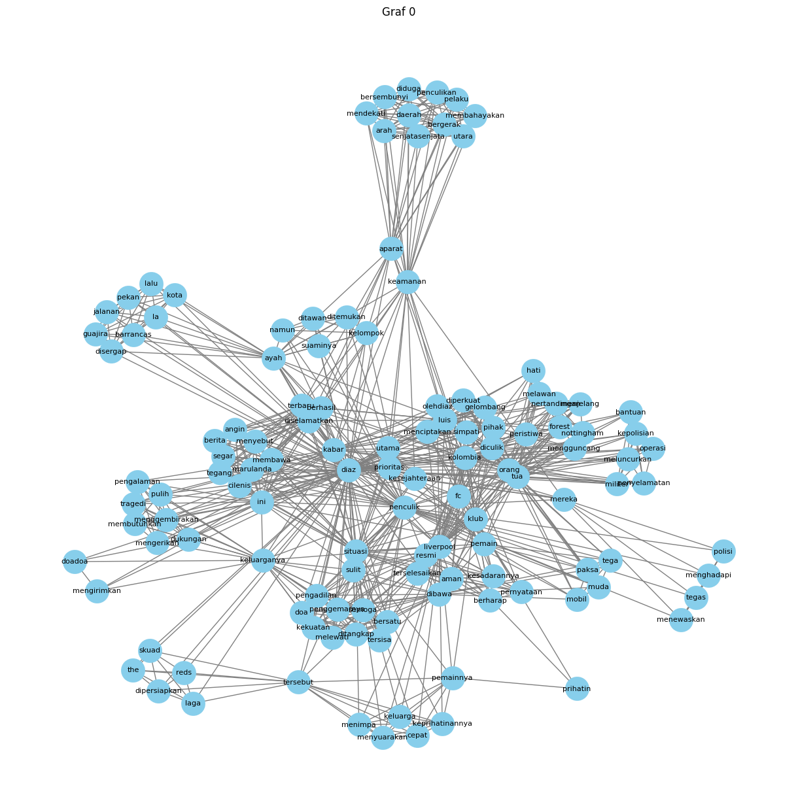
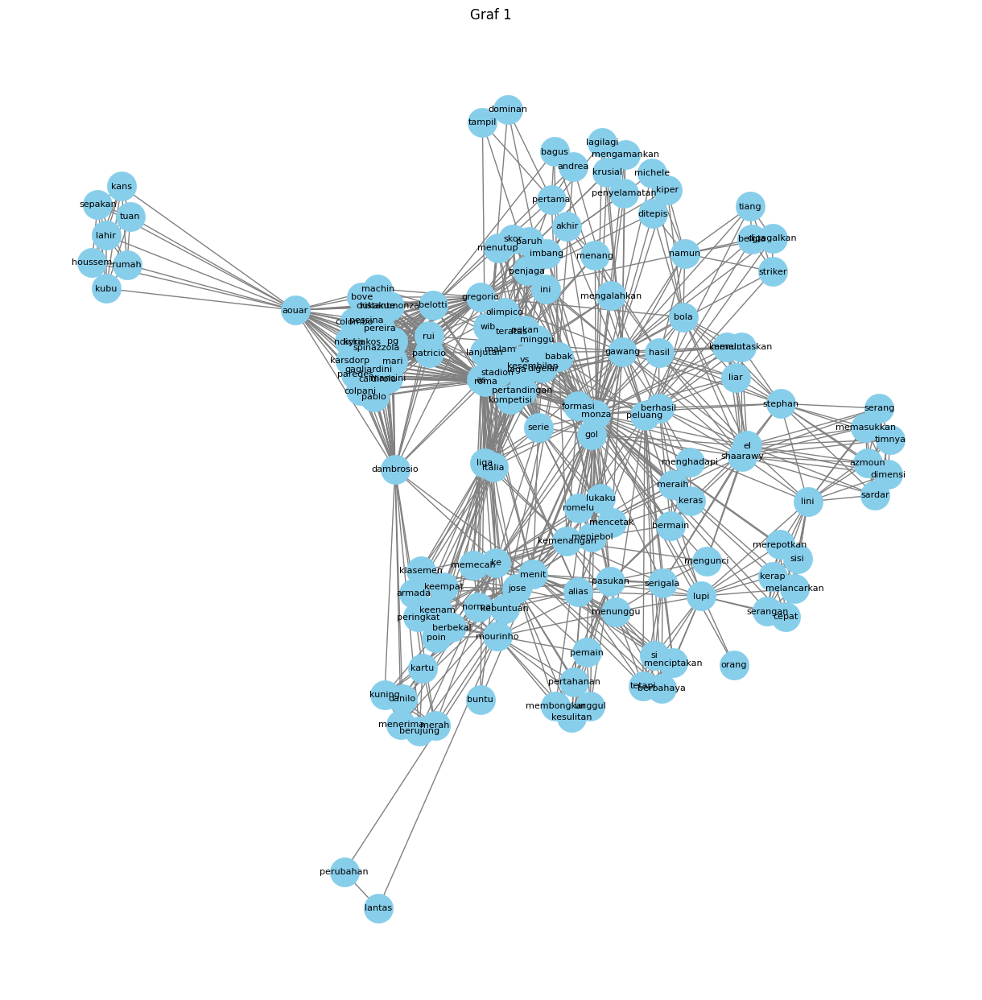
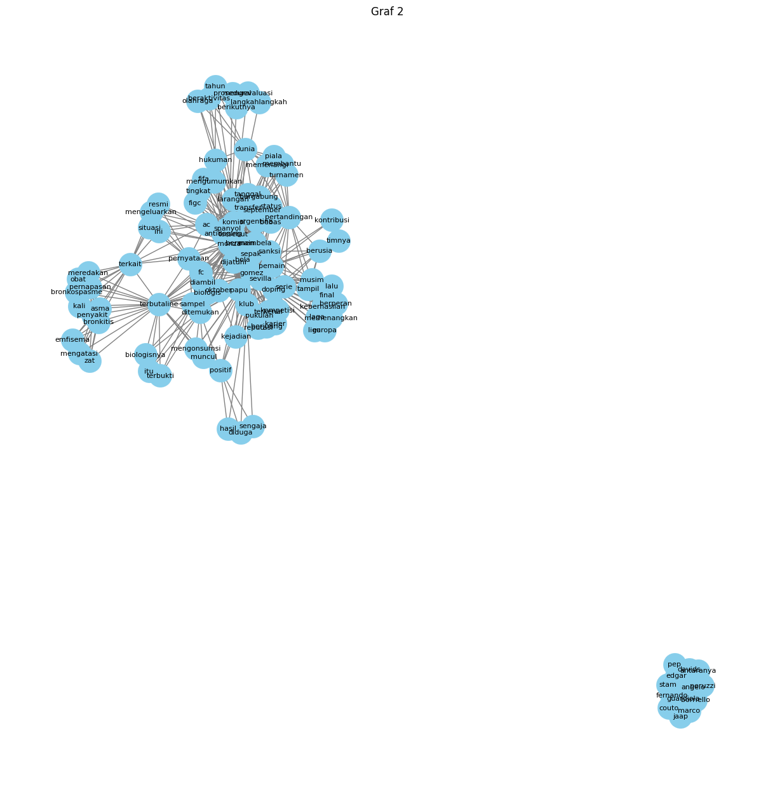
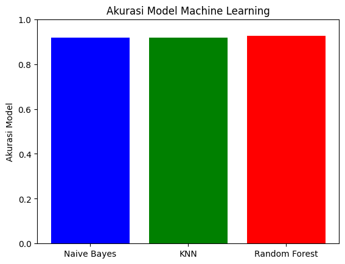

Text Rank untuk mencari kata kunci data berita#
Ambil data berita#
import os
%cd /content/
os.mkdir('data_berita')
import gdown
# download data
nama_data = '/content/data_berita/data_berita.csv'
gdown.download(f'https://drive.google.com/uc?id=1vu67IeDIAWTCH9hk4C39DrH9JKXHpUVi', nama_data, quiet=False)
/content
Downloading...
From: https://drive.google.com/uc?id=1vu67IeDIAWTCH9hk4C39DrH9JKXHpUVi
To: /content/data_berita/data_berita.csv
0%| | 0.00/2.30M [00:00<?, ?B/s]
46%|████▌ | 1.05M/2.30M [00:00<00:00, 10.1MB/s]
100%|██████████| 2.30M/2.30M [00:00<00:00, 18.2MB/s]
'/content/data_berita/data_berita.csv'
import pandas as pd
data_berita = pd.read_csv('/content/data_berita/data_berita.csv')
data_berita
| Judul | Berita | Label | |
|---|---|---|---|
| 0 | Orang Tua Luis Diaz Diculik: 2 Orang Penculik ... | Orang tua Luis Diaz diculik di Kolombia, sebua... | Olahraga |
| 1 | Pertandingan AS Roma vs Monza Berakhir Tipis 1... | Pertandingan AS Roma vs Monza merupakan laga l... | Olahraga |
| 2 | Papu Gomez Positif Doping: 2 Tahun Larangan Be... | Pemain sepak bola asal Argentina, Papu Gomez, ... | Olahraga |
| 3 | Hasil Denmark Open 2023: Saingan Fajar/Rian Be... | Sebagai andalan utama ganda putra Indonesia, F... | Olahraga |
| 4 | Akibat Benzema Dukung Palestina, Menteri Pranc... | Karim Benzema bakal mengajukan tuntutan hukum ... | Olahraga |
| ... | ... | ... | ... |
| 595 | Teaser Lagu Choi Yena “Hate Rodrigo” Tuai Krit... | Teaser lagu Choi Yena dengan judul Hate Rodrig... | Entertaiment |
| 596 | Rilis MV “Move”, TREASURE Sub Unit T5 Resmi De... | TREASURE sub unit T5 akhirnya comeback dan lan... | Entertaiment |
| 597 | Ucapan Hari Raya Idul Adha: Menyambut Hari Kem... | Hari Raya Idul Adha, juga dikenal sebagai Hari... | Entertaiment |
| 598 | Resmi! David Corenswet Ditunjuk Sebagai Pemera... | Warner Bros dan DC Studios telah menemukan pem... | Entertaiment |
| 599 | Dengkul Getar Trending, Selebgram Hanum Mega B... | Selebgram Hanum Mega putuskan cerai usai kemba... | Entertaiment |
600 rows × 3 columns
Normalisasi#
import nltk
from nltk.tokenize import word_tokenize
from nltk.corpus import stopwords
import string
import pandas as pd
import numpy as np
import re
import warnings
from nltk.stem import PorterStemmer
from nltk.tokenize import sent_tokenize
nltk.download('stopwords')
nltk.download('punkt')
warnings.filterwarnings('ignore')
[nltk_data] Downloading package stopwords to /root/nltk_data...
[nltk_data] Unzipping corpora/stopwords.zip.
[nltk_data] Downloading package punkt to /root/nltk_data...
[nltk_data] Unzipping tokenizers/punkt.zip.
Cek data kosong#
# cek apakah ada data yang kosong
data_berita.isnull().sum()
Judul 0
Berita 0
Label 0
dtype: int64
Punctuation#
data_berita['berita_clean'] = data_berita['Berita'].str.replace(r'[^\w\s,.?!]', '', regex=True).str.lower()
data_berita['berita_clean'] = data_berita['berita_clean'].str.replace('\d+', '', regex=True)
Stopword#
# Inisialisasi kamus stop words dari NLTK
stop_words = set(stopwords.words('indonesian')) # Inisialisasi kamus stop words di luar loop
# Fungsi untuk menghapus stop words
def remove_stopwords(text):
if isinstance(text, str): # Periksa apakah teks adalah string
return ' '.join(word for word in text.split() if word not in stop_words)
else:
return '' # Mengembalikan string kosong untuk nilai non-string
data_berita['berita_Stopword'] = data_berita['berita_clean'].apply(remove_stopwords)
data_berita
| Judul | Berita | Label | berita_clean | berita_Stopword | |
|---|---|---|---|---|---|
| 0 | Orang Tua Luis Diaz Diculik: 2 Orang Penculik ... | Orang tua Luis Diaz diculik di Kolombia, sebua... | Olahraga | orang tua luis diaz diculik di kolombia, sebua... | orang tua luis diaz diculik kolombia, peristiw... |
| 1 | Pertandingan AS Roma vs Monza Berakhir Tipis 1... | Pertandingan AS Roma vs Monza merupakan laga l... | Olahraga | pertandingan as roma vs monza merupakan laga l... | pertandingan as roma vs monza laga lanjutan pe... |
| 2 | Papu Gomez Positif Doping: 2 Tahun Larangan Be... | Pemain sepak bola asal Argentina, Papu Gomez, ... | Olahraga | pemain sepak bola asal argentina, papu gomez, ... | pemain sepak bola argentina, papu gomez, membe... |
| 3 | Hasil Denmark Open 2023: Saingan Fajar/Rian Be... | Sebagai andalan utama ganda putra Indonesia, F... | Olahraga | sebagai andalan utama ganda putra indonesia, f... | andalan utama ganda putra indonesia, fajarrian... |
| 4 | Akibat Benzema Dukung Palestina, Menteri Pranc... | Karim Benzema bakal mengajukan tuntutan hukum ... | Olahraga | karim benzema bakal mengajukan tuntutan hukum ... | karim benzema mengajukan tuntutan hukum menter... |
| ... | ... | ... | ... | ... | ... |
| 595 | Teaser Lagu Choi Yena “Hate Rodrigo” Tuai Krit... | Teaser lagu Choi Yena dengan judul Hate Rodrig... | Entertaiment | teaser lagu choi yena dengan judul hate rodrig... | teaser lagu choi yena judul hate rodrigo menua... |
| 596 | Rilis MV “Move”, TREASURE Sub Unit T5 Resmi De... | TREASURE sub unit T5 akhirnya comeback dan lan... | Entertaiment | treasure sub unit t akhirnya comeback dan lang... | treasure sub unit t comeback langsung merilis ... |
| 597 | Ucapan Hari Raya Idul Adha: Menyambut Hari Kem... | Hari Raya Idul Adha, juga dikenal sebagai Hari... | Entertaiment | hari raya idul adha, juga dikenal sebagai hari... | raya idul adha, dikenal raya kurban, momen uma... |
| 598 | Resmi! David Corenswet Ditunjuk Sebagai Pemera... | Warner Bros dan DC Studios telah menemukan pem... | Entertaiment | warner bros dan dc studios telah menemukan pem... | warner bros dc studios menemukan pemeran film ... |
| 599 | Dengkul Getar Trending, Selebgram Hanum Mega B... | Selebgram Hanum Mega putuskan cerai usai kemba... | Entertaiment | selebgram hanum mega putuskan cerai usai kemba... | selebgram hanum mega putuskan cerai bongkar pe... |
600 rows × 5 columns
Tokenisasi#
data_berita['berita_token'] = data_berita['berita_Stopword'].apply(sent_tokenize)
data_berita
| Judul | Berita | Label | berita_clean | berita_Stopword | berita_token | |
|---|---|---|---|---|---|---|
| 0 | Orang Tua Luis Diaz Diculik: 2 Orang Penculik ... | Orang tua Luis Diaz diculik di Kolombia, sebua... | Olahraga | orang tua luis diaz diculik di kolombia, sebua... | orang tua luis diaz diculik kolombia, peristiw... | [orang tua luis diaz diculik kolombia, peristi... |
| 1 | Pertandingan AS Roma vs Monza Berakhir Tipis 1... | Pertandingan AS Roma vs Monza merupakan laga l... | Olahraga | pertandingan as roma vs monza merupakan laga l... | pertandingan as roma vs monza laga lanjutan pe... | [pertandingan as roma vs monza laga lanjutan p... |
| 2 | Papu Gomez Positif Doping: 2 Tahun Larangan Be... | Pemain sepak bola asal Argentina, Papu Gomez, ... | Olahraga | pemain sepak bola asal argentina, papu gomez, ... | pemain sepak bola argentina, papu gomez, membe... | [pemain sepak bola argentina, papu gomez, memb... |
| 3 | Hasil Denmark Open 2023: Saingan Fajar/Rian Be... | Sebagai andalan utama ganda putra Indonesia, F... | Olahraga | sebagai andalan utama ganda putra indonesia, f... | andalan utama ganda putra indonesia, fajarrian... | [andalan utama ganda putra indonesia, fajarria... |
| 4 | Akibat Benzema Dukung Palestina, Menteri Pranc... | Karim Benzema bakal mengajukan tuntutan hukum ... | Olahraga | karim benzema bakal mengajukan tuntutan hukum ... | karim benzema mengajukan tuntutan hukum menter... | [karim benzema mengajukan tuntutan hukum mente... |
| ... | ... | ... | ... | ... | ... | ... |
| 595 | Teaser Lagu Choi Yena “Hate Rodrigo” Tuai Krit... | Teaser lagu Choi Yena dengan judul Hate Rodrig... | Entertaiment | teaser lagu choi yena dengan judul hate rodrig... | teaser lagu choi yena judul hate rodrigo menua... | [teaser lagu choi yena judul hate rodrigo menu... |
| 596 | Rilis MV “Move”, TREASURE Sub Unit T5 Resmi De... | TREASURE sub unit T5 akhirnya comeback dan lan... | Entertaiment | treasure sub unit t akhirnya comeback dan lang... | treasure sub unit t comeback langsung merilis ... | [treasure sub unit t comeback langsung merilis... |
| 597 | Ucapan Hari Raya Idul Adha: Menyambut Hari Kem... | Hari Raya Idul Adha, juga dikenal sebagai Hari... | Entertaiment | hari raya idul adha, juga dikenal sebagai hari... | raya idul adha, dikenal raya kurban, momen uma... | [raya idul adha, dikenal raya kurban, momen um... |
| 598 | Resmi! David Corenswet Ditunjuk Sebagai Pemera... | Warner Bros dan DC Studios telah menemukan pem... | Entertaiment | warner bros dan dc studios telah menemukan pem... | warner bros dc studios menemukan pemeran film ... | [warner bros dc studios menemukan pemeran film... |
| 599 | Dengkul Getar Trending, Selebgram Hanum Mega B... | Selebgram Hanum Mega putuskan cerai usai kemba... | Entertaiment | selebgram hanum mega putuskan cerai usai kemba... | selebgram hanum mega putuskan cerai bongkar pe... | [selebgram hanum mega putuskan cerai bongkar p... |
600 rows × 6 columns
Gabung Hasil Tokenizing#
data_berita['full_text'] = data_berita['berita_token'].apply(lambda tokens: ' '.join(tokens))
data_berita
| Judul | Berita | Label | berita_clean | berita_Stopword | berita_token | full_text | |
|---|---|---|---|---|---|---|---|
| 0 | Orang Tua Luis Diaz Diculik: 2 Orang Penculik ... | Orang tua Luis Diaz diculik di Kolombia, sebua... | Olahraga | orang tua luis diaz diculik di kolombia, sebua... | orang tua luis diaz diculik kolombia, peristiw... | [orang tua luis diaz diculik kolombia, peristi... | orang tua luis diaz diculik kolombia, peristiw... |
| 1 | Pertandingan AS Roma vs Monza Berakhir Tipis 1... | Pertandingan AS Roma vs Monza merupakan laga l... | Olahraga | pertandingan as roma vs monza merupakan laga l... | pertandingan as roma vs monza laga lanjutan pe... | [pertandingan as roma vs monza laga lanjutan p... | pertandingan as roma vs monza laga lanjutan pe... |
| 2 | Papu Gomez Positif Doping: 2 Tahun Larangan Be... | Pemain sepak bola asal Argentina, Papu Gomez, ... | Olahraga | pemain sepak bola asal argentina, papu gomez, ... | pemain sepak bola argentina, papu gomez, membe... | [pemain sepak bola argentina, papu gomez, memb... | pemain sepak bola argentina, papu gomez, membe... |
| 3 | Hasil Denmark Open 2023: Saingan Fajar/Rian Be... | Sebagai andalan utama ganda putra Indonesia, F... | Olahraga | sebagai andalan utama ganda putra indonesia, f... | andalan utama ganda putra indonesia, fajarrian... | [andalan utama ganda putra indonesia, fajarria... | andalan utama ganda putra indonesia, fajarrian... |
| 4 | Akibat Benzema Dukung Palestina, Menteri Pranc... | Karim Benzema bakal mengajukan tuntutan hukum ... | Olahraga | karim benzema bakal mengajukan tuntutan hukum ... | karim benzema mengajukan tuntutan hukum menter... | [karim benzema mengajukan tuntutan hukum mente... | karim benzema mengajukan tuntutan hukum menter... |
| ... | ... | ... | ... | ... | ... | ... | ... |
| 595 | Teaser Lagu Choi Yena “Hate Rodrigo” Tuai Krit... | Teaser lagu Choi Yena dengan judul Hate Rodrig... | Entertaiment | teaser lagu choi yena dengan judul hate rodrig... | teaser lagu choi yena judul hate rodrigo menua... | [teaser lagu choi yena judul hate rodrigo menu... | teaser lagu choi yena judul hate rodrigo menua... |
| 596 | Rilis MV “Move”, TREASURE Sub Unit T5 Resmi De... | TREASURE sub unit T5 akhirnya comeback dan lan... | Entertaiment | treasure sub unit t akhirnya comeback dan lang... | treasure sub unit t comeback langsung merilis ... | [treasure sub unit t comeback langsung merilis... | treasure sub unit t comeback langsung merilis ... |
| 597 | Ucapan Hari Raya Idul Adha: Menyambut Hari Kem... | Hari Raya Idul Adha, juga dikenal sebagai Hari... | Entertaiment | hari raya idul adha, juga dikenal sebagai hari... | raya idul adha, dikenal raya kurban, momen uma... | [raya idul adha, dikenal raya kurban, momen um... | raya idul adha, dikenal raya kurban, momen uma... |
| 598 | Resmi! David Corenswet Ditunjuk Sebagai Pemera... | Warner Bros dan DC Studios telah menemukan pem... | Entertaiment | warner bros dan dc studios telah menemukan pem... | warner bros dc studios menemukan pemeran film ... | [warner bros dc studios menemukan pemeran film... | warner bros dc studios menemukan pemeran film ... |
| 599 | Dengkul Getar Trending, Selebgram Hanum Mega B... | Selebgram Hanum Mega putuskan cerai usai kemba... | Entertaiment | selebgram hanum mega putuskan cerai usai kemba... | selebgram hanum mega putuskan cerai bongkar pe... | [selebgram hanum mega putuskan cerai bongkar p... | selebgram hanum mega putuskan cerai bongkar pe... |
600 rows × 7 columns
Term Freq#
from sklearn.feature_extraction.text import CountVectorizer
tf_result = []
for i in range(len(data_berita['berita_token'])):
tf_vectorizer = CountVectorizer()
tf_matrix = tf_vectorizer.fit_transform(data_berita['berita_token'][i]).toarray()
terms = tf_vectorizer.get_feature_names_out()
berita_tf = pd.DataFrame(tf_matrix, columns=terms)
tf_result.append(berita_tf)
for i in range(len(tf_result[:10])):
tf_show = tf_result[i]
print(f"=====================Berita ke-{i}======================")
display(tf_show)
=====================Berita ke-0======================
| aman | angin | aparat | arah | ayah | bantuan | barrancas | bergerak | berharap | berhasil | ... | tegas | terbaru | tersebut | terselesaikan | tersisa | the | tragedi | tua | utama | utara | |
|---|---|---|---|---|---|---|---|---|---|---|---|---|---|---|---|---|---|---|---|---|---|
| 0 | 0 | 0 | 0 | 0 | 0 | 0 | 0 | 0 | 0 | 0 | ... | 0 | 0 | 0 | 0 | 0 | 0 | 0 | 1 | 0 | 0 |
| 1 | 0 | 0 | 0 | 0 | 1 | 0 | 1 | 0 | 0 | 0 | ... | 0 | 0 | 0 | 0 | 0 | 0 | 0 | 0 | 0 | 0 |
| 2 | 0 | 0 | 0 | 0 | 0 | 0 | 0 | 0 | 0 | 0 | ... | 0 | 0 | 0 | 0 | 0 | 0 | 0 | 1 | 0 | 0 |
| 3 | 0 | 0 | 0 | 0 | 0 | 0 | 0 | 0 | 0 | 0 | ... | 0 | 0 | 0 | 0 | 0 | 0 | 0 | 1 | 0 | 0 |
| 4 | 0 | 0 | 0 | 0 | 0 | 0 | 0 | 0 | 0 | 0 | ... | 0 | 0 | 1 | 0 | 0 | 0 | 0 | 0 | 0 | 0 |
| 5 | 0 | 0 | 0 | 0 | 0 | 0 | 0 | 0 | 0 | 0 | ... | 0 | 0 | 0 | 0 | 0 | 0 | 0 | 0 | 0 | 0 |
| 6 | 0 | 0 | 0 | 0 | 0 | 1 | 0 | 0 | 0 | 0 | ... | 0 | 0 | 0 | 0 | 0 | 0 | 0 | 1 | 0 | 0 |
| 7 | 0 | 0 | 1 | 1 | 0 | 0 | 0 | 1 | 0 | 0 | ... | 0 | 0 | 0 | 0 | 0 | 0 | 0 | 0 | 0 | 1 |
| 8 | 0 | 1 | 0 | 0 | 0 | 0 | 0 | 0 | 0 | 1 | ... | 0 | 1 | 0 | 0 | 0 | 0 | 0 | 0 | 0 | 0 |
| 9 | 0 | 0 | 0 | 0 | 1 | 0 | 0 | 0 | 0 | 0 | ... | 0 | 0 | 0 | 0 | 0 | 0 | 0 | 0 | 0 | 0 |
| 10 | 0 | 0 | 0 | 0 | 0 | 0 | 0 | 0 | 0 | 0 | ... | 0 | 0 | 0 | 0 | 0 | 0 | 0 | 1 | 0 | 0 |
| 11 | 0 | 0 | 0 | 0 | 0 | 0 | 0 | 0 | 0 | 0 | ... | 0 | 0 | 1 | 0 | 0 | 1 | 0 | 0 | 0 | 0 |
| 12 | 0 | 0 | 0 | 0 | 0 | 0 | 0 | 0 | 0 | 0 | ... | 0 | 0 | 0 | 0 | 0 | 0 | 0 | 0 | 0 | 0 |
| 13 | 0 | 0 | 0 | 0 | 0 | 0 | 0 | 0 | 0 | 0 | ... | 0 | 0 | 0 | 0 | 0 | 0 | 0 | 0 | 1 | 0 |
| 14 | 1 | 0 | 0 | 0 | 0 | 0 | 0 | 0 | 1 | 0 | ... | 0 | 0 | 0 | 1 | 0 | 0 | 0 | 0 | 0 | 0 |
| 15 | 0 | 0 | 0 | 0 | 0 | 0 | 0 | 0 | 0 | 0 | ... | 0 | 0 | 0 | 0 | 0 | 0 | 0 | 0 | 1 | 0 |
| 16 | 0 | 0 | 1 | 0 | 1 | 0 | 0 | 0 | 0 | 1 | ... | 0 | 1 | 0 | 0 | 0 | 0 | 0 | 0 | 0 | 0 |
| 17 | 0 | 0 | 0 | 0 | 0 | 0 | 0 | 0 | 0 | 0 | ... | 1 | 0 | 0 | 0 | 0 | 0 | 0 | 0 | 0 | 0 |
| 18 | 0 | 0 | 0 | 0 | 0 | 0 | 0 | 0 | 0 | 0 | ... | 0 | 0 | 0 | 0 | 0 | 0 | 1 | 0 | 0 | 0 |
| 19 | 0 | 0 | 0 | 0 | 0 | 0 | 0 | 0 | 0 | 0 | ... | 0 | 0 | 0 | 0 | 1 | 0 | 0 | 0 | 0 | 0 |
20 rows × 124 columns
=====================Berita ke-1======================
| akhir | alias | andrea | aouar | armada | as | azmoun | babak | bagus | belgia | ... | striker | tampil | teratas | tetapi | tiang | timnya | tuan | unggul | vs | wib | |
|---|---|---|---|---|---|---|---|---|---|---|---|---|---|---|---|---|---|---|---|---|---|
| 0 | 0 | 0 | 0 | 0 | 0 | 2 | 0 | 0 | 0 | 0 | ... | 0 | 0 | 1 | 0 | 0 | 0 | 0 | 0 | 2 | 1 |
| 1 | 0 | 0 | 0 | 0 | 0 | 1 | 0 | 0 | 0 | 0 | ... | 0 | 0 | 0 | 0 | 0 | 0 | 0 | 0 | 0 | 0 |
| 2 | 0 | 0 | 0 | 0 | 0 | 0 | 0 | 1 | 0 | 0 | ... | 0 | 0 | 0 | 0 | 0 | 0 | 0 | 0 | 0 | 0 |
| 3 | 0 | 0 | 0 | 0 | 0 | 0 | 0 | 1 | 0 | 0 | ... | 0 | 1 | 0 | 0 | 0 | 0 | 0 | 0 | 0 | 0 |
| 4 | 0 | 1 | 0 | 0 | 0 | 0 | 0 | 0 | 0 | 0 | ... | 0 | 0 | 0 | 1 | 0 | 0 | 0 | 0 | 0 | 0 |
| 5 | 0 | 0 | 0 | 1 | 0 | 0 | 0 | 0 | 0 | 0 | ... | 0 | 0 | 0 | 0 | 0 | 0 | 1 | 0 | 0 | 0 |
| 6 | 0 | 0 | 0 | 0 | 0 | 0 | 0 | 0 | 0 | 0 | ... | 0 | 0 | 0 | 0 | 0 | 0 | 0 | 0 | 0 | 0 |
| 7 | 0 | 0 | 0 | 0 | 0 | 0 | 0 | 0 | 0 | 0 | ... | 0 | 0 | 0 | 0 | 0 | 0 | 0 | 0 | 0 | 0 |
| 8 | 0 | 0 | 0 | 0 | 0 | 0 | 0 | 0 | 0 | 0 | ... | 0 | 0 | 0 | 0 | 0 | 0 | 0 | 0 | 0 | 0 |
| 9 | 0 | 0 | 1 | 0 | 0 | 0 | 0 | 1 | 1 | 0 | ... | 0 | 0 | 0 | 0 | 0 | 0 | 0 | 0 | 0 | 0 |
| 10 | 0 | 0 | 0 | 0 | 0 | 0 | 0 | 0 | 0 | 0 | ... | 0 | 0 | 0 | 0 | 0 | 0 | 0 | 0 | 0 | 0 |
| 11 | 0 | 0 | 0 | 0 | 0 | 1 | 0 | 0 | 0 | 0 | ... | 0 | 0 | 0 | 0 | 0 | 0 | 0 | 0 | 1 | 0 |
| 12 | 0 | 0 | 0 | 0 | 0 | 0 | 0 | 0 | 0 | 0 | ... | 0 | 0 | 0 | 0 | 0 | 0 | 0 | 1 | 0 | 0 |
| 13 | 0 | 0 | 0 | 0 | 0 | 0 | 0 | 0 | 0 | 0 | ... | 0 | 0 | 0 | 0 | 0 | 0 | 0 | 0 | 0 | 0 |
| 14 | 0 | 0 | 0 | 0 | 0 | 0 | 1 | 0 | 0 | 0 | ... | 0 | 0 | 0 | 0 | 0 | 1 | 0 | 0 | 0 | 0 |
| 15 | 0 | 0 | 0 | 0 | 0 | 0 | 0 | 0 | 0 | 0 | ... | 0 | 0 | 0 | 0 | 0 | 0 | 0 | 0 | 0 | 0 |
| 16 | 0 | 0 | 0 | 0 | 0 | 0 | 0 | 0 | 0 | 0 | ... | 0 | 0 | 0 | 0 | 0 | 0 | 0 | 0 | 0 | 0 |
| 17 | 0 | 0 | 0 | 0 | 0 | 0 | 0 | 0 | 0 | 0 | ... | 0 | 0 | 0 | 0 | 0 | 0 | 0 | 0 | 0 | 0 |
| 18 | 0 | 0 | 0 | 0 | 0 | 0 | 0 | 0 | 0 | 1 | ... | 1 | 0 | 0 | 0 | 1 | 0 | 0 | 0 | 0 | 0 |
| 19 | 0 | 1 | 0 | 0 | 0 | 1 | 0 | 0 | 0 | 0 | ... | 0 | 0 | 0 | 0 | 0 | 0 | 0 | 0 | 0 | 0 |
| 20 | 0 | 0 | 0 | 0 | 0 | 0 | 0 | 0 | 0 | 0 | ... | 0 | 0 | 0 | 0 | 0 | 0 | 0 | 0 | 0 | 0 |
| 21 | 0 | 0 | 0 | 0 | 0 | 0 | 0 | 0 | 0 | 0 | ... | 0 | 0 | 0 | 0 | 0 | 0 | 0 | 0 | 0 | 0 |
| 22 | 1 | 0 | 0 | 0 | 0 | 1 | 0 | 0 | 0 | 0 | ... | 0 | 0 | 0 | 0 | 0 | 0 | 0 | 0 | 0 | 0 |
| 23 | 0 | 0 | 0 | 0 | 1 | 0 | 0 | 0 | 0 | 0 | ... | 0 | 0 | 0 | 0 | 0 | 0 | 0 | 0 | 0 | 0 |
| 24 | 0 | 0 | 0 | 0 | 0 | 1 | 0 | 0 | 0 | 0 | ... | 0 | 0 | 0 | 0 | 0 | 0 | 0 | 0 | 0 | 0 |
| 25 | 0 | 0 | 0 | 0 | 0 | 0 | 0 | 0 | 0 | 0 | ... | 0 | 0 | 0 | 0 | 0 | 0 | 0 | 0 | 0 | 0 |
| 26 | 0 | 0 | 0 | 1 | 0 | 1 | 0 | 0 | 0 | 0 | ... | 0 | 0 | 0 | 0 | 0 | 0 | 0 | 0 | 0 | 0 |
27 rows × 153 columns
=====================Berita ke-2======================
| ac | angelo | antaranya | antidoping | argentina | asma | bebas | beraktivitas | bergabung | berikutnya | ... | terbukti | terbutaline | terkait | terkenal | tersebut | timnya | tingkat | transfer | turnamen | zat | |
|---|---|---|---|---|---|---|---|---|---|---|---|---|---|---|---|---|---|---|---|---|---|
| 0 | 0 | 0 | 0 | 1 | 1 | 0 | 0 | 0 | 0 | 0 | ... | 0 | 0 | 0 | 0 | 0 | 0 | 0 | 0 | 0 | 0 |
| 1 | 0 | 0 | 0 | 0 | 0 | 0 | 0 | 0 | 0 | 0 | ... | 0 | 1 | 0 | 0 | 0 | 0 | 0 | 0 | 0 | 0 |
| 2 | 0 | 0 | 0 | 0 | 0 | 1 | 0 | 0 | 0 | 0 | ... | 0 | 1 | 0 | 0 | 0 | 0 | 0 | 0 | 0 | 1 |
| 3 | 0 | 0 | 0 | 0 | 0 | 0 | 0 | 0 | 0 | 0 | ... | 0 | 0 | 0 | 0 | 0 | 0 | 0 | 0 | 0 | 0 |
| 4 | 0 | 0 | 0 | 0 | 0 | 0 | 0 | 0 | 0 | 0 | ... | 1 | 1 | 0 | 0 | 0 | 0 | 0 | 0 | 0 | 0 |
| 5 | 0 | 0 | 0 | 0 | 0 | 1 | 0 | 0 | 0 | 0 | ... | 0 | 1 | 1 | 0 | 0 | 0 | 0 | 0 | 0 | 0 |
| 6 | 1 | 0 | 0 | 0 | 0 | 0 | 1 | 0 | 1 | 0 | ... | 0 | 0 | 0 | 0 | 0 | 0 | 0 | 1 | 0 | 0 |
| 7 | 0 | 0 | 0 | 0 | 0 | 0 | 0 | 0 | 0 | 0 | ... | 0 | 0 | 0 | 0 | 0 | 0 | 0 | 0 | 0 | 0 |
| 8 | 1 | 0 | 0 | 0 | 0 | 0 | 0 | 0 | 0 | 0 | ... | 0 | 0 | 1 | 0 | 0 | 0 | 0 | 0 | 0 | 0 |
| 9 | 0 | 0 | 0 | 1 | 0 | 0 | 0 | 0 | 0 | 0 | ... | 0 | 0 | 0 | 0 | 0 | 0 | 1 | 0 | 0 | 0 |
| 10 | 0 | 0 | 0 | 0 | 0 | 0 | 0 | 1 | 0 | 0 | ... | 0 | 0 | 0 | 0 | 0 | 0 | 0 | 0 | 0 | 0 |
| 11 | 0 | 0 | 0 | 0 | 0 | 0 | 0 | 0 | 0 | 0 | ... | 0 | 1 | 0 | 0 | 1 | 0 | 0 | 0 | 0 | 0 |
| 12 | 0 | 0 | 0 | 0 | 0 | 0 | 0 | 0 | 0 | 0 | ... | 0 | 0 | 0 | 0 | 0 | 0 | 0 | 0 | 0 | 0 |
| 13 | 0 | 0 | 0 | 0 | 0 | 0 | 0 | 0 | 0 | 1 | ... | 0 | 0 | 0 | 0 | 0 | 0 | 0 | 0 | 0 | 0 |
| 14 | 0 | 0 | 0 | 0 | 0 | 0 | 0 | 0 | 0 | 0 | ... | 0 | 0 | 0 | 0 | 0 | 1 | 0 | 0 | 0 | 0 |
| 15 | 0 | 0 | 0 | 0 | 1 | 0 | 0 | 0 | 0 | 0 | ... | 0 | 0 | 0 | 0 | 1 | 0 | 0 | 0 | 1 | 0 |
| 16 | 0 | 0 | 0 | 0 | 0 | 0 | 0 | 0 | 0 | 0 | ... | 0 | 0 | 0 | 0 | 0 | 0 | 0 | 0 | 0 | 0 |
| 17 | 0 | 0 | 0 | 0 | 0 | 0 | 0 | 0 | 0 | 0 | ... | 0 | 0 | 0 | 1 | 0 | 0 | 0 | 0 | 0 | 0 |
| 18 | 0 | 1 | 1 | 0 | 0 | 0 | 0 | 0 | 0 | 0 | ... | 0 | 0 | 0 | 0 | 0 | 0 | 0 | 0 | 0 | 0 |
19 rows × 111 columns
=====================Berita ke-3======================
| andalan | arena | arti | asa | babak | bagan | bank | ben | berat | berhadapan | ... | tiket | turnamen | undian | usahanya | utama | vendy | wakil | waspada | wib | yongna | |
|---|---|---|---|---|---|---|---|---|---|---|---|---|---|---|---|---|---|---|---|---|---|
| 0 | 1 | 0 | 0 | 0 | 0 | 0 | 0 | 0 | 0 | 0 | ... | 0 | 0 | 0 | 1 | 1 | 0 | 0 | 0 | 0 | 0 |
| 1 | 0 | 0 | 0 | 0 | 1 | 0 | 0 | 1 | 0 | 0 | ... | 1 | 0 | 0 | 0 | 0 | 1 | 0 | 0 | 0 | 0 |
| 2 | 0 | 1 | 0 | 0 | 0 | 0 | 1 | 0 | 0 | 0 | ... | 0 | 0 | 0 | 0 | 0 | 0 | 0 | 0 | 0 | 0 |
| 3 | 0 | 0 | 0 | 0 | 0 | 0 | 0 | 0 | 0 | 0 | ... | 0 | 0 | 0 | 0 | 0 | 0 | 0 | 0 | 0 | 0 |
| 4 | 0 | 0 | 1 | 0 | 0 | 0 | 0 | 0 | 0 | 0 | ... | 0 | 0 | 0 | 0 | 0 | 0 | 0 | 0 | 0 | 0 |
| 5 | 0 | 0 | 0 | 0 | 0 | 0 | 0 | 0 | 0 | 0 | ... | 0 | 0 | 0 | 0 | 0 | 0 | 0 | 0 | 0 | 0 |
| 6 | 0 | 0 | 0 | 0 | 0 | 0 | 0 | 0 | 0 | 0 | ... | 0 | 0 | 0 | 0 | 0 | 0 | 0 | 0 | 0 | 0 |
| 7 | 0 | 0 | 0 | 1 | 0 | 0 | 0 | 0 | 0 | 0 | ... | 0 | 1 | 0 | 0 | 0 | 0 | 0 | 0 | 0 | 0 |
| 8 | 0 | 0 | 0 | 0 | 1 | 0 | 0 | 0 | 0 | 0 | ... | 0 | 0 | 0 | 0 | 0 | 0 | 1 | 0 | 0 | 1 |
| 9 | 0 | 0 | 0 | 0 | 1 | 0 | 0 | 0 | 0 | 0 | ... | 0 | 0 | 0 | 0 | 0 | 0 | 0 | 0 | 0 | 0 |
| 10 | 0 | 0 | 0 | 0 | 0 | 1 | 0 | 0 | 0 | 0 | ... | 0 | 0 | 1 | 0 | 0 | 0 | 0 | 0 | 0 | 0 |
| 11 | 0 | 0 | 0 | 0 | 1 | 0 | 0 | 0 | 1 | 0 | ... | 0 | 0 | 0 | 0 | 0 | 0 | 1 | 0 | 0 | 0 |
| 12 | 0 | 0 | 0 | 0 | 0 | 0 | 0 | 0 | 0 | 0 | ... | 0 | 0 | 0 | 0 | 0 | 0 | 0 | 1 | 0 | 0 |
| 13 | 0 | 0 | 0 | 0 | 1 | 0 | 0 | 0 | 0 | 1 | ... | 0 | 0 | 0 | 0 | 0 | 0 | 0 | 0 | 0 | 0 |
| 14 | 0 | 0 | 0 | 0 | 0 | 0 | 0 | 0 | 0 | 0 | ... | 0 | 0 | 0 | 0 | 0 | 0 | 0 | 0 | 0 | 0 |
| 15 | 0 | 0 | 0 | 0 | 0 | 0 | 0 | 0 | 0 | 0 | ... | 0 | 0 | 0 | 0 | 0 | 0 | 0 | 0 | 1 | 0 |
| 16 | 0 | 0 | 0 | 0 | 0 | 0 | 0 | 0 | 0 | 0 | ... | 0 | 1 | 0 | 0 | 0 | 0 | 0 | 0 | 0 | 0 |
17 rows × 107 columns
=====================Berita ke-4======================
| agen | akun | al | anakanak | anggota | aplikasi | benzema | beralasan | berdasar | berharap | ... | terkenal | teroris | tudingan | tuduhan | tulis | tuntutan | tweet | undangundang | upaya | wanita | |
|---|---|---|---|---|---|---|---|---|---|---|---|---|---|---|---|---|---|---|---|---|---|
| 0 | 0 | 0 | 0 | 0 | 0 | 0 | 1 | 0 | 0 | 0 | ... | 0 | 0 | 0 | 0 | 0 | 1 | 0 | 0 | 0 | 0 |
| 1 | 0 | 0 | 0 | 0 | 0 | 0 | 1 | 0 | 0 | 0 | ... | 0 | 1 | 0 | 0 | 0 | 0 | 0 | 0 | 0 | 0 |
| 2 | 0 | 0 | 1 | 0 | 0 | 0 | 1 | 0 | 0 | 0 | ... | 1 | 0 | 0 | 0 | 0 | 0 | 0 | 0 | 0 | 0 |
| 3 | 0 | 0 | 0 | 0 | 0 | 0 | 0 | 0 | 0 | 0 | ... | 0 | 1 | 0 | 1 | 0 | 0 | 0 | 0 | 0 | 0 |
| 4 | 0 | 0 | 0 | 0 | 0 | 0 | 1 | 0 | 0 | 0 | ... | 0 | 0 | 0 | 0 | 0 | 0 | 0 | 0 | 0 | 0 |
| 5 | 0 | 0 | 0 | 0 | 0 | 0 | 1 | 0 | 0 | 0 | ... | 0 | 0 | 0 | 0 | 0 | 0 | 0 | 0 | 0 | 0 |
| 6 | 0 | 0 | 0 | 1 | 0 | 0 | 0 | 0 | 0 | 0 | ... | 0 | 0 | 0 | 0 | 0 | 0 | 0 | 0 | 0 | 1 |
| 7 | 0 | 0 | 0 | 0 | 0 | 0 | 0 | 0 | 0 | 0 | ... | 0 | 0 | 0 | 0 | 0 | 0 | 0 | 0 | 0 | 0 |
| 8 | 0 | 0 | 0 | 0 | 0 | 0 | 1 | 0 | 0 | 0 | ... | 0 | 1 | 0 | 0 | 0 | 0 | 0 | 0 | 0 | 0 |
| 9 | 0 | 0 | 0 | 0 | 0 | 0 | 0 | 0 | 0 | 0 | ... | 0 | 0 | 0 | 0 | 0 | 0 | 0 | 0 | 0 | 0 |
| 10 | 1 | 0 | 0 | 0 | 1 | 0 | 1 | 0 | 0 | 0 | ... | 0 | 0 | 0 | 0 | 0 | 0 | 0 | 0 | 0 | 0 |
| 11 | 0 | 0 | 0 | 0 | 0 | 0 | 1 | 0 | 0 | 0 | ... | 0 | 0 | 0 | 0 | 0 | 0 | 0 | 0 | 0 | 0 |
| 12 | 0 | 0 | 0 | 0 | 0 | 0 | 1 | 0 | 0 | 0 | ... | 0 | 0 | 0 | 1 | 0 | 0 | 0 | 0 | 0 | 0 |
| 13 | 0 | 0 | 0 | 0 | 0 | 0 | 0 | 0 | 1 | 0 | ... | 0 | 0 | 1 | 0 | 0 | 0 | 0 | 0 | 0 | 0 |
| 14 | 0 | 0 | 0 | 0 | 0 | 0 | 1 | 1 | 0 | 0 | ... | 0 | 0 | 0 | 1 | 0 | 0 | 0 | 0 | 0 | 0 |
| 15 | 0 | 0 | 0 | 0 | 0 | 0 | 1 | 0 | 0 | 0 | ... | 0 | 0 | 0 | 0 | 0 | 0 | 0 | 0 | 0 | 0 |
| 16 | 0 | 0 | 0 | 0 | 0 | 0 | 1 | 0 | 0 | 0 | ... | 0 | 0 | 0 | 0 | 0 | 0 | 0 | 0 | 0 | 0 |
| 17 | 0 | 0 | 0 | 0 | 0 | 0 | 1 | 0 | 0 | 0 | ... | 0 | 0 | 0 | 0 | 0 | 0 | 0 | 1 | 0 | 0 |
| 18 | 0 | 0 | 0 | 0 | 0 | 0 | 1 | 0 | 0 | 0 | ... | 0 | 0 | 0 | 0 | 0 | 0 | 0 | 0 | 0 | 0 |
| 19 | 0 | 0 | 0 | 0 | 0 | 0 | 0 | 0 | 0 | 0 | ... | 0 | 0 | 0 | 1 | 0 | 0 | 0 | 0 | 1 | 0 |
| 20 | 0 | 0 | 0 | 0 | 0 | 0 | 1 | 0 | 1 | 1 | ... | 0 | 0 | 0 | 1 | 0 | 0 | 0 | 0 | 0 | 0 |
| 21 | 0 | 0 | 0 | 0 | 0 | 0 | 0 | 0 | 0 | 0 | ... | 0 | 0 | 0 | 0 | 0 | 0 | 0 | 0 | 0 | 0 |
| 22 | 0 | 1 | 0 | 1 | 0 | 1 | 2 | 0 | 0 | 0 | ... | 0 | 0 | 0 | 0 | 1 | 0 | 1 | 0 | 0 | 1 |
23 rows × 116 columns
=====================Berita ke-5======================
| akibat | allen | argentina | babak | baik | bangkit | begitu | berhasil | berkat | bermain | ... | timnya | tinggal | tuan | umpan | unggul | upaya | utama | vargas | vs | wib | |
|---|---|---|---|---|---|---|---|---|---|---|---|---|---|---|---|---|---|---|---|---|---|
| 0 | 0 | 0 | 0 | 0 | 0 | 0 | 0 | 0 | 0 | 0 | ... | 0 | 0 | 0 | 0 | 0 | 0 | 1 | 0 | 1 | 1 |
| 1 | 0 | 0 | 0 | 0 | 0 | 0 | 0 | 0 | 0 | 0 | ... | 0 | 0 | 0 | 0 | 0 | 0 | 0 | 0 | 0 | 0 |
| 2 | 0 | 0 | 0 | 0 | 0 | 0 | 0 | 0 | 0 | 1 | ... | 0 | 0 | 0 | 0 | 0 | 0 | 0 | 0 | 0 | 0 |
| 3 | 0 | 0 | 1 | 0 | 0 | 0 | 0 | 0 | 0 | 0 | ... | 0 | 0 | 0 | 0 | 0 | 0 | 0 | 0 | 0 | 0 |
| 4 | 0 | 0 | 0 | 0 | 0 | 0 | 1 | 0 | 0 | 0 | ... | 0 | 0 | 0 | 0 | 0 | 0 | 0 | 0 | 0 | 0 |
| 5 | 0 | 0 | 0 | 0 | 0 | 0 | 0 | 0 | 0 | 0 | ... | 0 | 0 | 0 | 0 | 0 | 0 | 0 | 0 | 1 | 0 |
| 6 | 1 | 0 | 0 | 0 | 0 | 0 | 0 | 0 | 0 | 0 | ... | 0 | 0 | 0 | 0 | 0 | 0 | 0 | 1 | 0 | 0 |
| 7 | 0 | 0 | 0 | 0 | 0 | 1 | 0 | 0 | 0 | 0 | ... | 0 | 0 | 0 | 0 | 0 | 0 | 0 | 0 | 0 | 0 |
| 8 | 0 | 0 | 0 | 0 | 0 | 0 | 0 | 0 | 0 | 0 | ... | 0 | 0 | 0 | 0 | 0 | 0 | 0 | 0 | 1 | 0 |
| 9 | 0 | 0 | 0 | 0 | 0 | 0 | 0 | 0 | 0 | 0 | ... | 0 | 0 | 0 | 0 | 0 | 0 | 0 | 0 | 0 | 0 |
| 10 | 0 | 0 | 0 | 0 | 0 | 0 | 0 | 0 | 0 | 0 | ... | 0 | 0 | 1 | 0 | 0 | 0 | 0 | 0 | 0 | 0 |
| 11 | 0 | 1 | 0 | 0 | 0 | 0 | 0 | 0 | 0 | 0 | ... | 0 | 0 | 0 | 0 | 0 | 0 | 0 | 0 | 0 | 0 |
| 12 | 0 | 0 | 0 | 0 | 0 | 0 | 0 | 1 | 0 | 0 | ... | 0 | 0 | 0 | 0 | 0 | 0 | 0 | 0 | 0 | 0 |
| 13 | 0 | 0 | 0 | 1 | 0 | 0 | 0 | 1 | 1 | 0 | ... | 0 | 0 | 0 | 1 | 1 | 0 | 0 | 1 | 0 | 0 |
| 14 | 0 | 0 | 0 | 1 | 0 | 0 | 0 | 0 | 0 | 0 | ... | 0 | 1 | 0 | 0 | 0 | 0 | 0 | 0 | 0 | 0 |
| 15 | 0 | 0 | 0 | 1 | 0 | 0 | 0 | 0 | 0 | 0 | ... | 0 | 0 | 0 | 0 | 0 | 0 | 0 | 0 | 0 | 0 |
| 16 | 0 | 0 | 0 | 1 | 0 | 0 | 0 | 0 | 0 | 0 | ... | 0 | 0 | 0 | 0 | 0 | 0 | 0 | 0 | 0 | 0 |
| 17 | 0 | 0 | 0 | 0 | 0 | 0 | 0 | 0 | 0 | 0 | ... | 1 | 0 | 0 | 0 | 0 | 1 | 0 | 1 | 0 | 0 |
| 18 | 0 | 1 | 0 | 0 | 0 | 0 | 0 | 0 | 0 | 0 | ... | 0 | 1 | 0 | 0 | 0 | 0 | 0 | 0 | 0 | 0 |
| 19 | 0 | 0 | 0 | 0 | 1 | 0 | 0 | 0 | 0 | 0 | ... | 0 | 0 | 0 | 0 | 0 | 0 | 0 | 0 | 0 | 0 |
| 20 | 0 | 0 | 0 | 0 | 0 | 0 | 0 | 0 | 0 | 0 | ... | 0 | 0 | 0 | 0 | 0 | 0 | 0 | 0 | 0 | 0 |
| 21 | 0 | 0 | 0 | 0 | 0 | 0 | 0 | 0 | 0 | 0 | ... | 0 | 0 | 0 | 0 | 0 | 0 | 0 | 0 | 0 | 0 |
| 22 | 0 | 0 | 0 | 0 | 0 | 0 | 0 | 0 | 0 | 0 | ... | 0 | 0 | 0 | 0 | 0 | 0 | 0 | 0 | 0 | 0 |
23 rows × 128 columns
=====================Berita ke-6======================
| afrika | agensi | ajang | asasi | atlas | bayern | bek | bentuk | berbicara | berdampingan | ... | terkait | teroris | terorisme | tetapi | tim | timnas | timur | unggahan | video | wadah | |
|---|---|---|---|---|---|---|---|---|---|---|---|---|---|---|---|---|---|---|---|---|---|
| 0 | 0 | 0 | 0 | 0 | 0 | 1 | 0 | 0 | 0 | 0 | ... | 0 | 0 | 0 | 0 | 0 | 0 | 0 | 0 | 0 | 0 |
| 1 | 0 | 0 | 0 | 0 | 0 | 0 | 1 | 0 | 0 | 0 | ... | 1 | 0 | 0 | 0 | 0 | 0 | 0 | 0 | 0 | 0 |
| 2 | 1 | 0 | 0 | 0 | 0 | 0 | 0 | 0 | 0 | 0 | ... | 0 | 0 | 0 | 0 | 1 | 0 | 0 | 0 | 0 | 0 |
| 3 | 0 | 1 | 0 | 0 | 0 | 2 | 0 | 0 | 0 | 0 | ... | 1 | 0 | 0 | 0 | 0 | 0 | 0 | 1 | 0 | 0 |
| 4 | 0 | 0 | 0 | 0 | 0 | 0 | 0 | 0 | 0 | 0 | ... | 0 | 0 | 0 | 0 | 0 | 0 | 0 | 0 | 0 | 0 |
| 5 | 0 | 0 | 0 | 0 | 0 | 0 | 0 | 0 | 0 | 0 | ... | 1 | 0 | 0 | 0 | 0 | 0 | 0 | 0 | 0 | 0 |
| 6 | 0 | 0 | 0 | 0 | 0 | 0 | 0 | 0 | 0 | 0 | ... | 0 | 1 | 0 | 0 | 0 | 0 | 0 | 1 | 0 | 0 |
| 7 | 0 | 0 | 0 | 0 | 0 | 0 | 0 | 0 | 0 | 0 | ... | 0 | 0 | 0 | 0 | 0 | 0 | 0 | 0 | 0 | 0 |
| 8 | 0 | 0 | 0 | 0 | 0 | 0 | 0 | 0 | 0 | 1 | ... | 0 | 0 | 0 | 0 | 0 | 0 | 1 | 0 | 0 | 0 |
| 9 | 0 | 0 | 0 | 0 | 0 | 0 | 0 | 0 | 0 | 0 | ... | 1 | 0 | 0 | 0 | 0 | 0 | 0 | 0 | 1 | 0 |
| 10 | 0 | 0 | 0 | 0 | 0 | 0 | 0 | 1 | 0 | 0 | ... | 0 | 0 | 1 | 0 | 0 | 0 | 0 | 0 | 0 | 0 |
| 11 | 0 | 0 | 0 | 0 | 0 | 0 | 0 | 0 | 0 | 0 | ... | 0 | 0 | 0 | 0 | 0 | 0 | 0 | 0 | 0 | 0 |
| 12 | 0 | 0 | 0 | 0 | 0 | 0 | 0 | 0 | 0 | 0 | ... | 0 | 0 | 0 | 0 | 0 | 0 | 0 | 0 | 0 | 0 |
| 13 | 0 | 0 | 0 | 0 | 0 | 0 | 0 | 0 | 0 | 0 | ... | 0 | 0 | 0 | 0 | 0 | 1 | 0 | 0 | 0 | 0 |
| 14 | 1 | 0 | 0 | 0 | 1 | 0 | 0 | 0 | 0 | 0 | ... | 0 | 0 | 0 | 0 | 0 | 0 | 0 | 0 | 0 | 0 |
| 15 | 0 | 0 | 0 | 0 | 0 | 0 | 0 | 0 | 0 | 0 | ... | 0 | 0 | 0 | 0 | 0 | 0 | 1 | 0 | 0 | 0 |
| 16 | 0 | 0 | 0 | 1 | 0 | 0 | 0 | 0 | 0 | 0 | ... | 0 | 0 | 0 | 0 | 0 | 0 | 0 | 0 | 0 | 0 |
| 17 | 0 | 0 | 0 | 0 | 0 | 1 | 0 | 0 | 0 | 0 | ... | 0 | 0 | 0 | 0 | 0 | 0 | 0 | 0 | 0 | 0 |
| 18 | 0 | 0 | 1 | 0 | 0 | 0 | 0 | 0 | 1 | 0 | ... | 0 | 0 | 0 | 0 | 0 | 0 | 0 | 0 | 0 | 0 |
| 19 | 0 | 0 | 0 | 0 | 0 | 0 | 0 | 0 | 0 | 0 | ... | 0 | 0 | 0 | 1 | 0 | 0 | 0 | 0 | 0 | 1 |
20 rows × 127 columns
=====================Berita ke-7======================
| amerika | asuhan | babak | bahkan | baru | beradaptasi | berhadapan | berhalter | berhasil | bermain | ... | timnya | tuan | turner | uji | utama | vs | weston | whitney | wirtz | xi | |
|---|---|---|---|---|---|---|---|---|---|---|---|---|---|---|---|---|---|---|---|---|---|
| 0 | 1 | 0 | 0 | 0 | 0 | 0 | 0 | 0 | 0 | 0 | ... | 0 | 0 | 0 | 1 | 0 | 1 | 0 | 1 | 0 | 0 |
| 1 | 1 | 0 | 0 | 0 | 0 | 0 | 0 | 0 | 0 | 0 | ... | 0 | 1 | 0 | 0 | 0 | 1 | 0 | 0 | 0 | 0 |
| 2 | 0 | 0 | 0 | 0 | 0 | 0 | 0 | 0 | 0 | 0 | ... | 0 | 0 | 0 | 0 | 0 | 0 | 0 | 0 | 0 | 0 |
| 3 | 0 | 0 | 0 | 0 | 0 | 0 | 0 | 0 | 0 | 0 | ... | 0 | 0 | 0 | 0 | 0 | 0 | 0 | 0 | 0 | 0 |
| 4 | 0 | 0 | 0 | 0 | 0 | 0 | 0 | 0 | 0 | 0 | ... | 0 | 0 | 0 | 0 | 0 | 0 | 0 | 0 | 0 | 0 |
| 5 | 0 | 0 | 0 | 0 | 0 | 0 | 0 | 0 | 0 | 0 | ... | 0 | 0 | 0 | 1 | 0 | 0 | 0 | 0 | 0 | 0 |
| 6 | 1 | 0 | 0 | 0 | 0 | 0 | 1 | 0 | 0 | 0 | ... | 0 | 0 | 0 | 0 | 0 | 0 | 0 | 0 | 0 | 0 |
| 7 | 1 | 0 | 0 | 0 | 0 | 0 | 0 | 0 | 0 | 0 | ... | 0 | 0 | 0 | 0 | 0 | 1 | 0 | 0 | 0 | 0 |
| 8 | 0 | 0 | 0 | 0 | 0 | 0 | 0 | 0 | 0 | 0 | ... | 1 | 0 | 0 | 0 | 0 | 0 | 0 | 0 | 1 | 1 |
| 9 | 0 | 0 | 1 | 0 | 1 | 1 | 0 | 0 | 0 | 0 | ... | 0 | 0 | 0 | 0 | 0 | 0 | 0 | 0 | 0 | 0 |
| 10 | 1 | 0 | 0 | 1 | 0 | 0 | 0 | 0 | 0 | 0 | ... | 0 | 0 | 0 | 0 | 0 | 0 | 0 | 0 | 0 | 0 |
| 11 | 0 | 0 | 0 | 0 | 0 | 0 | 0 | 0 | 0 | 0 | ... | 0 | 0 | 0 | 0 | 0 | 0 | 0 | 0 | 0 | 0 |
| 12 | 0 | 0 | 0 | 0 | 0 | 0 | 0 | 0 | 1 | 0 | ... | 0 | 0 | 0 | 0 | 0 | 0 | 0 | 0 | 0 | 0 |
| 13 | 0 | 0 | 1 | 0 | 0 | 0 | 0 | 0 | 0 | 0 | ... | 0 | 0 | 0 | 0 | 0 | 0 | 0 | 0 | 0 | 0 |
| 14 | 0 | 0 | 0 | 0 | 0 | 0 | 0 | 0 | 1 | 0 | ... | 0 | 0 | 0 | 0 | 0 | 0 | 0 | 0 | 0 | 0 |
| 15 | 0 | 0 | 0 | 0 | 0 | 0 | 0 | 0 | 0 | 0 | ... | 0 | 0 | 0 | 0 | 0 | 0 | 0 | 0 | 0 | 0 |
| 16 | 0 | 0 | 0 | 0 | 0 | 0 | 0 | 0 | 0 | 0 | ... | 0 | 0 | 0 | 0 | 0 | 0 | 0 | 0 | 0 | 0 |
| 17 | 0 | 0 | 0 | 0 | 0 | 0 | 0 | 0 | 0 | 0 | ... | 0 | 0 | 0 | 0 | 0 | 0 | 0 | 0 | 0 | 0 |
| 18 | 1 | 0 | 0 | 0 | 0 | 0 | 0 | 0 | 0 | 1 | ... | 0 | 0 | 1 | 0 | 0 | 0 | 0 | 0 | 0 | 0 |
| 19 | 0 | 1 | 0 | 0 | 0 | 0 | 0 | 1 | 0 | 0 | ... | 0 | 0 | 0 | 0 | 0 | 0 | 1 | 0 | 0 | 1 |
| 20 | 0 | 0 | 0 | 0 | 0 | 0 | 0 | 0 | 0 | 1 | ... | 0 | 0 | 0 | 0 | 1 | 0 | 0 | 0 | 0 | 0 |
| 21 | 0 | 0 | 0 | 0 | 0 | 0 | 0 | 0 | 0 | 0 | ... | 0 | 0 | 0 | 0 | 0 | 0 | 0 | 0 | 0 | 0 |
22 rows × 126 columns
=====================Berita ke-8======================
| akademi | akun | an | antarklub | baginya | baru | belgia | bergabung | berhasil | berhenti | ... | tepat | terang | terbaik | terbesarnya | terpilih | tersebut | transfer | ucapan | usia | vitalnya | |
|---|---|---|---|---|---|---|---|---|---|---|---|---|---|---|---|---|---|---|---|---|---|
| 0 | 0 | 0 | 0 | 0 | 0 | 0 | 1 | 0 | 0 | 0 | ... | 0 | 0 | 0 | 0 | 0 | 0 | 0 | 0 | 1 | 0 |
| 1 | 0 | 0 | 0 | 0 | 0 | 0 | 1 | 0 | 0 | 0 | ... | 0 | 0 | 1 | 0 | 0 | 0 | 0 | 0 | 0 | 0 |
| 2 | 0 | 0 | 1 | 0 | 0 | 0 | 0 | 0 | 0 | 0 | ... | 0 | 1 | 0 | 0 | 0 | 0 | 0 | 0 | 0 | 0 |
| 3 | 0 | 0 | 0 | 0 | 0 | 0 | 0 | 0 | 0 | 0 | ... | 0 | 0 | 0 | 0 | 0 | 0 | 0 | 0 | 0 | 0 |
| 4 | 0 | 1 | 0 | 0 | 0 | 0 | 0 | 0 | 0 | 1 | ... | 1 | 0 | 0 | 0 | 0 | 0 | 0 | 0 | 0 | 0 |
| 5 | 1 | 0 | 0 | 0 | 0 | 0 | 0 | 0 | 0 | 0 | ... | 0 | 0 | 0 | 0 | 0 | 1 | 0 | 0 | 0 | 0 |
| 6 | 0 | 0 | 0 | 0 | 0 | 0 | 0 | 0 | 0 | 0 | ... | 0 | 0 | 0 | 1 | 0 | 0 | 0 | 0 | 0 | 0 |
| 7 | 0 | 0 | 0 | 0 | 0 | 0 | 0 | 0 | 1 | 0 | ... | 0 | 0 | 0 | 0 | 0 | 0 | 0 | 0 | 0 | 0 |
| 8 | 0 | 0 | 0 | 0 | 0 | 0 | 0 | 0 | 0 | 0 | ... | 0 | 0 | 2 | 0 | 1 | 0 | 0 | 0 | 0 | 1 |
| 9 | 0 | 0 | 0 | 0 | 0 | 0 | 0 | 1 | 0 | 0 | ... | 0 | 0 | 0 | 0 | 0 | 0 | 1 | 0 | 2 | 0 |
| 10 | 0 | 0 | 0 | 0 | 0 | 0 | 0 | 0 | 0 | 0 | ... | 0 | 0 | 0 | 0 | 0 | 0 | 0 | 0 | 0 | 0 |
| 11 | 0 | 0 | 0 | 0 | 0 | 0 | 0 | 0 | 0 | 0 | ... | 0 | 0 | 0 | 0 | 0 | 0 | 0 | 0 | 0 | 0 |
| 12 | 0 | 0 | 0 | 0 | 0 | 0 | 0 | 0 | 0 | 0 | ... | 0 | 0 | 0 | 0 | 0 | 0 | 0 | 0 | 0 | 0 |
| 13 | 0 | 0 | 0 | 1 | 0 | 0 | 0 | 0 | 1 | 0 | ... | 0 | 0 | 0 | 0 | 0 | 0 | 0 | 0 | 0 | 0 |
| 14 | 0 | 0 | 0 | 0 | 0 | 0 | 0 | 0 | 0 | 0 | ... | 0 | 0 | 0 | 0 | 0 | 0 | 0 | 0 | 0 | 0 |
| 15 | 0 | 0 | 0 | 0 | 1 | 1 | 0 | 0 | 0 | 0 | ... | 0 | 0 | 0 | 0 | 0 | 0 | 0 | 0 | 0 | 0 |
| 16 | 0 | 0 | 0 | 0 | 0 | 0 | 0 | 0 | 0 | 0 | ... | 0 | 0 | 0 | 0 | 0 | 0 | 0 | 1 | 0 | 0 |
17 rows × 123 columns
=====================Berita ke-9======================
| acara | akuisisi | al | bayaran | beckham | berhasil | berusia | bin | dailymail | david | ... | tersebut | terwujud | tetapi | thani | tim | trafford | transaksi | united | upayanya | victoria | |
|---|---|---|---|---|---|---|---|---|---|---|---|---|---|---|---|---|---|---|---|---|---|
| 0 | 0 | 0 | 0 | 0 | 0 | 0 | 0 | 0 | 0 | 0 | ... | 0 | 0 | 0 | 0 | 0 | 0 | 0 | 1 | 0 | 0 |
| 1 | 0 | 0 | 0 | 0 | 1 | 0 | 0 | 0 | 0 | 1 | ... | 0 | 0 | 0 | 0 | 0 | 0 | 0 | 1 | 1 | 0 |
| 2 | 0 | 0 | 0 | 0 | 0 | 0 | 0 | 0 | 0 | 0 | ... | 0 | 0 | 0 | 0 | 0 | 0 | 0 | 0 | 0 | 0 |
| 3 | 0 | 1 | 0 | 0 | 0 | 1 | 0 | 0 | 0 | 0 | ... | 1 | 0 | 0 | 0 | 0 | 1 | 0 | 1 | 0 | 0 |
| 4 | 0 | 0 | 0 | 0 | 1 | 0 | 0 | 0 | 1 | 0 | ... | 0 | 0 | 0 | 0 | 0 | 0 | 0 | 1 | 0 | 1 |
| 5 | 0 | 0 | 1 | 0 | 0 | 1 | 0 | 1 | 0 | 0 | ... | 1 | 1 | 0 | 1 | 0 | 0 | 0 | 0 | 0 | 0 |
| 6 | 0 | 0 | 0 | 0 | 1 | 0 | 0 | 0 | 0 | 1 | ... | 1 | 0 | 0 | 0 | 1 | 0 | 0 | 0 | 0 | 0 |
| 7 | 0 | 0 | 0 | 0 | 0 | 0 | 0 | 0 | 0 | 0 | ... | 0 | 0 | 0 | 0 | 0 | 0 | 0 | 0 | 0 | 0 |
| 8 | 0 | 0 | 0 | 0 | 0 | 0 | 0 | 0 | 0 | 0 | ... | 0 | 0 | 1 | 0 | 0 | 0 | 1 | 0 | 0 | 0 |
| 9 | 0 | 0 | 0 | 0 | 1 | 0 | 0 | 0 | 0 | 1 | ... | 0 | 0 | 0 | 0 | 0 | 0 | 0 | 1 | 0 | 0 |
| 10 | 0 | 0 | 0 | 0 | 1 | 0 | 0 | 0 | 0 | 0 | ... | 0 | 0 | 0 | 0 | 0 | 0 | 0 | 0 | 0 | 0 |
| 11 | 0 | 0 | 0 | 0 | 0 | 0 | 0 | 0 | 0 | 0 | ... | 0 | 0 | 0 | 0 | 0 | 0 | 0 | 0 | 0 | 0 |
| 12 | 0 | 0 | 0 | 0 | 0 | 0 | 0 | 0 | 0 | 0 | ... | 0 | 0 | 0 | 0 | 0 | 0 | 0 | 0 | 0 | 0 |
| 13 | 0 | 0 | 0 | 0 | 0 | 0 | 0 | 0 | 0 | 0 | ... | 0 | 0 | 0 | 0 | 0 | 0 | 0 | 0 | 0 | 0 |
| 14 | 0 | 0 | 0 | 0 | 1 | 0 | 0 | 0 | 0 | 0 | ... | 0 | 0 | 0 | 0 | 0 | 0 | 0 | 0 | 0 | 0 |
| 15 | 0 | 0 | 0 | 0 | 1 | 0 | 0 | 0 | 0 | 1 | ... | 0 | 0 | 0 | 0 | 0 | 0 | 0 | 0 | 0 | 0 |
| 16 | 1 | 0 | 0 | 1 | 1 | 0 | 1 | 0 | 0 | 0 | ... | 2 | 0 | 0 | 0 | 0 | 0 | 0 | 1 | 0 | 0 |
| 17 | 0 | 0 | 0 | 0 | 0 | 0 | 0 | 0 | 0 | 0 | ... | 0 | 0 | 0 | 0 | 0 | 0 | 0 | 0 | 0 | 0 |
18 rows × 120 columns
Co-Occurance Matrics#
co_occurrence_df_all = []
co_occurrence_matrix_all = []
for i in range(len(tf_result)):
# Membuat Co-occurrence Matrix
co_occurrence_matrix = np.dot(tf_result[i].T, tf_result[i])
# Mengganti diagonal dengan nol (karena kita tidak ingin memperhitungkan kata dengan dirinya sendiri)
np.fill_diagonal(co_occurrence_matrix, 0)
# mengambil columns
terms = tf_result[i].columns
# Membuat DataFrame Co-occurrence
co_occurrence_df = pd.DataFrame(co_occurrence_matrix, index=terms, columns=terms)
co_occurrence_df_all.append(co_occurrence_df)
co_occurrence_matrix_all.append(co_occurrence_matrix)
for i in range(len(co_occurrence_df_all[:10])):
co_occurrence_show = co_occurrence_df_all[i]
print(f"=====================CO-Occurence ke-{i}======================")
display(co_occurrence_show)
=====================CO-Occurence ke-0======================
| aman | angin | aparat | arah | ayah | bantuan | barrancas | bergerak | berharap | berhasil | ... | tegas | terbaru | tersebut | terselesaikan | tersisa | the | tragedi | tua | utama | utara | |
|---|---|---|---|---|---|---|---|---|---|---|---|---|---|---|---|---|---|---|---|---|---|
| aman | 0 | 0 | 0 | 0 | 0 | 0 | 0 | 0 | 1 | 0 | ... | 0 | 0 | 0 | 1 | 0 | 0 | 0 | 0 | 0 | 0 |
| angin | 0 | 0 | 0 | 0 | 0 | 0 | 0 | 0 | 0 | 1 | ... | 0 | 1 | 0 | 0 | 0 | 0 | 0 | 0 | 0 | 0 |
| aparat | 0 | 0 | 0 | 1 | 1 | 0 | 0 | 1 | 0 | 1 | ... | 0 | 1 | 0 | 0 | 0 | 0 | 0 | 0 | 0 | 1 |
| arah | 0 | 0 | 1 | 0 | 0 | 0 | 0 | 1 | 0 | 0 | ... | 0 | 0 | 0 | 0 | 0 | 0 | 0 | 0 | 0 | 1 |
| ayah | 0 | 0 | 1 | 0 | 0 | 0 | 1 | 0 | 0 | 1 | ... | 0 | 1 | 0 | 0 | 0 | 0 | 0 | 0 | 0 | 0 |
| ... | ... | ... | ... | ... | ... | ... | ... | ... | ... | ... | ... | ... | ... | ... | ... | ... | ... | ... | ... | ... | ... |
| the | 0 | 0 | 0 | 0 | 0 | 0 | 0 | 0 | 0 | 0 | ... | 0 | 0 | 1 | 0 | 0 | 0 | 0 | 0 | 0 | 0 |
| tragedi | 0 | 0 | 0 | 0 | 0 | 0 | 0 | 0 | 0 | 0 | ... | 0 | 0 | 0 | 0 | 0 | 0 | 0 | 0 | 0 | 0 |
| tua | 0 | 0 | 0 | 0 | 0 | 1 | 0 | 0 | 0 | 0 | ... | 0 | 0 | 0 | 0 | 0 | 0 | 0 | 0 | 0 | 0 |
| utama | 0 | 0 | 0 | 0 | 0 | 0 | 0 | 0 | 0 | 0 | ... | 0 | 0 | 0 | 0 | 0 | 0 | 0 | 0 | 0 | 0 |
| utara | 0 | 0 | 1 | 1 | 0 | 0 | 0 | 1 | 0 | 0 | ... | 0 | 0 | 0 | 0 | 0 | 0 | 0 | 0 | 0 | 0 |
124 rows × 124 columns
=====================CO-Occurence ke-1======================
| akhir | alias | andrea | aouar | armada | as | azmoun | babak | bagus | belgia | ... | striker | tampil | teratas | tetapi | tiang | timnya | tuan | unggul | vs | wib | |
|---|---|---|---|---|---|---|---|---|---|---|---|---|---|---|---|---|---|---|---|---|---|
| akhir | 0 | 0 | 0 | 0 | 0 | 1 | 0 | 0 | 0 | 0 | ... | 0 | 0 | 0 | 0 | 0 | 0 | 0 | 0 | 0 | 0 |
| alias | 0 | 0 | 0 | 0 | 0 | 1 | 0 | 0 | 0 | 0 | ... | 0 | 0 | 0 | 1 | 0 | 0 | 0 | 0 | 0 | 0 |
| andrea | 0 | 0 | 0 | 0 | 0 | 0 | 0 | 1 | 1 | 0 | ... | 0 | 0 | 0 | 0 | 0 | 0 | 0 | 0 | 0 | 0 |
| aouar | 0 | 0 | 0 | 0 | 0 | 1 | 0 | 0 | 0 | 0 | ... | 0 | 0 | 0 | 0 | 0 | 0 | 1 | 0 | 0 | 0 |
| armada | 0 | 0 | 0 | 0 | 0 | 0 | 0 | 0 | 0 | 0 | ... | 0 | 0 | 0 | 0 | 0 | 0 | 0 | 0 | 0 | 0 |
| ... | ... | ... | ... | ... | ... | ... | ... | ... | ... | ... | ... | ... | ... | ... | ... | ... | ... | ... | ... | ... | ... |
| timnya | 0 | 0 | 0 | 0 | 0 | 0 | 1 | 0 | 0 | 0 | ... | 0 | 0 | 0 | 0 | 0 | 0 | 0 | 0 | 0 | 0 |
| tuan | 0 | 0 | 0 | 1 | 0 | 0 | 0 | 0 | 0 | 0 | ... | 0 | 0 | 0 | 0 | 0 | 0 | 0 | 0 | 0 | 0 |
| unggul | 0 | 0 | 0 | 0 | 0 | 0 | 0 | 0 | 0 | 0 | ... | 0 | 0 | 0 | 0 | 0 | 0 | 0 | 0 | 0 | 0 |
| vs | 0 | 0 | 0 | 0 | 0 | 5 | 0 | 0 | 0 | 0 | ... | 0 | 0 | 2 | 0 | 0 | 0 | 0 | 0 | 0 | 2 |
| wib | 0 | 0 | 0 | 0 | 0 | 2 | 0 | 0 | 0 | 0 | ... | 0 | 0 | 1 | 0 | 0 | 0 | 0 | 0 | 2 | 0 |
153 rows × 153 columns
=====================CO-Occurence ke-2======================
| ac | angelo | antaranya | antidoping | argentina | asma | bebas | beraktivitas | bergabung | berikutnya | ... | terbukti | terbutaline | terkait | terkenal | tersebut | timnya | tingkat | transfer | turnamen | zat | |
|---|---|---|---|---|---|---|---|---|---|---|---|---|---|---|---|---|---|---|---|---|---|
| ac | 0 | 0 | 0 | 0 | 0 | 0 | 1 | 0 | 1 | 0 | ... | 0 | 0 | 1 | 0 | 0 | 0 | 0 | 1 | 0 | 0 |
| angelo | 0 | 0 | 1 | 0 | 0 | 0 | 0 | 0 | 0 | 0 | ... | 0 | 0 | 0 | 0 | 0 | 0 | 0 | 0 | 0 | 0 |
| antaranya | 0 | 1 | 0 | 0 | 0 | 0 | 0 | 0 | 0 | 0 | ... | 0 | 0 | 0 | 0 | 0 | 0 | 0 | 0 | 0 | 0 |
| antidoping | 0 | 0 | 0 | 0 | 1 | 0 | 0 | 0 | 0 | 0 | ... | 0 | 0 | 0 | 0 | 0 | 0 | 1 | 0 | 0 | 0 |
| argentina | 0 | 0 | 0 | 1 | 0 | 0 | 0 | 0 | 0 | 0 | ... | 0 | 0 | 0 | 0 | 1 | 0 | 0 | 0 | 1 | 0 |
| ... | ... | ... | ... | ... | ... | ... | ... | ... | ... | ... | ... | ... | ... | ... | ... | ... | ... | ... | ... | ... | ... |
| timnya | 0 | 0 | 0 | 0 | 0 | 0 | 0 | 0 | 0 | 0 | ... | 0 | 0 | 0 | 0 | 0 | 0 | 0 | 0 | 0 | 0 |
| tingkat | 0 | 0 | 0 | 1 | 0 | 0 | 0 | 0 | 0 | 0 | ... | 0 | 0 | 0 | 0 | 0 | 0 | 0 | 0 | 0 | 0 |
| transfer | 1 | 0 | 0 | 0 | 0 | 0 | 1 | 0 | 1 | 0 | ... | 0 | 0 | 0 | 0 | 0 | 0 | 0 | 0 | 0 | 0 |
| turnamen | 0 | 0 | 0 | 0 | 1 | 0 | 0 | 0 | 0 | 0 | ... | 0 | 0 | 0 | 0 | 1 | 0 | 0 | 0 | 0 | 0 |
| zat | 0 | 0 | 0 | 0 | 0 | 1 | 0 | 0 | 0 | 0 | ... | 0 | 1 | 0 | 0 | 0 | 0 | 0 | 0 | 0 | 0 |
111 rows × 111 columns
=====================CO-Occurence ke-3======================
| andalan | arena | arti | asa | babak | bagan | bank | ben | berat | berhadapan | ... | tiket | turnamen | undian | usahanya | utama | vendy | wakil | waspada | wib | yongna | |
|---|---|---|---|---|---|---|---|---|---|---|---|---|---|---|---|---|---|---|---|---|---|
| andalan | 0 | 0 | 0 | 0 | 0 | 0 | 0 | 0 | 0 | 0 | ... | 0 | 0 | 0 | 1 | 1 | 0 | 0 | 0 | 0 | 0 |
| arena | 0 | 0 | 0 | 0 | 0 | 0 | 1 | 0 | 0 | 0 | ... | 0 | 0 | 0 | 0 | 0 | 0 | 0 | 0 | 0 | 0 |
| arti | 0 | 0 | 0 | 0 | 0 | 0 | 0 | 0 | 0 | 0 | ... | 0 | 0 | 0 | 0 | 0 | 0 | 0 | 0 | 0 | 0 |
| asa | 0 | 0 | 0 | 0 | 0 | 0 | 0 | 0 | 0 | 0 | ... | 0 | 1 | 0 | 0 | 0 | 0 | 0 | 0 | 0 | 0 |
| babak | 0 | 0 | 0 | 0 | 0 | 0 | 0 | 1 | 1 | 1 | ... | 1 | 0 | 0 | 0 | 0 | 1 | 2 | 0 | 0 | 1 |
| ... | ... | ... | ... | ... | ... | ... | ... | ... | ... | ... | ... | ... | ... | ... | ... | ... | ... | ... | ... | ... | ... |
| vendy | 0 | 0 | 0 | 0 | 1 | 0 | 0 | 1 | 0 | 0 | ... | 1 | 0 | 0 | 0 | 0 | 0 | 0 | 0 | 0 | 0 |
| wakil | 0 | 0 | 0 | 0 | 2 | 0 | 0 | 0 | 1 | 0 | ... | 0 | 0 | 0 | 0 | 0 | 0 | 0 | 0 | 0 | 1 |
| waspada | 0 | 0 | 0 | 0 | 0 | 0 | 0 | 0 | 0 | 0 | ... | 0 | 0 | 0 | 0 | 0 | 0 | 0 | 0 | 0 | 0 |
| wib | 0 | 0 | 0 | 0 | 0 | 0 | 0 | 0 | 0 | 0 | ... | 0 | 0 | 0 | 0 | 0 | 0 | 0 | 0 | 0 | 0 |
| yongna | 0 | 0 | 0 | 0 | 1 | 0 | 0 | 0 | 0 | 0 | ... | 0 | 0 | 0 | 0 | 0 | 0 | 1 | 0 | 0 | 0 |
107 rows × 107 columns
=====================CO-Occurence ke-4======================
| agen | akun | al | anakanak | anggota | aplikasi | benzema | beralasan | berdasar | berharap | ... | terkenal | teroris | tudingan | tuduhan | tulis | tuntutan | tweet | undangundang | upaya | wanita | |
|---|---|---|---|---|---|---|---|---|---|---|---|---|---|---|---|---|---|---|---|---|---|
| agen | 0 | 0 | 0 | 0 | 1 | 0 | 1 | 0 | 0 | 0 | ... | 0 | 0 | 0 | 0 | 0 | 0 | 0 | 0 | 0 | 0 |
| akun | 0 | 0 | 0 | 1 | 0 | 1 | 2 | 0 | 0 | 0 | ... | 0 | 0 | 0 | 0 | 1 | 0 | 1 | 0 | 0 | 1 |
| al | 0 | 0 | 0 | 0 | 0 | 0 | 1 | 0 | 0 | 0 | ... | 1 | 0 | 0 | 0 | 0 | 0 | 0 | 0 | 0 | 0 |
| anakanak | 0 | 1 | 0 | 0 | 0 | 1 | 2 | 0 | 0 | 0 | ... | 0 | 0 | 0 | 0 | 1 | 0 | 1 | 0 | 0 | 2 |
| anggota | 1 | 0 | 0 | 0 | 0 | 0 | 1 | 0 | 0 | 0 | ... | 0 | 0 | 0 | 0 | 0 | 0 | 0 | 0 | 0 | 0 |
| ... | ... | ... | ... | ... | ... | ... | ... | ... | ... | ... | ... | ... | ... | ... | ... | ... | ... | ... | ... | ... | ... |
| tuntutan | 0 | 0 | 0 | 0 | 0 | 0 | 1 | 0 | 0 | 0 | ... | 0 | 0 | 0 | 0 | 0 | 0 | 0 | 0 | 0 | 0 |
| tweet | 0 | 1 | 0 | 1 | 0 | 1 | 2 | 0 | 0 | 0 | ... | 0 | 0 | 0 | 0 | 1 | 0 | 0 | 0 | 0 | 1 |
| undangundang | 0 | 0 | 0 | 0 | 0 | 0 | 1 | 0 | 0 | 0 | ... | 0 | 0 | 0 | 0 | 0 | 0 | 0 | 0 | 0 | 0 |
| upaya | 0 | 0 | 0 | 0 | 0 | 0 | 0 | 0 | 0 | 0 | ... | 0 | 0 | 0 | 1 | 0 | 0 | 0 | 0 | 0 | 0 |
| wanita | 0 | 1 | 0 | 2 | 0 | 1 | 2 | 0 | 0 | 0 | ... | 0 | 0 | 0 | 0 | 1 | 0 | 1 | 0 | 0 | 0 |
116 rows × 116 columns
=====================CO-Occurence ke-5======================
| akibat | allen | argentina | babak | baik | bangkit | begitu | berhasil | berkat | bermain | ... | timnya | tinggal | tuan | umpan | unggul | upaya | utama | vargas | vs | wib | |
|---|---|---|---|---|---|---|---|---|---|---|---|---|---|---|---|---|---|---|---|---|---|
| akibat | 0 | 0 | 0 | 0 | 0 | 0 | 0 | 0 | 0 | 0 | ... | 0 | 0 | 0 | 0 | 0 | 0 | 0 | 1 | 0 | 0 |
| allen | 0 | 0 | 0 | 0 | 0 | 0 | 0 | 0 | 0 | 0 | ... | 0 | 1 | 0 | 0 | 0 | 0 | 0 | 0 | 0 | 0 |
| argentina | 0 | 0 | 0 | 0 | 0 | 0 | 0 | 0 | 0 | 0 | ... | 0 | 0 | 0 | 0 | 0 | 0 | 0 | 0 | 0 | 0 |
| babak | 0 | 0 | 0 | 0 | 0 | 0 | 0 | 1 | 1 | 0 | ... | 0 | 1 | 0 | 1 | 1 | 0 | 0 | 1 | 0 | 0 |
| baik | 0 | 0 | 0 | 0 | 0 | 0 | 0 | 0 | 0 | 0 | ... | 0 | 0 | 0 | 0 | 0 | 0 | 0 | 0 | 0 | 0 |
| ... | ... | ... | ... | ... | ... | ... | ... | ... | ... | ... | ... | ... | ... | ... | ... | ... | ... | ... | ... | ... | ... |
| upaya | 0 | 0 | 0 | 0 | 0 | 0 | 0 | 0 | 0 | 0 | ... | 1 | 0 | 0 | 0 | 0 | 0 | 0 | 1 | 0 | 0 |
| utama | 0 | 0 | 0 | 0 | 0 | 0 | 0 | 0 | 0 | 0 | ... | 0 | 0 | 0 | 0 | 0 | 0 | 0 | 0 | 1 | 1 |
| vargas | 1 | 0 | 0 | 1 | 0 | 0 | 0 | 1 | 1 | 0 | ... | 1 | 0 | 0 | 1 | 1 | 1 | 0 | 0 | 0 | 0 |
| vs | 0 | 0 | 0 | 0 | 0 | 0 | 0 | 0 | 0 | 0 | ... | 0 | 0 | 0 | 0 | 0 | 0 | 1 | 0 | 0 | 1 |
| wib | 0 | 0 | 0 | 0 | 0 | 0 | 0 | 0 | 0 | 0 | ... | 0 | 0 | 0 | 0 | 0 | 0 | 1 | 0 | 1 | 0 |
128 rows × 128 columns
=====================CO-Occurence ke-6======================
| afrika | agensi | ajang | asasi | atlas | bayern | bek | bentuk | berbicara | berdampingan | ... | terkait | teroris | terorisme | tetapi | tim | timnas | timur | unggahan | video | wadah | |
|---|---|---|---|---|---|---|---|---|---|---|---|---|---|---|---|---|---|---|---|---|---|
| afrika | 0 | 0 | 0 | 0 | 1 | 0 | 0 | 0 | 0 | 0 | ... | 0 | 0 | 0 | 0 | 1 | 0 | 0 | 0 | 0 | 0 |
| agensi | 0 | 0 | 0 | 0 | 0 | 2 | 0 | 0 | 0 | 0 | ... | 1 | 0 | 0 | 0 | 0 | 0 | 0 | 1 | 0 | 0 |
| ajang | 0 | 0 | 0 | 0 | 0 | 0 | 0 | 0 | 1 | 0 | ... | 0 | 0 | 0 | 0 | 0 | 0 | 0 | 0 | 0 | 0 |
| asasi | 0 | 0 | 0 | 0 | 0 | 0 | 0 | 0 | 0 | 0 | ... | 0 | 0 | 0 | 0 | 0 | 0 | 0 | 0 | 0 | 0 |
| atlas | 1 | 0 | 0 | 0 | 0 | 0 | 0 | 0 | 0 | 0 | ... | 0 | 0 | 0 | 0 | 0 | 0 | 0 | 0 | 0 | 0 |
| ... | ... | ... | ... | ... | ... | ... | ... | ... | ... | ... | ... | ... | ... | ... | ... | ... | ... | ... | ... | ... | ... |
| timnas | 0 | 0 | 0 | 0 | 0 | 0 | 0 | 0 | 0 | 0 | ... | 0 | 0 | 0 | 0 | 0 | 0 | 0 | 0 | 0 | 0 |
| timur | 0 | 0 | 0 | 0 | 0 | 0 | 0 | 0 | 0 | 1 | ... | 0 | 0 | 0 | 0 | 0 | 0 | 0 | 0 | 0 | 0 |
| unggahan | 0 | 1 | 0 | 0 | 0 | 2 | 0 | 0 | 0 | 0 | ... | 1 | 1 | 0 | 0 | 0 | 0 | 0 | 0 | 0 | 0 |
| video | 0 | 0 | 0 | 0 | 0 | 0 | 0 | 0 | 0 | 0 | ... | 1 | 0 | 0 | 0 | 0 | 0 | 0 | 0 | 0 | 0 |
| wadah | 0 | 0 | 0 | 0 | 0 | 0 | 0 | 0 | 0 | 0 | ... | 0 | 0 | 0 | 1 | 0 | 0 | 0 | 0 | 0 | 0 |
127 rows × 127 columns
=====================CO-Occurence ke-7======================
| amerika | asuhan | babak | bahkan | baru | beradaptasi | berhadapan | berhalter | berhasil | bermain | ... | timnya | tuan | turner | uji | utama | vs | weston | whitney | wirtz | xi | |
|---|---|---|---|---|---|---|---|---|---|---|---|---|---|---|---|---|---|---|---|---|---|
| amerika | 0 | 0 | 0 | 1 | 0 | 0 | 1 | 0 | 0 | 1 | ... | 0 | 1 | 1 | 1 | 0 | 3 | 0 | 1 | 0 | 0 |
| asuhan | 0 | 0 | 0 | 0 | 0 | 0 | 0 | 1 | 0 | 0 | ... | 0 | 0 | 0 | 0 | 0 | 0 | 1 | 0 | 0 | 1 |
| babak | 0 | 0 | 0 | 0 | 1 | 1 | 0 | 0 | 0 | 0 | ... | 0 | 0 | 0 | 0 | 0 | 0 | 0 | 0 | 0 | 0 |
| bahkan | 1 | 0 | 0 | 0 | 0 | 0 | 0 | 0 | 0 | 0 | ... | 0 | 0 | 0 | 0 | 0 | 0 | 0 | 0 | 0 | 0 |
| baru | 0 | 0 | 1 | 0 | 0 | 1 | 0 | 0 | 0 | 0 | ... | 0 | 0 | 0 | 0 | 0 | 0 | 0 | 0 | 0 | 0 |
| ... | ... | ... | ... | ... | ... | ... | ... | ... | ... | ... | ... | ... | ... | ... | ... | ... | ... | ... | ... | ... | ... |
| vs | 3 | 0 | 0 | 0 | 0 | 0 | 0 | 0 | 0 | 0 | ... | 0 | 1 | 0 | 1 | 0 | 0 | 0 | 1 | 0 | 0 |
| weston | 0 | 1 | 0 | 0 | 0 | 0 | 0 | 1 | 0 | 0 | ... | 0 | 0 | 0 | 0 | 0 | 0 | 0 | 0 | 0 | 1 |
| whitney | 1 | 0 | 0 | 0 | 0 | 0 | 0 | 0 | 0 | 0 | ... | 0 | 0 | 0 | 1 | 0 | 1 | 0 | 0 | 0 | 0 |
| wirtz | 0 | 0 | 0 | 0 | 0 | 0 | 0 | 0 | 0 | 0 | ... | 1 | 0 | 0 | 0 | 0 | 0 | 0 | 0 | 0 | 1 |
| xi | 0 | 1 | 0 | 0 | 0 | 0 | 0 | 1 | 0 | 0 | ... | 1 | 0 | 0 | 0 | 0 | 0 | 1 | 0 | 1 | 0 |
126 rows × 126 columns
=====================CO-Occurence ke-8======================
| akademi | akun | an | antarklub | baginya | baru | belgia | bergabung | berhasil | berhenti | ... | tepat | terang | terbaik | terbesarnya | terpilih | tersebut | transfer | ucapan | usia | vitalnya | |
|---|---|---|---|---|---|---|---|---|---|---|---|---|---|---|---|---|---|---|---|---|---|
| akademi | 0 | 0 | 0 | 0 | 0 | 0 | 0 | 0 | 0 | 0 | ... | 0 | 0 | 0 | 0 | 0 | 1 | 0 | 0 | 0 | 0 |
| akun | 0 | 0 | 0 | 0 | 0 | 0 | 0 | 0 | 0 | 1 | ... | 1 | 0 | 0 | 0 | 0 | 0 | 0 | 0 | 0 | 0 |
| an | 0 | 0 | 0 | 0 | 0 | 0 | 0 | 0 | 0 | 0 | ... | 0 | 1 | 0 | 0 | 0 | 0 | 0 | 0 | 0 | 0 |
| antarklub | 0 | 0 | 0 | 0 | 0 | 0 | 0 | 0 | 1 | 0 | ... | 0 | 0 | 0 | 0 | 0 | 0 | 0 | 0 | 0 | 0 |
| baginya | 0 | 0 | 0 | 0 | 0 | 1 | 0 | 0 | 0 | 0 | ... | 0 | 0 | 0 | 0 | 0 | 0 | 0 | 0 | 0 | 0 |
| ... | ... | ... | ... | ... | ... | ... | ... | ... | ... | ... | ... | ... | ... | ... | ... | ... | ... | ... | ... | ... | ... |
| tersebut | 1 | 0 | 0 | 0 | 0 | 0 | 0 | 0 | 0 | 0 | ... | 0 | 0 | 0 | 0 | 0 | 0 | 0 | 0 | 0 | 0 |
| transfer | 0 | 0 | 0 | 0 | 0 | 0 | 0 | 1 | 0 | 0 | ... | 0 | 0 | 0 | 0 | 0 | 0 | 0 | 0 | 2 | 0 |
| ucapan | 0 | 0 | 0 | 0 | 0 | 0 | 0 | 0 | 0 | 0 | ... | 0 | 0 | 0 | 0 | 0 | 0 | 0 | 0 | 0 | 0 |
| usia | 0 | 0 | 0 | 0 | 0 | 0 | 1 | 2 | 0 | 0 | ... | 0 | 0 | 0 | 0 | 0 | 0 | 2 | 0 | 0 | 0 |
| vitalnya | 0 | 0 | 0 | 0 | 0 | 0 | 0 | 0 | 0 | 0 | ... | 0 | 0 | 2 | 0 | 1 | 0 | 0 | 0 | 0 | 0 |
123 rows × 123 columns
=====================CO-Occurence ke-9======================
| acara | akuisisi | al | bayaran | beckham | berhasil | berusia | bin | dailymail | david | ... | tersebut | terwujud | tetapi | thani | tim | trafford | transaksi | united | upayanya | victoria | |
|---|---|---|---|---|---|---|---|---|---|---|---|---|---|---|---|---|---|---|---|---|---|
| acara | 0 | 0 | 0 | 1 | 1 | 0 | 1 | 0 | 0 | 0 | ... | 2 | 0 | 0 | 0 | 0 | 0 | 0 | 1 | 0 | 0 |
| akuisisi | 0 | 0 | 0 | 0 | 0 | 1 | 0 | 0 | 0 | 0 | ... | 1 | 0 | 0 | 0 | 0 | 1 | 0 | 1 | 0 | 0 |
| al | 0 | 0 | 0 | 0 | 0 | 1 | 0 | 1 | 0 | 0 | ... | 1 | 1 | 0 | 1 | 0 | 0 | 0 | 0 | 0 | 0 |
| bayaran | 1 | 0 | 0 | 0 | 1 | 0 | 1 | 0 | 0 | 0 | ... | 2 | 0 | 0 | 0 | 0 | 0 | 0 | 1 | 0 | 0 |
| beckham | 1 | 0 | 0 | 1 | 0 | 0 | 1 | 0 | 1 | 4 | ... | 3 | 0 | 0 | 0 | 1 | 0 | 0 | 4 | 1 | 1 |
| ... | ... | ... | ... | ... | ... | ... | ... | ... | ... | ... | ... | ... | ... | ... | ... | ... | ... | ... | ... | ... | ... |
| trafford | 0 | 1 | 0 | 0 | 0 | 1 | 0 | 0 | 0 | 0 | ... | 1 | 0 | 0 | 0 | 0 | 0 | 0 | 1 | 0 | 0 |
| transaksi | 0 | 0 | 0 | 0 | 0 | 0 | 0 | 0 | 0 | 0 | ... | 0 | 0 | 1 | 0 | 0 | 0 | 0 | 0 | 0 | 0 |
| united | 1 | 1 | 0 | 1 | 4 | 1 | 1 | 0 | 1 | 2 | ... | 3 | 0 | 0 | 0 | 0 | 1 | 0 | 0 | 1 | 1 |
| upayanya | 0 | 0 | 0 | 0 | 1 | 0 | 0 | 0 | 0 | 1 | ... | 0 | 0 | 0 | 0 | 0 | 0 | 0 | 1 | 0 | 0 |
| victoria | 0 | 0 | 0 | 0 | 1 | 0 | 0 | 0 | 1 | 0 | ... | 0 | 0 | 0 | 0 | 0 | 0 | 0 | 1 | 0 | 0 |
120 rows × 120 columns
Membuat Graph Co-Occurance#
import networkx as nx
import matplotlib.pyplot as plt
graf_results = []
treshold = 0
for i in range(len(co_occurrence_df_all)):
graf = nx.Graph() # Membuat objek Graf
co_occurrence = co_occurrence_df_all[i]
koloms = co_occurrence.columns
matrix_cooccurrence = co_occurrence_matrix_all[i]
G = nx.from_pandas_adjacency(co_occurrence)
graf_results.append(G)
for i, G in enumerate(graf_results[:3]):
plt.figure(figsize=(12, 12))
pos = nx.spring_layout(G)
nx.draw(G, pos, with_labels=True, font_size=8, font_color='black', node_size=700, node_color='skyblue', edge_color='gray', linewidths=0.1)
plt.title(f'Graf {i}')
plt.show()
print('\n')



graf_results = []
treshold = 0
for i in range(len(co_occurrence_df_all)):
# print('Dokumen ke',i)
graf = nx.Graph() # Instantiate as a Graph object
co_occurrence = co_occurrence_df_all[i] #mengambil hasil coocurence per indeks yang disimpan array
koloms = co_occurrence.columns #mengambil nama kolom saja dari coocurence array indeks
matrix_coocurrence = co_occurrence_matrix_all[i] #mengambil matrix coocurencenya
for i_koloms in range(len(koloms)): #perulangan setiap dari panjang kolom dari coocurence
for j_koloms in range(i_koloms + 1, len(koloms)): #perulangan dari setiap panjang kolom + 1, maksudna kolom indeks ke dua
bobot = matrix_coocurrence[i_koloms,j_koloms] #mencari bobot dengan setiap kolom
if bobot > treshold:
graf.add_edge(koloms[i_koloms], koloms[j_koloms], weight=matrix_coocurrence[i_koloms, j_koloms])
graf_results.append(graf)
# menampilkan graf
for i in range(len(graf_results[:3])):
pos = nx.spring_layout(graf_results[i]) ## Menentukan posisi/koordinat simpul
labels = nx.get_edge_attributes(graf_results[i], 'weight') ##mendapatkan atribut berbobot ('weight') dari setiap sisi dalam graf.
# Menentukan ukuran canvas
plt.figure(figsize=(50, 30))
# Menggambar graf dengan ukuran canvas yang diperbesar
nx.draw(graf_results[i], pos, with_labels=True, node_size=2000, node_color='skyblue')
nx.draw_networkx_edge_labels(graf_results[i], pos, edge_labels=labels, font_color='red')
print(f"====== Dokumen ke - {i} ===========")
plt.show()
====== Dokumen ke - 0 ===========
====== Dokumen ke - 1 ===========
====== Dokumen ke - 2 ===========
Centrality#
Closeness Centrality#
closeness_centrality_centrality_result = []
for i in range(len(graf_results)):
# print(f'========= document ke-{i} ===============')
centrality = nx.closeness_centrality(graf_results[i]) #menjadikan graf setiap index list diclosness
# print(centrality)
# print(f'Text rank score : {centrality}')
closeness_centrality_centrality_result.append(centrality)
# print(i)
# menampilkan centrality
for i in range(len(closeness_centrality_centrality_result[:5])):
print(f"================== Dokumen ke - {i} ==================")
print(f"Closeness Centrality score : {closeness_centrality_centrality_result[i]}")
================== Dokumen ke - 0 ==================
Closeness Centrality score : {'aman': 0.43462897526501765, 'berharap': 0.43462897526501765, 'fc': 0.5146443514644351, 'kesadarannya': 0.43462897526501765, 'klub': 0.5189873417721519, 'kolombia': 0.5616438356164384, 'liverpool': 0.5913461538461539, 'pernyataan': 0.43462897526501765, 'resmi': 0.43462897526501765, 'situasi': 0.5565610859728507, 'terselesaikan': 0.43462897526501765, 'angin': 0.5040983606557377, 'berhasil': 0.5418502202643172, 'berita': 0.5040983606557377, 'cilenis': 0.5040983606557377, 'diaz': 0.7884615384615384, 'diselamatkan': 0.5418502202643172, 'ini': 0.5347826086956522, 'marulanda': 0.5040983606557377, 'membawa': 0.5040983606557377, 'menyebut': 0.5040983606557377, 'penculik': 0.5801886792452831, 'segar': 0.5040983606557377, 'tegang': 0.5040983606557377, 'terbaru': 0.5418502202643172, 'aparat': 0.5082644628099173, 'arah': 0.35755813953488375, 'ayah': 0.5347826086956522, 'bergerak': 0.35755813953488375, 'bersembunyi': 0.35755813953488375, 'daerah': 0.35755813953488375, 'diduga': 0.35755813953488375, 'kabar': 0.5590909090909091, 'keamanan': 0.5278969957081545, 'luis': 0.5565610859728507, 'membahayakan': 0.35755813953488375, 'mendekati': 0.35755813953488375, 'pelaku': 0.35755813953488375, 'penculikan': 0.35755813953488375, 'senjatasenjata': 0.35755813953488375, 'utara': 0.35755813953488375, 'barrancas': 0.45555555555555555, 'disergap': 0.45555555555555555, 'ditawan': 0.467680608365019, 'ditemukan': 0.467680608365019, 'guajira': 0.45555555555555555, 'jalanan': 0.45555555555555555, 'kelompok': 0.467680608365019, 'kota': 0.45555555555555555, 'la': 0.45555555555555555, 'lalu': 0.45555555555555555, 'namun': 0.467680608365019, 'pekan': 0.45555555555555555, 'suaminya': 0.467680608365019, 'bantuan': 0.4749034749034749, 'kepolisian': 0.4749034749034749, 'meluncurkan': 0.4749034749034749, 'militer': 0.4749034749034749, 'operasi': 0.4749034749034749, 'orang': 0.5565610859728507, 'penyelamatan': 0.4749034749034749, 'tua': 0.5565610859728507, 'bersatu': 0.5061728395061729, 'dibawa': 0.5211864406779662, 'ditangkap': 0.5061728395061729, 'doa': 0.5061728395061729, 'kekuatan': 0.5061728395061729, 'keluarganya': 0.5301724137931034, 'melewati': 0.5061728395061729, 'pengadilan': 0.5061728395061729, 'penggemarnya': 0.5061728395061729, 'semoga': 0.5061728395061729, 'sulit': 0.5189873417721519, 'tersisa': 0.5061728395061729, 'cepat': 0.40728476821192056, 'keluarga': 0.40728476821192056, 'keprihatinannya': 0.40728476821192056, 'menimpa': 0.40728476821192056, 'menyuarakan': 0.40728476821192056, 'pemainnya': 0.41, 'tersebut': 0.4900398406374502, 'diculik': 0.5168067226890757, 'diperkuat': 0.4979757085020243, 'dipersiapkan': 0.4606741573033708, 'doadoa': 0.44727272727272727, 'dukungan': 0.462406015037594, 'forest': 0.492, 'gelombang': 0.4979757085020243, 'hati': 0.47307692307692306, 'kesejahteraan': 0.5168067226890757, 'laga': 0.4606741573033708, 'melawan': 0.492, 'membutuhkan': 0.458955223880597, 'menciptakan': 0.4979757085020243, 'mengerikan': 0.458955223880597, 'menggembirakan': 0.458955223880597, 'mengguncang': 0.47307692307692306, 'mengirimkan': 0.44727272727272727, 'menjelang': 0.492, 'mereka': 0.4939759036144578, 'nottingham': 0.492, 'olehdiaz': 0.4979757085020243, 'pengalaman': 0.458955223880597, 'peristiwa': 0.4979757085020243, 'pertandingan': 0.492, 'pihak': 0.4979757085020243, 'prioritas': 0.5168067226890757, 'pulih': 0.458955223880597, 'reds': 0.4606741573033708, 'simpati': 0.4979757085020243, 'skuad': 0.4606741573033708, 'the': 0.4606741573033708, 'tragedi': 0.458955223880597, 'utama': 0.5168067226890757, 'mobil': 0.412751677852349, 'muda': 0.412751677852349, 'paksa': 0.412751677852349, 'pemain': 0.47307692307692306, 'tega': 0.412751677852349, 'prihatin': 0.375, 'menewaskan': 0.3904761904761905, 'menghadapi': 0.3904761904761905, 'polisi': 0.3904761904761905, 'tegas': 0.3904761904761905}
================== Dokumen ke - 1 ==================
Closeness Centrality score : {'akhir': 0.44574780058651026, 'as': 0.6129032258064516, 'hasil': 0.47648902821316613, 'menang': 0.44574780058651026, 'monza': 0.6386554621848739, 'roma': 0.6255144032921811, 'alias': 0.45645645645645644, 'berbahaya': 0.38095238095238093, 'ke': 0.49836065573770494, 'kebuntuan': 0.41081081081081083, 'lupi': 0.4523809523809524, 'memecah': 0.41081081081081083, 'menciptakan': 0.38095238095238093, 'menit': 0.5152542372881356, 'menunggu': 0.41081081081081083, 'normal': 0.41081081081081083, 'peluang': 0.44970414201183434, 'serigala': 0.428169014084507, 'si': 0.38095238095238093, 'tetapi': 0.38095238095238093, 'andrea': 0.37438423645320196, 'babak': 0.4550898203592814, 'bagus': 0.37438423645320196, 'belotti': 0.4720496894409938, 'pertama': 0.41530054644808745, 'aouar': 0.45103857566765576, 'bove': 0.4418604651162791, 'caldirola': 0.4418604651162791, 'colombo': 0.4418604651162791, 'colpani': 0.4418604651162791, 'cristante': 0.4418604651162791, 'dambrosio': 0.4676923076923077, 'gagliardini': 0.4418604651162791, 'gregorio': 0.5259515570934256, 'houssem': 0.3153526970954357, 'kans': 0.3153526970954357, 'karsdorp': 0.4418604651162791, 'kubu': 0.3153526970954357, 'kyriakos': 0.4418604651162791, 'lahir': 0.3153526970954357, 'lukakumonza': 0.4418604651162791, 'machin': 0.4418604651162791, 'mancini': 0.4418604651162791, 'mari': 0.4418604651162791, 'ndicka': 0.4418604651162791, 'pablo': 0.4418604651162791, 'paredes': 0.4418604651162791, 'patricio': 0.4840764331210191, 'pereira': 0.4418604651162791, 'pessina': 0.4418604651162791, 'pg': 0.4418604651162791, 'rui': 0.4840764331210191, 'rumah': 0.3153526970954357, 'sepakan': 0.3153526970954357, 'spinazzola': 0.4418604651162791, 'tuan': 0.3153526970954357, 'armada': 0.36893203883495146, 'berbekal': 0.36893203883495146, 'italia': 0.49836065573770494, 'jose': 0.44314868804664725, 'keempat': 0.36893203883495146, 'keenam': 0.36893203883495146, 'kemenangan': 0.4648318042813456, 'klasemen': 0.36893203883495146, 'liga': 0.49836065573770494, 'mourinho': 0.44574780058651026, 'peringkat': 0.36893203883495146, 'poin': 0.36893203883495146, 'berhasil': 0.49673202614379086, 'digelar': 0.475, 'formasi': 0.4810126582278481, 'gawang': 0.5371024734982333, 'gol': 0.5205479452054794, 'imbang': 0.4537313432835821, 'ini': 0.428169014084507, 'kesembilan': 0.475, 'kompetisi': 0.475, 'laga': 0.48562300319488816, 'lanjutan': 0.475, 'malam': 0.475, 'mengalahkan': 0.4444444444444444, 'menutup': 0.4537313432835821, 'minggu': 0.475, 'olimpico': 0.475, 'paruh': 0.4537313432835821, 'pekan': 0.475, 'penjaga': 0.428169014084507, 'pertandingan': 0.4919093851132686, 'serie': 0.5170068027210885, 'skor': 0.4537313432835821, 'stadion': 0.475, 'teratas': 0.475, 'vs': 0.48562300319488816, 'wib': 0.475, 'azmoun': 0.3227176220806794, 'dimensi': 0.3227176220806794, 'el': 0.4537313432835821, 'lini': 0.42696629213483145, 'memasukkan': 0.3227176220806794, 'sardar': 0.3227176220806794, 'serang': 0.3227176220806794, 'shaarawy': 0.4537313432835821, 'stephan': 0.4293785310734463, 'timnya': 0.3227176220806794, 'dominan': 0.3989501312335958, 'pasukan': 0.44574780058651026, 'tampil': 0.3989501312335958, 'belgia': 0.36803874092009686, 'digagalkan': 0.36803874092009686, 'namun': 0.4648318042813456, 'striker': 0.36803874092009686, 'tiang': 0.36803874092009686, 'bermain': 0.41643835616438357, 'bola': 0.4648318042813456, 'kemelut': 0.42105263157894735, 'keras': 0.41530054644808745, 'liar': 0.42105263157894735, 'menghadapi': 0.41530054644808745, 'menuntaskan': 0.42105263157894735, 'meraih': 0.41530054644808745, 'orang': 0.3917525773195876, 'berujung': 0.37254901960784315, 'danilo': 0.37254901960784315, 'kartu': 0.37254901960784315, 'kuning': 0.37254901960784315, 'menerima': 0.37254901960784315, 'merah': 0.37254901960784315, 'ditepis': 0.4393063583815029, 'kiper': 0.4393063583815029, 'michele': 0.4393063583815029, 'buntu': 0.40641711229946526, 'cepat': 0.41530054644808745, 'kerap': 0.41530054644808745, 'melancarkan': 0.41530054644808745, 'merepotkan': 0.41530054644808745, 'serangan': 0.41530054644808745, 'sisi': 0.41530054644808745, 'mengunci': 0.38974358974358975, 'krusial': 0.4418604651162791, 'lagilagi': 0.4418604651162791, 'lukaku': 0.43304843304843305, 'mencetak': 0.43304843304843305, 'mengamankan': 0.4418604651162791, 'menjebol': 0.43304843304843305, 'penyelamatan': 0.4418604651162791, 'romelu': 0.43304843304843305, 'kesulitan': 0.4141689373297003, 'membongkar': 0.4141689373297003, 'pemain': 0.4141689373297003, 'pertahanan': 0.4141689373297003, 'unggul': 0.4141689373297003, 'lantas': 0.3095723014256619, 'perubahan': 0.3095723014256619}
================== Dokumen ke - 2 ==================
Closeness Centrality score : {'ac': 0.44783436458829134, 'bebas': 0.41725055432372504, 'bergabung': 0.41725055432372504, 'bermain': 0.5518475073313783, 'gomez': 0.6431305536568694, 'ini': 0.3768121746095314, 'mengeluarkan': 0.3768121746095314, 'monza': 0.5899059561128527, 'pernyataan': 0.4674118231495281, 'resmi': 0.3768121746095314, 'september': 0.41725055432372504, 'sevilla': 0.5061323292092523, 'situasi': 0.3768121746095314, 'status': 0.41725055432372504, 'tanggal': 0.41725055432372504, 'terkait': 0.40926489778164415, 'transfer': 0.41725055432372504, 'angelo': 0.10909090909090909, 'antaranya': 0.10909090909090909, 'borriello': 0.10909090909090909, 'couto': 0.10909090909090909, 'davids': 0.10909090909090909, 'edgar': 0.10909090909090909, 'fernando': 0.10909090909090909, 'guardiola': 0.10909090909090909, 'jaap': 0.10909090909090909, 'marco': 0.10909090909090909, 'pep': 0.10909090909090909, 'peruzzi': 0.10909090909090909, 'stam': 0.10909090909090909, 'antidoping': 0.4549806576402321, 'argentina': 0.45987292277614855, 'bola': 0.44319359397079605, 'dijatuhi': 0.44319359397079605, 'fifa': 0.3923686405337782, 'figc': 0.3923686405337782, 'hukuman': 0.4112325174825175, 'klub': 0.4725765946760422, 'komisi': 0.4549806576402321, 'larangan': 0.4549806576402321, 'membela': 0.44319359397079605, 'mengumumkan': 0.3923686405337782, 'papu': 0.5247629670942554, 'pemain': 0.477856780091417, 'sanksi': 0.457413709285367, 'sepak': 0.44319359397079605, 'spanyol': 0.4549806576402321, 'tingkat': 0.3923686405337782, 'dunia': 0.37847948511665325, 'membantu': 0.3639845261121857, 'memenangi': 0.3639845261121857, 'pertandingan': 0.4034734133790738, 'piala': 0.3639845261121857, 'tersebut': 0.4805413687436159, 'turnamen': 0.3639845261121857, 'asma': 0.3463010673536989, 'bronkitis': 0.3463010673536989, 'bronkospasme': 0.3421454545454546, 'emfisema': 0.33153629316420014, 'kali': 0.3421454545454546, 'mengatasi': 0.33153629316420014, 'meredakan': 0.3421454545454546, 'obat': 0.3421454545454546, 'penyakit': 0.3463010673536989, 'pernapasan': 0.3421454545454546, 'terbutaline': 0.5121937942297224, 'zat': 0.33153629316420014, 'beraktivitas': 0.3168013468013468, 'olahraga': 0.3168013468013468, 'tahun': 0.3168013468013468, 'berikutnya': 0.3593964858670741, 'langkahlangkah': 0.3593964858670741, 'mengevaluasi': 0.3593964858670741, 'prosedural': 0.3593964858670741, 'berjuang': 0.41929590017825313, 'doping': 0.4409090909090909, 'karier': 0.41929590017825313, 'kompetisi': 0.41929590017825313, 'pukulan': 0.41929590017825313, 'reputasi': 0.41929590017825313, 'serie': 0.4409090909090909, 'terkenal': 0.41929590017825313, 'biologis': 0.4525733525733526, 'diambil': 0.4525733525733526, 'ditemukan': 0.477856780091417, 'fc': 0.4525733525733526, 'kejadian': 0.39057700290577, 'oktober': 0.457413709285367, 'sampel': 0.45987292277614855, 'berperan': 0.3941767909509845, 'europa': 0.3941767909509845, 'final': 0.3941767909509845, 'keberhasilan': 0.3941767909509845, 'laga': 0.3941767909509845, 'lalu': 0.3941767909509845, 'liga': 0.3941767909509845, 'memenangkan': 0.3941767909509845, 'musim': 0.41522506619594, 'tampil': 0.41522506619594, 'berusia': 0.33675733715103795, 'biologisnya': 0.33025623025623024, 'itu': 0.33025623025623024, 'terbukti': 0.33025623025623024, 'diduga': 0.33412642045454544, 'hasil': 0.33412642045454544, 'positif': 0.42344734473447343, 'sengaja': 0.33412642045454544, 'mengonsumsi': 0.41522506619594, 'muncul': 0.41522506619594, 'kontribusi': 0.38016161616161614, 'timnya': 0.38016161616161614}
================== Dokumen ke - 3 ==================
Closeness Centrality score : {'andalan': 0.4430379746835443, 'denmark': 0.5303030303030303, 'fajarrian': 0.660377358490566, 'ganda': 0.45454545454545453, 'hasil': 0.5, 'indonesia': 0.5121951219512195, 'mencapai': 0.5223880597014925, 'open': 0.5303030303030303, 'putra': 0.45454545454545453, 'terhentikan': 0.4430379746835443, 'usahanya': 0.4430379746835443, 'utama': 0.4430379746835443, 'arena': 0.33980582524271846, 'bank': 0.33980582524271846, 'jyske': 0.33980582524271846, 'kamis': 0.33980582524271846, 'lalu': 0.33980582524271846, 'odense': 0.33980582524271846, 'pertarungan': 0.33980582524271846, 'sengit': 0.4976303317535545, 'arti': 0.375, 'dunia': 0.481651376146789, 'kemenangan': 0.375, 'memiliki': 0.5223880597014925, 'peringkat': 0.481651376146789, 'tersebut': 0.49295774647887325, 'asa': 0.4525862068965517, 'berhasil': 0.6287425149700598, 'bwf': 0.4525862068965517, 'final': 0.6069364161849711, 'gelar': 0.49528301886792453, 'juara': 0.49528301886792453, 'melaju': 0.5303030303030303, 'menjaga': 0.4525862068965517, 'meraih': 0.4838709677419355, 'perempat': 0.6069364161849711, 'super': 0.4525862068965517, 'turnamen': 0.4838709677419355, 'babak': 0.6521739130434783, 'ben': 0.481651376146789, 'berat': 0.41338582677165353, 'berhadapan': 0.5048076923076923, 'fajar': 0.46875, 'inggris': 0.5585106382978723, 'jin': 0.5048076923076923, 'kang': 0.41338582677165353, 'kangseo': 0.5412371134020618, 'keberhasilan': 0.46875, 'kedua': 0.41338582677165353, 'korea': 0.5276381909547738, 'kuat': 0.5048076923076923, 'lanesean': 0.481651376146789, 'lebar': 0.5048076923076923, 'melangkah': 0.5048076923076923, 'melawan': 0.481651376146789, 'memperoleh': 0.481651376146789, 'menghadapi': 0.5048076923076923, 'mereka': 0.41338582677165353, 'minhyukseo': 0.41338582677165353, 'nonunggulan': 0.5048076923076923, 'pasangan': 0.6645569620253164, 'peluang': 0.5303030303030303, 'pertandingan': 0.5706521739130435, 'pertemuan': 0.5384615384615384, 'rekor': 0.5276381909547738, 'saingan': 0.41338582677165353, 'salah': 0.41338582677165353, 'selatan': 0.5276381909547738, 'semifinal': 0.5048076923076923, 'seungjae': 0.41338582677165353, 'sungseung': 0.5048076923076923, 'terbuka': 0.5048076923076923, 'terkejut': 0.46875, 'tersingkir': 0.41338582677165353, 'tiket': 0.481651376146789, 'vendy': 0.481651376146789, 'wakil': 0.5276381909547738, 'yongna': 0.5048076923076923, 'bagan': 0.42168674698795183, 'besar': 0.42168674698795183, 'mengamati': 0.42168674698795183, 'merebut': 0.42168674698795183, 'undian': 0.42168674698795183, 'berharap': 0.41338582677165353, 'ini': 0.41338582677165353, 'kesuksesan': 0.41338582677165353, 'penggemarnya': 0.41338582677165353, 'fikribagas': 0.46255506607929514, 'gim': 0.4883720930232558, 'lainnya': 0.46255506607929514, 'lanevendy': 0.45454545454545453, 'langsung': 0.46255506607929514, 'maulana': 0.46255506607929514, 'mengalahkan': 0.4883720930232558, 'muhammad': 0.46255506607929514, 'namun': 0.46255506607929514, 'shohibul': 0.46255506607929514, 'skor': 0.45454545454545453, 'waspada': 0.46255506607929514, 'jumat': 0.40540540540540543, 'membantu': 0.4772727272727273, 'memperbaiki': 0.4772727272727273, 'kali': 0.3547297297297297, 'kini': 0.3547297297297297, 'menang': 0.3547297297297297, 'sebelumnya': 0.3547297297297297}
================== Dokumen ke - 4 ==================
Closeness Centrality score : {'agen': 0.5088495575221239, 'anggota': 0.5088495575221239, 'benzema': 0.8646616541353384, 'hamas': 0.5227272727272727, 'itu': 0.5227272727272727, 'mendukung': 0.5088495575221239, 'menyebut': 0.5133928571428571, 'morano': 0.5088495575221239, 'nadien': 0.5088495575221239, 'palestina': 0.5927835051546392, 'parlemen': 0.5088495575221239, 'pendiriannya': 0.5203619909502263, 'prancis': 0.6460674157303371, 'propaganda': 0.5088495575221239, 'akun': 0.5066079295154186, 'anakanak': 0.5088495575221239, 'aplikasi': 0.5066079295154186, 'bulu': 0.5133928571428571, 'doa': 0.5066079295154186, 'dukung': 0.5373831775700935, 'gaza': 0.5066079295154186, 'korban': 0.5180180180180181, 'membedakan': 0.5066079295154186, 'miliknya': 0.5299539170506913, 'pandang': 0.5133928571428571, 'penduduk': 0.5066079295154186, 'pengeboman': 0.5066079295154186, 'pernyataan': 0.5476190476190477, 'sebelumnya': 0.5066079295154186, 'tulis': 0.5066079295154186, 'tweet': 0.5066079295154186, 'wanita': 0.5088495575221239, 'al': 0.5133928571428571, 'hukum': 0.5502392344497608, 'ittihad': 0.5133928571428571, 'karim': 0.5180180180180181, 'klub': 0.5133928571428571, 'langkah': 0.5609756097560976, 'mengambil': 0.5203619909502263, 'menteri': 0.5528846153846154, 'negeri': 0.5373831775700935, 'pemain': 0.5133928571428571, 'terkenal': 0.5133928571428571, 'menyebabkan': 0.344311377245509, 'beralasan': 0.49145299145299143, 'berdasar': 0.5, 'berharap': 0.4956896551724138, 'brotherhood': 0.5111111111111111, 'darmain': 0.5373831775700935, 'dilansir': 0.49145299145299143, 'dituding': 0.49356223175965663, 'dukungannya': 0.49356223175965663, 'gerakan': 0.5111111111111111, 'hubungan': 0.49356223175965663, 'ikhwanul': 0.5227272727272727, 'informasi': 0.5043859649122807, 'ini': 0.5275229357798165, 'israel': 0.515695067264574, 'kaitan': 0.5111111111111111, 'keras': 0.5021834061135371, 'konflik': 0.5066079295154186, 'le': 0.49145299145299143, 'manipulasi': 0.47520661157024796, 'media': 0.49356223175965663, 'melibatkan': 0.47520661157024796, 'membantah': 0.4831932773109244, 'membersihkan': 0.4956896551724138, 'memiliki': 0.5450236966824644, 'mempertimbangkan': 0.47520661157024796, 'mencemarkan': 0.49356223175965663, 'mendorongnya': 0.5021834061135371, 'mengajukan': 0.49356223175965663, 'mengutuk': 0.4732510288065844, 'menilai': 0.49356223175965663, 'menuduh': 0.5111111111111111, 'menuntut': 0.4956896551724138, 'menyebarkan': 0.49356223175965663, 'muslim': 0.5111111111111111, 'muslimin': 0.5227272727272727, 'nama': 0.5066079295154186, 'namanya': 0.4956896551724138, 'parisien': 0.49145299145299143, 'pejabat': 0.5373831775700935, 'pemerintah': 0.47520661157024796, 'pencemaran': 0.4956896551724138, 'pengacara': 0.49145299145299143, 'pengacaranya': 0.4831932773109244, 'penghinaan': 0.4956896551724138, 'postingan': 0.5043859649122807, 'publik': 0.4956896551724138, 'sepenuhnya': 0.49145299145299143, 'serangan': 0.4732510288065844, 'sikap': 0.5021834061135371, 'sosial': 0.49356223175965663, 'teguh': 0.49356223175965663, 'teroris': 0.5555555555555556, 'tuduhan': 0.5424528301886793, 'tuntutan': 0.49356223175965663, 'undangundang': 0.47520661157024796, 'tudingan': 0.3560371517027864, 'cnews': 0.3795379537953795, 'gerald': 0.4166666666666667, 'kecaman': 0.4166666666666667, 'menuai': 0.4166666666666667, 'namun': 0.4166666666666667, 'sikapnya': 0.4166666666666667, 'diambil': 0.4107142857142857, 'kelompok': 0.4107142857142857, 'keterlibatan': 0.4107142857142857, 'menyusul': 0.4107142857142857, 'dianggap': 0.3549382716049383, 'menghina': 0.3549382716049383, 'upaya': 0.3549382716049383, 'dituduhkan': 0.4227941176470588, 'keterkaitan': 0.4227941176470588, 'membuktikan': 0.4227941176470588}
merangking kata kunci#
sorted_closeness_all = []
for i in range(len(closeness_centrality_centrality_result)):
sorted_closeness = dict(sorted(closeness_centrality_centrality_result[i].items(), key=lambda item: item[1], reverse=True))
sorted_closeness_all.append(sorted_closeness)
sorted_closeness_all[0]
{'diaz': 0.7884615384615384,
'liverpool': 0.5913461538461539,
'penculik': 0.5801886792452831,
'kolombia': 0.5616438356164384,
'kabar': 0.5590909090909091,
'situasi': 0.5565610859728507,
'luis': 0.5565610859728507,
'orang': 0.5565610859728507,
'tua': 0.5565610859728507,
'berhasil': 0.5418502202643172,
'diselamatkan': 0.5418502202643172,
'terbaru': 0.5418502202643172,
'ini': 0.5347826086956522,
'ayah': 0.5347826086956522,
'keluarganya': 0.5301724137931034,
'keamanan': 0.5278969957081545,
'dibawa': 0.5211864406779662,
'klub': 0.5189873417721519,
'sulit': 0.5189873417721519,
'diculik': 0.5168067226890757,
'kesejahteraan': 0.5168067226890757,
'prioritas': 0.5168067226890757,
'utama': 0.5168067226890757,
'fc': 0.5146443514644351,
'aparat': 0.5082644628099173,
'bersatu': 0.5061728395061729,
'ditangkap': 0.5061728395061729,
'doa': 0.5061728395061729,
'kekuatan': 0.5061728395061729,
'melewati': 0.5061728395061729,
'pengadilan': 0.5061728395061729,
'penggemarnya': 0.5061728395061729,
'semoga': 0.5061728395061729,
'tersisa': 0.5061728395061729,
'angin': 0.5040983606557377,
'berita': 0.5040983606557377,
'cilenis': 0.5040983606557377,
'marulanda': 0.5040983606557377,
'membawa': 0.5040983606557377,
'menyebut': 0.5040983606557377,
'segar': 0.5040983606557377,
'tegang': 0.5040983606557377,
'diperkuat': 0.4979757085020243,
'gelombang': 0.4979757085020243,
'menciptakan': 0.4979757085020243,
'olehdiaz': 0.4979757085020243,
'peristiwa': 0.4979757085020243,
'pihak': 0.4979757085020243,
'simpati': 0.4979757085020243,
'mereka': 0.4939759036144578,
'forest': 0.492,
'melawan': 0.492,
'menjelang': 0.492,
'nottingham': 0.492,
'pertandingan': 0.492,
'tersebut': 0.4900398406374502,
'bantuan': 0.4749034749034749,
'kepolisian': 0.4749034749034749,
'meluncurkan': 0.4749034749034749,
'militer': 0.4749034749034749,
'operasi': 0.4749034749034749,
'penyelamatan': 0.4749034749034749,
'hati': 0.47307692307692306,
'mengguncang': 0.47307692307692306,
'pemain': 0.47307692307692306,
'ditawan': 0.467680608365019,
'ditemukan': 0.467680608365019,
'kelompok': 0.467680608365019,
'namun': 0.467680608365019,
'suaminya': 0.467680608365019,
'dukungan': 0.462406015037594,
'dipersiapkan': 0.4606741573033708,
'laga': 0.4606741573033708,
'reds': 0.4606741573033708,
'skuad': 0.4606741573033708,
'the': 0.4606741573033708,
'membutuhkan': 0.458955223880597,
'mengerikan': 0.458955223880597,
'menggembirakan': 0.458955223880597,
'pengalaman': 0.458955223880597,
'pulih': 0.458955223880597,
'tragedi': 0.458955223880597,
'barrancas': 0.45555555555555555,
'disergap': 0.45555555555555555,
'guajira': 0.45555555555555555,
'jalanan': 0.45555555555555555,
'kota': 0.45555555555555555,
'la': 0.45555555555555555,
'lalu': 0.45555555555555555,
'pekan': 0.45555555555555555,
'doadoa': 0.44727272727272727,
'mengirimkan': 0.44727272727272727,
'aman': 0.43462897526501765,
'berharap': 0.43462897526501765,
'kesadarannya': 0.43462897526501765,
'pernyataan': 0.43462897526501765,
'resmi': 0.43462897526501765,
'terselesaikan': 0.43462897526501765,
'mobil': 0.412751677852349,
'muda': 0.412751677852349,
'paksa': 0.412751677852349,
'tega': 0.412751677852349,
'pemainnya': 0.41,
'cepat': 0.40728476821192056,
'keluarga': 0.40728476821192056,
'keprihatinannya': 0.40728476821192056,
'menimpa': 0.40728476821192056,
'menyuarakan': 0.40728476821192056,
'menewaskan': 0.3904761904761905,
'menghadapi': 0.3904761904761905,
'polisi': 0.3904761904761905,
'tegas': 0.3904761904761905,
'prihatin': 0.375,
'arah': 0.35755813953488375,
'bergerak': 0.35755813953488375,
'bersembunyi': 0.35755813953488375,
'daerah': 0.35755813953488375,
'diduga': 0.35755813953488375,
'membahayakan': 0.35755813953488375,
'mendekati': 0.35755813953488375,
'pelaku': 0.35755813953488375,
'penculikan': 0.35755813953488375,
'senjatasenjata': 0.35755813953488375,
'utara': 0.35755813953488375}
kalimat_tertinggi_all = []
for i in range(len(sorted_closeness_all)):
kalimat_tertinggi = []
for j in range(5):
max_key = None
max_value = None
for key, value in sorted_closeness_all[i].items():
if key not in kalimat_tertinggi and (max_value is None or value > max_value):
max_key = key
max_value = value
if max_key is not None:
kalimat_tertinggi.append(max_key)
kalimat_tertinggi_all.append(kalimat_tertinggi)
for i in range(len(kalimat_tertinggi_all)):
kata_kunci = kalimat_tertinggi_all[i]
print(f'Kata Kunci Dokumen ke-{i} adalah {kata_kunci}')
Kata Kunci Dokumen ke-0 adalah ['diaz', 'liverpool', 'penculik', 'kolombia', 'kabar']
Kata Kunci Dokumen ke-1 adalah ['monza', 'roma', 'as', 'gawang', 'gregorio']
Kata Kunci Dokumen ke-2 adalah ['gomez', 'monza', 'bermain', 'papu', 'terbutaline']
Kata Kunci Dokumen ke-3 adalah ['pasangan', 'fajarrian', 'babak', 'berhasil', 'final']
Kata Kunci Dokumen ke-4 adalah ['benzema', 'prancis', 'palestina', 'langkah', 'teroris']
Kata Kunci Dokumen ke-5 adalah ['inter', 'miami', 'charlotte', 'fc', 'menit']
Kata Kunci Dokumen ke-6 adalah ['mazraoui', 'muenchen', 'terkait', 'noussair', 'maroko']
Kata Kunci Dokumen ke-7 adalah ['jerman', 'amerika', 'serikat', 'pertandingan', 'nagelsmann']
Kata Kunci Dokumen ke-8 adalah ['hazard', 'pemain', 'madrid', 'real', 'chelsea']
Kata Kunci Dokumen ke-9 adalah ['beckham', 'manchester', 'united', 'klub', 'tersebut']
Kata Kunci Dokumen ke-10 adalah ['getafe', 'greenwood', 'bermain', 'la', 'liga']
Kata Kunci Dokumen ke-11 adalah ['arsenal', 'konflik', 'zil', 'klub', 'zinchenko']
Kata Kunci Dokumen ke-12 adalah ['ham', 'west', 'united', 'freiburg', 'tim']
Kata Kunci Dokumen ke-13 adalah ['psg', 'newcastle', 'gol', 'tim', 'pertandingan']
Kata Kunci Dokumen ke-14 adalah ['indonesia', 'pemain', 'naturalisasi', 'keturunan', 'pssi']
Kata Kunci Dokumen ke-15 adalah ['al', 'nassr', 'gol', 'berhasil', 'istiklol']
Kata Kunci Dokumen ke-16 adalah ['valencia', 'betis', 'real', 'marc', 'roca']
Kata Kunci Dokumen ke-17 adalah ['old', 'trafford', 'atap', 'bocor', 'manchester']
Kata Kunci Dokumen ke-18 adalah ['pertandingan', 'hopper', 'keputusan', 'wasit', 'manchester']
Kata Kunci Dokumen ke-19 adalah ['miami', 'inter', 'new', 'york', 'pertandingan']
Kata Kunci Dokumen ke-20 adalah ['vaessen', 'kiper', 'lapangan', 'medis', 'etienne']
Kata Kunci Dokumen ke-21 adalah ['bayern', 'leipzig', 'munich', 'rb', 'lois']
Kata Kunci Dokumen ke-22 adalah ['benfica', 'maria', 'pertandingan', 'berhasil', 'angel']
Kata Kunci Dokumen ke-23 adalah ['negreira', 'barcelona', 'suap', 'wasit', 'dugaan']
Kata Kunci Dokumen ke-24 adalah ['barito', 'fc', 'nusantara', 'rans', 'putera']
Kata Kunci Dokumen ke-25 adalah ['tersangka', 'liga', 'pengaturan', 'skor', 'dijerat']
Kata Kunci Dokumen ke-26 adalah ['madrid', 'las', 'palmas', 'real', 'menit']
Kata Kunci Dokumen ke-27 adalah ['newcastle', 'city', 'manchester', 'united', 'isak']
Kata Kunci Dokumen ke-28 adalah ['osimhen', 'napoli', 'dianggap', 'penyerang', 'victor']
Kata Kunci Dokumen ke-29 adalah ['icardi', 'penalti', 'gol', 'galatasaray', 'pertandingan']
Kata Kunci Dokumen ke-30 adalah ['inter', 'miami', 'pertandingan', 'city', 'orlando']
Kata Kunci Dokumen ke-31 adalah ['indonesia', 'medali', 'detik', 'menit', 'berhasil']
Kata Kunci Dokumen ke-32 adalah ['everton', 'inggris', 'liga', 'pertandingan', 'brentford']
Kata Kunci Dokumen ke-33 adalah ['persib', 'bhayangkara', 'tim', 'pemain', 'bojan']
Kata Kunci Dokumen ke-34 adalah ['alhilal', 'damac', 'abdullah', 'al', 'bounou']
Kata Kunci Dokumen ke-35 adalah ['aek', 'berhasil', 'brighton', 'athens', 'tim']
Kata Kunci Dokumen ke-36 adalah ['inter', 'miami', 'messi', 'fc', 'toronto']
Kata Kunci Dokumen ke-37 adalah ['psm', 'afc', 'pemain', 'perdana', 'cup']
Kata Kunci Dokumen ke-38 adalah ['hag', 'ten', 'erik', 'pertandingan', 'pemain']
Kata Kunci Dokumen ke-39 adalah ['indonesia', 'timnas', 'kirgistan', 'pemain', 'games']
Kata Kunci Dokumen ke-40 adalah ['madura', 'united', 'persebaya', 'berhasil', 'brandao']
Kata Kunci Dokumen ke-41 adalah ['al', 'ittihad', 'akhdoud', 'pertandingan', 'mereka']
Kata Kunci Dokumen ke-42 adalah ['grup', 'euro', 'poin', 'kemenangan', 'peringkat']
Kata Kunci Dokumen ke-43 adalah ['skotlandia', 'harry', 'bellingham', 'jude', 'foden']
Kata Kunci Dokumen ke-44 adalah ['arema', 'fc', 'pelatih', 'asisten', 'tim']
Kata Kunci Dokumen ke-45 adalah ['pelatih', 'gombau', 'josep', 'persebaya', 'fc']
Kata Kunci Dokumen ke-46 adalah ['jerman', 'pelatih', 'timnas', 'flick', 'hansi']
Kata Kunci Dokumen ke-47 adalah ['jerman', 'pertandingan', 'jepang', 'gol', 'buruk']
Kata Kunci Dokumen ke-48 adalah ['adesanya', 'strickland', 'ufc', 'ronde', 'pertarungan']
Kata Kunci Dokumen ke-49 adalah ['motor', 'drag', 'kecelakaan', 'race', 'joki']
Kata Kunci Dokumen ke-50 adalah ['ronaldo', 'dubravka', 'pertandingan', 'bola', 'cristiano']
Kata Kunci Dokumen ke-51 adalah ['pertandingan', 'putra', 'china', 'jonatan', 'final']
Kata Kunci Dokumen ke-52 adalah ['memiliki', 'alpha', 'bigetron', 'mpl', 'indonesia']
Kata Kunci Dokumen ke-53 adalah ['antony', 'menyatakan', 'pernyataan', 'brasil', 'timnas']
Kata Kunci Dokumen ke-54 adalah ['inter', 'miami', 'lafc', 'vs', 'carlos']
Kata Kunci Dokumen ke-55 adalah ['pecco', 'motogp', 'mengalami', 'pembalap', 'cedera']
Kata Kunci Dokumen ke-56 adalah ['ramos', 'klub', 'sergio', 'al', 'ittihad']
Kata Kunci Dokumen ke-57 adalah ['ferdinan', 'marselino', 'kmsk', 'deinze', 'memiliki']
Kata Kunci Dokumen ke-58 adalah ['al', 'gol', 'nassr', 'pertandingan', 'ronaldo']
Kata Kunci Dokumen ke-59 adalah ['jovic', 'ac', 'milan', 'luka', 'musim']
Kata Kunci Dokumen ke-60 adalah ['al', 'hilal', 'ittihad', 'menit', 'pertandingan']
Kata Kunci Dokumen ke-61 adalah ['barcelona', 'joao', 'felix', 'klub', 'cancelo']
Kata Kunci Dokumen ke-62 adalah ['united', 'fiorentina', 'transfer', 'manchester', 'pinjaman']
Kata Kunci Dokumen ke-63 adalah ['transfer', 'city', 'kesepakatan', 'gelandang', 'manchester']
Kata Kunci Dokumen ke-64 adalah ['afc', 'wimbledon', 'chelsea', 'vs', 'gol']
Kata Kunci Dokumen ke-65 adalah ['fulham', 'gol', 'tottenham', 'laga', 'skor']
Kata Kunci Dokumen ke-66 adalah ['al', 'tim', 'alhilal', 'pertandingan', 'alettifaq']
Kata Kunci Dokumen ke-67 adalah ['yamal', 'barcelona', 'spanyol', 'gol', 'bola']
Kata Kunci Dokumen ke-68 adalah ['indonesia', 'vietnam', 'penalti', 'sisi', 'gawang']
Kata Kunci Dokumen ke-69 adalah ['the', 'prediksi', 'actors', 'wendi', 'menampilkan']
Kata Kunci Dokumen ke-70 adalah ['roma', 'verona', 'gol', 'pertandingan', 'as']
Kata Kunci Dokumen ke-71 adalah ['psg', 'lens', 'lini', 'asensio', 'berhasil']
Kata Kunci Dokumen ke-72 adalah ['sterling', 'chelsea', 'pochettino', 'tim', 'pemain']
Kata Kunci Dokumen ke-73 adalah ['al', 'kemenangan', 'pertandingan', 'nassr', 'arab']
Kata Kunci Dokumen ke-74 adalah ['madrid', 'vigo', 'berhasil', 'celta', 'gol']
Kata Kunci Dokumen ke-75 adalah ['inter', 'milan', 'sanchez', 'inzaghi', 'pemain']
Kata Kunci Dokumen ke-76 adalah ['amrabat', 'united', 'manchester', 'transfer', 'sofyan']
Kata Kunci Dokumen ke-77 adalah ['inter', 'miami', 'cincinnati', 'fc', 'menit']
Kata Kunci Dokumen ke-78 adalah ['al', 'ronaldo', 'nassr', 'menit', 'pertandingan']
Kata Kunci Dokumen ke-79 adalah ['fernandes', 'kapten', 'mu', 'pemain', 'bruno']
Kata Kunci Dokumen ke-80 adalah ['city', 'pemain', 'doku', 'jeremy', 'manchester']
Kata Kunci Dokumen ke-81 adalah ['spanyol', 'rubiales', 'tindakan', 'luis', 'kontroversi']
Kata Kunci Dokumen ke-82 adalah ['laporte', 'transfer', 'al', 'nassr', 'aymeric']
Kata Kunci Dokumen ke-83 adalah ['menit', 'barcelona', 'cadiz', 'gol', 'pertandingan']
Kata Kunci Dokumen ke-84 adalah ['marquez', 'motogp', 'alex', 'posisi', 'bagnaia']
Kata Kunci Dokumen ke-85 adalah ['rico', 'ini', 'kiper', 'psg', 'sergio']
Kata Kunci Dokumen ke-86 adalah ['bayern', 'munich', 'sane', 'bremen', 'kane']
Kata Kunci Dokumen ke-87 adalah ['al', 'liga', 'saudi', 'pro', 'nassr']
Kata Kunci Dokumen ke-88 adalah ['psm', 'persebaya', 'makassar', 'surabaya', 'vs']
Kata Kunci Dokumen ke-89 adalah ['haruki', 'noguchi', 'asia', 'racing', 'mandalika']
Kata Kunci Dokumen ke-90 adalah ['transfer', 'endo', 'liverpool', 'pemain', 'wataru']
Kata Kunci Dokumen ke-91 adalah ['yamaha', 'tim', 'valentino', 'jarvis', 'rossi']
Kata Kunci Dokumen ke-92 adalah ['aek', 'pertandingan', 'dinamo', 'athens', 'zagreb']
Kata Kunci Dokumen ke-93 adalah ['ronaldo', 'al', 'nassr', 'hilal', 'arab']
Kata Kunci Dokumen ke-94 adalah ['kartu', 'barcelona', 'merah', 'wasit', 'pertandingan']
Kata Kunci Dokumen ke-95 adalah ['madrid', 'real', 'kepa', 'kiper', 'musim']
Kata Kunci Dokumen ke-96 adalah ['psg', 'pertandingan', 'enrique', 'lorient', 'vs']
Kata Kunci Dokumen ke-97 adalah ['bayern', 'olmo', 'leipzig', 'allianz', 'arena']
Kata Kunci Dokumen ke-98 adalah ['madrid', 'de', 'gea', 'united', 'musim']
Kata Kunci Dokumen ke-99 adalah ['liverpool', 'caicedo', 'moises', 'transfer', 'chelsea']
Kata Kunci Dokumen ke-100 adalah ['manchester', 'united', 'pavard', 'gol', 'prancis']
Kata Kunci Dokumen ke-101 adalah ['chelsea', 'sponsor', 'jersey', 'perusahaan', 'logo']
Kata Kunci Dokumen ke-102 adalah ['rice', 'arsenal', 'keane', 'declan', 'transfer']
Kata Kunci Dokumen ke-103 adalah ['mbappe', 'psg', 'kontrak', 'madrid', 'menerima']
Kata Kunci Dokumen ke-104 adalah ['diaz', 'brahim', 'madrid', 'milan', 'pramusim']
Kata Kunci Dokumen ke-105 adalah ['inggris', 'motogp', 'pembalap', 'pemenang', 'ini']
Kata Kunci Dokumen ke-106 adalah ['chelsea', 'klub', 'sanchez', 'kiper', 'transfer']
Kata Kunci Dokumen ke-107 adalah ['amrabat', 'transfer', 'manchester', 'united', 'klub']
Kata Kunci Dokumen ke-108 adalah ['al', 'grup', 'pertandingan', 'ittihad', 'arab']
Kata Kunci Dokumen ke-109 adalah ['timnas', 'indonesia', 'pemain', 'persiapan', 'menghadapi']
Kata Kunci Dokumen ke-110 adalah ['chelsea', 'disasi', 'monaco', 'axel', 'bek']
Kata Kunci Dokumen ke-111 adalah ['pereira', 'alex', 'ufc', 'blachowicz', 'pertarungan']
Kata Kunci Dokumen ke-112 adalah ['hojlund', 'transfer', 'united', 'atalanta', 'manchester']
Kata Kunci Dokumen ke-113 adalah ['baggott', 'elkan', 'berhasil', 'ipswich', 'town']
Kata Kunci Dokumen ke-114 adalah ['haaland', 'city', 'manchester', 'erling', 'jisoo']
Kata Kunci Dokumen ke-115 adalah ['al', 'nassr', 'pertandingan', 'shabab', 'berhasil']
Kata Kunci Dokumen ke-116 adalah ['silva', 'pensiun', 'spanyol', 'berhasil', 'david']
Kata Kunci Dokumen ke-117 adalah ['pelatih', 'bojan', 'persib', 'hodak', 'pemain']
Kata Kunci Dokumen ke-118 adalah ['manchester', 'united', 'wrexham', 'tim', 'pertandingan']
Kata Kunci Dokumen ke-119 adalah ['messi', 'inter', 'miami', 'gol', 'atlanta']
Kata Kunci Dokumen ke-120 adalah ['berhasil', 'pasangan', 'langsung', 'ganda', 'indonesia']
Kata Kunci Dokumen ke-121 adalah ['timnas', 'brasil', 'cafu', 'ancelotti', 'salah']
Kata Kunci Dokumen ke-122 adalah ['milan', 'gol', 'berhasil', 'madrid', 'mencetak']
Kata Kunci Dokumen ke-123 adalah ['telles', 'alex', 'al', 'nassr', 'manchester']
Kata Kunci Dokumen ke-124 adalah ['villa', 'newcastle', 'aston', 'tim', 'pemain']
Kata Kunci Dokumen ke-125 adalah ['justyn', 'vicky', 'bali', 'dunia', 'kebugaran']
Kata Kunci Dokumen ke-126 adalah ['prawira', 'bandung', 'pelita', 'skor', 'poin']
Kata Kunci Dokumen ke-127 adalah ['pertandingan', 'arsenal', 'united', 'manchester', 'sisi']
Kata Kunci Dokumen ke-128 adalah ['borneo', 'barito', 'fc', 'menit', 'kiper']
Kata Kunci Dokumen ke-129 adalah ['lini', 'inter', 'miami', 'messi', 'pertandingan']
Kata Kunci Dokumen ke-130 adalah ['al', 'nassr', 'benfica', 'gol', 'menit']
Kata Kunci Dokumen ke-131 adalah ['reijnders', 'bermain', 'belanda', 'indonesia', 'milan']
Kata Kunci Dokumen ke-132 adalah ['romeu', 'musim', 'liga', 'penampilan', 'barcelona']
Kata Kunci Dokumen ke-133 adalah ['chelsea', 'ben', 'gol', 'christopher', 'nkunku']
Kata Kunci Dokumen ke-134 adalah ['henderson', 'arab', 'saudi', 'jordan', 'kepindahannya']
Kata Kunci Dokumen ke-135 adalah ['united', 'hojlund', 'manchester', 'pemain', 'atalanta']
Kata Kunci Dokumen ke-136 adalah ['munchen', 'bayern', 'rottachegern', 'fc', 'pertandingan']
Kata Kunci Dokumen ke-137 adalah ['fofana', 'al', 'nassr', 'klub', 'tim']
Kata Kunci Dokumen ke-138 adalah ['al', 'nassr', 'pertandingan', 'pemain', 'celta']
Kata Kunci Dokumen ke-139 adalah ['persib', 'pelatih', 'bandung', 'milla', 'liga']
Kata Kunci Dokumen ke-140 adalah ['pemain', 'klub', 'elit', 'klubklub', 'eropa']
Kata Kunci Dokumen ke-141 adalah ['alcaraz', 'djokovic', 'wimbledon', 'juara', 'berhasil']
Kata Kunci Dokumen ke-142 adalah ['persik', 'suporter', 'penyusup', 'kediri', 'arema']
Kata Kunci Dokumen ke-143 adalah ['garnacho', 'manchester', 'united', 'liga', 'ronaldo']
Kata Kunci Dokumen ke-144 adalah ['djokovic', 'wimbledon', 'sinner', 'memenangkan', 'berhasil']
Kata Kunci Dokumen ke-145 adalah ['bayern', 'mane', 'harry', 'kane', 'musim']
Kata Kunci Dokumen ke-146 adalah ['judi', 'rumah', 'akmal', 'sbotop', 'iklan']
Kata Kunci Dokumen ke-147 adalah ['alli', 'dukungan', 'dele', 'son', 'everton']
Kata Kunci Dokumen ke-148 adalah ['okunuki', 'hein', 'saka', 'jorginho', 'namun']
Kata Kunci Dokumen ke-149 adalah ['pertandingan', 'polandia', 'amerika', 'berhasil', 'vnl']
Kata Kunci Dokumen ke-150 adalah ['indonesia', 'semifinal', 'pertandingan', 'grup', 'babak']
Kata Kunci Dokumen ke-151 adalah ['ricciardo', 'alpha', 'tauri', 'pembalap', 'tim']
Kata Kunci Dokumen ke-152 adalah ['mbappe', 'psg', 'riolo', 'musim', 'kylian']
Kata Kunci Dokumen ke-153 adalah ['pertandingan', 'gol', 'berhasil', 'kamboja', 'timnas']
Kata Kunci Dokumen ke-154 adalah ['suarez', 'luis', 'spanyol', 'bola', 'sepak']
Kata Kunci Dokumen ke-155 adalah ['hooker', 'turner', 'ufc', 'makhachev', 'pertandingan']
Kata Kunci Dokumen ke-156 adalah ['euro', 'penalti', 'inggris', 'spanyol', 'berhasil']
Kata Kunci Dokumen ke-157 adalah ['mantan', 'edwin', 'der', 'sar', 'van']
Kata Kunci Dokumen ke-158 adalah ['pss', 'persis', 'solo', 'sleman', 'gol']
Kata Kunci Dokumen ke-159 adalah ['romero', 'milan', 'ac', 'lazio', 'luka']
Kata Kunci Dokumen ke-160 adalah ['azpilicueta', 'chelsea', 'musim', 'cesar', 'gelar']
Kata Kunci Dokumen ke-161 adalah ['ancelotti', 'brasil', 'melatih', 'carlo', 'pelatih']
Kata Kunci Dokumen ke-162 adalah ['guler', 'madrid', 'real', 'barcelona', 'arda']
Kata Kunci Dokumen ke-163 adalah ['kontrak', 'ukraina', 'donetsk', 'shakhtar', 'tottenham']
Kata Kunci Dokumen ke-164 adalah ['fabregas', 'cesc', 'como', 'sepakbola', 'pensiun']
Kata Kunci Dokumen ke-165 adalah ['pembalap', 'tikungan', 'kecelakaan', 'vant', 'tewas']
Kata Kunci Dokumen ke-166 adalah ['mason', 'mount', 'chelsea', 'united', 'manchester']
Kata Kunci Dokumen ke-167 adalah ['kane', 'tottenham', 'harry', 'klub', 'hotspur']
Kata Kunci Dokumen ke-168 adalah ['rahmat', 'pasangan', 'sanjaya', 'herry', 'kevin']
Kata Kunci Dokumen ke-169 adalah ['timnas', 'bermain', 'sty', 'lantaran', 'ramdani']
Kata Kunci Dokumen ke-170 adalah ['berhasil', 'bigetron', 'turnamen', 'alpha', 'babak']
Kata Kunci Dokumen ke-171 adalah ['poin', 'chico', 'li', 'su', 'berhasil']
Kata Kunci Dokumen ke-172 adalah ['petenis', 'kalah', 'set', 'final', 'bautista']
Kata Kunci Dokumen ke-173 adalah ['fifa', 'indonesia', 'dunia', 'piala', 'pildun']
Kata Kunci Dokumen ke-174 adalah ['tim', 'pemain', 'nba', 'chicago', 'bulls']
Kata Kunci Dokumen ke-175 adalah ['ham', 'west', 'rice', 'transfer', 'klub']
Kata Kunci Dokumen ke-176 adalah ['lapangan', 'voli', 'bola', 'ukuran', 'internasional']
Kata Kunci Dokumen ke-177 adalah ['nkunku', 'pemain', 'christopher', 'chelsea', 'musim']
Kata Kunci Dokumen ke-178 adalah ['asnawi', 'indonesia', 'tim', 'garnacho', 'kerja']
Kata Kunci Dokumen ke-179 adalah ['neves', 'pemain', 'ruben', 'alhilal', 'barcelona']
Kata Kunci Dokumen ke-180 adalah ['city', 'manchester', 'gundogan', 'guardiola', 'pep']
Kata Kunci Dokumen ke-181 adalah ['evos', 'legends', 'tim', 'berhasil', 'onic']
Kata Kunci Dokumen ke-182 adalah ['france', 'gibraltar', 'babak', 'menit', 'giroud']
Kata Kunci Dokumen ke-183 adalah ['dumbbell', 'olahraga', 'barbell', 'beban', 'memiliki']
Kata Kunci Dokumen ke-184 adalah ['rodriguez', 'persib', 'milla', 'alberto', 'martin']
Kata Kunci Dokumen ke-185 adalah ['djokovic', 'ruud', 'menang', 'french', 'open']
Kata Kunci Dokumen ke-186 adalah ['haaland', 'city', 'manchester', 'pemain', 'erling']
Kata Kunci Dokumen ke-187 adalah ['city', 'inter', 'manchester', 'bola', 'milan']
Kata Kunci Dokumen ke-188 adalah ['messi', 'lionel', 'indonesia', 'argentina', 'paradizo']
Kata Kunci Dokumen ke-189 adalah ['tim', 'group', 'stage', 'esport', 'grup']
Kata Kunci Dokumen ke-190 adalah ['jassim', 'manchester', 'united', 'sheikh', 'penawaran']
Kata Kunci Dokumen ke-191 adalah ['pembalap', 'fp', 'italia', 'motogp', 'ducati']
Kata Kunci Dokumen ke-192 adalah ['kato', 'ball', 'girl', 'bola', 'tenis']
Kata Kunci Dokumen ke-193 adalah ['sevilla', 'navas', 'pemain', 'roma', 'jesus']
Kata Kunci Dokumen ke-194 adalah ['milan', 'sepakbola', 'ibrahimovic', 'ac', 'laga']
Kata Kunci Dokumen ke-195 adalah ['hazard', 'madrid', 'klub', 'musim', 'eden']
Kata Kunci Dokumen ke-196 adalah ['israel', 'brasil', 'gawang', 'gol', 'bola']
Kata Kunci Dokumen ke-197 adalah ['berhasil', 'leipzig', 'rb', 'nkunku', 'gol']
Kata Kunci Dokumen ke-198 adalah ['fiorentina', 'sassuolo', 'kemenangan', 'penalti', 'tim']
Kata Kunci Dokumen ke-199 adalah ['al', 'nassr', 'fateh', 'pertandingan', 'vs']
Kata Kunci Dokumen ke-200 adalah ['iklan', 'aplikasi', 'xiaomi', 'perangkat', 'menghilangkan']
Kata Kunci Dokumen ke-201 adalah ['layar', 'perangkat', 'ponsel', 'hp', 'mengalami']
Kata Kunci Dokumen ke-202 adalah ['listrik', 'peralatan', 'stabilizer', 'tegangan', 'rumah']
Kata Kunci Dokumen ke-203 adalah ['harvest', 'moon', 'game', 'permainan', 'seri']
Kata Kunci Dokumen ke-204 adalah ['contact', 'get', 'aplikasi', 'log', 'out']
Kata Kunci Dokumen ke-205 adalah ['akun', 'facebook', 'anda', 'dibobol', 'keamanan']
Kata Kunci Dokumen ke-206 adalah ['aplikasi', 'jodoh', 'pencari', 'pengguna', 'pasangan']
Kata Kunci Dokumen ke-207 adalah ['gambar', 'alat', 'pengguna', 'web', 'kompres']
Kata Kunci Dokumen ke-208 adalah ['kartu', 'memori', 'perangkat', 'terbaca', 'data']
Kata Kunci Dokumen ke-209 adalah ['layar', 'hp', 'perangkat', 'garisgaris', 'mengalami']
Kata Kunci Dokumen ke-210 adalah ['badoo', 'akun', 'hapus', 'hubungan', 'pengguna']
Kata Kunci Dokumen ke-211 adalah ['salon', 'game', 'pemain', 'manajemen', 'offline']
Kata Kunci Dokumen ke-212 adalah ['aplikasi', 'tv', 'siaran', 'pengguna', 'migi']
Kata Kunci Dokumen ke-213 adalah ['gambar', 'word', 'sesuai', 'menggeser', 'dokumen']
Kata Kunci Dokumen ke-214 adalah ['outbreak', 'game', 'pemain', 'mountain', 'whisper']
Kata Kunci Dokumen ke-215 adalah ['downhill', 'permainan', 'ps', 'pemain', 'sepeda']
Kata Kunci Dokumen ke-216 adalah ['laptop', 'tipe', 'informasi', 'perangkat', 'anda']
Kata Kunci Dokumen ke-217 adalah ['live', 'platform', 'pengguna', 'streaming', 'fitur']
Kata Kunci Dokumen ke-218 adalah ['pengguna', 'aplikasi', 'film', 'mudah', 'itu']
Kata Kunci Dokumen ke-219 adalah ['aplikasi', 'kamera', 'pandang', 'tembus', 'xray']
Kata Kunci Dokumen ke-220 adalah ['filterbypass', 'google', 'web', 'situs', 'internet']
Kata Kunci Dokumen ke-221 adalah ['live', 'mango', 'top', 'up', 'diamond']
Kata Kunci Dokumen ke-222 adalah ['course', 'hero', 'siswa', 'mengakses', 'membantu']
Kata Kunci Dokumen ke-223 adalah ['logo', 'aplikasi', 'brand', 'alat', 'desain']
Kata Kunci Dokumen ke-224 adalah ['motogp', 'aplikasi', 'menikmati', 'live', 'menonton']
Kata Kunci Dokumen ke-225 adalah ['laptop', 'file', 'menghapus', 'filefile', 'disk']
Kata Kunci Dokumen ke-226 adalah ['resso', 'musik', 'lagu', 'pengguna', 'aplikasi']
Kata Kunci Dokumen ke-227 adalah ['membaca', 'novel', 'aplikasi', 'uang', 'pengguna']
Kata Kunci Dokumen ke-228 adalah ['wetv', 'laptop', 'anda', 'aplikasi', 'layar']
Kata Kunci Dokumen ke-229 adalah ['obs', 'studio', 'pengguna', 'software', 'video']
Kata Kunci Dokumen ke-230 adalah ['wajah', 'teknologi', 'foto', 'orang', 'berdasarkan']
Kata Kunci Dokumen ke-231 adalah ['gambar', 'teks', 'mengubah', 'memiliki', 'aplikasi']
Kata Kunci Dokumen ke-232 adalah ['game', 'moba', 'pemain', 'offline', 'permainan']
Kata Kunci Dokumen ke-233 adalah ['fitur', 'headshot', 'pemain', 'aplikasi', 'ff']
Kata Kunci Dokumen ke-234 adalah ['cheat', 'pb', 'zepetto', 'permainan', 'musuh']
Kata Kunci Dokumen ke-235 adalah ['realme', 'ponsel', 'pilihan', 'jutaan', 'hp']
Kata Kunci Dokumen ke-236 adalah ['suara', 'aplikasi', 'pengguna', 'pengubah', 'mengubah']
Kata Kunci Dokumen ke-237 adalah ['aplikasi', 'kucing', 'pink', 'anime', 'apk']
Kata Kunci Dokumen ke-238 adalah ['hp', 'tv', 'menyambungkan', 'menghubungkan', 'kabel']
Kata Kunci Dokumen ke-239 adalah ['freepik', 'desain', 'premium', 'pengguna', 'aset']
Kata Kunci Dokumen ke-240 adalah ['hp', 'mati', 'perangkat', 'menyebabkan', 'tibatiba']
Kata Kunci Dokumen ke-241 adalah ['channel', 'whatsapp', 'pengguna', 'indonesia', 'fitur']
Kata Kunci Dokumen ke-242 adalah ['jaringan', 'topologi', 'pohon', 'memiliki', 'cabang']
Kata Kunci Dokumen ke-243 adalah ['instagram', 'apk', 'instaspy', 'net', 'akun']
Kata Kunci Dokumen ke-244 adalah ['pemain', 'fire', 'free', 'situs', 'item']
Kata Kunci Dokumen ke-245 adalah ['data', 'aplikasi', 'pengguna', 'angka', 'analisis']
Kata Kunci Dokumen ke-246 adalah ['online', 'situs', 'atualizado', 'ini', 'fire']
Kata Kunci Dokumen ke-247 adalah ['layar', 'screenshot', 'aplikasi', 'anda', 'tangkapan']
Kata Kunci Dokumen ke-248 adalah ['nomor', 'telepon', 'akun', 'mendaftar', 'sms']
Kata Kunci Dokumen ke-249 adalah ['komik', 'aplikasi', 'apk', 'manhwalist', 'pengguna']
Kata Kunci Dokumen ke-250 adalah ['instagram', 'pengikut', 'followers', 'konten', 'aman']
Kata Kunci Dokumen ke-251 adalah ['tiktok', 'pengikut', 'pengguna', 'memiliki', 'platform']
Kata Kunci Dokumen ke-252 adalah ['instagram', 'aplikasi', 'perangkat', 'dibuka', 'pengaturan']
Kata Kunci Dokumen ke-253 adalah ['perangkat', 'oppo', 'kode', 'ponsel', 'hp']
Kata Kunci Dokumen ke-254 adalah ['brimo', 'bri', 'aplikasi', 'mobile', 'pengguna']
Kata Kunci Dokumen ke-255 adalah ['layanan', 'bsi', 'banking', 'nasabah', 'internet']
Kata Kunci Dokumen ke-256 adalah ['facebook', 'sandi', 'lupa', 'ini', 'fb']
Kata Kunci Dokumen ke-257 adalah ['pesawat', 'mode', 'mengaktifkan', 'perangkat', 'windows']
Kata Kunci Dokumen ke-258 adalah ['kuota', 'axis', 'gratis', 'gb', 'kode']
Kata Kunci Dokumen ke-259 adalah ['proxy', 'situs', 'web', 'layanan', 'blockaway']
Kata Kunci Dokumen ke-260 adalah ['uang', 'aplikasi', 'pengguna', 'penghasil', 'menghasilkan']
Kata Kunci Dokumen ke-261 adalah ['dana', 'pinjaman', 'aplikasi', 'memiliki', 'saldo']
Kata Kunci Dokumen ke-262 adalah ['uang', 'permainan', 'aplikasi', 'penghasil', 'game']
Kata Kunci Dokumen ke-263 adalah ['discord', 'id', 'server', 'pengguna', 'fitur']
Kata Kunci Dokumen ke-264 adalah ['gambar', 'photoshop', 'menghapus', 'latar', 'objek']
Kata Kunci Dokumen ke-265 adalah ['telegram', 'film', 'nobar', 'menonton', 'grup']
Kata Kunci Dokumen ke-266 adalah ['cortana', 'windows', 'pengguna', 'sistem', 'hapus']
Kata Kunci Dokumen ke-267 adalah ['starmaker', 'video', 'pengguna', 'download', 'aplikasi']
Kata Kunci Dokumen ke-268 adalah ['proxy', 'video', 'layanan', 'google', 'mengakses']
Kata Kunci Dokumen ke-269 adalah ['lampu', 'gerak', 'sensor', 'memiliki', 'menyala']
Kata Kunci Dokumen ke-270 adalah ['suara', 'audio', 'botika', 'speech', 'text']
Kata Kunci Dokumen ke-271 adalah ['stiker', 'whatsapp', 'online', 'aplikasi', 'bikin']
Kata Kunci Dokumen ke-272 adalah ['gambar', 'kualitas', 'online', 'pengguna', 'pengeditan']
Kata Kunci Dokumen ke-273 adalah ['smadav', 'virus', 'perangkat', 'anti', 'antivirus']
Kata Kunci Dokumen ke-274 adalah ['windows', 'aktivasi', 'pro', 'permanen', 'lunak']
Kata Kunci Dokumen ke-275 adalah ['aplikasi', 'kamera', 'perangkat', 'sadap', 'hp']
Kata Kunci Dokumen ke-276 adalah ['aplikasi', 'happymod', 'modifikasi', 'pengguna', 'versi']
Kata Kunci Dokumen ke-277 adalah ['aplikasi', 'game', 'pengguna', 'penghasil', 'dana']
Kata Kunci Dokumen ke-278 adalah ['aplikasi', 'gopay', 'saldo', 'penghasil', 'uang']
Kata Kunci Dokumen ke-279 adalah ['fotografer', 'konten', 'foto', 'gambar', 'visual']
Kata Kunci Dokumen ke-280 adalah ['video', 'telegram', 'mencari', 'channel', 'fitur']
Kata Kunci Dokumen ke-281 adalah ['perang', 'permainan', 'pemain', 'pertempuran', 'aksi']
Kata Kunci Dokumen ke-282 adalah ['kontak', 'telegram', 'menghapus', 'daftar', 'aplikasi']
Kata Kunci Dokumen ke-283 adalah ['tiktok', 'kalkulator', 'konten', 'pengguna', 'penghasilan']
Kata Kunci Dokumen ke-284 adalah ['auto', 'clicker', 'aplikasi', 'klik', 'penggunaan']
Kata Kunci Dokumen ke-285 adalah ['file', 'ma', 'wav', 'audio', 'kualitas']
Kata Kunci Dokumen ke-286 adalah ['ponsel', 'realme', 'plus', 'kamera', 'layar']
Kata Kunci Dokumen ke-287 adalah ['gambar', 'teks', 'menyalin', 'mengikuti', 'mengambil']
Kata Kunci Dokumen ke-288 adalah ['laptop', 'suara', 'audio', 'pengaturan', 'pastikan']
Kata Kunci Dokumen ke-289 adalah ['whatsapp', 'akun', 'diblokir', 'pesan', 'memblokir']
Kata Kunci Dokumen ke-290 adalah ['hotspot', 'perangkat', 'orang', 'lain', 'anda']
Kata Kunci Dokumen ke-291 adalah ['hp', 'seri', 'xiaomi', 'pubg', 'itu']
Kata Kunci Dokumen ke-292 adalah ['kamera', 'laptop', 'mengaktifkan', 'eksternal', 'perangkat']
Kata Kunci Dokumen ke-293 adalah ['aplikasi', 'lokasi', 'ponsel', 'pelacak', 'orang']
Kata Kunci Dokumen ke-294 adalah ['aplikasi', 'pekerjaan', 'kerja', 'pencari', 'perusahaan']
Kata Kunci Dokumen ke-295 adalah ['curhat', 'aplikasi', 'kesehatan', 'konsultasi', 'pengguna']
Kata Kunci Dokumen ke-296 adalah ['pengguna', 'dana', 'aplikasi', 'uang', 'akun']
Kata Kunci Dokumen ke-297 adalah ['tablet', 'inch', 'terbaik', 'layar', 'dilengkapi']
Kata Kunci Dokumen ke-298 adalah ['laptop', 'dibekali', 'apple', 'terbaik', 'core']
Kata Kunci Dokumen ke-299 adalah ['keyboard', 'ketik', 'papan', 'produk', 'bluetooth']
Kata Kunci Dokumen ke-300 adalah ['kuota', 'xl', 'gratis', 'pengguna', 'layanan']
Kata Kunci Dokumen ke-301 adalah ['pemain', 'karakter', 'ob', 'update', 'fire']
Kata Kunci Dokumen ke-302 adalah ['browser', 'internet', 'google', 'fitur', 'fasilitas']
Kata Kunci Dokumen ke-303 adalah ['lampu', 'surya', 'led', 'tenaga', 'hemat']
Kata Kunci Dokumen ke-304 adalah ['fitur', 'centang', 'pengguna', 'email', 'biru']
Kata Kunci Dokumen ke-305 adalah ['hp', 'infinix', 'hot', 'harga', 'murah']
Kata Kunci Dokumen ke-306 adalah ['laptop', 'jutaan', 'harga', 'mumpuni', 'hd']
Kata Kunci Dokumen ke-307 adalah ['pixel', 'pro', 'seri', 'terbaru', 'google']
Kata Kunci Dokumen ke-308 adalah ['motor', 'listrik', 'merk', 'memiliki', 'terbaik']
Kata Kunci Dokumen ke-309 adalah ['printer', 'mencetak', 'dokumen', 'bagus', 'merk']
Kata Kunci Dokumen ke-310 adalah ['senter', 'kepala', 'baterai', 'merek', 'terbaik']
Kata Kunci Dokumen ke-311 adalah ['gembok', 'digital', 'terbaik', 'canggih', 'keamanan']
Kata Kunci Dokumen ke-312 adalah ['alat', 'pembersih', 'otomatis', 'robot', 'daya']
Kata Kunci Dokumen ke-313 adalah ['massage', 'chair', 'pijatan', 'tubuh', 'kursi']
Kata Kunci Dokumen ke-314 adalah ['video', 'bokeh', 'efek', 'penggunaan', 'visual']
Kata Kunci Dokumen ke-315 adalah ['kamera', 'rumah', 'cctv', 'keamanan', 'dilengkapi']
Kata Kunci Dokumen ke-316 adalah ['kamera', 'mobil', 'fitur', 'memiliki', 'cctv']
Kata Kunci Dokumen ke-317 adalah ['garmin', 'fitur', 'jam', 'smartwatch', 'mendukung']
Kata Kunci Dokumen ke-318 adalah ['hp', 'dibekali', 'harga', 'chipset', 'jutaan']
Kata Kunci Dokumen ke-319 adalah ['instagram', 'down', 'mengalami', 'downdetector', 'keluhan']
Kata Kunci Dokumen ke-320 adalah ['redmi', 'ponsel', 'china', 'indonesia', 'produk']
Kata Kunci Dokumen ke-321 adalah ['jbl', 'earphone', 'seri', 'berkualitas', 'produknya']
Kata Kunci Dokumen ke-322 adalah ['hp', 'tipis', 'desain', 'memiliki', 'smartphone']
Kata Kunci Dokumen ke-323 adalah ['koin', 'permainan', 'day', 'hay', 'apk']
Kata Kunci Dokumen ke-324 adalah ['kulkas', 'pintu', 'memiliki', 'teknologi', 'terbaik']
Kata Kunci Dokumen ke-325 adalah ['speaker', 'aktif', 'terbaik', 'merk', 'mendukung']
Kata Kunci Dokumen ke-326 adalah ['lensa', 'fisheye', 'kamera', 'foto', 'terbaik']
Kata Kunci Dokumen ke-327 adalah ['drone', 'kamera', 'memiliki', 'dibekali', 'murah']
Kata Kunci Dokumen ke-328 adalah ['lampu', 'emergency', 'praktis', 'tahan', 'memiliki']
Kata Kunci Dokumen ke-329 adalah ['laptop', 'juta', 'touchscreen', 'murah', 'dibawah']
Kata Kunci Dokumen ke-330 adalah ['setrika', 'uap', 'watt', 'low', 'kain']
Kata Kunci Dokumen ke-331 adalah ['kompor', 'oven', 'gas', 'freestanding', 'memiliki']
Kata Kunci Dokumen ke-332 adalah ['mousepad', 'produk', 'mouse', 'game', 'gaming']
Kata Kunci Dokumen ke-333 adalah ['gigi', 'sikat', 'elektrik', 'terbaik', 'produk']
Kata Kunci Dokumen ke-334 adalah ['robot', 'memiliki', 'vacuum', 'cleaner', 'membersihkan']
Kata Kunci Dokumen ke-335 adalah ['tablet', 'samsung', 'seri', 'terbaik', 'spek']
Kata Kunci Dokumen ke-336 adalah ['air', 'fryer', 'dilengkapi', 'watt', 'memasak']
Kata Kunci Dokumen ke-337 adalah ['senter', 'lampu', 'premium', 'led', 'terbaik']
Kata Kunci Dokumen ke-338 adalah ['headset', 'bass', 'suara', 'memiliki', 'terbaik']
Kata Kunci Dokumen ke-339 adalah ['handphone', 'sim', 'card', 'hp', 'fitur']
Kata Kunci Dokumen ke-340 adalah ['wps', 'aplikasi', 'mod', 'ponsel', 'fitur']
Kata Kunci Dokumen ke-341 adalah ['pemain', 'game', 'shadow', 'fight', 'versi']
Kata Kunci Dokumen ke-342 adalah ['bri', 'transfer', 'bukti', 'pembayaran', 'transaksi']
Kata Kunci Dokumen ke-343 adalah ['server', 'hadiah', 'ini', 'bug', 'garena']
Kata Kunci Dokumen ke-344 adalah ['dota', 'pemain', 'tim', 'informasi', 'liquipedia']
Kata Kunci Dokumen ke-345 adalah ['game', 'dunia', 'games', 'diamond', 'ff']
Kata Kunci Dokumen ke-346 adalah ['google', 'usaha', 'bisnis', 'toko', 'maps']
Kata Kunci Dokumen ke-347 adalah ['warnet', 'internet', 'game', 'virtual', 'ini']
Kata Kunci Dokumen ke-348 adalah ['anime', 'ova', 'anixlife', 'ona', 'video']
Kata Kunci Dokumen ke-349 adalah ['aplikasi', 'anime', 'samehadaku', 'menonton', 'film']
Kata Kunci Dokumen ke-350 adalah ['aplikasi', 'intro', 'tools', 'mobile', 'legends']
Kata Kunci Dokumen ke-351 adalah ['whatsapp', 'plus', 'gb', 'aplikasi', 'fitur']
Kata Kunci Dokumen ke-352 adalah ['kecerdasan', 'buatan', 'pekerjaan', 'manusia', 'ai']
Kata Kunci Dokumen ke-353 adalah ['game', 'permainan', 'fitur', 'case', 'criminal']
Kata Kunci Dokumen ke-354 adalah ['bridge', 'poly', 'aplikasi', 'game', 'windows']
Kata Kunci Dokumen ke-355 adalah ['bstation', 'pc', 'download', 'video', 'aplikasi']
Kata Kunci Dokumen ke-356 adalah ['pkb', 'sim', 'salah', 'ukg', 'guru']
Kata Kunci Dokumen ke-357 adalah ['asianbookie', 'situs', 'olahraga', 'pertandingan', 'skor']
Kata Kunci Dokumen ke-358 adalah ['foto', 'fitur', 'aplikasi', 'picsay', 'apk']
Kata Kunci Dokumen ke-359 adalah ['pixellab', 'mod', 'apk', 'gambar', 'fitur']
Kata Kunci Dokumen ke-360 adalah ['versi', 'carx', 'game', 'mod', 'pengguna']
Kata Kunci Dokumen ke-361 adalah ['kuota', 'telkomsel', 'transfer', 'aplikasi', 'menerapkan']
Kata Kunci Dokumen ke-362 adalah ['npwp', 'pajak', 'wajib', 'memiliki', 'nomor']
Kata Kunci Dokumen ke-363 adalah ['nik', 'ktp', 'online', 'cek', 'orang']
Kata Kunci Dokumen ke-364 adalah ['desktop', 'pc', 'produk', 'terbaik', 'mendukung']
Kata Kunci Dokumen ke-365 adalah ['mod', 'game', 'versi', 'restoran', 'apk']
Kata Kunci Dokumen ke-366 adalah ['game', 'novel', 'visual', 'cerita', 'warna']
Kata Kunci Dokumen ke-367 adalah ['fitur', 'skill', 'hero', 'vibrasi', 'pemain']
Kata Kunci Dokumen ke-368 adalah ['jurassic', 'world', 'game', 'versi', 'dinosaurus']
Kata Kunci Dokumen ke-369 adalah ['girl', 'my', 'pocket', 'versi', 'fitur']
Kata Kunci Dokumen ke-370 adalah ['aplikasi', 'murottal', 'juz', 'quran', 'fitur']
Kata Kunci Dokumen ke-371 adalah ['top', 'up', 'domino', 'higgs', 'permainan']
Kata Kunci Dokumen ke-372 adalah ['video', 'facebook', 'aplikasi', 'download', 'situs']
Kata Kunci Dokumen ke-373 adalah ['zoom', 'pc', 'aplikasi', 'download', 'rapat']
Kata Kunci Dokumen ke-374 adalah ['game', 'indonesia', 'bus', 'simulator', 'permainan']
Kata Kunci Dokumen ke-375 adalah ['kode', 'redeem', 'hadiah', 'legends', 'mobile']
Kata Kunci Dokumen ke-376 adalah ['nomor', 'telkomsel', 'cek', 'ponsel', 'mytelkomsel']
Kata Kunci Dokumen ke-377 adalah ['game', 'mobil', 'racing', 'shift', 'static']
Kata Kunci Dokumen ke-378 adalah ['gmeet', 'google', 'aplikasi', 'laptop', 'download']
Kata Kunci Dokumen ke-379 adalah ['smartfren', 'nomor', 'ponsel', 'provider', 'mengecek']
Kata Kunci Dokumen ke-380 adalah ['cyberstalking', 'pelaku', 'kejahatan', 'informasi', 'korban']
Kata Kunci Dokumen ke-381 adalah ['hiu', 'mod', 'permainan', 'game', 'hungry']
Kata Kunci Dokumen ke-382 adalah ['video', 'aplikasi', 'kinemaster', 'diamond', 'apk']
Kata Kunci Dokumen ke-383 adalah ['aplikasi', 'apk', 'dramacute', 'drama', 'download']
Kata Kunci Dokumen ke-384 adalah ['akun', 'twitter', 'private', 'stalker', 'sosial']
Kata Kunci Dokumen ke-385 adalah ['tv', 'aplikasi', 'gratisoe', 'apk', 'tayangan']
Kata Kunci Dokumen ke-386 adalah ['proxy', 'whatsapp', 'pengguna', 'setting', 'internet']
Kata Kunci Dokumen ke-387 adalah ['brainware', 'program', 'memiliki', 'komputer', 'perangkat']
Kata Kunci Dokumen ke-388 adalah ['aplikasi', 'dazz', 'apk', 'cam', 'versi']
Kata Kunci Dokumen ke-389 adalah ['aplikasi', 'sanemoku', 'modifikasi', 'salah', 'mengunduh']
Kata Kunci Dokumen ke-390 adalah ['creative', 'lab', 'sound', 'singapura', 'sim']
Kata Kunci Dokumen ke-391 adalah ['guzheng', 'game', 'alat', 'memainkan', 'memakai']
Kata Kunci Dokumen ke-392 adalah ['loklok', 'apk', 'menonton', 'download', 'terbaru']
Kata Kunci Dokumen ke-393 adalah ['aplikasi', 'score', 'pertandingan', 'bola', 'sepak']
Kata Kunci Dokumen ke-394 adalah ['software', 'proses', 'requirement', 'tim', 'metode']
Kata Kunci Dokumen ke-395 adalah ['aplikasi', 'tdomino', 'domino', 'boxiangyx', 'higgs']
Kata Kunci Dokumen ke-396 adalah ['aplikasi', 'video', 'fitur', 'edit', 'konten']
Kata Kunci Dokumen ke-397 adalah ['layarkaca', 'film', 'situs', 'nonton', 'download']
Kata Kunci Dokumen ke-398 adalah ['codashop', 'pro', 'apk', 'game', 'download']
Kata Kunci Dokumen ke-399 adalah ['video', 'download', 'instagram', 'mudah', 'pengguna']
Kata Kunci Dokumen ke-400 adalah ['komik', 'aplikasi', 'box', 'mod', 'plus']
Kata Kunci Dokumen ke-401 adalah ['matthew', 'perry', 'dunia', 'meninggal', 'rumahnya']
Kata Kunci Dokumen ke-402 adalah ['gdragon', 'narkoba', 'penyelidikan', 'lee', 'polisi']
Kata Kunci Dokumen ke-403 adalah ['luciana', 'miss', 'international', 'grand', 'fuster']
Kata Kunci Dokumen ke-404 adalah ['palestina', 'gigi', 'hadid', 'perjuangan', 'israel']
Kata Kunci Dokumen ke-405 adalah ['jisoo', 'ahn', 'bo', 'hyun', 'blackpink']
Kata Kunci Dokumen ke-406 adalah ['afifah', 'mantan', 'riyad', 'suami', 'pacar']
Kata Kunci Dokumen ke-407 adalah ['jeon', 'min', 'so', 'man', 'running']
Kata Kunci Dokumen ke-408 adalah ['army', 'indonesia', 'palestina', 'dana', 'bantuan']
Kata Kunci Dokumen ke-409 adalah ['dodhy', 'pelaku', 'band', 'gitaris', 'kangen']
Kata Kunci Dokumen ke-410 adalah ['boy', 'william', 'karen', 'vendela', 'pernikahan']
Kata Kunci Dokumen ke-411 adalah ['kecelakaan', 'jung', 'oh', 'mengalami', 'ini']
Kata Kunci Dokumen ke-412 adalah ['keena', 'fifty', 'attrakt', 'anggota', 'ceo']
Kata Kunci Dokumen ke-413 adalah ['david', 'film', 'setan', 'kisah', 'johnson']
Kata Kunci Dokumen ke-414 adalah ['entertainment', 'sm', 'agensi', 'mantan', 'kontrak']
Kata Kunci Dokumen ke-415 adalah ['aang', 'avatar', 'perdana', 'netflix', 'michael']
Kata Kunci Dokumen ke-416 adalah ['soleh', 'solihun', 'pajak', 'youtube', 'yustinus']
Kata Kunci Dokumen ke-417 adalah ['korban', 'pelaku', 'jakarta', 'selatan', 'bintoro']
Kata Kunci Dokumen ke-418 adalah ['willis', 'bruce', 'caron', 'kondisi', 'moonlighting']
Kata Kunci Dokumen ke-419 adalah ['catherine', 'cerai', 'wilson', 'gugatan', 'pernikahan']
Kata Kunci Dokumen ke-420 adalah ['candy', 'dinar', 'video', 'perselingkuhan', 'ilham']
Kata Kunci Dokumen ke-421 adalah ['bedu', 'utang', 'tersebut', 'manajemen', 'rumah']
Kata Kunci Dokumen ke-422 adalah ['me', 'you', 'blackpink', 'lagu', 'jennie']
Kata Kunci Dokumen ke-423 adalah ['safa', 'tmi', 'marwah', 'kekerasan', 'tanggal']
Kata Kunci Dokumen ke-424 adalah ['dilmurat', 'dilraba', 'itu', 'wanita', 'tersebut']
Kata Kunci Dokumen ke-425 adalah ['tamara', 'bleszynski', 'ini', 'ryszard', 'terkait']
Kata Kunci Dokumen ke-426 adalah ['happy', 'asmara', 'pasuruan', 'mengalami', 'konser']
Kata Kunci Dokumen ke-427 adalah ['borderland', 'musim', 'alice', 'dunia', 'in']
Kata Kunci Dokumen ke-428 adalah ['putri', 'ariani', 'simon', 'lagu', 'memukau']
Kata Kunci Dokumen ke-429 adalah ['drama', 'china', 'aktor', 'salah', 'hiburan']
Kata Kunci Dokumen ke-430 adalah ['siskaeee', 'pemeriksaan', 'film', 'porno', 'produksi']
Kata Kunci Dokumen ke-431 adalah ['nadin', 'amizah', 'kerumunan', 'mengalami', 'kacau']
Kata Kunci Dokumen ke-432 adalah ['lee', 'sang', 'yeob', 'ini', 'kabar']
Kata Kunci Dokumen ke-433 adalah ['jungkook', 'bts', 'single', 'bighit', 'teaser']
Kata Kunci Dokumen ke-434 adalah ['blackpink', 'rumor', 'kontrak', 'entertainment', 'yg']
Kata Kunci Dokumen ke-435 adalah ['ebit', 'lew', 'mondy', 'tatto', 'malaysia']
Kata Kunci Dokumen ke-436 adalah ['suga', 'dinas', 'bts', 'penggemar', 'september']
Kata Kunci Dokumen ke-437 adalah ['kizaru', 'luffy', 'adegan', 'vegapunk', 'fabirio']
Kata Kunci Dokumen ke-438 adalah ['nur', 'utami', 'tersangka', 'selebgram', 'narkoba']
Kata Kunci Dokumen ke-439 adalah ['kanker', 'ginjal', 'vidi', 'aldiano', 'menjalani']
Kata Kunci Dokumen ke-440 adalah ['rowoon', 'sf', 'aktingnya', 'penggemar', 'grup']
Kata Kunci Dokumen ke-441 adalah ['hyungwon', 'jeonghan', 'seventeen', 'monsta', 'castaway']
Kata Kunci Dokumen ke-442 adalah ['net', 'tv', 'phk', 'perusahaan', 'efisiensi']
Kata Kunci Dokumen ke-443 adalah ['gombalan', 'pacar', 'hubungan', 'cinta', 'katakata']
Kata Kunci Dokumen ke-444 adalah ['toilet', 'pesawat', 'penumpang', 'pasangan', 'video']
Kata Kunci Dokumen ke-445 adalah ['kerajaan', 'diperankan', 'lee', 'drakor', 'terbaru']
Kata Kunci Dokumen ke-446 adalah ['ahn', 'hyo', 'seop', 'rowoon', 'drama']
Kata Kunci Dokumen ke-447 adalah ['online', 'polri', 'judi', 'situs', 'bareskrim']
Kata Kunci Dokumen ke-448 adalah ['penampilan', 'back', 'anitta', 'txt', 'for']
Kata Kunci Dokumen ke-449 adalah ['hwasa', 'bros', 'knowing', 'tampil', 'penampilan']
Kata Kunci Dokumen ke-450 adalah ['evans', 'chris', 'baptista', 'pernikahan', 'hubungan']
Kata Kunci Dokumen ke-451 adalah ['luffy', 'kaido', 'salah', 'one', 'piece']
Kata Kunci Dokumen ke-452 adalah ['hieora', 'dispatch', 'agensi', 'kim', 'percakapan']
Kata Kunci Dokumen ke-453 adalah ['masterson', 'danny', 'pemerkosaan', 'hukuman', 'penjara']
Kata Kunci Dokumen ke-454 adalah ['harris', 'paqui', 'tantangan', 'dunia', 'keripik']
Kata Kunci Dokumen ke-455 adalah ['bts', 'acara', 'block', 'on', 'quiz']
Kata Kunci Dokumen ke-456 adalah ['hieora', 'kim', 'siswa', 'uang', 'pemerasan']
Kata Kunci Dokumen ke-457 adalah ['ariani', 'putri', 'ovation', 'standing', 'simon']
Kata Kunci Dokumen ke-458 adalah ['luluk', 'probolinggo', 'siswi', 'tersebut', 'magang']
Kata Kunci Dokumen ke-459 adalah ['riize', 'nama', 'grup', 'debut', 'penggemar']
Kata Kunci Dokumen ke-460 adalah ['joe', 'jonas', 'sophie', 'pernikahan', 'turner']
Kata Kunci Dokumen ke-461 adalah ['limbad', 'api', 'pesulap', 'obor', 'aksi']
Kata Kunci Dokumen ke-462 adalah ['larissa', 'alvin', 'ikram', 'faiz', 'pernikahan']
Kata Kunci Dokumen ke-463 adalah ['ipay', 'ian', 'kasela', 'lagu', 'cinderella']
Kata Kunci Dokumen ke-464 adalah ['mackenyu', 'film', 'pemeran', 'zoro', 'lahir']
Kata Kunci Dokumen ke-465 adalah ['film', 'khan', 'jawan', 'india', 'trailer']
Kata Kunci Dokumen ke-466 adalah ['mayang', 'lolly', 'unyu', 'adik', 'angel']
Kata Kunci Dokumen ke-467 adalah ['episode', 'yuji', 'megumi', 'nobara', 'smp']
Kata Kunci Dokumen ke-468 adalah ['adelia', 'david', 'ditangkap', 'selebgram', 'polisi']
Kata Kunci Dokumen ke-469 adalah ['situs', 'adi', 'vivid', 'online', 'judi']
Kata Kunci Dokumen ke-470 adalah ['drama', 'jisoo', 'memerankan', 'yoon', 'joo']
Kata Kunci Dokumen ke-471 adalah ['wook', 'kim', 'pernikahan', 'aktor', 'berasal']
Kata Kunci Dokumen ke-472 adalah ['bebi', 'opick', 'mantan', 'silvana', 'rumah']
Kata Kunci Dokumen ke-473 adalah ['nct', 'baggy', 'jeans', 'lagu', 'anggota']
Kata Kunci Dokumen ke-474 adalah ['jennifer', 'unggahan', 'dali', 'wassink', 'coppen']
Kata Kunci Dokumen ke-475 adalah ['konser', 'twice', 'jakarta', 'mengadakan', 'stadion']
Kata Kunci Dokumen ke-476 adalah ['garut', 'film', 'korea', 'selatan', 'chil']
Kata Kunci Dokumen ke-477 adalah ['arthemus', 'oge', 'pesulap', 'ini', 'barat']
Kata Kunci Dokumen ke-478 adalah ['mayang', 'video', 'negara', 'jaenuddin', 'bendera']
Kata Kunci Dokumen ke-479 adalah ['acara', 'scarlett', 'exo', 'glow', 'and']
Kata Kunci Dokumen ke-480 adalah ['bekti', 'aldila', 'marjam', 'indra', 'jelita']
Kata Kunci Dokumen ke-481 adalah ['pengikut', 'tiktok', 'konten', 'anda', 'pengguna']
Kata Kunci Dokumen ke-482 adalah ['dewi', 'babi', 'daging', 'halal', 'ini']
Kata Kunci Dokumen ke-483 adalah ['bekti', 'indra', 'aldila', 'jelita', 'ini']
Kata Kunci Dokumen ke-484 adalah ['yedam', 'treasure', 'bang', 'dam', 'ye']
Kata Kunci Dokumen ke-485 adalah ['oklin', 'konten', 'pemeriksaan', 'jilat', 'fia']
Kata Kunci Dokumen ke-486 adalah ['pernikahan', 'shim', 'korea', 'hyung', 'hirai']
Kata Kunci Dokumen ke-487 adalah ['gus', 'istri', 'miftah', 'perempuan', 'suami']
Kata Kunci Dokumen ke-488 adalah ['denny', 'tes', 'verny', 'dna', 'hasan']
Kata Kunci Dokumen ke-489 adalah ['tengku', 'tezi', 'sinetron', 'mirasih', 'tyas']
Kata Kunci Dokumen ke-490 adalah ['cici', 'sumiati', 'dunia', 'album', 'meninggal']
Kata Kunci Dokumen ke-491 adalah ['arhan', 'pernikahan', 'azizah', 'salsha', 'ketua']
Kata Kunci Dokumen ke-492 adalah ['nct', 'webtoon', 'entertainment', 'kakao', 'sm']
Kata Kunci Dokumen ke-493 adalah ['the', 'last', 'of', 'us', 'season']
Kata Kunci Dokumen ke-494 adalah ['harry', 'pangeran', 'invictus', 'serial', 'meghan']
Kata Kunci Dokumen ke-495 adalah ['anggota', 'fifty', 'ini', 'kami', 'mereka']
Kata Kunci Dokumen ke-496 adalah ['aplikasi', 'happymod', 'modifikasi', 'pengguna', 'versi']
Kata Kunci Dokumen ke-497 adalah ['lagu', 'frank', 'rm', 'ocean', 'bad']
Kata Kunci Dokumen ke-498 adalah ['boruto', 'naruto', 'sarada', 'blue', 'two']
Kata Kunci Dokumen ke-499 adalah ['ho', 'lee', 'min', 'hye', 'goo']
Kata Kunci Dokumen ke-500 adalah ['bts', 'lagu', 'tangga', 'album', 'again']
Kata Kunci Dokumen ke-501 adalah ['do', 'hyun', 'lee', 'militer', 'resmi']
Kata Kunci Dokumen ke-502 adalah ['miss', 'universe', 'indonesia', 'laporan', 'jaya']
Kata Kunci Dokumen ke-503 adalah ['girl', 'group', 'berhasil', 'daftar', 'brand']
Kata Kunci Dokumen ke-504 adalah ['naruto', 'ppsspp', 'permainan', 'games', 'pengalaman']
Kata Kunci Dokumen ke-505 adalah ['fanmeeting', 'taecyeon', 'tiket', 'acara', 'pm']
Kata Kunci Dokumen ke-506 adalah ['snchez', 'bezos', 'maui', 'kebakaran', 'jeff']
Kata Kunci Dokumen ke-507 adalah ['rp', 'karakter', 'bermain', 'cerita', 'grup']
Kata Kunci Dokumen ke-508 adalah ['number', 'secret', 'karya', 'ini', 'penggemar']
Kata Kunci Dokumen ke-509 adalah ['chapter', 'kizaru', 'admiral', 'pulau', 'one']
Kata Kunci Dokumen ke-510 adalah ['joshua', 'penggemar', 'isu', 'seventeen', 'kencan']
Kata Kunci Dokumen ke-511 adalah ['lil', 'tay', 'pernyataan', 'kehilangan', 'tersebut']
Kata Kunci Dokumen ke-512 adalah ['zombieverse', 'zombie', 'reality', 'show', 'serial']
Kata Kunci Dokumen ke-513 adalah ['bts', 'il', 'jong', 'sung', 'acara']
Kata Kunci Dokumen ke-514 adalah ['lucinta', 'luna', 'alan', 'tunangan', 'corbuzier']
Kata Kunci Dokumen ke-515 adalah ['blackpink', 'penggemar', 'ujian', 'mereka', 'grup']
Kata Kunci Dokumen ke-516 adalah ['fuji', 'faisal', 'thariq', 'klub', 'malam']
Kata Kunci Dokumen ke-517 adalah ['album', 'lagu', 'rb', 'vokal', 'big']
Kata Kunci Dokumen ke-518 adalah ['park', 'joon', 'seo', 'film', 'bando']
Kata Kunci Dokumen ke-519 adalah ['militer', 'wajib', 'suga', 'bts', 'big']
Kata Kunci Dokumen ke-520 adalah ['krisdayanti', 'konser', 'duet', 'anang', 'hermansyah']
Kata Kunci Dokumen ke-521 adalah ['oklin', 'fia', 'video', 'es', 'krim']
Kata Kunci Dokumen ke-522 adalah ['luffy', 'gear', 'one', 'piece', 'episode']
Kata Kunci Dokumen ke-523 adalah ['margolis', 'serial', 'mark', 'aktor', 'penggemar']
Kata Kunci Dokumen ke-524 adalah ['atta', 'arman', 'halilintar', 'sopir', 'plang']
Kata Kunci Dokumen ke-525 adalah ['hyun', 'min', 'hwang', 'suga', 'kehadiran']
Kata Kunci Dokumen ke-526 adalah ['jisoo', 'ahn', 'bo', 'hyun', 'dispatch']
Kata Kunci Dokumen ke-527 adalah ['karenina', 'narkoba', 'terkait', 'artis', 'informasi']
Kata Kunci Dokumen ke-528 adalah ['lizzo', 'penari', 'ini', 'hukum', 'tersebut']
Kata Kunci Dokumen ke-529 adalah ['mambo', 'pinkan', 'sw', 'suami', 'tersebut']
Kata Kunci Dokumen ke-530 adalah ['jungkook', 'tiktok', 'ian', 'kejadian', 'akun']
Kata Kunci Dokumen ke-531 adalah ['grup', 'riize', 'tanggal', 'boy', 'sm']
Kata Kunci Dokumen ke-532 adalah ['reddit', 'video', 'situs', 'pengguna', 'konten']
Kata Kunci Dokumen ke-533 adalah ['lucidi', 'gedung', 'hong', 'kong', 'gedunggedung']
Kata Kunci Dokumen ke-534 adalah ['cloud', 'angus', 'meninggal', 'dunia', 'keluarga']
Kata Kunci Dokumen ke-535 adalah ['cardi', 'perilaku', 'penonton', 'panggung', 'sopan']
Kata Kunci Dokumen ke-536 adalah ['rezky', 'randy', 'aditya', 'pertandingan', 'olahraga']
Kata Kunci Dokumen ke-537 adalah ['haaland', 'city', 'manchester', 'erling', 'jisoo']
Kata Kunci Dokumen ke-538 adalah ['yuta', 'nct', 'penggemar', 'agensi', 'entertainment']
Kata Kunci Dokumen ke-539 adalah ['file', 'ma', 'wav', 'audio', 'kualitas']
Kata Kunci Dokumen ke-540 adalah ['kotak', 'posan', 'band', 'tobing', 'sheila']
Kata Kunci Dokumen ke-541 adalah ['layanan', 'tiktok', 'com', 'pengguna', 'akun']
Kata Kunci Dokumen ke-542 adalah ['grup', 'sm', 'entertainment', 'konser', 'debut']
Kata Kunci Dokumen ke-543 adalah ['sinead', 'oconnor', 'dunia', 'dilaporkan', 'meninggal']
Kata Kunci Dokumen ke-544 adalah ['kim', 'skims', 'kardashian', 'as', 'dolar']
Kata Kunci Dokumen ke-545 adalah ['putri', 'rumah', 'diah', 'kusuma', 'risti']
Kata Kunci Dokumen ke-546 adalah ['billboard', 'jungkook', 'streaming', 'bts', 'global']
Kata Kunci Dokumen ke-547 adalah ['twitter', 'logo', 'ini', 'langkah', 'platform']
Kata Kunci Dokumen ke-548 adalah ['justyn', 'vicky', 'bali', 'dunia', 'kebugaran']
Kata Kunci Dokumen ke-549 adalah ['taeyeon', 'lagu', 'membawakan', 'penggemar', 'penampilannya']
Kata Kunci Dokumen ke-550 adalah ['egi', 'john', 'akun', 'berjilbab', 'allah']
Kata Kunci Dokumen ke-551 adalah ['malaysia', 'negara', 'the', 'insiden', 'tersebut']
Kata Kunci Dokumen ke-552 adalah ['drama', 'diperankan', 'detektif', 'memiliki', 'kim']
Kata Kunci Dokumen ke-553 adalah ['bennett', 'musisi', 'tony', 'dunia', 'generasi']
Kata Kunci Dokumen ke-554 adalah ['anggun', 'serial', 'amerika', 'serikat', 'prestasi']
Kata Kunci Dokumen ke-555 adalah ['penghargaan', 'drama', 'awards', 'blue', 'dragon']
Kata Kunci Dokumen ke-556 adalah ['jimin', 'film', 'soundtrack', 'berjudul', 'besar']
Kata Kunci Dokumen ke-557 adalah ['cakra', 'juri', 'penampilannya', 'lagu', 'lainnya']
Kata Kunci Dokumen ke-558 adalah ['barbara', 'palvin', 'pertunangan', 'dylan', 'sprouse']
Kata Kunci Dokumen ke-559 adalah ['jodie', 'penonton', 'brisia', 'video', 'panggung']
Kata Kunci Dokumen ke-560 adalah ['ariana', 'grande', 'kabar', 'gomez', 'juli']
Kata Kunci Dokumen ke-561 adalah ['robbie', 'margot', 'gosling', 'barbie', 'ryan']
Kata Kunci Dokumen ke-562 adalah ['shinta', 'sunan', 'kalijaga', 'pernikahan', 'sidang']
Kata Kunci Dokumen ke-563 adalah ['king', 'land', 'the', 'episode', 'rating']
Kata Kunci Dokumen ke-564 adalah ['cai', 'xukun', 'skandal', 'china', 'aborsi']
Kata Kunci Dokumen ke-565 adalah ['pemakaman', 'choi', 'bong', 'sung', 'penyanyi']
Kata Kunci Dokumen ke-566 adalah ['permainan', 'game', 'chrome', 'offline', 'google']
Kata Kunci Dokumen ke-567 adalah ['mimi', 'surat', 'hidup', 'hubungan', 'saya']
Kata Kunci Dokumen ke-568 adalah ['zayn', 'direction', 'one', 'malik', 'ini']
Kata Kunci Dokumen ke-569 adalah ['manusia', 'dewa', 'pertarungan', 'ragnarok', 'perwakilan']
Kata Kunci Dokumen ke-570 adalah ['jungkook', 'han', 'bts', 'hee', 'so']
Kata Kunci Dokumen ke-571 adalah ['jeans', 'new', 'mcd', 'menu', 'kampanye']
Kata Kunci Dokumen ke-572 adalah ['dalton', 'insidious', 'josh', 'door', 'red']
Kata Kunci Dokumen ke-573 adalah ['wonka', 'film', 'cokelat', 'the', 'willy']
Kata Kunci Dokumen ke-574 adalah ['garp', 'one', 'piece', 'chapter', 'penggemar']
Kata Kunci Dokumen ke-575 adalah ['nathalie', 'holscher', 'pipik', 'umi', 'jilbab']
Kata Kunci Dokumen ke-576 adalah ['anime', 'aksi', 'fantasi', 'blade', 'pria']
Kata Kunci Dokumen ke-577 adalah ['lisa', 'arnault', 'blackpink', 'frederic', 'diduga']
Kata Kunci Dokumen ke-578 adalah ['irma', 'purba', 'boris', 'bokir', 'video']
Kata Kunci Dokumen ke-579 adalah ['film', 'ethan', 'hunt', 'impossible', 'mission']
Kata Kunci Dokumen ke-580 adalah ['jungkook', 'bts', 'single', 'concert', 'gma']
Kata Kunci Dokumen ke-581 adalah ['della', 'puspita', 'arman', 'wosi', 'menikah']
Kata Kunci Dokumen ke-582 adalah ['denise', 'donasi', 'chariesta', 'netizen', 'biaya']
Kata Kunci Dokumen ke-583 adalah ['vietnam', 'china', 'selatan', 'garis', 'laut']
Kata Kunci Dokumen ke-584 adalah ['coco', 'lee', 'dunia', 'saudara', 'meninggal']
Kata Kunci Dokumen ke-585 adalah ['amanda', 'manopo', 'cinta', 'sinetron', 'ikatan']
Kata Kunci Dokumen ke-586 adalah ['film', 'gisel', 'nicholas', 'saputra', 'ini']
Kata Kunci Dokumen ke-587 adalah ['treasure', 'album', 'boy', 'grup', 'debut']
Kata Kunci Dokumen ke-588 adalah ['junho', 'yoona', 'rumor', 'hubungan', 'pm']
Kata Kunci Dokumen ke-589 adalah ['sore', 'bayem', 'sound', 'lantaran', 'youtube']
Kata Kunci Dokumen ke-590 adalah ['agnez', 'jessi', 'mo', 'direkam', 'selamat']
Kata Kunci Dokumen ke-591 adalah ['han', 'hee', 'so', 'bts', 'mv']
Kata Kunci Dokumen ke-592 adalah ['nathalie', 'adzam', 'sule', 'anak', 'rumah']
Kata Kunci Dokumen ke-593 adalah ['suga', 'makanan', 'indonesia', 'bts', 'hidangan']
Kata Kunci Dokumen ke-594 adalah ['exo', 'lagu', 'member', 'hear', 'me']
Kata Kunci Dokumen ke-595 adalah ['choi', 'yena', 'lagu', 'rodrigo', 'olivia']
Kata Kunci Dokumen ke-596 adalah ['treasure', 'mv', 'sub', 'unit', 'junkyu']
Kata Kunci Dokumen ke-597 adalah ['adha', 'idul', 'ini', 'raya', 'penuh']
Kata Kunci Dokumen ke-598 adalah ['film', 'david', 'pemeran', 'superman', 'utama']
Kata Kunci Dokumen ke-599 adalah ['hanum', 'perselingkuhan', 'herlambang', 'achmad', 'mega']
Meranking node dari centrality#
# mengambil kalimat sesuai kata dari centrality
result_skor = []
for index_centrality in range(len(closeness_centrality_centrality_result)):
# print(index_centrality)
current_skor = []
for sentences in data_berita['berita_token'][index_centrality]:
skor_kata = {}
words = sentences.split()
pin_centrality = closeness_centrality_centrality_result[index_centrality]
# print(words)
panjang_words = len(words)
# print(panjang_words)
for i_word in range(panjang_words):
# print(words[i_word])
if words[i_word] in pin_centrality:
skor_kata[words[i_word]] = pin_centrality[words[i_word]]
else:
skor_kata[words[i_word]] = 0
current_skor.append(skor_kata)
result_skor.append(current_skor)
# jumlah bobot centrality dari setiap kata dalam kalimat
result_bobot_kalimat = []
for i in range(len(result_skor)):
current_bobot = {}
for j in range(len(result_skor[i])):
bobot_kalimat = sum(result_skor[i][j].values())
current_bobot[data_berita['berita_token'][i][j]] = bobot_kalimat
result_bobot_kalimat.append(current_bobot)
data_berita['berita_token'][1]
['pertandingan as roma vs monza laga lanjutan pekan kesembilan kompetisi teratas liga italia serie a. laga as roma vs monza digelar stadion olimpico minggu malam wib.',
'as roma berhasil mengalahkan monza.',
'pasukan jose mourinho menunggu babak kemenangan.',
'roma tampil dominan babak pertama.',
'tetapi, i lupi alias si serigala menunggu menit menciptakan peluang berbahaya.',
'kans kubu tuan rumah lahir sepakan houssem aouar.',
'namun, bola ditepis kiper monza, michele gregorio.',
'menit ke, danilo dambrosio menerima kartu kuning berujung kartu merah.',
'monza bermain orang.',
'andrea belotti peluang bagus babak pertama.',
'lagilagi, gregorio penyelamatan krusial mengamankan gawang monza.',
'skor imbang gol menutup paruh laga as roma vs monza.',
'unggul pemain, pasukan jose mourinho kesulitan membongkar pertahanan monza.',
'mourinho lantas perubahan.',
'memasukkan stephan el shaarawy sardar azmoun dimensi lini serang timnya.',
'menit ke, roma buntu.',
'sisi, monza kerap melancarkan serangan cepat merepotkan lini i lupi.',
'romelu lukaku mencetak gol serie a menjebol gawang monza menit ke.',
'namun, peluang striker belgia digagalkan tiang gawang.',
'as roma memecah kebuntuan menit normal alias menit ke.',
'stephan el shaarawy berhasil menuntaskan bola liar hasil kemelut gawang monza.',
'gol el shaarawy mengunci kemenangan pasukan serigala.',
'hasil akhir, as roma menang monza.',
'kemenangan keempat armada jose mourinho peringkat keenam klasemen liga italia berbekal poin .',
'pertandingan ini, as roma formasi , rui patricio penjaga gawang.',
'berhasil meraih kemenangan keras menghadapi monza bermain formasi .',
'as roma rui patricio pg mancini, cristante, ndicka karsdorp, bove, paredes, aouar, spinazzola belotti, lukakumonza gregorio pg dambrosio, pablo mari, caldirola pereira, gagliardini, pessina, kyriakos colpani, machin colombo.']
result_bobot_kalimat[1]
{'pertandingan as roma vs monza laga lanjutan pekan kesembilan kompetisi teratas liga italia serie a. laga as roma vs monza digelar stadion olimpico minggu malam wib.': 9.603956596983048,
'as roma berhasil mengalahkan monza.': 2.1795940996868683,
'pasukan jose mourinho menunggu babak kemenangan.': 2.20054492038976,
'roma tampil dominan babak pertama.': 1.8785044861186542,
'tetapi, i lupi alias si serigala menunggu menit menciptakan peluang berbahaya.': 3.474680374937458,
'kans kubu tuan rumah lahir sepakan houssem aouar.': 2.20746887966805,
'namun, bola ditepis kiper monza, michele gregorio.': 1.7827508794258542,
'menit ke, danilo dambrosio menerima kartu kuning berujung kartu merah.': 2.8456916430196593,
'monza bermain orang.': 1.0550938183492575,
'andrea belotti peluang bagus babak pertama.': 2.1256121247185136,
'lagilagi, gregorio penyelamatan krusial mengamankan gawang monza.': 2.388635425940496,
'skor imbang gol menutup paruh laga as roma vs monza.': 4.545136953828217,
'unggul pemain, pasukan jose mourinho kesulitan membongkar pertahanan monza.': 2.991320038538469,
'mourinho lantas perubahan.': 0.7553201020121721,
'memasukkan stephan el shaarawy sardar azmoun dimensi lini serang timnya.': 3.377395620178839,
'menit ke, roma buntu.': 1.1407686405803168,
'sisi, monza kerap melancarkan serangan cepat merepotkan lini i lupi.': 3.1421244865601428,
'romelu lukaku mencetak gol serie a menjebol gawang monza menit ke.': 4.460760653091543,
'namun, peluang striker belgia digagalkan tiang gawang.': 1.9218591056922218,
'as roma memecah kebuntuan menit normal alias menit ke.': 3.442560755275657,
'stephan el shaarawy berhasil menuntaskan bola liar hasil kemelut gawang monza.': 4.575154444513989,
'gol el shaarawy mengunci kemenangan pasukan serigala.': 2.7283338263840893,
'hasil akhir, as roma menang monza.': 2.160654457898309,
'kemenangan keempat armada jose mourinho peringkat keenam klasemen liga italia berbekal poin .': 4.9329738762345725,
'pertandingan ini, as roma formasi , rui patricio penjaga gawang.': 3.6076615527662943,
'berhasil meraih kemenangan keras menghadapi monza bermain formasi .': 3.743571946346504,
'as roma rui patricio pg mancini, cristante, ndicka karsdorp, bove, paredes, aouar, spinazzola belotti, lukakumonza gregorio pg dambrosio, pablo mari, caldirola pereira, gagliardini, pessina, kyriakos colpani, machin colombo.': 6.267405773364328}
Menentukan Kata penting berdasarkan ranking#
# merangking kalimat tertinggi berdasarkan perhitungan sebelumnya
kalimat_tertinggi = []
for i in range(len(result_bobot_kalimat)):
# Mengurutkan dictionary berdasarkan nilai (dari besar ke kecil)
sorted_data = dict(sorted(result_bobot_kalimat[i].items(), key=lambda item: item[1], reverse=True))
# Mengambil 5 nilai teratas beserta key-nya
top_5_keys = {k: sorted_data[k] for k in list(sorted_data)[:5]}
# Menggabungkan key menjadi satu string
result_string = ' '.join(top_5_keys)
kalimat_tertinggi.append(result_string)
# tampilkan
for i in range(len(kalimat_tertinggi)):
print(f'===== Dokumen {i} ======')
print(kalimat_tertinggi[i])
print('\n')
===== Dokumen 0 ======
liverpool penggemarnya bersatu doa diaz keluarganya kekuatan melewati sulit semoga penculik tersisa ditangkap dibawa pengadilan. kabar orang tua luis diaz diculik menciptakan gelombang simpati pihak, liverpool fc, klub diperkuat olehdiaz. peristiwa orang tua luis diaz diculik menjelang pertandingan liverpool melawan nottingham forest. berita terbaru menyebut diaz, cilenis marulanda, berhasil diselamatkan penculik, membawa angin segar situasi tegang ini. kabar terbaru ayah luis diaz berhasil diselamatkan aparat keamanan kolombia.
===== Dokumen 1 ======
pertandingan as roma vs monza laga lanjutan pekan kesembilan kompetisi teratas liga italia serie a. laga as roma vs monza digelar stadion olimpico minggu malam wib. as roma rui patricio pg mancini, cristante, ndicka karsdorp, bove, paredes, aouar, spinazzola belotti, lukakumonza gregorio pg dambrosio, pablo mari, caldirola pereira, gagliardini, pessina, kyriakos colpani, machin colombo. kemenangan keempat armada jose mourinho peringkat keenam klasemen liga italia berbekal poin . stephan el shaarawy berhasil menuntaskan bola liar hasil kemelut gawang monza. skor imbang gol menutup paruh laga as roma vs monza.
===== Dokumen 2 ======
doping pukulan karier reputasi gomez klub monza berjuang kompetisi serie a. papu gomez, pemain terkenal doping. pemain sepak bola argentina, papu gomez, membela klub monza, dijatuhi sanksi larangan bermain komisi antidoping spanyol. pernyataan tersebut, monza terbutaline ditemukan sampel biologis gomez diambil oktober , bermain sevilla fc. gomez bermain sevilla tanggal september , bergabung ac monza status bebas transfer. gomez berperan keberhasilan sevilla memenangkan liga europa musim lalu, tampil laga final.
===== Dokumen 3 ======
peluang fajarrian melangkah terbuka lebar, babak perempat final menghadapi pasangan nonunggulan, wakil korea selatan jin yongna sungseung. berhasil memperoleh tiket babak perempat final pertandingan sengit melawan pasangan inggris, ben lanesean vendy. menjaga asa meraih gelar juara turnamen bwf super berhasil melaju perempat final. hasil denmark open membantu fajarrian memperbaiki rekor pertemuan pasangan inggris tersebut. andalan utama ganda putra indonesia, fajarrian terhentikan usahanya mencapai hasil denmark open .
===== Dokumen 4 ======
sebelumnya, pernyataan benzema dukung palestina tweet aplikasi x. doa penduduk gaza korban pengeboman pandang bulu, membedakan wanita anakanak, tulis benzema akun x miliknya. darmain menuduh benzema memiliki kaitan gerakan teroris ikhwanul muslimin muslim brotherhood. dituding hubungan teroris pernyataan benzema dukung palestina postingan sosial media miliknya. itu, anggota parlemen prancis, nadien morano, menyebut benzema agen propaganda hamas pendiriannya mendukung palestina. karim benzema, pemain terkenal klub al ittihad, mengambil langkah hukum menteri negeri prancis.
===== Dokumen 5 ======
hasil pertandingan menarik inter miami vs charlotte fc mls sorotan utama kamis pagi wib. inter miami mengancam tembakan leonardo campana menit kelima, melebar sisi kanan gawang. inter miami bangkit menyamakan skor nicolas stefanelli menit robbie robinson menit ke. inter miami tinggal diam mencoba membalas tembakan nicolas stefanelli noah allen. tim menciptakan peluang, charlotte fc inter miami puas hasil imbang laga.
===== Dokumen 6 ======
pernyataan resmi dibagikan agensi berita jerman dpa, bayern muenchen mengungkapkan, fc bayern mengontak noussair mazraoui, terkait unggahan instagramnya minggu. mazraoui tanggapan bayern muenchen menggarisbawahi dunia olahraga platform menyuarakan isuisu sosial politik. prestasinya pemain maroko keputusannya mendukung perdamaian timur peran pemain sepak bola membawa pesan damai. keputusan klub berbicara terbuka isu konflik israelpalestina contoh olahraga ajang kompetisi. berencana memanggil bek maroko, noussair mazraoui, terkait dukungannya palestina diunggah media sosial.
===== Dokumen 7 ======
amerika serikat vs jerman bertemu laga uji coba fifa matchday digelar pratt whitney stadium minggu, oktober . pertandingan amerika serikat vs jerman kemenangan jerman, mengatasi perlawanan tuan rumah skor . pemainpemain sergino dest, chris richards, weston mckennie, christian pulisic susunan starting xi asuhan pelatih gregg berhalter. pertandingan amerika serikat vs jerman debut julian nagelsmann pelatih jerman. pemainpemain mats hummels, ilkay gundogan, leroy sane, niclas fullkrug memperkuat tim ditangani pelatih julian nagelsmann.
===== Dokumen 8 ======
kemudian, , usia tahun, hazard bergabung real madrid nilai transfer mencapai juta euro, usia dianggap ideal pemain sepak bola. itu, terpilih pemain terbaik liga inggris musim pemain terbaik chelsea musim berturutturut, bukti kuat peran vitalnya lapangan. demikian, hazard berhasil meraih gelar real madrid, la liga, liga champions, piala super spanyol, piala super eropa, piala dunia antarklub. pengumuman pensiunnya, hazard berterima kasih pelatih rekan setim mendukungnya kariernya, merindukan semua. kiprahnya lapangan hijau menjadikannya salah pemain bersinar terang era an.
===== Dokumen 9 ======
duta old trafford, stadion kebanggaan manchester united, ditawarkan miliarder sheikh jassim berhasil menyelesaikan akuisisi klub tersebut. kontroversi tersebut, beckham, berusia tahun, memenangkan enam gelar liga premier manchester united, dikabarkan menerima bayaran juta mendukung acara tersebut. upayanya meraih kendali penuh klub sepakbola terkemuka ini, muncul spekulasi david beckham manchester united. terwujud sheikh jassim bin hamad al thani berhasil mengamankan kendali klub tersebut. david beckham menghadiri grand prix formula qatar, menyuarakan keinginannya stabilitas manchester united.
===== Dokumen 10 ======
greenwood bermain penuh getafe, pertandingan imbang melawan athletic bilbao pekan la liga musim . pertandingan getafe vs celta vigo hasil imbang , mason greenwood andil pencapaian ini. pemain dipinjamkan manchester united kehebatannya mencetak gol pertamanya ajang la liga . bermain menit ke, tampil impresif berhasil mencetak gol pertamanya absen dunia sepak bola. kesepakatan peminjaman ini, greenwood bermain getafe musim , opsi pembelian permanen peminjamannya berakhir.
===== Dokumen 11 ======
oleksandr zinchenko barubaru bergabung arsenal manchester city, mengunggah gambar tulisan tegas, i stand with israel instagram storynya. perbandingan zinchenko zil menarik pemain bintang bermain arsenal terlibat isuisu politik kontroversial. postingan cepat menarik perhatian penggemar sepak bola dunia, masyarakat peduli isuisu konflik timur tengah. mesut zil pernyataan kontroversial konflik uighur china , mengalami tekanan berwenang china. mencerminkan perbedaan pendekatan klub menghadapi ini, dipengaruhi faktorfaktor politik bisnis berubah situasi situasi lainnya.
===== Dokumen 12 ======
laga freiburg vs west ham united sorotan utama the hammers berhasil mencatatkan kemenangan bersejarah kancah kompetisi eropa. hasil pertandingan freiburg vs west ham united membuktikan keputusan david moyes menurunkan skuad terbaiknya tepat. lucas paqueta mencetak gol west ham united menerima umpan jarrod bowen, tim tamu unggul . pertandingan freiburg vs west ham united ini, west ham formasi jarrod bowen dipercayakan ujung tombak tim. pertandingan liga eropa freiburg vs west ham united laga grup a liga europa skor .
===== Dokumen 13 ======
namun, psg pulang kekalahan ditundukkan newcastle united babak penyisihan grup f liga champions . les parisiens bertekuk lutut mengakui keunggulan tim magpies berhasil kali membobol gawang mereka. pertandingan stadion st. james park didominasi tim psg mencatat persen penguasaan bola. laga newcastle vs psg dilangsungkan st james park, kamis wib. tendangan jitu fabian schar kotak penalti injury time psg terpuruk.
===== Dokumen 14 ======
pemilihan pemain dinaturalisasi misteri, pssi berkomitmen mengidentifikasi pemain memiliki ikatan kuat indonesia darah keturunan memenuhi persyaratan hukum berlaku. pssi berharap naturalisasi jay idzes potensi pemain keturunan lainnya, timnas indonesia kuat kompetisi internasional, piala asia . arya sinulingga, anggota komite eksekutif exco pssi, tantangan dihadapi proses naturalisasi ini, terkait kelengkapan dokumen darah keturunan indonesia. kabarnya, proses naturalisasi jay idzes mencapai tahap kementerian hukum hak asasi manusia republik indonesia kemenkumham ri. proses naturalisasi jay idzes warga negara indonesia wni, pssi menjelajahi potensi naturalisasi pemain keturunan lain.
===== Dokumen 15 ======
cristiano ronaldo mencetak gol mengamankan kemenangan al nassr skor melawan fc istiklol pertandingan grup e liga champions asia . hasil al nassr vs fc istiklol ini, al nassr berhasil meraih kemenangan beruntun afc champions league liga champions asia . gol dicetak ronaldo pertandingan al nassr vs fc istiklol menandai debutnya ajang liga champions asia. gol dicetak cerdik penyerang brasil ini, melepaskan tembakan pojok kiri gawang istiklol menerima umpan pelan abdulrahman ghareeb. ini, al nassr menduduki posisi puncak klasemen grup e liga champions asia mengumpulkan enam poin pertandingan dilakoninya.
===== Dokumen 16 ======
pertandingan real betis vs valencia pekan kedelapan ini, real betis meraih poin maksimal berkat golgol dicetak assane diao, marc roca, abde ezzalzouli. skor pertandingan real betis vs valencia lanjutan kompetisi liga spanyol stadion benito villamarin senin . menit laga real betis vs valencia, real betis menggandakan keunggulan gol dicetak marc roca, memanfaatkan umpan isco. gelandang jangkar diisi guido rodriguez marc roca, trio rodri, isco, assane diao membantu penyerang tunggal ayoze perez. kemenangan membawa real betis posisi ketujuh klasemen koleksi poin, valencia urutan raihan poin.
===== Dokumen 17 ======
atap bocor old trafford pertandingan manchester united melawan crystal palace lanjutan premier league sabtu . kekecewaan kondisi atap bocor old trafford terasa, penggemar berharap tindakan diambil memperbaiki situasi ini. namun, menarik perhatian fakta air hujan merembes salah tribun stadion atap bocor old trafford. unggahan video kebocoran atap old trafford viral ditonton , juta orang. video tersebut, air mengucur deras, basahi jaket penonton, menciptakan situasi nyaman menyaksikan pertandingan.
===== Dokumen 18 ======
keputusan wasit simon hooper bahan perdebatan gol disahkan, akibatnya manchester united menderita kekalahan skor aston villa. pekan ketujuh, tepatnya pertandingan aston villa manchester united stadion villa park, penonton menyaksikan keputusan kontroversial memengaruhi hasil pertandingan. tetapi, kali melibatkan pertandingan manchester united wolves old trafforddalam pertandingan tersebut, hopper penalti andre onana pelanggaran sasa kaladzic. pgmol mengabarkan rencananya maaf langsung liverpool, keputusan memengaruhi hasil pertandingan menyebabkan the reds menelan kekalahan. keputusan kontroversial wasit simon hooper perbincangan hangat dunia sepak bola menimbulkan kualitas keputusan wasit liga inggris.
===== Dokumen 19 ======
susunan pemain pertandingan inisusunan pemain inter miami drake callender, tomas aviles, sergey krivtsov, kamal miller, david ochoa, dixon arroyo, sergio busquets, benjamin cremaschi, noah allen, facundo farias, leonardo campanasusunan pemain new york city fc matt freese, kevin otoole, birk risa, thiago bueno, tayvon gray, james sands, andres perea, talles magno, santiago rodriguez, andres jasson, monsef bakrar. pertandingan inter miami vs new york city drv pnk stadium, fort lauderdale, florida, minggu pagi wib. hasil miami mengumpulkan poin pertandingan, memiliki peluang lolos babak playoff pertandingan tersisa major league soccer. pertandingan inter miami new york city fc lanjutan major league soccer selesai. hasil mengesankan liga inter miami vs new york city imbang kehadiran messi.
===== Dokumen 20 ======
pertandingan ditangguhkan kedudukan keunggulan ajax, vaessen mengalami cedera serius mencoba mengantisipasi pergerakan striker ajax, bryan brobbey. kiper ajax etienne vaessen tergeletak bergerak lapangan, wasit menghentikan permainan memanggil staf medis. laga eredivisie rkc waalwijk ajax dihentikan insiden serius melibatkan kiper ajax etienne vaessen. situasi memburuk pemainpemain rkc, harapan melindungi privasi vaessen, mengelilingi kiper menerima perawatan medis mendesak. pemain tim tuan rumah menangis berkeliling lapangan, bek dario van den buijs tertekan.
===== Dokumen 21 ======
susunan pemain timrb leipzig janis blaswich, benjamin henrichs, mohamed simakan, castello lukeba, david raum, xavi simons, xaver schlager, kevin kampl, emil forsberg, yussuf poulsen, lois opendabayern munich sven ulreich, alphonso davies, kim minjae, dayot upamecano, konrad laimer, leon goretzka, joshua kimmich, kingsley coman, jamal musiala, leroy sane, harry kanepertandingan rb leipzig vs bayern munich pertarungan sengit tim bundesliga, hasil adil, skor imbang . kegembiraan melanda pendukung tuan rumah menit lois openda berhasil mencetak gol memanfaatkan umpan terobosan xavie schlager. pertandingan sengit rb leipzig bayern munich lanjutan bundesliga skor imbang . castello lukeba berhasil mencetak gol tendangan kaki kirinya menyelundup gawang sven ulreich. menit ketiga, jamal musiala berhasil mencetak gol, usahanya digagalkan kiper rb leipzig, janis blaswich.
===== Dokumen 22 ======
sebelumnya, tim bertemu agustus ajang supertaa cndido de oliveira piala super portugal, benfica pemenang skor berhasil mengangkat trofi piala super portugal. angel maria benfica pahlawan klubnya pertandingan o clssico melawan fc porto liga primeira portugal sabtu . angel maria benfica sukses menjalankan tugasnya mengonversi umpan silang rendah sisi kiri lapangan dikirimkan david neres. gol keenam berhasil dicetak angel maria benfica delapan pertandingan klub pertamanya eropa, benfica. benfica pemenang skor , satusatunya gol pertandingan diciptakan maria menit ke.
===== Dokumen 23 ======
pengadilan menuduh fc barcelona terlibat praktik dugaan suap wasit terungkap membayar mantan wakil presiden komite wasit, jose maria enriquez negreira. manipulasi wasit, fokus utama terarah fakta negreira menjabat wakil presiden komite teknis wasit federasi sepak bola spanyol. september , berwenang penyelidikan terpisah dugaan pencucian uang melibatkan negreira putranya, jaringan perusahaan barcelona mentransfer dana. pembayaran negreira, dugaan suap wasit membahas barcelona menyediakan panduan pemain berinteraksi wasit situasi tertentu. dugaan suap wasit mengguncang fc barcelona, klub raksasa spanyol, september , menarik perhatian publik luas.
===== Dokumen 24 ======
rans nusantara fc hilman syah dalen doke, angelo rafael, kiko pereira, taufik hidayat paulo sitanggang, kushedya yudo, mitsuru maruoka abdul rahman, evandro brandao, tavinho. barito putera ega rizky frendy saputra, renan alves, carlos alberto, buyung ismu bayu pradana, mike ott, makan konate rizky pora, gustavo tocantins, bagus kahfi. barito putera vs rans nusantara fc bermain imbang lanjutan liga stadion demang lehman jumat sore. pelatih rahmad darmawan mengandalkan pemainpemain makan konate, mike ott, rizky pora menciptakan peluang, harapan tocantins bagus menuntaskan peluang tersebut. bagus kahfi berhasil menerobos pertahanan rans nusantara fc assist tocantins, tenang menuntaskan peluang tersebut.
===== Dokumen 25 ======
keenam tersangka dijerat pengaturan skor liga melibatkan wasit berinisial r, asisten wasit berinisial t, asisten wasit berinisial r, wasit cadangan berinisial a, lo wasit berinisial k, kurir uang berinisial a. melibatkan pihak, klub sepakbola, pengawas pertandingan, hotel, panitia penyelenggara pertandingan, komdis pssi. itu, tersangka wasit lainnya, dijerat pasal undangundang nomor tindak pidana suap juncto pasal ayat kuhp ancaman pidana selamalamanya denda maksimal rp juta. kapolri jenderal listyo sigit prabowo ketua pssi erick thohir membentuk satgas tujuan menciptakan lingkungan sepakbola bersih. satgas antimafia bola polri mengungkap dugaan pengaturan skor liga , mengarah penahanan enam tersangka. kasatgas antimafia bola polri wakabareskrim polri, irjen asep edi suheri, laporan dugaan diterima sportradar intelligence investigation sr, fifa.
===== Dokumen 26 ======
hasil real madrid vs las palmas membawa pasukan carlo ancelotti meraih kemenangan menggeser peringkat klasemen raihan poin. las palmas alvaro valles julian araujo, eric curbelo, saul coco, daley sinkgraven cristian herrera, jonathan viera, omenuke mfulu, javi munoz, munir el haddadi sory kaba. real madrid kepa arrizabalaga nacho fernandez, antonio rudiger, david alaba, ferland mendy eduardo camavinga, aurelien tchouameni, federico valverde brahim diaz rodrygo, joselu. diaz tenang mengontrol bola melepaskan tembakan pojok kanan gawang las palmas, menjadikan skor madrid menit ke. rodrygo menciptakan peluang menit ke, alvaro valles, kiper las palmas, tampil gemilang menyelamatkan sepakan pemain brasil tersebut.
===== Dokumen 27 ======
manchester city stefan ortega rico lewis, manuel akanji, josko gvardiol, nathan ake mateo kovacic, kalvin phillips, sergio gomez oscar bobb, julian alvarez, jack grealish. newcastle united nick pope tino livramento, jamaal lascelles, paul dummett, matt targett lewis miley, sandro tonali, joelinton jacob murphy, alexander isak, lewis hall. joelinton penetrasi pertahanan manchester city melepaskan umpan sisi kanan kotak penalti diterima sempurna alexander isak. tertekan, newcastle mencetak gol menit anthony gordon berhasil melewati pemain manchester city, usahanya digagalkan stefan ortega. tertinggal, manchester city berusaha keras menyamakan skor, pertahanan kokoh newcastle membuatnya sulit menciptakan peluang berbahaya.
===== Dokumen 28 ======
namun, situasi memburuk akun tiktok resmi napoli mengunggah video dianggap melecehkan victor osimhen penyerang napoli. victor osimhen penyerang napoli gagal memanfaatkan peluang emas tendangan penalti, membuatnya perlakuan buruk penggemar. video menampilkan potongan foto osimhen latar lagu editan katakata im a coconut dianggap ejekan osimhen. postingan kritik tajam dianggap melecehkan osimhen, kontribusi kesuksesan napoli juara liga italia musim lalu. kontroversi napoli gagal mencuri poin pertandingan melawan bologna lanjutan liga italia minggu .
===== Dokumen 29 ======
hasilnya, upaya penalti menarik menghasilkan gol galatasaray, icardi rekanrekannya terkejut kecewa kegagalan terduga ini. namun, alihalih melepaskan tendangan langsung gawang, messi memilih mengoper bola suarez berlari menyambut. alihalih melepaskan tendangan langsung gawang lawan, akturkoglu memutuskan operan rekan setimnya, maurco icardi. rabu , pertandingan liga turki galatasaray vs istanbulspor, insiden unik memalukan dikenang penonton. gol perbedaan pertandingan dicetak mauro icardi menit ke, pahlawan timnya pertandingan tersebut.
===== Dokumen 30 ======
muncul lionel messi, sergio busquets, jordi alba bermain pertandingan tersebut?susunan pemain pertandingan orlando city vs inter miami berikutorlando citykiper pedro gallesebek dagur thorhallsson, rodrigo schlegel, robin jansson, rafael santosgelandang facundo torres, cesar araujo, mauricio pereyra, wilder cartagenapenyerang ivan angulo, ramiro enriquepelatih oscar parejainter miamikiper drake callenderbek deandre yedlin, tomas aviles, sergei krivtsov, noah allengelandang benjamin cremaschi, sergio busquets, dixon arroyo, robert taylorpenyerang josef martinez, facunda fariaspelatih gerardo martino orlando city vs inter miami bertemu pertandingan lanjutan mls hasil imbang , kehadiran lionel messi, sergio busquets, jordi alba inter miami. pertandingan orlando city vs inter miami exploria stadium pagi wib, senin . hasil imbang pertandingan orlando city vs inter miami inter miami peringkat klasemen. menit ke, david ruiz berhasil mencetak gol inter miami, keunggulan tim pertandingan ini.
===== Dokumen 31 ======
berhasil mencatatkan menit , detik final a lightweight womens double sculls, membawa pulang medali perunggu indonesia asian games . namun, medali emas berhasil diraih pasangan atlet dayung china, zou jiaqi qiu xiuping, finis tercepat catatan tujuh menit , detik. keberhasilan chelsea corputty mutiara rahma putri meraih medali indonesia asian games tonggak sejarah pencapaian indonesia asian games . chelsea corputty mutiara rahma putri, berhasil meraih prestasi gemilang mempersembahkan medali indonesia asian games medali perunggu. mencapai prestasi ajang final lightweight womens double sculls digelar fuyang water sports centre pagi tersebut.
===== Dokumen 32 ======
jordan pickford rekanrekannya berusaha membalas dendam, dikalahkan aston villa skor pertandingan liga inggris sebelumnya. kemenangan everton everton liga inggris musim ini, sean dyche pelatih mereka, senang puas hasil tersebut. berhasil memenangkan laga melawan brentford gtech community stadium pekan keenam liga inggris. ternyata, pekan keenam liga inggris musim ini, tim berhasil meraih kemenangan pertama. diketahui, menghadapi brentford, everton menelan kekalahan meraih hasil imbang pertandingan sebelumnya.
===== Dokumen 33 ======
persib vs bhayangkara fc bertemu pekan bri liga stadion patriot candrabhaga bekasi sabtu malam wib. pelatih persib bojan hodak optimis timnya hasil terbaik laga persib vs bhayangkara fc. persib berhasil melewati laga terkalahkan berkat bojan hodak berhasil memimpin tim maung bandung. alasan bojan hodak menganggap bhayangkara fc dianggap remeh memiliki pemain ulet berpotensi. prediksi kertas persib vs bhayangkara persib unggul dibandingkan tim tuan rumah.
===== Dokumen 34 ======
alhilal yassine bounou, nasser aldawsari yasir al shahrani , ali alboleahi abdullah al hamdan , kalidou koulibaly, mohammed alburayk saud abdulhamid , mohamed kanno ruben neves , sergej milinkovicsavic, salem al dawsari, neymar, malcom michael , aleksandar mitrovic. damac moustapha zeghba, sanousi alhawsawi, sultan faqihi, farouk chafai, dhari sayyar alanazi abdullah alhawsawi , tarek hamed, domagoj antolic, abdulaziz albishi ahmad alzain abdullah alqahtani , nicolae stanciu, georgeskevin nkoudou, assan ceesay. salem aldawsari umpan silang akurat sisi kiri malcom, malcom berhasil mencetak gol tembakan keras berhasil mengalahkan kiper moustapha zeghba. neymar umpan terobosan bagus menit ke, tembakannya melebar sisi kanan gawang situasi lawan kiper tuan rumah. alhilal mengalami hasil imbang bertandang markas damac pekan ketujuh saudi pro league musim ini.
===== Dokumen 35 ======
brighton and hove albion tampil impresif kompetisi liga inggris berhasil mengalahkan manchester united skor old trafford sabtu . gol aek djibril sidib berhasil menyundul bola gawang brighton jarak meter, menggagalkan usaha kiper jason steele menghentikannya. pertandingan seru brighton and hove albion berhasil menyamakan kedudukan menit eksekusi penalti dieksekusi joao pedro. aek athens berhasil meraih poin maksimal pertandingan berkat golgol dicetak djibril sidib, mijat gainovic, ezequiel ponce. menyerah tim tamu yunani, aek athens, ajang liga europa digelar stadion the american express community jumat indonesia.
===== Dokumen 36 ======
pertandingan inter miami vs toronto fc kompetisi major league soccer mls musim digelar drv pnk stadium, fort lauderdale, kamis pagi wib. namun, keluarnya messi, inter miami berhasil mencetak gol menit ketiga injury time babak aksi gemilang facundo farias. inter miami berhasil meraih kemenangan menghadapi toronto fc, lionel messi bermain absen pertandingan sebelumnya. babak inter miami vs toronto fc dimulai, menit ke, robert taylor berhasil menggandakan keunggulan inter miami golnya. taylor menggiring bola kotak penalti toronto fc melepaskan tembakan kaki kanan dihalau tomas romero.
===== Dokumen 37 ======
pemain pilar absen laga perdana afc cup, pengamat sepakbola fadly idris psm makassar memiliki peluang meraih hasil positif pertandingan tandang ini. pemain absen laga perdana afc cup pemain asing, wiljan pluim yuran fernandes, bergabung tim libur jeda kompetisi. psm makassar menghadapi pembayaran gaji pemain, fadly percaya penyelesaian cepat meningkatkan motivasi pemain meraih kemenangan. psm makassar, sang juara bertahan liga indonesia, fokus menghadapi laga perdana afc cup musim . berharap penampilan psm laga perdana afc cup membantu meningkatkan peringkat indonesia peringkat fifa.
===== Dokumen 38 ======
pernyataan resmi erik ten hag mu, aaron wanbissaka absen akibat cedera alami menitmenit pertandingan melawan brighton hove albion. erik ten hag menyadari bayern munchen salah tim favorit meraih gelar liga champions, manchester united tampil bermain sana. pemain pulih, pendapat saya, pertandingan melawan munchen dekat, ten hag peluang pemain tambahan skuad mu menjelang kunjungan allianz arena. pertandingan melawan bayern munchen babak penyisihan grup liga champions dekat, erik ten hag mu menghadapi masalah. ten hag optimis timnya menghadapi bayern munchen allianz arena kamis mendatang, kenyataannya mudah.
===== Dokumen 39 ======
berhasil mencapai putaran final kualifikasi tersebut, optimis menghadapi timnas indonesia u. disebabkan kehadiran pemain senior pemain memiliki pengalaman bermain rutin kompetisi. pecinta sepak bola menyaksikan pertandingan langsung timnas indonesia u kirgistan grup f asian games stasiun televisi rcti. pertarungan sengit timnas indonesia u kirgistan digelar stadion zhejiang normal university east, china, selasa . timnas indonesia u melakoni laga pembuka jadwal asian games , berhadapan tim kirgistan. pemain kirgistan berharap kombinasi jadwal asian games keunggulan pertandingan melawan indonesia.
===== Dokumen 40 ======
madura unitedwawan hendrawan, cleberson martins de souza, fachruddin wahyudi aryanto, koko ari, novan sasongko dodi , jaja , jacob william mahler, francisco israel rivera, jose brandao goncalves junior, luiz marcelo morais dos reis, yuda editya pratama risaldi . madura united mencetak gol babak kedua, luis morais melepaskan tembakan jarak berhasil masuk gawang persebaya, mengubah skor menit berlalu. madura united memperbesar keunggulan menit ke, umpan silang dodi alexvan djin disambut tembakan voli junior brandao. persebayaandhika ramadhani aditya , arief catur, dusan stevanovic, kadek raditya, reva adi utama, andre oktaviansyah botan , ze valente, song uiyoung, bruno moreira, paulo victor, sho yamamoto. pertandingan madura united vs persebaya surabaya digelar stadion gelora bangkalan minggu sore indonesia barat.
===== Dokumen 41 ======
kemenangan membantu al ittihad meraih posisi puncak klasemen liga arab saudi mengumpulkan poin pertandingan lakoni. pertandingan al ittihad vs al akhdoud prince hathloul bin abdul aziz sport city stadium. pertandingan al ittihad vs al akhdoud, dimemenangkan al ittihad skor pekan liga arab saudi kamis malam wib. gol tunggal al ittihad pertandingan dicetak striker utama mereka, karim benzema, menit ke. karim benzema menerima umpan camara sisi kiri kotak penalti melepaskan tembakan keras mengarah gawang.
===== Dokumen 42 ======
hasil kualifikasi euro rabu harigrup aspanyol siprusnorwegia georgiagrup citalia ukrainamalta macedoniagrup fbelgia estoniaswedia austriagrup iswiss andorraisrael belarusiarumania kosovo meraih kemenangan , spanyol menempati peringkat grup a. skotlandia memuncaki grup a poin, spanyol peringkat poin, diikuti norwegia tertinggal poin la furia roja. hasil kualifikasi euro grup c, italia berhasil meraih kemenangan kualifikasi piala eropa mengalahkan ukraina . berkat kemenangan ini, skuad juara bertahan euro menduduki peringkat grup c poin, tertinggal enam poin inggris. swiss menempati posisi teratas klasemen grup i poin, unggul poin rumania poin israel.
===== Dokumen 43 ======
skotlandiapenjaga gawang angus gunnbek ryan porteous, jack hendry, kieran tierney stuart armstronggelandang aaron hickey nathan patterson, billy gilmour lyndon dykes, callum mcgregor ryan jack, andy robertsonpenyerang scott mctominay, john mcginn lewis ferguson, che adams ryan christieinggrispenjaga gawang aaron ramsdalebek kieran trippier, marc guehi harry maguire, lewis dunk, kyle walkergelandang declan rice, kalvin phillipspenyerang marcus rashford eberechi eze, jude bellingham conor gallagher, phil foden bukayo saka, harry kane callum wilson berhasil mengubah arah tembakan keras kyle walker sisi kanan, sayangnya diantisipasi kiper skotlandia, angus gunn. laga skotlandia vs inggris, kemenangan telak diraih tim tamu skor laga persahabatan diadakan hampden park, glasgow, rabu wib. bek manchester united mencoba memotong umpan silang andy robertson, sayangnya bola masuk gawangnya sendiri. jude bellingham kelincahannya mengelabui pemain skotlandia mencoba menjaganya, umpan terobosan harry kane.
===== Dokumen 44 ======
masingmasing bernama daniel chaves nelson leitao, mengantongi lisensi uefa a. wiebie keputusan asisten pelatih arema fc portugal permintaan valente sendiri. kolaborasi pelatih valente daniel chaves nelson leitao keuntungan arema fc tim tangguh. manajer tim arema wiebie dwi andriyas membenarkan asisten pelatih arema fc berasal portugal. resmi direkrut asisten pelatih arema fc nelson leitao daniel chaves dihadapkan pekerjaan. daniel chaves nelson leitao membantu mengembangkan potensi pemain arema fc.
===== Dokumen 45 ======
nama josep gombau mencuat calon pengisi kursi kosong pelatih bajul ijo. muncul nama josep gombau kandidat kuat pelatih kepala persebaya surabaya. perjalanan karier kepelatihan josep gombauperjalanan karier pengalaman luas dunia kepelatihan sepak bola, tingkat klub timnas. denda diberlakukan persebaya mendaftarkan pelatih pekan melawan borneo fc september mendatang. berdasarkan regulasi, persebaya dikenai denda rp juta terlambat mengisi posisi pelatih kepala.
===== Dokumen 46 ======
prioritas utama mencari pelatih membawa semangat tim mempersiapkannya piala eropa depan, mantan pemain timnas jerman itu. federasi sepak bola jerman dfb memecat pelatih hansi flick beserta asistennya, marcus sorg danny rohl, minggu . presiden dfb, bernd neuendorf, mengumumkan pemecatan respons hasil mengecewakan diperoleh timnas jerman kepemimpinan pelatih hansi flick. keputusan pemecatan diambil timnas jerman mengalami kekalahan telak timnas jepang laga uji tanding fifa match day. pertandingan ini, timnas jerman ditangani direktur teknik rudi voller, bertindak pelatih sementara, didampingi hannes wolf sandro wagner.
===== Dokumen 47 ======
gol tunggal leroy sane menyelamatkan wajah die mannschaft kekalahan pertandingan persahabatan jerman vs jepang ini. timnas jerman dilatih hansi flick melanjutkan tren negatifnya mengalami kekalahan telak pertandingan melawan timnas jepang. itu, jerman tampil buruk tersingkir fase grup piala dunia , mengalami pertahanan kebobolan gol pertandingan mereka. jerman, juara piala dunia kali, hasil pertandingan jerman vs jepang memperpanjang periode buruk performa ini. kemenangan diraih jerman menghadapi peru pertandingan persahabatan maret , skor berkat gol niclas fullkrug.
===== Dokumen 48 ======
israel adesanya mengalami kekalahan mengejutkan pertarungan juara dunia kelas menengah ufc qudos bank arena, sydney, minggu . strickland melepaskan hook kanan wajah adesanya, adesanya berhasil bertahan serangan kombinasi lanjutan dilancarkan strickland. dicatat kali israel adesanya kehilangan gelar juara dunia kelas menengah ufc. kalah alex pereira ufc november , adesanya merebut gelar kemenangan pereira ufc april . padahal, satusatunya baginya mempertahankan gelar meraih kemenangan kotko ronde ufc .
===== Dokumen 49 ======
pembalap muda bernama muhammad hafidz jamal jamaludin tewas insiden fatal sirkuit motor terengganu balapan battle of the kings botk . hattem rashdi joki drag race ternama malaysia meninggal dunia berlomba segmen uji coba kejuaraan rekor et nasional drag bike malaysia . tim motor esr adit affandi mohamad membenarkan kecelakaan joki drag race mengakibatkan nyawa hattem rashdi melayang. asosiasi olahraga motor malaysia mam klarifikasi road tour kejuaraan rekor et nasional drag bike kegiatan izin resmi. malaysia mengalami kecelakaan tragis segmen uji coba kejuaraan rekor et nasional drag bike malaysia .
===== Dokumen 50 ======
cristiano ronaldo melontar kaki arah wajah martin dubravka berlomba bola pertandingan kualifikasi piala eropa . ronaldo berusaha keras mengontrol umpan silang sisi kanan lapangan, terburuburu menendang bola sempurna. daily mail melaporkan ronaldo maaf mantan rekan setimnya manchester united musim lalu. itu, insiden melibatkan cristiano ronaldo martin dubravka babak kedua, tepatnya menit ke. ronaldo mencetak gol gawang luksemburg membela portugal, angka tertinggi dibandingkan tim lainnya.
===== Dokumen 51 ======
wibapriyani rahayu siti fadia silva ramadhanti vs baek ha na lee so hee korea selatanpartai kesembilanmuhammad shohibul fikri bagas maulana vs kang min hyuk seo seung jae korea selatan partai . itu, turnamen tunggal putra china open menyuguhkan pertandingan shi yu qi china kodai naraoka jepang, lu guang zu china melawan kanta tsuneyama jepang. perjuangan tiket semifinal china open tim indonesia memunculkan pertandingan wakil indonesia nomor tunggal putra, shesar hiren rhustavito jonatan christie. pemenang pertarungan shesar jonatan melanjutkan perjalanan bertemu pemenang laga viktor axelsen denmark loh kean yew singapura. pasangan liang wei kengwang chang berhadapan liu yu chenou xuan yi pertandingan perempat final.
===== Dokumen 52 ======
memiliki pemain andre banana raymond putra exp lane, ferdiansyah ferxxic kamaruddin jungler, deden muhammad clayyy nurhasan mid lane, schevenko skylar david tendean gold lane, naomi min ko roamer. itu, performa watt vynnn diharapkan penentu pertarungan dewa united vs bigetron alpha mpl indonesia season week malam ini. mengandalkan pemainpemain david swaylow sihaloho mid lane, dhannya posa haizzamr hoputra gold lane, karsten karss william exp lane, vincent frandica vincentt suwandhi jungler, zulfikar audtzy roamer. pertandingan rrq rebellion zion pembuka pekan mpl indonesia season , diikuti pertandingan dewa united bigetron alpha . jadwal pertandingan pembuka mpl indonesia season week , rrq puncak klasemen berusaha mempertahankan dominasinya melawan rebellion zion.
===== Dokumen 53 ======
pernyataan resmi selasa, september , wib, cbf confederao brasileira de futebol menyatakan, fakta terungkap publik senin, september , melibatkan striker antony manchester united penyelidikan, melindungi hak tersangka korban terlibat, pemain ditarik skuad timnas brasil. akun instagram pribadinya, winger berusia menulis pernyataan menyatakan, menghormati penggemar, teman, keluarga saya, berkewajiban berbicara terbuka tuduhan bohong dialamatkan saya. latar belakang, juni , antony dilaporkan kepolisian mantan kekasihnya, gabriela cavallin, tuduhan perilaku kekerasan. antony dipecat timnas brasil, pelatih fernando diniz memilih memanggil gabriel jesus. bintang manchester united mengikuti pertandingan kualifikasi piala dunia dijadwalkan september .
===== Dokumen 54 ======
susunan pemain lafc vs inter miamilafc xi john mccarthy sergi palencia diego palacios , aaron long, giorgio chiellini jesus murillo , ryan hollingshead kellyn acosta timothy tillman , ilie sanchez filip krastev , mateusz bogusz carlos vela, mario gonzalez cristian olivera , denis bouangapelatih steve cherundolointer miami xi drake callender deandre yedlin, tomas aviles, serhiy kryvtsov, kamal miller, jordi alba noah allen benjamin cremaschi dixon arroyo , sergio busquets, diego gomez victor ulloa lionel messi, facundo farias leonardo campana pelatih gerardo tata martino pertandingan mls liga amerika serikat lafc vs inter miami stadion bmo, los angeles, as, senin pagi wib, the herons berhasil meraih kemenangan skor . inter miami unggul , tuan rumah lafc menyerah berhasil mencetak gol hiburan menit carlos vela. gol ketiga kaki leonardo campana menit ke, gol hasil assist lionel messi, salah pemain bintang inter miami. gol ketiga inter miami menit lionel messi umpan matang disambut leonardo campana.
===== Dokumen 55 ======
direktur medis motogp, dr. angel charte, pecco mengalami cedera serius area femur tibialis akibat tabrakan motor lain. namun, enea bastianini mencoba manuver tikungan kehilangan kendali menyeret pembalap lainnya, alex marquez, johann zarco, fabio giannantonio, marco bezzecchi. salah motor tim pabrikan ktm melindas kaki pecco, perlombaan dihentikan pengibaran bendera merah. kecelakaan pecco bagnaia momen mendebarkan berharap pembalap pulih sepenuhnya cederanya. kecelakaan pecco bagnaia balapan motogp catalunya digelar minggu malam wib.
===== Dokumen 56 ======
sebelumnya, diberitakan al ittihad, klub arab saudi, bergerak cepat upaya merekrut bek berstatus free agent, sergio ramos, dilaporkan foot mercato. menyatakan, memiliki kesepakatan jangka pendek dicapai sevilla sergio ramos, tawaran al ittihad klub turki. sekarang, ramos dijadwalkan kunjungan arab saudi seminggu negosiasi menyelesaikan transfernya menjalani pemeriksaan medis klub. motivasi al ittihad transfer sergio ramos terkait ketidakmampuan luiz felipe real betis. musim berseragam tim senior sevilla, ramos hijrah real madrid , legenda klub sana.
===== Dokumen 57 ======
kepercayaan marc grosjean, pelatih kmsk deinze, membuktikan marselino ferdinan pemain muda memiliki peran sekuatnya. salah cuitannya twitter, emirhan marselino ferdinan memiliki kemampuan dribbling umpan jarak jauh. marselino ferdinan kmsk deinze dikenal memiliki kemampuan istimewa usianya muda. musim ferdinan kepercayaan pelatih kmsk mengikuti laga uji coba pramusim deinze. marselino ferdinan kmsk deinze berhasil mencuri perhatian publik media asing.
===== Dokumen 58 ======
susunan pemain pertandingan berikuthasil al hazm vs al nassr skor al nassr memperoleh kemenangan berturutturut liga arab. menit ke, otavio berhasil mencetak gol menerima umpan ronaldo, mengembalikan keunggulan al nassr. al hazm mencoba perlawanan babak mencetak gol muhammed badamosi menit ke. hasil pertandingan liga arab saudi, hasil al hamz vs al nassr skor . tambahan gol pertandingan ini, cristiano ronaldo top skor liga arab saudi.
===== Dokumen 59 ======
kabar luka jovic gabung ac milan kabar baginyasayangnya, kurun tersebut, pemain berusia mencetak gol penampilannya los blancos. luka jovic nomor punggung san siro rekrutan kesepuluh ac milan musim panas ini. ac milan kepindahan bertujuan memperkuat lini serang mencapai hasil kompetisi musim ini. sebelumnya, klub mengontrak pemainpemain christian pulisic, noah okafor, yunus musah, ruben loftuscheek, tijjani reijnders, marco sportiello, samuel chukwueze, marco pellegrino, luka romero. luka jovic san siro mengalami sulit kepindahannya eintracht frankfurt real madrid.
===== Dokumen 60 ======
duel sengit membawa hasil al ittihad vs al hilal mempertontonkan aksi sepak bola penuh gairah. sorotan utama pertandingan hattrick dicetak aleksandar mitrovic, pahlawan al hilal comeback impresif mereka. laga liga arab saudi pekan penonton menunggu hasil al ittihad vs al hilal. hasil al ittihad vs al hilal penuh drama menyaksikan tujuh gol tercipta. hasil prestasi mengesankan al hilal, berhasil kekalahan al ittihad bersamaan menyalip klasemen sementara.
===== Dokumen 61 ======
penutupan jendela transfer musim panas jatuh september , barcelona mempercepat langkah pemainpemain berkualitas. kedatangan joao cancelo joao felix, barcelona menang memperkuat skuad menghadapi musim panas ini. barcelona mengalami momen sibuk menjelang penutupan jendela transfer musim panas . barcelona menegosiasikan kesepakatan pinjaman musim manchester city terkait joao cancelo. manajemen klub berhasil menyelesaikan kesepakatan pinjaman transfer joao felix joao cancelo.
===== Dokumen 62 ======
amrabat masuk skuad fiorentina laga babak play off liga konferensi europa melawan rapid vienna. namun, fiorentina memilih kesepakatan permanen manchester united terpaksa mencari jalan lain. proses transfer sergio reguler tottenham hotspur mencapai kesepakatan manchester united. pasalnya united mematuhi aturan financial fair play opsi pinjaman dijajaki. nilai transfer sergio reguilon senilai juta poundsterling sisa kontrak tahun.
===== Dokumen 63 ======
manchester city wolverhampton kesepakatan lisan transfer matheus nunes rabu . media inggris, klub mencapai kesepakatan biaya transfer rp, miliar gelandang portugal itu. sisi lain, proposal transfer chelsea gelandang muda manchester city, cole parmer ditolak. transfer matheus nunes selesai tenggat bursa transfer musim panas september . the blues menawar rp miliar the city sepakat nilai tawaran mereka.
===== Dokumen 64 ======
hasil chelsea vs afc wimbledon the blues berhasil memasuki putaran ketiga piala liga inggris . berkat gol enzo, the blues berhasil meraih hasil chelsea vs afc wimbledon skor . laga chelsea vs afc wimbledon, noni madueke gelar pemain terbaik terbaik player of the match. skor hasil chelsea vs afc wimbledon laga digelar stadion stamford bridge london, kamis wib. pasukan mauricio pochettino menjamu tim afc wimbledon putaran piala liga inggris .
===== Dokumen 65 ======
fulham mendulang keunggulan gol bunuh bek tottenham micky van de ven jarak dekat. menyamakan kedudukan richarlison mencetak gol menit menerima umpan lambung ivan perisic. gol kenny tete menempatkan fulham pemenang laga skor . keunggulan diperoleh berkat gol bunuh micky van de ven. carabao cup memiliki peraturan adu penalti laga imbang babak normal.
===== Dokumen 66 ======
alhilal tim tuan rumah membuka skor berkat gol malcom menit memanfaatkan umpan mitrovicsalem al dawsari menyusul menyarangkan gol gawang alettifaq menit jeda. kalidou koulibaly bertugas menjaga pertahanan al hilal kiper yassine bono bounou menghalau bola lawan. bintang bola berasal brasil ditebus mahar juta euro rp, triliun tim sebelumnya, paris saint germain. al hilal memiliki pemain bintang bergabung masuk bursa transfer musim panas ini. pertandingan al hilal vs al ettifaq prince faisal bin fahd stadium selasa, hari.
===== Dokumen 67 ======
level timnas spanyol, yamal mengukir sejarah mewakili tingkatan usia, u, u, u, u. penampilannya mengesankan tim nasional pijakan mengukir karir tim senior spanyol depan. bakat dedikasi dimilikinya, heran lamine yamal terpisahkan tim senior barcelona timnas spanyol, mengukir prestasi dunia sepak bola. menariknya, lahir spanyol, yamal memiliki darah maroko sang ayah darah equatorial guinea sang ibu, menciptakan campuran budaya menarik perjalanan karir sepakbolanya. namun, puncaknya menit yamal menggiring bola cerdas peluang lewandowski mencetak gol kemenangan, pertandingan skor barcelona. profil wonderkid barcelona, lamine yamal, mencuat penampilan heroiknya barcelona mengalahkan villarreal dramatis minggu malam wib.
===== Dokumen 68 ======
timnas indonesia u puas runnerup piala aff u mengalami kekalahan dramatis melawan vietnam adu penalti stadion rayong sabtu kemarin. adu penalti, dewangga eksekutor indonesia berhasil mengelabui kiper vietnam, quan van chuan, melepaskan tembakan sisi kiri gawang. menit ke, pemain vietnam mencoba tendangan kotak penalti membentur pemain indonesia menghasilkan sepak pojok. jeam kelly sroyer mencetak gol menitmenit akhir, tembakannya tiang kiri gawang lawan, dianggap offside hakim garis. namun, tendangan tram nam hai vietnam berhasil mengecoh ernando ari, skor penalti imbang .
===== Dokumen 69 ======
salah penampilan mencolok pertandingan the prediksi vs the actors wendi cagur mengenakan kostum ang, karakter film avatar the legend of ang. sisi lain, the actors menampilkan bintang terkenal vino g bastian, lukman sardi, tanta ginting, brian domani, derby romero, ricky harun, aryo bayu, dennis adiswara, dwi sasono, marcel darwin, baskara mahendra, iko uwais. the prediksi menampilkan personel terkenal andre taulany, stevie item, wendi cagur, ferry maryadi, tora sudiro, omesh, vincent rompies, desta, gading martin, ronald surapraja, soleh solihun, surya insomnia, imam darto. ronald surapraja berperan libero mengenakan jersey putih, mengenakan jersey serba hitam motif terinspirasi klub motor logo the prediksi punggung. ajang voli mahaka square, kelapa gading jakarta utara malam sabtu, agustus , menemukan the prediksi vs the actors.
===== Dokumen 70 ======
hasil hellas verona merangsek peringkat klasemen serie a. mengumpulkan enam poin, kalah selisih gol ac milan menduduki posisi puncak klasemen. hellas verona tampil mengesankan pertandingan ini, berhasil unggul berkat golgol dicetak ondrej duda cyril ngonge. babak pertandingan as roma tim tamu tampil penuh percaya diri, upaya menekan lawan peluit ditiup. peluang terbaik muncul menit bryan cristante berhasil menanduk bola hasil umpan pellegrini, sayangnya bola membentur mistar gawang. pertandingan penuh tantangan melawan hellas verona bukti terbaru catatan buruk ini, giallorossi menyerah skor .
===== Dokumen 71 ======
susunan pemain psg dipimpin pelatih luis enrique gianluigi donnarumma pos kiper, lini achraf hakimi, milan skriniar, marquinhos, lucas hernandez. gol pembuka pertandingan psg vs lens tercipta babak marcelo asensio berhasil menjebol gawang lens. pertandingan psg vs lens, paris saintgermain berhasil meraih kemenangan gemilang pekan ketiga ligue musim . asensio cermat gerakan indah melepaskan tembakan melengkung spektakuler, berhasil membobol gawang brice samba, kiper lens. mencoba keras membongkar pertahanan rapat dihadirkan tim lens tangguh, diperintah pelatih franck haise.
===== Dokumen 72 ======
penampilan raheem sterling memikat orang gol cetak laga chelsea vs luton, kontribusinya assist rekanrekannya. raheem sterling berperan gemilang laga tanding chelsea vs luton town stamford bridge. pochettino pujian sterling, mengatakan, komitmennya berkontribusi tim, etos kerjanya kualitasnya biasa, membuatnya pujian sepenuhnya penampilannya. chelsea berhasil menang skor , dicetak sterling kali gol nicolas jackson. chelsea meraih kemenangan pertandingan musim ini, sterling berhasil tampil biasa.
===== Dokumen 73 ======
pertandingan al fateh vs al nassr prince abdullah bin jalawi stadium lanjutan pekan liga arab saudi, sabtu dinihari wib. pertandingan al fateh vs al nassr penampilan ronaldo liga arab saudi musim ini, absen laga pembuka. puncak klasemen liga arab saudi ditempati al ittihad, meraih kemenangan beruntun. kemenangan al taawoun peringkat peringkat lima, abha terpaksa turun peringkat kalah produktivitas gol. hasil pertandingan al fateh vs al nassr penampilan gemilang cristiano ronaldo.
===== Dokumen 74 ======
kemenangan modal madrid melanjutkan persaingan merebut gelar juara liga spanyol musim ini, celta vigo keras menghindari zona degradasi. jorgen strand larsen berhasil melepaskan tendangan keras kotak penalti seolaholah merobek gawang real madrid. hasil ini, real madrid memimpin klasemen liga spanyol musim mengumpulkan total poin pertandingan lakoni. pekan ketiga liga spanyol , real madrid berhasil mengatasi perjuangan sengit celta vigo. namun, sayangnya, rodrygo eksekutor gagal mengonversi penalti gol sepakan kerasnya berhasil ditepis kiper lawan.
===== Dokumen 75 ======
inzaghi berharap sanchez kontribusi signifikan mewujudkan ambisi inter milan meraih gelar liga italia serie a. sanchez, menghabiskan marseille, bergabung inter milan pemain bebas transfer. kepindahannya resmi, inter milan memiliki harapan sanchez faktor kunci perburuan gelar serie a musim ini. hubungan merenggang sanchez kesempatan dijanjikan, pahlawan inter milan kemenangan piala super italia melawan juventus. penyerang berusia mengikuti tes medis jumat milan, menandatangani kontrak jangka pendek kantor inter milan. itu, alexis sanchez inter milan menandai pemenuhan janji inzaghi bermain pemain tersebut.
===== Dokumen 76 ======
pemain absen kemenangan fiorentina melawan genoa pertandingan serie a. menjalani latihan terpisah dikabarkan menyelesaikan proses transfernya manchester united. sofyan amrabat dimasukkan tim fiorentina pertandingan playoff liga konferensi europa melawan rapid vienna agustus . amrabat perhatian luas penampilannya mengesankan piala dunia qatar, membantu tim nasional maroko mencapai semifinal penuh keberanian. hasil kemenangan tipis melawan wolves kekalahan telak tottenham hotspur kehadiran pemain sofyan amrabat. harga amrabat mencapai juta pounds, target utama manchester united amadou onana everton.
===== Dokumen 77 ======
tim inter miami tampil kekuatan penuh, dimana pelatih gerardo martino memutuskan memasukkan lionel messi starting lineup pertandingan. menit , fc cincinnati berhasil menyamakan skor yuya kubo melepaskan tendangan keras menghujam gawang inter miami. inter miami vs fc cincinnati pertandingan tandang babak semifinal us open cup , kamis, agustus . pertandingan inter miami vs fc cincinnati skor imbang reguler perpanjangan waktu. babak adu penalti, nick hagglund fc cincinnati satusatunya pemain gagal mencetak gol.
===== Dokumen 78 ======
pertandingan playoff zona barat ksu stadium rabu wib, al nassr menampilkan keberanian menurunkan trio andalannya, anderson talisca, sadio mane, cristiano ronaldo, menggebrak peluit kickoff pertama. namun, al nassr semangat juang kenal lelah menyamakan skor menit gol indah sultan al ghannam memanfaatkan umpan silang ayman yahya. hasil ini, al nassr berhasil melangkah fase grup liga champions asia klub arab saudi lainnya, al hilal al ittihad. ronaldo ngamuk wasit pertandingan al nassr melawan shabab alahli playoff liga champions asia. talisca menciptakan keajaiban mencetak gol menit ke, mengantarkan al nassr unggul menyundul umpan silang yahya.
===== Dokumen 79 ======
townsend kapten bryan robson roy keane mu dipilih berdasarkan prestasi karakter kuat. berpendapat pemain portugal memiliki kemampuan membawa timnya puncak klasemen memegang peran kapten. simon jordan, mantan bos crystal palace, pandangan negatif bruno fernandes kapten mu. menganggap wasit kesalahan mu hadiah penalti handball cristian romero kotak terlarang. berpendapat pemain berusia memiliki kualitas kepemimpinan memimpin tim manchester united.
===== Dokumen 80 ======
berdasarkan laporan espn senin, tanggal agustus , klub city berhasil mencapai kesepakatan senilai juta euro setara rp triliun merekrut penyerang belgia tersebut. sang pemain berusia dijadwalkan stadion etihad, menggantikan peran riyad mahrez pindah klub al ahli musim panas ini. sukses mengamankan jasa jeremy doku, man city melanjutkan upayanya mencari gelandang mengisi posisi ditinggalkan kevin de bruyne. jeremy doku memiliki prestasi gemilang berhasil mencatatkan total gol pertandingan lakoni rennes kedatangannya anderlecht . namun, pembicaraan terkait transfer pemain internasional brasil berusia terhenti seiring munculnya investigasi terkait taruhan melibatkan sang pemain.
===== Dokumen 81 ======
presiden federasi sepak bola spanyol rfef, luis rubiales, pusat perhatian berkat tindakannya perayaan kemenangan piala dunia wanita menimbulkan pro kontra. tindakan kontroversi luis rubiales perayaan kemenangan piala dunia wanita memicu perdebatan sengit penggemar sepak bola spanyol. performa spanyol apik menghasilkan percobaan tembakan mengancam gawang lawan, penguasaan bola mencapai angka persen. kamera merekam momen kontroversi luis rubiales ciuman dahi pemain utama, jennifer hermoso. prestasi spanyol merebut gelar juara piala dunia wanita mengukir sejarah.
===== Dokumen 82 ======
transfer aymeric laporte dilaporkan bergabung al nassr liga pro saudi memutuskan meninggalkan manchester city. rumor mengaitkan laporte arsenal, pernyataan instagram laporte terkait rekrutan david raya arsenal memicu spekulasi tambahan. pengumuman al nassr berhasil transfer aymeric laporte meningkatkan harapan penggemar. negosiasi transfer aymeric laporte kontrak berlangsung, fokus penetapan gaji juta musim. berusia tahun, transfer aymeric laporte dianggap memiliki potensi mencapai prestasi biasa.
===== Dokumen 83 ======
barcelona berhasil membuka keunggulan menit pedri mencetak gol melepaskan posisi offside menerima umpan terobosan ilkay guendogan. lini tengah, barcelona menampilkan oriol romeu digantikan sergi roberto menit , pedri, gavi digantikan ezzalzouli menit , guendogan, lamine yamal digantikan ferran torres menit , lewandowski. gol pertandingan barcelona vs cdiz tercipta menit kaki pedri, berhasil menjebol pertahanan cadiz mengoyak jala lawan. barcelona kebobolan menit roger marti melepaskan tembakan tepi kotak penalti, kiper marcandre ter stegen berhasil menggagalkannya. pertandingan barcelona vs cdiz sorotan pelatih barcelona, xavi hernandez, memimpin timnya hukuman laliga akibat kritik sebelumnya.
===== Dokumen 84 ======
hasil balapan motogp austria disaksikan, francesco bagnaia tim ducati meraih kemenangan impresifnya balapan musim ini. sprint race motogp austria digelar red bull ring, spielberg, sabtu , alex marquez finis posisi keempat. ini, alex marquez menempati peringkat kesembilan klasemen motogp total poin, tertinggal poin pemimpin klasemen, francesco bagnaia. pembalap tim gresini racing, alex marquez, berhasil mencapai podium sprint race motogp austria . francesco bagnaia tim ducati meraih kemenangan sprint race catatan menit , detik.
===== Dokumen 85 ======
kiper psg sergio rico berasal seville ini, diangkut rumah sakit kota asalnya mengalami trauma kepala serius akibat kecelakaan tersebut. kiper psg sergio rico, rumah sakit menghabiskan sebulan perawatan intensif akibat kecelakaan menunggang kuda huelva juli . berterima kasih dunia sepak bola, terkait paris saintgermain sevilla, rekanrekan bermain dukungan mereka. rico terima kasih penggemar sepak bola media dukungan hormat. proses pemulihan rico melibatkan operasi otak kali kunjungan ruang operasi.
===== Dokumen 86 ======
susunan pemain werder bremen vs bayern munich berikutwerder bremen pavlenka, weiser burke , pieper, veljkovic, friedl, jung opitz , stage kownacki , lynen gross , bittencourt schmid , ducksch, fuellkrugbayern munich ulreich, upamecano, kim minjae de ligt , mazraoui, davies, kimmich, goretzka laimer , coman choupomoting , musiala mueller , sane, kane tel pertandingan werder bremen vs bayern munich sabtu stadion wesser misi die roten mempertahankan gelar juara mereka. werder bremen mencoba merespons percobaan, sundulan niclas fullkrug sayangnya dianulir offside, bayern munich kokoh mengamankan kemenangan baik. manuver alphonse davies sisi kiri lapangan berujung umpan tel, dingin mengeksekusi tembakan akurat kotak penalti. sane menerima umpan kane tenang melepaskan tembakan mendatar menggetarkan jala bremen, skor .
===== Dokumen 87 ======
hasilhasil pekan liga pro saudi hasil imbang damac fc al riyadh, kemenangan al fateh al akhkdoud kemenangan al wahda al shabab. salah rekrutan anyar mereka, riyad mahrez manchester city, berhasil mencetak gol debutnya liga pro saudi pertandingan tersebut. pertandingan al nassr vs al taawon diadakan stadion ksu riyadh, gol tercipta menit eksekusi tawamba, mengunggulkan al taawon. cristiano ronaldo rekanrekannya gagal mengatasi tekanan al taawon mengalami penurunan performa liga pro saudi. itu, al ahli memimpin klasemen liga pro saudi mengumpulkan poin berkat kemenangan al khaleej.
===== Dokumen 88 ======
susunan pemain persebaya surabaya vs psm makassarpersebaya surabaya andhika ramadhani arief catur pamungkas, kadek raditya maheswara, dusan stevanovic, reva adi utama song uiyoung, andre oktaviansyah, sho yamamoto, kasim botan bruno moreira soares, wildan ramdhani. psm makassar reza arya pratama dzaky asraf, erwin gutawa, yuran fernandes, rizky eka pratama yance sayuri, akbar tanjung, kenzo nambu, yakob sayuri adilson silva, everton nascimento. pertandingan persebaya surabaya vs psm makassar pekan kesembilan liga musim digelar stadion gelora tomo, surabaya, jumat sore. laga persebaya surabaya vs psm makassar, ernando ari absen membela timnas indonesia piala aff u thailand. duel tim sepak bola persebaya surabaya vs psm makassar dekat.
===== Dokumen 89 ======
pembalap jepang, haruki noguchi meninggal dunia mengalami kecelakaan hebat ajang kompetisi asia road racing championship arrc seri mandalika . presiden fim asia beserta direktur, komunitas balap motor roda dua, keluarga balap motor fim asia, sedih ungkapan belasungkawa keluarga teman almarhum haruki noguchi, pernyataan mereka. hormat tanggal agustus , menghormati privasi keluarga haruki noguchi tim berkabung, pernyataan resmi fim asia berita haruki noguchi meninggal dunia. tim medis berupaya keras, fim asia laman resmi arrc mengonfirmasi kamis nyawa haruki noguchi haruki noguchi meninggal dunia. sedih melaporkan berita berpulangnya haruki noguchi upaya perawatan intensif rumah sakit nusa tenggara barat.
===== Dokumen 90 ======
cuitan singkat akun twitter pribadinya, romano memicu euforia katakata singkat penuh arti, here we go, merujuk proses transfer wataru endo mencapai titik terealisasi. informasi dirilis ahli transfer terkemuka italia, fabrizio romano, memunculkan sorotan pergerakan transfer wataru endo, pemain terbaik vfb stuttgart. samping itu, dominik szoboszlai, gelandang muda berbakat hungaria, resmi tim biaya juta euro setara rp, triliun. pertamatama, biaya transfer endo liverpool mencapai juta euro setara rp miliar. mengabarkan kesepakatan itu, romano rincian terkait transfer wataru endo ini.
===== Dokumen 91 ======
pabrikan berbasis iwata proses mendekati tim balap diasuh valentino rossi, harapan menjalin kerja sama. ternyata, pabrikan logo garpu tala tertarik menjadikan tim balap rossi tim satelit yamaha. jarvis menyadari motor kompetitif menarik perhatian tim daun bendera yamaha. tim mooney vr racing team, klasemen tim satelit, menduduki posisi prima pramac racing. managing director yamaha motor racing, lin jarvis, situasi bersifat sementara.
===== Dokumen 92 ======
situs olah raga sports mole proyeksi pertandingan liga champions mendatang, dinamo zagreb mengalahkan aek athens skor . susunan pemain dinamo zagreblivakovic moharrami, bernauer, peric, ljubicic sucic, misic taneko, baturina, spikic petkovickemungkinan susunan pemain aek athensstankovic rota, mitoglou, moukoudi, safi eliasson, szyanski, pineda jensson van weert, zuber aek athens bertandang kandang dinamo zagreb pertandingan leg babak kualifikasi ketiga liga champions stadion maksimir. pasukan ditangani igor biscan mengalahkan astana skor agregat babak berharap panggung utama sepak bola eropa. itu, aek athens membuktikan absennya pertandingan kompetitif berdampak performa melawan tim berbasis zagreb.
===== Dokumen 93 ======
cristiano ronaldo berhasil memimpin al nassr meraih gelar juara arab club champions cup sukses. keberhasilan mengamankan gelar arab club champions cup meningkatkan reputasi nilai komersial cristiano ronaldo, usianya mencapai tahun. pertandingan final al nassr al hilal arab club champions cup laga seru patut diingat. lalu, ronaldo meraih nilai pasar tertinggi membela real madrid , mencapai angka biasa, melebihi rp triliun. prestasi tonggak bersejarah gelar perdana diraih ronaldo wilayah arab semenjak tim tersebut.
===== Dokumen 94 ======
akibat kartu merah tersebut, xavi hernandez berpotensi menghadapi sanksi larangan mendampingi barcelona pertandingan depan. jalannya laga getafe vs barcelona, suasana memanas wasit mengeluarkan total kartu kuning kartu merah pemain. intensitas pertandingan meningkat wasit kartu merah raphinha menit ke, pelanggaran menyikut gaston alvarez. xavi tanggapannya terkait kartu merah tersebut, mengkritik keputusan wasit dianggapnya mengabaikan pelanggaran timnya. getafe kehilangan pemain jaime mata kartu kuning menit menekel ronald araujo.
===== Dokumen 95 ======
proses perekrutan kiper pengganti thibaut courtois real madrid mencapai peminjaman kepa arrizabalaga chelsea bursa transfer musim panas terkini. itu, nama david de gea bermain manchester united yassine bounou sevilla masuk daftar potensi rekrutan kiper real madrid. pengumuman fabrizio romano akun instagram sabtu sore setempat, real madrid berhasil mencapai perjanjian meminjam kepa musim. peran kepa arrizabalaga musim kiper utama los blancos, menggantikan thibaut courtois mengalami cedera ligamen acl lututnya. tetapi, dicatat real madrid memiliki kewajiban mengakuisisi kepa arrizabalaga permanen pinjamannya musim panas .
===== Dokumen 96 ======
pelatih luis enrique mengalami perasaan campuran hasil pertandingan paris saintgermain psg pekan perdana liga prancis ligue melawan lorient agustus . memiliki penguasaan bola tinggi, pemainpemain psg seringkali terjebak daerah pertahanan lawan menciptakan peluang efektif. laga psg vs lorient tersebut, psg berhasil mengontrol jalannya permainan penguasaan bola mencapai persen. luis enrique perasaan campur aduknya hasil pertandingan psg vs lorient ini. pertandingan stadion parc de princes psg vs lorient skor imbang .
===== Dokumen 97 ======
jam bergabung bayern kepindahannya tottenham hotspur kontrak berdurasi tahun, kane tampil pemain pengganti menit sambutan meriah penonton allianz arena. pertandingan bayern vs leipzig allianz arena skor telak kemenangan leipzig minggu . dani olmo berhasil membobol gawang bayern menit ketiga, ke, eksekusi penalti sempurna. pasalnya, menelan kekalahan pahit rb leipzig ajang piala super jerman . debut harry kane bayern munchen penuh harapan kepahitan.
===== Dokumen 98 ======
david de gea berstatus bebas agen kontraknya manchester united juni lalu, nampaknya alternatif kuat mistar gawang los blancos. usaha mengatasi situasi ini, madrid menjajaki peluang merekrut david de gea, mantan penjaga gawang andalan manchester united. laporan the sun jumat mengungkap, madrid berkomunikasi de gea membahas transfernya bursa transfer musim panas ini. berhasil menyabet penghargaan pemain terbaik sir matt busby united musim beruntun, masuk tim terbaik pfa berturutturut. de gea barubaru menolak tawaran inter milan merekrutnya pengganti andre onana, pindah manchester united.
===== Dokumen 99 ======
kepastian proses transfer moises caicedo benarbenar berlabuh liverpool memilih bergabung chelsea, persaingan menciptakan gebrakan menarik dunia sepakbola inggris. liverpool dikabarkan berhasil mengungguli chelsea persaingan moises caicedo tawaran senilai juta poundsterling. penggemar analis sepakbola bersabar menunggu perkembangan bursa transfer moises caicedo penuh kejutan ini. david ornstein, jurnalis terkemuka dunia sepakbola, melaporkan liverpool berhasil mencapai kesepakatan brighton hove albion. persaingan liverpool chelsea bursa transfer moises caicedo kali sorotan utama.
===== Dokumen 100 ======
klub aktif jendela transfer musim panas, mengamankan tanda tangan gelandang mason mount chelsea, penjaga gawang inter milan andre onana, penyerang atalanta rasmus hojlund. manchester united musim pertandingan liga inggris menghadapi wolverhampton wanderers old trafford tanggal agustus . pemenang piala dunia tim nasional prancis, kontribusinya pertandingan kompetisi bergabung klub lalu, terbatas gol berhasil dicetaknya. pelatih bayern, thomas tuchel, keengganannya melepas sang pemain prancis, kabar ketertarikan manchester united merekrut pavard menguat. diogo dalot performa sepenuhnya ten hag, penampilan, gol, enam assist tugasnya manchester united.
===== Dokumen 101 ======
chelsea menerima tawaran senilai juta poundsterling setara rp miliar musim situs dewasa my club. sponsor utama jersey tim, logo perusahaan terpampang chelsea bertanding melawan liverpool minggu, agustus . tawaran my club chelsea melawan liverpool pertandingan liga premier tanggal agustus . salah menonjol desain jersey berwarna biru tua khas chelsea, memiliki logo sponsor sebelumnya. presiden my club, mike ford, keinginannya logo situsnya terpampang jersey chelsea tim menghadapi liverpool.
===== Dokumen 102 ======
legenda manchester united, roy keane, mengkritik arsenal pembayaran dianggapnya mengamankan kesepakatan transfer declan rice jendela transfer musim panas ini. keane mengomentari langkah arsenal yang, menurutnya, membayar harga jasa declan rice, pemain pindah west ham united. dilaporkan arsenal merogoh kocek dalamdalam, membayar juta poundsterling rp triliun kesepakatan transfer declan rice. performa kontribusi kesepakatan transfer declan rice lapangan penentu utama membenarkan investasi ini. keane mengakui arsenal mengalami kekurangan fisik terakhir, kehadiran rice diharapkan solusi.
===== Dokumen 103 ======
psg kecewa keputusan mempertahankan mbappe menjualnya musim panas kehilangan sang pemain cumacuma. mengusulkan kontrak klausul pelepasan, mbappe hengkang klub peminat bersedia membayar klausul rilis tersebut. sayangnya, upaya gagal mbappe menolak mentahmentah tawaran memiliki niat menerima proposal pun. psg mbappe mencapai kesepakatan klub spanyol bergabung musim panas . mbappe bermain madrid kenyataan, psg menerima kenyataan kehilangan salah bintangnya.
===== Dokumen 104 ======
brahim diaz, pemain muda berusia tahun, real madrid menyelesaikan musim sukses status pinjaman ac milan. laga pramusim lagi, mengambil kesempatan kemampuannya berusaha merebut posisi utama pemainpemain vinicius junior, rodrygo, jude bellingham, pilihan pelatih. pengalaman bermain brahim diaz rossoneri memberinya kesempatan langka bermain reguler, mengalami minim kesempatan madrid sebelumnya. bahkan, pertandingan pramusim lainnya, pelatih carlo ancelotti memilih memainkan brahim diaz pemain pengganti. kesempatan starter pertandingan melawan mantan klubnya, ac milan, pertandingan pramusim madrid bermainnya sebatas menit.
===== Dokumen 105 ======
namun, pertanyaannya tren berlanjut pemenang negara musim ini?dalam motogp inggris , dorna menerapkan aturan baru, pemantauan tekanan ban prosedur masuk q fp. jadwal lengkap motogp inggris sabtu, agustus minggu, agustus saksikan serunya balapan motogp sirkuit silverstone, inggris, lihat pemenang ajang bergengsi ini. pertandingan sirkuit silverstone disorot dominasi pembalap ducati, pembalap tim italia berhasil menempati baris terdepan. motogp inggris melanjutkan rangkaiannya sesi kualifikasi sprint race dijadwalkan sabtu . marco bezzecchi aleix espargaro tampil pembalap tercepat masingmasing sesi latihan bebas.
===== Dokumen 106 ======
proses negosiasi kontrak berjalan lancar kendala, sang kiper mengharapkan kesempatan bergabung klub london tersebut. kabar bahagia fabrizio romano, melaporkan chelsea mencapai kesepakatan klub brighton jasa robert sanchez. sang kiper timnas spanyol bergabung skuat chelsea berhasil melewati serangkaian proses negosiasi. selesainya proses transfer robert sanchez , chelsea melengkapi skuat menghadapi kompetisi mendatang. kehilangan mendy mengharuskan klub mencari pengganti bersaing kepa arrizabalaga posisi penjaga gawang.
===== Dokumen 107 ======
nama fred donny van de beek disebutsebut pemain dilepas setan merah memenuhi persyaratan transfer tersebut. proses transfer sofyan amrabat memasuki tahap kedatangan agennya inggris mencari klub sang gelandang. berharap mencapai kesepakatan memuaskan transfer sofyan amrabat bergabung setan merah musim mendatang. itu, manchester united menjual pemain skuad dana tambahan membiayai transfer amrabat. sang agen dilaporkan terbang inggris menyelesaikan kesepakatan transfer sofyan amrabat.
===== Dokumen 108 ======
cristiano ronaldo timnya menghadapi laga krusial melawan klub papan liga mesir, zamalek, pertandingan grup c. duel zamalek al nassr pertarungan sengit memperebutkan tiket lolos fase grup. itu, al ittihad mencapai babak mengalahkan al shorta skor pertandingan grup a. golgol al ittihad dicetak ahmed bamsaud menit karim benzema menit ke, gol balasan al shorta diciptakan boubacar moumouni menit ke. al ittihad al hilal berhasil melangkah babak arab club champions cup meraih kemenangan pertandingan grup mereka. al ittihad berhasil meraih poin sempurna pertandingan menempati posisi puncak klasemen grup a, diikuti al shorta runnerup. karim benzema, pemain al ittihad, kokoh puncak daftar top skorer arab club champions cup koleksi gol.
===== Dokumen 109 ======
tanggal agustus , timnas indonesia u menghadapi tantangan berat berduel melawan barcelona juvenil a. pertandingan dijadwalkan stadion gusti ngurah rai, denpasar. pelatih permainan mental pemain meningkat seiring persiapan menghadapi barcelona juvenil a kashima antlers u, dikenal memiliki kualitas permainan baik. berhadapan barcelona juvenil a, timnas indonesia u dijadwalkan menghadapi tim muda kashima antlers tanggal agustus . timnas indonesia u, dikenal garuda united, bertekad penampilan terbaik mengharumkan nama bangsa level kompetisi tinggi. pemain menjalani persiapan intensif bali bersemangat menghadapi tantangan melawan tim kuat tersebut.
===== Dokumen 110 ======
mengatasi situasi tersebut, the blues cepat mencari pengganti cocok, pilihan jatuh bek as monaco, axel disasi. performa solidnya posisi bek sisi kanan diharapkan membantu the blues meraih kesuksesan kompetisi diikuti. chelsea memiliki opsi pemain thiago silva, trevor chalobah, levi colwill, benoit badiashile posisi bek tengah. kehadiran axel disasi diharapkan dampak positif chelsea, mengisi kekosongan ditinggalkan wesley fofana. begitu, chelsea berharap investasi disasi langkah memperkuat skuat meraih prestasi gemilang depan.
===== Dokumen 111 ======
penggemar ufc pertarungan menarik alex pereira jamahal hill datang, menentukan penguasa divisi light heavyweight. demikian, hasil ufc ajang pembuktian alex pereira, jan blachowicz merenungkan strategi persiapan pertarungan selanjutnya. pertarungan bukti alex pereira salah petarung potensial divisi light heavyweight ufc. alex pereira debut divisi light heavyweight, berhasil menarik perhatian penampilan gemilangnya dinobatkan pemenang. ufc menghadirkan laga comain event mempertemukan jan blachowicz melawan alex pereira.
===== Dokumen 112 ======
besarnya nilai transfer menandakan betapa dihargainya kemampuan hojlund man united mengangkat performa tim mereka. kepindahannya manchester united, nilai transfer rasmus hojlund mencatatkan sejarah rekor penjualan tertinggi klub bergamo, atalanta. man united bergerak bursa transfer, atalanta mengantisipasi kepergian hojlund merekrut el bilal toure. berhasil mencetak sembilan gol assist penampilannya serie a. kontribusinya membantu atalanta finis posisi klasemen akhir. mengikutsertakannya pertandingan tersebut, atalanta berusaha mencegah risiko cedera insiden mengganggu proses negosiasi transfer.
===== Dokumen 113 ======
pelatih kieran mckenna mempercayai elkan baggott tampil starter bermain pertandingan melawan klub liga jerman, rb leipzig, innsbruck cup . penyerang timnas denmark yussuf poulsen, penyerang timnas slovenia benjamin sesko, winger andalan rb leipzig dipinjam liverpool, fabio carvalho, berhasil mencetak gol melawannya. itu, elkan baggott bersyukur ipswich town berkesempatan bermain melawan tim liga jerman, rb leipzig werder bremen. satusatunya gol kemenangan diciptakan klub elkan baggott berasal george hirst menit menerima umpan silang leif davis. namun, elkan baggott menolak sombong berhasil membawa ipswich town juara innsbruck cup .
===== Dokumen 114 ======
ranah media sosial diramaikan postingan menarik pesepakbola andalan manchester city anggota blackpink, erling haaland jisoo blackpink instagram twitter. foto erling haaland jisoo blackpink tersebut, kompak memamerkan jersey manchester city tersenyum lebar arah kamera. sisi lain, kesuksesan manchester city meraih gelar liga champions lengkap pencapaian individu erling haaland. diharapkan, foto erling haaland jisoo blackpink langsung menarik perhatian warganet mencatatkan angka likes, komentar, retweet. berita ditulis, foto erling haaland jisoo blackpink mengumpulkan ribu komentar, ribu likes, diretweet ribu kali twitter.
===== Dokumen 115 ======
hasil imbang al nassr posisi klasemen grup c arab club champions cup , posisi puncak ditempati zamalek berhasil mengalahkan monastir skor . susunan pemain resmi timal nassral shababpertandingan ketegangan persaingan ketat, hasil kepuasan al shabab al nassr berhasil meraih poin pertandingan tersebut. pertandingan al nassr vs al shabab ajang arab club champions cup king fahd stadium skor imbang sabtu wib. pertandingan al nassr vs al shabab tersebut, pelatih al nassr, luis castro, memilih menurunkan cristiano ronaldo starter. kehadiran ronaldo bangku cadangan performa al nassr terpengaruh, kesulitan mendominasi jalannya pertandingan.
===== Dokumen 116 ======
keputusan berat diambil david silva mengalami cedera acl periode pramusim real sociedad. gelandang spanyol, david silva resmi pensiun mengalami cedera anterior cruciate ligament acl. real sociedad berhasil finis urutan klasemen liga spanyol musim lalu. david silva resmi pensiun, namanya salah pemain legendaris liga spanyol. david silva resmi pensiun tenang menorehkan kesuksesan klub bela.
===== Dokumen 117 ======
ezra walian, salah striker persib dilatih bojan hodak psm makassar, dukungan optimisme kedatangan sang pelatih membawa keberuntungan tim. pemain persib harapan meraih kemenangan liga musim bimbingan pelatih persib bojan hodak dianggap memiliki strategi cakap. diumumkan pelatih persib, muncul video menampilkan aksi bojan hodak ruang ganti klub sebelumnya, kuala lumpur fc. bojan dikenal pelatih tegas, disiplin, jarang instruksi suara lantang terkadang ekspresi emosi kuat hadapan pemain. pelatih persib bojan hodak menggantikan luis milla mengundurkan laga liga musim kemenangan.
===== Dokumen 118 ======
tim asuhan manchester united mengandalkan pemainpemain berpengalaman menghadapi real madrid rabu malam kamis pagi wib. pertandingan melibatkan pemain muda manchester united, hasil mu vs wrexham mencerminkan kekuatan penuh tim tersebut. pertandingan ini, manchester united memilih menurunkan skuad utama mereka, jadwal padat pertandingan melawan real madrid jam setelahnya houston. tim promosi ligue liga inggris , hasil mu vs wrexham dilaksanakan stadion snapdragon, san diego, rabu pagi wib. manchester united berusaha membalas berhasil memperkecil ketertinggalan jeda babak berkat gol marc jurado menit ke.
===== Dokumen 119 ======
lionel messi pahlawan kemenangan mengesankan inter miami vs atlanta united pertandingan piala liga stadion drv pnk, rabu pagi wib. la pulga melepaskan tembakan tiang gawang, mudah mencetak gol bola muntah mengubah skor laga inter miami vs atlanta united. susunan pemain inter miami formasi adalahsedangkan susunan pemain atlanta united formasi kemenangan spektakuler kehebatan lionel messi laga inter miami vs atlanta united. kali ini, messi berperan pemberi umpan benjamin cremaschi, mengirimkan bola taylor mencetak gol menakjubkan. mengawali serangan balik, messi umpan terobosan dimanfaatkan taylor mencetak gol menit ke.
===== Dokumen 120 ======
pasangan ganda campuran rehan naufal kusharjantolisa ayu kusumawati menampilkan performa terbaik berhasil meraih medali emas sea games kamboja . itu, pasangan ganda putri apriyani rahayusiti fadia silva ramadhanti, unggulan keenam, menemukan ritme terbaik berduet . berhasil mengalahkan pasangan lawan rival mereka, kim gijungkim sarang korea selatan, gim langsung. disingkirkan pasangan tang chun mantse ying suet hong kong pertandingan gim langsung. itu, ganda putra andalan indonesia, mohammad ahsan hendra setiawan, berhasil wakil ketiga merah putih.
===== Dokumen 121 ======
salah ketidak percayaan kesepakatan konfederasi sepak bola brasil cbf ancelotti mantan bek kanan timnas brasil, cafu. cafu tugas pelatih menandatangani kontrak timnas brasil mengumumkan bangga melatih tim juara dunia kali tersebut. cafu salah legenda sepak bola brasil memiliki pengalaman bermain final piala dunia berturutturut. sebelumnya, cbf ancelotti setuju melatih timnas brasil piala amerika amerika serikat juni . pandangan cafu menyoroti betapa sikap menghadapi potensi kepindahan ancelotti timnas brasil.
===== Dokumen 122 ======
luka romero mencetak gol spektakuler menerima umpan pendek davide calabria melepaskan sepakan keras kaki kirinya meluncur pojok gawang lunin. fikayo tomori berhasil mengatasi penjagaan nacho mencetak gol sundulannya pojok gawang dikawal andriy lunin. tim berusaha mencetak gol penentu, vinicius menciptakan peluang menit ke, tendangannya berhasil digagalkan mike maignan. comeback madrid lengkap menit vinicius mencetak gol ketiganya membawa madrid berbalik unggul . real madrid menurunkan pemain andalannya brahim diaz joselu depan, dukungan jude bellingham formasi .
===== Dokumen 123 ======
kehadiran alex telles ambisi al nassr bersaing level eropa memperkuat posisinya salah kekuatan kompetisi sepak bola asia. jurnalis terkenal, fabrizio romano, melaporkan nilai transfer telles manchester united mencapai juta poundsterling ditambah bonus tertentu. musim membela manchester united, alex telles mencatatkan penampilan mencetak gol liga champions musim . kedatangan alex telles gabung al nassr rekrutan terbaru memunculkan nilai transfernya. mata perjalanan al nassr musim mendatang, kehadiran pemainpemain berkualitas performa terbaiknya lapangan hijau.
===== Dokumen 124 ======
simak susunan pemain tim iniaston villa martinez olson cash, konsa diego carlos, mings torres, digne revan luiz, kamara acher mcginn kellyman, philogene buendia ramsey, watkins tielemans. pelatih unai emerynewcastle dubravka trippier, schar botman, dummett ritchie murphy manquillo, bruno guimaraes joelinton, tonali miley, targett anderson burn, almiron gordon isak isak. laga pramusim premier league summer series, newcastle vs aston villa stadion lincoln financial senin . pelatih eddie howepertandingan newcastle vs aston villa potensi tim menghadapi musim mendatang. namun, keunggulan bertahan newcastle berhasil menyamakan kedudukan callum wilson masuk pengganti isak, skor .
===== Dokumen 125 ======
binaragawan justyn vicky meninggal dunia sabtu, juli , mengalami kecelakaan mencoba mengangkat barbel seberat kg the paradise bali gym. kecelakaan menyebabkan justyn mengalami patah leher tekanan kritis saraf vital menghubungkan jantung paruparunya. namun, mencoba berdiri tegak squat, kehilangan keseimbangan jatuh posisi duduk, menyebabkan barbel menimpa leher belakangnya. semoga kepergian justyn vicky pengingat keselamatan kehatihatian aktivitas fisik berisiko tinggi. kepergiannya meninggalkan kesedihan mendalam orang mengenalnya menginspirasi bersemangat mencapai tujuan kesehatan kebugaran.
===== Dokumen 126 ======
penampilan gemilang jarred shaw poin, diikuti yudha saputera poin, hans abraham enam poin, kunci keberhasilan prawira harum bandung meraih gelar juara ibl . pelita berhasil memangkas jarak poin, , tembakan poin berhasil prastawa dashaun wiggins sisa menit detik, prawira mempertahankan keunggulan skor kuarter ketiga. prastawa mencetak threepoint shot pelita memimpin skor , kali free throw m fahdani guntara membawa prawira unggul skor . pertandingan final ibl gor ctra arena sabtu malam panggung prawira harum bandung tampil pendukungnya sendiri. momen manis tim bandung berhasil juara mengalahkan tim kuat pelita jaya bakrie jakarta skor .
===== Dokumen 127 ======
jadon sancho berhasil lepas posisi offside menerima umpan daerah, berhasil menggiring bola masuk kotak penalti menaklukkan ramsdale. eddie nketiah peluang menit skema tendangan bebas, bola tendang melebar sisi gawang manchester united. pertandingan manchester united vs arsenal digelar stadion metlife minggu pagi, juli , indonesia barat. tembakan bruno fernandes kotak penalti ditepis sempurna kiper arsenal, aaron ramsdale, bola masuk gawang. pertandingan uji coba kualitas tim kesempatan mengevaluasi meningkatkan performa menghadapi kompetisi resmi.
===== Dokumen 128 ======
susunan pemain barito puteraega rizky kiper, bagus kaffa digantikan ilham zusril menit ke, renan alves, carlos alberto, frendi saputra digantikan buyung ismu menit ke, bayu pradana, makan konate digantikan hasim kipuw menit ke, mike ott digantikan eksel timothy menit ke, rizky pora digantikan bagus kahfi menit ke, gustavo henrique, murilo otavio. susunan pemain borneo fc samarindanadeo argawinata kiper, fajar fathurrahman, silverio junior, leo lelis, diego michiels digantikan leo guntara menit ke, hendro siswanto, kei hirose, terens puhiri, adam alis digantikan komang teguh menit ke, stefano lilipaly, jelle joost digantikan ahmad nur menit ke. borneo fc samarinda berhasil meraih kemenangan barito putera laga derby papadaan liga pekan skor . upaya membuahkan hasil menit hasim kipuw berhasil mencetak gol tendangan bebas gagal dibendung kiper borneo, nadeo. menit ke, skema tendangan sudut, stefano lilipaly umpan disambut leo lelis sundulan, membawa borneo fc unggul .
===== Dokumen 129 ======
itu, cruz azul menampilkan kekuatan susunan pemain andres gudino kiper, ignacio rivero, carlos salcedo, rafael guerrero, rodrigo huescas lini belakang. pertandingan, susunan pemain inter miami drake callender pos kiper, lini ian fray, sergey krivtsov, kamal miller, deandre yedlin. pertandingan inter miami vs cruz azul berjalan mendebarkan, ketegangan meningkat masuk injury time. tim tuan rumah, inter miami, berhasil memecah kebuntuan menit gol robert taylor kotak penalti. sabtu pagi wib, lionel messi debutnya seragam inter miami pertandingan leagues cup.
===== Dokumen 130 ======
al nassr mengancam gawang benfica, aksi tendangan kaki kiri ronaldo menit kedelapan, klub portugal menciptakan kesempatan gawang lawan. pertandingan al nassr vs benfica tim berjuluk faris najd mengalami kekalahan laga pramusim ini. tim al nassr menjalani persiapan pramusim menghadapi benfica menelan kekalahan celta vigo pekan lalu. wasit meniup peluit kick off al nassr vs benfica, laga langsung dipenuhi peluang belah pihak. demikian, al nassr berhasil memangkas jarak gol dicetak khalid al ghannam laga memasuki menit ke.
===== Dokumen 131 ======
bermain tim utama pec zwolle eredivisie belanda musim , reijnders pindah az alkmaar. kemampuan reijnders berkembang musim , kesempatan bermain kali az alkmaar, mencatatkan enam gol assist. wawancara pertamanya milan, reijnders menggambarkan gaya permainannya gelandang boxtobox gemar bermain menyerang. berfokus peran serangan, reijnders menekankan mengabaikan tugastugas defensifnya, menjadikannya tipe gelandang boxtobox klasik. koneksi menarik perhatian pelatih timnas indonesia, shin taeyong, merekomendasikan pemain naturalisasi bermain timnas indonesia.
===== Dokumen 132 ======
penampilan gemilang oriol romeu tim muda barca mengantarkannya meraih debut tim utama ajang supercopa de espana melawan sevilla agustus . oriol romeu tambahan ketiga barcelona musim depan, bergabung inigo martinez athletic bilbao ilkay gundogan manchester city. musim pertamanya the blues berjalan mulus, penampilan kali kompetisi meraih gelar liga champions fa cup. penampilan apiknya southampton musim perdananya , klub berhasil finis posisi keenam liga inggris poin. musim sama, debut ajang liga spanyol pertandingan melawan deportivo de la coruna mei .
===== Dokumen 133 ======
christopher nkunku menjalani debutnya chelsea mencatatkan namanya papan skor mencetak gol menit ke, memanfaatkan umpan terobosan cesare casadei. gol kemenangan chelsea dicetak ian maatsen menit , conor gallagher menit , christopher nkunku menit , ben chilwell menit . berhenti situ, chelsea permainan agresif berhasil mencetak gol menjelang babak maatsen lagi, berkat umpan satudua carney chukwuemeka. starting xi jamie cumming, malo gusto, bashir humphreys, ian maatsen, marc cucurella, trevoh chalobah, diego moreira, cesare casadei, carney chukwuemeka, nicolas jackson, andrey santos. cadangan kepa arrizabalaga, lucas bergstrom, ben chilwell, alfie gilchrist, thiago silva, lews hall, christopher nkunku, conor gallagher, angelo borges, raheem sterling, gabriel angelo.
===== Dokumen 134 ======
itu, thiago alcantara incaran klub arab saudi, fabinho izin menyelesaikan kepindahannya senilai juta al ittihad, liverpool mencari pengganti posisi gelandang tersebut. liverpool mencapai kesepakatan klub liga pro arab saudi, al ettifaq, penjualan kapten mereka, jordan henderson, nilai transfer mencapai juta. kesepakatan penjualan jordan henderson membuka peluang liverpool memperkuat lini memperoleh dana transfer tersebut. reaksi kelompok suporter lgbt kekecewaan kepindahan henderson negara memiliki pandangan berbeda hakhak lgbt. jordan henderson tampil pertandingan kapten tim klub meraih gelar premier league liga champions.
===== Dokumen 135 ======
manchester united menyetujui persyaratan pribadi rasmus hojlund berbicara atalanta transfernya, perbedaan penilaian harga sang striker, tulis ornstein. sebelumnya, atalanta menolak tawaran uang pemain manchester united hojlund, bersikeras opsi pembayaran tunai penuh, ornstein. manchester united menjadikan rasmus hojlund target prioritas bursa transfer musim panas . menyelesaikan transfer andre onana, united berusaha keras merekrut rasmus hojlund old trafford. faktor financial fair play ffp united berhatihati mengeluarkan uang membeli hojlund.
===== Dokumen 136 ======
babak bayern munchen vs fc rottachegern, jamal musiala mathys tel pencetak gol masingmasing mencetak gol!bayern munchen pergantian skuad babak kedua. tim asuhan thomas tuchel berhasil memenangkan pertandingan skor telak melawan tim divisi kesembilan liga jerman rabu indonesia barat. bahkan, babak bayern munchen vs fc rottachegern, berhasil unggul selisih gol!tak mengurangi hormat lawan, bayern munchen bermain intensitas babak kedua. bayern munchen vs fc rottachegern bertemu pertandingan persahabatan lalu. pertandingan selanjutnya, bayern munchen menghadapi manchester city tanggal juli mendatang.
===== Dokumen 137 ======
al nassr resmi mengumumkan penandatanganan kontrak gelandang pantai gading, seko fofana, pemain berhasil melewati serangkaian tes medis portugal. klub arab saudi mengumumkan kepindahan fofana tambahan bintang tim diperkuat namanama cristiano ronaldo, marcelo brozovi, anderson talisca, david ospina. diragukan lagi, kehadiran fofana memperkuat lini al nassr meningkatkan daya saing perburuan gelar tingkat nasional internasional. dilansir akun instagram fabriziorom, klub prancis rc lens menerima dana juta rp miliar kompensasi kepindahan fofana. performa mengesankan fofana rc lens menarik perhatian klub, al nassr beruntung pemain berusia ini.
===== Dokumen 138 ======
kekalahan al nassr vs celta vigo pertandingan uji coba pr berat kedepannya. itu, celta menguasai jalannya pertandingan mencetak gol gawang al nassr kurun menit. itu, pemain unggulan al nassr sultan al ghannam, ghislain konan, abdulrahman ghareeb turun pertandingan ini. al nassr menerima kekalahan telak skor celta vigo pertandingan uji coba. selanjutnya, al nassr menghadapi tantangan berat laga pramusim melawan benfica, paris saintgermain, inter milan.
===== Dokumen 139 ======
nama dirumorkan menggantikan pelatih maung bandung mundurdejan antonic, mantan pelatih persib liga , salah nama dikabarkan bergabung persib pengganti milla. namun, persib menghadapi tantangan berat merekrutnya mora terikat kontrak atlas guadalajara bermain liga utama meksiko. antonic, benjamin mora masuk daftar calon pelatih persib menggantikan robert alberts musim . nama pelatih berpengalaman indonesia muncul kandidat pengganti luis milla, manajemen persib evaluasi cermat. calon pelatih persib bandung pengganti luis milla mengundurkan sabtu muncul permukaan.
===== Dokumen 140 ======
kabar terbaru menjajaki mengontrak leandro paredes psgparedes nampaknya memiliki kota prancis tujuan subjek spekulasi intens. lazio meramaikan bursa transfer pemain mengincar pemainpemain terbaik klubklub elit eropa. pemain muda italia menarik perhatian klubklub elit eropa penampilan musim . piotr zielinski napoli target utama, klub elit menghadapi persaingan klubklub arab saudi. itu, striker swiss berperingkat tinggi, zeki amdouni, tampil mengesankan kejuaraan eropa u. barubaru masuk daftar biancocelesti.
===== Dokumen 141 ======
djokovic final wimbledon catatan mengesankan, kemenangan beruntun centre court, lapangan utama pertandingan melawan alcaraz, juara wimbledon . carlos alcaraz meraih gelar juara wimbledon mengalahkan novak djokovic pertandingan dramatis set. pemain tenis berusia spanyol, carlos alcaraz, berhasil menjatuhkan novak djokovic takhta tertinggi wimbledon . alcaraz berhasil memenangkan gelar juara wimbledon pertamanya, djokovic rela meninggalkan tahtanya. final wimbledon , carlos alcaraz berhasil mengalahkan djokovic set skor , , , , .
===== Dokumen 142 ======
penyusup laga persik vs arema fc diamankan polisi pertandingan lanjutan liga stadion brawijaya kediri sabtu sore. koordinator tim gabungan aremania tga, dian berdinandri, komentarnya terkait penyusup laga persik vs arema fc tersebut. penyusup laga persik vs arema fc diamankan diduga suporter arema fc berhasil masuk stadion brawijaya, kediri. panitia pelaksana pertandingan panpel persik kediri mengambil langkah antisipasi menjual tiket aliansi suporter persik, kebocoran. barubaru elemen suporter menyatukan suporter indonesia, kejadian kemarin melibatkan kekerasan, mengisolasi mereka, serahkan polisi, biarkan pulang, selesai saya, dikutip kumparan minggu .
===== Dokumen 143 ======
bergabung skuad muda manchester united, garnacho berhasil membantu tim muda mu meraih gelar piala fa u. penampilannya mengesankan membawanya kesempatan bermain tim utama musim . salah momen bersejarah garnacho mencetak gol kemenangan manchester united pertandingan melawan fulham liga inggris november . kemenangan manchester united sheriff tiraspol liga europa musim lalu, garnacho lapangan berjalan ronaldo lorong ruang ganti. video, garnacho berlatih mengenakan jersey klub liga arab saudi, al nassr, tim ronaldo, nama nomor punggung sang idola. kemampuannya lapangan, garnacho menjalin hubungan elva garcia, wanita cantik, hadir mendukungnya pertandingan jersey manchester united nama garnacho punggungnya.
===== Dokumen 144 ======
novak djokovic memiliki peluang menyamai rekor roger federer meraih delapan gelar wimbledon, berhasil memenangkan gelar berturutturut lapangan rumput all england club. djokovic mencetak rekor final grand slam, mengalahkan rekor legenda amerika chris evert, memiliki pencapaian signifikan memenangkan trofi wimbledon. wasit inggris mengurangi poin djokovic gim keempat menganggap petenis mengeluarkan suara mengganggu pukulan, sinner memukul bola. djokovic memenangkan australian open french open musim ini, berambisi menyelesaikan grand slam merebut wimbledon us open. menyelamatkan set poin set ketiga, novak djokovic responsnya dukungan penonton sinner gerakan menangis sarkastik arah tribun.
===== Dokumen 145 ======
kehadiran mane diharapkan membantu ettifaq bersaing klubklub aktif mencari pemain kelas dunia jendela transfer. kehilangan robert lewandowski jendela transfer lalu, bayern berhasil menemukan pengganti striker kualitas sebanding. kabar al ettifaq tertarik sadio mane harapan bayern perburuan tersebut. bayern setuju menjual mane, dana tambahan membujuk tottenham melepas harry kane. perebutan harry kane diupayakan bayern munchen penyerang musim .
===== Dokumen 146 ======
ceo persikabo bimo waja soekarta direktur utama pt lib ferry paulus dilaporkan bareskrim polri terkait dugaan iklan rumah judi sbotop pertandingan liga . itu, akmal mendorong kepolisian satgas anti mafia bola menyelidiki dugaan pengaturan skor terkait sponsor rumah judi tersebut. save our soccer bareskrim kegelisahan masyarakat terkait iklan rumah judi sbotop masif ini, akmal dikonfirmasi jumat, juli. koordinator save our soccer, akmal marhali, pelaporan iklan rumah judi sbotop muncul minggu pelaksanaan liga indonesia . laporan tersebut, bimo waja soekarta ferry paulus diduga melanggar pasal ayat uu ri nomor perjudian media elektronik.
===== Dokumen 147 ======
dele alli jujur berbagi cerita kecilnya dipenuhi penderitaan, son heungmin dukungan mantan rekannya tottenham hotspur. berani menceritakan pengalaman pahitnya, dele alli membuka jalan orang berbicara kesulitan mental kehidupan pribadi mereka. privasinya dihormati melanjutkan pemulihan cedera menerima perawatan dukungan penuh kesehatan fisik mentalnya. son membagikan fotofoto berdua tottenham menuliskan pesan dukungan gelandang berusia tersebut. wawancara topik hangat alli berbicara gary neville, betapa sulitnya perjalanan hidupnya kecil.
===== Dokumen 148 ======
arsenalaaron ramsdale karl hein ben white reuell walters , william saliba cedric soares , gabriel magalhaes auston trusty , jakub kiwior kieran tierney fabio vieira ethan nwaneri , thomas partey jorginho , leandro trossard folarin balogun bukayo saka gabriel jesus , eddie nketiah myles lewisskelly , reiss nelson kai havertz . susunan pemain timnurembergchristian mathenia carl klaus enrico valentini jan gyamerah , ivan marquez florian hubner , jamie lawrence ahmet gurleyen , tim handwerker jens castrop johannes geis ali loune , nathaniel brown daichi hayashi felix lohkemper , mats moller daehli christoph daferner , kanji okunuki lukas schleimer kwadwo duah benjamin goller . mencoba umpan jorginho, hein kehilangan bola okunuki berhasil mencetak gol memanfaatkan situasi tersebut. saka menerima umpan sisi kanan lapangan, cut back, melepaskan tembakan mengarah gawang mulus. namun, nuremberg berhasil menyamakan kedudukan gol kanji okunuki babak kedua.
===== Dokumen 149 ======
jadwal semifinal vnl putri melibatkan polandia melawan pemenang brasil china, amerika serikat menghadapi pemenang turki italia. pertandingan vnl putri , polandia berhasil mengalahkan jerman skor college park center cpc, arlington, amerika serikat. college park center cpc, arlington, amerika serikat, polandia berhasil meraih kemenangan , , , pertandingan jam menit. kamis, juli, hasil pertandingan vnl putri polandia amerika berhasil melaju babak semifinal. annie drews bintang kemenangan amerika serikat mencetak poin pertandingan tersebut.
===== Dokumen 150 ======
indonesia berhasil melaju semifinal piala aff putri u meraih posisi grup a. mencatatkan kemenangan beruntun babak penyisihan. timnas putri indonesia u menghadapi thailand babak semifinal piala aff putri u . terakhir, timnas putri indonesia u berhasil memenangkan pertandingan skor telak melawan kamboja. babak semifinal piala aff putri u stadion jakabaring, palembang tanggal juli . kamboja meraih kemenangan, poin gol dihitung lawan kalahkan tim grup a, timor leste.
===== Dokumen 151 ======
sehari tes dilakukan, tepatnya selasa , alpha tauri resmi mengumumkan pemecatan nyck de vries ricciardo penggantinya sisa musim ini. daniel ricciardo resmi menggantikan nyck de vries scuderia alpha tauri balapan grand prix formula hungaria. demikian, red bull alpha tauri membantah rumor tersebut, marko melontarkan kritik pembalap belanda keturunan indonesia ini. rumor nyck de vries digantikan pembalap beredar grand prix austria ini. nyck de vries bergabung alpha tauri musim debutannya formula .
===== Dokumen 152 ======
ini, daniel riolo, jurnalis rmc sport, melaporkan kylian mbappe psgmantan pemain as monaco bersedia menerima konsekuensi bangku cadangan musim depan. daniel riolo mempertimbangkan keputusan mbappe berulang kali pergi psg bursa transfer musim panas ini. psg berniat melepas mbappe cumacuma, mendatangkannya as monaco biaya juta euro rp , triliun. kylian mbappe berpotensi meninggalkan psg pemain bebas transfer musim depan. mbappe psg musim depan, riolo dikutip program lafter foot rmc sport.
===== Dokumen 153 ======
pertandingan grup b grup c dimainkan ini, senin, juli, vietnam vs malaysia grup d thailand vs myanmar grup c. hasil pertandingan timnas putri indonesia vs kamboja piala aff u kemenangan menghilangkan kekhawatiran garuda pertiwi. kali ini, marsela awi berhasil mencetak gol menerima umpan claudia tembakan sheva imut membentur pemain lawan, bola mendarat kaki awi. pertandingan kali ini, claudia scheunemann mencetak gol, berhasil mencetak gol menit melewati pemain lawan kotak penalti melepaskan tembakan sudut gawang. menit ke, ayunda dwi anggraini berhasil mencetak gol aksi individu melewati pemain lawan melepaskan tembakan silang dijangkau kiper kamboja. skor , garuda pertiwi berhasil mencetak total gol pertandingan penyisihan grup tiket lolos semifinal piala aff u .
===== Dokumen 154 ======
inter milan, luis suarez memiliki peran meraih gelar juara liga italia trofi liga champions. luis suarez miramontes, nama lengkapnya, mantan pemain sepak bola spanyol berkarier dekade an. luis suarez meninggal dunia, dunia sepak bola kehilangan berduka salah ikon terbesarnya. pengumuman luis suarez meninggal dunia jurnalis fabrizio romano akun instagram pribadinya, fabriziorom. meninggalkan inter milan, luis suarez melanjutkan kariernya sampdoria memutuskan pensiun juli .
===== Dokumen 155 ======
pertandingan hooker kelas berat , kg melawan jalin turner ufc , minggu indonesia barat tmobile arena, las vegas. namun, rentetan kemenangannya terhenti pertandingan terakhirnya ufc maret, turner kalah melawan mateusz gamrot. hooker kelemahan makhachev terungkap melawan rekan setimnya, alexander volkanovski, menuduh petarung dagestan kecurangan. pertarungan pukulan berjalan seimbang, ronde pertama, turner berhasil hooker tergoyahkan serangkaian pukulan tendangan. pertarungan ketat, sang kritikus islam makhachev pemenang ufc keputusan split decision , , .
===== Dokumen 156 ======
gelar juara euro u diraih berkat penyelamatan penalti kiper man city, james trafford, menit pertandingan final melawan spanyol. turnamen euro u , inggris berhasil mencatatkan enam pertandingan kebobolan!tim dilatih lee carsley tim juara euro u statistik mengesankan tersebut. penalti wasit tayangan video assistant referee var terkait pelanggaran levi colwill abel ruiz. eksekusi penalti abel ruiz jarak yard berhasil dibaca sempurna james trafford. kemenangan tim singa muda dicapai gol tunggal dicetak pemain liverpool, curtis jones, menit ke.
===== Dokumen 157 ======
mantan penjaga gawang manchester united ajax, edwin van der sar, menjalani perawatan intensif rumah sakit mengalami pendarahan otak. dukungan doa klubklub mantan rekanrekan setimnya betapa edwin van der sar dunia sepak bola. karier bermainnya, edwin van der sar membela klub juventus fulham bergabung manchester united. pikiran keluarga van der sar!fulham football club ketinggalan mengirim pesan dukungan edwin van der sar. manchester united mengirimkan doa dukungan kesembuhan edwin van der sar.
===== Dokumen 158 ======
pss sleman dikenal super elang jawa, berhasil meraih kemenangan pertandingan kandang melawan persis solo pekan liga , jumat sore wib. gol berasal situasi tendangan bebas sepakan moussa sidibe membentur pagar pertahanan pss sleman berhasil ditangkap eky taufik. gol tendangan sudut dilepaskan jihad ayoub berhasil ditanduk hamisi pojok kanan gawang persis solo. hasil pertandingan liga pss sleman melawan persis solo stadion maguwoharjo sleman skor imbang . babak pertama, persis solo berhasil menyamakan kedudukan sepakan fernando rodrigues menit ke.
===== Dokumen 159 ======
langkah ac milan merekrut luka romero dianggap pembalasan inter milan berhasil merekrut marcus thuram sebelumnya. gol romero dicetak melawan guatemala u selandia u, assist melawan guatemala u. sayangnya, penampilannya lazio sebanding catatan tersebut. ac milan resmi luka romero lazio, mengenakan nomor punggung legenda italia, roberto baggio. demikian, catatan penampilan luka romero membela lazio, inter milan merugi gagal pemain tersebut. luka romero resmi bergabung ac milan, penampilannya mengesankan winger argentina lazio perhatian.
===== Dokumen 160 ======
memanggil dave pertama, artinya, langsung merasakan kedekatan kita, tulis azpilicueta surat perpisahannya pendukung chelsea. azpilicueta berhasil memenangkan gelar premier league, piala fa, piala liga, liga champions, liga europa, piala super eropa, piala dunia klub. chelsea mengumumkan kepergian cesar azpilicueta kamis malam indonesia, tanggal juli . resmi cesar azpilicueta tinggalkan chelsea, lelaki berusia spanyol bergabung atletico madrid. video perpisahan diunggah chelsea, azpilicueta meninggalkan klub bela dekade sulit baginya.
===== Dokumen 161 ======
penggemar brasil berharap ancelotti membawa perubahan positif tim nasional membantu membangun kejayaan kekecewaan piala dunia . brasil berharap kehadiran carlo ancelotti, salah pelatih sukses sepak bola eropa, membantu meraih gelar piala dunia keenam . kesepakatan carlo ancelotti melatih brasil tercapai berbulanbulan negosiasi presiden cbf, ednaldo rodriguez, memprioritaskan merekrut pelatih berpengalaman ini. namun, kehormatan antusiasmenya melatih tim nasional brasil piala amerika digelar amerika serikat juni . sebelumnya, cbf mengumumkan pelatih klub fluminense, fernando diniz, melatih tim nasional brasil depan.
===== Dokumen 162 ======
turki berhembus kabar real madrid fenerbahce menyepakati mahar juta euro arda guler. barcelona ditikung denah kabar kesepakatan transfer arda guler real madrid fenerbahce. real madrid nekat mengambil langkah maju mengantisipasi guler direbut barcelona. real madrid pemain berbakat muda dimiliki barcelona, rival bebuyutan mereka. kabar transfer arda guler berita panas musim ini.
===== Dokumen 163 ======
namun, fifa terlanjur keputusan mei pemain asing berbasis ukraina rusia menangguhkan kontrak tahun. tottenham hotspur kontrak manor solomon, winger israel menjalani pemeriksaan medis menyelesaikan dokumen resmi. shakhtar donetsk kesal peraturan fifa memperbolehkan pemain non ukraina menunda kontrak. tottenham hotspur kontrak manor solomon kesepakatan pribadi klub pini zahavi, agen solomon. klub ukraina menyuarakan keberatan besarnya biaya transfer ditanggung pemain asing mereka.
===== Dokumen 164 ======
cesc fabregas umumkan pensiun pemain sepakbola, keterangan karir pelatih tim b primavera como. cesc fabregas legenda sepakbola timnas spanyol berhasil mengantarkan spanyol meraih trofi. fabregas membawa gelar juara copa del rey, piala fa piala liga inggris. arsenal klub cesc fabregas pesepakbola profesional ditempa akademi barcelona. meniti karir pesepakbola, fabregas mengumpulkan trofi bergengsi diraihnya arsenal, barcelona chelsea.
===== Dokumen 165 ======
insiden pembalap dilano vant tewas ajang kejuaraan formula regional eropa sabtu . kecelakaan tragis pembalap dilano vant tewas menjalani formula regional european championship. pembalap dilano vant tewas kecelakaan tikungan maut penyelenggara berbenah mementingkan keamanan. pengubahan desain tikungan solusi terbaik menghindari kecelakaan tragis terulang kembali. salah pembalap tergelincir tikungan kejadian naas menimpa vant hoff.
===== Dokumen 166 ======
kabar mason mount pindah mu nilai transfer kabar mengejutkan bursa musim panas ini. mason mount karir bergabung klub lokal boarhunt rover united service portsmouth. berita kepindahan mason mount manchester united dikonfirmasi kebenarannya, gaji diterima nanti. lelaki memiliki nama lengkap mason tony mount berposisi gelandang chelsea. erik ten haag pelatih manchester united mempertimbangkan gelandang tawaran ditolak.
===== Dokumen 167 ======
harry kane mencapai status legenda tottenham hotspur, lahir akademi pemain muda klub tersebut. menjual kane jendela transfer musim panas ini, tottenham kehilangan pemain gratis depan. klub die roten meningkatkan tawaran tottenham hotspur kepindahan sang penyerang berusia tersebut. mencapai prestasi biasa, harry kane memiliki kekurangan mencolok bermain tottenham hotspur. media jerman, bild, melaporkan kane mencapai kesepakatan lisan bayern munchen setuju pribadi.
===== Dokumen 168 ======
pasangan rahmat hidayatkevin sanjaya resmi diumumkan herry iman pierngadi pelatih ganda putra pelatnas bulu tangkis pbsi. rahmat hidayat menggantikan marcus fernaldi gideon menjalankan operasi akibat cedera tumit dialami. mengidolakan kevin sanjaya jarak usianya terpaut tujuh memiliki prestasi level dunia. pasangan rahmat hidayatkevin sanjaya dianggap nyambung lantaran rahmat tim utama. informasi, terpilihnya rahmat mengisi kekosongan pemain pasangan ganda putra, kali pertama.
===== Dokumen 169 ======
saddil ramdani disebutsebut masuk daftar pemain diblacklist shin taeyong tindakan indisiplinernya. daftar pemain diblacklist shin taeyong bertambah orang nama saddil ramdani masuk. permainan saddil ramdani sorotan netizen timnas indonesia bertanding melawan sabah fc. serdy mengubur keinginannya bermain nama timnas indonesia lantaran dicoret sty. mangkir kegiatan tc timnas indonesia babak playoff kualifikasi piala asia .
===== Dokumen 170 ======
bigetron era dikabarkan mengikuti seleksi nasional berhasil membawa pulang medali emas sea games . bahkan, super kenn berhasil membawa pulang penghargaan pemain terbaik babak final mvp ronde kelima. super kenn rising star turnamen mpl season lalu, partai final berhasil tampilkan performa terbaik. berhasil membawa pulang trofi, bigetron alpha berhak memperoleh uang tunai rp juta. evos icons berhasil undangan seleksi nasional berhasil juara turnamen mdl season .
===== Dokumen 171 ======
chico aura dwi berhasil juara pertarungan ketat su li gim pertama. kejarkejaran poin chico aura dwi su li taipei open . laga berlanjut poin su li kesalahan, membuahkan kemenangan chico skor . gim berjalan ketat kejar mengejar poin chico su li poin . menghadiahi su li smash keras membuatnya unggul poin .
===== Dokumen 172 ======
medvedev dinyatakan kalah turnamen pemanasan wimbledon melawan petenis spanyol skor , . mantan petenis nomor dunia kalah potensi polandia, hubert hurkacz langsung babak final. rela menghentikan langkah kalah set langsung melawan roberto bautista agut. petenis jerman bertemu alexander bublik babak melawan petenis kazakhstan unggulan ke. daniil medvedev posisi tingkat tersingkir halle open turnamen pemanasan wimbledon.
===== Dokumen 173 ======
israel tampil lolos kualifikasi, fifa resmi indonesia tuan rumah pildun u. berlaga zona uefa, israel lolos piala dunia u lantaran tampil piala eropa u. akibatnya, peluang melaju pildun u tertutup. pildun u pertandingan khusus umur setingkat piala dunia u. timtim lolos piala dunia u inggris, prancis, jerman, argentina brasil. erick thohir alasan fifa memilih indonesia tuan rumah ajang bergengsi tersebut. salah keberhasilan indonesia menggelar laga fifa matchday juni . com, dewan indonesia tuan rumah pildun u. namun, fifa membeberkan alasannya.
===== Dokumen 174 ======
tim philadelphia ers slot brooklyn nets imbas transfer pemain james harden paul millsap. berbeda tim chicago bulls philadelphia ers memilih pemain nba draft. alasan tim memilih pemain nba?alasan tim pilih pemain nba draft chicago philadelphia pelanggaran. tim pilih pemain nba draft , chicago bulls philadelphia ers. miami heat milwaukee bucks memiliki kali kesempatan memilih pemain ronde pertama.
===== Dokumen 175 ======
declan rice incaran klub top musim panas ini, gelandang sosok sentral permainan west ham. namun, berbeda pembayaran dicicil tahunmanchester united mengkonfirmasi penandatanganan kontrak west ham united. manchester city bergerak bursa transfer declan rice west ham united. salah alasan west ham menolak tawaran terbaru arsenal rentang pembayaran. arsenal peminat terdepan transfer declan rice bergerak cepat.
===== Dokumen 176 ======
lapangan bola voli nasional memiliki garis samping berjarak meter sisi lapangan. jenis standar ukuran lapangan bola voli wajib praktisi cabang olahraga ini. menyesuaikan spesifikasi ukuran lapangan bola voli umumnya, area memiliki zona serangan. garis samping ukuran lapangan bola voli internasional memiliki jarak meter. zona bebas lapangan bola voli nasional mematuhi standar keselamatan pbvsi.
===== Dokumen 177 ======
memenangkan piala dfbpokal musim terakhir, nkunku meraih penghargaan individu pemain terbaik bundesliga musim , meraih gelar top skor bundesliga musim mencetak gol. pemain mengumpulkan caps tim nasional prancis mengaku bersemangat menghadapi tantangan kariernya liga inggris, dianggap salah liga terbaik dunia. laurence stewart paul winstanley, cosportsing director chelsea, kedatangan christopher nkunku kontribusi skuad the blues ditangani mauricio pochettino. christopher membuktikan salah penyerang menonjol sepak bola eropa musim menambah kualitas, kreativitas, fleksibilitas skuad kami, stewart winstanley. christopher nkunku resmi diumumkan rekrutan terbaru chelsea fc kontrak berdurasi enam .
===== Dokumen 178 ======
garnacho bebas sisi kiri terpelanting tekel asnawi mengejarnya, menit ke. starter memimpin rekanrekan skuad garuda menghadapi argentina gbk senin malam. pertandingan buruk hasil kerja keras asnawi rekanrekan tim. performa asnawi timnas indonesia melawan argentina layak apresiasi. asnawi kantongi garnacho mengawal pertahanan indonesia tekanan laga.
===== Dokumen 179 ======
terjawabnya rumor ruben neves alhilal menambah daftar pemain top karir merumput arab saudi. bergabungnya neves alhilal menambah daftar pemain top eropa merumput arab saudi. dilansir sky sport rumor ruben neves alhilal terjawab kesepakatan belah pihak. membantah pindah uangkeputusannya menjajal merumput arab saudi kedekatan emosional pemeluk islam. kabar terbaru neves merampungkan proses kepindahannya pekan sepulang timnas portugal.
===== Dokumen 180 ======
melawan mu, gundogan mencetak gol menjadikan manchester city sukses juara fa cup lalu. pemain berusia rekrutan pep guardiola resmi menangani manchester city . manchester city lepas gundogan musim panas ini, mengungkap apapun berkaitan depannya. pengumuman manchester city lepas gundogan menandakan kerjasama tujuh musim ini. dikabarkan barcelona merekrut gundogan gelandang benarbenar meninggalkan manchester city.
===== Dokumen 181 ======
lord kedua, onic esports berhasil menjadikan momentum tim landak kuning menyerang base tim macan putih. akhirnya, msc evos legends pulang onic esports berhasil melaju semifinal. sehingga, onic berhasil menaklukkan base evos legends, memenangi gim menit ke. menit ke, onic berhasil menyapu bersih pemain evos berhasil menghancurkan base. msc evos legends pulang onic esports kehilangan gim.
===== Dokumen 182 ======
hasil gibraltar vs france menempatkan france posisi puncak klasemen grup b kualifikasi euro . hasil gibraltar vs france menempatkan france puncak klasemen grup b kualifikasi euro . menit ketiga babak coman umpan silang langsung ditanduk giroud gawang gibraltar. kemenangan diperoleh france berhasil bertahan puncak klasemen grup b kualifikasi euro . estadio algarve kepulauan faroe, portugal panggung laga gibraltar vs france, sabtu .
===== Dokumen 183 ======
manfaat olahraga angkat barbel dibanding jenis olahraga lainnyametabolisme tubuh cepat mengangkat beban, otot membutuhkan energi lebih. simak manfaat olahraga dumbbell rekomendasi produk pemula profesional artikel ini. aktivitas fisik barbel kg menurunkan kadar lemak jahat memicu penyakit jantung. olahraga angkat beban barbel disukai efektif membentuk postur tubuh ideal. speeds menghadirkan dumbbell barbell seri set adjustable bebannya dibongkar pasang.
===== Dokumen 184 ======
kehadiran alberto rodriguez martin gabung persib dinantikan bobotoh lantaran kemampuannya mengolah si kulit bundar. luis milla menganggap alberto rodriguez martin memiliki kemampuan berlari ratarata pemain bertahan indonesia. luis milla aspas alberto rodriguez martin gabung persib lini pertahanan maung bandung. alberto rodriguez martin gabung persib namanama nick kuipers, rachmat irianto, kakang rudianto, achmad jufriyanto, victor igbonefo. alberto rodriguez martin merespon terima kasih sambutan hangat bobotoh media sosial.
===== Dokumen 185 ======
hasil novak djokovic juara french open , resmi menyandang status pemain grand slam terbanyak. posisi kuat , djokovic kehilangan kesempatan menguncir gelar cepat backhandnya membaut angka bertambah . djokovic tancap gas set memimpin first servenya ruud kewalahan menang mudah . novak djokovic juara french open partai final, berhasil mengalahkan petenis norwegia, casper ruud. menang gim menjadikan novak djokovic juara french open ketiga kalinya.
===== Dokumen 186 ======
erling haaland rekan timnya manchester city mengalahkan inter milan laga final uefa championship league ucl ataturk olympic stadium, turki. pemain manchester city, erling haaland treble winner diperoleh memiliki pelatih terbaik dunia. gelar pemain terbaik epl gol delapan assist, pemain muda terbaik epl, top skor epl gol, top skor ucl gol diraih haaland. pep guardiola berhasil membimbing erling haaland treble winner memenangkan laga bergengsi. sanjungan pep guardiola membawa manchester city meraih treble winner musim ini.
===== Dokumen 187 ======
jalannya laga, inter milan menyajikan pressing apik menghadapi manchester city mendominasi penguasaan bola. berhasil juara liga champions manchester city mengalahkan inter milan skor tipis . pertandingan manchester city melawan inter milan dilaksanakan minggu ataturk olympic stadium. dibilang babak man city mengalami kerugian cedera dialami kevin de bruyne. serangan mentah pertahanan inter, manchester city memecahkan kebuntuan tepatnya menit ke.
===== Dokumen 188 ======
kabar messi batal indonesia instagram erick thohir dibanjiri komentar warganet klarifikasi berita ini. kemudian, la albiceleste bertanding melawan timnas indonesia stadion utama gelora karno sugbk jakarta, senin juni . rumor akun instagram erick thohir dibanjiri komentar fans sepak bola indonesia klarifikasi. pasalnya, jurnalis espn argentina mengklaim lionel messi jakarta menghadapi timnas indonesia. dikabarkan lionel messi skuad timnas argentina fifa matchday juni .
===== Dokumen 189 ======
group stage membagi tim esport grup grup a, grup b, grup c, grup d. grup a echo, fire flux impunity team evo. pertandingan onic vs burn evos vs fenixdua tim esport perwakilan indonesia pertandingan ini, onic esport evos legends. jadwal msc mobile legend bangbang diselenggarakan venue aeon mall meanchey, phnom penh, kamboja. tim perwakilan negara wilayah asia tenggara berkompetisi babak ini. live streaming komentator bahasa indonesia ditonton link dibagikan mpl.
===== Dokumen 190 ======
begitu, grup meninggalkan tawaran positif harapan menyelesaikan pengambilalihan kepemilikan klubtidak sheikh jassim berminat membeli mu, miliarder inggris sir jim ratcliffe penawaran. penawaran jim ratcliffe saingan sheikh jassim beli klub manchester united keluarga glazer tertarik. keluarga glazers pemilik manchester united perhatian utama rencana sheikh jassim membeli klub. pertemuan mendorong rekan senegaranya, sheikh jassim beli klub manchester united meningkatkan tawaran pembeliannya. sheikh jassim bin hamad althani mengonfirmasi pengajuan tawarannya persen saham manchester united.
===== Dokumen 191 ======
pembalap pramac ducati, johann zarco, melewati catatan alex menit , detik fp motogp italia berjalan menit. awalawal fp motogp italia , miguel oliveira tim rnf mencatatkan tercepat menit , detik. mencatatkan menit , detik, pembalap ducati francesco bagnaia tercepat fp motogp italia . pembalap under performance memakai motor ducati, fabio giannatonio mengalami kecelakaan fatal tikungan . menjelang perhelatan motogp italia digelar sirkuit mugello, minggu , pembalap persiapan free practice.
===== Dokumen 192 ======
duet aldila sutjiadimiyo kato didiskualifikasi laga tenis perempatfinal ganda putri french open . keputusan didiskualifikasinya pasangan duet indonesiajepang diambil pengawas pertandingan lantaran insiden melibatkan ball girl. sang ball girl terkena bola kato, gadis menangis gemetar tempatnya bertugas. begitu, langkah kato aldila terhenti perempatfinal ganda putri french open . aldila sutjiadimiyo kato didiskualifikasi bertanding melawan marie bouzkovasara sorribes tormo.
===== Dokumen 193 ======
ditetapkannya jesus navas pemain terbaik liga eropa musim panel pengamat teknis uefa, dilangsungkan minggu . salah petinggi klub oktober , mengganti nama stadion latihan sevilla estadio jesus navas. memaksa as roma melewati adu penalti sevilla berhasil menang duel tostosan itu. keputusan jesus navas pemain terbaik liga eropa musim performa pemain spanyol itu. hasil mantan bek timnas matador meraih gelar piala uefaliga europa keempat sevilla.
===== Dokumen 194 ======
ibra muncul mengenakan kemeja hitam laga digelar kemenangan ac milan . pernyataan ibrahimovic putuskan pensiun sepakbola laga ac milan vs verona. pengumuman ibrahimovic putuskan pensiun sepakbola milan menjamu tamunya, hellas verona, san siro. cedera diderita ibra membuatnya tampil kali lapangan hijau musim total menit. pemain swedia bertinggi badan cm pamit lapangan hijau pemain, fans ac milan.
===== Dokumen 195 ======
kabar real madrid putus kontrak eden hazard diumumkan hengkangnya marco asensio mariano diaz. performa buruknya musim real madrid klub memutuskan kontrak mereka. namun, penampilan buruknya musim real madrid klub memutuskan kerjasama cepat. nilai transfer juta dinilai sepadan hazard diharapkan pengganti cristiano ronaldo. namun, hazard gagal memenuhi harapan klub bermarkas santiago bernabeu itu.
===== Dokumen 196 ======
laga israel u vs brasil u digelar stadion san juan del bicentenario, san juan, argentina, minggu . pertandingan dibuka timnas brasil langsung bermain optimal mengancam gawang israel. namun, usahanya membuahkan gol pemain timnas israel mengamankan gawang mereka. statistik, tim binaan ofir haim tercatat menguasai bola persen laga berlangsung. tim bermain optimal mencetak gol merebut tiket babak semifinal.
===== Dokumen 197 ======
pertandingan rb leipzig vs eintracht frankfurt mengantarkan leipzig juara dfb pokal piala jerman . gelar juara beruntun berhasil dipertahankan laga leipzig vs eintracht frankfurt minggu . rb leipzig menyabet gelar juara piala jerman musim berturutturut menaklukkan eintracht frankfurt. laga final dfb pokal mempertemukan leipzig vs eintracht frankfurt olympia stadion, berlin. pertandingan rb leipzig vs eintracht frankfurt kemenangan die roten bullen.
===== Dokumen 198 ======
arthur cabral, gelandang fiorentina melempar umpan crossing gagal ditangkap sempurna kiper sassuolo. fiorentina meraih kemenangan berkat permainan apik ketiga pemainnya membobol gawang sassuolo. kemenangan tim la viola hasil sassuolo vs fiorentina sabtu . la viola berhasil pemenang hasil sassuolo vs fiorentina stadion mapei. domenico berardi, kapten tim sassuolo mengeksekusi tendangan penalti skor berubah sama.
===== Dokumen 199 ======
jadwal al nassr vs al fateh laga pamungkas saudi pro league kamis . berdasar rekor head to head al nassr vs al fateh, tercatat al nassr memenangkan kali pertandingan. jadwal al nassr vs al fateh pekan ditonton langsung inews tv. pertandingan kasta tertinggi arab saudi laga penutup kiprah ronaldo musim ini. skor penutup jadwal al nassr vs al fateh ksu stadium.
===== Dokumen 200 ======
memperbarui aplikasi xiaomi, ikuti langkahlangkah berikutdengan aplikasi xiaomi bawaan diperbarui versi terbaru, mengurangi iklan muncul perangkat meningkatkan pengalaman pengguna. menghilangkan iklan hp xiaomi aplikasi ketiga salah metode efektif membantu pengguna mengurangi gangguan iklan diinginkan. pengguna perangkat xiaomi mengunjungi situs web resmi xiaomi mencari pembaruan firmware terbaru sesuai model perangkat mereka. adaway adblock plus contoh aplikasi populer memblokir iklan memodifikasi file host perangkat anda. itu, memilih aplikasi tepercaya mempertimbangkan konsekuensinya menggunakannyaxiaomi opsi privasi keamanan mengendalikan pengaturan berhubungan iklan.
===== Dokumen 201 ======
faktor menyebabkan layar hp kedipkedipsalah penyebab layar hp kedipkedip koneksi kabel fleksibel menghubungkan layar ponsel motherboard longgar. mengalami ini, langkah mencoba memeriksa penyebab melibatkan teknisi profesional perbaikan perangkat keras diperlukan. salah penyebab layar hp kedipkedip koneksi kabel fleksibel menghubungkan layar motherboard longgar. penyebab meliputiselain kabel fleksibel layar, komponen perangkat keras lainnya, motherboard kartu grafis, penyebab berkedipkedipnya layar. mencoba langkahlangkah layar teratasi, disarankan berkonsultasi teknisi profesional menghubungi pusat layanan ponsel.
===== Dokumen 202 ======
stabilizer listrik rumah investasi bijaksana melindungi peralatan elektronik berharga anda, meningkatkan umur pakai peralatan, mengurangi risiko kerusakan akibat fluktuasi tegangan. stabilizer berfungsi mengatasi masalahmasalah terjadi, fluktuasi tegangan lonjakan listrik merusak peralatan elektronik berharga. namun, beragam pilihan stabilizer listrik rumah tersedia, memahami perbedaan langkah memilih terbaik sesuai kebutuhan anda. stabilizer listrik rumah voltage stabilizer perangkat elektronik dirancang menjaga kualitas tegangan listrik masuk rumah anda. stabilizer listrik berperan penyeimbang pelindung peralatan rumah tangga fluktuasi tegangan saja.
===== Dokumen 203 ======
harvest moon dikenal bokujo monogatari jepang, salah seri permainan video meraih popularitas kali dirilis . sejarah kaya pengaruh luas dunia permainan video, harvest moon salah franchise dicintai industri game. rilisnya harvest moon back to nature playstation, harvest moon friends of mineral town game boy advance, lagi. langkahlangkah download harvest moondownload harvest moon memainkan permainan simulasi pertanian pengalaman menghibur ketagihan. dikembangkan marvelous, harvest moon mengusung konsep unik mengajak pemainnya menjalani kehidupan pertanian virtual.
===== Dokumen 204 ======
panduan singkat log out get contact perangkat digunakanselain log out get contact, tips tambahan membantu menjaga keamanan akun andarutin mengubah sandi akun efektif melindungi akun akses sah. get contact aplikasi pengguna mencari mengakses informasi kontak orang lain, nomor telepon alamat email, cepat mudah. mengikuti langkahlangkah artikel ini, mudah melindungi informasi kontak menjaga keamanan akun get contact anda. itu, get contact perangkat bersifat umum, komputer warnet perangkat teman, pastikan log out akun mencegah akses sah. membagikan sandi anda, memiliki akses perangkat mudah membuka aplikasi mengakses informasi kontak log out.
===== Dokumen 205 ======
berhasil memulihkan akun facebook anda, tindakan lanjutan pertimbangkan meningkatkan keamanan akun mendatangaktifkan fitur verifikasi langkah lapisan keamanan tambahan akun anda. menduga akun facebook dibobol, mengambil langkah melindungi akun data pribadi andalangkah ambil mengganti sandi akun secepat mungkin. tanda mengindikasikan akun facebook dibobol meliputijika mendapati sandi akun diubah izin anda, indikasi kuat akun disusupi. melaporkan akun facebook dibobol memulihkannya usaha, langkah melindungi data pribadi keamanan akun mendatang. akun facebook dibobol dihack, mengambil tindakan melindungi data pribadi mengembalikan kendali akun anda.
===== Dokumen 206 ======
okcupid aplikasi pencari jodoh terkenal mengandalkan kuesioner membantu mencocokkan pengguna berdasarkan nilainilai minat mereka. zoosk aplikasi pencari jodoh memiliki algoritma pencocokan canggih membantu pengguna menemukan pasangan sesuai. artikel ini, menjelajahi dunia apk pencari jodoh gratis, manfaat, tantangan, aplikasi mempengaruhi dinamika hubungan pencarian cinta. apk pencari jodoh gratis membawa manfaat, tantangan dihadapiada risiko penipuan keamanan aplikasi ini. apk pencari jodoh gratis populertinder salah aplikasi pencari jodoh terkenal, pengguna menggeser profil pengguna minat.
===== Dokumen 207 ======
era digital berkembang, kompres gambar online kunci situs web aplikasi berjalan lancar pengalaman pengguna optimal. alat kompres gambar terbaik, mengoptimalkan gambargambar mengurangi pemuatan halaman, meningkatkan kinerja situs web, menghemat ruang penyimpanan. tinypng menyediakan plugin platform wordpress, memudahkan pengguna situs web berbasis wordpress mengompres gambar otomatis. alat ini, mengoptimalkan kinerja situs web anda, menghemat ruang penyimpanan, pengalaman pengguna gambar cepat dimuat. imageoptim menawarkan kompresi gambar mengorbankan kualitas visualnya otomatis menghapus metadata tambahan diperlukan, menghasilkan gambar efisien.
===== Dokumen 208 ======
perangkat lunak pemulihan data membantu mengatasi kartu memori terbaca akibat korupsi data. namun, tibatiba menghadapi kartu memori terbaca?ini salah seringkali frustasi pengguna gadget, datadata berharga tersimpan kartu tersebut. selesai kartu memori perangkat elektronik kamera ponsel, pastikan eject safely remove kartu melepaskannya. port usb rusak perangkat pembaca kartu bermasalah penyebab kartu memori terbaca. mengurangi peluang kesalahan pembacaan penulisan data menyebabkan kartu memori terbaca.
===== Dokumen 209 ======
mencoba langkah mengalami layar hp bergaris, disarankan menghubungi teknisi profesional pusat layanan hp. pembaruan perangkat lunak perbaikan sistem mengatasi layar hp bergaris ini. ciriciri hp layar bergaris gejalagejala visual layar perangkat seluler menandakan masalah. pastikan mengidentifikasi penyebab mencoba solusi mengatasi layar hp bergaris anda. perangkat seluler menjalankan sistem operasi stabil mengalami konflik perangkat lunak menghasilkan tampilan.
===== Dokumen 210 ======
alasan hapus akun badooanda menemukan kencan istimewa dunia nyata fokus hubungan tersebut, profil badoo anda. badoo, platform jejaring sosial fokus kencan membangun hubungan, salah favorit jutaan orang bertemu orang menjalin koneksi online. seiring berjalannya waktu, badoo berkembang salah platform terkemuka dunia memfasilitasi pertemuan orangorang latar kepentingan. hapus akun badoo kalimat sederhana melintas benak memutuskan perjalanan platform sosial ini. membahas alasan hapus akun badoo, mari beralih panduan langkah langkah melakukannyalangkah login akun badoo anda.
===== Dokumen 211 ======
grafis indah perawatan spa my beauty spa stars and stories pilihan menarik mencari game salon offline berbeda mendalam. grafis ceria antarmuka mudah digunakan, beauty salon girls games kesempatan anakanak merasakan kegembiraan merias merawat diri, melatih keterampilan manajemen waktu. my beauty spa stars and stories game salon offline menawarkan pengalaman manajemen spa mendalam sentuhan cerita kuat. pretty ballerina dress up in style dance game salon offline menggabungkan dunia tari balet manajemen salon. beragam pilihan game salon offline menawarkan pengalaman unik, pemain memiliki kesempatan ahli manajemen salon kecantikan, mode, keindahan.
===== Dokumen 212 ======
migi tv apk pilihan mencari aplikasi streaming ringan mudah menonton saluran televisi favorit perangkat android. keunggulan migi tv apk kemampuannya pengguna menonton siaran televisi perangkat saja, mengandalkan smarttv parabola berlangganan. antarmuka mudah digunakan, pengguna cepat mengakses channel televisi favorit menikmati streaming kualitas gambar jernih. aplikasi migi tv apk memiliki daya tarik khusus akses langsung pertandingan olahraga. migi tv apk aplikasi revolusioner pengguna menikmati siaran televisi langsung mudah.
===== Dokumen 213 ======
memasukkan nilai presisi mengatur ukuran gambar klik kanan gambar, memilih size and position, mengisi nilai sesuai kotak width height. klik kanan gambar terpilih, pilih opsi format picture format object tergantung versi word gunakan. klik ikon crop seret pegangan sudut tepi gambar mengubah ukuran gambar sesuai keinginan. menetapkan koordinat posisi gambar menu format picture memasukkan nilai x y kotak position. panduan menggeser gambar word presisipertama, buka dokumen word berisi gambar geser disesuaikan bentuknya.
===== Dokumen 214 ======
permainan berjalan lancar, spesifikasi pc persiapkandengan spesifikasi tersebut, pemain menikmati whisper mountain outbreak lancar pengalaman bermain game survival horor menegangkan seru. pernyataan toge productions, lelah menunggu capcom menghidupkan resident evil outbreak, memutuskan menciptakan game survival horor kooperatif sendiri. game terinspirasi resident evil outbreak, judul legendaris genre survival horor dirilis capcom an. latar mendorong toge productions menciptakan pengalaman bermain game survival horor daring. namun, tugas mudah pemain dihadapkan ancaman zombie mengintai, berusaha mencari sumber daya, merakit item, memecahkan tekateki perjalanan.
===== Dokumen 215 ======
familiar cheatnya, daftar lengkap kode downhill domination bahasa indonesia ini!selain game gta san andreas legenda, downhill domination memikat hati pemain generasi. jadi, merasakan sensasi bersepeda jalur terjal mudah menjajal trik freestyle epik, ragu memanfaatkan cheat downhill ps tersedia. dirilis bertahuntahun lalu, downhill ps salah permainan klasik keindahan alam sensasi bersepeda medan penuh tantangan. mengaktifkan kode ini, mengikuti langkahlangkah berikutterakhir, kode pelangi diaktifkan menekan tombol pause, memilih menu options, mengatur sparky tricks mode on ol. grafis tajam pemandangan alam indah nuansa realisme permainan ini, pemain seolaholah benarbenar bersepeda alam terbuka.
===== Dokumen 216 ======
perintah ini, pengguna mudah mengidentifikasi model laptop membongkar perangkat fisik mencari stiker informasi sulit dijangkau. namun, informasi rinci, masuk bios basic inputoutput system menekan tombol sesuai booting, f, f, del, tergantung merek laptop anda. pastikan berhatihati mengakses bios perubahan memiliki pengetahuan cukup, kesalahan berdampak kinerja laptop anda. tipe laptop powershell membuka aplikasi powershell windows, mengetikkan perintah getwmiobjectclass win_computersystem menekan enter. tipe laptop command prompt perintah sistem informasi rinci perangkat anda.
===== Dokumen 217 ======
fanspage, membangun komunitas pengikut setia menjalankan live streaming berbagi konten menarik meraih penghasilan platform ini. berkembang menarik pengguna berbagi konten kreatif dunia, nonolive salah pemain utama industri live streaming, asia global. youtube, reputasinya platform berbagi video penghasil uang terbaik, pilihan utama mengembangkan kanal penghasilan konten mereka. ltd. bigo live menawarkan beragam fitur menarik, penggunaan koin virtual hadiah pengguna siaran langsung. nonolive platform live streaming pengguna menonton siaran langsung video kategori, game, olahraga, musik, gaya hidup.
===== Dokumen 218 ======
menariknya, aplikasi diunduh gratis google play store kompatibel versi android, mudah diakses pengguna android beragam. berhasil masuk, pengguna menikmati konten dipersonalisasi batasan menonton film!aplikasi pilihan mengunduh film favorit anda. aplikasi download film keharusan dimiliki perangkat seluler anda, pengguna mengunduh menonton film genre. konten diakses anggota vip biaya tertentu, pengguna menikmati beragam konten berkualitas membayar sepeser pun. crackle salah aplikasi download film terbaik tersedia perangkat hp android ios.
===== Dokumen 219 ======
xray cloth scanner v prank salah aplikasi kamera tembus pandang lelucon menggambarkan seolaholah organ tubuh tertutupi pakaian. salah aplikasi kamera tembus pandang populer pengguna android tujuan ngepoin bermainmain efek xray xray scanner . aplikasi perbincangan hangat mengklaim kamera hpmu ajaib isi tas orang lain, konsep menarik, bukan?namun, sebenarnya, fungsi aplikasi kamera tembus pandang terbatas. wall scanner xray prank aplikasi kamera tembus pandang pengguna pemindaian ruangan kamar tidur, dapur, ruang tamu, kamar mandi, sekolah, lainnya. aplikasi camera xray clothes joke aplikasi hiburan dirancang lelucon berpurapura memiliki kemampuan sinarx pakaian.
===== Dokumen 220 ======
pernahkah menghadapi kesulitan mencoba mengakses situs web favorit situs diblokir pemerintah, sekolah, kantor bekerja?atau menikmati video streaming terbatas pembatasan geografis sensor?jika ya salah tersebut, filterbypass google solusi anda. salah fitur berguna kemampuan melewati filter internet sekolah kantor kali membatasi akses situs web media sosial, situs berita tertentu, mesin pencari google. spesifikasi lengkap aplikasi filterbypass apkaplikasi filterbypass google pengguna mudah melewati pembatasan akses internet diberlakukan institusi penyedia layanan. pengguna mengakses situs web server filterbypass, alamat ip asli mereka, menghindari deteksi pembatasan diterapkan firewall filter internet. aplikasi alat berguna mengatasi pembatasan akses internet mengakses situs web diblokir jaringan firewall tertentu.
===== Dokumen 221 ======
salah layanannya kemudahan top up mango live langkahlangkah berikutdana salah aplikasi pembayaran terkemuka menyediakan fasilitas unggulan penggunanya. mengisi saldo mango live akun dana, mengikuti langkahlangkah berikutovo salah metode pembayaran membeli diamond aplikasi mango live. sederhana langkahlangkah berikutdengan mengikuti langkahlangkah atas, berhasil top up mango live mudah cepat pulsa operator telkomsel, , indosat, xl. pembelian diamond permainan free fire, mudah top up mango live pulsa fasilitas pembayaran lainnya. salah alasan utama orang memilih mango live penyiar broadcaster dalamnya memiliki penampilan menarik.
===== Dokumen 222 ======
course hero platform pembelajaran online menawarkan fitur unggulan membantu siswa pembelajar mengakses sumber daya pendidikan berkualitas. metode ini, mengakses sumber daya pendidikan berharga membayar biaya berlangganan premium unlock points course hero. fitur unggulan ini, course hero sumber daya berharga siswa pembelajar meningkatkan pemahaman mata pelajaran. course hero memiliki alat deteksi plagiarisme membantu siswa pekerjaan orisinal sesuai etika akademik. fitur unggulan course herocourse hero menyediakan akses ribuan dokumen pendidikan, catatan kuliah, tugas, buku teks.
===== Dokumen 223 ======
langkahlangkah membantu logo aplikasi, memanfaatkan canva, platform desain grafis online userfriendlydengan canva, logo menarik profesional mengandalkan aplikasi berat desain grafis. namun, logo sederhana, awam alat perangkat lunak proses pembuatannya?salah opsi dipertimbangkan mencoba logo aplikasi menguras storage ponsel anda. logo aplikasi logasterlogaster alat mudah membantu logo profesional memiliki keahlian desain grafis. pastikan mempertimbangkan kebutuhan perusahaan brand memilih opsi pembayaran format logo sesuai. logo integral strategi pemasaran, salah tujuannya memperkenalkan brand khalayak umum.
===== Dokumen 224 ======
jadi, menikmati motogp mudah, langsung mengunduh aplikasi tv indonesia live google play store hp android kesayangan anda. jadi, ragu mengunduh salah aplikasi terbaik menikmati siaran langsung motogp perangkat hp android kesayangan play store. salah keunggulan aplikasi vidio menikmati channel tv nasional platform ini, trans memiliki hak siar motogp. live streaming motogp, penggemar penjuru dunia menikmati aksi balapan motogp langsung perangkat komputer, smartphone, tablet mereka. berikut, aplikasi nonton motogp gunakansalah opsi utama aplikasi nonton motogp useetv, menyediakan layanan siaran tv nasional daring.
===== Dokumen 225 ======
panduan langkah langkah disk cleanupcara menghapus file laptop fitur pencarian search tugas hatihati menghapus file sengaja. lantas, menghapus file laptop?cara menghapus file laptop alat disk cleanup salah efektif menjaga performa laptop optimal. panduan langkah langkah melakukannyacara menghapus file laptop fitur run tugas berisiko. disk cleanup utilitas bawaan windows dirancang khusus membersihkan filefile menghemat ruang penyimpanan. mengatasi menjaga laptop berjalan performa maksimal, rutin membersihkan filefile sampah tersebut.
===== Dokumen 226 ======
resso premium membuka pintu fitur premium lainnya, mengakses kualitas audio tinggi, mengganti lagu batasan, mereset langganan menggunakannya perangkat berbeda. singkat, resso salah aplikasi streaming musik diminati dunia mengukuhkan posisinya terbaik merajut harmoni musik genggaman anda. demikian, perbedaan utama resso resso premium terletak iklan, kemampuan mendownload lagu, fitur tambahan pengalaman mendengarkan musik optimal. itu, pengguna tertarik mengumpulkan lagulagu populer ponsel diputar berulangulang menghabiskan data aplikasi streaming musik. aplikasi resso salah platform streaming musik daun mengambil alih hati penggemar musik dunia.
===== Dokumen 227 ======
salah aplikasi menawarkan kesempatan penggunanya menghasilkan uang hobi mereka, membuktikan baca novel uang. pengguna membaca ceritacerita seru prosesnya, memiliki kesempatan hadiah uang tunai imbalan aktivitas membaca mereka. tawaran menarik ini, finovel motivasi tambahan memanjakan hobi membaca meningkatkan kondisi finansial penggunanya. joylada aplikasi baca novel duit format obrolan menghadirkan pengalaman membaca seru. aplikasi go novel peluang pecinta literatur menghasilkan uang mengejar hobi mereka.
===== Dokumen 228 ======
wetv salah platform streaming mencoba bersaing pemain netflix amazon prime video pasar global. sambungkan laptop sumber daya listrik pastikan baterai tahan menghindari gangguan mengunduh wetv. wetv menawarkan berlangganan premium akses konten eksklusif fitur tambahan pemutaran iklan. menikmati wetv layar laptop anda, mengikuti langkahlangkah download wetv laptop emulator memu play. klik tombol proses pengunduhan instalasi aplikasi wetv emulator memu play.
===== Dokumen 229 ======
obs studio, singkatan open broadcaster software studio perangkat lunak sumber terbuka populer kuat dirancang khusus keperluan live streaming, rekaman layar, produksi video. salah fitur utama obs studio kemampuannya menangkap sumber video audio sumber, webcam, mikrofon, tampilan layar komputer, perangkat lunak, perangkat keras tambahan. perangkat lunak sumber terbuka, obs studio dikembangkan komunitas luas, pengguna berkontribusi perkembangan perubahan sesuai kebutuhan mereka. obs studio memiliki komunitas pengguna aktif teratur berbagi saran, plugin, dukungan teknis, memudahkan pengguna memahami perangkat lunak ini. panduan langkah langkah software inidengan mengikuti panduan ini, obs studio merekam video berkualitas siaran langsung profesional.
===== Dokumen 230 ======
mencari berdasarkan foto wajah facebook menekan tombol photos profil orang mengklik see all photos. mencari orang foto efektif bantuan teknologi ini, sistem membandingkan gambar diambil sumber database orang dicari. mencari berdasarkan foto wajah instagram fitur pencarian aplikasi mencari orang hashtag sesuai foto wajah orang tersebut. bidang berkembang pesat sistem komputer mengidentifikasi individu berdasarkan ciriciri unik wajah mereka. metode pencarian berdasarkan foto wajah, teknologi aplikasi informasi tambahan berguna gambar tersebut.
===== Dokumen 231 ======
namun, contoh aplikasi terkenal efektif mengekstrak teks gambargoogle drive memiliki fitur ocr optical character recognition mengubah gambar teks. melatih model ai mengenali mengonversi gambar teks, menciptakan sistem pintar responsif aplikasi, pengenalan wajah, mobil otonom, lagi. itu, orang mencari solusi mempermudah tugas ini, mengubah gambar teks mudah disalin dokumen word. aplikasi pemindai teks ocr mengubah gambar teks mengikuti langkahlangkah berikutdengan mengikuti langkahlangkah ini, mudah mengubah gambar teks diedit. mengonversi gambar teks, membuka pintu mengakses konten perangkat lunak pembaca layar teknologi lainnya.
===== Dokumen 232 ======
merilis game moba offline ringan memakan ruang penyimpanan ponsel android, pemilik ponsel spesifikasi rendah merasakan keseruannya. kombinasi sempurna kekayaan budaya indonesia pengalaman game moba seru, menjadikannya salah game moba offline patut dicoba. awakening of heroes menggabungkan keseruan moba mode offline, pemain menikmati pengalaman bermain memuaskan saja. memudahkanmu memilih game moba offline sesuai ponsel android anda, merekomendasikan sepuluh game moba offline ringan patut pertimbangkan. mode offline, pemain menikmati permainan terhubung internet, menjadikannya pilihan sempurna pengguna ponsel spesifikasi rendah offline.
===== Dokumen 233 ======
pemain free fire aplikasi brote mod menyediakan fitur auto headshot mematikan pertandingan. fitur brote modbrote mod pilihan pemain merasakan efek bagus permainan, meningkatkan kekuatan mereka, pertarungan mudah. god steam pemain free fire fitur auto headshot antena cheat digunakan. god steam free fire salah aplikasi headshot ff memiliki fitur terbatas. fiturfitur toolskin dalamnya adalahmeskipun toolskin menyediakan fitur auto headshot, fokus penggunaannya skin item permainan.
===== Dokumen 234 ======
fiturfitur atas, fitur cheat pb zepetto, wall shoot menembus tembok, wall aim mengunci musuh dinding, lari cepat meningkatkan kecepatan karakter, unlock senjata membuka senjata, fast reload mengisi peluru cepat. panduan langkah langkah cheat pb zepettoselalu cheat game melanggar aturan permainan menyebabkan akunmu diblokir dihukum. mendownload cheat digunakan, ikuti langkahlangkah berikutcatatan menjalankan cheat point blank zepetto indonesia, disarankan mematikan antivirus dahulu. daftar cheat pb zepetto manfaatkan meningkatkan kemampuan bermain menghadapi lawan mudah permainan. cheat menghilangkan keterlambatan tersebut, pemain cepat beralih senjata risiko dibunuh musuh mengganti senjata.
===== Dokumen 235 ======
mencari ponsel realme terjangkau spesifikasi baik, rekomendasi hp realme jutaan dilengkapi ram gb fitur nfcrealme c salah hp realme jutaan menarik perhatian spesifikasi mengesankan rentang harga terjangkau. mengandalkan kamera mp, realme c menampilkan desain boundless sea pemrosesan tingkat mikron litografi, menciptakan efek cahaya visual dinamis berubah tergantung sudut pandangnya. realme c, pengguna menikmati kombinasi harga terjangkau fitur memadai kebutuhan seharihari, menjadikannya pilihan menarik segmen hp realme jutaan. menjadikan realme narzo a prime pilihan menarik mencari ponsel spesifikasi kuat layar segmen harga terjangkau. realme narzo a prime ditenagai prosesor unisoc t pilihan memori ram gb rom gb, varian ram gb rom gb ruang penyimpanan.
===== Dokumen 236 ======
itu, voice changer by androidrock pengguna merekam berbagi suara diubah platform komunikasi pesan teks aplikasi panggilan suara. antarmuka mudah beragam pilihan suara, voiceover salah aplikasi pengubah suara terbaik perangkat ios meningkatkan pengalaman berkomunikasi. voice changer plus memiliki antarmuka intuitif mudah digunakan, pengguna cepat menerapkan efek suara video panggilan suara. av voice changer software aplikasi pengubah suara kuat serbaguna dirancang mengubah suara pengguna komputer. itu, av voice changer software kompatibel aplikasi komunikasi skype, discord, teamspeak, pengguna mengubah suara berbicara temanteman realtime.
===== Dokumen 237 ======
detail spesifikasi kucing pinkuntuk menginstal aplikasi kucing pink, mengikuti langkahlangkah berikutingatlah mengizinkan instalasi sumber dikenal memiliki risiko keamanan. apk kucing pink anime memiliki antarmuka intuitif sederhana, memudahkan pengguna menemukan menonton konten favorit mereka. apk kucing pink opsi mengunduh konten anime menontonnya terhubung internet paket data seluler. itu, disarankan mempertimbangkan risiko memutuskan mengunduh versi terbaru apk kucing pink tersedia tautan tertentu. fitur menarik nikmatimeskipun memiliki ukuran file relatif kecil, apk kucing pink kualitas video tinggi.
===== Dokumen 238 ======
dibawah panduan menyambungkan hp tv kabel merk hpuntuk menghubungkan hp samsung smart tv, memanfaatkan fitur smart view tersedia hp samsung terbaru. panduan langkah langkahnyauntuk menghubungkan hp xiaomi smart tv, memanfaatkan fitur cast tersedia model terbaru hp xiaomi. memperhatikan halhal atas, sukses menghubungkan hp tv menikmati konten layar besar, memiliki smart tv. selanjutnya, pastikan tv jenis smart tv terkoneksi internet, koneksi wifi syarat utama menghubungkan hp tv kabel. langkahlangkahnyauntuk menyambungkan hp tv kabel, mengikuti langkahlangkah berikutpertama, pastikan memiliki kabel sesuai port hp tv anda.
===== Dokumen 239 ======
jadi, fpdl?fpdl, freepik downloader, alat layanan online kemampuan terbatas pengguna menyimpan konten vektor foto stok langsung perangkat pc ponsel android mereka. antarmuka pengguna ui situs kompleks sederhana, alat freepik downloader disediakan mereka, pengguna mudah mengunduh aset digital tersedia platform freepik dikenakan biaya. freepik platform kreatif sumber daya desain salah sumber utama profesional desain grafis, pemasar, individu mencari konten visual berkualitas. kelebihan ini, memiliki akun premium freepik investasi bijak individu profesional serius desain grafis, pemasaran, proyek kreatif lainnya. akun premium freepik menawarkan kelebihan signifikan membuatnya menarik profesional desain, pemasar, individu mengakses sumber daya kreatif.
===== Dokumen 240 ======
mati tibatiba hp disebabkan faktor, baterai lemah, overheating, perangkat lunak stabil, cache menumpuk, kerusakan perangkat keras. mencoba langkah berlanjut, disarankan menghubungi teknisi profesional layanan pelanggan produsen hp anda. baterai melemah bengkak mengganggu aliran listrik stabil perangkat, menyebabkan mati mendadak. akumulasi cache hp mengganggu kinerja perangkat menyebabkan mati mendadak. komponen perangkat keras rusak aus menyebabkan hp mati sendiri.
===== Dokumen 241 ======
ini, ribuan channel diikuti pengguna whatsapp indonesia, channel musisi terkenal olivia rodrigo david guetta, klub olahraga fc barcelona real madrid. informasi pribadi nomor telepon foto profil admin pengikut, sebaliknya, pengikut channel diikuti pengguna lain. organisasi indonesia memiliki channel whatsapp, badan meteorologi, klimatologi, geofisika bmkg freemantle acara x factor indonesia indonesian idol. komunikasi channel bersifat arah, pengguna reaksi bentuk emoji, mengomentari konten diunggah admin channel. pengguna mengikuti channel minati mengaksesnya tab updates bilah navigasi aplikasi whatsapp.
===== Dokumen 242 ======
simpul kabel utama berfungsi penghubung utama jaringan, hub bertindak pusat kontrol pusat komunikasi mengawasi jaringan rendah hierarki. model menggambarkan hubungan perangkat jaringan, karakteristik utamanyatopologi pohon mengadopsi struktur hierarkis, jaringan dibagi tingkat lapisan. topologi tree salah jenis topologi jaringan komputer menggabungkan elemenelemen topologi dasar, topologi bintang star topologi bus. memasang perangkat keras perangkat lunak mengelola jaringan, jaringan memiliki cabang tingkat keamanan tinggi. desain konfigurasi topologi pohon kompleks, jaringan memiliki cabang tingkat hirarki dalam.
===== Dokumen 243 ======
keuntungan penggunaan instaspy net apk orang menjelajahi akun instagram bersifat pribadi mengganggu privasi pemilik akun nyaman permintaan pertemanan orang asing. fitur unggulan ditawarkan instaspy net apksalah fitur utama instaspy net apk kemampuannya memonitor melacak perjalanan akun instagram diatur pribadi. alat pengguna profil, postingan terbaru, aktivitas terkait akun instagram bersifat pribadi mengirim permintaan pertemanan menunggu persetujuan pemilik akun. instaspy net apk platform online dirancang tujuan membantu pengguna mengakses akun instagram diatur akun pribadi. instaspy net apk teknologi ocr optical character recognition tingkat keakuratan mendeteksi hashtag, alias, sebutan, teks khusus media ig story.
===== Dokumen 244 ======
rangka mencari terbaik memperoleh diamond skin, pengguna mempertimbangkan, memilih bermain faktor keberuntungan lucky spin free fire memilih langsung pembelian garena, dijamin item diinginkan. lucky spin free fire situs web menyediakan opsi pemain memutar roda harapan memenangkan diamond skin biaya. daftar hadiah diperoleh lucky spin free fire termasukdiamond mata uang premium permainan free fire membeli item peningkatan game. namun, klaim lucky spin free fire adanya, pemain kesempatan memperoleh hadiah item game diinginkan?selain itu, situs dianggap aman digunakan? lucky spin free fire situs web platform menawarkan pemain game free fire kesempatan memenangkan hadiah, diamond skin, membayar.
===== Dokumen 245 ======
kemudahan penggunaan aplikasi kemampuannya menyajikan data format sesuai kebutuhan pengguna membantu menghasilkan hasil pengolahan angka optimal. zoho sheet aplikasi pengolah angka berbasis web menyediakan fitur pengolahan data analisis pengguna bisnis individu. jenis aplikasi pengolah angka digunakanmicrosoft excel perangkat lunak spreadsheet luas mengelola, menganalisis, memvisualisasikan data bentuk tabel. numbers online aplikasi pengolah angka berbasis web pengguna membuat, mengedit, berbagi spreadsheet kolaboratif browser web. integrasi kuat perangkat apple lainnya, icloud, numbers pilihan pengguna ekosistem apple mengelola menganalisis data mereka.
===== Dokumen 246 ======
jadi, mengalami kesulitan mencapai kemenangan booyah, solusi praktisnya mengunduh versi modifikasi free fire ff mod apk situs atualizado online ini. situs atualizado online platform web menyediakan akses penggemar free fire meningkatkan keahlian permainan, auto headshot. pengguna free fire sensitivitas auto headshot, mengunduh ff mod apk situs online disediakan atas. salah alasan utama atualizado online diminati indonesia kemampuannya menyediakan ff mod apk, pemain free fire. pengguna free fire, mobile legends, pubg mengalami kesulitan meraih kemenangan mendownload aplikasi mod website ini.
===== Dokumen 247 ======
pengguna windows windows atas, mengombinasikan tombol berikutdengan langkahlangkah ini, mudah mengambil screenshot laptop acer anda, tombol prtsc kombinasi tombol sesuai sistem operasi gunakan. memilih mode pengambilan screenshot sesuai kebutuhan menyelesaikan prosesnya, menyimpan hasil tangkapan layar format jpg, png, jpeg, gif sesuai preferensi anda. langkahlangkah screenshot laptop acerpenting aplikasi paint, aplikasi microsoft word adobe photoshop meletakkan hasil tangkapan layar anda. greenshot alat tangkap layar sederhana efisien cepat menangkap gambar layar mengeditnya sesuai kebutuhan anda. snipping tool salah program bawaan windows mengambil gambar layar laptop acer anda.
===== Dokumen 248 ======
memiliki akun situs ini, memiliki akses nomor telepon menerima kode otp pesan teks lainnya, khawatir usul situs tersebut. memiliki akun sms actiwator ru memiliki akses nomor telepon menerima pesan teks. akun miliki situs ini, memiliki akses nomor telepon disediakan menerima pesan teks. mendaftar, memiliki akses nomornomor telepon menerima pesan teks, menyelesaikan proses pendaftaran aplikasi mudah. berguna mendaftar aplikasi layanan mengharuskan memasukkan kode otp dikirimkan sms.
===== Dokumen 249 ======
aplikasi baca komik memiliki ukuran file apk ringan, diunduh diinstal perangkat spesifikasi rendah. komik memiliki rating membantu pengguna memilih komik berdasarkan preferensi, rating rendah mengindikasikan kualitas cerita buruk. menyelesaikan proses pengunduhan, langkahlangkah menginstal manhwalist apksetelah selesai, membuka aplikasi manhwalist apk menikmati koleksi komiknya. manhwalist apk aplikasi berasal korea selatan, menyediakan akses gratis komik terbaru menarik. manhwalist apk aplikasi gratis menyediakan beragam komik daftar lengkap, komik anime populer.
===== Dokumen 250 ======
lagi, platform instagram teratur mengambil langkah menghapus akunakun palsu sah mengakibatkan hilangnya followers diperoleh metode ini. era ini, bertambah penyedia layanan platform situs web menawarkan peningkatan followers instagram gratis aman. upaya meningkatkan pengikut instagram, pengguna penasaran penggunaan layanan website auto followers ig aman. platform penambah followers instagram gratis aman, pengguna lancar meningkatkan pengikut akun instagramnya. meningkatkan pengikut instagram gratis aman membagikan konten platform media sosial lainnya.
===== Dokumen 251 ======
daftar situs meningkatkan pengikut tiktokharap rekomendasi situssitus auto tiktok followers gratis referensi. meningkatkan peluang masuk halaman penjelajahan for you page tiktok, video viral ribuan jutaan penonton. follower tiktok istilah menggambarkan pengguna tiktok memilih mengikuti berlangganan konten diunggah pengguna platform ini. salah meningkatkan pengikut tiktok cepat layanan auto tiktok followers gratis aman aplikasi. tiktok, salah media sosial populer dunia, menawarkan pengguna platformnya kesempatan membangun jejak digital unik.
===== Dokumen 252 ======
salah platform media sosial populer, instagram memiliki , miliar pengguna dunia januari , , juta berasal indonesia. ini, kunjungi toko aplikasi google play store android app store ios, cari instagram, tersedia, pilih opsi pembaruan. membersihkan cache instagram, buka pengaturan perangkat anda, cari instagram daftar aplikasi, ketuk opsi membersihkan cache. namun, mengalami berkepanjangan, baiknya menghubungi dukungan pelanggan instagram mencari solusi komunitas pengguna instagram. namun, pengguna dihadapkan kendala mencoba membuka instagram, aplikasi seringkali tibatiba dibuka, menampilkan konten terbaru.
===== Dokumen 253 ======
langkahlangkah reset hp oppo kode rahasiajika membutuhkan kode cek hp oppo, daftar kode cek model hp oppoanda kodekode sesuai kebutuhan mengakses fitur informasi tambahan perangkat hp oppo anda. mudah pengecekan imei ponsel oppo kode rahasia berikutsetelah menjalankan langkahlangkah atas, ponsel oppo menampilkan imei nomor identifikasi unik menandakan perangkat ponsel oppo resmi. menjaga perangkat diperbarui berkala keamanan stabilitasnyakode cek hp oppo layar sentuh alat berguna pengguna menilai layar perangkat berfungsi tidak. mudah memeriksa pembaruan perangkat lunak perangkat oppo kode berikutsetelah mengeksekusi langkahlangkah tersebut, ponsel oppo menampilkan rincian pembaruan firmware tersedia. langkahlangkah kode cek hp oppo tipe perangkat andadengan langkahlangkah ini, mudah tipe hp oppo mencari pengaturan perangkat.
===== Dokumen 254 ======
itu, menyelesaikan transaksi sepenuhnya menghindari munculnya kode p. kesalahan pengguna, server brimo mengakibatkan mobile banking bri digunakan. gangguan server dilakukannya perbaikan maintenance aplikasi brimo faktor penyebab mobile banking bri digunakan. solusi diterapkan mengatasi mobile banking bri digunakanpertamatama, pastikan memasukkan username password login aplikasi brimo. aplikasi brimo salah layanan perbankan digital disediakan bank bri, memiliki kendala kerap dihadapi pengguna. login logout penyebab munculnya kode p. penggunaan berulangulang mengakibatkan mobile banking bri digunakan.
===== Dokumen 255 ======
langkahlangkah diikuti proses aktivasi bsi net bankingsetelah aktivasi bsi net banking berhasil menyelesaikan langkah proses aktivasi, mencoba login akun bsi net banking berikutdengan mengikuti langkahlangkah aktivasi bsi net banking, layanan bsi net banking. keamanan mengakses layanan bsi terjaga, mengikuti langkahlangkah berikutjika nasabah bank bsi, mengaktifkan layanan internet banking langkah bijak. fitur utama dijelajahi aktivasi bsi net bankingfitur memikat kemampuan memeriksa saldo rekening langsung koneksi internet. kemampuan pengecekan saldo mutasi, layanan internet banking bsi nasabah transfer uang perangkat ponsel, desktop, pc, laptop. fitur menghilangkan kebutuhan mengunjungi atm cabang bank fisik, menghemat berharga, nasabah memiliki rutinitas harian padat.
===== Dokumen 256 ======
google chrome, mengatasi permasalahan lupa sandi fb browser mozilla firefox, ikuti langkahnya berikutdengan langkah ini, sandi facebook aktif login daftar sandi tersimpan mozilla firefox. mengatasi lupa sandi fb situs web facebook langkahlangkah berikutanda mengatasi lupa sandi fb aplikasi facebook sendiri, langkahlangkahnya berikutpenting tingkat keamanan mendaftar akun facebook email. lupa password kehilangan akses akun facebook, fasilitas forgot account membantu mengatasi tersebut. ini, lapisan tambahan keamanan, memasukkan sandi, mengonfirmasi identitas langkah tambahan, kode dikirim sms aplikasi otentikasi. facebook mengirimkan instruksi pemulihan tautan reset password alamat email ini.
===== Dokumen 257 ======
panduan langkah langkah mengaktifkan mode pesawat action centeruntuk membuka action center, klik ikon pesawat terbang bilah tugas sudut kanan layar anda. lakukan mengaktifkan mode pesawat windows , simak berikutanda mudah mengaktifkan mode pesawat windows action center, pusat notifikasi pengaturan cepat mudah diakses. mode pesawat alat berguna perangkat mengganggu peralatan pesawat penerbangan membantu menghemat daya baterai koneksi nirkabel. berguna mengatur mode pesawat terinci suka pengaturan jaringan mengendalikan koneksi nirkabel windows . panduan langkah langkahnyamenggunakan pengaturan windows mudah diandalkan mengontrol mode pesawat perangkat windows anda.
===== Dokumen 258 ======
terkadang, axis mengadakan promo acara khusus pengguna memperoleh kuota gratis gb kode dial diakses perangkat seluler masingmasing. langkahlangkahnya memperoleh kuota gratis permainan roda putar aplikasi axis playdengan mengikuti kuota gratis axis gb atas, mudah kuota gratis permainan roda putar aplikasi axis play. ini, panduan langkah langkah kuota gratis axis gb kode dial aktif digunakandengan mengikuti kuota gratis axis gb atas, memperoleh kuota gratis kode dial aktif. pastikan memeriksa kode dial tersedia reguler, axis seringkali mengadakan promopromo menarik manfaat tambahan layanan mereka. langkahlangkahnyauntuk kuota axis gb kode rahasia, langkahlangkahnyauntuk kuota axis gb kode rahasia, ikuti langkahlangkah berikutdemikianlah ulasan memperoleh kuota gratis axis gb.
===== Dokumen 259 ======
informasi lanjut, membaca ulasan lengkapnya artikel disediakan!blockaway proxy layanan proxy online mengakses situs web diblokir diakses langsung. salah fitur utama layanan proxy kemampuannya mengakses situs web dianggap ilegal terlarang otoritas. layanan proxy ini, mempertimbangkan penggunaan aplikasi vpn menyediakan lapisan tambahan keamanan anonimitas menjelajah web. jenis situs web diblokir pemerintah, berisi konten dewasa deep web, diakses mudah proxy ini. layanan pengguna menyembunyikan alamat ip mengakses situs web server proxy blockaway.
===== Dokumen 260 ======
salah keunggulan aplikasi penghasil uang ribu perhari variasi misi tugas beragam, pengguna bosan. tertarik snack video aplikasi penghasil uang ribu perhari mengunduhnya play store biaya. aplikasi penghasil uang ribu perhari layak coba like it lite, terbukti membayar penggunanya. demikian, helo sederhana efektif pengguna menghasilkan uang tambahan menonton video mengajak temanteman bergabung. aplikasi helo membuktikan salah aplikasi penghasil uang ribu perhari populer pengguna ponsel.
===== Dokumen 261 ======
salah opsi terbaik pilih pinjam saldo dana rekening mengandalkan aplikasi perantara aplikasi dana sendiridengan pendekatan ini, mengajukan pinjaman langsung platform dana melibatkan aplikasi perantara. itu, ikuti langkahlangkah pinjam saldo dana rekening julopenting mengajukan pinjaman julo akun dana anda, memiliki akun julo diverifikasi benar. tahapan proses meminjam uang aplikasi dana langsungperlu diingat, metode membutuhkan mengandalkan individu bersedia pinjaman. aplikasi shopee salah marketplace memiliki pengguna mencapai jutaan orang, persen pengguna aktif berbelanja. pinjam saldo dana rekening topik pembicaraan kalangan pengguna aplikasi e money.
===== Dokumen 262 ======
slots free casino salah aplikasi game slot penghasil uang populer dianggap terbaik google play store. detail aplikasicaesars slots free slot machines and casino game salah game slot penghasil uang diunduh juta pengguna. namun, mengakses jenis permainan ini, pengguna mencarinya tautan url aplikasi tersedia google play store app store. ciri memeriksa aplikasi game penghasil uang terdaftar resmi ojk otoritas jasa keuangan tidak. demikian, peluang menghasilkan uang caesars slots free slot machines and casino game menjanjikan.
===== Dokumen 263 ======
id discord, pengguna server terhubung berinteraksi lancar komunitas online luas dibentuk platform discord. sekarang, mari bahas id discord perangkat smartphone andapastikan masuk akun discord aplikasi mobile discord. informasi laman resmi discord, id discord sekelompok karakter unik kombinasi angka huruf. id discord alat berinteraksi platform ini, pengguna server dikenali berkomunikasi lain. discord menganggap id pengguna informasi sensitif penting, itu, fitur dilindungi ditampilkan terbuka.
===== Dokumen 264 ======
menghapus background photoshop magic eraser tool salah metode cepat menghilangkan area latar memiliki warna kontras objek utama. panduan langkah langkah menghapus background photoshop pen toolteknik pemilihan halus objek rumit latar kompleks. menghapus background photoshop pen tool teknik berguna pemilihan presisi, objek lekukan latar kompleks. adobe photoshop standar industri pengeditan gambar kali bidang desain grafis, fotografi, seni digital, produksi film, lagi. langkahlangkahnya menghapus background photoshop eraser toolpertama, buka gambar edit adobe photoshop.
===== Dokumen 265 ======
film tersedia telegram memiliki izin resmi disebarkan, menonton berbagi film ilegal mengakibatkan hukum. populer orang menonton film, pertandingan olahraga, acara televisi bersamasama temanteman anggota komunitas mereka. melakukannyajika kuota internet terbatas, menonton film langsung grup channel telegram ikuti. menonton film telegram salah populer menikmati konten audio visual daring. nobar, pengelola grup kanal membagikan tautan streaming anggota menonton acara bersamasama.
===== Dokumen 266 ======
langkahlangkah hapus cortana windows mengedit registri perubahan signifikan sistem, pastikan mencadangkan data anda. cortana mencoba mengeksekusi tugas sesuai permintaan pengguna, mencari informasi web, mengatur pengingat, mengirim pesan teks, mengatur alarm. cortana hadir windows tujuan pengguna mengendalikan laptop komputer pc perintah suara. cortana integral sistem operasi windows , diinstal ulang terpisah aplikasi independen. misalnya, pengguna mencari informasi resep masakan tertentu, cortana menawarkan resep sesuai makan tiba.
===== Dokumen 267 ======
panduan penggunaan starmaker downloaderdengan download video starmaker, mudah mengoleksi lagulagu favorit starmaker terhubung internet kali mendengarkannya. comdemikian download video starmaker fitur menarik memudahkan pengguna mengunduh musik video aplikasi tersebut. pecinta karaoke platform starmaker, pastinya starmaker downloader, aplikasi berguna mengunduh lagu video perangkat anda. com solusi unggul download video starmaker kualitas perekaman setara hasil aplikasi starmaker sendiri. com situs download video starmaker dikenal tampilan antarmuka uinya sederhana mudah digunakan.
===== Dokumen 268 ======
proxy menawarkan manfaat berguna pengguna internetsalah manfaat utama google proxy video pengguna mengakses konten video dibatasi tersedia wilayah mereka. memasukkan url video memilih server proxy, klik tombol go access akses tombol situs web layanan proxy tersebut. namun, penggunaan google proxy video memiliki potensi risiko masalah, termasukkoneksi internet proxy server google lambat data melewati server tambahan. menghindari pembatasan diberlakukan penyedia jaringan tempattempat sekolah kantor memblokir akses situs streaming video tertentu. penggunaan google proxy video mengakses konten melanggar hak cipta kebijakan berlaku melanggar hukum.
===== Dokumen 269 ======
beam angle sudut pencahayaan lampu selebar derajat lumen voltase v v. lampu sensor gerak proforce dilengkapi sekring pengaman plastik anti api melindungi potensi arus pendek terjadi. penggunaan lampu sensor gerak dewasa memperindah taman halaman rumah anda, lho!namun, lampu sensor gerak upaya anti maling masuk area rumah. mengandalkan fitur in lampu tenaga surya kamera dummy tersemat dalamnya menjaga keamanan hunian anda. diklaim memiliki teknologi super bright eye protection, lampu pabrikan rxwlus memiliki manikmanik led setara lumens. series memiliki pengaturan nyala mati gerak otomatis mendeteksi gerakan manusia jarak kaki derajat.
===== Dokumen 270 ======
langkahlangkahnya detaildengan mengikuti langkahlangkah ini, cepat mengganti nada pemberitahuan whatsapp file audio botika text to speech. demikian, botika text to speech alat berguna menghadirkan dimensi audio dunia teks, potensi aksesibilitas kreativitas lapisan pengguna. menghasilkan pesan suara unik kreatif whatsapp anda, eksplorasi pengaturan suara, efek, kecepatan bicara membantu mencapai hasil diinginkan. botika text to speech alat mengubah teks suara nada dering pesan suara. botika text to speech layanan online pengguna mengkonversi teks tertulis file audio.
===== Dokumen 271 ======
mengikuti instruksi situs wastiker, diakses perangkat digital ponsel komputeranda bikin stiker whatsapp online aplikasi tambahan menghabiskan ruang penyimpanan ponsel anda. salah fitur menarik canva kemampuannya bikin stiker whatsapp online menginstal aplikasi ponsel anda. panduan langkah langkah bikin stiker whatsapp online istickerdengan mengikuti caracara atas, mudah bikin stiker whatsapp online bergerak unik. wa web, mudah stiker kreatif unik memeriahkan obrolan mengunduh aplikasi tambahan ponsel anda. perkembangan whatsapp, fitur react mempermudah pengguna stiker langsung aplikasi sendiri, situs web aplikasi pc.
===== Dokumen 272 ======
antarmuka intuitif alat pengeditan tersedia, befunky mempermudah pengguna mengoptimalkan tampilan gambar online pengunduhan instalasi perangkat lunak tambahan. ini, lunapic menyediakan sederhana saja, keahlian khusus pengeditan gambar, meningkatkan visualitas gambar mengabadikan momen kualitas platform penjernih foto online. fotor photo enhancer, pengguna memiliki akses alat praktis efisien memperbaiki kualitas gambar menguasai keterampilan pengeditan gambar kompleks. pastinya kehilangan momenmomen berharga seumur hidup, tertangkap lensa ponsel anda, bukan?misalnya, gambar tokoh idola, gambar lokasi wisata memesona, potret orang sayangi tiada. imggo menawarkan fitur, pengubahan ukuran gambar, pemotongan, pengaburan latar belakang, konversi format gambar, peningkatan kualitas gambar fitur pengasahan perbaikan.
===== Dokumen 273 ======
keunikan utama anti virus smadav terletak fokusnya proteksi virusvirus lokal metode pencegahan spesifik ancaman khas pengguna indonesia wilayah sekitarnya. penjelasan fiturfitur tambahan smadavdengan fungsi cleaner tools ini, smadav pengguna membersihkan file terinfeksi virus menghilangkan jejakjejak virus sistem. mengunduh perangkat lunak smadav antivirus terbaru, mudah menemukan mengunduh versi terbaru situs web resmi smadav sumbersumber terpercaya lainnya. anti virus smadav produk antivirus berasal indonesia terbukti efektif menjaga keamanan komputer serangan virus, berasal negeri negeri. mengunduh anti virus smadav antivirus terbaru, lakukan langkahlangkah berikutbuka peramban web cari situs resmi smadav.
===== Dokumen 274 ======
melaksanakan proses aktivasi windows pro permanen memiliki kunci produk, mengandalkan perangkat lunak retak crack, command prompt cmd berkas batch. langkahlangkah aktivasisetelah berhasil menjalankan langkahlangkah aktivasi prosesnya berjalan lancar, laptop windows diaktivasi fitur normal. windows sistem operasi unggulan dikembangkan microsoft memiliki tingkat penggunaan tertinggi kalangan pengguna komputer. persiapan diperlukan, aktivasi windows pro permanen home, pro, enterprise salah perangkat lunak retak disebutkan. langkahlangkahnyadengan proses aktivasi windows pro permanen kunci produk sah, windows teraktivasi legal.
===== Dokumen 275 ======
aplikasi sadap kamera hp jarak memiliki ukuran mb menawarkan fiturfitur pelacakan lokasi realtime, pemantauan pesan teks sms, pelacakan panggilan telepon, pembatasan wilayah geografis geofencing, keylogger, pemantauan media sosial, snapchat, riwayat penjelajahan browser, mode penyamaran. spyier menerima pengakuan positif kinerjanya handal legal membantu orang tua melindungi anakanak pemilik perangkat melacak perangkat hilang dicuri. spyic aplikasi pemantauan ponsel dirancang memantau aktivitas perangkat android ios izin resmi pemilik perangkat. aktivitas keberadaan pacar, memilih salah aplikasi sadap kamera terbaik tercantum ini!perkembangan teknologi menciptakan aplikasi sadap kamera hp jarak jauh. detail aplikasi cocospytrackview aplikasi sadap kamera hp jarak dirancang memantau melindungi perangkat orang cintai.
===== Dokumen 276 ======
langkahlangkah mengunduh aplikasi happymod versi terbaru berikutkarena happymod tersedia google play store, mengaktifkan opsi sumber dikenal perangkat android anda. aplikasi happymod versi terbaru menonjol fitur utama membedakannya toko aplikasi lainnyahappymod menawarkan koleksi aplikasi permainan dimodifikasi. memiliki potensi meningkatkan pengalaman pengguna, pengguna berhatihati modifikasi aplikasi membawa risiko keamanan pelanggaran hak cipta. langkah instalasi penggunaan aplikasi happymod versi terbaru mengunduh beragam apk android premium gratis? yuk, simak ulasan lengkapnya selesai!happymod platform distribusi aplikasi android akses pengguna mengunduh jenis aplikasi permainan modifikasi.
===== Dokumen 277 ======
detail aplikasibagi bingung rekomendasi game penghasil saldo dana ovo, tips membantu memilih aplikasi terbukti membayar. langkahlangkah hatihati, menemukan aplikasi game penghasil saldo dana terbukti membayar pengalaman positif. detail aplikasibagi penggemar permainan petualangan, tertarik game penghasil saldo dana ovo ini. ini, game penghasil saldo dana ovo, metode bervariasi, sepertiaplikasi game penghasil saldo dana ovo sungguh menarik cocok digunakan. orang memiliki akses menemukan aplikasiaplikasi game platform resmi penyedia aplikasi gratis.
===== Dokumen 278 ======
percaya aplikasi make money free cash app diunduh juta kali play store memiliki rating ,. menghindari kerumitan mengisi saldo rutin, aplikasi dimainkan menghasilkan saldo gopay proses pembayaran terbukti cepat aman. aplikasi penghasil saldo gopay benarbenar menghasilkan uang penipuan?hal seringkali muncul forum online media sosial. salah keunggulan utama make money free cash app bayaran survei menguntungkan, proses pencairan hadiahnya relatif cepat. aplikasi ini, dikembangkan money rewards online, ltd, menawarkan make money free cash app memperoleh saldo gopay.
===== Dokumen 279 ======
twenty aplikasi jual foto uang fotografer menjual fotofoto otentik kontemporer klien mencari konten visual unik. bersantai, mencari galeri fotofoto terbaik mengubahnya sumber penghasilan!foap aplikasi jual foto uang pengguna menjual gambar merek bisnis. keberadaan alat pencarian kuat sistem pengelolaan koleksi shutterstock pilihan utama pembeli penjual menjual konten visual berkualitas. platform kesempatan fotografer menjual konten unik otentik pembeli mencari gambargambar berbeda platform stok foto lainnya. alamy aplikasi jual foto uang menyediakan peluang fotografer menjual karyakarya klien komersial editorial.
===== Dokumen 280 ======
telegram platform komunikasi populer, mencari video telegram, mengikuti panduan berikutjika video dibagikan percakapan individu grup tertentu, fitur pencarian telegram. pastikan mematuhi aturan kebijakan penggunaan telegram menghormati hak cipta privasi pengguna menikmati konten video. panduan langkah langkah menonton video telegrammulailah membuka aplikasi telegram perangkat pastikan masuk akun telegram anda. pastikan menjaga etika penggunaan platform menghormati hak cipta privasi pengguna berbagi mencari konten. buka pesan berisi video, sentuh video memperbesar tampilan, cari tombol unduh ikon mengarah unduhan.
===== Dokumen 281 ======
menjadikan gun strike pilihan cocok pencinta game perang ringan terbaik hp menikmati permainan tembakmenembak cepat mendebarkan ponsel mereka. game perang ringan terbaik hp ini, pemain merasakan atmosfer pertempuran era perang mode permainan deathmatch, team deathmatch, capture the flag, lainnya. menghadirkan campuran kecepatan, ketepatan, adaptasi taktis, strike back elite force mengundang pemain merasakan ketegangan kepuasan menghadapi musuh pertempuran modern mendebarkan. grafis berkualitas kendaraan akurat, game perang ringan terbaik hp menawarkan pengalaman perang tank cepat adiktif ponsel pintar tablet. kontrol sederhana aksi intens, frontline commando dday pemain merasakan atmosfer pertempuran sejarah dunia format permainan menarik.
===== Dokumen 282 ======
panduan menghapus kontak telegram telegrampastikan membuka aplikasi telegram perangkat masuk akun anda. menghapus kontak telegram tugas rumit, antarmuka pengguna aplikasi langsung menyediakan opsi ini. aplikasi pesan, daftar kontak berisi orangorang nomor teleponnya simpan perangkat seluler kita. pilih ketuk opsi hapus kontak remove contact, tergantung bahasa aplikasi anda. mengurangi kebisingan daftar kontak anda, pertimbangkan menyembunyikan menonaktifkan pemberitahuan kontak menghapusnya sepenuhnya.
===== Dokumen 283 ======
fungsi utama aplikasi kalkulator tiktok perkiraan pendapatan berdasarkan faktor kunci, pengikut followers, tayangan video, tingkat interaksi konten engagement rate. seiring pesatnya pertumbuhan popularitas tiktok platform media sosial berbasis video, konten kreator tertarik menghasilkan pendapatan aktivitas platform ini. kalkulator tiktok alat aplikasi daring dirancang membantu pengguna tiktok menghitung potensi penghasilan konten bagikan platform tiktok. aplikasi kalkulator tiktok perkiraan berguna potensi penghasilan akun tiktok, kekurangan dipertimbangkankalkulator tiktok perkiraan estimasi berdasarkan data akun tiktok. itu, menghindari pelanggaran kebijakan tiktok, pastikan aplikasi ketiga mematuhi pedoman tiktok melanggar hak cipta privasi pengguna.
===== Dokumen 284 ======
aplikasi auto clicker menyediakan fitur lanjutan, mengatur jeda acak antarklik menghindari deteksi sistem pengaman permainan situs web tertentu. namun, umumnya, langkahlangkah membantu memahami aplikasi auto clicker umumpertama, unduh aplikasi auto clicker sumber terpercaya google play store situs resmi penyedia aplikasi. rekomendasi terbaru aplikasi auto clicker temukan toko aplikasi google play storegs auto clicker salah aplikasi auto clicker populer mudah digunakan. prinsip kerja auto clicker sederhana pengguna mengatur posisi layar diklik, memilih frekuensi jeda antarklik, proses otomatisasi. aplikasi auto clicker manfaat meningkatkan efisiensi produktivitas, penggunaan auto clicker konteks melanggar aturan kebijakan tertentu, permainan online.
===== Dokumen 285 ======
ma teknologi kompresi aac advanced audio coding kualitas suara jernih detail, mengurangi ukuran file mengorbankan kualitas suara signifikan. ma menawarkan kualitas suara ukuran file kecil, membuatnya ideal streaming mendengarkan musik perangkat berkapasitas terbatas. ma singkatan mpeg audio, ekstensi file kompresi audio lossy dikembangkan moving picture experts group mpeg. itu, format wav waveform audio file format format audio kompresi menghasilkan reproduksi suara akurat berkualitas tinggi. sisi lain, wav cocok keperluan profesional, produksi musik, rekaman studio, pengolahan audio, kualitas terbaik kehilangan detail diperlukan.
===== Dokumen 286 ======
realme pro plus g systemonchip soc mediatek dimensity , mendukung konektivitas g. prosesor octacore unit cpu cortexa kecepatan , ghz enam unit cpu cortexa kecepatan , ghz. harga kompetitif fiturfitur canggih, ponsel menawarkan pengalaman menarik pengguna kamera unggul, desain menarik, layar luas, performa baik, daya tahan baterai lama. realme pro plus g dilengkapi kamera utama beresolusi mp dilengkapi teknologi superzoom x. teknologi mempertahankan piksel zoom, kualitas gambar terjaga. punggung ponsel dilapisi material kulit sintetis hasil kolaborasi realme design studio mantan desainer gucci, mateo menotto. realme mengklaim teknologi fabrikasi nm pabrikan tsmc ponsel bermain game aktivitas lancar, mengonsumsi daya rendah.
===== Dokumen 287 ======
mengambil teks gambar komputer onenoteberikut langkahlangkah menyalin teks gambar google chrome ekstensidengan mengikuti langkahlangkah ekstensi project naptha, menyalin teks gambar langsung google chrome pc anda. mengambil teks gambar pdf google docsdengan mengikuti langkahlangkah atas, menyalin teks gambar pdf google docs menginstal aplikasi tambahan pc anda. mengambil teks gambar google photos komputerdengan mengikuti langkahlangkah google photos, menyalin teks foto menginstal aplikasi tambahan komputer anda. mengikuti presentasi menampilkan infografis gambargambar, kesulitan menyalin teks tulisan gambargambar tersebuttentu direpotkan mengetik ulang materi gambar tersebut, banyak. langkahlangkahnyadengan mengikuti langkahlangkah atas, fitur text extractor powertoys menyalin teks gambar video aplikasi notepad microsoft word.
===== Dokumen 288 ======
langkah coba mengatasi suara laptopperiksa pengaturan volume pastikan volume laptop terendah dibisukan. pengguna laptop memeriksa mengatasi langkahlangkah memeriksa pengaturan volume, driver audio, koneksi perangkat audio, konfigurasi sistem. mengunduh menginstal aplikasi penguat suara dfx audio enhancer boom d membesarkan suara laptop. volume suara laptop rendah disebabkan driver laptop diperbarui kesalahan pengaturan kontrol. buka pengaturan audio laptop pastikan speaker perangkat audio dipilih perangkat output aktif.
===== Dokumen 289 ======
langkahlangkah menghapus akun whatsappada alasan diblokir whatsapp, lainsalah alasan utama memblokir orang whatsapp melindungi konten diinginkan. langkahlangkah mengganti nomor whatsapplangkah mengatasi blokir whatsapp menghapus akun whatsapp diblokir. situasi tersebut, memblokir kontak whatsapp membantu menjaga jarak menghindari interaksi diinginkan. namun, status pesan terkirim berubah sekali, indikasi diblokir pesan terkirim kontak whatsapp dituju. namun, pastikan akun diblokir pengguna memeriksa tandatanda blokir permanen whatsapp.
===== Dokumen 290 ======
koneksi internet hotspot gratis kali daya tarik pengguna internet menghubungkan perangkat jaringan tersebut. mengganti sandi hotspot unikmode allowed device menentukan perangkat diizinkan terhubung hotspot anda. langkahlangkahnyajika benarbenar menyukai kali terhubung hotspot izin, memblokir perangkat tersebut. namun, pemilik hotspot, kuota kecepatan akses internet berkurang penggunaan orang lain. memblokir perangkat jaringan hotspotdengan hotspot atas, mencegah orang hotspot seenaknya.
===== Dokumen 291 ======
diklaim memiliki performa kencang, hp seri spesifikasi chipset kelas menengah, snapdragon g. menariknya hp ditenagai gpu adreno setup memory ram gb. hp pabrikan xiaomi seri mencetak skor antutu benchmark versi angka . hp seri cocok mencari hp harganya terjangkau, memiliki performa kencang. pengaturan grafis smooth and balanced, pubg m dimainkan frame rate ultra. skor menandakan hp bermain game ringan berat kendala.
===== Dokumen 292 ======
tipe windows dewasa detail mengaktifkan fungsi kameranya adalahprosedur mengaktifkan fungsi kamera laptop sistem operasi windows adalahuntuk mengaktifkan fungsi kamera laptop berbasis windows , mengikuti langkahlangkah berikutcara mengaktifkan kamera laptop berbasis windows berbeda windows , yaitumeski laptop dibekali kamera internal bawaan, barangkali memasang webcam kamera tambahan eksternal. mengaktifkan kamera laptop webcam eksternal relatif sulit praktikkan, yaituuntuk perangkat laptop berbasis windows, kabel koneksi tipe usb a usb c. itu, laptop macbook, menghubungkan kamera eksternal kabel usb thunderbolt usb c. proses identifikasi selesai, muncul notifikasi plug and play laptop anda. langkahlangkah mengaktifkan fungsi kamera laptop produksi brand ternama apple sederhana, yaitujika halhal terjadi, fungsi kamera macbook aktif gunakan. menyesuaikan pemilihan jenis aplikasi tambahan berfungsi mengaktifkan fungsi kamera laptop jenis perangkat. driver terunduh, menginstallnya langkahlangkah berikutjika driver terinstal, coba mengaktifkan kamera laptop menekan tombol tertentu.
===== Dokumen 293 ======
aplikasi pelacak lokasi terbaik pertimbangkan diunduh melengkapi ponsel pribadi orang terdekat, yaituaplikasi pelacak lokasi terbaik diluncurkan resmi google memudahkan melacak menemukan perangkat ponsel hilang. konteks positif, penggunaan aplikasi pelacak lokasi terbaik manfaat anda, lainkeberadaan aplikasi pelacak ponsel memudahkan mencari lokasi perangkat tertinggal jatuh sadari. aplikasi pelacak lokasi terbaik memantau keberadaan teman anggota keluarga arah pergerakan mobilitas mereka. tahukah aplikasi pelacak lokasi terbaik unduh mudah ponsel pintar?aplikasi pelacak lokasi terbaik keberadaan perangkat ponsel anggota keluarga. aplikasi find lost phone phone tracker isyarat berbunyi tepukan tangan lupa menaruh perangkat tersebut.
===== Dokumen 294 ======
dipungkiri aplikasi melamar kerja online menghadirkan keuntungan, sepertipengguna pekerjaan platform pencari kerja mengakui cepatnya proses penerimaan kerja. aplikasi pencari kerja terbaik mencari pekerjaan impiansalah aplikasi menyediakan informasi lowongan pekerjaan indonesia jobstreet. mencari pekerjaan mudah lakukan aplikasi pencari kerja terbaik diakses online. aplikasi pencari kerja terbaik membantu perusahaan pekerja alur mencari praktis. banyaknya pilihan aplikasi pencari kerja terbaik, menghabiskan waktu, tenaga biaya mencari pekerjaan.
===== Dokumen 295 ======
itu, alodokter memiliki aloshop melayani pembelian obatobatan perlengkapannya kesehatan lainnyaaplikasi curhat kesehatan fisik mental ulasan , google. aplikasi cocok remaja generasi milenial membutuhkan teman curhat solusi praktis permasalahan hidup mereka. aplikasi curhat kesehatan online lainnya, alodokter menyediakan layanan konsultasi konseling penggunanya. aplikasi menyediakan aneka konten psikologi membantu penggunanya memahami permasalahan hadapi. layanan konsultasi psikolog enam aplikasi curhat online membantu anda.
===== Dokumen 296 ======
pengguna mengalami menggeruduk kolom komentar akun ig resmi milik dana. proses penyambungan akun pengguna berjalan sesuai keamanan, one time password otp. ramairamai pengguna aplikasi uang digital dana komplain kolom komentar. hasil investigasi dilakukan, aktivitas penyambungan akun dana pengguna aplikasi google. aplikasi uang digital dana menjamin pengalaman bertransaksi aman, nyaman terpercaya.
===== Dokumen 297 ======
didesain body ramping dilengkapi dual speaker stylus pen, layar tft berkualitas kapasitas baterai besar. tablet matepad t salah rekomendasi terbaik memiliki slot sim card koneksi internet wifi. advan tab vx lite recomended senang menonton film, memiliki layar ips resolusi k wuxga. penggemar berat produk apple melewatkan tablet inch terbaik apple ipad generasi ini. olike edutab e salah tablet inch terbaik anak menawarkan fitur memantau menggunakannya.
===== Dokumen 298 ======
laptop dibekali baterai lithiumpolymer watt magic keyboard berlampu latar kamera facetime hd p. kelengkapan port thunderbolt , port hdmi, slot kartu sdxc, jack headphone . bingung memilih, menyimak rekomendasi laptop apple terbaik dibawah bahan pertimbangandiluncurkan pasaran dibekali prosesor m, macbook pro varian pembeli memilih sesuai keinginan. mengandalkan laptop apple terbaik dibekali backlit magic keyboard, chip prosesor m. laptop core cpu core gpu memiliki core neural engine dangb unified memory. laptop apple terbaik dibekali chip prosesor m dilengkapi core cpu beserta gb unified ram. desainnya elegan, laptop apple dibekali core neural engine inch liquid retina xdr display.
===== Dokumen 299 ======
papan ketik bluetooth berkualitas, memperhatikan hal, sepertipastikan fitur tambahan ditawarkan produk keyboard wireless membantu aktivitas anda. produk papan ketik wireless dilengkapi integrated stand berfungsi menaruh tablet smartphone. rekomendasi keyboard wireless terbaik murah pasaranapakah bingung mencari produk keyboard mendukung multiplatform? papan ketik memiliki daya tahan tombol juta kali ketukan. keyboard bluetooth portable multi device kb robot dibanderol harga rp.
===== Dokumen 300 ======
layanan myxl aplikasi bawaan xl axiata memudahkan pengguna mengakses penggunaan data pulsa. kuota gratis xl khusus pengguna mengakses aplikasi layanan konsumen myxl. kuota gratis xl perhatian khusus pengguna provider besutan xl axiata ini. salah bentuk gratisan kuota xl tawarkan bentuk apresiasi xl pengguna kartu xl baru. pastikan membeli paket data memiliki layanan bonus memperoleh bonus kuota besar.
===== Dokumen 301 ======
free fire update ob membawa pembaharuan patch ketiga ini, lainpatch jurasyik juni update biar asyik menghadirkan lobi baru. pembaruan patch ob ff memperkenalkan gloo maker mempermudah pemain gloo wall. gloo maker membantu pemain meningkatkan gloo wall berkala seiring berjalannya pertandingan. garena merilis free fire update ob karakter ditampilkan. free fire update ob pemain betah menikmati permainan.
===== Dokumen 302 ======
itu, browser memiliki keunggulan lainnya, yaitudalam perkembangannya, browser opera berhasil menjangkau pangsa pasar mobile telepon seluler ketimbang desktop pc laptop. tahukah browser fasilitas chatting terbaik aktivitas berselancar internet seru?berkat browser fasilitas chatting terbaik ini, menginstall aplikasi khusus berdiskusi berburu informasi. browser menyediakan fitur instant messaging terbaru bernama chat mendukung kemudahan komunikasi menjelajahi internet. pengembangan fitur instant messaging firefox hello hasil kerja mozilla perusahaan telekomunikasi bernama telefonica. lalu, mozilla merilis browser seri firefox dilengkapi fitur instant messaging bernama firefox hello.
===== Dokumen 303 ======
solar cell menangkap energi matahari, lampu tenaga surya hemat energi baterai lithiumion nmc , ah,v. sepuluh rekomendasi lampu tenaga surya hemat energi dibeli online marketplace. hadir aneka warna biru, ungu, merah muda, orange kuning, lampu kupukupu dibeli harga rp. versi ketiga lampu led varian warna warm white, cool white, daylight white. lampu led sangkar obor memiliki fitur menari layaknya nyala api.
===== Dokumen 304 ======
penerima email ikon centang sebelah nama bisnis, fitur bimi,hadirnya fitur membantu pengguna mengenali pesan pengirim asli penipu. keputusan gmail fitur bahan diskusi twitter menghilangkan centang biru legacy akun penting. sistem mengadopsi fitur brand indicators for message identification dikenal bimi. nantinya, pengguna akun google pribadi merasakan fitur centang biru gmail. dmarc berfungsi sistem autentikasi surel membantu mencegah peretas memalsukan organisasi domain.
===== Dokumen 305 ======
sergio ticoalu regional integrated marketing manager keterangan resminya infinix hot i menyediakan pengalaman game terbaik. hp menghadirkan dukungan refresh rate hz bezel tipis memanjakan mata gamers. spesifikasi infinix hot i mumpuni bermain game menunjang kebutuhan seharihari. perusahaan memasang label harga hp infinix hot i rp. hp infinix hot i menyediakan dual nano sim menguntungkan.
===== Dokumen 306 ======
perpaduan prosesor amd a gpu amd radeon hd g menjadikan kinerja laptop harga jutaan kencang. laptop harga jutaan acer, acer aspire e. laptop memiliki layar , inchi resolusi hd x pixels. ditambah harganya berkisar angka rp, jutaan, laptop cocok anak sekolah alat tugastugas berselancar internet. laptop prosesor amd fusion amd radeon hd m. kelebihan resolusi layarnya tinggi. ghz sistem operasi windows , laptop mumpuni anak sekolahan mahasiswa.
===== Dokumen 307 ======
seri pixel pro dilengkapi sensor mp, seri terbaru dilengkapi fitur autofocus dual pixel pro. sumber mengklaim seri terbaru dibekali gb pro memiliki ram gb. kehadiran google pixel pro dinanti mengusung teknologi baru, seri androidnya. tampilan google pixel pro sudut bulat dibanding seri sebelumnya. perilisan google pixel lalu, kabarnya google pixel pro diperkenalkan mei .
===== Dokumen 308 ======
jenis baterai motor listrik, yaituselead lead acid sla baterai isi ulang tertua harganya murah mudah didaur ulang. merk motor listrik terbaik dilengkapi sistem regenerative breaking menambah jarak tempuh kali kali pengereman. merk motor listrik terbaik battery replacement system tele front suspension shock breaker depan. merk motor listrik terbaik baterai jenis lithium ion tahan menghasilkan tenaga besar. alasan utama orang memilih merk motor listrik terbaik dianggap ramah lingkungan.
===== Dokumen 309 ======
teknologi fitur canggih dimilikinya, proses mencetak foto dipercepat detik foto berukuran r. kodak photo printer recomended pelaku bisnis, memiliki usaha bidang cetak foto. merk printer bagus scanning memfotokopi dokumen kertas a. printer fitur canggih mencetak stiker foto resolusi full hd tinta hybrid. membutuhkan printer bingung membelinya, memilih rekomendasi merk printer dibawah inirekomendasi merk printer bagus hp deskjet memiliki kecepatan mencetak dokumen ppm. printer mencetak halaman web booklet fitur easy webprint ex hasil cetak memiliki warna keren. printer auto duplex mencetak dokumen kecepatan , ipm menghemat biaya pembelian kertas mencetak .
===== Dokumen 310 ======
pengguna mudah menyesuaikan ukuran merek senter kepala terbaik cree sesuai kebutuhan tingkat kenyamanan. alasan disarankan senter kepala berpetualang menjelajah gua praktis?produk senter didesain diletakkan kepala, penggunanya memegang bereksplore sekitar. daya tahannya, merek senter kepala terbaik memiliki baterai berkapasitas mah terbilang lama. merek senter kepala terbaik tahan lama, mengisi dayanya jam, tergantung sisa baterai. seringkali merek senter kepala terbaik menjelajah tempattempat gelap terowongan gowa.
===== Dokumen 311 ======
produk brand igloome gembok digital canggih terbaik keybox smart door lock desain lubang. gembok terbuat stainless steel aluminium alloy terkenal kokoh kuat meninggalkan rumah aman nyaman. kerennya gembok digital canggih terbaik iit p butuh koneksi internet akses pin aman. gembok digital canggih terbaik kualitas mumpuni, keamanan terjamin, hidup tenang nyaman khawatir berlebihan. meningkatkan keamanan gembok digital canggih terbaik salah pilihan praktis zaman sekarang.
===== Dokumen 312 ======
penasaran, mari simak alat pembersih terbaik versi pengguna dibawah inirekomendasi alat pembersih sweep vacuum cleaner meja membersihkan lantai karpet. alat pembersih otomatis memiliki tampilan standar dominasi warna hitam aksen garis merah samping. daya hisapnya pa tangle silk one brush dilengkapi fitur dualpower spin mopping kecepatan rpmmenit. alat pembersih seri tomo maru hadir motif bunga sakura bunga khas negara jepang. alat port injeksi cair port nano spray fungsinya menyemprotkan cairan pembersih melembabkan mengepel.
===== Dokumen 313 ======
penjelasan lengkapnya ulasan bawahkabar menempati tinggal minimalis, kawan sejahtera informa neo koji massage chair disarankan dipilih. bahannya terbuat material kulit premium penggunanya nyaman pijat tokuyo deluxe classy massage chair tc. rekomendasi massage chair terbaik lengkap harganya dipilih masyarakat modern menjaga kebugaran tubuh. intensitas pijatan kuat massage chair d. memiliki kegiatan intens, disarankan memilih jenis tersebut. salah keunggulan dibawa advanced ichiro smart robo intensitas pijatannya disesuaikan ritem lagu diputar.
===== Dokumen 314 ======
efek bokeh video dihasilkan penggunaan lensa kamera aperture penggunaan lensa teknologi khusus, lensa bokeh lensa soft focus. penggunaan efek bokeh video membantu menonjolkan objek utama, kedalaman tampilan video, video menarik visual. namun, halnya teknik visual, penggunaan efek bokeh video disesuaikan tema konsep video tersebut. efek video bokehdalam efek video bokeh, pastikan mengatur pengaturan kamera software editing tepat. efek video bokeh tampilan artistik estetis video.
===== Dokumen 315 ======
dilengkapi resolusi mp, motion detection, night visionterdapat fiturfitur cerdas wdr wide dynamic range, kamera menghasilkan gambar tajam kondisi pencahayaan rendah terang. cctv rumah terbaik dilengkapi fiturfitur cerdas color night vision fitur way audio, pengguna berkomunikasi orang muncul kamera. cctv rumah terbaik kamera keamanan cerdas smart security camera dirancang samsung, perusahaan elektronik terkemuka korea selatan. fitur dalamnya disematkan teknologi motion detection, night vision, color night vision, builtin spotlight siren menakuti pencuri pelaku kriminal mencoba memaksa masuk. uniview ipcsrpf dilengkapi fiturfitur cerdas wdr wide dynamic range, kamera menghasilkan gambar tajam kondisi pencahayaan rendah terang.
===== Dokumen 316 ======
nah, rekomendasi cctv mobil terbaik hella dr memiliki resolusi rekaman full hd p. hella melengkapi produknya fitur smart gesture sensing. kualitas kamera mumpuni, xiaomi mai merekam video resolusi k. jernih malam resolusi p. fitur tambahannya emergency recording merekam otomatis terdeteksi kecelakaan. seri kamera dashboard philips cvr memiliki fitur motion detection, night vision, loop record, gsensor lock pengaman hasil rekaman, pemantau situasi. blackvue drch memiliki kamera sony starvis merekam full hd p fps, fitur mode parkir otomatis merekam. ddpai mini dash cam p memiliki imageprocessing feature hisilicon buatan huawei menampilkan kualitas gambar hd.
===== Dokumen 317 ======
kabar memiliki tangan bingung mencari jam tangan sesuai smartwatch garmin terbaik cocok dijadikan solusi. modelnya kekinian mendukung penampilan anak muda dalamnya disertai fitur terkini menunjang kebutuhan penggunanya. warna hijau soft cantik bertengger pergelangan tangan orang kulit sawo matang has indonesia putih bersih. smartwatch garmin terbaik memiliki mode pengisian daya matahari fenix x sapphire solar. alasan mempertimbangan membelinya, salah satunya fitur smart notification membantu penggunanya membaca membalas pesan.
===== Dokumen 318 ======
rekomendasi hp g harga jutaan poco m pro g, memilih redmi note g. recomended mid range, dibekali denganchipset mengusung jenis mediatek dimensity g. keunggulan handphone penawaran menarik utnuk dipilih pelanggannya. diluncurkan pasaran slogan the real g killer, xiaomi seri dibekali chipset gegas berjenis mediatek dimensity g. handphone mendukung jaringan g, diandalkan memainkan game populer ini. seiring perkembangan jaringan internet, masyarakat berburu hp g harga jutaan indonesia mendukung jaringan g. vendor menghadirkan handphone diklaim konektivitas tercepat harga mid range meringankan konsumen menengah. infinix kalah recomended gebrakan hp g termurah seri hot g. hp g harga jutaan dibekali chipset dimensity g mumpuni tugas berat. samsung ketinggalan meluncurkan seri galaxy m g dibekali chipset snapdragon g. mendukung jaringan g, pengguna internet cepat, memutar film download.
===== Dokumen 319 ======
aplikasi jejaring sosial instagram down ini, menuai keluhan ribuan penggunanya. reuters ig mengalami error pengguna ramairamai mengeluhkannya twitter. puluhan ribu laporan masuk, berangsur turun signifikan menyisakan laporan inggris, india, jepang australia. lalu, penyebab instagram mengalami gangguan?berdasarkan pantauan laman downdetector, instagram down . masyarakat info error akun twitter resmi ig.
===== Dokumen 320 ======
memiliki kapasitas penyimpanan gb chipset mediatek helio g. ram diperluas tambahan gb. rincian harga redmi ctidak menutup harga jualnya indonesia berbeda harga china. harga ditawarkannya?sebagai gambaran, rentang harga redmi c versi china dibanderol seharga rp rp jutaan. china, ponsel redmi c hadir warna ocean blue graphite grey. kabar perilisan spesifikasi redmi c dikonfirmasi langsung xiaomi indonesia.
===== Dokumen 321 ======
mengadopsi penyumbat telinga freebit ergonomis, pembelian seri jbl reflect memperoleh ukuran freebit, s, m, l. ukuran memudahkan memilih silikon sesuai performa audio terbaik telinga. berbeda jbl seri reflect, seri endurance pilihan earphone terbaik beragam kegiatan olahraga kerap menuntut pergerakan. tertarik earphone jbl berkualitas seri quantum ini?beraktivitas ruangan olahraga mengasyikkan sembari mendengarkan musik. desain earphone jbl berkualitas runbt tahan air keringat sematan kode ipx. jbl endurance seri runbt diciptakan mengawali hidup sehat alunan musik istimewa.
===== Dokumen 322 ======
segi spesifikasi vivo v sokong kinerja handal chipset qualcomm snapdragon g. smartphone desain tipis memiliki tampilan layar jernih dukungan amoled resolusi x pixels. menunjang aksi multitaskingnya smartphone desain tipis didukung chipset mediatek u. salah flagship pabrikan apple hadir ketebalan , mm. rekomendasi smartphone desain tipis terbaik inirekomendasi hp tipis layar full terbaik hp samsung galaxy z flip . puas rekomendasi hp body tipis memilih vivo v. hp pintar pabrikan lokal vivo memiliki ketebalan , mm. rekomendasi hp tipis bertambah hadirnya xiaomi poco f. ponsel mengusung desain elegan stylish.
===== Dokumen 323 ======
sehingga, mengalihkan permainan hay day mod apk memiliki koin diamond unlimited. hadirnya hay day mod apk, tersedia koin batas manfaatkan kebutuhan apapun. aplikasi hay day menuntut bercocok tanam beternak, dibutuhkan benih menjalankan permainan. dipusingkan koin berkurang, menaikan level terbilang susah, bebas mempercantik kota dimiliki. saja, memainkannya dibutuhkan koin upgrade peralatan menunjang permainan tersebut.
===== Dokumen 324 ======
kualitas unggulan kulkas pintu terbaik samsung twin cooling plus suhu dingin maksimal kelembaban terjaga baik. kulkas pintu terbaik memiliki big freezer capacity menciptakan space luas memuat barang sekaligus. kulkas pintu electrolux memiliki fitur taste seal flex menyesuaikan suhu tergantung bahan makanannya. kulkas daya tampung liter fitur twist ice maker pembuatan es batu dayanya watt. kapasitas kulkas mencapai liter menghabiskan voltase v. harga dibanderol , jutaan rupiah pembelian online offline.
===== Dokumen 325 ======
berlamalama, rekomendasi merk speaker aktif terbaik inifitur diusungnya super komplit mendukung penggunanya memenuhi kebutuhan mereka. sayangnya, mengoperasikan merk speaker aktif terbaik tegangan listrik rumah mendukung tekanan watt. khusus asing simbadda cst n, produk masuk golongan merk speaker aktif terbaik. kaget, speaker gmc g dilengkapi bluetooth berguna menghubungkan perabot elektronik speaker aktif tersebut. rekomendasi merk speaker aktif terbaik roadmaster pro beat inch.
===== Dokumen 326 ======
lensa kamera fisheye terbaik alat sudut ultra lebar menangkap gambar radius derajat penuh objek pandang. jikapun jejak air minyak mudah dibersihkan lap!lensa kamera fisheye terbaik menciptakan circular distortion rp, jutaan saja. dibanderol rp ribuan, lensa kamera fisheye terbaik aukey memiliki sudut lebar jenis kamera gadget. memiliki rentang harga rp, jutaan, lensa kamera fisheye terbaik panasonic menghasilkan gambar tajam cerah. lensa dibanderol harga rp, jutaan memiliki sic super integrated coating ampuh mengurangi flare ghosting.
===== Dokumen 327 ======
memiliki sematan lensa kamera k, drone lipat mini ky dibekali fitur, trace drawing, gravity sensor, one key landing altitude holding. kendali jarak m. drone dibekali kemampuan sepertitertarik memboyong e pulang rumah anda?drone kamera k murah terbaik memiliki desain lipat praktis. rekomendasi terkait drone kamera k murah terbaik ketiga juga, lho?sesuai namanya, drone dibekali lensa kamera k. menariknya, drone berputar derajat. puluz drone dibekali fitur one touch landing, one key return beragam fitur pendukung lain. dibanderol rp ribuan dilengkapi protective circle melindungi balingbaling saaf menembus ranting rintangan lainnya.
===== Dokumen 328 ======
harga merk lampu emergency bagus tahan dibanderol ribu rupiah dibeli marketplace andalan. jenis lampu emergency tahan mitsuyama lampu senter pilihan warna kuning biru kepala senter. daya lampu berasal baterai memiliki bobot kg praktis dipindahpindah sesuai keperluan. lagipula menentukan memilih lampu emergency, pastikan memiliki sertifikat sni standar nasional indonesia. brand meval memiliki produk lampu emergency multifungsi led bright .
===== Dokumen 329 ======
tipenya beragam, laptop touchscreen murah dibawah juta, simak pembahasannya ulasan inidibekali layar sentuh akses menumenu hp probook gu cepat mudah. produkproduk hp terbilang banyak, harga rp juta layar touch screen hp pavilion x. tersedia warna merah mewah menawan. daftar laptop touchscreen murah dibawah juta memiliki kualitas bagus mendukung pengguna kalangan. laptop touchscreen murah dibawah juta didesain fleksibel portable mudah dibawa kemanapun. spesifikasi, laptop touchscreen murah dibawah juta hp menawan dilengkapi warna hitam.
===== Dokumen 330 ======
rekomendasi merk setrika uap low watt terbaik hemat listrik harga terjangkau fitur maksimal. setrika uap low watt portable model lipat ringkas praktis dibawa kemana saja. kelebihannya terletak tangki air mudah dibuka diisi ulang tombol pengatur suhu disesuaikan jenis kain. gm bear merk lokal mengeluarkan setrika uap low watt garansi bulan. nah, sepuluh rekomendasi setrika uap low watt terbaik atas, adakah incaran anda?
===== Dokumen 331 ======
oven kompor memiliki ketahanan diragukan terbuat material stainless steel teknologi cavity cooling. salah pilih, tips jadikan bahan pertimbanganketika ruangan dapur terbatas pilihan freestanding cooker pilihan merancang dapur sesuai freestanding cooker fleksibel. produk oven kompor gas terbaik domo dg sw. produk cocok mencari kapasitas oven besar. memilih oven kompor gas terbaik diperhatikan, suka memasak suka memanggang?jika suka memanggang pilih volume oven besar. menjaga keamanan kompor oven, kompartemen dilengkapi safety device double glazed oven door.
===== Dokumen 332 ======
mousepad razer memiliki tipe produk pilih, sepertijangan tergiur harga murah merk ini, produk asli dibanderol harga ratusan ribu rupiah. rangkuman rekomendasi bantalan mouse gaming pilih, lainmerk razer dikenal produsen hardware aksesoris gaming. mousepad gaming terbaik tersedia pilihan, sepertifirefly mprs mousepad gaming fantech memiliki mode spektrum warna. produk mousepad roccat tergolong menarik memenuhi kebutuhan bermain game anda. retrograde gaming mouse pad xl press play memiliki aura retro menonjol.
===== Dokumen 333 ======
berdasarkan klaim produksinya, menitnya sikat gigi elektrik mornwell menghasilkan ribu getaran,penggunaannya gigi saja, memanfaatkannya memijat gis rileks. memilih sikat gigi elektrik terbaik teliti menyesuaikan hasil diinginkannya, halnya gigi putih gusi sehat. sikat gigi elektrik terbaik bingung memilih produknya, simak rekomendasinya inijika sikat gigi plastik bulunya, issa silikon. pilihan sikat gigi elektrik terbaik jumlahnya, tinggal sesuaikan kebutuhan tingkat pembersihan diinginkan. fasilitas pembelian set sikat gigi elektrik kabel usb mempermudah penambahan dayanya.
===== Dokumen 334 ======
ecovacs deebot u pro robot vacuum cleaner mopping memiliki tangki debu sikat khusus membersihkan lantai rambut bulu hewan peliharaan. salah satunya robot vacuum cleaner murah terbaik mi robot vacuum mop memiliki daya isap . ecovacs deebot u pro robot vacuum cleaner mopping nonstop menit area mencapai meter persegi. robot vakum han river memiliki daya hisap kuat menyedot debu, rambut, partikel serpihan makanan hisap. robot vacuum cleaner murah terbaik memiliki fitur lengkap canggih, simak rekomendasi berikut.
===== Dokumen 335 ======
tablet samsung terbaik spek kelas menengah didukung g. kelebihannya dilengkapi display output posisi kamera selfie ideal posisi landscape. tablet samsung terbaik seri galaxy tab a lite lte smtnzaaxid dibekali fitur mengontrol tontonan anak. diandalkan pemakaian jangka daya tahan baterai mencapai hariselain sim card g lte build quality solid harga terjangkau. samsung salah produsen tablet terbaik beragam pilihan keren sesuai kebutuhan pengguna kini. daya tahan baterai tergolong awet dilengkapi fitur samsung kids memantau tontonan anak.
===== Dokumen 336 ======
dilengkapi beragam fitur kontrol suhu digital derajat celcius, pelindung overheat, touchscreen, timer menit high speed air circulation technology. merk air fryer low watt terbaik advance seri adfa kapasitas l. seri dilengkapi saran memasak tepat. rekomendasi air fryer low watt terbaik gm bear kapasitas l. gm bear dioperasikan konsumsi daya watt. layer granite coating menjadikan air fryer mito anti lengket sehingga, kenyamanan memasak pengguna meningkat. pembahasan terkait merk air fryer low watt terbaik pas memasak sehat praktis.
===== Dokumen 337 ======
nitecore tm cree xhp hi d lite senter led lumens senter led didesain khusus tahan air mencegah masuknya debu. lampu senter premium terbaik dilengkapi mode sos dimana cahaya senter menjangkau jarak m. senter spotlight, senter minimalis lentera mini. lampu senter premium terbaik krisbow explosion proof angle senter senter memiliki dimensi x x mm menghasilkan intensitas lumen. lampu senter premium terbaik memiliki jarak pencahayaan mencapai meter penyebaran sudut cahaya derajat. senter lampu led dibekali teknologi keamanan disempurnakan sensor proximity menurunkan intensitas cahaya objek.
===== Dokumen 338 ======
pilihan headset bass terbaik copper extra bass series didesain teknisi top kelas dunia. headset bass terbaik copper memiliki teknologi heavy bass diaphragm suara jernih. sistem speaker headset dinamis berkualitas mereproduksi suara efek bass dalam. headset dilengkapi teknologi driver dual coil memiliki sistem penghilang noise. headset brand tacoo memiliki kualitas suara multifungsi berkabel kabel cm.
===== Dokumen 339 ======
rekomendasi hp sim card bentuknya jadul, didukung keypad qwerty lg tri chip c. fitur unggulan cost saving membatasi sambungan telepon hitungan menit pulsa. fitur andalannya kamera resolusi mp autofocus prosesor ccta cie. diluncurkan new york casing elegan pola tekstur mengkilap membuah handphone disukai milenial. rekomendasi acer liquid x, smartphone sim mendukung layanan jaringan g, g, g. diandalkan perjalanan kapasitas baterainya besar, mencapai mah dayanya cepat habis. menawarkan fitur unggulan ram mb, memori internal gb sistem operasi android jelly bean . goo phone x hp sim card diciptakan perusahaan china hadir desain simple elegan.
===== Dokumen 340 ======
ditambah wps mod menyediakan ruang penyimpanan cloud filefile pekerjaan menumpuk memori internal ponsel pintar pengguna. diantaranyawps mod apk menyediakan fitur wps cloud ruang penyimpanan memberatkan memori ponsel. itu, keunggulan wps mod apk pengerjaan tugastugas kantoran, yaitufitur utama wps mod apk berbeda wps versi premium. aplikasi dikembangkan kingsoft office software corporation limited mudah diunduh play store. fitur utama wps mod pengguna mengekstrak mengirimkan dokumen instan.
===== Dokumen 341 ======
intip fitur versi modifikasi ini?shadow fight mod apk menawarkan fitur unlimited money alias uang terbatas. lantas, game shadow fight mod apk seheboh versi aslinya?game game bergenre rpgfighting the best ada. sehingga, pemain memakai mode disuguhi karakter lawan digerakan bantuan ai artificial intelligence. shadow fight mod apk game bergenre fighting terbaik platform android ios. shadow fight menaikkan level permainan pemain sukses menumbangkan karakter lawan.
===== Dokumen 342 ======
melansir situs membahas informasi perbankan, cek bukti transfer bri asli palsu lainpada lembar struk bukti transfer lakukan via atm bri tertera tulisan nama logo bank bri tersebut. melansir situs resmi bri, produk digital banking disediakan jasa perbankan ini, lainanda asing keberadaan mesin atm automatic teller machine. logo tulisan nama bri berwarna biru tercetak sebelah kiri lembar kertas struk bukti transfer. melansir situs resmi bri, keunggulan kiosk memiliki desain tampilan ramah pengguna userfriendly mudah dipahami digunakan. fasilitas internet banking disediakan bri dilengkapi mtoken menjamin keamanan aktivitas transaksi keuangan anda.
===== Dokumen 343 ======
mengikuti langkahlangkah dibawah iniberbagai menarik ff advance server apk coba menaikkan skill bermain game garena ini. pecinta game free fire asing ff advance server apk salah aplikasi pendukung terbaik. hadiah salah hadiah dicari disukai pemain ff mencoba masuk ff advance server apk ini. keuntungan pengguna adalahsetelah berhasil masuk ff advance server ini, hadiah anda. berhasil masuk ff advance server ini, langsung reward disukai pemain ff.
===== Dokumen 344 ======
liquipedia dota , laman informasi pemain beserta hero tercantum memudahkan pemain mengambil start persiapan. game dimainkan gratis sistem operasi windows, linux os x. dota dimainkan eksklusif distributor resmi milik valve, steam. menu statistic memuat informasi terkait tim pro manakah memiliki peringkat tertinggi menyeluruh. penggemar, pemain esportspun dinilai menjadikan liquipedia dota sumber persiapan turun medan kompetisi. itu, pemain mengontrol hero berfokus menaikkan level, pengumpulan gold, melawan tim lawan membeli item.
===== Dokumen 345 ======
dunia games memiliki kelebihan dibandingkan platform sejenis, yaitusemua konten, informasi update terkini game tersedia sini. install aplikasinya gawaimu kunjungi situsnya kesempatan top up diamond gratis dunia games ff. dunia games salah situs game portal berita seputar game teknologi terpercaya indonesia. panduan singkat mengunduh free fire pc laptoppengunduhan ff android ios mudah lagi. bergabung dunia games?di game creator membangun lingkungan gaming sehat kontribusi pasar luas.
===== Dokumen 346 ======
mengikuti mendaftarkan toko google maps inisebelum mempraktekkan daftar usaha google maps wajib keuntungan didapatkan pengusaha. nama toko usaha dijalankan muncul laman google search lekas dikenal masyarakat. calon konsumen mudah menemukan lokasi toko bisnis ketik keyword nama toko. mendaftarkan lokasi bisnis google maps, membantu calon konsumen menemukan alamat fisik. alamat usaha akn mudah ditemukan halaman pencarian google, mengeluarkan budget promosi.
===== Dokumen 347 ======
pelanggan kabur nyaman memanfaatkan jasa layanan warnet virtual anda, bukan?jadi, tertarik mencoba juragan internet permainan warnet simulator mod apk ini? menikmati pengalaman seru layaknya pengusaha warung internet sebenarnya, lainkeberadaan perangkat komputer fasilitas utama wajib jalannya bisnis warnet, warnet virtual. mengunduh warnet simulator mod apk versi terbaru gratis perangkat ponsel pintar berbasis android . layaknya dunia nyata, koneksi internet cepat stabil menjamin kepuasan pelanggan warnet virtual anda. game simulasi ini, mendapati karakter anak sd smp suka menyambangi warnet virtual anda.
===== Dokumen 348 ======
anixlife apk menyajikan beragam tontonan pengguna pilih sematan ova, ona, serial tv jenis sesuai kesukaan anda. anixlife khusus menyediakan tontonan ratusan anime lengkap beserta subtitle berbahasa indonesia. berbekal puluhan ratusan judul anime, anixlife hadir solusi penggemar berat tontonan tersebut. pengemasan anime agar, produsen animasi membaca cerita sembari menunggu jadwal tunggu anime tayang. industri anime jepang, istilahistilah ova, ona oad kerap disematkan video animasi tonton.
===== Dokumen 349 ======
download samehadaku apk menonton film anime favorit menyimak kelebihannya inikelebihan aplikasi desain antarmuka ramah pengguna mudah pengguna sekalipun. menonton anime samehadaku apk mengikuti langkahlangkah inilangkah diatas mudah pengguna pemula menonton film kesayangan sepuasnya. menginstal aplikasi sulit, terbiasa kesulitan membaca ulasan iniitulah caracara lakukan menginstal aplikasi samehadaku mudah berhasil. tibatiba aplikasi diakses diatasi inimasalah akibat kendala jaringan, pastikan kuota internet akses. hadirnya software samehadaku membantu pecinta film animasi jepang anime absolute.
===== Dokumen 350 ======
pemain game mobile legends mencari link intro tools ml apk penasaran fitur dimiliki. intro tools ml apk aplikasi mengubah tampilan loading screen mobile legends. ditambah fitur pendukung intro tools ml apk, membuatnya dicari pemain mobile legends. aplikasi intro tools membantu mengubah tampilan loading screen ml mudah. simak mengubah loading screen aplikasi intro tools, iniselain loading screen mobile legends, aplikasi banner, poster, logo lainnya.
===== Dokumen 351 ======
perhatikan ciri spesifiknya gb whatsapp plus ulasan berikutwhatsapp plus sistem operasi masyarakat android ios. mudah download gb whatsapp plus web browser terinstal ponsel pintarnya, google chrome lainnya. pengembang gb whatsapp plus spanyol rafalense membuatnya rupa orang luas maksimal. penjelasan kekurangannya lengkapnya inikabarnya, pengembang whatsapp plus fokus telegram menyebabkan platform ditinggalkan. artinya, gb whatsapp plus platform original terbukti ilegal risiko diinstal perangkat.
===== Dokumen 352 ======
daftar pekerjaan hilang tergantikan kecerdasan buatan, lainkecerdasan buatan mencocokkan kandidat kualitas sesuai kebutuhan perusahaan. gates potensi manfaat generatif kecerdasan buatan chatgpt profesi tenaga kesehatan industri lainnya. manajer penjualan memiliki kecerdasan emosi mencapai target baik, membangun jaringan, berkolaborasi pelanggan. sebab, bersikap adil manusiawi memutuskan berkaitan manusiamenjadi politisi memiliki kemampuan ekstrim menangani skenario terduga. menjumpai platform menyajikan peran guru digantikan kecerdasan buatan pelajaran online.
===== Dokumen 353 ======
game criminal case mod apk menghadirkan fitur unlimited energy membantu memecahkan hadapi. heran criminal case mod apk menyajikan fitur unlock all item dimodifikasi. ditambah lagi, criminal case apk memaksa membongkar beragam kejahatan memboyong pelaku jeruji besi. penasaran, keseruan bermain game ini?jika fitur unggulan game criminal case, wajib fitur favorit permainan ini. criminal case mod apk menyajikan petualangan memecahkan layaknya detektif sungguhan.
===== Dokumen 354 ======
poly bridge apk aplikasi game konsep seru didukung grafis bagus. mengin mengunduhnya ragu, coba perhatikan ulasan berikutgame salah aplikasi terbilang menguras baterai. menjadikan poly bridge apk game melepas bosan mengasah kreativitas disarankan. penjelasan lengkapnyagame membangun jembatan terbilang sedikit, cocok bermain game konsep berbeda. bermain poly bridge apk laptop pc disukai ukuran layarnya luas.
===== Dokumen 355 ======
spesifikasi lengkapnyasebagai platform menyajikan beragam tayangan anime populer, bstation cocok diunduh penggemar kartun jepang tersebut. download bstation pc sulit, penjelasan lengkapnya diulas poin berikutsalah website penyedia aplikasiaplikasi dicari noxplayer. download bstation pc pecinta anime puas menonton tayangan kesukaannya. memilih download bstation pc keputusan tepat, fitur menyimpan video galeri. berbeda mengunduh aplikasi platform lain, penjelasannyamemu salah website penyedia aplikasi diunduh mudah.
===== Dokumen 356 ======
langkahlangkah login, lengkapnya diulas penjelasan initidak jarang muncul keluhan pengakses masuk halam sim pkb. itu, syarat dipenuhi, salah satunya terdaftar komunitas guru tenaga kependidikan gtk wilayah naungan kemendikbud. penjelasannya iniapabila proses pendaftaran dinyatakan gagal, coba cari penyebabnya, nomor ukg dimasukkan salah lainnya. istilah sim pkb kepanjangan sistem informasi manajemen pengembangan keprofesian berkelanjutan. guru diwajibkan mengikuti programnya hasil ukg uji kompetensi guru nilai minimumnya .
===== Dokumen 357 ======
awam situs live skor asianbookie, ditemukan situs tersebutnowgoal situs web olahraga pengguna website global berkaitan informasi seputar olahraga layanan data intinya. dijadikan wadah platform hasil pertandingan sepakbola mengecek seputar jadwal olahraga dunia berlangsung. asianbookie terkenal kalangan pecinta olahraga sepakbola?sebab, asianbookie relevan menghadirkan prediksi muncul konsumen situs ini. pengguna menonton bola live halaman live streaming tersedia website asianbookie euro . bola web fokus hasil pertandingan, live streaming bola, hasil skor, informasi pertandingan sepakbola super lengkap.
===== Dokumen 358 ======
misalnya, quotes romantis, lakukan langkah iniperlu pahami risiko memilih menginstal versi mod, salah satunya faktor keamanan. picsay pro apk versi memiliki fitur dasar mengedit foto mudah. namun, pengembang fitur tambahan versi mod, lainmengapa aplikasi edit foto memiliki penggemar? picsay pro apk menyediakan fitur mengatur kecerahan foto hasilnya berkualitas. memudahkan mengunggah hasil foto media sosial, picsay pro apk ukuran foto pas.
===== Dokumen 359 ======
pixellab mod apk memiliki fitur smart pen, user gambar tulisan inginkan. fokus pengerjaan editing gambar teks, fitur pixellab mod apk jauhjauh tersebut. aplikasi memiliki fitur quick share penggunanya langsung mengirimkan gambar platform. fitur terbaru pixellab mod apk salah satunya teks d gambar. nah, ribet meme pixellab mod apk memiliki koleksi ratusan meme.
===== Dokumen 360 ======
menyusul kabar terkini channel telegram resmi milik carx street mengumumkan game besutannya memasuki tahapan open beta test tersedia play store. lantas, sajakah fitur andalan carx versi mod apk ini?di versi mod item terkunci game aslinya terbuka tersedia gratis. berdasarkan penelusuran game carx street android membuka fase open beta pengguna menemukannya play store. fiturfitur permainan versi mod ini?berbekal versi modifikasi, game carx menghadirkan beragam fitur andalan pengguna pilih. pemberitahuan resmi penikmat game beralih versi mod alias modifikasi diunduh link situs tertentu.
===== Dokumen 361 ======
simak pembahasannya poin berikutada transfer kuota telkomsel simpel ribet sms pesan singkat. penasaran, pastikan melewatkan penjelasan berikutpara pengguna telkomsel asing aplikasi didesain khusus fungsi ini. sekian transfer kuota telkomsel, pilih salah satunya dinilai memudahkan membutuhkan lama. aplikasi ketiga, menerapkan transfer kuota telkomsel memasukkan kode umb. sesuai syarat ketentuan atas, transfer kuota telkomsel berjalan lancar.
===== Dokumen 362 ======
orang pribadi, perusahaan asing beroperasi penghasilan wilayah indonesia wajib memiliki npwphal sesuai peraturan menteri keuangan pmk nomor pmk. cek npwp online mudah caracara inidirektorat jenderal pajak memiliki situs resmi mengecek nomor status npwp. angka memiliki kode unit tersendiri, yaituada jenis npwp jenis wajib pajak, yaitupenerima npwp warga negara indonesia. cek npwp online diketahui, nomor identitas wajib pajak memiliki fungsi penting. fungsi npwp adalahbukan warga negara indonesia, npwp wajib dimiliki warga asing tinggal berpenghasilan negara ini.
===== Dokumen 363 ======
pengecekannya sulit, cek nik ktp online, menyimak pembahasannya ulasan berikutsalah platform media sosial dimanfaatkan jembatan penghubung penyedia layanan masyarakat instagram. penjelasannyacara cek nik ktp online langsung website resmi dukcapil diakses web browser. cek nik ktp online mudah modal ponsel pintar terhubung koneksi internet lancar. cek nik ktp online inimeski tergolong lama, email media komunikasi bersifat pribadi. facebook pengaksesnya memperoleh informasi penting, jarang dimanfaatkan cek nik ktp online.
===== Dokumen 364 ======
mencari desktop pc sesuai, simak daftar opsi desktop pc terbaik inispesifikasi ditawarkan tergolong bagus mendukung kegiatan masyarakat modern. membahas produk apple, imac pro rekomendasi desktop dipilih pekerja industri kreatif videografer, fotografer, animator, musisi. rekomendasi desktop pc terbaik dijadikan opsi mendukung pekerjaan kantor rumah. wajar apple mini masuk daftar desktop pc terbaik masyarakat modern. rekomendasi desktop pc terbaik mendalami bidang gaming dell inspiron g .
===== Dokumen 365 ======
download, menginstalnya dengang mengikuti langkahlangkah inijika proses instal game mengalami kegagalan, perhatikan inigame my hotpot story mod apk diminati sebab. game my hotpot story mod apk menjadikan pemilik bisnis restoran sesungguhnya. perbedaan my hotpot story mod apk versi originalnya memiliki tujuan sama. game simulasi pemilik restoran dimodifikasi pengembang, mod apk merubah tujuan versi originalnya. kenikmatan mengelola restoran wujudkan game my hotpot story mod apk.
===== Dokumen 366 ======
aneh dipecahkan cerita lilac and her light semenjak musim gugur, bendabenda disentuh tokoh utama bernama lilac berubah warna. pilihan game visual novel beredar cocok mengisi luang ceritanya bagus, dilengkapi grafis kaya warna. pemain game visual novel diperkenankan memilih salah karakter nadeshiko kugatachi takuma tusuigi. rekomendasi game visual novel cocok dijadikan pilihan melepas penat seharian tugas. berperan pengacara junior bernama phoenix wright bertugas menyelidiki kejahatan mengungkap dalang baliknya.
===== Dokumen 367 ======
hero memiliki fitur getar skill grock, hero roamerbukan alasan grock roamer, memiliki kemampuan durability efek crowd control mumpuni ultimatenya. mudah menguasai chou, menggunakannya hero merepotkan musuhperpaduan skill milik chou musuh kerepotan menghambat perkembangan musuh. fitur vibrasi skill ml menambah keseruan bermain, sensasi berbeda ditemukan game lain. minotaur cocok mencoba fitur vibrasi skill mobile legends, pertandingan minotaur menghantam musuhnya skill dimiliki. hero assassin, ling memiliki kemampuan vibrasi skill ml skill ultimatenya berlaku skill lain.
===== Dokumen 368 ======
kesulitan pengunduhan proses penginstalan, perhatikan pembahasan berikutbelakangan masyarakat kerap memilih aplikasi modifikasi mendukung kegiatan seharihari. pasaran, jurassic world apk tersedia versi original mod masingmasingnya memiliki keunggulan tersendiri. spesifikasi aplikasinya berbeda, ulasan lengkapnya berikutkarena versi android mendukung tinggi, pastikan ponsel memenuhi standar. ditemukan konsep iklan muncul sewaktuwaktu aplikasi, versi jurassic world remi iklan sejenis. salah game dicari kalangan anak muda jurassic world mod apk.
===== Dokumen 369 ======
penasaran download my pocket girl apk versi mod ini?top up permainan kerap membuka fitur terkunci salam aplikasi. permainan my pocket girl menghadirkan resolusi ciamik versi high definition, pengguna betah menatap layar ponselnya. disinggung sebelumnya, versi my pocket girl apk modifikasi menyajikan keseruan fitur layaknya mode pro gratis. lantas, fitur ditawarkan aplikasi tersebut?download my pocket girl pro apk mod menampilkan sosok wanita asli, lho. fitur download my pocket girl pro apk mod gadisgadis cantik gangguan iklan.
===== Dokumen 370 ======
penasaran rekomendasi aplikasi murottal juz offline, simak pembahasannya ulasan berikutsiapa ustadz hanan attaki pendakwah milenial bersuara merdu. salah aplikasi murottal juz offline terbaik, golden quran dibekali fitur pengingat membaca alkahfi. salah menjadikan aplikasi murottal juz offline diinstal ponsel pintar keunggulan ditawarkannya. nama muzammil hasballah kali dikenal khalayak luas akad pernikahannya surah arrahman mahar. indonesia dikembangkan aplikasi mengaji didesain ringan dilengkapi fitur pendukung canggih.
===== Dokumen 371 ======
sudah, ikuti panduan top up higgs domino chip inijika kesulitan mengakses rekening bank, mudah top up higgs domino minimarket. perhatikan top up chip minimarket inijika memiliki pulsa, top up higgs domino telkomsel disarankan. modal besar, chip langkahlangkah iniberbagai top up higgs domino memudahkan pengguna game. situs codashop platform online menawarkan jasa top up jenis permainan populer. promo menarik diskon dapatkan tahapan isi ulang inisaat ini, ecommerce membantu memenuhi kebutuhan belanja seharihari.
===== Dokumen 372 ======
contoh aplikasi situs download video facebook prosedur penggunaannya masingmasing adalahada aplikasi memfasilitasi download video facebook galeri hp, lainaplikasi berukuran . lakukan mengunduh video downloader ini, yaknilangkahlangkah penerapan teknik penggunaan video downloader lainnya, yaitupenerapan login akun facebook pilih video unduh browser. langkahlangkah penggunaannya berikutperlu perhatikan download video facebook diterapkan akun pemilik konten disetting terbuka publik. langkahlangkah download video facebook situs yaituselain facebook, memanfaatkan situs mengunduh video platform media sosial lainnya. langkahlangkah penggunaannya situs lain, yaitusebelumnya barangkali mengenal situs ymate kerap mengunduh videovideo platform youtube.
===== Dokumen 373 ======
tertarik download zoom pc laptop mengikuti langkah inianda menghubungkan mode bisukan menonaktifkan video opsional. fitur keren dimilikinya berikutkeuntungan download zoom pc id zoom meeting passwordnya aman. kekurangannya berikutmeskipun mumpuni sayangnya aplikasi zoom inihanya bahasa inggris dalamnya, paham bahasa inggris repot. mengikuti rapat pertemuan aplikasi zoom ini, anggota memiliki password id zoom meeting. serunya download zoom pc menawarkan fitur ganti background memakai efek.
===== Dokumen 374 ======
game memiliki kelebihan keistimewaan membuatnya disukai pemain, laininisiatif studio pengembang maleo menjadikan wilayah indonesia latar permainan game simulasi berkendara patut apresiasi. penjelajahan virtual, pemain tertarik benarbenar berkunjung lokasi sesungguhnya, bukan?review pemain menyebut game bus simulator indonesia memiliki tampilan grafis biasa. ponsel, memainkan game bus simulator indonesia perangkat pc memenuhi kriteria berikutselain itu, sumber pc dilengkapi prosesor amd intel. game mainkan perangkat spesifikasi berikutgame bus simulator indonesia konon dirancang perangkat ponsel berbasis android. menikmati keseruan permainan berbasis komunitas game simulasi mengemudi bus simulator indonesia ini.
===== Dokumen 375 ======
free fire rutin mengeluarkan kode redeem pemain, game mobile legends membagikan hadiah lain. biasanya, pemain mobile legends item fragmen memutar fitur daily spin mengeluarkan uang hadiah khusus. itulah, kali menyarankan kode redeem mobile legends peluang hadiah item khusus besar. kode redeem mobile legends kabar pemain mobile legends jarang membagikan hadiah gratis kode redeem. januari , moonton berbaik hati membagikan kode redeem mobile legends item menarik.
===== Dokumen 376 ======
itu, layanan virtual assistant veronika keperluan penggunaan kartu telkomsel, yaituuntuk mengantisipasi resiko lupa hafal nomor ponsel sendiri, baiknya menyimpan nomor daftar telepon phonebook. pengecekan nomor telkomsel bantuan operator adalahperlu catat cek nomor telkomsel operator dikenakan tarif rp rp , kecuali kartu halo. langkahlangkah pengecekan nomor telkomsel website berikuttelkomsel menyediakan jasa virtual assistant berbasis chat bernama veronika. cek nomor telkomsel mudah lakukan perangkat ponsel pribadi, yaitucara cek nomor telkomsel panggilan terjawab missed call nomor ponsel lain. prosedur pengecekan nomor telkomsel metode pengiriman sms mudah, yaitujika memakai smartphone, cek nomor telkomsel gratis, aplikasi mytelkomsel.
===== Dokumen 377 ======
static shift racing apk versi mod game bertema mobil balap suguhan full hd memanjakan mata. menantang adrenalin game ini?mengadopsi konsep arena balap mobil static shift racing memiliki salah ciri khas unik. game mobil balap, menguji skill penjuru dunia beragam challenge berbasis drift time trial uji waktu. pemburu game anyar, static shift racing apk versi mod pastinya masuk list buruan. static shift racing apk pengalaman bermain game android tertandingi sematan grafis indah.
===== Dokumen 378 ======
jelas, mengikuti langkahlangkah inisetelah selesai dapat, langsung membuka aplikasi gmeet terunduh laptop menggunakannya sesuai kebutuhan. kelebihan utama download gmeet laptop dibandingkan aplikasi google tools komprehensif produktivitas interaktivitas. mengunduhnya, alangkah baiknya kelebihan gmeet disukai pengguna inigmeet gratis pengguna google mendukung maksimal peserta. langkahlangkah mudah ikuti berikutselain google chrome emulator memu, download gmeet laptop via bluestacks. langkahlangkah mudah download gmeet berikutuntuk download gmeet via google chrome peramban digunakan, gampang.
===== Dokumen 379 ======
produkproduk dikeluarkan smartfren berikutsebelumnya smartfren mengedarkan produkproduk dibawah iniitulah ulasan cek nomor smartfren riwayat perjalanan provider terbesar indonesia tersebut. pt smartfren telecom tbk bernama pt mobile telecom tbk, operator penyedia jasa telekomunikasi basis teknologi g lte advanced. cek nomor smartfren aplikasi lakukanuntuk kedua, memanfaatkan layanan call center hubungi saja. mengecek nomor ussd berikutkode umb dipakai mengecek sisa pulsa kuota layanan seluler. pengguna, cek nomor smartfren kegiatan isi pulsa, paket data aktivitas digital lainnya.
===== Dokumen 380 ======
pasal pemerasan kekerasan memenuhi unsurunsur inimengingat cyberstalking kejahatan serius, korban wajib pencegahannya. peraturan perundang menghukum orang sengaja mendistribusikan informasi elektronik memiliki muatan pengancaman. pelaku cyberstalking melanggar pasal ayat undangundang nomor dikenal uu ite. titik berat perbuatan mendistribusikan pasal ayat , konten elektronik mengandung perbuatan pemerasan pengancaman. itu, motif pelaku murni kelainan seksual alias predator mengincar korbannya internet.
===== Dokumen 381 ======
memainkan hungry shark world mod apk menginstalnya mengikuti langkahlangkah, inijika memenangkan permainan cobalah fitur disematkan hungry shark world mod apk menaikkan skor berkalikali lipat. hungry shark world mod apk digemari memiliki kelebihan, lainjika game hiu versi asli mengeluarkan uang rp. fitur temui hungry shark world mod apk, laingame arcade memiliki kejutan, salah satunya koleksi hiu kumpulkan koleksi tim. hungry shark world mod apk unlimited money and diamond game penuh sensasi aksi. hungry shark world mod apk membuka kekuatan hiu bertumbuh ukurannya membesar.
===== Dokumen 382 ======
kelebihan kinemaster diamond apk dibandingkan kinemaster originalpada dasarnya fitur premium tersedia kinemaster versi original. tools visual editing aplikasi pengguna mengatur visualisasi standar video kecerahan, kontras warna, saturasi, dll. push button mengubah video versi full hd mempermudah pekerjaan editor. fitur premium penggunanya mengedit video bebas memakai tools aplikasi. aplikasi edit video gratisan mencantumkan watermark sudut hasil editannya.
===== Dokumen 383 ======
download dramacute apk link tersedia situs internet gratis,setelah menginstalnya langkah berikutsetelah proses selesai mencoba menjelajahi aplikasi dramacute apk nonton korea sub indo kesayangan. fitur unggulan alasan download dramacute apk berikutpada penggunaannya sendiri, aplikasi mudah cepat ditemukan toko aplikasi sesuai perangkat digunakan. kebanyakan aplikasi nonton drama mengharuskan pengguna berlangganan, menikmati tayangan gratis download dramacute apk ini. khawatir, mengikuti langkah dibawah inidemikianlah aplikasi nonton drama korea mudah menyenangkan ini. pecinta drama korea nonton gratis teks bahasa indonesia download dramacute apk.
===== Dokumen 384 ======
mencari private akun twitter juga?menyusul, aktivitas stalking kian meningkat mengganggu pemilik akun. pengguna iphone, melindungi akun twitter berikutuntuk pengaturan private akun laptop pc android iphone. tahukah private akun twitter langkah menghindari stalking, berhatihati akses wifi publik. upaya perlindungan menerapkan private akun twitter, mengakali usilnya sang stalker ini. pusat bantuan twitter singkat menjelaskan, fitur private akun bertujuan melindungi pengguna.
===== Dokumen 385 ======
mengunduh gratisoe tv apk solusi terbaik hiburan keunggulan berikutsalah keunggulan disukai pengguna gratisoe tv apk gratis alias berbayar. susah, langkah baikdemikianlah mudah untukmenikmati hiburan instan gratisoe tv apk nonton acara tv favorit dimanapun. menyaksikan tayangan menarik seputar dunia hiburan olahraga menyenangkan dinikmati download gratisoe tv apk. gratisoe tv apk aplikasi memiliki genre hiburan memuat tayangan televisi dalamnya. gratisoe tv apk kompatibel perangkat digital mengaksesnya ponsel android pc komputer.
===== Dokumen 386 ======
langkahlangkah proxy ios adalahsama android, tanda centang muncul proses setting proxy whatsapp berhasil. whatsapp berusaha mengatasi risiko keamanan metode end to end encryption percakapan diakses lain. whatsapp menyarankan mencari sumber proxy terpercaya mesin pencari media sosial. penggunaan proxy whatsapp mengurangi kadar keamanan komunikasi aplikasi tersebut. proxy whatsapp menjamin kelancaran komunikasi daerah jaringan internetnya terganggu.
===== Dokumen 387 ======
spesialisasi kerja brainware dibedakan berdasarkan jenis komponen fokus aktivitas operasionalnya, yaitusesuai namanya, kerja brainware memiliki spesialisasi hardware engineer berfokus komponen perangkat keras hardware. menilik fungsi spesialisasi kerja brainware, pribadi berkompetensi menekuni profesi berikutproject manager salah contoh profesi berkaitan brainware memiliki posisi bergengsi. sebelumnya, operator bertanggung mengoperasikan program komputer langsungjenis profesi brainware salah relatif dijumpai masyarakat, lakukan sendiri. project manager memiliki tugas tanggung kompleks terkait perencanaan proyek pembuatan pengembangan program jaringan. profesi system analyst memiliki tanggung mengawasi kinerja program beserta perangkat keras hardwarenya.
===== Dokumen 388 ======
aplikasi edit foto gambar logo dihapus, bukan?namun, dazz cam versi mod hadir berbeda menghilangkan watermarknya alihalih versi ori memakai logo. apasajakah fiturfitur unggulan dazz cam pro apk mod tersebut?keunggulan fitur aplikasi logo apk alias non watermark. keunggulan ditawarkan download dazz cam apk?dazz cam apk kabarnya viral menyajikan hasil editan vintage optimal. aplikasi dazz cam versi mod menyediakan fitur support perangkat, ponsel android ios. dazz cam versi original memiliki fitur terbatas, pengguna memakai fitur premium bebas berlangganan.
===== Dokumen 389 ======
namun, benarbenar membutuhkan aplikasi modifikasi hal, simak download sanemoku apk berikutberdasarkan informasi dikutip jalantikus. kabar pecinta game, tersedia game menarik dalamnya pou pro mod gratis diunduh siapapun. download sanemoku apk membantu berisi kumpulan aplikasi game, media sosial, editor video. memiliki aplikasi premium membantu orang konten kreator pekerja industri kreatif. memilih download sanemoku apk keputusan salah, mengunduh aplikasi tersedia, diizinkan request.
===== Dokumen 390 ======
maka, kabar pendiri creative lab meninggal duka mendalam penikmat sound blaster tahaptahap awal. titik creative labs memamerkan music board cubic ct buatannya pameran komputer amerika serikat. kabar pendiri creative lab meninggal duka mendalam dunia teknologi informasi. kabar duka dunia teknologi pendiri creative lab meninggal dunia lalu. pendiri creative lab meninggal, hidupnya sim bercitacita merancang komputer berbicara.
===== Dokumen 391 ======
berniat memainkan game pc, peralatan komputer direkomendasikan pembukaan emulator tunggal gandajika membuka permainan disarankan memakai prosesor utas beserta kartu grafis, menyimpan kartu grafis besar. mengunduh guzheng master, pertamatama mengunduh ea dahulu,jika menginstal aplikasi ponsel, langkahlangkah terapkanbiasanya situs aman memfilter aplikasi mengklasifikasikannya sesuai parameter safety dipasang pc smartphone anda. namun, sejarah asli permainan musik tersebut?dikutip wikipedia ahli sejarah zaman dinasti han bernama si maqian menuliskan, dinasti qin, guzheng alat musik populer pengiring lagu. game dikembangkan sensor notes global menghadirkan pengalaman menarik, memainkan alat musik khas negeri tirai bambu tersebut. namun, memainkan aplikasi guzheng pc memakai emulator android?apabila developer guzheng master apk merilis pc client, memainkan game pc memakai ea.
===== Dokumen 392 ======
tips menonton video loklok apk hemat setel kualitasnya p. pertimbangan download loklok apk terbaru disarankan pengguna bebas memfilter pencarian berdasarkan periode, wilayah, subtitle, kategori lainnya. nonton bareng keseruan bertambah utamanya tayangantayangan menantang bergenre action, horror, crime, lainlain,sebagian penggunanya mengaku room nobar menjadikan nyaman merasakan kesan berbeda menonton. ragu download loklok apk terbaru baiknya keunggulannya penjelasan berikutmengapa memilih vip, khawatir terganggu kemunculan iklan tibatiba. silakan simak pembahasannya disajikan poin iniapabila aman, download loklok apk terbaru versi originalnya google playstore. wajahwajah artis berperan dalamnya kabur halnya kualitas p. menonton tayangan kesukaan menyeting resolusinya hd puas.
===== Dokumen 393 ======
simak download score apk iniperlu ketahui aplikasi score situs live streaming ilegal memiliki hak siar resmi. kemudahan fitur ditawarkan download score apk pengguna nyaman menonton live streaming pertandingan sepak bola. score apk download for android dasarnya platform menyediakan live streaming pertandingan liga dunia. orang tertarik menyaksikan pertandingan sepak bola internasional, piala dunia qatar download score apk. fitur nikmati download score apk, lainsalah mendukung kerja aplikasi maksimal fitur disediakan akses gratis.
===== Dokumen 394 ======
proses perancangan meliputiselain itu, langkah persiapan tim penanggung produk tahap ini, yaitudengan begitu, tim developer tim penanggung produk memiliki gambaran tugas masingmasing. metode software development life cycle populer, yaitumetode software development life cycle pendekatan linearsekuensial berjalan lurus layaknya air terjun jatuh lurus. siklus tahapan berikuttahap software development life cycle mempelajari kebutuhan pengguna user, halhal terpenuhi sistem terdahulu. manfaat sdlc ketahui, yaitupemahaman penerapan software development life cycle membantu mempertahankan eksistensi usaha startup aplikasi anda. software development life cycle memegang peranan mendukung kualitas keberlangsungan produk perangkat lunak kembangkan.
===== Dokumen 395 ======
namun, amankah aplikasi dipakai?seperti diklaim pemilik aplikasi, dimana tdomino menjamin keamanan didukung developer resmi higgs domino island. diketahui, aplikasi mitra dibawah lisensi developer higgs domino island menjual beraneka ragam item chip, dibutuhkan pemain. fungsi utama aplikasi tdomino media jual beli chip higgs domino, berkaitan transaksi perbankan. lantas, kekurangan aplikasi penghasil uang ini?kendati alasan memakai tdomino, faktanya pengguna memahami alasan penggunaan aplikasi tersebut. keuntungan ditawarkan tdomino boxiangyx tersebut?banyak pengguna menjadikan aplikasi lahan bisnis bagus.
===== Dokumen 396 ======
kinemaster video kreator fitur trimming, menyesuaikan timing klip, menambah subtitle rekaman suara langsung, menyisipkan gambar, teks, mengontrol suara, transisi d, dll. aplikasi edit konten video memiliki pilihan filter template elemen grafis audio video ciamik. salah keunggulan aplikasi edit konten animasi komunitas aktif update software berkala. uniknya lagi, capcut menyediakan akses sharing otomatis aplikasi pemutar video pendek tiktok. aplikasi diakses gratis animasi d. fitur andalannya efek visual, edit video, fitur tampilan animasi halus.
===== Dokumen 397 ======
koleksi film layarkaca lengkap dibanding situs streaming berbayar lainnya, kelebihan, lainmeskipun layarkaca layanan gratis, platform streaming judul film terupdate. simak langkah download film layarkaca ininamun, wajib berhatihati klik link layarkaca. nonton film layarkaca populer?dari hasil pengamatan, alasan utama layarkaca populer inventory filmnya lengkap. penggunanya ambil pusing bersusah payah berburu link situs streaming kerap gontaganti domain. film ditayangkan memiliki kualitas bluray p. mengedepankan kualitas gambar saja, layarkaca surround .
===== Dokumen 398 ======
langkah installnya mudah dilakukan, langkah aplikasikan memasang codashop pro apk modbagaimana mudah langkah download codashop pro apk mod version menginstalnya?oke, langkah menginstall apk mod version codashop pro penutup pembahasan kali ini. simak kelebihan codashop pro apk inisalah keuntungan gamers download codashop pro apk, diskon top up game favoritmu. kehadiran codashop pro mod apk ini, menguntungkan gamers gratisan, memiliki beragam item dibutuhkan game mereka. sebenarnya, codashop pro apk dihadirkan menghemat player top up game favorit mereka, murah website resmi. itu, simak lengkap penjelasan kali terkait aplikasi codashop pro barubaru hadir perangkat ponsel pintar.
===== Dokumen 399 ======
download instagram terbaru langkah inibukan video ig diunduh situs membantu pengguna download ig story foto. pengguna stalking akun instagram ketahuan pemiliknya, menarik, bukan?berbagai fitur unggulan quicksave for instagram unggulan download video mudah. download video instagram link berikutcara mudah unduhan cepat koneksi internet stabil. aplikasi regrann fitur unggulan memudahkan pengguna download video instagram. download video mudah, yaitukemudahan download memanjakan pengguna menemukan video disukai disimpan hp.
===== Dokumen 400 ======
salah aplikasi terbaik baca komik manga roam box plus mod apk aplikasi menikmati komik manga terbaru!dalam dunia komik manga, dunia menarik memenuhi daya imajinasi anda. gemar membaca komik merasakan sensasi menjelajahi dunia petualangan ceritacerita benarbenar baru, roam box plus mod apk pilihan cocok. namun, menerima roam box plus mod apk vip unlocked cumacuma mengunduh aplikasi tautan tersedia halaman ini. daftar fitur roam box plus mod apk versi terbarusalah keunggulan utama aplikasi keberagaman bahasa ditawarkannya. penjelasan detail genre utama ditawarkan roam box plus mod apkgenre cocok pecinta kecerdasan adrenalin.
===== Dokumen 401 ======
berita mencuat, kunci matthew perry menduduki peringkat teratas trending topic global platform media sosial. minggu pagi, oktober , ribu kicauan ucapan duka cita diterbitkan matthew perry meninggal dunia. bintang serial sitcom friends, matthew perry meninggal dunia sabtu, oktober , usia tahun. membagikan foto klip video karakter ikonik dimainkan matthew perry, chandler bing. penyelidikan petugas mengungkap penyebab kematian matthew perry tibatiba ini.
===== Dokumen 402 ======
berita penangkapan gdragon muncul aktor film parasit lee sunkyun ditangkap polisi. dilaporkan badan kepolisian incheon mendakwa gdragon tuduhan pelanggaran undangundang pengelolaan narkotika. idol korea selatan bernama asli kwon ji yong terkena tuduhan penyalahgunaan narkoba. berdasar laporan media korea selatan news , narkoba gdragon tahap penyelidikan. mencuatnya narkoba menyeret nama gdragon artis dikaitkan lee sun kyung.
===== Dokumen 403 ======
wakil peru, luciana fuster, meraih gelar miss grand international ph th indoor stadium, ho chi minh city, vietnam, . acara penganugerahan miss grand international ph th indoor stadium, ho chi minh city, vietnam, . malam puncak momen gemilang baginya mahkota kemenangan diserahkan isabella menin, miss grand international brasil. luciana dikirim perwakilan peru mengikuti ajang miss teen international kosta rika. berhasil mengalahkan peserta negara menerima mahkota kemenangan miss grand international , isabella menin.
===== Dokumen 404 ======
video diunggah akun allahgreatquran platform media sosial twitter, jason statham solidaritasnya memasang bendera palestina kap mobil mewahnya. aktor hollywood terkenal peranperannya filmfilm aksi, jason statham, barubaru mengekspresikan dukungannya perjuangan palestina menghadapi serangan israel. tulus, gigi hadid menyuarakan empati keprihatinan perjuangan palestina kehidupan penduduknya sulit akibat pendudukan israel. gigi hadid memiliki darah palestina, empati kepedulian pribadinya perjuangan rakyat palestina hidup pendudukan israel. perbedaan pendapat ada, tindakan solidaritas empati selebriti salah wujud dukungan internasional perjuangan warga palestina.
===== Dokumen 405 ======
kabar jisoo blackpink ahn bo hyun putus dikonfirmasi yg entertainment agensi jisoo. rumor putusnya jisoo blackpink ahn bo hyun santer korea diragukan kebenarannya. agensi penggemar artis mendukung hangat hubungan jisoo blackpink ahn bo hyun. fn entertainment agensi ahn bo hyun pernyataan kedekatan artis jisoo blackpink. yg entertainment komentar, membenarkan rumor jisoo blackpink ahn bo hyun putus.
===== Dokumen 406 ======
afifah riyad dianiaya mantan pacar suami trending instagram twitter fotonya babak belur. afifah riyad dianiaya mantan pacar suami mencuat mengunggah foto instagram pribadinya. netizen dihebohkan kabar afifah riyad dianiaya mantan pacar sang suami. selebgram afifah riyad dianiaya mantan pacar suami babak belur. pelaku penganiayaan mantan pacaran derry fransakti suami afifah riyad.
===== Dokumen 407 ======
sbs menghargai keputusan jeon so min diskusi anggota running man kru produksi. kabar jeon so min running man mengejutkan fans acara variety show ini. sbs produksi running man pernyataan resmi keputusan jeon so min tersebut. agensi king kong by starship alasan jeon so min running man. jeon so min berharap penonton dukungan semangat untuknya bergabung running man.
===== Dokumen 408 ======
bantuan kemanusiaan peduli palestina diinisiasi army indonesia human initiative melaporkan dana masuk rp. galang dana army bts indonesia palestina mengalami konflik, berhasil mengumpulkan dana nominal besar. army indonesia mengadakan open donasi tragedi kanjuruhan bentuk solidaritas warga negara indonesia. army indonesia postingan terbaru memberitahu donatur bantuan tahap dikirim posko palestina. acara galang dana army bts indonesia diprakarsai akun instagram army_indonesia.
===== Dokumen 409 ======
dodhy terima perbuatan pelaku dianggap mencoreng nama baiknya memutuskan melaporkan yd polresta bandar lampung. keributan dodhy gitaris kangen band pengendara kawasan jalan imam bonjol, kecamatan kemiling, bandar lampung, sabtu . dodhy gitaris kangen band berpendapat pelaku merusak nama baiknya patut dilaporkan berwajib. rekaman video beredar media sosial dodhy gitaris kangen band diancam dipatahkan lehernya. video pelaku membentak penuh emosi menantang dodhy gitaris kangen band.
===== Dokumen 410 ======
dilansir kanal youtube trans official, lelaki muda alasan boy william gagal nikah. keputusan boy william gagal nikah karen vendela membuatnya bijak. boy william gagal nikah ketiga kalinya putus karen vendela. pasangan boy william karen vendela membatalkan pernikahan . sepakat membatalkan pernikahan kecocokan karen vendela boy william.
===== Dokumen 411 ======
kecelakaan oh jung melibatkan mobil dikendarai sopir manajemennya, sang aktor duduk kursi penumpang belakang. itu, sopir mobil manajemen oh jung sang aktor mengalami luka ringan. aktor korea selatan, oh jung se, barubaru terlibat kecelakaan tragis oktober . kecelakaan tragis melibatkan oh jung kultivator berita mengguncang publik. prain tpc, manajemen oh jung se, pernyataan resmi terkait kecelakaan ini.
===== Dokumen 412 ======
kembalinya keena agensi, ceo jeon hong joon melanjutkan proses hukum melibatkan anggota fifty fifty lainnya. sebelumnya, attrakt memenangkan persidangan terkait tuntutan penangguhan kontrak fifty fifty, keempat anggota fifty fifty menunggu proses hukum ini. keena barubaru mengajukan penarikan banding divisi sipil pengadilan seoul, memiliki yurisdiksi sengketa kontrak eksklusif attrakt. netizen mengapresiasi attrakt penerimaan keena, mengatakan, baguslah attrakt menerimanya memiliki salah anggota aslinya, nama fifty fifty hidup. jeon hong joon, ceo attrakt, keena mengalami tekanan fisik mental akibat proses hukum berkepanjangan.
===== Dokumen 413 ======
kerasukan david glatzel arne johnson , kisah keluarga glatzel legenda urban menginspirasi kisah film the conjuring . netflix barubaru merilis film dokumenter terbarunya berjudul the devil on trial tanggal oktober . fakta menarik the devil on trialmeskipun film gambaran kerasukan david, sayangnya pengalaman disederhanakan. namun, the devil on trial memutuskan mengambil pendekatan nonfiksi kisah sudut pandang keluarga glatzel. film mengangkat kisah tragis david glatzel diduga kerasukan setan berusia tahun.
===== Dokumen 414 ======
menggarisbawahi komitmen soosoo entertainment mendukung anggota exo menjalankan proyekproyek pribadi mempertahankan kerja grup mereka. aktivitas akting individunya dikelola agensi didirikannya mantan manajer sm entertainment bernama soosoo entertainment. sm entertainment anggota memiliki kelonggaran menjalankan aktivitas individu perusahaan sesuai ketentuan kontrak eksklusif sm entertainment. sehari pengumuman ini, sbs entertainment news melaporkan sehun chanyeol menandatangani kontrak eksklusif agensi baru. do kyungsoo dirikan soosoo entertainment memutuskan memperpanjang kontrak eksklusifnya sm entertainment.
===== Dokumen 415 ======
nteflix merilis fotofoto perdana karakter hadir lord ozai daniel dae kim, general iroh paul sunhyung lee commander zhao ken leung, princess azula elizabeth yu, prince zuko dallas liu. serial netflix, pencipta avatar, michael dante dimartino bryan konietzko, film animasi melanjutkan kisah aang temantemannya bendera avatar studios, film dijadwalkan tayang perdana . fotofoto menyusul penampakan karakter protagonis seri aang gordon cormier, katara kiawentiio, sokka ian ousley. film liveactionnya, avatar the last airbender menuai hasil bagus tantangan tersendiri netflix. cerita sekelompok anak muda berusaha matimatian kebenaran penguasa dunia dijalankan orangorang gila fanatik.
===== Dokumen 416 ======
keluh kesah pajak youtube soleh solihun perhatian direktorat jenderal pajak djp kementerian keuangan, staf khusus menkeu sri mulyani, yustinus prastowo. tim manajemen surat tanggapan kantor pajak datadata membuktikan menerima pendapatan saluran youtube saya, terima, soleh solihun platform tersebut. temanteman kantor pelayanan pajak kpp mengundang bang soleh solihun informasi data dimiliki ditjen pajak, data sampaikan. menindaklanjuti pernyataan yustinus, senin, oktober , soleh solihun mengirim surat djp membahas pajak terkait adsense youtube. yustinus prastowo, akun pribadinya platform tersebut, djp mengundang soleh solihun membahas permasalahan pajak dihadapinya.
===== Dokumen 417 ======
penangkapan vadel terlibat insiden pengeroyokan anggota babinsa tni wilayah pesanggrahan, jakarta selatan. sama, mayor infantri ari tonang, perwira kodim jakarta selatan, korban mengenakan seragam tni. kasat reskrim polres metro jakarta selatan, akbp bintoro, insiden pengeroyokan kamis lalu. bintoro, kronologis kejadian korban mengendarai kendaraan bermotor berpapasan pelaku martin. bintoro menambahkan, pelaku beraksi sendirian, membawa teman intimidasi tindakan penganiayaan korban.
===== Dokumen 418 ======
kondisi bruce willis perbincangan hangat sahabatnya, glenn caron, perkembangan terbaru sang aktor menderita demensia frontotemporal terakhir. bruce willis memutuskan pensiun dunia akting tanggal maret , alasan kesehatan memengaruhi kemampuan kognitifnya. percakapannya caron, willis kebahagiaannya serial televisi moonlighting dirilis dinikmati layanan streaming hulu pekan lalu. glenn caron, kreator serial moonlighting dibintangi willis dekade an, kondisi bruce willis berbeda lalu, willis mengenali dirinya. namun, willis berkomunikasi arah, caron aktor kerap membahas harapannya moonlighting dinikmati penonton.
===== Dokumen 419 ======
kabar catherine wilson digugat cerai mengundang spekulasi perhatian publik pasangan contoh harmonis dunia hiburan. taslimah, humas pengadilan agama jakarta selatan, resmi mengonfirmasi kabar catherine wilson digugat cerai media. penjelasannya, merinci gugatan talak idham masse catherine wilson didaftarkan nomor perkara pdt. ya benar, berkas masuk berisi catherine binti pieter wilson digugat cerai suaminya, taslimah. taslimah melanjutkan, ya, suaminya mengajukan langsung permohonan cerai talak pengadilan agama jakarta selatan.
===== Dokumen 420 ======
kuasa hukum ayu soraya, ilham kurniawan, menjelaskan, jadi, mewakili klien melaporkan artis dj berinisial dc subdit iv ppa polda jambi dugaan perselingkuhan. isu tudingan perselingkuhan dinar candy pria bernama ko apex ramai media sosial. video bagikan, dinar candy mengklaim ponselnya dibajak ko apex, mencoba mengklarifikasi situasi sorotan publik. tenggelam tudingan sulit, dinar candy mengambil langkah penjelasan platform instagram story miliknya. ilham memiliki bukti chat video call dinar candy suami kliennya.
===== Dokumen 421 ======
demikian, manajemen mengonfirmasi bedu berencana menjual rumah mewahnya, salah upaya memperbaiki situasi finansialnya beralih tinggal terjangkau. itu, manajemen menaungi komedian membantah kabar bedu terlilit utang pinjol. akibatnya, terpaksa berpaling pinjol dana tambahan bedu terlilit utang pinjol. jeratan utang pinjol mengharuskan bedu mengambil keputusan sulit lainnya. salah langkah diambil bedu menjual rumah mewahnya.
===== Dokumen 422 ======
siaran pers perilisan you me, yg entertainment menyatakan, berharap lagu hadiah istimewa penggemar, kenangan tur born pink, dikutip the kpop herald sabtu, oktober , sumber nme. you me dianggap single spesial kali diperkenalkan konser pembuka tur dunia born pink blackpink digelar kspo dome, seoul, korea selatan oktober lalu. single jennie blackpink terbaru berjudul you me resmi dirilis jumat, oktober , malam sesuai zona korea selatan kst platform streaming digital. video musik lagu you me dibuka gambar mulut jennie blackpink diproyeksikan hitamputih layar besar, menyaksikan baris pembuka lagu penuh antusiasme. suara merdu jennie sempurna berpadu synthesizer memukau berhasil memikat hati pendengarnya, menjadikan you me salah lagu terbaik dirilis ini.
===== Dokumen 423 ======
namun, kekerasan tmi berhenti situ, safa marwah melaporkan kejadian polsek menteng tanggal september . pemain ftv, safa marwah dianiaya brutal sang pacar aparatur sipil negara asn kementerian negeri. konferensi pers jakarta selatan tanggal oktober , perasaannya, seraya menitikkan air mata, pengin keadilan seadiladilnya, diproses secepatnya. tmi maaf membawanya rumah sakit menjalani perawatan, safa tertekan takut itu. safa luka terparah dialaminya pelipis kirinya ditonjok tmi mengalami robek.
===== Dokumen 424 ======
itu, manajemen berjanji mengambil tindakan hukum individu pihakpihak menyebarkan informasi palsu dilraba dilmurat. sosok wanita video menarik perhatian publik menganggap memiliki kemiripan dilraba dilmurat. pernyataan resmi dikeluarkan tim manajemen dilraba dilmurat, membantah keterlibatan aktrisnya skandal tersebut. netizen penasaran sosok wanita terlibat insiden wajahnya dianggap dilraba dilmurat. itu, bar more livehouse, insiden kontroversial tersebut, membenarkan peristiwa tanggal september .
===== Dokumen 425 ======
ini, hakim pengadilan negeri jakarta selatan dijadwalkan membacakan hasil putusan terkait gugatan diajukan ryszard tamara bleszynski tuntutan senilai rp miliar. kuasa hukum ryszard bleszynski, susanti agustina, tamara diperiksa kali polda jawa barat terkait laporan diajukan kakaknya. tamara bleszynski dilaporkan polisi dugaan pencemaran nama polda jawa barat tanggal april . susanti agustina kuasa hukum ryszard bleszynski isi laporan ryszard media meliput ini. percobaan mediasi berhasil, tamara bleszynski menjalani pemeriksaan kali terkait laporan ini.
===== Dokumen 426 ======
namun, insiden lampu panggung padam mengakibatkan kesadarannya memudar, happy kehilangan kendali sepenuhnya menyanyikan lagu dumes. penyanyi terkenal happy asmara kesurupan sorotan tampil acara konser ngedem ati vol. ini, upaya verifikasi kejadian menghubungi akun instagram resmi happy asmara nomor tertera, respons. kejadian penggemar penasaran mencoba mengunggah cerita happy tiktok cerita dihapus akun instagramnya. kejadian happy asmara kesurupan perbincangan media sosial, penggemar penikmat musik keprihatinan.
===== Dokumen 427 ======
ini, netflix informasi plot cerita, detail pemeran, jadwal rilis alice in borderland season . mengacu sumber materi asli, berharap musim ketiga mengikuti pola menutup kisah utama kemunculan joker. media sosial diramaikan teaser alice in borderland season menampilkan kartu joker. musim alice in borderland, cerita pemain hidup keputusan borderland dunia nyata. musim alice in borderland identik manga aslinya, kemunculan kartu joker cerita.
===== Dokumen 428 ======
simon cowell mengenakan kaus berwarna hitam, melangkah putri ariani penyanyi memukau lagu dont let the sun go down on me dipopulerkan elton john. sebelumnya, putri ariani memukau permainan pianonya, kini, mempersembahkan dont let the sun go down on me elton john panggung. sorak sorai dukungan riuh rendah penonton terdengar putri ariani mempersembahkan nadanada lagu tersebut, penampilannya. kali ini, simon, salah juri, menahan panggung memeluk putri penampilannya memukau babak final agt . total kontestan, putri ariani, bersaing ketat memperebutkan gelar juara babak kompetisi bakat ini.
===== Dokumen 429 ======
memiliki kesempatan menikmati drama ini?dengan ketampanan bakat aktingnya, xiao zhan menjadikan salah aktor china tertampan dunia hiburan ini. drama rebirth for you , cupids kitchen , walk into your memory , sword dynasty , legend of two sisters in the chaos . bertanyatanya dikategorikan aktor china tertampan terpopuler ?dalam industri hiburan, aktor memiliki penampilan memikat bakat akting mengesankan seringkali idola penggemar dunia. aktor pendatang industri hiburan china, zhang ling he berhasil mencuri perhatian orang media berkat bakat aktingnya mengesankan. kemampuan bernyanyinya, zhai xiao wen lahir sukses membintangi judul drama, salah satunya drama berjudul eternal faith.
===== Dokumen 430 ======
pemeriksaan siskaeee proses pemeriksaan penyidik direktorat reserse kriminal khusus ditreskrimsus polda metro jaya terkait keterlibatannya film porno wilayah jakarta selatan. ade safri tujuan pemeriksaan mengungkap keterlibatan siskaeee rumah produksi film porno, perannya salah pemeran film tersebut. gugup menjalani pemeriksaan ini, siskaeee kesiapannya informasi terkait keterlibatannya rumah produksi film porno jakarta selatan. pemeriksaan sejalan undangundang pornografi berkaitan peran dijalankan talent pemeran produksi film dewasa rumah produksi tertentu, ujarnya. siskaeee mengumumkan keterangan terperinci polisi pemeriksaan rumah produksi film porno beroperasi jakarta selatan.
===== Dokumen 431 ======
penyanyi nadin amizah mengalami insiden menyenangkan menghadapi pelecehan seksual tampil ciwalk, bandung minggu kemarin. nadin amizah peringatan keras hadir konsernya, menyentuh tubuhnya kecuali izin dahulu. tangkapan layar postingan nadin instagram stories viral platform media sosial. instagram storiesnya sama, nadin amizah mengunggah emoji jempol bawah, isyarat beres. nadin amizah menggambarkan kerumunan padat situasi konser kacau.
===== Dokumen 432 ======
kabar gembira lelaki membintangi serial drama korea my lovely boxer itu, dilaporkan koreaboo senin laporan tersebut, lee sang yeob menikah kalangan non selebritas. penggemar senang mendengar kabar bahagia ini, sedih mengharapkan hubungan asmara lee sang yeob jessi, rekan pemain variety show sixth sense. lee sang yeob debutnya dunia hiburan popularitas peranperannya kdrama the innocent man, while you were sleeping, once again. dilaporkan ini, lee sang yeob pernikahan calon pengantin nonselebritasnya maret depan, pernyataan ugbin ens, agensi lee sang yeob. agensi lee sang yeob mengkonfirmasi kabar bahagia lee sang yeob menikah ini.
===== Dokumen 433 ======
weverse september , bighit mengungkapkan, single solo jungkook, d, featuring jack harlow, lagu pop rb ekspresi perasaan cerdas orang dicapai persepektif dimensi pertama, kedua, ketiga. tanggal september , kabar single jungkook bts berjudul d dibeberkan citizen festival new york tampil headliner. bighit music membagikan serangkaian foto konsep single d. jungkook bts tampil menawan outfit monokrom berkesan. bighit music agensi jungkook bts merilis teaser kanal youtube bighit langsung disambut army antusias. berhasil single seven, kolaborasi jungkook bts jack harlow single salah anggota grup idol terbesar tersebut.
===== Dokumen 434 ======
blackpink menyelesaikan tur dunia nama born pink tanggal september, comeback setahun album berjudul born pink. beredarnya rumor ketidakpastian kontrak member blackpink berdampak saham perusahaan, turun persen. dilansir pinkvilla kamis , yg entertainment klarifikasi resmi terkait rumor ini. rumor nasib kontrak member blackpink menimbulkan kehebohan kalangan penggemar. itu, rumor mencuat calon investor jisoo, pemeran utama kdrama populer berjudul snowdrop.
===== Dokumen 435 ======
berdasarkan informasi sumber, ebit lew memiliki nama asli lew yun pao ebit irawan bin ibrahim lew lahir pahang tanggal desember . ustaz ebit lew dikenal tokoh agama aktivis sosial malaysia, membantah tudingan diajukan mondy tatto. tiktoker dikenal mondy tatto pengakuan kontroversial dilecehkan ustaz malaysia bernama ustaz ebit lew. mondy tatto takut ketidaknyamanannya perilaku ustaz ebit lew, mencoba menyentuhnya tindakan anggap pantas. video pengakuannya, menyayangkan perlakuan alami ustaz ebit lew, malaysia niat mendalami agama islam.
===== Dokumen 436 ======
berterima kasih penggemar dukungan bts informasi suga dinas militernya tanggal september . korea selatan pria sehat diwajibkan menjalani dinas militer, memiliki kesehatan ditugaskan layanan alternatif, kantor pemerintah kota, dilaporkan yonhap. berangkat wamil suga bts pesan perpisahan manis penggemar weverse kamis, september . alasan spesifik keputusan status suga diungkapkan, terkait operasi dilakukannya memperbaiki labrum robek . agensi acara resmi diadakan suga dinas militernya memasuki kamp pelatihan.
===== Dokumen 437 ======
selanjutnya, adegan beralih ruang kontrol, vegapunk, berhasil menghindari ancaman kizaru memutuskan pergi fase fabirio sanji atlas. adegan one piece chapter dibuka pertarungan luffy gear berwarna putih, menggenggam kizaru memutarputarnya. luffy berhadapan kloningan kizaru, tubuh asli kizaru terbang vega tank membunuh vegapunk. adegan lain, nami, usopp, edison ruang kontrol, jinbe membawa barang milik vegapunk pulau. chapter one piece atlas mengganggu perintah kizaru pacifistas.
===== Dokumen 438 ======
keberhasilan penangkapan hasil kerja keras tim penyidik bareskrim polri mengungkap jaringan narkoba melibatkan individu, selebgram nur utami. nur utami ditetapkan tersangka tppu dijebloskan rutan bareskrim, pernyataan wakil direktur tindak pidana narkotika bareskrim polri, kombes jayadi. keputusan menetapkan selebgram nur utami tersangka menambah daftar selebgram terlibat jaringan fredy cassanova pratama. s pengendali peredaran penjualan narkotik wilayah tersebut, narkoba diselundupkan bervariasi tergantung permintaan jaringan narkoba sulawesi selatan. terbaru, selebgram nur utami berasal makassar, diumumkan tersangka tindak pidana pencucian uang tppu.
===== Dokumen 439 ======
akibat penyebaran kanker ginjal vidi aldiano rutin mengunjungi rumah sakit minggu menjalani perawatan khusus. pilihan pengobatan kanker ginjal mencakup pembedahan mengangkat tumor ginjal, radioterapi, terapi target obatobatan menghentikan pertumbuhan sel kanker. gejala kanker ginjal jelas, gejala mencakup darah urine, nyeri sisi punggung bawah, massa benjolan perut, kelelahan, penurunan berat badan dijelaskan. informasi tambahan, desember kanker ginjal vidi aldiano pengangkatan operasi rumah sakit singapura. itu, pemantauan kesehatan rutin konsultasi profesional medis mendeteksi kanker ginjal dini.
===== Dokumen 440 ======
berkat bakat aktingnya biasa, rowoon cepat daun aktor idola membintangi kdrama populer about time, extraordinary you, the kings affection, tomorrow, destined with you. kdrama berjudul the wedding battle dijadwalkan tayang perdana oktober, menambah deretan proyek aktingnya dinantikan penggemar. fnc entertainment mengumumkan rowoon berpartisipasi promosi sf meninggalkan grup tersebut. penggemar setia boy grup sf, menerima berita sedih keputusan rowoon sf. keputusan diambil rowoon fokus karir aktingnya aktivitas solo lainnya.
===== Dokumen 441 ======
salah momen mencuri perhatian hyungwon refleks membantu jeonghan menyeka tangan ketumpahan kuah sup makan siang bersama. gestur manis hyungwon monsta x jeonghan seventeen penggemar terharu menganggapnya bentuk bahasa cinta love language. interaksi hyungwon monsta x jeonghan seventeen topik pembicaraan episode mr. chae castaway ditayangkan jumat . jeonghan seventeen bintang tamu acara youtube milik hyungwon monsta x bernama mr. chae castaway. itu, perjalanan inje, hyungwon menyetir menghentikan mobilnya kecelakaan jalan tol dukungan jeonghan bergandengan tangan.
===== Dokumen 442 ======
laporan keuangan mencatat rugi bersih net tv meningkat rp , miliar semester i rp , miliar semester i. pendapatan perusahaan mengalami penurunan, rp , miliar semester i rp miliar semester i. kebijakan phk respons kebijakan pemerintah terkait peralihan siaran tv analog tv digital, mengurangi kebutuhan sumber daya manusia lini kerja perusahaan membuka peluang efisiensi lini kerja tertentu. pernyataan perusahaan menyebutkan, tindakan perseroan lakukan imbas kebijakan pemerintah bentuk regulasi perpindahan siaran berbasis teknologi analog siaran berbasis teknologi digital terestrial mengurangi kebutuhan sumber daya manusia lini kerja terkait peluang efisiensi lini kerja tertentu. faktafakta terkait phk net tvperusahaan langkah phk net tv respons kebijakan pemerintah terkait perpindahan siaran tv analog tv digital. pengumuman phk net tv keterbukaan informasi bursa efek indonesia, net tv perusahaan penyesuaian evaluasi, pengelolaan sumber daya manusia. regulasi menyebabkan berkurangnya kebutuhan sumber daya manusia lini kerja terkait, membuka peluang efisiensi lini kerja tertentu.
===== Dokumen 443 ======
gombalan lucu kalimat gombalan pacarberikut gombalan manja pacarberikut gombalan kangen pacar andasemoga gombalan pacar menghangatkan hubungan pacar menghilangkan kerinduan rasakan. terkadang, gombalan berbentuk kalimat lucu menjadikan percakapan seru meninggalkan kesan mendalam. gombalan ekspresi katakata memikat menggoda perhatian cintai, pacar pasangan hidupnya. namun, kalah menyemarakkan hubungan katakata gombalan pacar penuh kehangatan. itu, gombalan pacar sederhana menghadirkan kejutan pacar hubungan segar menyenangkan.
===== Dokumen 444 ======
juru bicara maskapai mengatakan, mengonfirmasi penerbangan luton ibiza tanggal september disambut polisi kedatangan perilaku penumpang pesawat. kejadian sepasang kekasih berhubungan sex toilet pesawat sambutan soraksorai penumpang lainnya, menertawakan pasangan tersebut. kejadian sepasang kekasih berhubungan sex toilet pesawat penerbangan easyjet luton, inggris ibiza, spanyol jumat . video sepasang kekasih berhubungan sex toilet pesawat ditonton juta kali twitter rabu . namun, pasangan santai, wanita mengangkat tangannya seakan memenangkan si pria berjalan tersenyum malu.
===== Dokumen 445 ======
pertanyaannya, berhasil mengatasi rintangan menghadang menyingkirkan kutukan menghantui lee hwan?the secret romantic guesthouse drakor kerajaan terbaru mengisahkan yoon oh diperankan shin ye eun, dulunya menikmati hidup nyaman putri bungsu keluarga kaya. kisah jang uk nak su, penonton disajikan cerita cinta berkembang park jin diperankan yoo jun sang kim do ju diperankan oh na ra. perjalanan jang uk memburu pemindah jiwa konflik batin nak su fokus utama cerita bertemu wanita misterius nak su. drakor kerajaan terbaru the forbidden marriage mengambil latar tujuh sang raja joseon kehilangan istri tercintanya. sisi lain, yoo oh tawaran menghapus utangnya ihwawon inn berhasil menemukan lee sool, putra tertua putra mahkota digulingkan.
===== Dokumen 446 ======
drama a time called you diadaptasi drama populer taiwan mengikuti kisah han joon hee diperankan jeon yeo bin kehilangan pacarnya, koo yeon jun diperankan ahn hyo seop, insiden kecelakaan. wawancara, sutradara drama korea a time called you, kim jin won, alasan pemilihan rowoon pasangan gay ahn hyo seop drama tersebut. episode delapan drama membuka adegan menampilkan kedekatan karakter ahn hyo seop rowoon memiliki perasaan lain. kim jin won ahn hyo seop memiliki sahabat industri hiburan memiliki chemistry kuat dengannya adegan tersebut. ini, rowoon penampilan khusus drama a time called you, dibintangi ahn hyo seop jeon yeo bin.
===== Dokumen 447 ======
direktur tindak pidana siber bareskrim polri, brigjen adi vivid bachtiar, promosi situs judi online dikenakan pidana sesuai undangundang informasi transaksi elektronik uu ite, pasal ayat juncto pasal ayat , ancaman hukuman penjara denda rp miliar. aktris wulan guritno penuhi panggilan penyidik bareskrim polri rangka klarifikasi terkait dugaan promosi situs judi online. namun, rincian sosoksosok publik dipanggil ini, datanya banyak, direktur tindak pidana siber bareskrim polri brigjen adi vivid bachtiar. polri aktif menyelidiki influencer, artis, selebgram diduga terlibat promosi situs judi online upaya penegakan hukum terkait ini. direktorat tindak pidana siber dittipidsiber bareskrim polri mengagendakan pemanggilan klarifikasi wulan guritno terkait ini.
===== Dokumen 448 ======
txt anitta menyajikan penampilan mengesankan panggung mtv video music awards tanggal september setempat. penampilan back for more ditutup yeonjun anitta berpose berpunggungan, menambah kesan dramatis. dance break, txt back dancer menampilkan sisi seksi keren ciri khas idolidol ini. txt_members ft. anitta keren penampilan debut back for more , tulis mtv. penampilan txt istimewa berhasil menguasai panggung kehadiran sendiri, bantuan back dancer.
===== Dokumen 449 ======
tamu diundang seragam sekolah sesuai tema knowing bros. hwasa mamamoo knowing bros mengenakan pakaian ala seragam sekolah. hwasa tampil membawakan lagu i love my body penari mengenakan kemeja putih rok berwarna navy. berpendapat penampilan hwasa terbilang wajar sesuai konsep self love body positivity jargon hwasa. unggahan foto diambil penampilan hwasa knowing bros dipenuhi komentar bernada negatif serupa. kehadirannya knowing bros kegiatan promosi lagu terbaru i love my body dirilis september .
===== Dokumen 450 ======
bintang knives out meninggalkan komentar mesra postingan instagram baptista kabar hubungan muncul. terkait berita pernikahan chris evans alba baptista, keluarga tanggapan komentar, laporan people. berita tersebar, chris evans alba baptista berjalanjalan central park berpegangan tangan. chris evans alba baptista kali memicu rumor percintaan november . sumber informasi pengamanan pernikahan chris evans alba baptista ketat.
===== Dokumen 451 ======
cerita anime mengikuti petualangan kelompok bajak laut topi jerami berani berjuang lautan luas menemukan harta karun legendaris dikenal one piece. itu, pertarungan epik luffy kaido berlanjut, kastil, samurai rekan bajak laut bernafas lega kobaran api tibatiba berhenti diterjang banjir. menyaksikan momen epik kebangkitan luffy kemenangannya mendebarkan mengalahkan kaido one piece episode platform streaming bstation. terwujud luffy melancarkan serangan bernama bajrang gun serangan kuat berhasil mengalahkan raja binatang buas, salah yonko kuat. one piece kali tayang fuji tv tanggal oktober , itu, anime salah terkenal dicintai jutaan penggemar dunia.
===== Dokumen 452 ======
sebelumnya, dispatch melaporkan kim hieora terlibat geng iljin kelompok pengganggu dikenal big sangji bersekolah smp putri sangji wonju, provinsi gangwon. pelecehan penyerangan berkelanjutan, dituduhkan h. itu, gram entertainment merilis bukti percakapan mengalami penyuntingan lengkap klarifikasi terkait peristiwa ini. sabtu , pernyataan resmi osen news, agensi gram entertainment percakapan hieora h beredar mengalami manipulasi sebelumnya. agensi gram entertainment, mengeluarkan transkrip lengkap percakapan kim hieora h, korban bullying artis sekolah. terbaru, dispatch merilis rekaman telepon memuat pembicaraan kim hieora diduga korban bullying.
===== Dokumen 453 ======
bintang sitkom that s show, danny masterson, dijatuhi hukuman penjara pemerkosaan perempuan rumahnya dekade lalu. hakim hukuman penjara danny masterson, tindakan masterson merampas suara pilihan korban hidup mereka. aktor amerika serikat didakwa , diduga membius rekan anggota gereja scientology, membawa rumahnya kawasan hollywood hills, los angeles, pemerkosaan. hukuman penjara, danny masterson diwajibkan mendaftarkan pelaku pelanggaran seksual seumur hidup bebas penjara. hakim charlaine olmedo menyadari danny masterson berusaha mengklaim bersalah mengajukan banding.
===== Dokumen 454 ======
remaja lakilaki berusia massachusetts, amerika serikat, meninggal dunia mengikuti tantangan viral dikenal one chip challenge platform tiktok. keripik tantangan one chip challenge dibumbui cabai carolina reaper naga viper, dikenal jenis cabai terpedas dunia. memberitahu lois harris mengeluh sakit pingsan mencoba makan keripik paqui terkenal kepedasannya. harris mencoba keripik tortilla merek paqui dibumbui jenis cabai terpedas dunia. tantangan one chip challenge terkenal berkat promosi paqui, produsen makanan ringan amerika serikat.
===== Dokumen 455 ======
v bts bintang tamu acara you quiz on the block proses rekaman album layover rumah jungkook. oh, memainkan saksofon, cerita v. acara you quiz on the block tersebut, v mengenang mendiang neneknya perasaannya hubungan mereka. dilaporkan soompi, cuplikan episode you quiz on the block, penampilan v bts memukau balutan pakaian serba putih. kehadiran v bts program you quiz on the block membuka cerita menarik hidupnya. pembawa acara yoo jae suk pujian penampilan v bts memancarkan aura kerajaan.
===== Dokumen 456 ======
dispatch melaporkan kim hieora the glory tergabung kelompok bernama big sangji, dikenal pemerasan siswa tujuan mendanai kegiatan hiburan anggotanya. namun, mengejutkan pengakuan adik kelas kim hieora pencurian uang siswa keluarga kim hieora mengalami kesulitan ekonomi kelas smp. situasi disayangkan, peran kim hieora pemeran utama drama the glory menggambarkan karakter pelaku bully. tuan c nama disamarkan, anggota big sangji seringkali uang hasil pemerasan membeli rokok alkohol. kim hieora orang membelikan rokok memeras uang siswa pergi karaoke.
===== Dokumen 457 ======
howie mandel menutup penilaian keempat juri katakata singkat penuh pujian, sempurna!setelah putri ariani standing ovation, rendah hati berterima kasih juri pendukungnya berhasil tampil panggung semifinal agt . penampilannya membawakan lagu i still havent found what im looking for terkenal band u. penampilannya kali ini, putri ariani mengenakan gaun berwarna krem pastel memainkan piano. penampilan mengagumkan putri ariani babak audisi americas got talent musim berhasil simon cowell golden buzzer padanya. putri ariani standing ovation babak semifinal americas got talent agt pasadena, los angeles, amerika serikat, rabu . menyelesaikan penampilannya, putri ariani standing ovation keempat juri, simon cowell, sofia vergara, heidi klum, howie mandel.
===== Dokumen 458 ======
seleb tiktok probolinggo dikenal nama luluk sofiatul jannah perbincangan viral memarahi siswi magang swalayan. tindakan seleb tiktok probolinggo memarahi siswi viral merekam insiden mengunggahnya media sosial. wakapolres probolinggo, kompol nur halim, membenarkan kejadian mengkonfirmasi hubungan luluk anggota polisi tersebut. video tersebar, luluk kekecewaannya mengutarakan marahnya pelayanan siswi magang swalayan tersebut. insiden tersebut, kapolres probolinggo akbp wisnu wardana memerintahkan pemanggilan belah klarifikasi dimediasi.
===== Dokumen 459 ======
grup musik korea selatan riize mengumumkan nama resmi penggemar acara showcase musik debut tanggal september . sama, sm entertainment mengumumkan riize menandatangani kontrak rca records mendukung promosi aktivitas amerika serikat. agustus , label profil ketujuh anggota grup ini, mengumumkan debut musik tanggal september . laman all kpop, riize dinantikan besar, boy group debut naungan sm entertainment tujuh terakhir. anggota grup label memaknai nama simbol tim tumbuh mewujudkan impian bersamasama.
===== Dokumen 460 ======
indikasi hubungan joe jonas sophie turner bergejolak muncul beredar fotofoto joe memakai cincin pernikahan. informasi tambahan, joe jonas sophie turner mengadakan pernikahan las vegas, amerika serikat, tanggal mei . dilansir tmz, joe jonas mengambil langkah serius perwakilannya berbicara pengacara perceraian berpraktik los angeles. kemudian, menggelar pesta pernikahan kalinya le chateau de tourreau, prancis, tanggal juni , sorotan media penggemar itu. namun, perkembangan mengejutkan, joe memakai cincin pernikahannya jari manisnya membagikan foto akun instagram pribadinya.
===== Dokumen 461 ======
pesulap memiliki nama lengkap salim babad mencoba menyemburkan api obor dipegang sang asisten. aksi sembur api limbad berakibat fatal sang pesulap terpaksa rumah sakit. aksi pesulap limbad menarik perhatian media sosial videonya viral aksi sembur api. video berhasil direkam penonton diunggah media sosial instagram limbad gagal aksinya. limbad langsung panik berusaha menggerakkan tubuhnya memadamkan api menyala jenggot.
===== Dokumen 462 ======
istri ikram rosadi memohon doa terbaik calon ayah sambung yusuf, buah hati larissa pernikahan terdahulunya alvin faiz. larissa berharap alvin mudah diadu domba orang mengusik kehidupan mereka. menurutnya sosok ikram perhatian bicaraikram mata larissa lelaki berbicara tertawa. mantan istri alvin faiz membagikan momen bahagianya mengadakan acara pernikahan. mendukung hubungan larissa ikram berjalan lancar tahap serius.
===== Dokumen 463 ======
ian kasela dilaporkan polisi dugaan penyalahgunaan hak cipta lagu cinderella milik rival achmad labbaika ipay. ian kasela dilaporkan polisi ipay pasal junto pasal uu hak cipta terancam penjara terbukti bersalah. ipay didampingi tim kuasa hukumnya resmi melaporkan ian kasela polda metro jaya jumat . ian kasela dilaporkan polisi dugaan penyalahgunaan hak cipta lagu ancaman hukuman maksimal penjara. musisi menduga lagu cinderella didaftarkan lmkn lembaga manajemen kolektif nasional nama pencipta ian kasela.
===== Dokumen 464 ======
kamis, tanggal agustus , serial one piece live action tayang netflix, memicu peningkatan pencarian zoro mesin pencari google. lahir tokyo, mackenyu menghabiskan kecilnya los angeles, amerika serikat, tampil film acara televisi sekolahnya. profil pemeran zoro one piece menambah antusiasme penggemar one piece serial live action dirilis. namun, pemeran zoro mencuri perhatian penggemar one piece ini?pemeran roronoa zoro mackenyu maeda, dikenal mackenyu arata. sosok pemeran zoro one piece live action topik hangat media sosial, twitter.
===== Dokumen 465 ======
namun, jawan benarbenar melampaui pendapatan pathaan pemutaran?semua terjawab film shah rukh khan jawan resmi tayang tanggal september mendatang. angka menimbulkan prediksi optimis pengamat film india, menyebut jawan memiliki potensi sukses pasar. com, film jawan melebihi pendapatan pathaan dibuka pendapatan rs crore rp miliar lalu. dilansir koimoi, film shah rukh khan jawan melampaui pendapatan diperoleh film pathaan. film shah rukh khan jawan topik pertimbangan manamana, trailer disajikan.
===== Dokumen 466 ======
lolly unyu maaf hati merekam mengunggah video mayang, adik vanessa angel menertawakan upacara hut ri. video diunggah akun lolly unyu, mayang lucyana memakai hot pants kaus hitam. pakar hukum pengacara jaenuddin melaporkan tingkah adik boneka angel kapolda metro jaya. pasalnya pengacara pakar hukum melaporkan tindakan polisi dugaan penghinaan simbolsimbol negara. mayang, adik vanessa angel bertindak menertawakan rangkaian upacara hut ri.
===== Dokumen 467 ======
episode jujutsu kaisen season judul so lu koto it like that. jujutsu kaisen season episode sub indonesia tayang kamis . anime jujutsu kaisen diadaptasi manga karya gege akutami genre supranatural. pertemuan ozawa menyukai yuji perjalanan tokyo khusus menemui yuji. anime jujutsu kaisen apresiasi episode tayang juli .
===== Dokumen 468 ======
selebgram adelia putri salma ditangkap polisi terkait keterlibatannya menyembunyikan aset hasil bisnis narkoba david. dirresnarkoba polda lampung kombes erlin tangjaya adelia kali menerima uang tunai milyaran rupiah. david ditangkap badan narkotika nasional provinsi bnnp sumatera selatan orang kurirnya silam. david lapas khusus kelas iia karanganyar nusakambangan dipindahkan lapas narkotika kelas a bandar lampung. suami selebgram adelia menarik perhatian publik memiliki gaya hidup mewah.
===== Dokumen 469 ======
adi vivid berdasarkan hasil penyelidikan dilakukan, video diduga promosi situs judi online wulan . lanjut, adi vivid mengidentifikasi nama selebgram, artis, tokoh terkenal diduga terlibat promosi situs judi online. sebelumnya, wulan guritno viral media sosial diduga promosi situs judi online bernama sakti. itu, adi vivid imbauan artis pengaruh sosial terlibat promosi situs judi online. brigjen adi vivid agustiadi bachtiar, kepala direktorat tindak pidana siber bareskrim polri, wartawan kamis .
===== Dokumen 470 ======
park jung min jisoo blackpink memerankan pasangan kekasih serial drama ini. bertarung melawan zombie berlari menyelamatkan latar unit pertahanan negara gedung tingkat kota seoul. park jung min memerankan jaehyun pria mendaftar militer usia tahun. mengisahkan tentara bernama jae yoon kekasihnya, young joo, bertahan menghadapi serangan zombie. kabar jisoo park jung min dibagikan media korea kamis .
===== Dokumen 471 ======
kim wook berhasil peran remaja pemarah miskin film the flying boys karya byun young joo. nama kim wook dikenal bintang peran pendukung serial tv populer coffee prince . namanya terkenal kim dongwook sukses memerankan raja terobsesi tersiksa serial the concubine . tunangan kim wook berasal kalangan selebriti, upacara pernikahan diadakan pribadi seoul, korea selatan. aktor negeri ginseng kim wook menikah kekasihnya berasal kalangan non selebriti.
===== Dokumen 472 ======
bebi silvana labrak mantan opick perempuan menyakiti orang pasca perceraian mereka. keputusan bebi silvana labrak mantan opick tahan rumah tangganya diganggu. bebi silvana labrak mantan opick muak rumah tangganya diganggu. patut bebi meninggalkan rumah sang suami membawa anakanak mereka. berita bebi silvana labrak mantan opick publik heboh.
===== Dokumen 473 ======
baggy jeans nct u lagu unggulan album keempat nct u. lagu beraliran hip hop dance dibawakan anggota nct u. taeyong, ten, doyoung, jaehyun, mark nct memamerkan kemampuan mv baggy jeans tersebut. pujian kekaguman netizen korea internasional penampilan anggota nct u. lagu dibawakan konser nct nation to the world. lagu baggy jeans nct u trending youtube resmi dirilis sm entertainment. sm entertainment merilis mv baggy jeans nct u senin . konsep neo culture technology nct u seringkali membawakan musik beat ekstrim.
===== Dokumen 474 ======
unggahan jennifer coppen melahirkan langsung disambut ucapan selamat kelahiran anaknya tersebut. berita jennifer melahirkan putrinya berdasar unggahan bernuansa hitam putih story instagram. pasalnya terdengar kabar pernikahan jennifer coppen yitta dali wassink. usia kehamilannya memasuki usia enam bulan, jennifer netizen menghargai kehidupan pribadinya. salah unggahan yitta dali wassink meneteskan air mata bahagia.
===== Dokumen 475 ======
resmi dibuka juli , jis berhasil menggeser posisi stadion utama gelora karno gbk stadion terbesar indonesia. konser twice jakarta international stadium tercatat girl group menggelar pertunjukan sana. rencananya twice konser ready to be jakarta international stadium desember . grup beranggotakan sembilan perempuan terbang mexico city mengadakan konser foro sol, meksiko. informasi harga jadwal penjualan tiket konser twice jakarta desember datang.
===== Dokumen 476 ======
bupati garut, rudy gunawan film mengangkat kisah perjuangan chil sung, pemuda korea selatan membantu perjuangan masyarakat garut. pemerintah kabupaten garut korea selatan meluncurkan film dibintangi maudy ayunda kim bum. film tanah air mengangkat cerita perjuangan pemuda korea membela masyarakat indonesia garut. chil sung memiliki peran aktif pengeboman jembatan garut melindungi warga penjajah. film dibintangi aktor ternama berasal korea indonesia beradu aktif pemeran utama.
===== Dokumen 477 ======
oge arthemus, pesulap terkenal memenangkan kompetisi the master musim , ditangkap satres narkoba polres jakarta barat penyalahgunaan narkoba. perkara ini, menangkap orang diduga diperintahkan menanam ganja, pengembangan mengidentifikasi oge arthemus pelaku memerintahkan penanaman ganja tersebut, panji yoga. dihubungi wartawan senin , panji yoga membenarkan pesulap oge arthemus ditangkap dugaan penyalahgunaan narkoba perhatian kepolisian. salah aksi berbahaya oge arthemus meloloskan tabung berisi air digembok, menirukan aksi legendaris escapologist dunia, harry houdini. aksi mengalahkan rekor dunia dipegang pesulap inggris, richard smith, bermain sulap jam menit detik agustus .
===== Dokumen 478 ======
menuduh mayang penghinaan simbolsimbol negara, jaenuddin polda metro jaya sabtu . resmi melaporkannya tuduhan penghinaan merendahkan simbolsimbol negara sesuai undangundang nomor , pasal . pengacara bernama jaenuddin mengambil tindakan hukum melaporkan mayang dilaporkan polisi. bukti, video mayang temannya tertawatawa rebahan penghormatan bendera diserahkan berwenang. video tersebut, mayang mengenakan hot pants kaus hitam, rebahan tidur, hormat tertawa.
===== Dokumen 479 ======
exo bertemu exol indonesia acara jumpa penggemar scarlett exo glow to you meet and greet in jakarta, diselenggarakan minggu beach city international stadium, jakarta. rundown acara scarlett exo glow to you meet and greet in jakarta berikutselama acara berlangsung, penonton mematuhi aturan ditetapkan penyelenggara. namun, acara scarlett exo glow to you meet and greet in jakarta, enam anggota exo hadir, sehun kai menjalani wajib militer wamil. tiket acara scarlett exo glow to you meet and greet in jakarta dibanderol rp, juta rp, juta. scarlett dikenal merek kecantikan lokal artis korea selatan glow ambassador, song joong ki, twice, lee je hoon, exo.
===== Dokumen 480 ======
itu, indra bekti aldila jelita rujuk proses perceraian selesai pengadilan agama tanggal april lalu. marjam abdurahman penuh emosi ketidaksetujuannya indra bekti aldila jelita rujuk. dila memiliki lagi, ibunya meninggal berdua terpisah emosional anak, marjam diwawancara jumat . pernyataannya penuh amarah, marjam restu indra bekti aldila jelita rujuk. alasan utama menolak restu indra bekti aldila jelita rujuk.
===== Dokumen 481 ======
menerapkan beli follower tiktok, baiknya mempertimbangkan, membeli pengikut interaksi platform media sosial melanggar aturan berisiko. namun, pertumbuhan organik pengikut konten berkualitas interaksi nyata pengguna berharga jangka panjang. salah faktor video viral masuk for you page fyp pengikut miliki. endorsement produk layanan sumber pendapatan signifikan, melebihi pendapatan bulanan tiktok pekerjaan utama anda. manfaat memiliki followers banyakmemiliki pengikut tiktok meningkatkan status platform ini.
===== Dokumen 482 ======
dewi bulan, nama hangat diperbincangkan ini, tibatiba sorotan publik videonya makan daging babi halal umat muslim viral media sosial. konten video dewi bangga mengkonsumsi daging babi dimasak kecap, dilengkapi mie instan goreng, membaca doa daging dianggap halal. video berdurasi menit itu, dewi niatnya mempraktekkan daging babi dianggap halal umat muslim. video kali dibagikan akun youtube hati gembira tanggal agustus , diunggah ulang tiktok situs snackvideo. wanita sorotan konten kontroversialnya, menggambarkan makan daging babi halal umat muslim.
===== Dokumen 483 ======
indra bekti aldila jelita dikabarkan memutuskan berbaikan merayakan kesempatan syukuran digelar kebayoran baru, jakarta selatan, tanggal agustus ini. sebelumnya, tersebar undangan perayaan remarry rujuk indra bekti aldila jelita kebayoran baru, jakarta selatan, jumat . ya semalam ketemu indra bekti, ngobrol hati hati, insyaallah dila menikah, nanda persada wartawan sambungan telepon, jumat . kabar rekonsiliasi indra bekti aldila jelita dikonfirmasi mantan manajer mereka, nanda persada. nanda persada semalam bertemu indra bekti berbicara hati hati.
===== Dokumen 484 ======
menjalani trainee, yedam berpartisipasi program survival yg treasure box berhasil anggota tim team a. akhirnya, terpilih salah anggota treasure berjuang keras. postingan instagramnya, bang ye dam membagikan gambar langit biru disertai keterangan menandatangani kontrak gf entertainment, agensi mengelola grup kingdom. , penampilan yedam program stray kids membawakan lagu theres nothing holdin me back milik shawn mendes perhatian besar. tanggal agustus , yedam treasure resmi debut merilis single album bertajuk the first step chapter one. lagu ini, diciptakan seungyoon winner chanhyuk akmu, ungkapan terima kasih penggemar mendukungnya penampilannya kpop star season .
===== Dokumen 485 ======
oklin fia dilaporkan pb semmi polres metro jakarta pusat tanggal agustus dugaan penodaan agama pelanggaran konten asusila. kamis, tanggal agustus , oklin fia dijadwalkan menjalani pemeriksaan terkait dugaan konten asusila polres metro jakarta pusat. budiansyah oklin gugup menjalani pemeriksaan terkait konten jilat es krim buat. kanit reskrim polres jakarta pusat, iptu diaz yudistira, informasi anggota polisi hadir klarifikasi oklin. pelaporan, pb semmi oklin maaf konten jilat eskrim dipublishnya, sosial media miliki.
===== Dokumen 486 ======
dilaporkan wion news selasa , acara pernikahan shim hyung hirai digelar korea selatan ini, pasangan mengikat janji pernikahan tanggal juli jepang, tanah kelahiran sang mempelai perempuan. lagu pernikahan dinyanyikan penyanyi lee seung chul shing sung, tampil shim hyung acara groom clas disiarkan channel a korea. mencoba peruntungan dunia akting berpartisipasi drama korea terkenal god of study, brain, seo young, my daughter, apgujeong midnight sun. menariknya, jun hyun moo bertindak pembawa acara pesta pernikahan, komedian moon yoon tuan rumah sesi acara tersebut. pesta pernikahan shim hyung hirai, rekan dekatnya lee sangwoo, aktor korea selatan, hadir dukungannya.
===== Dokumen 487 ======
gus miftah, tokoh agama terkemuka indonesia, perhatian utama memicu perdebatan mengulas isu seputar pekerjaan perempuan istri. rekaman video diunggah akun instagram gosipnyinyir, gus miftah merespons jemaah terkait kebijakan perempuan bekerja. gus miftah mengemukakan pemikirannya dasar keyakinan istri mengandalkan nafkah suami berani, bekerja. anggap sahsah saja, berpendapat istri saya, tidak, gus miftah kutipan gosipnyinyir agustus . !pendapat gus miftah peran perempuan dunia kerja memicu perdebatan online sengit.
===== Dokumen 488 ======
wawancara maret , denny sumargo menceritakan pengalamannya bertemu anak verny hasan berusia enam tahun. sebelumnya, , hasil tes dna anak perempuan verny hasan memiliki identitas genetik denny sumargo. lalu, mengejutkan verny hasan tantang tes dna denny sumargo postingan akun instagramnya. dj verny hasan mengangkat isu tes dna kontroversi denny sumargo lalu. kali ini, verny hasan tantang tes dna lagi, pilihan rumah sakit tentukan sendiri.
===== Dokumen 489 ======
tyas mirasih tengku tezi babak kehidupan suami istri, harapan hubungan berjalan bahagia diimpikan pasangan. mas kawin tengku tezi tyas mirasih seperangkat alat salat logam mulia seberat gram. tyas mirasih tengku tezi melangsungkan pernikahan resmi the manor andara minggu sore. terkait kehidupan pribadinya, tengku tezi menikah danisa khairiyah tanggal september , memiliki orang anak. selanjutnya, , tengku tezi berperan sinetron raja diproduksi md entertainment ruben.
===== Dokumen 490 ======
innalillahi wainnailaihi rojiun malam tadi, berita mengguncang pesan whatsapp mba cicisumiatinew meninggalkan bandung, tulis stanley tulung mengabarkan cici sumiati meninggal dunia. pengarahan musisi jazz christ kayhatu, cici sumiati mengejar karir dunia musik jazz merilis album berjudul untukmu lagu andalan sama. berita duka menyelimuti dunia musik indonesia, menyusul kabar penyanyi jazz terkemuka, cici sumiati meninggal dunia. keahliannya bermusik terpancar usia dini, cici sumiati mengukir prestasi juara perlombaan menyanyi, solois grup vokal. namun, , cici sumiati panggung musik salah pengisi album kompilasi pesona cinta, lagu berjudul desember.
===== Dokumen 491 ======
bek timnas pratama arhan alif rifai mengikatkan ikatan suci pernikahan selebgram seleb tiktok terkenal bernama azizah salsha, upacara jepang. menteri bumn erick thohir wakil ketua dpr dasco menghadiri prosesi pernikahan arhan zize saksi. instagram stories akun andre_rosiade milik andre rosiade jam lalu, memamerkan putrinya bersiapsiap pernikahannya pratama arhan. foto diperoleh salah warga indonesia menghadiri pernikahan arhan zize, prosesi akad nikah diadakan sederhana. kepopulerannya media sosial, azizah salsha memiliki latar keluarga terkemuka, putri anggota dpr ri andre rosiade.
===== Dokumen 492 ======
kakao entertainment mengonfirmasi mempublikasikan webtoon berjudul nct dream contact mengexplore alam semesta nct platform kakaopage. rencananya, nct dream contact tersedia internasional amerika utara jepang kakao webtoon kakao page tanggal agustus. sisi lain, novel rise realize menceritakan perjalanan karakter boy group rookie sm entertainment, riize, tumbuh mengatasi rintangan. kakao entertainment menganggap kolaborasi langkah menampilkan aspek positif tren kpop perusahaan terkemuka, sm entertainment. sm entertainment kakao mengumumkan kerjasama merilis webtoon nct novel riize.
===== Dokumen 493 ======
menambahkan, saja, orang setuju, pandangan saya, mengelolanya respon penonton langkah dianggap tepat, pengakuan academy nominasi emmy diterima the last of us. cerita the last of us menetapkan ellie sosok incaran kekebalannya infeksi jamur cordyceps melanda dunia. game the last of us season , mengisahkan pertemuan joel ellie, pemain diperkenalkan wanita bernama abby. berdasarkan informasi dilansir gizmodo jumat, agustus , the last of us season mengambil inspirasi the last of us part ii. dampak signifikan situasi dirasakan proyek adaptasi the last of us season .
===== Dokumen 494 ======
mengungkap serial netflix meghan markle pangeran harry memfokuskan perjalanan atlet invictus games belahan dunia turnamen den haag. tim produksi serial netflix meghan markle pangeran harry sutradara orlando von einsiedel produser joanna natasegara. serial netflix meghan markle pangeran harry menyajikan kisahkisah inspiratif atlet perjalanan den haag. dilansir people tanggal agustus , trailer perdana serial netflix meghan markle pangeran harry dirilis. pangeran harry menginisiasi kompetisi olahraga adaptif internasional personel militer veteran mengalami cedera sakit.
===== Dokumen 495 ======
anggota membeberkan ceo jeon diduga adil pendapatan berasal penjualan musik album fifty fifty membayar utang uang muka milik agensi starcrew ent, agensi dimilikinya. pelanggaran meliputi ketidakpatuhan menyajikan data penyelesaian transparan konsisten, kurangnya perhatian kesejahteraan fisik mental anggota, minimnya dukungan kegiatan hiburan mereka. tanggal agustus, keempat anggota fifty fifty, sio, saena, aran, keena, membagikan surat tulisan tangan akun resmi instagram mereka. konteks ini, anggotaanggota mengakui betapa terkejutnya menghadapi situasi menjalani periode penuh tantangan. pesan sampaikan, kesadaran kebingungan dialami orang terkait liputan media laporan beredar ini.
===== Dokumen 496 ======
langkahlangkah mengunduh aplikasi happymod versi terbaru berikutkarena happymod tersedia google play store, mengaktifkan opsi sumber dikenal perangkat android anda. aplikasi happymod versi terbaru menonjol fitur utama membedakannya toko aplikasi lainnyahappymod menawarkan koleksi aplikasi permainan dimodifikasi. memiliki potensi meningkatkan pengalaman pengguna, pengguna berhatihati modifikasi aplikasi membawa risiko keamanan pelanggaran hak cipta. langkah instalasi penggunaan aplikasi happymod versi terbaru mengunduh beragam apk android premium gratis? yuk, simak ulasan lengkapnya selesai!happymod platform distribusi aplikasi android akses pengguna mengunduh jenis aplikasi permainan modifikasi.
===== Dokumen 497 ======
viral hashtag namjoon apologize to moslem mencuat platform twitter rm bts, mendengarkan lagu bad religion karya frank ocean. berpendapat lagu ungkapan perasaan pengalaman pribadi frank ocean kisah cintanya usia tahun. lagu bad religion mencerminkan ungkapan jujur frank ocean identitasnya biseksual, inti pesan lagu tersebut. frank seakan menyembah orang memberinya pengalaman cinta mendalam doa itu. mengecam tindakan rm alasan frasa allahuakbar konteks lagu dianggap merendahkan.
===== Dokumen 498 ======
peluncuran seri boruto two blue vortex terbaru lompatan waktu, mashashi kishimoto tampilan terbaru sarada. meninggalkan desa sasuke sulit, adalahmasih misteri arti pusaran biru two blue vortex itu. cuitan mereka, halaman itu, diterjemahkan, berbunyi kenangan manusia berubah, itu, boruto situasi target desa konohakagure. anime naruto shippuden, lompatan boruto memiliki judul berbeda, two blue vortex. sarada mengenakan jaket merahhitam, penggemar kelompok penjahat ikonik naruto shippuden, akatsuki.
===== Dokumen 499 ======
isu muncul foto media sosial lee min ho goo hye sun memakai cincin diduga cincin couple. asumsi merayap lee min ho cincin berpartisipasi acara konferensi pers merz aesthetic expo thailand tanggal agustus . spekulasi hubungan lee min ho goo hye sun muncul sumber terkonfirmasi, akun penggemar platform tiktok. lalu, lee min ho goo hye sun terjerat rumor kencan tampil drama boys over flowers. cincin dikenakan lee min ho dipakai goo hye sun foto lalu, diberitakan laman kbizoom.
===== Dokumen 500 ======
pencapaian menghambat upaya album solo v bts menduduki posisi puncak tangga lagu billboard hot minggu berikutnya. kalah mv seven milik jungkook bts kecepatan, love me again berhasil mencatatkan juta penayangan dirilis. upaya meramu konsep album solo v bts melibatkan kolaborasi produser ternama newjeans, diketuai min hee jin. faktorfaktor mempengaruhi rendahnya peringkat tangga lagu v bts dibandingkan anggota bts pengejutan cepatnya peluncuran solonya. demikian, pencapaian positif diperhitungkan, pencapaian mv love me again berhasil mencapai juta penayangan youtube tempo singkat.
===== Dokumen 501 ======
pernyataan resmi, yuehua entertainment menyelesaikan pelatihan dasar militer, lee do hyun menjalankan tugasnya rokaf republic of korea air force. langkah menandai tugasnya band militer angkatan udara menyelesaikan pelatihan dasar militer wajib warga negara korea selatan memasuki dinas militer. peran menonjol drama hotel del luna , again , beyond evil , youth of may , melancholia , the glory , the good bad mother memukau penonton. pernyataan agensi dikutip soompi, acara resmi diadakan rangka pelepasan lee do hyun wajib militer. informasi lee do hyun wajib militer dikonfirmasi resmi agensi menaunginya, yuehua entertainment.
===== Dokumen 502 ======
organisasi miss universe putus kontrak kerjasama pt capella swastika karya direktur perusahaan tersebut, poppy capella, pemegang franchise miss universe indonesia. sebelumnya, polda metro jaya menerima laporan dugaan pelecehan seksual melibatkan finalis miss universe indonesia . keputusan diumumkan akun resmi media sosial missuniverse banyaknya laporan pelecehan konteks miss universe indonesia. kepala direktorat reserse kriminal polda metro jaya, kombes hengki haryadi, laporan pria wanita terlibat pemeriksaan fisik tersebut. pemberitaan dugaan pelecehan seksual spekulasi bertujuan mencemarkan namanya pemegang izin miss universe indonesia.
===== Dokumen 503 ======
pencapaian ditorehkan newjeans blackpink, berhasil menduduki posisi tertinggi daftar peringkat reputasi brand girl group agustus . grup tersebut, girl group populer ive le sserafim berhasil meraih posisi mengesankan daftar reputasi brand girl group. daftar peringkat reputasi brand girl group dikutip brikorea. terlepas persaingan ketat, girl group berhasil menunjukkans prestasi membanggakan. peringkat reputasi brand girl group agustus diumumkan.
===== Dokumen 504 ======
games ppsspp naruto ini, pemain merasakan pengalaman mengikuti perjalanan naruto temantemannya berjuang melawan musuh menjelajahi dunia luas dihadirkan seri ini. penggemar setia naruto merindukan momenmomen naruto kecil, hadir ultimate ninja storm opsi menarik bentuk permainan ppsspp ukuran ringan. salah aspek menarik ultimate games ppsspp naruto ninja storm fokus penyerangan akatsuki serangan pain desa konoha. gameplaynya sejajar games ppsspp naruto lainnya, naruto shippuden kizuna drive menawarkan tantangan seru latar cerita seri uzumaki naruto chronicle. popularitas global dimiliki naruto langsung memancing minat pengembang permainan menciptakan beragam judul permainan berhubungan tokohtokoh seri tersebut.
===== Dokumen 505 ======
tiket fanmeeting taecyeon pm dibagi kategori harga berbeda, masingmasing menawarkan pengalaman unik. acara fanmeeting taecyeon pm direncanakan diadakan tanggal oktober kasablanka hall, jakarta. tiket kategori duduk terbaik lokasi acara peluang bertemu langsung taecyeon. promotor acara merilis rincian duduk daftar harga tiket fanmeeting ini. pecinta kpop tanah air bersiapsiap bertemu salah idola mereka, taecyeon pm.
===== Dokumen 506 ======
jeff bezos snchez berkomitmen menyumbangkan dana us juta setara rp , triliun mendukung upaya pemulihan daerah maui, hawaii, amerika serikat as dilanda kebakaran hebat. jeff bezos snchez resmi bertunangan ini, berencana mengalokasikan dana membantu komunitas maui bangkit tragedi melanda. bantuan diumumkan jeff bezos snchez memiliki dampak positif membantu masyarakat pulih tragedi menghancurkan. berdua duka mendalam keluarga kehilangan anggota tercinta masyarakat merasakan dampak hancurnya daerah tersebut. bezos berbicara niatnya menyumbangkan kekayaannya tujuan kemanusiaan lingkungan, snchez menandatangani giving pledge.
===== Dokumen 507 ======
bermain rp platform telegram menarik mengembangkan kreativitas, berinteraksi orang lain, merasakan pengalaman bermain karakter dunia fiksi. role play menarik seru individu melibatkan dunia fiksi, menjelajahi karakter, berinteraksi narasi bentuk bersama. mengikuti bermain rp ini, merasakan pengalaman mendalam seru bermain permainan peran platform telegram. orang familiar konsep bermain permainan peran rp aplikasi pesan cepat telegram. ingatlah terbuka kreasi kolaborasi, nikmati dunia imajinatif eksplorasi anggota grup rp anda.
===== Dokumen 508 ======
tulus berbicara dedikasi kerja keras curahkan menghasilkan musik matang menarik pendengar setia mereka. pecinta secret number, grup musik populer berasal korea selatan, bersorak gembira kabar datang. berita dinyatakan sah laporan media, antusias mengumumkan secret number comeback tanggal agustus. tanggal perilisan kian mendekat, penggemar bocoran teaser informasi konsep pesan karya ini. mengeluarkan single berjudul doxa mei lalu, secret number memilih mengambil istirahat sejenak.
===== Dokumen 509 ======
spoiler manga one piece chapter adegan menegangkan pasukan angkatan laut menyerang pulau egghead pimpinan admiral kizaru. manga one piecechapter berjudul admiral kizaru berfokus admiral kizaru memimpin serangan pulau egghead. minggu edisi majalah weekly shonen jump, peretas informasi menyebarkan bocoran chapter tersebut. admiral memiliki buah iblis pika pika no mi lightsaber, serangannya berhasil diblokir sentomaru. jadwal menentu, eiichiro oda tulus maaf penggemar pesan dimuat edisi majalah wsj no.
===== Dokumen 510 ======
isu kencan joshua seventeen membuka diskusi mendalam hubungan idola penggemar hakhak pribadi diakui keduanya. menyuarakan keprihatinan kelanjutan rumor isu kencan joshua seventeen konfirmasi merusak citra positif grup. penggemar menyadari rumor isu kencan joshua seventeen urusan pribadi, citra grup terlibat taruhan. penggemar menemukan perempuan diduga kekasih joshua memposting foto mengenakan pakaian dikenakan perempuan konser. barubaru ini, netizen menemukan bukti diyakini fakta joshua memiliki hubungan asmara model.
===== Dokumen 511 ======
isi pengumuman tersebutdengan perasaan berat, memberitahu kehilangan claire mendadak tragis, bunyi pernyataan keluarga kabar lil tay meninggalkami menemukan katakata memadai menggambarkan betapa tertahankan kehilangan ini, betapa terkatakan sakitnya. keluarga lil tay kabar sedih kepergian putri akun instagram liltay. postingan mengabarkan lil tay meninggal berisi gambar lil tay, berusia tahun, meninggal dunia, keterangan tambahan. lil tay dikenal luas kontroversikontroversi media sosial, memamerkan kekayaannya usia muda. postingan instagram mengumumkan kematian lil tay unggahan pertamanya terakhir.
===== Dokumen 512 ======
cerita resmi serial mengisahkan, menavigasi dunia dihuni zombie, zombieverse, peserta diharuskan menyelesaikan tantangan bertahan hidup kengerian seoul berubah sarang zombie. dikembangkan park jin kyung moon sang don, reality show zombieverse serial game show mengusung genre horor sentuhan komedi. reality show zombieverse menawarkan pengalaman penuh ketidakpastian, acara skenario survivor, the great british bake off, pawn stars, love is blind, sebagainya. kontestan reality show zombieverse ditantang bertahan hidup menyelesaikan misimisi krusial mencari makanan, menemukan transportasi, menemukan perlindungan aman. bintangbintang terkenal korea lee si young, dindin, park na rae, dex, ro hong chul, menghiasi layar serial akting memukau.
===== Dokumen 513 ======
mengeluarkan wacana menarik perhatian, kementerian pertahanan mengizinkan bts tampil acara tujuan mengembalikan martabat negara dinilai tercabik akibat kontroversi ini. unggahannya, sung il jong mengecam jambore pramuka dunia saemangeum, jeolla utara, peristiwa merusak reputasi negara dinilai minim persiapan manajemen baik. laporan joongang daily dirilis selasa mengungkapkan, sung il jong, anggota dewan, memunculkan perdebatan unggahan kontroversial media sosial terkait acara tersebut. sung il jong menghargai nilai kontribusi bts, usahanya imunitas grup musik bukti nyata dukungannya mereka. sung il jong menyoroti kolaborasi departemen menyelesaikan kisruh seputar jambore pramuka dunia .
===== Dokumen 514 ======
kehadiran lucinta luna tunangan acara memicu diskusi sengit deddy corbuzier mengajukan sensitif identitas transgender calon suaminya, arten boltian alias alan. tunangan lucinta luna perbincangan hangat dunia maya menghadiri episode terbaru podcast close the door dipandu deddy corbuzier. mencari identitas saya, data indonesia wanita memiliki nama ayluna putri alias lucinta luna kecewa hinaan saya, lanjutnya. pertukaran argumen sengit tunangan lucinta luna deddy berlangsung, lucinta luna titik teriak, stop!lucinta luna nyaman diajukan deddy corbuzier, klarifikasi akun instagramnya, lucintalina_manjalita. sebelumnya, lucinta luna resmi bertunangan kekasihnya, pria keturunan asing dikenal arten boltian alias alan.
===== Dokumen 515 ======
usaha merilis lagulagu berkelas mencetak sejarah, blackpink dikenal momenmomen istimewa penggemar mereka. siaran langsung malam perayaan, blackpink berencana meninjau jawabanjawaban penggemar ujian ini. maksud ujian menguji pengetahuan penggemar perjalanan blackpink berkarir industri musik. kegiatan spesial anniversary blackpink tujuh berhasil menghadirkan kegembiraan persahabatan kuat penggemarnya. anniversary blackpink tujuh debut tanggal agustus, member menyajikan kejutan menarik penggemarnya.
===== Dokumen 516 ======
tuduhan fuji thariq mabukmabukan klub malam langsung direspons haji faisal, ayah fuji. video fuji klub malam memicu spekulasi, klarifikasi resmi thariq halilintar fuji kejadian video tersebut. namun, warganet menyoroti kemiripan pakaian perempuan pakaian dikenakan fuji postingannya akun instagram miliknya, fuji_an. namun, faisal mengakui lingkungan kota mempengaruhi pergaulan anakanak, sepenuhnya mengontrol keputusan rumah. berpendapat thariq menghadiri acara konser kd melanjutkan acara keluarga kakaknya, atta halilintar.
===== Dokumen 517 ======
lagu ketiga, love me again, mempertahankan tema rb penekanan vokal bariton khas v. lagu keempat berjudul slow dancing, dipaparkan big hit fokus utama album ini. lagu berjudul rainy days memiliki sentuhan suara hujan derau putih white noise menggabungkan vokal v. lagu kedua, blue, menghadirkan suasana old school rb sentuhan modern. lagu kelima, for us, kombinasi rb pop emosi mendalam keunikan vokal v. itu, big hit lagu bonus versi piano slow dancing. video musik lagu album dirilis, v menampilkan penampilan segar variasi penampilan berbeda seiring peluncuran album. perusahaan menyarankan pendengar mendengarkan album solo taehyung berurutan sepenuhnya merasakan alur diusung album tersebut.
===== Dokumen 518 ======
mengajak park bo young bersenangsenang sisa jadwal promosi film concrete utopia tujuan pengalaman positif penonton. kritik menilai sikap park seo joon sopan menganggapnya menghargai upaya penggemar menyaksikan film tersebut. mencatat park seo joon mengenakan bando acara promosi film sebelumnya, dream, tindakannya kali dianggap inkonsisten. akhirnya, park seo joon mengklarifikasi park bo young kesalahpahaman insiden berusaha meredam kekecewaan muncul penggemar. menganggap park seo joon menghargai perasaan penggemar menganggap penolakannya sikap menghormati usaha mereka.
===== Dokumen 519 ======
keputusan suga mengikuti wajib militer berhasil menyelenggarakan rangkaian tur solo sukses judul agust d tour d day kota dunia, jakarta. big hit music, wajib militer suga bts proses pendaftaran militer mengajukan pembatalan penundaan wajib militer. oktober , big hit mengumumkan bts penuh mendatang, anggotanya memutuskan menjalani wajib militer jin. pernyataan resmi tersebut, big hit rencana wajib militer jin anggota tertua grup tersebut. big hit dukungan doa penggemar, dikenal army, menjelang proses wajib militer suga bts.
===== Dokumen 520 ======
raul lemos pujian duet krisdayanti anang hermansyah konser bertajuk semesta diadakan jiexpo convention centre theater sabtu, agustus . momen emosional anak perempuan krisdayanti anang hermansyah, menahan air mata orang tuanya berduet menyanyikan lirik cintaku darimu. penampilan mengesankan momen emosional tersebut, duet krisdayanti anang hermansyah konser semesta berhasil mencuri perhatian penonton. pernyataannya dikutip kanal youtube intens investigasi, raul lemos menyebut duet mantan suami istri biasa. konser tersebut, duet krisdayanti anang hermansyah menyanyikan lagu cinta dirilis .
===== Dokumen 521 ======
kontroversi terkait video menjilat es krim menambah catatan kontroversial seputar oklin fia menarik perhatian publik. nama oklin fia perbincangan publik mengaku chat mesum aktor berinisial az terlibat kepolisian. video oklin fia menjilat es krim ekspresi menggoda menatap arah kamera. video tersebut, oklin fia mengenakan dress hitam pas badan mengenakan kerudung berwarna pink. video oklin fia menjilat es krim pria sorotan media sosial.
===== Dokumen 522 ======
eiichiro oda wawancara majalah mingguan shonen jump gear luffy terinspirasi gaya animasi rubber hose kartunkartun jadul. kisah berlanjut luffy tergeletak hidup degup jantungnya terdengar zunesha, seekor gajah raksasa pulau zou, pulau kediaman suku mink. tanggal agustus, penggemar menyaksikan versi terbaik gear luffy debut episode anime one piece . ini, luffy digambarkan sosok joy boy era ini, mewujudkan mimpi manusia ikan menghadapi kaido kekuatannya biasa. fakta menarik gear luffy viral kemaringear luffy kali diperkenalkan manga one piece chapter .
===== Dokumen 523 ======
serial berhasil mencuri hati penggemar jalan cerita menarik penampilan aktor brilian, mark margolis berhasil menghidupkan karakter ikoniknya. mark margolis lahir philadelphia mahasiswa temple university memutuskan mengejar karier aktingnya new york city. istri tercinta, jacqueline, setia mendampingi margolis hidupnya, merencanakan mengadakan upacara peringatan pemakaman pribadi menghormati sang aktor. serial spinoff better call saul dirilis, mark margolis mengesankan penonton perannya tio salamanca. perjuangan ketekunan margolis terbayar peranperan film serial, scarface, oz, black swan, ace ventura pet detective, santa barbara, gotham.
===== Dokumen 524 ======
fotofoto menuai simpati warganet, arman membutuhkan biaya berobat istrinya membayar uang sewa kontrakan rumahnya. nomor telepon arman tertera plang tersebut, diduga ajakan berbicara pengalaman pahitnya. foto tersebut, arman duduk area perkantoran, membawa plang isi tulisan mengejutkan. media memberitakan gaji fantastis atta, kenyataannya digaji umr upah minimum regional. curhatannya, arman, mantan sopir atta halilintar hidupnya hancur berhenti sopir atta halilintar .
===== Dokumen 525 ======
kehadiran hwang min hyun suchwita bintang tamu berpengalaman industri hiburan momen menarik penuh makna penggemar. kehadiran hwang min hyun suchwita benarbenar kejutan penggemar meningkatkan daya tarik acara tersebut. suga mengeluarkan katakata terduga teaser terbaru bentuk penghormatan hwang min hyun. acara suchwita menghadirkan hwang min hyun tamu tayang menarik perhatian penonton. hwang min hyun nampaknya berbagi pengalaman terbarunya solois pemeran utama drama.
===== Dokumen 526 ======
munculnya kabar jisoo blackpink ahn bo hyun menjalin hubungan asmara, kabar dikonfirmasi agensi mereka, yg entertainment fnm entertainment. kabar kencan jisoo aktor ahn bo hyun perbincangan hangat kalangan penggemar media korea. sisi lain, ahn bo hyun pernyataan langsung hubungannya jisoo, dispatch melaporkan memahami situasi jisoo menghormatinya. idola aktor ternama, jisoo blackpink ahn bo hyun berfokus karier mereka, menjaga kehidupan pribadi rapi. berdasarkan laporan dispatch, jisoo ahn bo hyun berkencan apartemen mewah milik jisoo terletak kawasan yongsan, seoul.
===== Dokumen 527 ======
dikonfirmasi rabu , ardhy barang bukti berhasil diamankan karenina ganja , gram selinting ganja. kompol achmad ardhy, kasat narkoba polres metro jakarta selatan, karenina anderson terkait narkoba. karenina maria anderson artis berinisial kma ditangkap polisi dugaan penyalahgunaan narkoba. kepolisian berencana informasi penangkapan karenina konferensi pers diadakan sama, rabu , . , karenina menikah pria berkebangsaan india bernama kamal bhojwaniyakni dikaruniai orang anak.
===== Dokumen 528 ======
ron zambrano, kuasa hukum penggugat, perilaku lizzo tim manajemennya sesuai citra tubuh positif diadvokasikan penyanyi tersebut. lizzo digugat tuduhan menghina davis menuduhnya mengalami kenaikan berat badan setia komitmen penari. itu, penggemar lizzo masyarakat mengharapkan proses hukum adil transparan kebenaran tuduhan ini. keputusan lizzo memecat davis merekam mengevaluasi penari terkait penampilan situasi rumit. ironisnya, quigley konon membahas fantasi seksi keperawanan penari, bertentangan perlakuan buruk diterima penari ini.
===== Dokumen 529 ======
btn diumumkan laman website mahkamah agung republik indonesia selasa, agustus , terungkap sw dihukum penjara , denda rp miliar. rumah tangga pinkan mambo perbincangan publik terkuaknya kabar pelecehan seksual dialami putrinya, ma, suami pinkan mambo. sw, suami pinkan mambo, dijatuhi hukuman penjara , terbukti bersalah kekerasan, pencabulan, ancaman kekerasan anak tersebut. pinkan mambo mengklarifikasi media penjelasan cerita cerita pelecehan seksual menimpa ma. itu, beredar kabar pinkan mambo menceraikan sw. namun, pinkan mambo mengurus proses perceraian tersebut.
===== Dokumen 530 ======
kejadian jungkook membagikan tautan video challenge tiktok seven boyband enhypen laman komunitas weverse selasa, agustus . army cermat cepat menyadari akun tiktok nama ian akun pribadi tiktok jungkook bts. kesalahan akun tiktok jungkook bts sengaja, berdampak privasi kehidupan pribadi mereka. sebelumnya, acara hiburan knowing bros, jungkook ian salah kandidat nama panggungnya. menyadarinya, army mengklik tautan otomatis dibawa akun tiktok pribadi miliknya.
===== Dokumen 531 ======
sm entertainment boy grup riize membawakan genre emopop terinspirasi aspek kehidupan anggotanya, harapan terhubung menciptakan penggemar belahan dunia. jadwal resmi debut riize diumumkan, grup tampil musisi sm entertainment acara smtown live diadakan stadion utama gelora karno, jakarta. selasa, tanggal agustus, agensi resmi memperkenalkan keberadaan ketujuh member riize, anggota tampil nct , shotaro sungchan. grup tujuh anggota berjanji membawa warna dunia musik kpop genre jarang dieksplorasi sebelumnya, emopop. riize boy group terbaru diluncurkan sm entertainment kelompok aespa debutnya desember .
===== Dokumen 532 ======
reddit memiliki reputasi sumber berita hiburan unik berita konten menarik seringkali muncul subreddit viral platform lainnya. reddit menyediakan fitur resmi mengunduh video langsung situs mereka, reddit video downloader pilihan pengguna menyimpan video reddit perangkat mereka. reddit dikenal ask me anything ama, tokoh terkenal ahli bidang berinteraksi langsung pengguna diajukan komunitas. halnya platform sosial media lainnya, reddit memiliki beragam konten menarik, postingan foto, status, video diunggah pengguna. didirikan steve huffman alexis ohanian, reddit penggunanya, dikenal redditor, berpartisipasi diskusi, berbagi konten, suara postingan komentar upvote downvote.
===== Dokumen 533 ======
pejabat hong kong petugas keamanan gedung berusaha memverifikasi klaim lucidi mengunjungi temannya lantai . semoga keluarga temantemannya menemukan ketenangan kesedihan mendalam akibat kepergian remi lucidi, penakluk gedunggedung berani berbakat. remi lucidi, dikenal penakluk gedunggedung pencakar langit, meninggal dunia mengalami kecelakaan tragis hong kong. salah foto diunggahnya berdiri gedung pencakar langit menghadap jalan sheikh zayed dubai. kematiannya, lucidi memposting foto pemandangan gedunggedung hong kong malam hari.
===== Dokumen 534 ======
laporan people, kepala staf departemen pemadam kebakaran, michael hunt, departemen pemadam kebakaran oakland menerima panggilan darurat medis rumah orang tua cloud . pernyataan keluarga mengabarkan angus cloud meninggal dunia ditutup harapan angus cloud dikenang dunia sosok humoris penuh kasih sayang. angus cloud terkenal luas salah aktor serial hbo berjudul euphoria, berperan pengedar narkoba bernama fezco. aktor pemain serial euphoria, angus cloud meninggal dunia rumah orang tuanya oakland, california, senin amerika serikat. angus cloud meninggal dunia, memiliki proyek film dirilis, freaky tales, your lucky day, film produksi universal memiliki judul resmi.
===== Dokumen 535 ======
cardi b mengenakan dress oranye itu, berdiri pinggir panggung penonton, tibatiba penonton melempar air arahnya membawakan lagu bodak yellow. bersamasama mengutuk perilaku bekerjasama menciptakan lingkungan konser aman menghargai kerja keras bakat seniman tindakan sopan kekerasan. penonton berusaha mengosongkan gelas kertas bawa arah cardi b. cardi b tinggal diam membalas perilaku sopan itu. petugas keamanan mengamankan penonton mengeluarkannya venue konser, bodyguard cardi b melindungi penyanyi tersebut. penyanyi berkolaborasi bts mengretweet video diunggah penggemar merekam insiden barisan penonton.
===== Dokumen 536 ======
turnamen olahraga selebriti digelar sabtu gelanggang olahraga unj, rawamangun, jakarta timur, menghadirkan pertandingan rezky aditya vs randy pangalila. pertandingan tenis rezky aditya vs randy pangalila, pertandingan final tenis meja tunggal putra mempertemukan abdel denny cagur. rezky adhitya memiliki keunggulan servis kencang akurasi meletakkan bola, poin tambahan menghadapi randy pangalila. turnamen wadah selebriti indonesia bakat keterampilan olahraga mereka, menyajikan hiburan penonton setia tanah air. namun, randy mengakui lawannya bermain tenis bertahuntahun membuatnya sulit menandingi rezky aditya.
===== Dokumen 537 ======
ranah media sosial diramaikan postingan menarik pesepakbola andalan manchester city anggota blackpink, erling haaland jisoo blackpink instagram twitter. foto erling haaland jisoo blackpink tersebut, kompak memamerkan jersey manchester city tersenyum lebar arah kamera. sisi lain, kesuksesan manchester city meraih gelar liga champions lengkap pencapaian individu erling haaland. diharapkan, foto erling haaland jisoo blackpink langsung menarik perhatian warganet mencatatkan angka likes, komentar, retweet. berita ditulis, foto erling haaland jisoo blackpink mengumpulkan ribu komentar, ribu likes, diretweet ribu kali twitter.
===== Dokumen 538 ======
berharap sm entertainment mendengarkan keluhan aspirasi penggemar menciptakan lingkungan adil aman artisnya, yuta nct. netizen menuduh direktur sm entertainment coo young jun mengeksploitasi yuta nct giselle aespa. contoh, yuta menghadiri paris fashion week louis vuitton juni, video layar diharapkan penggemar mengecewakan. agensi menyajikan vlog sederhana kualitas profesional persiapan idol tersebut, sebanding vlog anggota nct lainnya. penggemarnya memperhatikan keamanan idol mereka, insiden yuta nct jepang juni keamanannya dipertanyakan.
===== Dokumen 539 ======
ma teknologi kompresi aac advanced audio coding kualitas suara jernih detail, mengurangi ukuran file mengorbankan kualitas suara signifikan. ma menawarkan kualitas suara ukuran file kecil, membuatnya ideal streaming mendengarkan musik perangkat berkapasitas terbatas. ma singkatan mpeg audio, ekstensi file kompresi audio lossy dikembangkan moving picture experts group mpeg. itu, format wav waveform audio file format format audio kompresi menghasilkan reproduksi suara akurat berkualitas tinggi. sisi lain, wav cocok keperluan profesional, produksi musik, rekaman studio, pengolahan audio, kualitas terbaik kehilangan detail diperlukan.
===== Dokumen 540 ======
kotak sendiri, tanggapannya, royalti performance rights milik posan tobing tanggung lembaga manajemen kolektif lmk sesuai aturan pemerintah hak cipta. kotak memiliki rencana menyanyikan lagulagu sepenuhnya diciptakan posan pare, lagu julia disepakati dinyanyikan kotak mediasi temanteman band. sheila a. salomo, kuasa hukum kotak, somasi posan memiliki klaim kepemilikan lagulagu kotak anggota band lainnya. sheila, kotak membayar royalti posan band membawakan lagulagu ciptakan bersama, bentuk dukungan hak cipta. posan tobing menuntut anggota kotak, tantri, cella, chua, membayar royalti bagiannya jatah royalti penampilan lagulagu bantu ciptakan.
===== Dokumen 541 ======
termasukfitur liker otomatis penggemar otomatis gratis tiktok membantu meningkatkan akun tiktok membawa revolusi pelanggan berinteraksi bisnis kekuatan pemasaran tiktok. com menawarkan layanan menarik pengguna tiktok meningkatkan popularitas mereka, pengguna berhatihati menyalahgunakan layanan menghindari melanggar kebijakan aturan tiktok. namun, pengguna layanan bijaksana mematuhi aturan platform mencapai pertumbuhan berkelanjutan manfaat jangka penggunaan platform media sosial ini. fireliker com situs web platform menyediakan layanan meningkatkan popularitas interaksi platform media sosial tiktok. fireliker com tiktok pilihan menarik meningkatkan popularitas interaksi platform media sosial ini.
===== Dokumen 542 ======
barubaru ini, muncul kabar menarik rencana sm entertainment menggelar konser keluarga smtown bertajuk smcu palace jakarta. lagi, kehadiran boy group sm smnbg smcu palace jakarta perdebatan memicu kebencian media sosial. orang twitter ketidaksukaan sm entertainment membawa grup konser smtown smcu palace jakarta. exo debut, tampil konser super junior sushow konser smtown jakarta strategi promosi grup baru. berpendapat membawa grup artis terkenal exo, snsd, shinee smnbg debut september, bersamaan konser smtown.
===== Dokumen 543 ======
penyanyi terkenal berasal irlandia, sinead oconnor meninggal dunia usia tahun, rabu . , sinead oconnor mengumumkan memeluk agama islam akun twitternya magdadavitt akun aktif. keluarga temantemannya mengalami kehancuran memohon dihormati privasinya sulit ini, pernyataan resmi keluarga, dilaporkan bbc news. setahun sebelumnya, putra sinead oconnor, shane lunny, berusia tahun, meninggal dunia dilaporkan hilang. hidupnya, sinead merilis album, menampilkan vokal kuat emosional liriklirik penuh makna.
===== Dokumen 544 ======
merek pakaian miliknya, skims, mengumumkan juli berhasil mengumpulkan dana juta dolar as, nilai perusahaan mencapai miliar dolar as. bisnis skims didirikan kim kardashian mitra bisnisnya, jens grede, menjabat ceo, emma grede, bertindak chief product officer. perhitungan forbes dilansir juli , kekayaan kim kardashian mencapai , miliar dolar as. , coty, perusahaan makeup prancis, membeli persen saham kkw beauty senilai juta dolar as. namun, kim menutup merek mengubahnya lini perawatan kulit bernama skkn by kim.
===== Dokumen 545 ======
namun, ini, diah risti kusuma putri hidup rumah tua reyot jalan mayang sari iii, rt rw , tugu utara, koja, jakarta utara, status gangguan jiwa odgj. diah risti kusuma putri menceritakan menikmati kemewahan berhasil meraih jutaan rupiah kariernya. kasudin sosial jakarta utara, rizqon hermawan, mengkategorikan putri odgj berdasarkan temuan satpel sosial kecamatan koja. suku dinas sosial jakarta utara menetapkannya odgj kehidupannya layak rumah tua tersebut. kini, putri hidup listrik memiliki perabotan sederhana sofa biru kursi kayu panjang.
===== Dokumen 546 ======
billboard hot kombinasi streaming as genre audio resmi video resmi, pemutaran radio, data penjualan, mencerminkan pembelian fisik single trek digital layanan musik digital lengkap. berbicara prestasi biasanya, debut solo jungkook bts berhasil mencatatkan minggu streaming terbesar solois sejarah billboard global , , juta streaming. sisi lain, billboard global billboard global excl us peringkat lagu berdasarkan aktivitas streaming penjualan diambil wilayah dunia. anggota termuda bts, jungkook mencatatkan sejarah musisi asia kalinya menduduki peringkat chart global spotify. itu, debut solo jungkook bts berhasil meraih allkill menempati peringkat billboard lagu.
===== Dokumen 547 ======
perubahan logo twitter x menandai langkah ambisius memperluas cakupan potensi platform ini. linda bertahuntahun, pengguna kritikus twitter mendesak platform bermimpi besar, berinovasi cepat, mencapai potensinya sebenarnya. logo interim x resmi hadir ini, tweet elon musk akun twitter pribadinya. menurutnya, x mewakili langkah maju interaktivitas batas fokus audio, video, pesan, pembayaranperbankan menciptakan pasar global ide, barang, layanan, peluang. itu, ceo tesla spacex mengumumkan pengguna mengakses situs x. com, mengarahkan twitter.
===== Dokumen 548 ======
binaragawan justyn vicky meninggal dunia sabtu, juli , mengalami kecelakaan mencoba mengangkat barbel seberat kg the paradise bali gym. kecelakaan menyebabkan justyn mengalami patah leher tekanan kritis saraf vital menghubungkan jantung paruparunya. namun, mencoba berdiri tegak squat, kehilangan keseimbangan jatuh posisi duduk, menyebabkan barbel menimpa leher belakangnya. semoga kepergian justyn vicky pengingat keselamatan kehatihatian aktivitas fisik berisiko tinggi. kepergiannya meninggalkan kesedihan mendalam orang mengenalnya menginspirasi bersemangat mencapai tujuan kesehatan kebugaran.
===== Dokumen 549 ======
konser the odd of love dipromotori dyandra global edutainment, taeyeon tampil mengenakan atasan lengan merah dipadukan celana serupa, kesan sensual penampilannya. sambutan meriah penggemar sone menyambut taeyeon membawakan lagu cant control my self, some nights, set myself on fire. taeyeon penampilannya, penggemar kejutan menyanyikan lagu all about you, lagu dinyanyikan taeyeon soundtrack drama korea hotel del luna. terharu kejutan ini, taeyeon memutuskan bertahan melanjutkan penampilannya membawakan lagu spark diikuti ending credits. wib, taeyeon tampil memukau mengenakan gaun hitam elegan, penampilannya membawakan lagu invu, hits albumnya dirilis .
===== Dokumen 550 ======
bismillah bertanyatanya pertemuan mas egi john dikenal abu abdillah akhwat berjilbab mengikuti kajian, mobil honda freed berwarna abuabu kajian, klarifikasi saya, saudarisaudariku orang tersebut, allah segalanya. egi john jual akun instagram pribadinya informasi, berminat membeli akun instagramnya menghubungi pesan pribadi dm instagram. curhatan kamilia yasmin kendaraan pribadi egi john perempuan berjilbab perbincangan hangat. lalu, muncul laporan egi john melarang kamilia yasmin menonton televisi rumah mereka. ini, menjual akun instagram harga rp juta, dinegosiasikan, bunyi unggahan egi john akun instagramnya.
===== Dokumen 551 ======
insiden muncul tengahtengah persiapan pemilihan lokal menentukan nasib koalisi progresif dipimpin perdana menteri anwar ibrahim, bersaing aliansi muslim mayoritas anggotanya etnis melayu konservatif. akibat insiden tersebut, konser musik the dilarang tampil malaysia komisi pemerintah bertanggung pertunjukan seni acaraacara melibatkan artis asing. insiden panggung pentolan band pop rock inggris mencium mengkritik undangundang antilgbt berlaku negara tersebut. lalu, berwenang malaysia menyita jam tangan koleksi pride buatan swatch swiss, dianggap merayakan hakhak lgbt. pemerintah malaysia memutuskan menghentikan konser musik the dijadwalkan kota kuala lumpur sabtu.
===== Dokumen 552 ======
memiliki sifat bertolak belakang, lee ro woom diperankan chun woo hee han moo young diperankan kim wook memberantas kejahatan. cerita mengikuti perjalanan mantan pengacara gu do han diperankan jang geun suk beralih profesi detektif. bosan alur drama korea komedi romantis memiliki plot ringan?jangan khawatir, rekomendasi drama korea detektif psikopat alur sulit ditebak. misinya, berkolaborasi reporter cheon na yeon diperankan lee elijah penipu bernama no sang cheon diperankan heo sung tae. kisahnya menggabungkan kegembiraan drama misteri pembunuhan momen menyentuh emosional muncul hubungan rumit karakterkarakter utamanya.
===== Dokumen 553 ======
musisi legendaris terkemuka, tony bennett, dikenal ikon lagulagu klasik amerika, meninggal dunia jumat . namun, pujian berkesan rekan sejawatnya, frank sinatra, betapa bennett penyanyi terbaik industri musik. karyakarya lukisannya ditandatangani nama keluarganya, benedetto, mencakup potret temanteman musisi pemandangan indah central park. berkarier puluhan tahun, bennett menginspirasi musisi generasi, frank sinatra lady gaga. bennett makna lagu mendalam, memahami sepenuhnya isi pikiran sang komposer, pencipta lagu tersebut.
===== Dokumen 554 ======
prestasi akting anggun salah episode serial produksi amc amerika serikat kali ditayangkan acorn tv, menuai pujian warganet. merahasiakan proyek ini, mengakui menunggu serial dirilis amerika serikat mendengar tanggapan publik penggemar momen mengesankan baginya. anggun c sasmi membantah anggapan keterlibatannya berakting serial eropa menjauhkannya dunia tarik suara. respons positif, anggun berbagi pesan tangkapan layar penggemar setianya instagram pribadinya. menunggu serial diluncurkan amerika serikat tanggapan publik penggemar, senang membaca komentarkomentarnya.
===== Dokumen 555 ======
the glory sukses membawa pulang daesang grand prize, penghargaan pemeran pendukung perempuan terbaik lim jiyeon brilian perannya park yeonjin drama tersebut. acara blue dragon series awards digelar paradise city incheon dibawakan yoona girls generation jun hyunmoo. blue dragon series awards menggelar ajang penghargaan drama variety show tanggal juli. blue dragon series awards membedakan ajang penghargaan lainnya, menyoroti karyakarya layanan streaming, jaringan televisi. drama menyabet penghargaan kategori pemeran pendukung pria terbaik, diraih lee donghwi penampilannya biasa.
===== Dokumen 556 ======
inspirasi karakter taeyoung film animasi pixar berjudul turning red, jimin barubaru berpartisipasi menyanyikan soundtrack utama film franchise fast and furious. sutradara film animasi zootopia minatnya jimin penampilan akting suaranya judy salah episode run bts z. video mengungkap, jimin inspirasi busana ken film barbie video musik bts berjudul permission to dance. menarik perhatian nama besar, sutradara inggris gus van sant, tertarik memotret jimin aura ketenangannya unik. akun resmi barbie movie twitter barubaru membagikan video prarekaman menarik menampilkan ryan gosling.
===== Dokumen 557 ======
cakra khan agt kesan mendalam suaranya, juri audisi pencarian bakat tersebut, selasa malam amerika serikat. penampilannya, sofia vergara, salah juri, spontan berseru, bravo!heidi klum, juri lainnya, cakra memiliki suara unik khas seksi sulit dilupakan. momen lagu no woman no cry dilantunkan cakra khan agt . penyanyi terkenal lagu terpisah berhasil melangkah tahap standing ovation yes juri. juri lainnya, howie mandel, pujian cakra menyebut suaranya unik mudah diingat.
===== Dokumen 558 ======
barbara palvin dylan sprouse dilaporkan resmi menikah sebulan mengumumkan pertunangan mereka. unggahan twitter akun viralmaterialz selasa, juli , barbara palvin dylan sprouse gereja. pernikahan barbara palvin dylan sprouse hungaria, orangtuanya marah membunuh dia. kabar pernikahan terungkap menikah sabtu, juli hungaria, negara kelahiran barbara palvin. barbara palvin setuju pendapat kekasihnya, dylan membutuhkan tujuh melamarnya.
===== Dokumen 559 ======
detikdetik brisia jodie mundur penonton bernyanyi tiara andini viral media sosial. ini, penonton penggemar brisia jodie mengikuti perkembangan mendiskusikan insiden panggung tersebut. insiden tersebut, brisia jodie barubaru merilis lagu hasil kolaborasinya fabio asher. kolaborasi sorotan seiring kehadiran video viral momen sensitif jodie panggung. sisi lain, video diunggah akun tiktok nyunyujoea senin , jodie menangis panggung.
===== Dokumen 560 ======
kabar perpisahan muncul ariana grande publik cincin pertunangan cincin kawin menikmati pekan wimbledon juli jonathan bailey. mei , ariana grande dalton gomez mengunggah foto merayakan pernikahan mereka. pernikahan dilangsungkan ariana grande mengumumkan pertunangannya dalton gomez desember . ini, ariana grande dalton gomez pernyataan resmi kabar perceraian mereka. menikah, perwakilan grande mengonfirmasi kabar people senin malam amerika serikat.
===== Dokumen 561 ======
wawancara new york times dilaporkan aceshowbiz, margot robbie barbie janji ryan gosling. ryan gosling mengomentari situasi tersebut, tibatiba menerima hadiah berwarna merah muda barbie hari. pengakuan margot robbie barbie sogokan perannya disorot etika dunia perfilman. sehingga, ayal menimbulkan spekulasi hubungan robbie gosling terbentuk konteks film barbie. aktris margot robbie barbie ryan gosling memerankan karakter ken.
===== Dokumen 562 ======
sunan kalijaga cerita mempengaruhi rumah tangga shinta alasan bercerai. shinta bachir gugat cerai suaminya pengadilan agama pekan lalu. shinta sunan kalijaga pengacaranya mewakili proses hukum berlangsung. sidang gugatan cerai shinta indra dijadwalkan pengadilan agama. pesinetron shinta bachir, menikah menghadapi situasi rumah tangga memburuk.
===== Dokumen 563 ======
penayangan episode menyebabkan drakor king the land turun rating, akun instagram jtbc netflix korea distributor drama dibanjiri komentar protes netizen arab. sinopsis episode sembilan king the land melanjutkan kisah kemesraan goo won diperankan lee junho cheo sarang diperankan yoona. drakor king the land turun rating dibintangi yoona lee junho ditayangkan jtbc sabtu minggu malam, ditonton legal netflix. namun, episode delapan sebelumnya, king the land berhasil mencetak rekor rating tertinggi penayangannya mencapai , persen korea selatan , persen seoul. drakor king the land turun rating kontroversi episode tujuh menampilkan karakter pangeran arab cabul mabukmabukan.
===== Dokumen 564 ======
bungkam seminggu rumor kkandal aborsi cai xukun berkembang pesat, bintang pop china angkat bicara senin . foto video beredar, netizen menemukan adegan keep running penampilan cai xukun dihapus akibat skandal melibatkan dirinya. klaim blogger perbincangan china mengancam kemitraan cai xukun merekmerek internasional prada tag heuer, ikon fashion china. menyikapi skandal aborsi cai xukun ini, keep running memutuskan menayangkan episode terbarunya, menghapus penampilan sang idola. sisi lain, video musik menampilkan cai xukun tersedia aplikasi streaming video, pencarian namanya menghasilkan hasil pun.
===== Dokumen 565 ======
anggota keluarga mengklaim jenazah, kematian mendiang choi sung bong diklasifikasikan kematian sanak saudara jenazahnya disimpan ruang pemakaman rumah sakit. meninggalnya penyanyi jebolan koreas got talent ini, sayangnya anggota keluarga muncul mengadakan pemakaman sang penyanyi. berdasarkan laporan, choi sung bong ditemukan tewas kediamannya yeoksam dong, gangnamgu, seoul, polisi petugas pemadam kebakaran . pejabat kantor polisi gangnam seoul mengatakan, memberitahu a, kenalan mendiang penyanyi choi, orang bertanggung pengaturan pemakaman. jenazah choi sung bong disimpan lemari es ruang pemakaman rumah sakit.
===== Dokumen 566 ======
nikmati permainan bola basket sederhana lihat skor raih terbatas!salah game offline chrome mengisi luang atari breakout. alternatif menarik mencoba permainan bernostalgia, bosan gamegame moba fps mobile legends, free fire, pubgm, permainan game offline chrome. memainkan game klasik mengetik atari breakout kolom pencarian google, pilih gambar muncul halaman google. mudah memainkan game google chrome ini, bukan?jika puas game offline chrome atas, spinner permainan populer ini. game offline chrome tic tac toe dimainkan teman selembar kertas mengisi luang.
===== Dokumen 567 ======
mantan anggota mblaq thunder, mantan anggota gugudan, mimi, mengumumkan hubungan mereka!berita hubungan thunder mblaq mimi tanggal juli acara varietas kbs tv second house menampilkan pratinjau episode minggu penuh kejutan. tayangan pratinjau, thunder mblaq mimi membagikan surat tulisan tangan akun instagram masingmasing penggemar, pengumuman resmi hubungan mereka. berterima kasih hangat mendukung kami!saya berharap sehat hidup dipenuhi halhal baik. pratinjau tersebut, thunder mblaq mimi hadir lokasi syuting bergandengan tangan. pengumuman ini, thunder mblaq mimi gugudan berbagi kebahagiaan penggemar.
===== Dokumen 568 ======
pernyataanpernyataan terbuka jujur tersebut, zayn malik keputusannya meninggalkan one direction mengambil langkah maju karier musiknya sendiri. barubaru ini, mantan anggota one direction, zayn malik, alasan keputusannya grup tersebut. orang pergi merekam musik sendiri, jujur, zayn, menjalin hubungan gigi hadid. episode podcast call her daddy rabu , zayn mengungkapkan, terjadi. zayn malik meninggalkan one direction , mengubah arahnya.
===== Dokumen 569 ======
record of ragnarok season episode menggambarkan pertarungan keenam manusia dewa. pertarungan buddha zerofuku pusat perhatian record of ragnarok season . record of ragnarok season , buddha memiliki kepribadian menyenangkan, membuatnya disukai orang. pertarungan ini, perwakilan manusia buddha digambarkan penampilan unik kepribadian menyenangkan. ragnarok, masingmasing pihak, dewa manusia, memilih perwakilan bertarung lawan titik darah penghabisan.
===== Dokumen 570 ======
penggalan lirik lagu, weight of the world on my shoulder i kissed your waist to ease your mind dinyanyikan jungkook video. itu, pergi los angeles syuting video musik singel jungkook bts juni , korea selatan tanggal juni . ceritanya mb han sohee nge date ama jungkook trus beda pendapat endingnya angst akabajajwjwhwwb, vampire. keterlibatan han so hee model video klip singel jungkook bts perbincangan juli . ekspresi wajahnya, han so hee, berperan yu na bi drama korea nevertheless, kesal idol kpop kelahiran tersebut.
===== Dokumen 571 ======
kampanye mencakup iklan khusus menampilkan new jeans wilayah asia, kemasan khusus menu ayam ditawarkan negara variasi wilayah wilayah lain. ikuti berita selanjutnya!selain menu paket mcd x new jeans sebelumnya, paket new jeans paket special kit mcd x new jeans berisi photocard anggota new jeans merchandise lainnya. acara tantangan menari new jeans, berusaha terbaik kampanye sukses pelanggan pasar menikmati pengalaman unik, tambahnya. daftar menu paket tersediasetiap mcd memiliki harga berbeda tergantung wilayahnya, menyediakan merchandise khusus. tanggal mei, mcdonalds resmi mengumumkan peluncuran kampanye menari ayam new jeans depan.
===== Dokumen 572 ======
insidious the red door mengambil setting josh patrick wilson dalton ty simpkins lambert menutup kemampuan mengakses dunia the further insidious chapter . film franchise insidious mempertahankan pemain utama seri horor sebelumnya, patrick wilson, rose byrne, ty simpkins, lin shaye tampil film ini. insidious the red door memiliki anggaran produksi dibandingkan filmfilm franchise insidious, juta dolar as. insidious the red door disutradarai patrick wilson, berperan pemeran utama film ini. leigh whannell, penulis asli insidious, bertindak produser james wan oren peli, sutradara film insidious, jason blum.
===== Dokumen 573 ======
gene wilder memerankan willy wonka film willy wonka the chocolate factory , johnny depp berperan charlie and the chocolate factory . film wonka pengembangan buku klasik anakanak berjudul charlie and the chocolate factory karya roald dahl. naskah film ditulis king simon rich menulis skenario inside out the secret life of pets . timothee chalamet menampilkan adegan menari mengenakan kostum ungu topi trailer perdana film wonka. film menampilkan kehadiran jim carter, matt lucas, tom davis, memperkenalkan aktris pendatang bernama calah lane.
===== Dokumen 574 ======
tim one piece mengeluarkan permintaan maaf khusus diterima positif penggemar, mendukung keputusan oda berharap pemulihannya cepat. bab spoiler one piece chapter , garp tergeletak lantai serangan itu. spoiler one piece chapter minggu datang, penyebaran warna khusus merayakan ulang one piece ke. serial mengalami istirahat kesehatan eiichiro oda, penulisnya, menjalani operasi mata akibat astigmatisme alami. menderita luka parah akibat serangan tersebut, garp dikalahkan kekuatan tangguh kuzan.
===== Dokumen 575 ======
umi pipik dianggap orang terdekat mantan istri sule pendapat nathalie holscher lepas jilbab. nathalie holscher lagu runtuh fiersa besari musik latar video hitam putih tersebut. maksud tujuan nathalie holscher membagikan video hitam putih rambut tergerai ini. selanjutnya, nathalie holscher berdiri tatapan kosong duduk kursi goyang menghela napas. diketahui, nathalie holscher memutuskan memeluk agama islam menikah komedian sule.
===== Dokumen 576 ======
pengisi suara karakter utama anime drama aksi fantasi kawashima reiji blade, yamada misuzu arnest flaming, touyama nao sophie, kino hina c chulainn. anime eiyuu kyoushitsu diadaptasi novel ringan berjudul sama, ditulis araki shin diilustrasikan morisawa haruyuki. anime dikenal nama classroom for heroes, kombinasi drama aksi fantasi, elemen ecchi, latar sekolah. eiyuu kyoushitsu anime aksi fantasi bertema harem tayang musim panas ini. anime classroom for heroes, pria menyelamatkan umat manusia pertempuran sulit.
===== Dokumen 577 ======
video diduga menampilkan lisa blackpink kali diunggah akun tiktok starshootinparis caption lalisamanoban orang misterius restoran paris love parisjetaime minggu . video paparazzi diduga menampilkan jennie blackpink kim taehyung bts tersebar mei lalu, video lisa blackpink frederic arnault paris viral. video tersebut, perempuan diduga lisa blackpink mengenakan baju polkadot menoleh tersenyum lebar mengarahkan kamera ponselnya atas. video menampilkan momen perempuan diduga lisa blackpink bersandar bahu pria mengenakan kemeja pink. anak bernard arnault, chairman ceo lvmh mot hennessy louis vuitton se, perusahaan barang mewah terbesar dunia.
===== Dokumen 578 ======
video podcast, boris bokir berbincang konten kreator dedek indi pengalaman indi pramugari salah maskapai penerbangan. irma purba klarifikasi unggahan instagram story pribadinya tanggapan video podcast tersebut. komika boris bokir barubaru katakata mantan bini salah podcast ikuti. namun, irma purba, sang mantan istri boris bokir, klarifikasi menjalani proses perceraian. video podcast papa shalom menyebut mantan, hubungan papa shalom ini, tulis irma purba.
===== Dokumen 579 ======
film menampilkan aktor terkenal hollywood merilis trailer berdurasi menit detik menceritakan aksi petualangan ethan hunt. film mission impossible dead reckoning mengalami perjalanan produksi dirilis tanggal juli . film mission impossible dead reckoning dijadwalkan tayang bioskop indonesia tanggal juli . film menampilkan tom cruise pemeran utama, melibatkan pemain ving rhames, henry czerny, simon pegg. itu, film terbaru seri mission impossible menghadirkan wajahwajah hayley atwell, pom klementieff, shea whigham.
===== Dokumen 580 ======
jungkook bts dipilih tampil lineup penampilan festival musik gma summer concert series . jungkook meluncurkan film pendek mempromosikan single seven video menampilkan proses pembuatan foto konsep tersebut. penampilan jungkook, gma summer concert series dimeriahkan artis lain, carly ray jepsen, busta rhymes, tim mcgraw, remy ma, lagi. penampilannya acara gma summer concert series momen peluncuran single solonya pertama, berjudul seven. dilaporkan jungkook bts debut solonya merilis single berjudul seven.
===== Dokumen 581 ======
della puspita mengakui suaminya bercerai perempuan berinisial s. perceraian disetujui keluarga arman wosi s. arman wosi menambahkan, berdua bercerai kesepakatan bersama, itu, memutuskan melanjutkan hidup della puspita. konferensi pers diadakan grand kota bintang, bekasi, jawa barat jumat , della puspita mengungkapkan, benar, menikah tanggal mei. kemudian, della puspita arman wosi muncul klarifikasi media alasan pernikahan siri mereka. kabar della puspita menikah siri diumumkan artis akun instagram pribadinya pekan lalu. arman wosi della puspita menikah siri permintaan artis cantik itu.
===== Dokumen 582 ======
netizen ramai menghujat denise chariesta open donasi biaya kelahiran bayi kandungannya. denise chariesta open donasi biaya kelahiran bayi kandungannya rabu . nominal uang didonasikan denise chariesta postingan instagram kamis . nilai rp, juta denise diperoleh rekening masingmasing nominal rp juta rp juta. terhitung orang mengirim donasi denise chariesta rekening pribadi.
===== Dokumen 583 ======
namun, versi cache reuters diperbarui tanggal juli, gambar sembilan garis putusputus samarsamar mencakup wilayah laut china selatan situs web tersebut. frasa garis lidah sapi istilah bahasa vietnam menggambarkan sembilan garis putusputus membentuk pola u diklaim china wilayah perairan laut china selatan. vi kien thanh, kepala departemen sensor perizinan film asing vietnam mengatakan, izin film amerika barbie dirilis vietnam gambar menyinggung sembilan garis putusputus. peta salah adegan film barbie dilaporkan menampilkan sembilan garis putusputus dikenal nine dashline melintang laut china selatan. pemerintah vietnam sidak promotor konser blackpink diduga sengaja menampilkan peta laut china selatan sumber perselisihan.
===== Dokumen 584 ======
kerja kerasnya, membuka jalan penyanyi china panggung musik internasional, berusaha sepenuh hati inspirasi orangorang china, saudara perempuan coco lee. coco lee lahir nama ferren lee, kali memasuki dunia mandopop usia album debutnya taiwan . tim rumah sakit upaya terbaik menyelamatkannya merawatnya kondisi koma, meninggal dunia rabu, saudara perempuan coco lee. sedih, berita menghancurkan coco menderita depresi tahun, kondisinya memburuk terakhir, nancy carol pernyataan dikutip instagram rabu . coco lee mencari bantuan profesional berusaha keras melawan depresi, sayangnya kalah sakit dirinya, saudara perempuannya.
===== Dokumen 585 ======
ucapan mama rosa makam amanda manopo ikatan cinta seakanakan mewakili perasaan fans setia sinetron ini. berkat kepiawaian akting amanda manopo arya saloka sepasang suami istri, nama ikatan cinta kian melambung. com, netizen sengaja memperingatkan istri pemeran pria beradu akting amanda manopo siaga satu. amanda manopo ikatan cinta memutuskan hengkang bergabung sinetron tersebut, memiliki karya baru. jarang anggapan amanda manopo cinlok netizen mengaitkannya rumah tangga arya saloka.
===== Dokumen 586 ======
film bergenre melodrama musikal ini, gisel salah tokoh berpengaruh karakter diperankan nicholas saputra. film garapan garin nugroho ini, gisella beradu akting dengan, widi mulia, moneta tahalea dira sugandi. barubaru gisella anastasia membagikan pengalaman peran film nicholas saputra. film nicholas saputra bergenre melodrama musical pengalaman gisel. serasa aura nicholas saputra menyerap semuanya, gisel mengaku grogi.
===== Dokumen 587 ======
kabar teken kontrak treasurecolumbia records tanda boy grup naungan yg entertainment debut pasar global. hyun suk founder yg entertainment mengumumkan kesuksesan perilisan album choi hyun suk cs bertajuk reboot. kolaborasi membantu treasure promosi album distribusinya pasar amerika utara, tepatnya kanada as. sub unit treasure t resmi debut tampilan memukau membawakan lagu move. columbia records mengurusi distribusi album boy grup asuhan yg.
===== Dokumen 588 ======
junho yoona memerankan peran king the land sukses mencetak rating episode enam angka persen. rumor kedekatan santer terdengar berpasangan drama romansa korea berjudul king the land. kedekatan yoona junho pm terlibat pembawa acara mbc gayo daejejeon . agensi membantah rumor pacaran yoona junho netizen berharap selebriti berkencan. laporan yoona junho pm berkencan syuting drama king the land.
===== Dokumen 589 ======
lantas pemilik asli sound viral tiktok bayem sore lu duit, lu kuasa?sound asli berasal kanal youtube ardan achsya judul manusia akalnya bayem sore. nama bayem sore lantaran cenderung diam bingung berhadapan orang baru. viral tiktok bayem sore lantaran selebritis memparodikan sound tersebut. bayem sore mengaku kepribadian bersumbu pendek lantaran berzodiak taurus. sederet selebriti tanah air meramaikan sound ini, ardit erwanda, keisya levronka habib jafar.
===== Dokumen 590 ======
moment kebersamaan agnez mo ultah bareng jessi menandai penyanyi indonesia bermusik matang. sadar aksinya direkam, jessi langsung arah kamera berteriak selamat ulang agnez. sabtu agnez mo ultah bareng jessi diunggah ig story. jessi memanggil agnez panggilan sayang baby, agnez memanggil pelantun nunu nana panggilan boo. outfit jessi menghadiri ulang agnez pakaian tampil water bomb.
===== Dokumen 591 ======
media korsel, han so hee model mv jungkook bts menyelesaikan syuting los angeles juni . big hit sulit mengkonfirmasi han so hee muncul video musik solo maknae bts. artis han so hee model mv jungkook bts pembicaraan hangat twitter . kabar han so hee terlibat proyek solo jungkook pelak mengundang reaksi netizen. sehingga, kabar han so hee model mv jungkook bts menarik perhatian netizen.
===== Dokumen 592 ======
mantan istri sule mengabarkan adzam adriansyah sutisna mengalami kejang mulutnya berbusa. nathalie mengungkap sule dikabari adzam kejang masuk rumah sakit. nathalie mengungkap kecewa respon sule mendengar kondisi adzam. ibunda adzam mengungkap sikap patut dicontoh ayah lainnya. kabar mengejutkan nathalie holscher curhat medsos kesekian kalinya.
===== Dokumen 593 ======
bagikan konten youtube terbaru perjalanan konser suga bts jakarta mei lalu, berhenti memuji makanan indonesia. liputan konser suga bts jakarta menghadirkan deretan hidangan lokal indonesia army indonesia bangga bahagia terkira. konser suga bts jakarta berakhir, membagikan cerita indonesia, member bts memesan makanan kamar. unggahan vlog youtube bangtan tv, suga memesan makanan nasi goreng, kerupuk sate. penggemar bts penasaran mencari harga makanan disantap suga berkunjung indonesia.
===== Dokumen 594 ======
sabar menunggu penampilan grup asuhan sm entertainment ini?exo menyapa fans full album bertajuk exist juli . puncaki tangga lagu itunes worldwide trending youtube exo hear me out jam rilis. hear me out lagu genre rb menampilkan ciri khas musik old school. dilansir kanal youtube sm entertainment, album ketujuh exo resmi dirilis juli mendatang. trending youtube exo hear me out berasal album ketujuh exist.
===== Dokumen 595 ======
menganggap mantan anggota izone mengeluarkan perasaan benci olivia rodrigo, penyanyi populer lagu good u. kontroversi seputar lagu choi yena meluas video klip hate rodrigo dirilis selasa . laporan xports news jumat , olivia rodrigo choi yena menghapus video klip lagu melanggar hak cipta. berbicara publik acara peluncuran albumnya hate xx, choi yena alasannya nama olivia rodrigo. konsep comeback choi yena kali ini, kesuksesannya debut lagu smiley lagu andalan smartphone. teaser lagu choi yena tersebut, foto olivia rodrigo properti kamar choi yena.
===== Dokumen 596 ======
treasure sub unit t comeback langsung merilis mv terbaru track bertajuk move juni . kemunculan treasure sub unit t, yg entertainmentlewat pernyataan hyun sukmemang mengumumkan mendebutkan sub unit pertama. format beranggotakan member, comeback rilis mv move treasure sub unit t ditunggu penggemar. doyoung menari kuat anggun bersih tepatlagu ditulis junkyu keluar, menekankan betapa bangga anak pekerja keras. mv resmi dirilis, penggemar menuliskan komentarkomentar menyoroti lagu ditulis junkyu koreografi dancenya.
===== Dokumen 597 ======
semoga ucapan raya idul adha menggambarkan semangat makna lebaran kurban ini, tulus penuh keikhlasan. penuh makna ini, umat muslim merayakan pengorbanan nabi ibrahim meneguhkan komitmen nilainilai kebersamaan, kemanusiaan, pengorbanan. ucapan raya idul adha lantunan doa penuh harapan sesama. merayakan momen ini, katakata selamat idul adha h dibagikan keluarga, teman, media sosial. pemerintah mengumumkan raya idul adha dzulhijjah h jatuh kamis, juni .
===== Dokumen 598 ======
warner bros dc studios menemukan pemeran film superman legacy proses audisi tes layar intens. david kali tampil layar kaca berperan bintang tamu serial tv populer elementary, instinct, house of cards . proses pemilihan pemeran film superman legacy lama, safran gunn pencarian cermat menemukan pemeran utama tepat. terlibat film pendek following chase , produser pemeran utama serial moe jerry weather. pemeran utama, gunn mencari aktor memerankan musuh bebuyutan superman, lex luthor, karakter pendukung jimmy olsen.
===== Dokumen 599 ======
kirain berubah, pacaran ade kelas udah berjalan meijuni, berhubungan sex x kontrakan si perempuan, tulis hanum mega akun instagram pribadinya real. selebgram hanum mega mengunggah bukti berisikan sang suami sibuk mencari obat penggugur kandungan. bukti perselingkuhan diunggah selebgram hanum mega laman akun instagram pribadinya rabu . bukti perselingkuhan achmad herlambang zia terungkap lantaran akun whatsappnya terkait komputer kantor. menceritakan perselingkuhan suaminya, hanum segan membeberkan chat sang suami perempuan bernama zia.
data_berita_ringkasan = []
for i in range(len(kalimat_tertinggi)):
data_berita_ringkasan.append({
'Summary' : kalimat_tertinggi[i],
'Label' : data_berita['Label'][i]
})
import csv
# Menyimpan data dalam bentuk CSV
csv_filename = 'data_berita_closeness_centrality.csv'
with open(csv_filename, 'w', newline='', encoding='utf-8') as csv_file:
fieldnames = ['Summary', 'Label']
csv_writer = csv.DictWriter(csv_file, fieldnames=fieldnames)
csv_writer.writeheader()
for entry in data_berita_ringkasan:
csv_writer.writerow(entry)
print(f"Data telah disimpan dalam file {csv_filename}")
Data telah disimpan dalam file data_berita_closeness_centrality.csv
Page Rank#
tugas tambahan perhitungan manual dengan page rank
page_rank_centrality_result = []
for i in range(len(graf_results)):
centrality = nx.pagerank(graf_results[i]) #menjadikan graf setiap index list diclosness
page_rank_centrality_result.append(centrality)
# menampilkan centrality
for i in range(len(page_rank_centrality_result[:5])):
print(f"================== Dokumen ke - {i} ==================")
print(f"Closeness Centrality score : {page_rank_centrality_result[i]}")
================== Dokumen ke - 0 ==================
Closeness Centrality score : {'aman': 0.005555683794624856, 'berharap': 0.005555683794624856, 'fc': 0.011095143906488041, 'kesadarannya': 0.005555683794624856, 'klub': 0.012729012662324998, 'kolombia': 0.01686257256578614, 'liverpool': 0.02754702178259699, 'pernyataan': 0.005555683794624856, 'resmi': 0.005555683794624856, 'situasi': 0.01850889734861015, 'terselesaikan': 0.005555683794624856, 'angin': 0.006991121950161118, 'berhasil': 0.010663019602085608, 'berita': 0.006991121950161118, 'cilenis': 0.006991121950161118, 'diaz': 0.05654515017230103, 'diselamatkan': 0.010663019602085608, 'ini': 0.018548167815328673, 'marulanda': 0.006991121950161118, 'membawa': 0.006991121950161118, 'menyebut': 0.006991121950161118, 'penculik': 0.02405518137684387, 'segar': 0.006991121950161118, 'tegang': 0.006991121950161118, 'terbaru': 0.010663019602085608, 'aparat': 0.010802064495262229, 'arah': 0.007135527001269725, 'ayah': 0.013545282144414838, 'bergerak': 0.007135527001269725, 'bersembunyi': 0.007135527001269725, 'daerah': 0.007135527001269725, 'diduga': 0.007135527001269725, 'kabar': 0.015145938722355923, 'keamanan': 0.01324805794679517, 'luis': 0.018335936405689608, 'membahayakan': 0.007135527001269725, 'mendekati': 0.007135527001269725, 'pelaku': 0.007135527001269725, 'penculikan': 0.007135527001269725, 'senjatasenjata': 0.007135527001269725, 'utara': 0.007135527001269725, 'barrancas': 0.006094794791403766, 'disergap': 0.006094794791403766, 'ditawan': 0.004842571525417961, 'ditemukan': 0.004842571525417961, 'guajira': 0.006094794791403766, 'jalanan': 0.006094794791403766, 'kelompok': 0.004842571525417961, 'kota': 0.006094794791403766, 'la': 0.006094794791403766, 'lalu': 0.006094794791403766, 'namun': 0.004842571525417961, 'pekan': 0.006094794791403766, 'suaminya': 0.004842571525417961, 'bantuan': 0.005179252660121989, 'kepolisian': 0.005179252660121989, 'meluncurkan': 0.005179252660121989, 'militer': 0.005179252660121989, 'operasi': 0.005179252660121989, 'orang': 0.02521254779737367, 'penyelamatan': 0.005179252660121989, 'tua': 0.022410908866687895, 'bersatu': 0.007135608084250365, 'dibawa': 0.01080359286900351, 'ditangkap': 0.007135608084250365, 'doa': 0.007135608084250365, 'kekuatan': 0.007135608084250365, 'keluarganya': 0.01411240735958289, 'melewati': 0.007135608084250365, 'pengadilan': 0.007135608084250365, 'penggemarnya': 0.007135608084250365, 'semoga': 0.007135608084250365, 'sulit': 0.009861102056765209, 'tersisa': 0.007135608084250365, 'cepat': 0.00543308245676411, 'keluarga': 0.00543308245676411, 'keprihatinannya': 0.00543308245676411, 'menimpa': 0.00543308245676411, 'menyuarakan': 0.00543308245676411, 'pemainnya': 0.006981474739378329, 'tersebut': 0.009390091171622756, 'diculik': 0.014651324501854246, 'diperkuat': 0.006658540667562812, 'dipersiapkan': 0.0050186543816032915, 'doadoa': 0.00314282263566605, 'dukungan': 0.008078592978152556, 'forest': 0.005576258471969568, 'gelombang': 0.006658540667562812, 'hati': 0.004659504169431616, 'kesejahteraan': 0.006245749682363421, 'laga': 0.0050186543816032915, 'melawan': 0.005576258471969568, 'membutuhkan': 0.005934586446932897, 'menciptakan': 0.006658540667562812, 'mengerikan': 0.005934586446932897, 'menggembirakan': 0.005934586446932897, 'mengguncang': 0.004659504169431616, 'mengirimkan': 0.00314282263566605, 'menjelang': 0.005576258471969568, 'mereka': 0.007008793481752717, 'nottingham': 0.005576258471969568, 'olehdiaz': 0.006658540667562812, 'pengalaman': 0.005934586446932897, 'peristiwa': 0.009121697995255477, 'pertandingan': 0.005576258471969568, 'pihak': 0.006658540667562812, 'prioritas': 0.006245749682363421, 'pulih': 0.005934586446932897, 'reds': 0.0050186543816032915, 'simpati': 0.006658540667562812, 'skuad': 0.0050186543816032915, 'the': 0.0050186543816032915, 'tragedi': 0.005934586446932897, 'utama': 0.006245749682363421, 'mobil': 0.00477221033791579, 'muda': 0.00477221033791579, 'paksa': 0.00477221033791579, 'pemain': 0.007499103618613149, 'tega': 0.00477221033791579, 'prihatin': 0.002540099103952367, 'menewaskan': 0.004555053500258116, 'menghadapi': 0.004555053500258116, 'polisi': 0.004555053500258116, 'tegas': 0.004555053500258116}
================== Dokumen ke - 1 ==================
Closeness Centrality score : {'akhir': 0.002513513202989013, 'as': 0.02929488724541505, 'hasil': 0.006147294014748045, 'menang': 0.002513513202989013, 'monza': 0.04000504135123901, 'roma': 0.032375280566229805, 'alias': 0.007134468668754834, 'berbahaya': 0.0045182248924837895, 'ke': 0.010844999715021666, 'kebuntuan': 0.0035103859825027454, 'lupi': 0.008067346771200277, 'memecah': 0.0035103859825027454, 'menciptakan': 0.0045182248924837895, 'menit': 0.016442807865375667, 'menunggu': 0.006426971013390507, 'normal': 0.0035103859825027454, 'peluang': 0.009579522978268192, 'serigala': 0.0067431125039016954, 'si': 0.0045182248924837895, 'tetapi': 0.0045182248924837895, 'andrea': 0.003032756509608124, 'babak': 0.006816061045073566, 'bagus': 0.003032756509608124, 'belotti': 0.009615717100776255, 'pertama': 0.0048743954365608935, 'aouar': 0.011230517744199692, 'bove': 0.0073278818358000035, 'caldirola': 0.0073278818358000035, 'colombo': 0.0073278818358000035, 'colpani': 0.0073278818358000035, 'cristante': 0.0073278818358000035, 'dambrosio': 0.010604451109675426, 'gagliardini': 0.0073278818358000035, 'gregorio': 0.012199257383903825, 'houssem': 0.004649211889710008, 'kans': 0.004649211889710008, 'karsdorp': 0.0073278818358000035, 'kubu': 0.004649211889710008, 'kyriakos': 0.0073278818358000035, 'lahir': 0.004649211889710008, 'lukakumonza': 0.0073278818358000035, 'machin': 0.0073278818358000035, 'mancini': 0.0073278818358000035, 'mari': 0.0073278818358000035, 'ndicka': 0.0073278818358000035, 'pablo': 0.0073278818358000035, 'paredes': 0.0073278818358000035, 'patricio': 0.009607842027036271, 'pereira': 0.0073278818358000035, 'pessina': 0.0073278818358000035, 'pg': 0.01326925975429528, 'rui': 0.009607842027036271, 'rumah': 0.004649211889710008, 'sepakan': 0.004649211889710008, 'spinazzola': 0.0073278818358000035, 'tuan': 0.004649211889710008, 'armada': 0.0048363697013351584, 'berbekal': 0.0048363697013351584, 'italia': 0.010829075843700799, 'jose': 0.010006473603103446, 'keempat': 0.0048363697013351584, 'keenam': 0.0048363697013351584, 'kemenangan': 0.011703749242072315, 'klasemen': 0.0048363697013351584, 'liga': 0.0108290758437008, 'mourinho': 0.011925923712309973, 'peringkat': 0.0048363697013351584, 'poin': 0.0048363697013351584, 'berhasil': 0.008440634071492608, 'digelar': 0.006881619817983712, 'formasi': 0.00587182461199006, 'gawang': 0.015039487948843409, 'gol': 0.008749638733254735, 'imbang': 0.0035027191371788625, 'ini': 0.0031605067364051847, 'kesembilan': 0.006881619817983712, 'kompetisi': 0.006881619817983712, 'laga': 0.014966933458008827, 'lanjutan': 0.006881619817983712, 'malam': 0.006881619817983712, 'mengalahkan': 0.0020795140709976437, 'menutup': 0.0035027191371788625, 'minggu': 0.006881619817983712, 'olimpico': 0.006881619817983712, 'paruh': 0.0035027191371788625, 'pekan': 0.006881619817983712, 'penjaga': 0.0031605067364051847, 'pertandingan': 0.009154904792959632, 'serie': 0.00989877549946087, 'skor': 0.0035027191371788625, 'stadion': 0.006881619817983712, 'teratas': 0.006881619817983712, 'vs': 0.014966933458008827, 'wib': 0.006881619817983712, 'azmoun': 0.004702702855334345, 'dimensi': 0.004702702855334345, 'el': 0.01053758953918727, 'lini': 0.008250890873282849, 'memasukkan': 0.004702702855334345, 'sardar': 0.004702702855334345, 'serang': 0.004702702855334345, 'shaarawy': 0.01053758953918727, 'stephan': 0.008306801719894643, 'timnya': 0.0047027028553343455, 'dominan': 0.0026615935282159756, 'pasukan': 0.0082897710473962, 'tampil': 0.0026615935282159756, 'belgia': 0.003738776875026506, 'digagalkan': 0.003738776875026506, 'namun': 0.00613068364896322, 'striker': 0.003738776875026506, 'tiang': 0.003738776875026506, 'bermain': 0.004592489055142835, 'bola': 0.006883015835857417, 'kemelut': 0.004500999377049658, 'keras': 0.0035859411661097835, 'liar': 0.004500999377049658, 'menghadapi': 0.0035859411661097835, 'menuntaskan': 0.004500999377049658, 'meraih': 0.0035859411661097835, 'orang': 0.0016975280279867345, 'berujung': 0.004136354793419357, 'danilo': 0.004136354793419357, 'kartu': 0.006658669297363105, 'kuning': 0.004136354793419357, 'menerima': 0.004136354793419357, 'merah': 0.004136354793419357, 'ditepis': 0.003250644429582914, 'kiper': 0.003250644429582914, 'michele': 0.003250644429582914, 'buntu': 0.001857301593591737, 'cepat': 0.004437989673371331, 'kerap': 0.004437989673371331, 'melancarkan': 0.004437989673371331, 'merepotkan': 0.004437989673371331, 'serangan': 0.004437989673371331, 'sisi': 0.004437989673371331, 'mengunci': 0.003103163418380811, 'krusial': 0.003230276716378765, 'lagilagi': 0.003230276716378765, 'lukaku': 0.003895811154056776, 'mencetak': 0.003895811154056776, 'mengamankan': 0.003230276716378765, 'menjebol': 0.003895811154056776, 'penyelamatan': 0.003230276716378765, 'romelu': 0.003895811154056776, 'kesulitan': 0.004137865630245773, 'membongkar': 0.004137865630245773, 'pemain': 0.004137865630245773, 'pertahanan': 0.004137865630245773, 'unggul': 0.004137865630245773, 'lantas': 0.0023832889004960405, 'perubahan': 0.0023832889004960405}
================== Dokumen ke - 2 ==================
Closeness Centrality score : {'ac': 0.010711849458065872, 'bebas': 0.00645665214638669, 'bergabung': 0.00645665214638669, 'bermain': 0.026484132467546807, 'gomez': 0.04967397952881794, 'ini': 0.005465265946842377, 'mengeluarkan': 0.005465265946842377, 'monza': 0.03437280549482757, 'pernyataan': 0.01155774550539647, 'resmi': 0.005465265946842377, 'september': 0.00645665214638669, 'sevilla': 0.020764414620220172, 'situasi': 0.005465265946842377, 'status': 0.006456652146386691, 'tanggal': 0.006456652146386691, 'terkait': 0.011269324674217195, 'transfer': 0.006456652146386691, 'angelo': 0.009009009009009012, 'antaranya': 0.009009009009009012, 'borriello': 0.009009009009009012, 'couto': 0.009009009009009012, 'davids': 0.009009009009009012, 'edgar': 0.009009009009009012, 'fernando': 0.009009009009009012, 'guardiola': 0.009009009009009012, 'jaap': 0.009009009009009012, 'marco': 0.009009009009009012, 'pep': 0.009009009009009012, 'peruzzi': 0.009009009009009012, 'stam': 0.009009009009009012, 'antidoping': 0.012606882715223111, 'argentina': 0.01277770595301054, 'bola': 0.0082880264011218, 'dijatuhi': 0.0082880264011218, 'fifa': 0.0055433843007294155, 'figc': 0.0055433843007294155, 'hukuman': 0.00899193843835556, 'klub': 0.018039470531175977, 'komisi': 0.012606882715223111, 'larangan': 0.011790890445298402, 'membela': 0.0082880264011218, 'mengumumkan': 0.0055433843007294155, 'papu': 0.02059729172605006, 'pemain': 0.02027524251526308, 'sanksi': 0.011691536613683927, 'sepak': 0.0082880264011218, 'spanyol': 0.012606882715223111, 'tingkat': 0.005543384300729416, 'dunia': 0.00915416472522162, 'membantu': 0.005709209515486956, 'memenangi': 0.005709209515486956, 'pertandingan': 0.009119560069893775, 'piala': 0.005709209515486956, 'tersebut': 0.011777645659071995, 'turnamen': 0.005709209515486956, 'asma': 0.01109009643977433, 'bronkitis': 0.01109009643977433, 'bronkospasme': 0.007025624143685736, 'emfisema': 0.005263506223395076, 'kali': 0.007025624143685736, 'mengatasi': 0.005263506223395076, 'meredakan': 0.007025624143685736, 'obat': 0.007025624143685736, 'penyakit': 0.01109009643977433, 'pernapasan': 0.007025624143685736, 'terbutaline': 0.02388156432892116, 'zat': 0.005263506223395077, 'beraktivitas': 0.004604093020907505, 'olahraga': 0.004604093020907505, 'tahun': 0.004604093020907505, 'berikutnya': 0.005029635044020682, 'langkahlangkah': 0.005029635044020682, 'mengevaluasi': 0.005029635044020682, 'prosedural': 0.005029635044020682, 'berjuang': 0.0076854389706092156, 'doping': 0.01664631089509458, 'karier': 0.007685438970609215, 'kompetisi': 0.007685438970609215, 'pukulan': 0.007685438970609215, 'reputasi': 0.007685438970609215, 'serie': 0.011091468376644488, 'terkenal': 0.007685438970609215, 'biologis': 0.007297394177869013, 'diambil': 0.007297394177869013, 'ditemukan': 0.014004255448060918, 'fc': 0.007297394177869013, 'kejadian': 0.003630286273634908, 'oktober': 0.009736692906568577, 'sampel': 0.01060303883735277, 'berperan': 0.007063341621388092, 'europa': 0.007063341621388092, 'final': 0.007063341621388092, 'keberhasilan': 0.007063341621388092, 'laga': 0.007063341621388092, 'lalu': 0.007063341621388092, 'liga': 0.007063341621388092, 'memenangkan': 0.007063341621388092, 'musim': 0.01045868107918001, 'tampil': 0.01045868107918001, 'berusia': 0.004626821764954512, 'biologisnya': 0.004444770714054674, 'itu': 0.004444770714054674, 'terbukti': 0.004444770714054674, 'diduga': 0.004310416260678056, 'hasil': 0.004310416260678056, 'positif': 0.007794816475645149, 'sengaja': 0.004310416260678056, 'mengonsumsi': 0.004594083989593246, 'muncul': 0.004594083989593246, 'kontribusi': 0.003115717566161593, 'timnya': 0.003115717566161593}
================== Dokumen ke - 3 ==================
Closeness Centrality score : {'andalan': 0.006524568978097228, 'denmark': 0.018025234648865185, 'fajarrian': 0.03903948257483073, 'ganda': 0.010139917622379589, 'hasil': 0.013164448141675517, 'indonesia': 0.012933248837999161, 'mencapai': 0.010745123038186635, 'open': 0.018025234648865185, 'putra': 0.010139917622379589, 'terhentikan': 0.006524568978097228, 'usahanya': 0.006524568978097228, 'utama': 0.006524568978097228, 'arena': 0.007330270552776205, 'bank': 0.007330270552776205, 'jyske': 0.007330270552776205, 'kamis': 0.007330270552776205, 'lalu': 0.007330270552776205, 'odense': 0.007330270552776205, 'pertarungan': 0.007330270552776205, 'sengit': 0.013434898865584364, 'arti': 0.004890128810689898, 'dunia': 0.009142281297627952, 'kemenangan': 0.0048901288106898986, 'memiliki': 0.01002304043591823, 'peringkat': 0.009142281297627954, 'tersebut': 0.00958075044093135, 'asa': 0.0066002766910535325, 'berhasil': 0.027003235789524967, 'bwf': 0.0066002766910535325, 'final': 0.02372693784894847, 'gelar': 0.01145224573304951, 'juara': 0.01145224573304951, 'melaju': 0.011692518891591865, 'menjaga': 0.0066002766910535325, 'meraih': 0.010359638515738031, 'perempat': 0.023726937848948467, 'super': 0.0066002766910535325, 'turnamen': 0.010359638515738031, 'babak': 0.029382369901103874, 'ben': 0.007294490406813837, 'berat': 0.007172702985757883, 'berhadapan': 0.0064058318828884644, 'fajar': 0.00552317903621318, 'inggris': 0.011943549588246517, 'jin': 0.008253559534355843, 'kang': 0.007172702985757883, 'kangseo': 0.012813482582521067, 'keberhasilan': 0.00552317903621318, 'kedua': 0.007172702985757883, 'korea': 0.014101537578560442, 'kuat': 0.0064058318828884644, 'lanesean': 0.007294490406813837, 'lebar': 0.008253559534355843, 'melangkah': 0.008253559534355843, 'melawan': 0.007294490406813837, 'memperoleh': 0.007294490406813837, 'menghadapi': 0.008253559534355843, 'mereka': 0.007172702985757883, 'minhyukseo': 0.007172702985757883, 'nonunggulan': 0.008253559534355843, 'pasangan': 0.029495121247288304, 'peluang': 0.013104250373366159, 'pertandingan': 0.018621343198397696, 'pertemuan': 0.015458502316707591, 'rekor': 0.011060363519939989, 'saingan': 0.007172702985757883, 'salah': 0.007172702985757883, 'selatan': 0.014101537578560442, 'semifinal': 0.0064058318828884644, 'seungjae': 0.007172702985757883, 'sungseung': 0.008253559534355843, 'terbuka': 0.008253559534355843, 'terkejut': 0.00552317903621318, 'tersingkir': 0.007172702985757883, 'tiket': 0.007294490406813837, 'vendy': 0.007294490406813837, 'wakil': 0.014101537578560442, 'yongna': 0.008253559534355843, 'bagan': 0.006160487373866786, 'besar': 0.006160487373866786, 'mengamati': 0.006160487373866786, 'merebut': 0.006160487373866786, 'undian': 0.006160487373866786, 'berharap': 0.0049930492862862545, 'ini': 0.0049930492862862545, 'kesuksesan': 0.0049930492862862545, 'penggemarnya': 0.0049930492862862545, 'fikribagas': 0.007729756278888687, 'gim': 0.010647535719682029, 'lainnya': 0.007729756278888687, 'lanevendy': 0.004176880457891096, 'langsung': 0.007729756278888687, 'maulana': 0.007729756278888687, 'mengalahkan': 0.010647535719682029, 'muhammad': 0.007729756278888687, 'namun': 0.007729756278888687, 'shohibul': 0.007729756278888687, 'skor': 0.004176880457891096, 'waspada': 0.007729756278888687, 'jumat': 0.0031659203001363455, 'membantu': 0.005963126715167414, 'memperbaiki': 0.005963126715167414, 'kali': 0.005356285835952306, 'kini': 0.005356285835952306, 'menang': 0.005356285835952306, 'sebelumnya': 0.005356285835952306}
================== Dokumen ke - 4 ==================
Closeness Centrality score : {'agen': 0.007154165192394226, 'anggota': 0.007154165192394226, 'benzema': 0.07645535178269766, 'hamas': 0.010073197099810648, 'itu': 0.011188226557837924, 'mendukung': 0.007154165192394227, 'menyebut': 0.008736458060546112, 'morano': 0.007154165192394226, 'nadien': 0.007154165192394226, 'palestina': 0.022306430481084286, 'parlemen': 0.007154165192394226, 'pendiriannya': 0.010534225206185457, 'prancis': 0.039170441386203105, 'propaganda': 0.007154165192394226, 'akun': 0.00907663105799978, 'anakanak': 0.010539365949343257, 'aplikasi': 0.00907663105799978, 'bulu': 0.011530066659290648, 'doa': 0.00907663105799978, 'dukung': 0.016366475290841617, 'gaza': 0.00907663105799978, 'korban': 0.013480053297237617, 'membedakan': 0.00907663105799978, 'miliknya': 0.01342612637212387, 'pandang': 0.011530066659290648, 'penduduk': 0.00907663105799978, 'pengeboman': 0.00907663105799978, 'pernyataan': 0.014823836278698129, 'sebelumnya': 0.00907663105799978, 'tulis': 0.00907663105799978, 'tweet': 0.00907663105799978, 'wanita': 0.010539365949343257, 'al': 0.00678241024339051, 'hukum': 0.01792713269302069, 'ittihad': 0.00678241024339051, 'karim': 0.01008740640906854, 'klub': 0.00678241024339051, 'langkah': 0.01872948149712811, 'mengambil': 0.010265744728496198, 'menteri': 0.018739070506838186, 'negeri': 0.014698284007432966, 'pemain': 0.00678241024339051, 'terkenal': 0.00678241024339051, 'menyebabkan': 0.0024538327543797925, 'beralasan': 0.005922997795902251, 'berdasar': 0.007013821245276479, 'berharap': 0.0055155311844285945, 'brotherhood': 0.006350889976951431, 'darmain': 0.01226626067798064, 'dilansir': 0.005922997795902251, 'dituding': 0.005546219817425571, 'dukungannya': 0.004548481417221144, 'gerakan': 0.006350889976951431, 'hubungan': 0.005546219817425571, 'ikhwanul': 0.010117871274477093, 'informasi': 0.0091480196203686, 'ini': 0.008900521039441712, 'israel': 0.009927604207459084, 'kaitan': 0.006350889976951432, 'keras': 0.004649900850792284, 'konflik': 0.007497833584206853, 'le': 0.005922997795902251, 'manipulasi': 0.005332585706865609, 'media': 0.005546219817425571, 'melibatkan': 0.005332585706865609, 'membantah': 0.003246064186818763, 'membersihkan': 0.0055155311844285945, 'memiliki': 0.014227681565790332, 'mempertimbangkan': 0.005332585706865609, 'mencemarkan': 0.004948478754616486, 'mendorongnya': 0.004649900850792284, 'mengajukan': 0.00447664500969319, 'mengutuk': 0.003542578028044927, 'menilai': 0.004948478754616486, 'menuduh': 0.006350889976951432, 'menuntut': 0.005211389008284579, 'menyebarkan': 0.004948478754616486, 'muslim': 0.006350889976951432, 'muslimin': 0.010117871274477093, 'nama': 0.00900122335430302, 'namanya': 0.0055155311844285945, 'parisien': 0.005922997795902251, 'pejabat': 0.013354602026665805, 'pemerintah': 0.005332585706865609, 'pencemaran': 0.005211389008284579, 'pengacara': 0.005922997795902251, 'pengacaranya': 0.003246064186818763, 'penghinaan': 0.005211389008284579, 'postingan': 0.008477396987641017, 'publik': 0.005211389008284579, 'sepenuhnya': 0.005922997795902251, 'serangan': 0.003542578028044927, 'sikap': 0.004649900850792284, 'sosial': 0.005546219817425571, 'teguh': 0.004548481417221144, 'teroris': 0.01482486064393868, 'tuduhan': 0.020219875430041282, 'tuntutan': 0.00447664500969319, 'undangundang': 0.005332585706865609, 'tudingan': 0.0023843743407434407, 'cnews': 0.0021833274723898474, 'gerald': 0.005792909098949771, 'kecaman': 0.005792909098949771, 'menuai': 0.005792909098949771, 'namun': 0.005792909098949771, 'sikapnya': 0.005792909098949771, 'diambil': 0.005263656324100171, 'kelompok': 0.005263656324100171, 'keterlibatan': 0.005263656324100171, 'menyusul': 0.005263656324100171, 'dianggap': 0.004401785178450485, 'menghina': 0.004401785178450485, 'upaya': 0.004401785178450485, 'dituduhkan': 0.0049330336690939615, 'keterkaitan': 0.0049330336690939615, 'membuktikan': 0.0049330336690939615}
meranking kata kunci#
sorted_page_rank_all = []
for i in range(len(page_rank_centrality_result)):
sorted_page_rank = dict(sorted(page_rank_centrality_result[i].items(), key=lambda item: item[1], reverse=True))
sorted_page_rank_all.append(sorted_page_rank)
sorted_page_rank_all[0]
{'diaz': 0.05654515017230103,
'liverpool': 0.02754702178259699,
'orang': 0.02521254779737367,
'penculik': 0.02405518137684387,
'tua': 0.022410908866687895,
'ini': 0.018548167815328673,
'situasi': 0.01850889734861015,
'luis': 0.018335936405689608,
'kolombia': 0.01686257256578614,
'kabar': 0.015145938722355923,
'diculik': 0.014651324501854246,
'keluarganya': 0.01411240735958289,
'ayah': 0.013545282144414838,
'keamanan': 0.01324805794679517,
'klub': 0.012729012662324998,
'fc': 0.011095143906488041,
'dibawa': 0.01080359286900351,
'aparat': 0.010802064495262229,
'berhasil': 0.010663019602085608,
'diselamatkan': 0.010663019602085608,
'terbaru': 0.010663019602085608,
'sulit': 0.009861102056765209,
'tersebut': 0.009390091171622756,
'peristiwa': 0.009121697995255477,
'dukungan': 0.008078592978152556,
'pemain': 0.007499103618613149,
'bersatu': 0.007135608084250365,
'ditangkap': 0.007135608084250365,
'doa': 0.007135608084250365,
'kekuatan': 0.007135608084250365,
'melewati': 0.007135608084250365,
'pengadilan': 0.007135608084250365,
'penggemarnya': 0.007135608084250365,
'semoga': 0.007135608084250365,
'tersisa': 0.007135608084250365,
'arah': 0.007135527001269725,
'bergerak': 0.007135527001269725,
'bersembunyi': 0.007135527001269725,
'daerah': 0.007135527001269725,
'diduga': 0.007135527001269725,
'membahayakan': 0.007135527001269725,
'mendekati': 0.007135527001269725,
'pelaku': 0.007135527001269725,
'penculikan': 0.007135527001269725,
'senjatasenjata': 0.007135527001269725,
'utara': 0.007135527001269725,
'mereka': 0.007008793481752717,
'angin': 0.006991121950161118,
'berita': 0.006991121950161118,
'cilenis': 0.006991121950161118,
'marulanda': 0.006991121950161118,
'membawa': 0.006991121950161118,
'menyebut': 0.006991121950161118,
'segar': 0.006991121950161118,
'tegang': 0.006991121950161118,
'pemainnya': 0.006981474739378329,
'diperkuat': 0.006658540667562812,
'gelombang': 0.006658540667562812,
'menciptakan': 0.006658540667562812,
'olehdiaz': 0.006658540667562812,
'pihak': 0.006658540667562812,
'simpati': 0.006658540667562812,
'kesejahteraan': 0.006245749682363421,
'prioritas': 0.006245749682363421,
'utama': 0.006245749682363421,
'barrancas': 0.006094794791403766,
'disergap': 0.006094794791403766,
'guajira': 0.006094794791403766,
'jalanan': 0.006094794791403766,
'kota': 0.006094794791403766,
'la': 0.006094794791403766,
'lalu': 0.006094794791403766,
'pekan': 0.006094794791403766,
'membutuhkan': 0.005934586446932897,
'mengerikan': 0.005934586446932897,
'menggembirakan': 0.005934586446932897,
'pengalaman': 0.005934586446932897,
'pulih': 0.005934586446932897,
'tragedi': 0.005934586446932897,
'forest': 0.005576258471969568,
'melawan': 0.005576258471969568,
'menjelang': 0.005576258471969568,
'nottingham': 0.005576258471969568,
'pertandingan': 0.005576258471969568,
'aman': 0.005555683794624856,
'berharap': 0.005555683794624856,
'kesadarannya': 0.005555683794624856,
'pernyataan': 0.005555683794624856,
'resmi': 0.005555683794624856,
'terselesaikan': 0.005555683794624856,
'cepat': 0.00543308245676411,
'keluarga': 0.00543308245676411,
'keprihatinannya': 0.00543308245676411,
'menimpa': 0.00543308245676411,
'menyuarakan': 0.00543308245676411,
'bantuan': 0.005179252660121989,
'kepolisian': 0.005179252660121989,
'meluncurkan': 0.005179252660121989,
'militer': 0.005179252660121989,
'operasi': 0.005179252660121989,
'penyelamatan': 0.005179252660121989,
'dipersiapkan': 0.0050186543816032915,
'laga': 0.0050186543816032915,
'reds': 0.0050186543816032915,
'skuad': 0.0050186543816032915,
'the': 0.0050186543816032915,
'ditawan': 0.004842571525417961,
'ditemukan': 0.004842571525417961,
'kelompok': 0.004842571525417961,
'namun': 0.004842571525417961,
'suaminya': 0.004842571525417961,
'mobil': 0.00477221033791579,
'muda': 0.00477221033791579,
'paksa': 0.00477221033791579,
'tega': 0.00477221033791579,
'hati': 0.004659504169431616,
'mengguncang': 0.004659504169431616,
'menewaskan': 0.004555053500258116,
'menghadapi': 0.004555053500258116,
'polisi': 0.004555053500258116,
'tegas': 0.004555053500258116,
'doadoa': 0.00314282263566605,
'mengirimkan': 0.00314282263566605,
'prihatin': 0.002540099103952367}
kalimat_tertinggi_all = []
for i in range(len(sorted_page_rank_all)):
kalimat_tertinggi = []
for j in range(5):
max_key = None
max_value = None
for key, value in sorted_page_rank_all[i].items():
if key not in kalimat_tertinggi and (max_value is None or value > max_value):
max_key = key
max_value = value
if max_key is not None:
kalimat_tertinggi.append(max_key)
kalimat_tertinggi_all.append(kalimat_tertinggi)
for i in range(len(kalimat_tertinggi_all)):
kata_kunci = kalimat_tertinggi_all[i]
print(f'Kata Kunci Dokumen ke-{i} adalah {kata_kunci}')
Kata Kunci Dokumen ke-0 adalah ['diaz', 'liverpool', 'orang', 'penculik', 'tua']
Kata Kunci Dokumen ke-1 adalah ['monza', 'roma', 'as', 'menit', 'gawang']
Kata Kunci Dokumen ke-2 adalah ['gomez', 'monza', 'bermain', 'terbutaline', 'sevilla']
Kata Kunci Dokumen ke-3 adalah ['fajarrian', 'pasangan', 'babak', 'berhasil', 'final']
Kata Kunci Dokumen ke-4 adalah ['benzema', 'prancis', 'palestina', 'tuduhan', 'menteri']
Kata Kunci Dokumen ke-5 adalah ['inter', 'miami', 'menit', 'charlotte', 'fc']
Kata Kunci Dokumen ke-6 adalah ['mazraoui', 'bayern', 'muenchen', 'terkait', 'noussair']
Kata Kunci Dokumen ke-7 adalah ['jerman', 'amerika', 'serikat', 'pertandingan', 'gol']
Kata Kunci Dokumen ke-8 adalah ['hazard', 'pemain', 'liga', 'piala', 'madrid']
Kata Kunci Dokumen ke-9 adalah ['beckham', 'manchester', 'united', 'klub', 'tersebut']
Kata Kunci Dokumen ke-10 adalah ['getafe', 'greenwood', 'bermain', 'ini', 'la']
Kata Kunci Dokumen ke-11 adalah ['arsenal', 'konflik', 'zil', 'zinchenko', 'klub']
Kata Kunci Dokumen ke-12 adalah ['ham', 'west', 'united', 'freiburg', 'tim']
Kata Kunci Dokumen ke-13 adalah ['psg', 'newcastle', 'gol', 'tim', 'pertandingan']
Kata Kunci Dokumen ke-14 adalah ['indonesia', 'pemain', 'naturalisasi', 'keturunan', 'pssi']
Kata Kunci Dokumen ke-15 adalah ['al', 'nassr', 'gol', 'berhasil', 'istiklol']
Kata Kunci Dokumen ke-16 adalah ['real', 'betis', 'valencia', 'marc', 'roca']
Kata Kunci Dokumen ke-17 adalah ['old', 'trafford', 'atap', 'manchester', 'united']
Kata Kunci Dokumen ke-18 adalah ['pertandingan', 'keputusan', 'hopper', 'wasit', 'manchester']
Kata Kunci Dokumen ke-19 adalah ['miami', 'pertandingan', 'new', 'york', 'inter']
Kata Kunci Dokumen ke-20 adalah ['vaessen', 'ajax', 'kiper', 'medis', 'etienne']
Kata Kunci Dokumen ke-21 adalah ['leipzig', 'bayern', 'munich', 'berhasil', 'menit']
Kata Kunci Dokumen ke-22 adalah ['benfica', 'maria', 'pertandingan', 'gol', 'portugal']
Kata Kunci Dokumen ke-23 adalah ['negreira', 'wasit', 'barcelona', 'suap', 'dugaan']
Kata Kunci Dokumen ke-24 adalah ['nusantara', 'fc', 'rans', 'barito', 'putera']
Kata Kunci Dokumen ke-25 adalah ['wasit', 'berinisial', 'polri', 'tersangka', 'liga']
Kata Kunci Dokumen ke-26 adalah ['madrid', 'real', 'las', 'palmas', 'menit']
Kata Kunci Dokumen ke-27 adalah ['newcastle', 'city', 'manchester', 'united', 'lewis']
Kata Kunci Dokumen ke-28 adalah ['osimhen', 'napoli', 'dianggap', 'italia', 'liga']
Kata Kunci Dokumen ke-29 adalah ['icardi', 'pertandingan', 'penalti', 'gol', 'galatasaray']
Kata Kunci Dokumen ke-30 adalah ['pertandingan', 'miami', 'inter', 'city', 'orlando']
Kata Kunci Dokumen ke-31 adalah ['indonesia', 'medali', 'asian', 'games', 'detik']
Kata Kunci Dokumen ke-32 adalah ['everton', 'inggris', 'liga', 'kemenangan', 'pertandingan']
Kata Kunci Dokumen ke-33 adalah ['persib', 'bhayangkara', 'pemain', 'tim', 'bojan']
Kata Kunci Dokumen ke-34 adalah ['al', 'alhilal', 'damac', 'abdullah', 'malcom']
Kata Kunci Dokumen ke-35 adalah ['aek', 'berhasil', 'brighton', 'tim', 'athens']
Kata Kunci Dokumen ke-36 adalah ['inter', 'miami', 'fc', 'toronto', 'messi']
Kata Kunci Dokumen ke-37 adalah ['psm', 'pemain', 'afc', 'perdana', 'pertandingan']
Kata Kunci Dokumen ke-38 adalah ['hag', 'ten', 'pertandingan', 'erik', 'munchen']
Kata Kunci Dokumen ke-39 adalah ['indonesia', 'timnas', 'kirgistan', 'pemain', 'games']
Kata Kunci Dokumen ke-40 adalah ['madura', 'united', 'persebaya', 'brandao', 'berhasil']
Kata Kunci Dokumen ke-41 adalah ['al', 'ittihad', 'akhdoud', 'pertandingan', 'mereka']
Kata Kunci Dokumen ke-42 adalah ['poin', 'grup', 'euro', 'peringkat', 'kualifikasi']
Kata Kunci Dokumen ke-43 adalah ['inggris', 'skotlandia', 'ryan', 'harry', 'tim']
Kata Kunci Dokumen ke-44 adalah ['arema', 'fc', 'pelatih', 'asisten', 'tim']
Kata Kunci Dokumen ke-45 adalah ['pelatih', 'persebaya', 'gombau', 'josep', 'pengalaman']
Kata Kunci Dokumen ke-46 adalah ['jerman', 'timnas', 'pelatih', 'flick', 'hansi']
Kata Kunci Dokumen ke-47 adalah ['jerman', 'pertandingan', 'timnas', 'jepang', 'kemenangan']
Kata Kunci Dokumen ke-48 adalah ['strickland', 'adesanya', 'ufc', 'ronde', 'pertarungan']
Kata Kunci Dokumen ke-49 adalah ['drag', 'malaysia', 'hattem', 'kecelakaan', 'joki']
Kata Kunci Dokumen ke-50 adalah ['ronaldo', 'dubravka', 'bola', 'pertandingan', 'cristiano']
Kata Kunci Dokumen ke-51 adalah ['china', 'pertandingan', 'open', 'perempat', 'final']
Kata Kunci Dokumen ke-52 adalah ['mpl', 'lane', 'indonesia', 'pertandingan', 'season']
Kata Kunci Dokumen ke-53 adalah ['antony', 'tuduhan', 'september', 'brasil', 'timnas']
Kata Kunci Dokumen ke-54 adalah ['inter', 'miami', 'lafc', 'gol', 'vs']
Kata Kunci Dokumen ke-55 adalah ['pecco', 'motogp', 'mengalami', 'pembalap', 'bagnaia']
Kata Kunci Dokumen ke-56 adalah ['ramos', 'klub', 'sergio', 'al', 'ittihad']
Kata Kunci Dokumen ke-57 adalah ['ferdinan', 'marselino', 'kmsk', 'deinze', 'memiliki']
Kata Kunci Dokumen ke-58 adalah ['al', 'nassr', 'gol', 'pertandingan', 'ronaldo']
Kata Kunci Dokumen ke-59 adalah ['jovic', 'luka', 'ac', 'milan', 'musim']
Kata Kunci Dokumen ke-60 adalah ['al', 'ittihad', 'hilal', 'menit', 'pertandingan']
Kata Kunci Dokumen ke-61 adalah ['joao', 'barcelona', 'felix', 'klub', 'cancelo']
Kata Kunci Dokumen ke-62 adalah ['united', 'fiorentina', 'manchester', 'transfer', 'sergio']
Kata Kunci Dokumen ke-63 adalah ['transfer', 'city', 'nunes', 'kesepakatan', 'manchester']
Kata Kunci Dokumen ke-64 adalah ['afc', 'wimbledon', 'chelsea', 'vs', 'skor']
Kata Kunci Dokumen ke-65 adalah ['fulham', 'gol', 'tottenham', 'babak', 'adu']
Kata Kunci Dokumen ke-66 adalah ['al', 'pertandingan', 'alhilal', 'hilal', 'tim']
Kata Kunci Dokumen ke-67 adalah ['yamal', 'barcelona', 'spanyol', 'gol', 'tim']
Kata Kunci Dokumen ke-68 adalah ['indonesia', 'vietnam', 'penalti', 'sisi', 'menit']
Kata Kunci Dokumen ke-69 adalah ['the', 'prediksi', 'actors', 'vs', 'wendi']
Kata Kunci Dokumen ke-70 adalah ['verona', 'roma', 'bola', 'as', 'pertandingan']
Kata Kunci Dokumen ke-71 adalah ['psg', 'lens', 'lini', 'gol', 'berhasil']
Kata Kunci Dokumen ke-72 adalah ['sterling', 'chelsea', 'pochettino', 'pemain', 'musim']
Kata Kunci Dokumen ke-73 adalah ['al', 'kemenangan', 'nassr', 'pertandingan', 'peringkat']
Kata Kunci Dokumen ke-74 adalah ['madrid', 'vigo', 'celta', 'berhasil', 'gol']
Kata Kunci Dokumen ke-75 adalah ['milan', 'inter', 'sanchez', 'musim', 'inzaghi']
Kata Kunci Dokumen ke-76 adalah ['amrabat', 'united', 'pemain', 'transfer', 'manchester']
Kata Kunci Dokumen ke-77 adalah ['inter', 'miami', 'cincinnati', 'fc', 'menit']
Kata Kunci Dokumen ke-78 adalah ['al', 'ronaldo', 'nassr', 'menit', 'wasit']
Kata Kunci Dokumen ke-79 adalah ['fernandes', 'kapten', 'mu', 'pemain', 'bruno']
Kata Kunci Dokumen ke-80 adalah ['city', 'pemain', 'manchester', 'doku', 'jeremy']
Kata Kunci Dokumen ke-81 adalah ['spanyol', 'rubiales', 'luis', 'tindakan', 'kontroversi']
Kata Kunci Dokumen ke-82 adalah ['laporte', 'transfer', 'al', 'nassr', 'liga']
Kata Kunci Dokumen ke-83 adalah ['menit', 'barcelona', 'cadiz', 'digantikan', 'gol']
Kata Kunci Dokumen ke-84 adalah ['motogp', 'marquez', 'bagnaia', 'alex', 'balapan']
Kata Kunci Dokumen ke-85 adalah ['rico', 'ini', 'kasih', 'rumah', 'sevilla']
Kata Kunci Dokumen ke-86 adalah ['munich', 'bayern', 'bremen', 'sane', 'kane']
Kata Kunci Dokumen ke-87 adalah ['al', 'nassr', 'liga', 'saudi', 'taawon']
Kata Kunci Dokumen ke-88 adalah ['psm', 'surabaya', 'persebaya', 'makassar', 'vs']
Kata Kunci Dokumen ke-89 adalah ['haruki', 'noguchi', 'asia', 'fim', 'racing']
Kata Kunci Dokumen ke-90 adalah ['transfer', 'endo', 'liverpool', 'pemain', 'wataru']
Kata Kunci Dokumen ke-91 adalah ['tim', 'yamaha', 'jarvis', 'satelit', 'valentino']
Kata Kunci Dokumen ke-92 adalah ['pertandingan', 'aek', 'athens', 'dinamo', 'zagreb']
Kata Kunci Dokumen ke-93 adalah ['al', 'ronaldo', 'nassr', 'hilal', 'gol']
Kata Kunci Dokumen ke-94 adalah ['kartu', 'barcelona', 'merah', 'getafe', 'pertandingan']
Kata Kunci Dokumen ke-95 adalah ['kepa', 'madrid', 'real', 'kiper', 'musim']
Kata Kunci Dokumen ke-96 adalah ['psg', 'pertandingan', 'enrique', 'lorient', 'vs']
Kata Kunci Dokumen ke-97 adalah ['bayern', 'olmo', 'leipzig', 'kane', 'tuchel']
Kata Kunci Dokumen ke-98 adalah ['de', 'gea', 'madrid', 'united', 'gawang']
Kata Kunci Dokumen ke-99 adalah ['liverpool', 'caicedo', 'moises', 'transfer', 'chelsea']
Kata Kunci Dokumen ke-100 adalah ['manchester', 'united', 'pavard', 'pertandingan', 'bek']
Kata Kunci Dokumen ke-101 adalah ['chelsea', 'sponsor', 'jersey', 'logo', 'musim']
Kata Kunci Dokumen ke-102 adalah ['rice', 'keane', 'arsenal', 'transfer', 'declan']
Kata Kunci Dokumen ke-103 adalah ['mbappe', 'psg', 'kontrak', 'madrid', 'musim']
Kata Kunci Dokumen ke-104 adalah ['diaz', 'madrid', 'brahim', 'milan', 'kesempatan']
Kata Kunci Dokumen ke-105 adalah ['inggris', 'motogp', 'pembalap', 'balapan', 'ini']
Kata Kunci Dokumen ke-106 adalah ['chelsea', 'kiper', 'sanchez', 'klub', 'transfer']
Kata Kunci Dokumen ke-107 adalah ['amrabat', 'transfer', 'manchester', 'united', 'klub']
Kata Kunci Dokumen ke-108 adalah ['al', 'grup', 'ittihad', 'pertandingan', 'arab']
Kata Kunci Dokumen ke-109 adalah ['timnas', 'pemain', 'indonesia', 'latihan', 'pemusatan']
Kata Kunci Dokumen ke-110 adalah ['chelsea', 'disasi', 'monaco', 'axel', 'bek']
Kata Kunci Dokumen ke-111 adalah ['pereira', 'alex', 'ufc', 'blachowicz', 'pertarungan']
Kata Kunci Dokumen ke-112 adalah ['hojlund', 'united', 'transfer', 'atalanta', 'manchester']
Kata Kunci Dokumen ke-113 adalah ['baggott', 'elkan', 'town', 'ipswich', 'innsbruck']
Kata Kunci Dokumen ke-114 adalah ['haaland', 'blackpink', 'erling', 'jisoo', 'foto']
Kata Kunci Dokumen ke-115 adalah ['al', 'nassr', 'shabab', 'pertandingan', 'vs']
Kata Kunci Dokumen ke-116 adalah ['silva', 'pensiun', 'spanyol', 'david', 'real']
Kata Kunci Dokumen ke-117 adalah ['pelatih', 'persib', 'bojan', 'hodak', 'pemain']
Kata Kunci Dokumen ke-118 adalah ['manchester', 'united', 'wrexham', 'pertandingan', 'tim']
Kata Kunci Dokumen ke-119 adalah ['messi', 'inter', 'miami', 'gol', 'atlanta']
Kata Kunci Dokumen ke-120 adalah ['berhasil', 'indonesia', 'pasangan', 'gim', 'wakil']
Kata Kunci Dokumen ke-121 adalah ['brasil', 'timnas', 'cafu', 'ancelotti', 'bermain']
Kata Kunci Dokumen ke-122 adalah ['madrid', 'milan', 'berhasil', 'gol', 'mencetak']
Kata Kunci Dokumen ke-123 adalah ['telles', 'alex', 'al', 'nassr', 'manchester']
Kata Kunci Dokumen ke-124 adalah ['villa', 'newcastle', 'aston', 'isak', 'menit']
Kata Kunci Dokumen ke-125 adalah ['justyn', 'vicky', 'orang', 'kebugaran', 'bali']
Kata Kunci Dokumen ke-126 adalah ['prawira', 'poin', 'skor', 'pelita', 'bandung']
Kata Kunci Dokumen ke-127 adalah ['united', 'manchester', 'berhasil', 'arsenal', 'pertandingan']
Kata Kunci Dokumen ke-128 adalah ['menit', 'ke', 'digantikan', 'borneo', 'fc']
Kata Kunci Dokumen ke-129 adalah ['inter', 'miami', 'pertandingan', 'messi', 'lini']
Kata Kunci Dokumen ke-130 adalah ['al', 'nassr', 'benfica', 'gol', 'gawang']
Kata Kunci Dokumen ke-131 adalah ['reijnders', 'bermain', 'indonesia', 'belanda', 'pemain']
Kata Kunci Dokumen ke-132 adalah ['romeu', 'musim', 'liga', 'penampilan', 'barcelona']
Kata Kunci Dokumen ke-133 adalah ['chelsea', 'gol', 'menit', 'maatsen', 'berhasil']
Kata Kunci Dokumen ke-134 adalah ['henderson', 'lgbt', 'arab', 'saudi', 'kepindahannya']
Kata Kunci Dokumen ke-135 adalah ['united', 'hojlund', 'pemain', 'manchester', 'atalanta']
Kata Kunci Dokumen ke-136 adalah ['munchen', 'bayern', 'babak', 'rottachegern', 'gol']
Kata Kunci Dokumen ke-137 adalah ['fofana', 'al', 'nassr', 'klub', 'lini']
Kata Kunci Dokumen ke-138 adalah ['al', 'nassr', 'pertandingan', 'pemain', 'celta']
Kata Kunci Dokumen ke-139 adalah ['persib', 'pelatih', 'bandung', 'milla', 'nama']
Kata Kunci Dokumen ke-140 adalah ['pemain', 'klub', 'paredes', 'eropa', 'target']
Kata Kunci Dokumen ke-141 adalah ['wimbledon', 'alcaraz', 'djokovic', 'juara', 'berhasil']
Kata Kunci Dokumen ke-142 adalah ['persik', 'arema', 'suporter', 'kediri', 'fc']
Kata Kunci Dokumen ke-143 adalah ['garnacho', 'manchester', 'united', 'liga', 'tim']
Kata Kunci Dokumen ke-144 adalah ['djokovic', 'wimbledon', 'memenangkan', 'final', 'sinner']
Kata Kunci Dokumen ke-145 adalah ['bayern', 'mane', 'harry', 'kane', 'sadio']
Kata Kunci Dokumen ke-146 adalah ['judi', 'rumah', 'akmal', 'sbotop', 'juli']
Kata Kunci Dokumen ke-147 adalah ['alli', 'dukungan', 'son', 'dele', 'neville']
Kata Kunci Dokumen ke-148 adalah ['arsenal', 'saka', 'nuremberg', 'gabriel', 'pertandingan']
Kata Kunci Dokumen ke-149 adalah ['pertandingan', 'polandia', 'amerika', 'berhasil', 'serikat']
Kata Kunci Dokumen ke-150 adalah ['indonesia', 'semifinal', 'grup', 'pertandingan', 'putri']
Kata Kunci Dokumen ke-151 adalah ['ricciardo', 'alpha', 'tauri', 'tim', 'de']
Kata Kunci Dokumen ke-152 adalah ['mbappe', 'psg', 'musim', 'riolo', 'kylian']
Kata Kunci Dokumen ke-153 adalah ['gol', 'pertandingan', 'grup', 'menit', 'timnas']
Kata Kunci Dokumen ke-154 adalah ['suarez', 'luis', 'spanyol', 'dunia', 'liga']
Kata Kunci Dokumen ke-155 adalah ['hooker', 'turner', 'ufc', 'makhachev', 'pertandingan']
Kata Kunci Dokumen ke-156 adalah ['euro', 'inggris', 'penalti', 'spanyol', 'juara']
Kata Kunci Dokumen ke-157 adalah ['der', 'sar', 'van', 'edwin', 'mantan']
Kata Kunci Dokumen ke-158 adalah ['persis', 'solo', 'gol', 'pss', 'sleman']
Kata Kunci Dokumen ke-159 adalah ['romero', 'milan', 'ac', 'lazio', 'luka']
Kata Kunci Dokumen ke-160 adalah ['azpilicueta', 'chelsea', 'piala', 'cesar', 'liga']
Kata Kunci Dokumen ke-161 adalah ['ancelotti', 'brasil', 'melatih', 'pelatih', 'cbf']
Kata Kunci Dokumen ke-162 adalah ['guler', 'madrid', 'real', 'arda', 'barcelona']
Kata Kunci Dokumen ke-163 adalah ['solomon', 'kontrak', 'tottenham', 'ukraina', 'donetsk']
Kata Kunci Dokumen ke-164 adalah ['fabregas', 'cesc', 'klub', 'como', 'sepakbola']
Kata Kunci Dokumen ke-165 adalah ['pembalap', 'kecelakaan', 'tikungan', 'vant', 'tewas']
Kata Kunci Dokumen ke-166 adalah ['mason', 'mount', 'chelsea', 'united', 'tawaran']
Kata Kunci Dokumen ke-167 adalah ['kane', 'tottenham', 'harry', 'klub', 'hotspur']
Kata Kunci Dokumen ke-168 adalah ['rahmat', 'sanjaya', 'pasangan', 'kevin', 'hidayatkevin']
Kata Kunci Dokumen ke-169 adalah ['pemain', 'timnas', 'bermain', 'sty', 'diblacklist']
Kata Kunci Dokumen ke-170 adalah ['berhasil', 'bigetron', 'turnamen', 'alpha', 'babak']
Kata Kunci Dokumen ke-171 adalah ['poin', 'chico', 'li', 'su', 'taipei']
Kata Kunci Dokumen ke-172 adalah ['petenis', 'kalah', 'bautista', 'final', 'set']
Kata Kunci Dokumen ke-173 adalah ['fifa', 'indonesia', 'piala', 'pildun', 'lolos']
Kata Kunci Dokumen ke-174 adalah ['tim', 'pemain', 'nba', 'draft', 'chicago']
Kata Kunci Dokumen ke-175 adalah ['ham', 'west', 'rice', 'klub', 'transfer']
Kata Kunci Dokumen ke-176 adalah ['lapangan', 'voli', 'bola', 'ukuran', 'zona']
Kata Kunci Dokumen ke-177 adalah ['nkunku', 'musim', 'chelsea', 'bundesliga', 'pemain']
Kata Kunci Dokumen ke-178 adalah ['asnawi', 'indonesia', 'garnacho', 'tim', 'kerja']
Kata Kunci Dokumen ke-179 adalah ['neves', 'pemain', 'alhilal', 'arab', 'saudi']
Kata Kunci Dokumen ke-180 adalah ['city', 'manchester', 'gundogan', 'barcelona', 'pemain']
Kata Kunci Dokumen ke-181 adalah ['evos', 'legends', 'berhasil', 'onic', 'tim']
Kata Kunci Dokumen ke-182 adalah ['france', 'gibraltar', 'gol', 'vs', 'kualifikasi']
Kata Kunci Dokumen ke-183 adalah ['dumbbell', 'barbell', 'olahraga', 'produk', 'beban']
Kata Kunci Dokumen ke-184 adalah ['rodriguez', 'persib', 'alberto', 'martin', 'bobotoh']
Kata Kunci Dokumen ke-185 adalah ['djokovic', 'ruud', 'menang', 'french', 'open']
Kata Kunci Dokumen ke-186 adalah ['haaland', 'pemain', 'terbaik', 'treble', 'winner']
Kata Kunci Dokumen ke-187 adalah ['city', 'inter', 'bola', 'manchester', 'menit']
Kata Kunci Dokumen ke-188 adalah ['messi', 'lionel', 'indonesia', 'argentina', 'paradizo']
Kata Kunci Dokumen ke-189 adalah ['grup', 'esport', 'tim', 'stage', 'msc']
Kata Kunci Dokumen ke-190 adalah ['jassim', 'sheikh', 'manchester', 'united', 'klub']
Kata Kunci Dokumen ke-191 adalah ['pembalap', 'fp', 'italia', 'motogp', 'menit']
Kata Kunci Dokumen ke-192 adalah ['kato', 'ball', 'girl', 'aldila', 'bola']
Kata Kunci Dokumen ke-193 adalah ['sevilla', 'navas', 'pemain', 'liga', 'jesus']
Kata Kunci Dokumen ke-194 adalah ['milan', 'ibrahimovic', 'sepakbola', 'ac', 'laga']
Kata Kunci Dokumen ke-195 adalah ['hazard', 'madrid', 'eden', 'klub', 'real']
Kata Kunci Dokumen ke-196 adalah ['israel', 'brasil', 'babak', 'gol', 'gawang']
Kata Kunci Dokumen ke-197 adalah ['leipzig', 'rb', 'eintracht', 'frankfurt', 'berhasil']
Kata Kunci Dokumen ke-198 adalah ['fiorentina', 'sassuolo', 'kemenangan', 'pertandingan', 'tim']
Kata Kunci Dokumen ke-199 adalah ['al', 'nassr', 'fateh', 'pertandingan', 'vs']
Kata Kunci Dokumen ke-200 adalah ['iklan', 'aplikasi', 'xiaomi', 'perangkat', 'menghilangkan']
Kata Kunci Dokumen ke-201 adalah ['layar', 'perangkat', 'ponsel', 'hp', 'penyebab']
Kata Kunci Dokumen ke-202 adalah ['listrik', 'peralatan', 'stabilizer', 'tegangan', 'rumah']
Kata Kunci Dokumen ke-203 adalah ['harvest', 'moon', 'game', 'permainan', 'seri']
Kata Kunci Dokumen ke-204 adalah ['contact', 'get', 'log', 'out', 'informasi']
Kata Kunci Dokumen ke-205 adalah ['akun', 'facebook', 'anda', 'dibobol', 'keamanan']
Kata Kunci Dokumen ke-206 adalah ['aplikasi', 'jodoh', 'pencari', 'gratis', 'pengguna']
Kata Kunci Dokumen ke-207 adalah ['gambar', 'alat', 'pengguna', 'kompresi', 'web']
Kata Kunci Dokumen ke-208 adalah ['kartu', 'memori', 'perangkat', 'terbaca', 'data']
Kata Kunci Dokumen ke-209 adalah ['layar', 'hp', 'perangkat', 'garisgaris', 'bergaris']
Kata Kunci Dokumen ke-210 adalah ['badoo', 'akun', 'anda', 'menghapus', 'hapus']
Kata Kunci Dokumen ke-211 adalah ['salon', 'game', 'pemain', 'offline', 'manajemen']
Kata Kunci Dokumen ke-212 adalah ['aplikasi', 'siaran', 'tv', 'migi', 'pengguna']
Kata Kunci Dokumen ke-213 adalah ['gambar', 'word', 'dokumen', 'menggeser', 'sesuai']
Kata Kunci Dokumen ke-214 adalah ['outbreak', 'game', 'pemain', 'mountain', 'whisper']
Kata Kunci Dokumen ke-215 adalah ['downhill', 'permainan', 'ps', 'cheat', 'sepeda']
Kata Kunci Dokumen ke-216 adalah ['laptop', 'tipe', 'informasi', 'perangkat', 'anda']
Kata Kunci Dokumen ke-217 adalah ['live', 'streaming', 'platform', 'pengguna', 'video']
Kata Kunci Dokumen ke-218 adalah ['film', 'aplikasi', 'pengguna', 'mudah', 'kualitas']
Kata Kunci Dokumen ke-219 adalah ['aplikasi', 'kamera', 'pandang', 'tembus', 'xray']
Kata Kunci Dokumen ke-220 adalah ['filterbypass', 'google', 'situs', 'web', 'internet']
Kata Kunci Dokumen ke-221 adalah ['live', 'mango', 'top', 'up', 'salah']
Kata Kunci Dokumen ke-222 adalah ['course', 'hero', 'siswa', 'membantu', 'dokumen']
Kata Kunci Dokumen ke-223 adalah ['logo', 'aplikasi', 'brand', 'desain', 'grafis']
Kata Kunci Dokumen ke-224 adalah ['motogp', 'aplikasi', 'menikmati', 'live', 'nonton']
Kata Kunci Dokumen ke-225 adalah ['file', 'laptop', 'menghapus', 'filefile', 'langkah']
Kata Kunci Dokumen ke-226 adalah ['resso', 'musik', 'lagu', 'aplikasi', 'pengguna']
Kata Kunci Dokumen ke-227 adalah ['novel', 'uang', 'membaca', 'aplikasi', 'pengguna']
Kata Kunci Dokumen ke-228 adalah ['wetv', 'laptop', 'anda', 'aplikasi', 'konten']
Kata Kunci Dokumen ke-229 adalah ['studio', 'obs', 'pengguna', 'video', 'perangkat']
Kata Kunci Dokumen ke-230 adalah ['wajah', 'foto', 'teknologi', 'orang', 'mencari']
Kata Kunci Dokumen ke-231 adalah ['gambar', 'teks', 'mengubah', 'aplikasi', 'memiliki']
Kata Kunci Dokumen ke-232 adalah ['game', 'moba', 'offline', 'pemain', 'permainan']
Kata Kunci Dokumen ke-233 adalah ['fitur', 'headshot', 'aplikasi', 'pemain', 'ff']
Kata Kunci Dokumen ke-234 adalah ['cheat', 'permainan', 'pb', 'pemain', 'zepetto']
Kata Kunci Dokumen ke-235 adalah ['realme', 'ponsel', 'gb', 'jutaan', 'pilihan']
Kata Kunci Dokumen ke-236 adalah ['suara', 'aplikasi', 'pengguna', 'efek', 'mengubah']
Kata Kunci Dokumen ke-237 adalah ['kucing', 'pink', 'aplikasi', 'anime', 'apk']
Kata Kunci Dokumen ke-238 adalah ['hp', 'tv', 'kabel', 'menghubungkan', 'layar']
Kata Kunci Dokumen ke-239 adalah ['freepik', 'desain', 'premium', 'pengguna', 'aset']
Kata Kunci Dokumen ke-240 adalah ['hp', 'mati', 'perangkat', 'tibatiba', 'menyebabkan']
Kata Kunci Dokumen ke-241 adalah ['channel', 'whatsapp', 'pengguna', 'indonesia', 'fitur']
Kata Kunci Dokumen ke-242 adalah ['jaringan', 'topologi', 'pohon', 'simpul', 'memiliki']
Kata Kunci Dokumen ke-243 adalah ['akun', 'pribadi', 'instaspy', 'net', 'instagram']
Kata Kunci Dokumen ke-244 adalah ['fire', 'free', 'lucky', 'spin', 'pemain']
Kata Kunci Dokumen ke-245 adalah ['data', 'aplikasi', 'pengguna', 'angka', 'spreadsheet']
Kata Kunci Dokumen ke-246 adalah ['situs', 'online', 'atualizado', 'ini', 'mod']
Kata Kunci Dokumen ke-247 adalah ['layar', 'screenshot', 'aplikasi', 'laptop', 'acer']
Kata Kunci Dokumen ke-248 adalah ['nomor', 'telepon', 'sms', 'memiliki', 'akun']
Kata Kunci Dokumen ke-249 adalah ['komik', 'aplikasi', 'manhwalist', 'apk', 'pengguna']
Kata Kunci Dokumen ke-250 adalah ['instagram', 'followers', 'pengikut', 'aman', 'konten']
Kata Kunci Dokumen ke-251 adalah ['tiktok', 'pengikut', 'pengguna', 'memiliki', 'gratis']
Kata Kunci Dokumen ke-252 adalah ['instagram', 'aplikasi', 'perangkat', 'dibuka', 'pengguna']
Kata Kunci Dokumen ke-253 adalah ['oppo', 'perangkat', 'kode', 'hp', 'ponsel']
Kata Kunci Dokumen ke-254 adalah ['brimo', 'bri', 'aplikasi', 'pengguna', 'banking']
Kata Kunci Dokumen ke-255 adalah ['bsi', 'layanan', 'banking', 'net', 'aktivasi']
Kata Kunci Dokumen ke-256 adalah ['sandi', 'facebook', 'lupa', 'fb', 'mengatasi']
Kata Kunci Dokumen ke-257 adalah ['pesawat', 'mode', 'perangkat', 'mengaktifkan', 'windows']
Kata Kunci Dokumen ke-258 adalah ['kuota', 'axis', 'gratis', 'gb', 'kode']
Kata Kunci Dokumen ke-259 adalah ['proxy', 'situs', 'web', 'layanan', 'blockaway']
Kata Kunci Dokumen ke-260 adalah ['aplikasi', 'uang', 'pengguna', 'penghasil', 'video']
Kata Kunci Dokumen ke-261 adalah ['dana', 'aplikasi', 'pinjaman', 'saldo', 'memiliki']
Kata Kunci Dokumen ke-262 adalah ['uang', 'game', 'penghasil', 'slot', 'aplikasi']
Kata Kunci Dokumen ke-263 adalah ['discord', 'id', 'server', 'pengguna', 'platform']
Kata Kunci Dokumen ke-264 adalah ['gambar', 'photoshop', 'tool', 'menghapus', 'latar']
Kata Kunci Dokumen ke-265 adalah ['telegram', 'film', 'nobar', 'menonton', 'grup']
Kata Kunci Dokumen ke-266 adalah ['cortana', 'windows', 'pengguna', 'sistem', 'microsoft']
Kata Kunci Dokumen ke-267 adalah ['starmaker', 'video', 'pengguna', 'aplikasi', 'download']
Kata Kunci Dokumen ke-268 adalah ['proxy', 'video', 'layanan', 'google', 'server']
Kata Kunci Dokumen ke-269 adalah ['lampu', 'sensor', 'gerak', 'menyala', 'memiliki']
Kata Kunci Dokumen ke-270 adalah ['suara', 'botika', 'speech', 'text', 'to']
Kata Kunci Dokumen ke-271 adalah ['stiker', 'whatsapp', 'online', 'aplikasi', 'bikin']
Kata Kunci Dokumen ke-272 adalah ['gambar', 'online', 'kualitas', 'meningkatkan', 'pengguna']
Kata Kunci Dokumen ke-273 adalah ['smadav', 'virus', 'perangkat', 'antivirus', 'anti']
Kata Kunci Dokumen ke-274 adalah ['windows', 'aktivasi', 'pro', 'permanen', 'lunak']
Kata Kunci Dokumen ke-275 adalah ['aplikasi', 'perangkat', 'kamera', 'sadap', 'hp']
Kata Kunci Dokumen ke-276 adalah ['aplikasi', 'happymod', 'modifikasi', 'pengguna', 'versi']
Kata Kunci Dokumen ke-277 adalah ['aplikasi', 'game', 'penghasil', 'saldo', 'dana']
Kata Kunci Dokumen ke-278 adalah ['aplikasi', 'gopay', 'saldo', 'penghasil', 'uang']
Kata Kunci Dokumen ke-279 adalah ['fotografer', 'foto', 'konten', 'visual', 'gambar']
Kata Kunci Dokumen ke-280 adalah ['video', 'telegram', 'bot', 'mencari', 'pesan']
Kata Kunci Dokumen ke-281 adalah ['perang', 'permainan', 'pemain', 'pertempuran', 'aksi']
Kata Kunci Dokumen ke-282 adalah ['kontak', 'telegram', 'menghapus', 'aplikasi', 'daftar']
Kata Kunci Dokumen ke-283 adalah ['tiktok', 'kalkulator', 'penghasilan', 'pengguna', 'konten']
Kata Kunci Dokumen ke-284 adalah ['auto', 'clicker', 'aplikasi', 'klik', 'penggunaan']
Kata Kunci Dokumen ke-285 adalah ['file', 'wav', 'ma', 'format', 'audio']
Kata Kunci Dokumen ke-286 adalah ['ponsel', 'realme', 'kamera', 'plus', 'pro']
Kata Kunci Dokumen ke-287 adalah ['gambar', 'teks', 'menyalin', 'aplikasi', 'mengambil']
Kata Kunci Dokumen ke-288 adalah ['laptop', 'suara', 'audio', 'pengaturan', 'perangkat']
Kata Kunci Dokumen ke-289 adalah ['whatsapp', 'pesan', 'akun', 'diblokir', 'memblokir']
Kata Kunci Dokumen ke-290 adalah ['hotspot', 'perangkat', 'orang', 'terhubung', 'internet']
Kata Kunci Dokumen ke-291 adalah ['hp', 'seri', 'xiaomi', 'memiliki', 'rate']
Kata Kunci Dokumen ke-292 adalah ['kamera', 'laptop', 'mengaktifkan', 'windows', 'fungsi']
Kata Kunci Dokumen ke-293 adalah ['aplikasi', 'lokasi', 'ponsel', 'pelacak', 'terbaik']
Kata Kunci Dokumen ke-294 adalah ['aplikasi', 'pekerjaan', 'kerja', 'pencari', 'perusahaan']
Kata Kunci Dokumen ke-295 adalah ['curhat', 'aplikasi', 'kesehatan', 'konsultasi', 'psikolog']
Kata Kunci Dokumen ke-296 adalah ['pengguna', 'dana', 'aplikasi', 'uang', 'akun']
Kata Kunci Dokumen ke-297 adalah ['tablet', 'inch', 'terbaik', 'layar', 'fitur']
Kata Kunci Dokumen ke-298 adalah ['laptop', 'core', 'apple', 'gb', 'dibekali']
Kata Kunci Dokumen ke-299 adalah ['keyboard', 'ketik', 'papan', 'produk', 'bluetooth']
Kata Kunci Dokumen ke-300 adalah ['xl', 'kuota', 'gratis', 'pengguna', 'layanan']
Kata Kunci Dokumen ke-301 adalah ['karakter', 'pemain', 'update', 'gloo', 'ob']
Kata Kunci Dokumen ke-302 adalah ['browser', 'google', 'fasilitas', 'search', 'internet']
Kata Kunci Dokumen ke-303 adalah ['lampu', 'surya', 'hemat', 'energi', 'led']
Kata Kunci Dokumen ke-304 adalah ['fitur', 'centang', 'pengguna', 'email', 'biru']
Kata Kunci Dokumen ke-305 adalah ['hp', 'infinix', 'hot', 'harga', 'ponsel']
Kata Kunci Dokumen ke-306 adalah ['laptop', 'jutaan', 'harga', 'gb', 'rp']
Kata Kunci Dokumen ke-307 adalah ['pixel', 'pro', 'seri', 'google', 'gb']
Kata Kunci Dokumen ke-308 adalah ['motor', 'listrik', 'merk', 'baterai', 'terbaik']
Kata Kunci Dokumen ke-309 adalah ['printer', 'mencetak', 'dokumen', 'merk', 'memiliki']
Kata Kunci Dokumen ke-310 adalah ['senter', 'kepala', 'merek', 'terbaik', 'terang']
Kata Kunci Dokumen ke-311 adalah ['gembok', 'digital', 'keamanan', 'terbaik', 'canggih']
Kata Kunci Dokumen ke-312 adalah ['alat', 'pembersih', 'otomatis', 'daya', 'robot']
Kata Kunci Dokumen ke-313 adalah ['massage', 'chair', 'pijatan', 'tubuh', 'terbaik']
Kata Kunci Dokumen ke-314 adalah ['video', 'efek', 'bokeh', 'penggunaan', 'lensa']
Kata Kunci Dokumen ke-315 adalah ['kamera', 'rumah', 'keamanan', 'cctv', 'dilengkapi']
Kata Kunci Dokumen ke-316 adalah ['kamera', 'mobil', 'fitur', 'cctv', 'rp']
Kata Kunci Dokumen ke-317 adalah ['garmin', 'fitur', 'smartwatch', 'jam', 'tangan']
Kata Kunci Dokumen ke-318 adalah ['hp', 'gb', 'harga', 'dibekali', 'jutaan']
Kata Kunci Dokumen ke-319 adalah ['instagram', 'keluhan', 'aplikasi', 'laporan', 'pengguna']
Kata Kunci Dokumen ke-320 adalah ['redmi', 'ponsel', 'harga', 'kamera', 'china']
Kata Kunci Dokumen ke-321 adalah ['jbl', 'earphone', 'seri', 'berkualitas', 'produknya']
Kata Kunci Dokumen ke-322 adalah ['hp', 'tipis', 'desain', 'layar', 'memiliki']
Kata Kunci Dokumen ke-323 adalah ['permainan', 'koin', 'day', 'hay', 'apk']
Kata Kunci Dokumen ke-324 adalah ['kulkas', 'pintu', 'teknologi', 'memiliki', 'harga']
Kata Kunci Dokumen ke-325 adalah ['speaker', 'aktif', 'terbaik', 'merk', 'mm']
Kata Kunci Dokumen ke-326 adalah ['fisheye', 'lensa', 'kamera', 'foto', 'terbaik']
Kata Kunci Dokumen ke-327 adalah ['drone', 'kamera', 'murah', 'terbaik', 'dibekali']
Kata Kunci Dokumen ke-328 adalah ['lampu', 'emergency', 'tahan', 'memiliki', 'jam']
Kata Kunci Dokumen ke-329 adalah ['laptop', 'juta', 'touchscreen', 'murah', 'dibawah']
Kata Kunci Dokumen ke-330 adalah ['setrika', 'uap', 'watt', 'low', 'panas']
Kata Kunci Dokumen ke-331 adalah ['kompor', 'oven', 'gas', 'freestanding', 'terbaik']
Kata Kunci Dokumen ke-332 adalah ['mousepad', 'gaming', 'produk', 'mouse', 'memiliki']
Kata Kunci Dokumen ke-333 adalah ['gigi', 'sikat', 'elektrik', 'terbaik', 'gusi']
Kata Kunci Dokumen ke-334 adalah ['robot', 'vacuum', 'cleaner', 'memiliki', 'membersihkan']
Kata Kunci Dokumen ke-335 adalah ['tablet', 'samsung', 'seri', 'terbaik', 'fitur']
Kata Kunci Dokumen ke-336 adalah ['air', 'fryer', 'watt', 'low', 'terbaik']
Kata Kunci Dokumen ke-337 adalah ['senter', 'lampu', 'led', 'premium', 'terbaik']
Kata Kunci Dokumen ke-338 adalah ['headset', 'bass', 'suara', 'terbaik', 'memiliki']
Kata Kunci Dokumen ke-339 adalah ['sim', 'handphone', 'card', 'hp', 'fitur']
Kata Kunci Dokumen ke-340 adalah ['wps', 'mod', 'aplikasi', 'ponsel', 'fitur']
Kata Kunci Dokumen ke-341 adalah ['pemain', 'game', 'versi', 'shadow', 'fight']
Kata Kunci Dokumen ke-342 adalah ['bri', 'transfer', 'bukti', 'pembayaran', 'asli']
Kata Kunci Dokumen ke-343 adalah ['server', 'ff', 'hadiah', 'ini', 'advance']
Kata Kunci Dokumen ke-344 adalah ['dota', 'pemain', 'tim', 'liquipedia', 'informasi']
Kata Kunci Dokumen ke-345 adalah ['dunia', 'game', 'games', 'diamond', 'ff']
Kata Kunci Dokumen ke-346 adalah ['google', 'usaha', 'maps', 'bisnis', 'toko']
Kata Kunci Dokumen ke-347 adalah ['warnet', 'game', 'virtual', 'internet', 'ini']
Kata Kunci Dokumen ke-348 adalah ['anime', 'ova', 'anixlife', 'ona', 'situs']
Kata Kunci Dokumen ke-349 adalah ['aplikasi', 'anime', 'menonton', 'samehadaku', 'film']
Kata Kunci Dokumen ke-350 adalah ['aplikasi', 'intro', 'tools', 'loading', 'screen']
Kata Kunci Dokumen ke-351 adalah ['whatsapp', 'plus', 'gb', 'download', 'versi']
Kata Kunci Dokumen ke-352 adalah ['buatan', 'kecerdasan', 'pekerjaan', 'ai', 'digantikan']
Kata Kunci Dokumen ke-353 adalah ['game', 'fitur', 'permainan', 'case', 'criminal']
Kata Kunci Dokumen ke-354 adalah ['bridge', 'poly', 'aplikasi', 'game', 'apk']
Kata Kunci Dokumen ke-355 adalah ['bstation', 'pc', 'download', 'aplikasi', 'menonton']
Kata Kunci Dokumen ke-356 adalah ['pkb', 'sim', 'guru', 'akun', 'salah']
Kata Kunci Dokumen ke-357 adalah ['asianbookie', 'situs', 'olahraga', 'pertandingan', 'skor']
Kata Kunci Dokumen ke-358 adalah ['foto', 'fitur', 'aplikasi', 'picsay', 'versi']
Kata Kunci Dokumen ke-359 adalah ['pixellab', 'mod', 'gambar', 'apk', 'fitur']
Kata Kunci Dokumen ke-360 adalah ['versi', 'carx', 'game', 'street', 'pengguna']
Kata Kunci Dokumen ke-361 adalah ['kuota', 'telkomsel', 'transfer', 'aplikasi', 'orang']
Kata Kunci Dokumen ke-362 adalah ['npwp', 'pajak', 'wajib', 'nomor', 'memiliki']
Kata Kunci Dokumen ke-363 adalah ['nik', 'ktp', 'online', 'cek', 'orang']
Kata Kunci Dokumen ke-364 adalah ['desktop', 'pc', 'produk', 'apple', 'terbaik']
Kata Kunci Dokumen ke-365 adalah ['mod', 'game', 'restoran', 'apk', 'versi']
Kata Kunci Dokumen ke-366 adalah ['game', 'novel', 'visual', 'cerita', 'sistem']
Kata Kunci Dokumen ke-367 adalah ['skill', 'fitur', 'hero', 'vibrasi', 'pemain']
Kata Kunci Dokumen ke-368 adalah ['game', 'jurassic', 'world', 'dinosaurus', 'versi']
Kata Kunci Dokumen ke-369 adalah ['girl', 'my', 'pocket', 'versi', 'fitur']
Kata Kunci Dokumen ke-370 adalah ['aplikasi', 'murottal', 'juz', 'offline', 'fitur']
Kata Kunci Dokumen ke-371 adalah ['top', 'up', 'domino', 'higgs', 'chip']
Kata Kunci Dokumen ke-372 adalah ['video', 'facebook', 'aplikasi', 'download', 'situs']
Kata Kunci Dokumen ke-373 adalah ['zoom', 'aplikasi', 'rapat', 'pc', 'orang']
Kata Kunci Dokumen ke-374 adalah ['game', 'bus', 'indonesia', 'simulator', 'permainan']
Kata Kunci Dokumen ke-375 adalah ['kode', 'redeem', 'hadiah', 'legends', 'mobile']
Kata Kunci Dokumen ke-376 adalah ['nomor', 'telkomsel', 'cek', 'ponsel', 'aplikasi']
Kata Kunci Dokumen ke-377 adalah ['game', 'mobil', 'racing', 'shift', 'static']
Kata Kunci Dokumen ke-378 adalah ['gmeet', 'aplikasi', 'google', 'download', 'laptop']
Kata Kunci Dokumen ke-379 adalah ['smartfren', 'nomor', 'ponsel', 'provider', 'aplikasi']
Kata Kunci Dokumen ke-380 adalah ['cyberstalking', 'pelaku', 'informasi', 'korban', 'akun']
Kata Kunci Dokumen ke-381 adalah ['hiu', 'mod', 'hungry', 'shark', 'game']
Kata Kunci Dokumen ke-382 adalah ['video', 'kinemaster', 'aplikasi', 'diamond', 'apk']
Kata Kunci Dokumen ke-383 adalah ['aplikasi', 'drama', 'dramacute', 'apk', 'menonton']
Kata Kunci Dokumen ke-384 adalah ['akun', 'twitter', 'private', 'stalker', 'situs']
Kata Kunci Dokumen ke-385 adalah ['tv', 'aplikasi', 'gratisoe', 'apk', 'tayangan']
Kata Kunci Dokumen ke-386 adalah ['proxy', 'whatsapp', 'pengguna', 'setting', 'internet']
Kata Kunci Dokumen ke-387 adalah ['brainware', 'program', 'memiliki', 'kerja', 'hardware']
Kata Kunci Dokumen ke-388 adalah ['aplikasi', 'dazz', 'apk', 'cam', 'versi']
Kata Kunci Dokumen ke-389 adalah ['aplikasi', 'sanemoku', 'apk', 'download', 'website']
Kata Kunci Dokumen ke-390 adalah ['creative', 'lab', 'sound', 'meninggal', 'pendiri']
Kata Kunci Dokumen ke-391 adalah ['guzheng', 'pc', 'memainkan', 'game', 'musik']
Kata Kunci Dokumen ke-392 adalah ['loklok', 'apk', 'terbaru', 'menonton', 'download']
Kata Kunci Dokumen ke-393 adalah ['aplikasi', 'pertandingan', 'score', 'bola', 'sepak']
Kata Kunci Dokumen ke-394 adalah ['software', 'proses', 'tim', 'metode', 'requirement']
Kata Kunci Dokumen ke-395 adalah ['aplikasi', 'tdomino', 'domino', 'higgs', 'boxiangyx']
Kata Kunci Dokumen ke-396 adalah ['aplikasi', 'video', 'konten', 'edit', 'animasi']
Kata Kunci Dokumen ke-397 adalah ['layarkaca', 'film', 'nonton', 'situs', 'streaming']
Kata Kunci Dokumen ke-398 adalah ['codashop', 'pro', 'apk', 'download', 'game']
Kata Kunci Dokumen ke-399 adalah ['video', 'download', 'instagram', 'mudah', 'aplikasi']
Kata Kunci Dokumen ke-400 adalah ['komik', 'aplikasi', 'dunia', 'manga', 'box']
Kata Kunci Dokumen ke-401 adalah ['matthew', 'perry', 'dunia', 'meninggal', 'penggemar']
Kata Kunci Dokumen ke-402 adalah ['gdragon', 'narkoba', 'polisi', 'korea', 'selatan']
Kata Kunci Dokumen ke-403 adalah ['luciana', 'miss', 'international', 'grand', 'fuster']
Kata Kunci Dokumen ke-404 adalah ['palestina', 'gigi', 'hadid', 'israel', 'perjuangan']
Kata Kunci Dokumen ke-405 adalah ['jisoo', 'ahn', 'bo', 'hyun', 'blackpink']
Kata Kunci Dokumen ke-406 adalah ['afifah', 'mantan', 'riyad', 'suami', 'pacar']
Kata Kunci Dokumen ke-407 adalah ['jeon', 'min', 'so', 'man', 'running']
Kata Kunci Dokumen ke-408 adalah ['army', 'indonesia', 'palestina', 'dana', 'bantuan']
Kata Kunci Dokumen ke-409 adalah ['dodhy', 'pelaku', 'band', 'gitaris', 'kangen']
Kata Kunci Dokumen ke-410 adalah ['boy', 'william', 'karen', 'vendela', 'pernikahan']
Kata Kunci Dokumen ke-411 adalah ['kecelakaan', 'oh', 'jung', 'keluarga', 'aktor']
Kata Kunci Dokumen ke-412 adalah ['fifty', 'keena', 'attrakt', 'anggota', 'ceo']
Kata Kunci Dokumen ke-413 adalah ['david', 'film', 'kisah', 'setan', 'glatzel']
Kata Kunci Dokumen ke-414 adalah ['entertainment', 'sm', 'agensi', 'kontrak', 'exo']
Kata Kunci Dokumen ke-415 adalah ['avatar', 'aang', 'netflix', 'film', 'perdana']
Kata Kunci Dokumen ke-416 adalah ['pajak', 'soleh', 'solihun', 'youtube', 'yustinus']
Kata Kunci Dokumen ke-417 adalah ['korban', 'pelaku', 'selatan', 'jakarta', 'pengeroyokan']
Kata Kunci Dokumen ke-418 adalah ['willis', 'bruce', 'caron', 'kondisi', 'moonlighting']
Kata Kunci Dokumen ke-419 adalah ['cerai', 'catherine', 'wilson', 'taslimah', 'idham']
Kata Kunci Dokumen ke-420 adalah ['candy', 'dinar', 'video', 'perselingkuhan', 'ayu']
Kata Kunci Dokumen ke-421 adalah ['bedu', 'utang', 'pinjol', 'rumah', 'komedian']
Kata Kunci Dokumen ke-422 adalah ['blackpink', 'lagu', 'me', 'you', 'jennie']
Kata Kunci Dokumen ke-423 adalah ['safa', 'tmi', 'marwah', 'kekerasan', 'keadilan']
Kata Kunci Dokumen ke-424 adalah ['dilmurat', 'wanita', 'dilraba', 'tersebut', 'bar']
Kata Kunci Dokumen ke-425 adalah ['bleszynski', 'tamara', 'ryszard', 'ini', 'ayahmu']
Kata Kunci Dokumen ke-426 adalah ['happy', 'asmara', 'kejadian', 'pasuruan', 'kesurupan']
Kata Kunci Dokumen ke-427 adalah ['borderland', 'musim', 'alice', 'in', 'dunia']
Kata Kunci Dokumen ke-428 adalah ['putri', 'ariani', 'simon', 'memukau', 'lagu']
Kata Kunci Dokumen ke-429 adalah ['aktor', 'drama', 'china', 'salah', 'hiburan']
Kata Kunci Dokumen ke-430 adalah ['pemeriksaan', 'siskaeee', 'film', 'produksi', 'porno']
Kata Kunci Dokumen ke-431 adalah ['nadin', 'amizah', 'kerumunan', 'tindakan', 'insiden']
Kata Kunci Dokumen ke-432 adalah ['lee', 'sang', 'yeob', 'ini', 'kabar']
Kata Kunci Dokumen ke-433 adalah ['jungkook', 'bts', 'single', 'bighit', 'teaser']
Kata Kunci Dokumen ke-434 adalah ['blackpink', 'rumor', 'entertainment', 'yg', 'agensi']
Kata Kunci Dokumen ke-435 adalah ['ebit', 'lew', 'mondy', 'tatto', 'malaysia']
Kata Kunci Dokumen ke-436 adalah ['suga', 'bts', 'dinas', 'penggemar', 'september']
Kata Kunci Dokumen ke-437 adalah ['kizaru', 'luffy', 'vegapunk', 'adegan', 'lain']
Kata Kunci Dokumen ke-438 adalah ['nur', 'utami', 'selebgram', 'narkoba', 'tersangka']
Kata Kunci Dokumen ke-439 adalah ['ginjal', 'kanker', 'vidi', 'aldiano', 'penggemarnya']
Kata Kunci Dokumen ke-440 adalah ['rowoon', 'sf', 'aktingnya', 'anggota', 'penggemar']
Kata Kunci Dokumen ke-441 adalah ['hyungwon', 'jeonghan', 'seventeen', 'monsta', 'penggemar']
Kata Kunci Dokumen ke-442 adalah ['tv', 'net', 'kerja', 'phk', 'perusahaan']
Kata Kunci Dokumen ke-443 adalah ['gombalan', 'pacar', 'hubungan', 'pacarberikut', 'cinta']
Kata Kunci Dokumen ke-444 adalah ['toilet', 'pesawat', 'penumpang', 'pasangan', 'video']
Kata Kunci Dokumen ke-445 adalah ['kerajaan', 'drakor', 'diperankan', 'terbaru', 'lee']
Kata Kunci Dokumen ke-446 adalah ['ahn', 'hyo', 'seop', 'rowoon', 'drama']
Kata Kunci Dokumen ke-447 adalah ['online', 'polri', 'situs', 'bareskrim', 'judi']
Kata Kunci Dokumen ke-448 adalah ['penampilan', 'back', 'anitta', 'txt', 'more']
Kata Kunci Dokumen ke-449 adalah ['hwasa', 'bros', 'knowing', 'sekolah', 'kemeja']
Kata Kunci Dokumen ke-450 adalah ['evans', 'baptista', 'chris', 'pernikahan', 'alba']
Kata Kunci Dokumen ke-451 adalah ['luffy', 'one', 'piece', 'kaido', 'anime']
Kata Kunci Dokumen ke-452 adalah ['hieora', 'agensi', 'percakapan', 'kim', 'dispatch']
Kata Kunci Dokumen ke-453 adalah ['masterson', 'hukuman', 'danny', 'penjara', 'pemerkosaan']
Kata Kunci Dokumen ke-454 adalah ['harris', 'paqui', 'keripik', 'tantangan', 'challenge']
Kata Kunci Dokumen ke-455 adalah ['bts', 'acara', 'block', 'on', 'quiz']
Kata Kunci Dokumen ke-456 adalah ['hieora', 'kim', 'uang', 'siswa', 'pemerasan']
Kata Kunci Dokumen ke-457 adalah ['ariani', 'putri', 'penampilannya', 'juri', 'simon']
Kata Kunci Dokumen ke-458 adalah ['luluk', 'siswi', 'probolinggo', 'magang', 'tersebut']
Kata Kunci Dokumen ke-459 adalah ['nama', 'riize', 'grup', 'debut', 'penggemar']
Kata Kunci Dokumen ke-460 adalah ['joe', 'jonas', 'sophie', 'turner', 'pernikahan']
Kata Kunci Dokumen ke-461 adalah ['limbad', 'api', 'aksi', 'sembur', 'pesulap']
Kata Kunci Dokumen ke-462 adalah ['larissa', 'ikram', 'alvin', 'faiz', 'pernikahan']
Kata Kunci Dokumen ke-463 adalah ['ipay', 'ian', 'kasela', 'lagu', 'cinderella']
Kata Kunci Dokumen ke-464 adalah ['mackenyu', 'zoro', 'pemeran', 'one', 'piece']
Kata Kunci Dokumen ke-465 adalah ['film', 'khan', 'jawan', 'pendapatan', 'shahrukh']
Kata Kunci Dokumen ke-466 adalah ['mayang', 'lolly', 'unyu', 'adik', 'angel']
Kata Kunci Dokumen ke-467 adalah ['episode', 'yuji', 'jujutsu', 'kaisen', 'ozawa']
Kata Kunci Dokumen ke-468 adalah ['david', 'adelia', 'ditangkap', 'selebgram', 'narkoba']
Kata Kunci Dokumen ke-469 adalah ['situs', 'online', 'judi', 'promosi', 'wulan']
Kata Kunci Dokumen ke-470 adalah ['drama', 'jung', 'min', 'park', 'jisoo']
Kata Kunci Dokumen ke-471 adalah ['wook', 'kim', 'the', 'pernikahan', 'aktor']
Kata Kunci Dokumen ke-472 adalah ['bebi', 'opick', 'mantan', 'silvana', 'rumah']
Kata Kunci Dokumen ke-473 adalah ['nct', 'baggy', 'jeans', 'lagu', 'mv']
Kata Kunci Dokumen ke-474 adalah ['jennifer', 'netizen', 'melahirkan', 'coppen', 'anaknya']
Kata Kunci Dokumen ke-475 adalah ['konser', 'twice', 'jakarta', 'stadion', 'indonesia']
Kata Kunci Dokumen ke-476 adalah ['garut', 'film', 'korea', 'selatan', 'chil']
Kata Kunci Dokumen ke-477 adalah ['arthemus', 'oge', 'pesulap', 'ganja', 'narkoba']
Kata Kunci Dokumen ke-478 adalah ['mayang', 'video', 'negara', 'jaenuddin', 'bendera']
Kata Kunci Dokumen ke-479 adalah ['acara', 'exo', 'scarlett', 'glow', 'jakarta']
Kata Kunci Dokumen ke-480 adalah ['bekti', 'aldila', 'marjam', 'indra', 'jelita']
Kata Kunci Dokumen ke-481 adalah ['pengikut', 'tiktok', 'memiliki', 'konten', 'anda']
Kata Kunci Dokumen ke-482 adalah ['daging', 'dewi', 'babi', 'halal', 'video']
Kata Kunci Dokumen ke-483 adalah ['bekti', 'indra', 'nanda', 'persada', 'aldila']
Kata Kunci Dokumen ke-484 adalah ['treasure', 'yedam', 'bang', 'dam', 'ye']
Kata Kunci Dokumen ke-485 adalah ['oklin', 'jakarta', 'polres', 'pusat', 'fia']
Kata Kunci Dokumen ke-486 adalah ['pernikahan', 'shim', 'hirai', 'hyung', 'korea']
Kata Kunci Dokumen ke-487 adalah ['gus', 'istri', 'perempuan', 'miftah', 'suami']
Kata Kunci Dokumen ke-488 adalah ['denny', 'tes', 'verny', 'dna', 'hasan']
Kata Kunci Dokumen ke-489 adalah ['tengku', 'tezi', 'sinetron', 'mirasih', 'tyas']
Kata Kunci Dokumen ke-490 adalah ['cici', 'sumiati', 'dunia', 'album', 'meninggal']
Kata Kunci Dokumen ke-491 adalah ['arhan', 'pernikahan', 'azizah', 'salsha', 'akun']
Kata Kunci Dokumen ke-492 adalah ['nct', 'webtoon', 'entertainment', 'kakao', 'novel']
Kata Kunci Dokumen ke-493 adalah ['the', 'us', 'last', 'of', 'ellie']
Kata Kunci Dokumen ke-494 adalah ['harry', 'pangeran', 'invictus', 'serial', 'meghan']
Kata Kunci Dokumen ke-495 adalah ['fifty', 'ini', 'anggota', 'kami', 'agensi']
Kata Kunci Dokumen ke-496 adalah ['aplikasi', 'happymod', 'modifikasi', 'pengguna', 'versi']
Kata Kunci Dokumen ke-497 adalah ['lagu', 'frank', 'bad', 'religion', 'rm']
Kata Kunci Dokumen ke-498 adalah ['boruto', 'sarada', 'blue', 'two', 'vortex']
Kata Kunci Dokumen ke-499 adalah ['min', 'ho', 'lee', 'hye', 'goo']
Kata Kunci Dokumen ke-500 adalah ['lagu', 'bts', 'album', 'tangga', 'again']
Kata Kunci Dokumen ke-501 adalah ['militer', 'do', 'hyun', 'lee', 'wajib']
Kata Kunci Dokumen ke-502 adalah ['miss', 'universe', 'indonesia', 'capella', 'laporan']
Kata Kunci Dokumen ke-503 adalah ['girl', 'group', 'daftar', 'brand', 'reputasi']
Kata Kunci Dokumen ke-504 adalah ['naruto', 'ppsspp', 'permainan', 'games', 'ninja']
Kata Kunci Dokumen ke-505 adalah ['tiket', 'fanmeeting', 'taecyeon', 'acara', 'pm']
Kata Kunci Dokumen ke-506 adalah ['snchez', 'maui', 'bezos', 'jeff', 'pemulihan']
Kata Kunci Dokumen ke-507 adalah ['rp', 'bermain', 'karakter', 'cerita', 'grup']
Kata Kunci Dokumen ke-508 adalah ['number', 'secret', 'mereka', 'karya', 'ini']
Kata Kunci Dokumen ke-509 adalah ['pulau', 'chapter', 'kizaru', 'one', 'admiral']
Kata Kunci Dokumen ke-510 adalah ['joshua', 'penggemar', 'seventeen', 'isu', 'kencan']
Kata Kunci Dokumen ke-511 adalah ['lil', 'tay', 'kehilangan', 'pernyataan', 'tersebut']
Kata Kunci Dokumen ke-512 adalah ['zombie', 'show', 'zombieverse', 'reality', 'bertahan']
Kata Kunci Dokumen ke-513 adalah ['bts', 'sung', 'il', 'jong', 'acara']
Kata Kunci Dokumen ke-514 adalah ['lucinta', 'luna', 'deddy', 'tunangan', 'pernikahan']
Kata Kunci Dokumen ke-515 adalah ['blackpink', 'penggemar', 'ujian', 'mereka', 'perayaan']
Kata Kunci Dokumen ke-516 adalah ['fuji', 'video', 'faisal', 'klub', 'malam']
Kata Kunci Dokumen ke-517 adalah ['album', 'lagu', 'solo', 'big', 'hit']
Kata Kunci Dokumen ke-518 adalah ['park', 'joon', 'seo', 'film', 'bando']
Kata Kunci Dokumen ke-519 adalah ['militer', 'wajib', 'suga', 'bts', 'menjalani']
Kata Kunci Dokumen ke-520 adalah ['krisdayanti', 'konser', 'anang', 'duet', 'hermansyah']
Kata Kunci Dokumen ke-521 adalah ['oklin', 'video', 'fia', 'es', 'krim']
Kata Kunci Dokumen ke-522 adalah ['luffy', 'gear', 'one', 'piece', 'episode']
Kata Kunci Dokumen ke-523 adalah ['margolis', 'serial', 'mark', 'aktor', 'penggemar']
Kata Kunci Dokumen ke-524 adalah ['arman', 'atta', 'halilintar', 'sopir', 'plang']
Kata Kunci Dokumen ke-525 adalah ['hyun', 'min', 'hwang', 'suga', 'kehadiran']
Kata Kunci Dokumen ke-526 adalah ['jisoo', 'ahn', 'bo', 'hyun', 'dispatch']
Kata Kunci Dokumen ke-527 adalah ['karenina', 'narkoba', 'terkait', 'anderson', 'artis']
Kata Kunci Dokumen ke-528 adalah ['lizzo', 'penari', 'digugat', 'ini', 'tersebut']
Kata Kunci Dokumen ke-529 adalah ['mambo', 'pinkan', 'sw', 'penjara', 'pelecehan']
Kata Kunci Dokumen ke-530 adalah ['jungkook', 'tiktok', 'ian', 'akun', 'army']
Kata Kunci Dokumen ke-531 adalah ['riize', 'grup', 'boy', 'sm', 'tanggal']
Kata Kunci Dokumen ke-532 adalah ['reddit', 'video', 'situs', 'pengguna', 'konten']
Kata Kunci Dokumen ke-533 adalah ['lucidi', 'gedung', 'gedunggedung', 'remi', 'lantai']
Kata Kunci Dokumen ke-534 adalah ['cloud', 'angus', 'dunia', 'keluarga', 'meninggal']
Kata Kunci Dokumen ke-535 adalah ['penonton', 'cardi', 'perilaku', 'sopan', 'panggung']
Kata Kunci Dokumen ke-536 adalah ['rezky', 'randy', 'pertandingan', 'olahraga', 'aditya']
Kata Kunci Dokumen ke-537 adalah ['haaland', 'blackpink', 'erling', 'jisoo', 'foto']
Kata Kunci Dokumen ke-538 adalah ['yuta', 'nct', 'penggemar', 'agensi', 'entertainment']
Kata Kunci Dokumen ke-539 adalah ['file', 'wav', 'ma', 'format', 'audio']
Kata Kunci Dokumen ke-540 adalah ['kotak', 'posan', 'band', 'royalti', 'lagulagu']
Kata Kunci Dokumen ke-541 adalah ['tiktok', 'layanan', 'com', 'pengguna', 'akun']
Kata Kunci Dokumen ke-542 adalah ['grup', 'sm', 'konser', 'entertainment', 'debut']
Kata Kunci Dokumen ke-543 adalah ['sinead', 'oconnor', 'dunia', 'meninggal', 'musik']
Kata Kunci Dokumen ke-544 adalah ['kim', 'as', 'dolar', 'skims', 'kardashian']
Kata Kunci Dokumen ke-545 adalah ['putri', 'utara', 'rumah', 'tua', 'diah']
Kata Kunci Dokumen ke-546 adalah ['billboard', 'jungkook', 'global', 'bts', 'streaming']
Kata Kunci Dokumen ke-547 adalah ['twitter', 'logo', 'musk', 'ini', 'platform']
Kata Kunci Dokumen ke-548 adalah ['justyn', 'vicky', 'orang', 'kebugaran', 'bali']
Kata Kunci Dokumen ke-549 adalah ['taeyeon', 'lagu', 'penggemar', 'membawakan', 'penampilannya']
Kata Kunci Dokumen ke-550 adalah ['egi', 'john', 'akun', 'instagram', 'instagramnya']
Kata Kunci Dokumen ke-551 adalah ['malaysia', 'the', 'negara', 'konser', 'menteri']
Kata Kunci Dokumen ke-552 adalah ['diperankan', 'drama', 'detektif', 'memiliki', 'korea']
Kata Kunci Dokumen ke-553 adalah ['bennett', 'musisi', 'tony', 'dunia', 'seni']
Kata Kunci Dokumen ke-554 adalah ['anggun', 'serial', 'penggemar', 'sasmi', 'amerika']
Kata Kunci Dokumen ke-555 adalah ['penghargaan', 'drama', 'awards', 'blue', 'dragon']
Kata Kunci Dokumen ke-556 adalah ['jimin', 'film', 'soundtrack', 'video', 'berjudul']
Kata Kunci Dokumen ke-557 adalah ['cakra', 'juri', 'lagu', 'penampilannya', 'agt']
Kata Kunci Dokumen ke-558 adalah ['barbara', 'palvin', 'dylan', 'pertunangan', 'hungaria']
Kata Kunci Dokumen ke-559 adalah ['jodie', 'penonton', 'brisia', 'video', 'mundur']
Kata Kunci Dokumen ke-560 adalah ['ariana', 'grande', 'kabar', 'cincin', 'gomez']
Kata Kunci Dokumen ke-561 adalah ['robbie', 'margot', 'gosling', 'barbie', 'ryan']
Kata Kunci Dokumen ke-562 adalah ['shinta', 'sunan', 'kalijaga', 'pernikahan', 'cerai']
Kata Kunci Dokumen ke-563 adalah ['king', 'land', 'the', 'episode', 'rating']
Kata Kunci Dokumen ke-564 adalah ['cai', 'xukun', 'skandal', 'china', 'aborsi']
Kata Kunci Dokumen ke-565 adalah ['pemakaman', 'choi', 'bong', 'sung', 'penyanyi']
Kata Kunci Dokumen ke-566 adalah ['permainan', 'game', 'chrome', 'offline', 'google']
Kata Kunci Dokumen ke-567 adalah ['mimi', 'thunder', 'hubungan', 'mblaq', 'hidup']
Kata Kunci Dokumen ke-568 adalah ['zayn', 'direction', 'one', 'malik', 'grup']
Kata Kunci Dokumen ke-569 adalah ['dewa', 'manusia', 'pertarungan', 'ragnarok', 'zerofuku']
Kata Kunci Dokumen ke-570 adalah ['jungkook', 'bts', 'han', 'seven', 'hee']
Kata Kunci Dokumen ke-571 adalah ['jeans', 'new', 'mcd', 'paket', 'wilayah']
Kata Kunci Dokumen ke-572 adalah ['insidious', 'josh', 'dalton', 'the', 'film']
Kata Kunci Dokumen ke-573 adalah ['wonka', 'film', 'cokelat', 'willy', 'the']
Kata Kunci Dokumen ke-574 adalah ['garp', 'one', 'piece', 'kuzan', 'chapter']
Kata Kunci Dokumen ke-575 adalah ['nathalie', 'holscher', 'pipik', 'umi', 'video']
Kata Kunci Dokumen ke-576 adalah ['anime', 'aksi', 'fantasi', 'blade', 'eiyuu']
Kata Kunci Dokumen ke-577 adalah ['lisa', 'arnault', 'blackpink', 'video', 'frederic']
Kata Kunci Dokumen ke-578 adalah ['irma', 'purba', 'boris', 'video', 'bokir']
Kata Kunci Dokumen ke-579 adalah ['film', 'ethan', 'impossible', 'mission', 'hunt']
Kata Kunci Dokumen ke-580 adalah ['jungkook', 'bts', 'single', 'tampil', 'concert']
Kata Kunci Dokumen ke-581 adalah ['della', 'puspita', 'arman', 'wosi', 'menikah']
Kata Kunci Dokumen ke-582 adalah ['denise', 'donasi', 'chariesta', 'rp', 'juta']
Kata Kunci Dokumen ke-583 adalah ['vietnam', 'china', 'garis', 'selatan', 'blackpink']
Kata Kunci Dokumen ke-584 adalah ['coco', 'lee', 'dunia', 'saudara', 'meninggal']
Kata Kunci Dokumen ke-585 adalah ['amanda', 'manopo', 'sinetron', 'cinta', 'ikatan']
Kata Kunci Dokumen ke-586 adalah ['film', 'nicholas', 'saputra', 'gisel', 'gisella']
Kata Kunci Dokumen ke-587 adalah ['treasure', 'boy', 'grup', 'yg', 'entertainment']
Kata Kunci Dokumen ke-588 adalah ['junho', 'yoona', 'rumor', 'pm', 'entertainment']
Kata Kunci Dokumen ke-589 adalah ['sore', 'bayem', 'sound', 'lu', 'viral']
Kata Kunci Dokumen ke-590 adalah ['agnez', 'jessi', 'mo', 'ciara', 'selamat']
Kata Kunci Dokumen ke-591 adalah ['bts', 'han', 'hee', 'so', 'jungkook']
Kata Kunci Dokumen ke-592 adalah ['nathalie', 'sule', 'adzam', 'anak', 'sang']
Kata Kunci Dokumen ke-593 adalah ['suga', 'indonesia', 'makanan', 'bts', 'hidangan']
Kata Kunci Dokumen ke-594 adalah ['exo', 'lagu', 'member', 'hear', 'me']
Kata Kunci Dokumen ke-595 adalah ['lagu', 'choi', 'yena', 'rodrigo', 'olivia']
Kata Kunci Dokumen ke-596 adalah ['sub', 'mv', 'treasure', 'unit', 'move']
Kata Kunci Dokumen ke-597 adalah ['adha', 'idul', 'raya', 'penuh', 'ini']
Kata Kunci Dokumen ke-598 adalah ['film', 'pemeran', 'superman', 'david', 'utama']
Kata Kunci Dokumen ke-599 adalah ['hanum', 'perselingkuhan', 'herlambang', 'mega', 'suami']
Merangking Node dari Page Rank#
result_skor = []
for index_centrality in range(len(page_rank_centrality_result)):
# print(index_centrality)
current_skor = []
for sentences in data_berita['berita_token'][index_centrality]:
skor_kata = {}
words = sentences.split()
pin_centrality = page_rank_centrality_result[index_centrality]
# print(words)
panjang_words = len(words)
# print(panjang_words)
for i_word in range(panjang_words):
# print(words[i_word])
if words[i_word] in pin_centrality:
skor_kata[words[i_word]] = pin_centrality[words[i_word]]
else:
skor_kata[words[i_word]] = 0
current_skor.append(skor_kata)
result_skor.append(current_skor)
result_bobot_kalimat = []
for i in range(len(result_skor)):
current_bobot = {}
for j in range(len(result_skor[i])):
bobot_kalimat = sum(result_skor[i][j].values())
current_bobot[data_berita['berita_token'][i][j]] = bobot_kalimat
result_bobot_kalimat.append(current_bobot)
Menentukan Kata Penting Berdasarkan Ranking#
kalimat_tertinggi = []
for i in range(len(result_bobot_kalimat)):
# Mengurutkan dictionary berdasarkan nilai (dari besar ke kecil)
sorted_data = dict(sorted(result_bobot_kalimat[i].items(), key=lambda item: item[1], reverse=True))
# Mengambil 5 nilai teratas beserta key-nya
top_5_keys = {k: sorted_data[k] for k in list(sorted_data)[:5]}
# Menggabungkan key menjadi satu string
result_string = ' '.join(top_5_keys)
kalimat_tertinggi.append(result_string)
# tampilkan
for i in range(len(kalimat_tertinggi)):
print(f'===== Dokumen {i} ======')
print(kalimat_tertinggi[i])
print('\n')
===== Dokumen 0 ======
kabar orang tua luis diaz diculik menciptakan gelombang simpati pihak, liverpool fc, klub diperkuat olehdiaz. liverpool penggemarnya bersatu doa diaz keluarganya kekuatan melewati sulit semoga penculik tersisa ditangkap dibawa pengadilan. peristiwa orang tua luis diaz diculik menjelang pertandingan liverpool melawan nottingham forest. kabar terbaru ayah luis diaz berhasil diselamatkan aparat keamanan kolombia. orang tua luis diaz diculik kolombia, peristiwa mengguncang hati orang.
===== Dokumen 1 ======
pertandingan as roma vs monza laga lanjutan pekan kesembilan kompetisi teratas liga italia serie a. laga as roma vs monza digelar stadion olimpico minggu malam wib. as roma rui patricio pg mancini, cristante, ndicka karsdorp, bove, paredes, aouar, spinazzola belotti, lukakumonza gregorio pg dambrosio, pablo mari, caldirola pereira, gagliardini, pessina, kyriakos colpani, machin colombo. skor imbang gol menutup paruh laga as roma vs monza. romelu lukaku mencetak gol serie a menjebol gawang monza menit ke. pertandingan ini, as roma formasi , rui patricio penjaga gawang.
===== Dokumen 2 ======
doping pukulan karier reputasi gomez klub monza berjuang kompetisi serie a. papu gomez, pemain terkenal doping. pernyataan tersebut, monza terbutaline ditemukan sampel biologis gomez diambil oktober , bermain sevilla fc. gomez bermain sevilla tanggal september , bergabung ac monza status bebas transfer. pemain sepak bola argentina, papu gomez, membela klub monza, dijatuhi sanksi larangan bermain komisi antidoping spanyol. gomez berperan keberhasilan sevilla memenangkan liga europa musim lalu, tampil laga final.
===== Dokumen 3 ======
peluang fajarrian melangkah terbuka lebar, babak perempat final menghadapi pasangan nonunggulan, wakil korea selatan jin yongna sungseung. berhasil memperoleh tiket babak perempat final pertandingan sengit melawan pasangan inggris, ben lanesean vendy. hasil denmark open membantu fajarrian memperbaiki rekor pertemuan pasangan inggris tersebut. fajarrian berhasil melaju babak semifinal, berhadapan kangseo, memiliki rekor pertemuan kuat fajarrian. andalan utama ganda putra indonesia, fajarrian terhentikan usahanya mencapai hasil denmark open .
===== Dokumen 4 ======
sebelumnya, pernyataan benzema dukung palestina tweet aplikasi x. doa penduduk gaza korban pengeboman pandang bulu, membedakan wanita anakanak, tulis benzema akun x miliknya. dituding hubungan teroris pernyataan benzema dukung palestina postingan sosial media miliknya. darmain menuduh benzema memiliki kaitan gerakan teroris ikhwanul muslimin muslim brotherhood. itu, benzema menuntut menteri prancis pencemaran nama penghinaan publik. sikap keras prancis benzema mendorongnya mengambil langkah hukum.
===== Dokumen 5 ======
hasil pertandingan menarik inter miami vs charlotte fc mls sorotan utama kamis pagi wib. tim menciptakan peluang, charlotte fc inter miami puas hasil imbang laga. pertandingan inter miami vs charlotte fc saksi perjuangan mereka. pertandingan inter miami vs charlotte fc sengit. inter miami bangkit menyamakan skor nicolas stefanelli menit robbie robinson menit ke.
===== Dokumen 6 ======
pernyataan resmi dibagikan agensi berita jerman dpa, bayern muenchen mengungkapkan, fc bayern mengontak noussair mazraoui, terkait unggahan instagramnya minggu. mazraoui tanggapan bayern muenchen menggarisbawahi dunia olahraga platform menyuarakan isuisu sosial politik. prestasinya pemain maroko keputusannya mendukung perdamaian timur peran pemain sepak bola membawa pesan damai. bayern muenchen, salah klub sepak bola raksasa bundesliga, sorotan dunia sepak bola internasional. keputusan klub berbicara terbuka isu konflik israelpalestina contoh olahraga ajang kompetisi.
===== Dokumen 7 ======
amerika serikat vs jerman bertemu laga uji coba fifa matchday digelar pratt whitney stadium minggu, oktober . pertandingan amerika serikat vs jerman debut julian nagelsmann pelatih jerman. pertandingan amerika serikat vs jerman kemenangan jerman, mengatasi perlawanan tuan rumah skor . bahkan, menit ke, gol dicetak pulisic amerika serikat dianulir offside. pemainpemain sergino dest, chris richards, weston mckennie, christian pulisic susunan starting xi asuhan pelatih gregg berhalter.
===== Dokumen 8 ======
kemudian, , usia tahun, hazard bergabung real madrid nilai transfer mencapai juta euro, usia dianggap ideal pemain sepak bola. demikian, hazard berhasil meraih gelar real madrid, la liga, liga champions, piala super spanyol, piala super eropa, piala dunia antarklub. itu, terpilih pemain terbaik liga inggris musim pemain terbaik chelsea musim berturutturut, bukti kuat peran vitalnya lapangan. eden hazard salah pemain terbaik muncul belgia. pengumuman pensiunnya, hazard berterima kasih pelatih rekan setim mendukungnya kariernya, merindukan semua.
===== Dokumen 9 ======
upayanya meraih kendali penuh klub sepakbola terkemuka ini, muncul spekulasi david beckham manchester united. duta old trafford, stadion kebanggaan manchester united, ditawarkan miliarder sheikh jassim berhasil menyelesaikan akuisisi klub tersebut. david beckham menghadiri grand prix formula qatar, menyuarakan keinginannya stabilitas manchester united. miliarder sheikh jassim mendekati pengambilalihan manchester united tangan keluarga glazer. kontroversi tersebut, beckham, berusia tahun, memenangkan enam gelar liga premier manchester united, dikabarkan menerima bayaran juta mendukung acara tersebut.
===== Dokumen 10 ======
greenwood bermain penuh getafe, pertandingan imbang melawan athletic bilbao pekan la liga musim . pertandingan getafe vs celta vigo hasil imbang , mason greenwood andil pencapaian ini. kesepakatan peminjaman ini, greenwood bermain getafe musim , opsi pembelian permanen peminjamannya berakhir. menit pertandingan, greenwood berhasil mencetak gol, membawa getafe unggul skor . ini, mason greenwood tampil pertandingan getafe la liga.
===== Dokumen 11 ======
oleksandr zinchenko barubaru bergabung arsenal manchester city, mengunggah gambar tulisan tegas, i stand with israel instagram storynya. perbandingan zinchenko zil menarik pemain bintang bermain arsenal terlibat isuisu politik kontroversial. mesut zil pernyataan kontroversial konflik uighur china , mengalami tekanan berwenang china. postingan cepat menarik perhatian penggemar sepak bola dunia, masyarakat peduli isuisu konflik timur tengah. mengakibatkan arsenal menghapus gambar referensi terkait zil media sosial mereka.
===== Dokumen 12 ======
laga freiburg vs west ham united sorotan utama the hammers berhasil mencatatkan kemenangan bersejarah kancah kompetisi eropa. hasil pertandingan freiburg vs west ham united membuktikan keputusan david moyes menurunkan skuad terbaiknya tepat. pertandingan liga eropa freiburg vs west ham united laga grup a liga europa skor . pertandingan freiburg vs west ham united ini, west ham formasi jarrod bowen dipercayakan ujung tombak tim. west ham united berhasil mengalahkan freiburg skor , mencatatkan kemenangan bersejarah liga europa .
===== Dokumen 13 ======
namun, psg pulang kekalahan ditundukkan newcastle united babak penyisihan grup f liga champions . laga newcastle vs psg dilangsungkan st james park, kamis wib. luis enrique pertandingan newcastle vs psg berjalan adil. pertandingan stadion st. james park didominasi tim psg mencatat persen penguasaan bola. laga newcastle vs psg sengit kamis .
===== Dokumen 14 ======
pssi berharap naturalisasi jay idzes potensi pemain keturunan lainnya, timnas indonesia kuat kompetisi internasional, piala asia . proses naturalisasi jay idzes warga negara indonesia wni, pssi menjelajahi potensi naturalisasi pemain keturunan lain. pemilihan pemain dinaturalisasi misteri, pssi berkomitmen mengidentifikasi pemain memiliki ikatan kuat indonesia darah keturunan memenuhi persyaratan hukum berlaku. kabarnya, proses naturalisasi jay idzes mencapai tahap kementerian hukum hak asasi manusia republik indonesia kemenkumham ri. arya sinulingga, anggota komite eksekutif exco pssi, tantangan dihadapi proses naturalisasi ini, terkait kelengkapan dokumen darah keturunan indonesia.
===== Dokumen 15 ======
cristiano ronaldo mencetak gol mengamankan kemenangan al nassr skor melawan fc istiklol pertandingan grup e liga champions asia . gol dicetak ronaldo pertandingan al nassr vs fc istiklol menandai debutnya ajang liga champions asia. hasil al nassr vs fc istiklol ini, al nassr berhasil meraih kemenangan beruntun afc champions league liga champions asia . ini, al nassr menduduki posisi puncak klasemen grup e liga champions asia mengumpulkan enam poin pertandingan dilakoninya. momen tersebut, al nassr berhasil membalikkan unggul menit berkat gol tandukan dicetak anderson talisca.
===== Dokumen 16 ======
pertandingan real betis vs valencia pekan kedelapan ini, real betis meraih poin maksimal berkat golgol dicetak assane diao, marc roca, abde ezzalzouli. skor pertandingan real betis vs valencia lanjutan kompetisi liga spanyol stadion benito villamarin senin . menit laga real betis vs valencia, real betis menggandakan keunggulan gol dicetak marc roca, memanfaatkan umpan isco. real betis membuka keunggulan gol dicetak assane diao menit ke. kemenangan membawa real betis posisi ketujuh klasemen koleksi poin, valencia urutan raihan poin.
===== Dokumen 17 ======
atap bocor old trafford pertandingan manchester united melawan crystal palace lanjutan premier league sabtu . kekecewaan kondisi atap bocor old trafford terasa, penggemar berharap tindakan diambil memperbaiki situasi ini. namun, menarik perhatian fakta air hujan merembes salah tribun stadion atap bocor old trafford. penonton kehujanan akibat air merembes atap old trafford bocor. unggahan video kebocoran atap old trafford viral ditonton , juta orang.
===== Dokumen 18 ======
pekan ketujuh, tepatnya pertandingan aston villa manchester united stadion villa park, penonton menyaksikan keputusan kontroversial memengaruhi hasil pertandingan. keputusan wasit simon hooper bahan perdebatan gol disahkan, akibatnya manchester united menderita kekalahan skor aston villa. pertandingan berakhir, pgmol keputusan hopper salah wasit petugas var lalai menjalankan tugas mereka. tetapi, kali melibatkan pertandingan manchester united wolves old trafforddalam pertandingan tersebut, hopper penalti andre onana pelanggaran sasa kaladzic. pgmol mengabarkan rencananya maaf langsung liverpool, keputusan memengaruhi hasil pertandingan menyebabkan the reds menelan kekalahan.
===== Dokumen 19 ======
susunan pemain pertandingan inisusunan pemain inter miami drake callender, tomas aviles, sergey krivtsov, kamal miller, david ochoa, dixon arroyo, sergio busquets, benjamin cremaschi, noah allen, facundo farias, leonardo campanasusunan pemain new york city fc matt freese, kevin otoole, birk risa, thiago bueno, tayvon gray, james sands, andres perea, talles magno, santiago rodriguez, andres jasson, monsef bakrar. pertandingan inter miami new york city fc lanjutan major league soccer selesai. pertandingan inter miami vs new york city drv pnk stadium, fort lauderdale, florida, minggu pagi wib. hasil mengesankan liga inter miami vs new york city imbang kehadiran messi. laga inter miami vs new york city berjalan menarik.
===== Dokumen 20 ======
kiper ajax etienne vaessen tergeletak bergerak lapangan, wasit menghentikan permainan memanggil staf medis. laga eredivisie rkc waalwijk ajax dihentikan insiden serius melibatkan kiper ajax etienne vaessen. kiper ajax etienne vaessen dihibur rekan setimnya, michiel kramer, dukungan salah suporter. pertandingan ditangguhkan kedudukan keunggulan ajax, vaessen mengalami cedera serius mencoba mengantisipasi pergerakan striker ajax, bryan brobbey. situasi memburuk pemainpemain rkc, harapan melindungi privasi vaessen, mengelilingi kiper menerima perawatan medis mendesak.
===== Dokumen 21 ======
susunan pemain timrb leipzig janis blaswich, benjamin henrichs, mohamed simakan, castello lukeba, david raum, xavi simons, xaver schlager, kevin kampl, emil forsberg, yussuf poulsen, lois opendabayern munich sven ulreich, alphonso davies, kim minjae, dayot upamecano, konrad laimer, leon goretzka, joshua kimmich, kingsley coman, jamal musiala, leroy sane, harry kanepertandingan rb leipzig vs bayern munich pertarungan sengit tim bundesliga, hasil adil, skor imbang . pertandingan sengit rb leipzig bayern munich lanjutan bundesliga skor imbang . laga rb leipzig vs bayern munich sengit red bull arena. kegembiraan melanda pendukung tuan rumah menit lois openda berhasil mencetak gol memanfaatkan umpan terobosan xavie schlager. pertandingan rb leipzig vs bayern munich memanas.
===== Dokumen 22 ======
angel maria benfica pahlawan klubnya pertandingan o clssico melawan fc porto liga primeira portugal sabtu . gol keenam berhasil dicetak angel maria benfica delapan pertandingan klub pertamanya eropa, benfica. sebelumnya, tim bertemu agustus ajang supertaa cndido de oliveira piala super portugal, benfica pemenang skor berhasil mengangkat trofi piala super portugal. angel maria benfica sukses menjalankan tugasnya mengonversi umpan silang rendah sisi kiri lapangan dikirimkan david neres. benfica pemenang skor , satusatunya gol pertandingan diciptakan maria menit ke.
===== Dokumen 23 ======
pengadilan menuduh fc barcelona terlibat praktik dugaan suap wasit terungkap membayar mantan wakil presiden komite wasit, jose maria enriquez negreira. manipulasi wasit, fokus utama terarah fakta negreira menjabat wakil presiden komite teknis wasit federasi sepak bola spanyol. pembayaran negreira, dugaan suap wasit membahas barcelona menyediakan panduan pemain berinteraksi wasit situasi tertentu. september , berwenang penyelidikan terpisah dugaan pencucian uang melibatkan negreira putranya, jaringan perusahaan barcelona mentransfer dana. dugaan suap wasit kompleks barcelona metode pembayaran konvensional, bentuk remunerasi sah.
===== Dokumen 24 ======
barito putera vs rans nusantara fc bermain imbang lanjutan liga stadion demang lehman jumat sore. rans nusantara fc hilman syah dalen doke, angelo rafael, kiko pereira, taufik hidayat paulo sitanggang, kushedya yudo, mitsuru maruoka abdul rahman, evandro brandao, tavinho. barito putera ega rizky frendy saputra, renan alves, carlos alberto, buyung ismu bayu pradana, mike ott, makan konate rizky pora, gustavo tocantins, bagus kahfi. menit laga barito putera vs rans nusantara fc, rans nusantara fc berhasil menyamakan kedudukan. bagus kahfi berhasil menerobos pertahanan rans nusantara fc assist tocantins, tenang menuntaskan peluang tersebut.
===== Dokumen 25 ======
keenam tersangka dijerat pengaturan skor liga melibatkan wasit berinisial r, asisten wasit berinisial t, asisten wasit berinisial r, wasit cadangan berinisial a, lo wasit berinisial k, kurir uang berinisial a. melibatkan pihak, klub sepakbola, pengawas pertandingan, hotel, panitia penyelenggara pertandingan, komdis pssi. itu, tersangka wasit lainnya, dijerat pasal undangundang nomor tindak pidana suap juncto pasal ayat kuhp ancaman pidana selamalamanya denda maksimal rp juta. satgas antimafia bola polri mengungkap dugaan pengaturan skor liga , mengarah penahanan enam tersangka. kasatgas antimafia bola polri wakabareskrim polri, irjen asep edi suheri, laporan dugaan diterima sportradar intelligence investigation sr, fifa. asep tersangka k a dijerat pasal uu nomor tindak pidana suap berhubungan pasal ayat kuhp.
===== Dokumen 26 ======
hasil real madrid vs las palmas membawa pasukan carlo ancelotti meraih kemenangan menggeser peringkat klasemen raihan poin. laga real madrid vs las palmas skor , pertandingan santiago bernabeu laga lanjutan laliga, kamis . real madrid melanjutkan penampilan impresif babak mencetak gol penampilan gemilang joselu menit ke. real madrid mengendurkan serangan mencetak gol ketiga menit ke, tembakan keras aurelien tchouameni melebar sasaran. real madrid kepa arrizabalaga nacho fernandez, antonio rudiger, david alaba, ferland mendy eduardo camavinga, aurelien tchouameni, federico valverde brahim diaz rodrygo, joselu.
===== Dokumen 27 ======
manchester city stefan ortega rico lewis, manuel akanji, josko gvardiol, nathan ake mateo kovacic, kalvin phillips, sergio gomez oscar bobb, julian alvarez, jack grealish. pertandingan newcastle united vs manchester city st james park kemenangan tipis . tertinggal, manchester city berusaha keras menyamakan skor, pertahanan kokoh newcastle membuatnya sulit menciptakan peluang berbahaya. newcastle united nick pope tino livramento, jamaal lascelles, paul dummett, matt targett lewis miley, sandro tonali, joelinton jacob murphy, alexander isak, lewis hall. tertekan, newcastle mencetak gol menit anthony gordon berhasil melewati pemain manchester city, usahanya digagalkan stefan ortega.
===== Dokumen 28 ======
namun, situasi memburuk akun tiktok resmi napoli mengunggah video dianggap melecehkan victor osimhen penyerang napoli. victor osimhen penyerang napoli gagal memanfaatkan peluang emas tendangan penalti, membuatnya perlakuan buruk penggemar. osimhen salah aset terbesar napoli pencetak gol liga italia musim . postingan kritik tajam dianggap melecehkan osimhen, kontribusi kesuksesan napoli juara liga italia musim lalu. video menampilkan potongan foto osimhen latar lagu editan katakata im a coconut dianggap ejekan osimhen.
===== Dokumen 29 ======
hasilnya, upaya penalti menarik menghasilkan gol galatasaray, icardi rekanrekannya terkejut kecewa kegagalan terduga ini. trik messi suarez inspirasi icardi pertandingan galatasaray melawan istanbulspor. namun, alihalih melepaskan tendangan langsung gawang, messi memilih mengoper bola suarez berlari menyambut. gol perbedaan pertandingan dicetak mauro icardi menit ke, pahlawan timnya pertandingan tersebut. icardi menerima bola tenang kotak penalti mencocor bola gawang kosong.
===== Dokumen 30 ======
muncul lionel messi, sergio busquets, jordi alba bermain pertandingan tersebut?susunan pemain pertandingan orlando city vs inter miami berikutorlando citykiper pedro gallesebek dagur thorhallsson, rodrigo schlegel, robin jansson, rafael santosgelandang facundo torres, cesar araujo, mauricio pereyra, wilder cartagenapenyerang ivan angulo, ramiro enriquepelatih oscar parejainter miamikiper drake callenderbek deandre yedlin, tomas aviles, sergei krivtsov, noah allengelandang benjamin cremaschi, sergio busquets, dixon arroyo, robert taylorpenyerang josef martinez, facunda fariaspelatih gerardo martino orlando city vs inter miami bertemu pertandingan lanjutan mls hasil imbang , kehadiran lionel messi, sergio busquets, jordi alba inter miami. hasil imbang pertandingan orlando city vs inter miami inter miami peringkat klasemen. pertandingan orlando city vs inter miami exploria stadium pagi wib, senin . selanjutnya, inter miami menghadapi houston dynamo pertandingan final us open cup.
===== Dokumen 31 ======
berhasil mencatatkan menit , detik final a lightweight womens double sculls, membawa pulang medali perunggu indonesia asian games . chelsea corputty mutiara rahma putri, berhasil meraih prestasi gemilang mempersembahkan medali indonesia asian games medali perunggu. keberhasilan chelsea corputty mutiara rahma putri meraih medali indonesia asian games tonggak sejarah pencapaian indonesia asian games . namun, medali emas berhasil diraih pasangan atlet dayung china, zou jiaqi qiu xiuping, finis tercepat catatan tujuh menit , detik. medali indonesia asian games disumbangkan atlet dayung putri indonesia.
===== Dokumen 32 ======
kemenangan everton everton liga inggris musim ini, sean dyche pelatih mereka, senang puas hasil tersebut. kemenangan everton liga inggris berhasil masamasa sulit mereka. ternyata, pekan keenam liga inggris musim ini, tim berhasil meraih kemenangan pertama. jordan pickford rekanrekannya berusaha membalas dendam, dikalahkan aston villa skor pertandingan liga inggris sebelumnya. berhasil memenangkan laga melawan brentford gtech community stadium pekan keenam liga inggris.
===== Dokumen 33 ======
persib vs bhayangkara fc bertemu pekan bri liga stadion patriot candrabhaga bekasi sabtu malam wib. pelatih persib bojan hodak optimis timnya hasil terbaik laga persib vs bhayangkara fc. persib berhasil melewati laga terkalahkan berkat bojan hodak berhasil memimpin tim maung bandung. alasan bojan hodak menganggap bhayangkara fc dianggap remeh memiliki pemain ulet berpotensi. prediksi kertas persib vs bhayangkara persib unggul dibandingkan tim tuan rumah.
===== Dokumen 34 ======
alhilal yassine bounou, nasser aldawsari yasir al shahrani , ali alboleahi abdullah al hamdan , kalidou koulibaly, mohammed alburayk saud abdulhamid , mohamed kanno ruben neves , sergej milinkovicsavic, salem al dawsari, neymar, malcom michael , aleksandar mitrovic. damac moustapha zeghba, sanousi alhawsawi, sultan faqihi, farouk chafai, dhari sayyar alanazi abdullah alhawsawi , tarek hamed, domagoj antolic, abdulaziz albishi ahmad alzain abdullah alqahtani , nicolae stanciu, georgeskevin nkoudou, assan ceesay. salem aldawsari umpan silang akurat sisi kiri malcom, malcom berhasil mencetak gol tembakan keras berhasil mengalahkan kiper moustapha zeghba. pertandingan al hilal vs damac prince sultan bin abdul aziz stadium kamis . neymar umpan terobosan bagus menit ke, tembakannya melebar sisi kanan gawang situasi lawan kiper tuan rumah.
===== Dokumen 35 ======
gol aek djibril sidib berhasil menyundul bola gawang brighton jarak meter, menggagalkan usaha kiper jason steele menghentikannya. pertandingan seru brighton and hove albion berhasil menyamakan kedudukan menit eksekusi penalti dieksekusi joao pedro. brighton and hove albion tampil impresif kompetisi liga inggris berhasil mengalahkan manchester united skor old trafford sabtu . brighton tampil mendominasi, kesulitan menciptakan peluang efektif, berbeda aek berhasil mencetak gol situasi bola mati. aek athens berhasil meraih poin maksimal pertandingan berkat golgol dicetak djibril sidib, mijat gainovic, ezequiel ponce.
===== Dokumen 36 ======
pertandingan inter miami vs toronto fc kompetisi major league soccer mls musim digelar drv pnk stadium, fort lauderdale, kamis pagi wib. babak inter miami vs toronto fc dimulai, menit ke, robert taylor berhasil menggandakan keunggulan inter miami golnya. inter miami berhasil meraih kemenangan menghadapi toronto fc, lionel messi bermain absen pertandingan sebelumnya. hasil pertandingan inter miami vs toronto fc kemenangan telak inter miami toronto fc. namun, keluarnya messi, inter miami berhasil mencetak gol menit ketiga injury time babak aksi gemilang facundo farias.
===== Dokumen 37 ======
pemain pilar absen laga perdana afc cup, pengamat sepakbola fadly idris psm makassar memiliki peluang meraih hasil positif pertandingan tandang ini. berharap penampilan psm laga perdana afc cup membantu meningkatkan peringkat indonesia peringkat fifa. psm makassar menghadapi pembayaran gaji pemain, fadly percaya penyelesaian cepat meningkatkan motivasi pemain meraih kemenangan. pemain absen laga perdana afc cup pemain asing, wiljan pluim yuran fernandes, bergabung tim libur jeda kompetisi. psm makassar, sang juara bertahan liga indonesia, fokus menghadapi laga perdana afc cup musim .
===== Dokumen 38 ======
pertandingan melawan bayern munchen babak penyisihan grup liga champions dekat, erik ten hag mu menghadapi masalah. erik ten hag menyadari bayern munchen salah tim favorit meraih gelar liga champions, manchester united tampil bermain sana. pernyataan resmi erik ten hag mu, aaron wanbissaka absen akibat cedera alami menitmenit pertandingan melawan brighton hove albion. pemain pulih, pendapat saya, pertandingan melawan munchen dekat, ten hag peluang pemain tambahan skuad mu menjelang kunjungan allianz arena. utama dihadapi erik ten hag mu cedera melanda pemain kunci skuadnya.
===== Dokumen 39 ======
berhasil mencapai putaran final kualifikasi tersebut, optimis menghadapi timnas indonesia u. disebabkan kehadiran pemain senior pemain memiliki pengalaman bermain rutin kompetisi. pecinta sepak bola menyaksikan pertandingan langsung timnas indonesia u kirgistan grup f asian games stasiun televisi rcti. timnas indonesia u melakoni laga pembuka jadwal asian games , berhadapan tim kirgistan. pemain kirgistan berharap kombinasi jadwal asian games keunggulan pertandingan melawan indonesia. pertarungan sengit timnas indonesia u kirgistan digelar stadion zhejiang normal university east, china, selasa .
===== Dokumen 40 ======
madura unitedwawan hendrawan, cleberson martins de souza, fachruddin wahyudi aryanto, koko ari, novan sasongko dodi , jaja , jacob william mahler, francisco israel rivera, jose brandao goncalves junior, luiz marcelo morais dos reis, yuda editya pratama risaldi . madura united mencetak gol babak kedua, luis morais melepaskan tembakan jarak berhasil masuk gawang persebaya, mengubah skor menit berlalu. madura united memperbesar keunggulan menit ke, umpan silang dodi alexvan djin disambut tembakan voli junior brandao. madura united peluang emas pertandingan francisco rivera dilanggar dusan stevanovic mengakibatkan penalti. pertandingan madura united vs persebaya surabaya digelar stadion gelora bangkalan minggu sore indonesia barat.
===== Dokumen 41 ======
kemenangan membantu al ittihad meraih posisi puncak klasemen liga arab saudi mengumpulkan poin pertandingan lakoni. pertandingan al ittihad vs al akhdoud prince hathloul bin abdul aziz sport city stadium. pertandingan al ittihad vs al akhdoud, dimemenangkan al ittihad skor pekan liga arab saudi kamis malam wib. al akhdoud mengakui kekalahan skor , al ittihad meraih kemenangan tipis tersebut. pertandingan al ittihad vs al akhdoud tingkat intensitas tinggi.
===== Dokumen 42 ======
meraih kemenangan , spanyol menempati peringkat grup a. skotlandia memuncaki grup a poin, spanyol peringkat poin, diikuti norwegia tertinggal poin la furia roja. hasil kualifikasi euro grup c, italia berhasil meraih kemenangan kualifikasi piala eropa mengalahkan ukraina . berkat kemenangan ini, skuad juara bertahan euro menduduki peringkat grup c poin, tertinggal enam poin inggris. hasil kualifikasi euro rabu harigrup aspanyol siprusnorwegia georgiagrup citalia ukrainamalta macedoniagrup fbelgia estoniaswedia austriagrup iswiss andorraisrael belarusiarumania kosovo hasil kualifikasi euro grup a, pertandingan norwegia georgia, spanyol melawan siprus.
===== Dokumen 43 ======
skotlandiapenjaga gawang angus gunnbek ryan porteous, jack hendry, kieran tierney stuart armstronggelandang aaron hickey nathan patterson, billy gilmour lyndon dykes, callum mcgregor ryan jack, andy robertsonpenyerang scott mctominay, john mcginn lewis ferguson, che adams ryan christieinggrispenjaga gawang aaron ramsdalebek kieran trippier, marc guehi harry maguire, lewis dunk, kyle walkergelandang declan rice, kalvin phillipspenyerang marcus rashford eberechi eze, jude bellingham conor gallagher, phil foden bukayo saka, harry kane callum wilson laga skotlandia vs inggris, kemenangan telak diraih tim tamu skor laga persahabatan diadakan hampden park, glasgow, rabu wib. skotlandia berhasil memperkecil kedudukan harry maguire mencetak gol bunuh menit ke. jude bellingham kelincahannya mengelabui pemain skotlandia mencoba menjaganya, umpan terobosan harry kane. striker bayern munich tenang mengonversi peluang gol, mengukuhkan kemenangan inggris skor .
===== Dokumen 44 ======
masingmasing bernama daniel chaves nelson leitao, mengantongi lisensi uefa a. wiebie keputusan asisten pelatih arema fc portugal permintaan valente sendiri. kolaborasi pelatih valente daniel chaves nelson leitao keuntungan arema fc tim tangguh. resmi direkrut asisten pelatih arema fc nelson leitao daniel chaves dihadapkan pekerjaan. manajer tim arema wiebie dwi andriyas membenarkan asisten pelatih arema fc berasal portugal. namun, asisten pelatih arema fc membutuhkan meningkatkan performa pemain.
===== Dokumen 45 ======
muncul nama josep gombau kandidat kuat pelatih kepala persebaya surabaya. nama josep gombau mencuat calon pengisi kursi kosong pelatih bajul ijo. denda diberlakukan persebaya mendaftarkan pelatih pekan melawan borneo fc september mendatang. berdasarkan regulasi, persebaya dikenai denda rp juta terlambat mengisi posisi pelatih kepala. ini, josep gombau terikat klub manapun berpisah odisha fc maret lalu.
===== Dokumen 46 ======
prioritas utama mencari pelatih membawa semangat tim mempersiapkannya piala eropa depan, mantan pemain timnas jerman itu. sebelumnya, pelatih hansi flick gagal membawa kesuksesan timnas jerman piala dunia . presiden dfb, bernd neuendorf, mengumumkan pemecatan respons hasil mengecewakan diperoleh timnas jerman kepemimpinan pelatih hansi flick. federasi sepak bola jerman dfb memecat pelatih hansi flick beserta asistennya, marcus sorg danny rohl, minggu . pertandingan ini, timnas jerman ditangani direktur teknik rudi voller, bertindak pelatih sementara, didampingi hannes wolf sandro wagner.
===== Dokumen 47 ======
gol tunggal leroy sane menyelamatkan wajah die mannschaft kekalahan pertandingan persahabatan jerman vs jepang ini. jerman, juara piala dunia kali, hasil pertandingan jerman vs jepang memperpanjang periode buruk performa ini. timnas jerman dilatih hansi flick melanjutkan tren negatifnya mengalami kekalahan telak pertandingan melawan timnas jepang. itu, jerman tampil buruk tersingkir fase grup piala dunia , mengalami pertahanan kebobolan gol pertandingan mereka. kemenangan diraih jerman menghadapi peru pertandingan persahabatan maret , skor berkat gol niclas fullkrug.
===== Dokumen 48 ======
israel adesanya mengalami kekalahan mengejutkan pertarungan juara dunia kelas menengah ufc qudos bank arena, sydney, minggu . strickland melepaskan hook kanan wajah adesanya, adesanya berhasil bertahan serangan kombinasi lanjutan dilancarkan strickland. kalah alex pereira ufc november , adesanya merebut gelar kemenangan pereira ufc april . dicatat kali israel adesanya kehilangan gelar juara dunia kelas menengah ufc. strickland mengakui adesanya mengalahkan teman sejawatnya mudah, membuatnya meragukan kemenangan.
===== Dokumen 49 ======
hattem rashdi joki drag race ternama malaysia meninggal dunia berlomba segmen uji coba kejuaraan rekor et nasional drag bike malaysia . tim motor esr adit affandi mohamad membenarkan kecelakaan joki drag race mengakibatkan nyawa hattem rashdi melayang. asosiasi olahraga motor malaysia mam klarifikasi road tour kejuaraan rekor et nasional drag bike kegiatan izin resmi. malaysia mengalami kecelakaan tragis segmen uji coba kejuaraan rekor et nasional drag bike malaysia . pembalap muda bernama muhammad hafidz jamal jamaludin tewas insiden fatal sirkuit motor terengganu balapan battle of the kings botk .
===== Dokumen 50 ======
cristiano ronaldo melontar kaki arah wajah martin dubravka berlomba bola pertandingan kualifikasi piala eropa . itu, insiden melibatkan cristiano ronaldo martin dubravka babak kedua, tepatnya menit ke. insiden cristiano ronaldo martin dubravka pertandingan slovakia portugal. insiden cristiano ronaldo martin dubravka national football stadium, bratislava, sabtu indonesia. ronaldo berusaha keras mengontrol umpan silang sisi kanan lapangan, terburuburu menendang bola sempurna.
===== Dokumen 51 ======
wibapriyani rahayu siti fadia silva ramadhanti vs baek ha na lee so hee korea selatanpartai kesembilanmuhammad shohibul fikri bagas maulana vs kang min hyuk seo seung jae korea selatan partai . perjuangan tiket semifinal china open tim indonesia memunculkan pertandingan wakil indonesia nomor tunggal putra, shesar hiren rhustavito jonatan christie. itu, turnamen tunggal putra china open menyuguhkan pertandingan shi yu qi china kodai naraoka jepang, lu guang zu china melawan kanta tsuneyama jepang. sektor tunggal putri, china pertemuan he bing jiao chen yu fei pertandingan perempat final. itu, wakil indonesia berhasil melaju perempat final china open .
===== Dokumen 52 ======
pertandingan rrq rebellion zion pembuka pekan mpl indonesia season , diikuti pertandingan dewa united bigetron alpha . itu, performa watt vynnn diharapkan penentu pertarungan dewa united vs bigetron alpha mpl indonesia season week malam ini. jadwal pertandingan pembuka mpl indonesia season week , rrq puncak klasemen berusaha mempertahankan dominasinya melawan rebellion zion. memiliki pemain andre banana raymond putra exp lane, ferdiansyah ferxxic kamaruddin jungler, deden muhammad clayyy nurhasan mid lane, schevenko skylar david tendean gold lane, naomi min ko roamer. pertarungan melawan rebellion, clayyy pemain patut diperhatikan memiliki ratarata kda tertinggi mpl indonesia season , , kda.
===== Dokumen 53 ======
pernyataan resmi selasa, september , wib, cbf confederao brasileira de futebol menyatakan, fakta terungkap publik senin, september , melibatkan striker antony manchester united penyelidikan, melindungi hak tersangka korban terlibat, pemain ditarik skuad timnas brasil. akun instagram pribadinya, winger berusia menulis pernyataan menyatakan, menghormati penggemar, teman, keluarga saya, berkewajiban berbicara terbuka tuduhan bohong dialamatkan saya. latar belakang, juni , antony dilaporkan kepolisian mantan kekasihnya, gabriela cavallin, tuduhan perilaku kekerasan. konsekuensinya, antony dipecat timnas brasil federasi sepak bola brasil. antony dipecat timnas brasil, pelatih fernando diniz memilih memanggil gabriel jesus.
===== Dokumen 54 ======
susunan pemain lafc vs inter miamilafc xi john mccarthy sergi palencia diego palacios , aaron long, giorgio chiellini jesus murillo , ryan hollingshead kellyn acosta timothy tillman , ilie sanchez filip krastev , mateusz bogusz carlos vela, mario gonzalez cristian olivera , denis bouangapelatih steve cherundolointer miami xi drake callender deandre yedlin, tomas aviles, serhiy kryvtsov, kamal miller, jordi alba noah allen benjamin cremaschi dixon arroyo , sergio busquets, diego gomez victor ulloa lionel messi, facundo farias leonardo campana pelatih gerardo tata martino pertandingan mls liga amerika serikat lafc vs inter miami stadion bmo, los angeles, as, senin pagi wib, the herons berhasil meraih kemenangan skor . inter miami unggul , tuan rumah lafc menyerah berhasil mencetak gol hiburan menit carlos vela. gol laga lafc vs inter miami dicetak facundo farias menit ke. babak kedua, inter miami tampil agresif berhasil mencetak gol jordi alba menit ke.
===== Dokumen 55 ======
direktur medis motogp, dr. angel charte, pecco mengalami cedera serius area femur tibialis akibat tabrakan motor lain. kecelakaan pecco bagnaia balapan motogp catalunya digelar minggu malam wib. pecco terjatuh motornya mengalami cedera kakinya terkena pembalap lain. berita tayangan langsung motogp pecco sadar mengalami insiden serius. kecelakaan pecco bagnaia momen mendebarkan berharap pembalap pulih sepenuhnya cederanya.
===== Dokumen 56 ======
sebelumnya, diberitakan al ittihad, klub arab saudi, bergerak cepat upaya merekrut bek berstatus free agent, sergio ramos, dilaporkan foot mercato. motivasi al ittihad transfer sergio ramos terkait ketidakmampuan luiz felipe real betis. menyatakan, memiliki kesepakatan jangka pendek dicapai sevilla sergio ramos, tawaran al ittihad klub turki. musim berseragam tim senior sevilla, ramos hijrah real madrid , legenda klub sana. sergio ramos kali bergabung psg musim panas meninggalkan real madrid.
===== Dokumen 57 ======
kepercayaan marc grosjean, pelatih kmsk deinze, membuktikan marselino ferdinan pemain muda memiliki peran sekuatnya. marselino ferdinan kmsk deinze dikenal memiliki kemampuan istimewa usianya muda. marselino ferdinan kmsk deinze berhasil mencuri perhatian publik media asing. salah cuitannya twitter, emirhan marselino ferdinan memiliki kemampuan dribbling umpan jarak jauh. bersinarnya nama marselino ferdinan kmsk deinze, pelatih marc grosjean pusing.
===== Dokumen 58 ======
susunan pemain pertandingan berikuthasil al hazm vs al nassr skor al nassr memperoleh kemenangan berturutturut liga arab. hasil pertandingan liga arab saudi, hasil al hamz vs al nassr skor . al hazm mencoba perlawanan babak mencetak gol muhammed badamosi menit ke. menit ke, otavio berhasil mencetak gol menerima umpan ronaldo, mengembalikan keunggulan al nassr. klasemen liga arab saudi, al nassr menempati posisi keenam nilai .
===== Dokumen 59 ======
kabar luka jovic gabung ac milan kabar baginyasayangnya, kurun tersebut, pemain berusia mencetak gol penampilannya los blancos. luka jovic nomor punggung san siro rekrutan kesepuluh ac milan musim panas ini. kabar luka jovic gabung ac milan dikonfirmasi. luka jovic bergabung ac milan agennya gencar menawarkannya terakhir. namun, luka jovic gabung ac milan harapan baru.
===== Dokumen 60 ======
duel sengit membawa hasil al ittihad vs al hilal mempertontonkan aksi sepak bola penuh gairah. hasil al ittihad vs al hilal penuh drama menyaksikan tujuh gol tercipta. laga liga arab saudi pekan penonton menunggu hasil al ittihad vs al hilal. menit pertama, intensitas pertandingan tinggi, al ittihad tampil agresif tuan rumah. selanjutnya, menit ke, al hilal berbalik unggul gol dicetak salem aldawsari.
===== Dokumen 61 ======
kedatangan joao cancelo joao felix, barcelona menang memperkuat skuad menghadapi musim panas ini. barcelona menegosiasikan kesepakatan pinjaman musim manchester city terkait joao cancelo. manajemen klub berhasil menyelesaikan kesepakatan pinjaman transfer joao felix joao cancelo. penutupan jendela transfer musim panas jatuh september , barcelona mempercepat langkah pemainpemain berkualitas. barcelona mengalami momen sibuk menjelang penutupan jendela transfer musim panas .
===== Dokumen 62 ======
namun, fiorentina memilih kesepakatan permanen manchester united terpaksa mencari jalan lain. amrabat masuk skuad fiorentina laga babak play off liga konferensi europa melawan rapid vienna. manchester united mengerahkan upaya mencapai kesepakatan transfer sofyan amrabat. transfer sergio reguilon, manchester united pembicaraan chelsea marc cucurella. proses transfer sergio reguler tottenham hotspur mencapai kesepakatan manchester united.
===== Dokumen 63 ======
manchester city wolverhampton kesepakatan lisan transfer matheus nunes rabu . media inggris, klub mencapai kesepakatan biaya transfer rp, miliar gelandang portugal itu. transfer matheus nunes selesai tenggat bursa transfer musim panas september . transfer matheus nunes selesai penghujung bursa transfer musim panas ini. sisi lain, proposal transfer chelsea gelandang muda manchester city, cole parmer ditolak.
===== Dokumen 64 ======
berkat gol enzo, the blues berhasil meraih hasil chelsea vs afc wimbledon skor . hasil chelsea vs afc wimbledon the blues berhasil memasuki putaran ketiga piala liga inggris . skor hasil chelsea vs afc wimbledon laga digelar stadion stamford bridge london, kamis wib. laga chelsea vs afc wimbledon, noni madueke gelar pemain terbaik terbaik player of the match. hasil chelsea vs afc wimbledon berbuah kemenangan chelsea skor .
===== Dokumen 65 ======
fulham mendulang keunggulan gol bunuh bek tottenham micky van de ven jarak dekat. gol kenny tete menempatkan fulham pemenang laga skor . fulham vs tottenham bermain imbang babak reguler berakhir. eksekutor fulham mencetak gol mulus meninggalkan kesalahan pun. menyamakan kedudukan richarlison mencetak gol menit menerima umpan lambung ivan perisic.
===== Dokumen 66 ======
alhilal tim tuan rumah membuka skor berkat gol malcom menit memanfaatkan umpan mitrovicsalem al dawsari menyusul menyarangkan gol gawang alettifaq menit jeda. pertandingan al hilal vs al ettifaq prince faisal bin fahd stadium selasa, hari. pertandingan al hilal vs al ettifaq sengit prince faisal bin fahd stadium. kalidou koulibaly bertugas menjaga pertahanan al hilal kiper yassine bono bounou menghalau bola lawan. al hilal memiliki pemain bintang bergabung masuk bursa transfer musim panas ini.
===== Dokumen 67 ======
bakat dedikasi dimilikinya, heran lamine yamal terpisahkan tim senior barcelona timnas spanyol, mengukir prestasi dunia sepak bola. level timnas spanyol, yamal mengukir sejarah mewakili tingkatan usia, u, u, u, u. penampilannya mengesankan tim nasional pijakan mengukir karir tim senior spanyol depan. namun, puncaknya menit yamal menggiring bola cerdas peluang lewandowski mencetak gol kemenangan, pertandingan skor barcelona. menariknya, lahir spanyol, yamal memiliki darah maroko sang ayah darah equatorial guinea sang ibu, menciptakan campuran budaya menarik perjalanan karir sepakbolanya. awalnya, barcelona unggul , villarreal bangkit mengubah kedudukan alex baenna mencetak gol menit ke.
===== Dokumen 68 ======
timnas indonesia u puas runnerup piala aff u mengalami kekalahan dramatis melawan vietnam adu penalti stadion rayong sabtu kemarin. menit ke, pemain vietnam mencoba tendangan kotak penalti membentur pemain indonesia menghasilkan sepak pojok. adu penalti, dewangga eksekutor indonesia berhasil mengelabui kiper vietnam, quan van chuan, melepaskan tembakan sisi kiri gawang. indonesia unggul penalti frengky missa mengecoh kiper van chuan sisi kanan. namun, tendangan tram nam hai vietnam berhasil mengecoh ernando ari, skor penalti imbang .
===== Dokumen 69 ======
salah penampilan mencolok pertandingan the prediksi vs the actors wendi cagur mengenakan kostum ang, karakter film avatar the legend of ang. the prediksi menampilkan personel terkenal andre taulany, stevie item, wendi cagur, ferry maryadi, tora sudiro, omesh, vincent rompies, desta, gading martin, ronald surapraja, soleh solihun, surya insomnia, imam darto. sisi lain, the actors menampilkan bintang terkenal vino g bastian, lukman sardi, tanta ginting, brian domani, derby romero, ricky harun, aryo bayu, dennis adiswara, dwi sasono, marcel darwin, baskara mahendra, iko uwais. ronald surapraja berperan libero mengenakan jersey putih, mengenakan jersey serba hitam motif terinspirasi klub motor logo the prediksi punggung. iko uwais the actors servis sulit diantisipasi, geng motor the prediksi kesulitan menerima bola.
===== Dokumen 70 ======
hasil hellas verona merangsek peringkat klasemen serie a. mengumpulkan enam poin, kalah selisih gol ac milan menduduki posisi puncak klasemen. hellas verona tampil mengesankan pertandingan ini, berhasil unggul berkat golgol dicetak ondrej duda cyril ngonge. babak pertandingan as roma tim tamu tampil penuh percaya diri, upaya menekan lawan peluit ditiup. pertandingan penuh tantangan melawan hellas verona bukti terbaru catatan buruk ini, giallorossi menyerah skor . peluang terbaik muncul menit bryan cristante berhasil menanduk bola hasil umpan pellegrini, sayangnya bola membentur mistar gawang.
===== Dokumen 71 ======
gol pembuka pertandingan psg vs lens tercipta babak marcelo asensio berhasil menjebol gawang lens. pertandingan psg vs lens mendebarkan, psg tampil tim dominan peluit babak pertama. babak psg vs lens dimulai, psg dominasinya, berhasil menggandakan keunggulan menit ke. susunan pemain psg dipimpin pelatih luis enrique gianluigi donnarumma pos kiper, lini achraf hakimi, milan skriniar, marquinhos, lucas hernandez. pertandingan psg vs lens, paris saintgermain berhasil meraih kemenangan gemilang pekan ketiga ligue musim .
===== Dokumen 72 ======
penampilan raheem sterling memikat orang gol cetak laga chelsea vs luton, kontribusinya assist rekanrekannya. raheem sterling berperan gemilang laga tanding chelsea vs luton town stamford bridge. chelsea meraih kemenangan pertandingan musim ini, sterling berhasil tampil biasa. chelsea berhasil menang skor , dicetak sterling kali gol nicolas jackson. sterling mengalami musim sulit chelsea musim sebelumnya, menemukan kebahagiaannya.
===== Dokumen 73 ======
pertandingan al fateh vs al nassr penampilan ronaldo liga arab saudi musim ini, absen laga pembuka. pertandingan al fateh vs al nassr prince abdullah bin jalawi stadium lanjutan pekan liga arab saudi, sabtu dinihari wib. puncak klasemen liga arab saudi ditempati al ittihad, meraih kemenangan beruntun. kemenangan al nassr meroket klasemen liga arab saudi. hasil pertandingan al fateh vs al nassr penampilan gemilang cristiano ronaldo.
===== Dokumen 74 ======
kemenangan modal madrid melanjutkan persaingan merebut gelar juara liga spanyol musim ini, celta vigo keras menghindari zona degradasi. pekan ketiga liga spanyol , real madrid berhasil mengatasi perjuangan sengit celta vigo. babak celta vs madrid berakhir, vigo mempertahankan ketahanan mereka, skor tim memasuki jeda. hasil ini, real madrid memimpin klasemen liga spanyol musim mengumpulkan total poin pertandingan lakoni. jorgen strand larsen berhasil melepaskan tendangan keras kotak penalti seolaholah merobek gawang real madrid.
===== Dokumen 75 ======
inzaghi berharap sanchez kontribusi signifikan mewujudkan ambisi inter milan meraih gelar liga italia serie a. sanchez, menghabiskan marseille, bergabung inter milan pemain bebas transfer. kepindahannya resmi, inter milan memiliki harapan sanchez faktor kunci perburuan gelar serie a musim ini. itu, alexis sanchez inter milan menandai pemenuhan janji inzaghi bermain pemain tersebut. hubungan merenggang sanchez kesempatan dijanjikan, pahlawan inter milan kemenangan piala super italia melawan juventus. keputusan alexis sanchez inter milan memicu antusiasme pelatih mereka, simone inzaghi.
===== Dokumen 76 ======
pemain absen kemenangan fiorentina melawan genoa pertandingan serie a. menjalani latihan terpisah dikabarkan menyelesaikan proses transfernya manchester united. sofyan amrabat dimasukkan tim fiorentina pertandingan playoff liga konferensi europa melawan rapid vienna agustus . harga amrabat mencapai juta pounds, target utama manchester united amadou onana everton. amrabat perhatian luas penampilannya mengesankan piala dunia qatar, membantu tim nasional maroko mencapai semifinal penuh keberanian. liverpool memutuskan memburu gelandang maroko berusia ini, peluang united amrabat terbuka.
===== Dokumen 77 ======
menit , fc cincinnati berhasil menyamakan skor yuya kubo melepaskan tendangan keras menghujam gawang inter miami. inter miami vs fc cincinnati pertandingan tandang babak semifinal us open cup , kamis, agustus . pertandingan inter miami vs fc cincinnati skor imbang reguler perpanjangan waktu. pertandingan inter miami vs fc cincinnati sengit babak tambahan. tim inter miami tampil kekuatan penuh, dimana pelatih gerardo martino memutuskan memasukkan lionel messi starting lineup pertandingan.
===== Dokumen 78 ======
ronaldo ngamuk wasit pertandingan al nassr melawan shabab alahli playoff liga champions asia. pertandingan playoff zona barat ksu stadium rabu wib, al nassr menampilkan keberanian menurunkan trio andalannya, anderson talisca, sadio mane, cristiano ronaldo, menggebrak peluit kickoff pertama. namun, al nassr semangat juang kenal lelah menyamakan skor menit gol indah sultan al ghannam memanfaatkan umpan silang ayman yahya. talisca menciptakan keajaiban mencetak gol menit ke, mengantarkan al nassr unggul menyundul umpan silang yahya. hasil ini, al nassr berhasil melangkah fase grup liga champions asia klub arab saudi lainnya, al hilal al ittihad.
===== Dokumen 79 ======
kritik kapten bruno fernandes manchester united berlanjut. kepemimpinan bruno fernandes kapten manchester united pihak. simon jordan, mantan bos crystal palace, pandangan negatif bruno fernandes kapten mu. manchester united puncak, bruno fernandes pilihan kapten mereka. jordan, performa, bruno fernandes menghilang kapten tim menghadapi situasi sulit.
===== Dokumen 80 ======
berdasarkan laporan espn senin, tanggal agustus , klub city berhasil mencapai kesepakatan senilai juta euro setara rp triliun merekrut penyerang belgia tersebut. tim saudi mencapai kesepakatan terkait biaya transfer manchester city terkait pemain laporte. sang pemain berusia dijadwalkan stadion etihad, menggantikan peran riyad mahrez pindah klub al ahli musim panas ini. sukses mengamankan jasa jeremy doku, man city melanjutkan upayanya mencari gelandang mengisi posisi ditinggalkan kevin de bruyne. manchester city menyetujui perjanjian rennes terkait pemain sayap jeremy doku.
===== Dokumen 81 ======
tindakan kontroversi luis rubiales perayaan kemenangan piala dunia wanita memicu perdebatan sengit penggemar sepak bola spanyol. presiden federasi sepak bola spanyol rfef, luis rubiales, pusat perhatian berkat tindakannya perayaan kemenangan piala dunia wanita menimbulkan pro kontra. kamera merekam momen kontroversi luis rubiales ciuman dahi pemain utama, jennifer hermoso. performa spanyol apik menghasilkan percobaan tembakan mengancam gawang lawan, penguasaan bola mencapai angka persen. prestasi spanyol merebut gelar juara piala dunia wanita mengukir sejarah.
===== Dokumen 82 ======
transfer aymeric laporte dilaporkan bergabung al nassr liga pro saudi memutuskan meninggalkan manchester city. kabar transfer aymeric laporte fabrizio romano, laporte al nassr mencapai kesepakatan. pengumuman al nassr berhasil transfer aymeric laporte meningkatkan harapan penggemar. negosiasi transfer aymeric laporte kontrak berlangsung, fokus penetapan gaji juta musim. berusia tahun, transfer aymeric laporte dianggap memiliki potensi mencapai prestasi biasa.
===== Dokumen 83 ======
gol pertandingan barcelona vs cdiz tercipta menit kaki pedri, berhasil menjebol pertahanan cadiz mengoyak jala lawan. barcelona berhasil membuka keunggulan menit pedri mencetak gol melepaskan posisi offside menerima umpan terobosan ilkay guendogan. lini tengah, barcelona menampilkan oriol romeu digantikan sergi roberto menit , pedri, gavi digantikan ezzalzouli menit , guendogan, lamine yamal digantikan ferran torres menit , lewandowski. barcelona peluang emas menit pedri mencetak gol sundulan menerima bola tendangan bebas. barcelona kebobolan menit roger marti melepaskan tembakan tepi kotak penalti, kiper marcandre ter stegen berhasil menggagalkannya.
===== Dokumen 84 ======
hasil balapan motogp austria disaksikan, francesco bagnaia tim ducati meraih kemenangan impresifnya balapan musim ini. sprint race motogp austria digelar red bull ring, spielberg, sabtu , alex marquez finis posisi keempat. pembalap tim gresini racing, alex marquez, berhasil mencapai podium sprint race motogp austria . ini, alex marquez menempati peringkat kesembilan klasemen motogp total poin, tertinggal poin pemimpin klasemen, francesco bagnaia. alex marquez balapan motogp posisi malam minggu .
===== Dokumen 85 ======
kiper psg sergio rico berasal seville ini, diangkut rumah sakit kota asalnya mengalami trauma kepala serius akibat kecelakaan tersebut. kiper psg sergio rico, rumah sakit menghabiskan sebulan perawatan intensif akibat kecelakaan menunggang kuda huelva juli . rico terima kasih penggemar sepak bola media dukungan hormat. itu, kiper psg sergio rico harapannya sevilla nanti. berterima kasih dunia sepak bola, terkait paris saintgermain sevilla, rekanrekan bermain dukungan mereka.
===== Dokumen 86 ======
susunan pemain werder bremen vs bayern munich berikutwerder bremen pavlenka, weiser burke , pieper, veljkovic, friedl, jung opitz , stage kownacki , lynen gross , bittencourt schmid , ducksch, fuellkrugbayern munich ulreich, upamecano, kim minjae de ligt , mazraoui, davies, kimmich, goretzka laimer , coman choupomoting , musiala mueller , sane, kane tel pertandingan werder bremen vs bayern munich sabtu stadion wesser misi die roten mempertahankan gelar juara mereka. werder bremen mencoba merespons percobaan, sundulan niclas fullkrug sayangnya dianulir offside, bayern munich kokoh mengamankan kemenangan baik. gol pertandingan werder bremen vs bayern munich tercipta serangan cepat. bayern munich permainan dominasi total mathys tel mencetak gol keempat mereka.
===== Dokumen 87 ======
hasilhasil pekan liga pro saudi hasil imbang damac fc al riyadh, kemenangan al fateh al akhkdoud kemenangan al wahda al shabab. pertandingan al nassr vs al taawon diadakan stadion ksu riyadh, gol tercipta menit eksekusi tawamba, mengunggulkan al taawon. penghujung pertandingan al nassr vs al taawon, menit , ahmed bahasuyn berhasil mencetak gol al taawon. itu, al ahli memimpin klasemen liga pro saudi mengumpulkan poin berkat kemenangan al khaleej. cristiano ronaldo rekanrekannya gagal mengatasi tekanan al taawon mengalami penurunan performa liga pro saudi.
===== Dokumen 88 ======
susunan pemain persebaya surabaya vs psm makassarpersebaya surabaya andhika ramadhani arief catur pamungkas, kadek raditya maheswara, dusan stevanovic, reva adi utama song uiyoung, andre oktaviansyah, sho yamamoto, kasim botan bruno moreira soares, wildan ramdhani. psm makassar reza arya pratama dzaky asraf, erwin gutawa, yuran fernandes, rizky eka pratama yance sayuri, akbar tanjung, kenzo nambu, yakob sayuri adilson silva, everton nascimento. pertandingan persebaya surabaya vs psm makassar pekan kesembilan liga musim digelar stadion gelora tomo, surabaya, jumat sore. laga persebaya surabaya vs psm makassar, ernando ari absen membela timnas indonesia piala aff u thailand. duel tim sepak bola persebaya surabaya vs psm makassar dekat.
===== Dokumen 89 ======
pembalap jepang, haruki noguchi meninggal dunia mengalami kecelakaan hebat ajang kompetisi asia road racing championship arrc seri mandalika . hormat tanggal agustus , menghormati privasi keluarga haruki noguchi tim berkabung, pernyataan resmi fim asia berita haruki noguchi meninggal dunia. tim medis berupaya keras, fim asia laman resmi arrc mengonfirmasi kamis nyawa haruki noguchi haruki noguchi meninggal dunia. presiden fim asia beserta direktur, komunitas balap motor roda dua, keluarga balap motor fim asia, sedih ungkapan belasungkawa keluarga teman almarhum haruki noguchi, pernyataan mereka. pembalap pusat perhatian, rider sdc ms harcpro honda, haruki noguchi jepang, pembalap honda asiadream racing with showa, md.
===== Dokumen 90 ======
cuitan singkat akun twitter pribadinya, romano memicu euforia katakata singkat penuh arti, here we go, merujuk proses transfer wataru endo mencapai titik terealisasi. pertamatama, biaya transfer endo liverpool mencapai juta euro setara rp miliar. informasi dirilis ahli transfer terkemuka italia, fabrizio romano, memunculkan sorotan pergerakan transfer wataru endo, pemain terbaik vfb stuttgart. mengabarkan kesepakatan itu, romano rincian terkait transfer wataru endo ini. biaya transfer menjadikannya pemain asia termahal direkrut klub ini.
===== Dokumen 91 ======
pabrikan berbasis iwata proses mendekati tim balap diasuh valentino rossi, harapan menjalin kerja sama. ternyata, pabrikan logo garpu tala tertarik menjadikan tim balap rossi tim satelit yamaha. diketahui, yamaha berkolaborasi tim satelit balapan musim ini. musim balap , yamaha sepenuhnya mengandalkan tim pabrikannya. jarvis mengklaim yamaha mengandalkan tim satelit.
===== Dokumen 92 ======
situs olah raga sports mole proyeksi pertandingan liga champions mendatang, dinamo zagreb mengalahkan aek athens skor . aek athens bertandang kandang dinamo zagreb pertandingan leg babak kualifikasi ketiga liga champions stadion maksimir. dinamo zagreb meraih kemenangan putaran kebobolan, menjadikan favorit pertandingan melawan aek athens. susunan pemain dinamo zagreblivakovic moharrami, bernauer, peric, ljubicic sucic, misic taneko, baturina, spikic petkovickemungkinan susunan pemain aek athensstankovic rota, mitoglou, moukoudi, safi eliasson, szyanski, pineda jensson van weert, zuber itu, aek athens membuktikan absennya pertandingan kompetitif berdampak performa melawan tim berbasis zagreb.
===== Dokumen 93 ======
cristiano ronaldo berhasil memimpin al nassr meraih gelar juara arab club champions cup sukses. pertandingan final al nassr al hilal arab club champions cup laga seru patut diingat. pertandingan puncak, ronaldo mengungguli al hilal mencetak gol, membawa al nassr memenangkan pertandingan . lalu, ronaldo meraih nilai pasar tertinggi membela real madrid , mencapai angka biasa, melebihi rp triliun. kemenangan mengukuhkan dominasi al nassr, kemampuan ronaldo mencetak gol berhadapan tekanan besar.
===== Dokumen 94 ======
jalannya laga getafe vs barcelona, suasana memanas wasit mengeluarkan total kartu kuning kartu merah pemain. akibat kartu merah tersebut, xavi hernandez berpotensi menghadapi sanksi larangan mendampingi barcelona pertandingan depan. intensitas pertandingan meningkat wasit kartu merah raphinha menit ke, pelanggaran menyikut gaston alvarez. xavi tanggapannya terkait kartu merah tersebut, mengkritik keputusan wasit dianggapnya mengabaikan pelanggaran timnya. total, getafe menerima kartu kuning laga ini, barcelona kartu kuning.
===== Dokumen 95 ======
proses perekrutan kiper pengganti thibaut courtois real madrid mencapai peminjaman kepa arrizabalaga chelsea bursa transfer musim panas terkini. tetapi, dicatat real madrid memiliki kewajiban mengakuisisi kepa arrizabalaga permanen pinjamannya musim panas . pengumuman fabrizio romano akun instagram sabtu sore setempat, real madrid berhasil mencapai perjanjian meminjam kepa musim. peran kepa arrizabalaga musim kiper utama los blancos, menggantikan thibaut courtois mengalami cedera ligamen acl lututnya. diragukan lagi, mauricio pochettino, pelatih real madrid, izin meminjam kepa chelsea resmi merekrut kiper baru, robert sanchez.
===== Dokumen 96 ======
pelatih luis enrique mengalami perasaan campuran hasil pertandingan paris saintgermain psg pekan perdana liga prancis ligue melawan lorient agustus . luis enrique perasaan campur aduknya hasil pertandingan psg vs lorient ini. laga psg vs lorient tersebut, psg berhasil mengontrol jalannya permainan penguasaan bola mencapai persen. memiliki penguasaan bola tinggi, pemainpemain psg seringkali terjebak daerah pertahanan lawan menciptakan peluang efektif. pertandingan stadion parc de princes psg vs lorient skor imbang .
===== Dokumen 97 ======
jam bergabung bayern kepindahannya tottenham hotspur kontrak berdurasi tahun, kane tampil pemain pengganti menit sambutan meriah penonton allianz arena. pertandingan bayern vs leipzig allianz arena skor telak kemenangan leipzig minggu . dani olmo berhasil membobol gawang bayern menit ketiga, ke, eksekusi penalti sempurna. debut harry kane bayern munchen penuh harapan kepahitan. debut harry kane bayern munchen berjalan lancar.
===== Dokumen 98 ======
david de gea berstatus bebas agen kontraknya manchester united juni lalu, nampaknya alternatif kuat mistar gawang los blancos. usaha mengatasi situasi ini, madrid menjajaki peluang merekrut david de gea, mantan penjaga gawang andalan manchester united. laporan the sun jumat mengungkap, madrid berkomunikasi de gea membahas transfernya bursa transfer musim panas ini. sejarah mencatat perpindahan de gea real madrid musim . de gea barubaru menolak tawaran inter milan merekrutnya pengganti andre onana, pindah manchester united.
===== Dokumen 99 ======
kepastian proses transfer moises caicedo benarbenar berlabuh liverpool memilih bergabung chelsea, persaingan menciptakan gebrakan menarik dunia sepakbola inggris. liverpool dikabarkan berhasil mengungguli chelsea persaingan moises caicedo tawaran senilai juta poundsterling. persaingan liverpool chelsea bursa transfer moises caicedo kali sorotan utama. tawaran rekor transfer inggris, ambisi liverpool menghadirkan moises caicedo skuad mereka. penggemar analis sepakbola bersabar menunggu perkembangan bursa transfer moises caicedo penuh kejutan ini.
===== Dokumen 100 ======
klub aktif jendela transfer musim panas, mengamankan tanda tangan gelandang mason mount chelsea, penjaga gawang inter milan andre onana, penyerang atalanta rasmus hojlund. pelatih bayern, thomas tuchel, keengganannya melepas sang pemain prancis, kabar ketertarikan manchester united merekrut pavard menguat. manchester united musim pertandingan liga inggris menghadapi wolverhampton wanderers old trafford tanggal agustus . pemenang piala dunia tim nasional prancis, kontribusinya pertandingan kompetisi bergabung klub lalu, terbatas gol berhasil dicetaknya. menjalani pramusim produktif, manchester united berhasil memenangkan delapan pertandingan, pertandingan kekalahan.
===== Dokumen 101 ======
sponsor utama jersey tim, logo perusahaan terpampang chelsea bertanding melawan liverpool minggu, agustus . chelsea menerima tawaran senilai juta poundsterling setara rp miliar musim situs dewasa my club. presiden my club, mike ford, keinginannya logo situsnya terpampang jersey chelsea tim menghadapi liverpool. tawaran my club chelsea melawan liverpool pertandingan liga premier tanggal agustus . dilaporkan mail sport, upaya chelsea menarik minat mitra komersial berhasil peluncuran jersey baru.
===== Dokumen 102 ======
legenda manchester united, roy keane, mengkritik arsenal pembayaran dianggapnya mengamankan kesepakatan transfer declan rice jendela transfer musim panas ini. keane mengomentari langkah arsenal yang, menurutnya, membayar harga jasa declan rice, pemain pindah west ham united. dilaporkan arsenal merogoh kocek dalamdalam, membayar juta poundsterling rp triliun kesepakatan transfer declan rice. keane mengakui arsenal mengalami kekurangan fisik terakhir, kehadiran rice diharapkan solusi. performa kontribusi kesepakatan transfer declan rice lapangan penentu utama membenarkan investasi ini.
===== Dokumen 103 ======
psg kecewa keputusan mempertahankan mbappe menjualnya musim panas kehilangan sang pemain cumacuma. saga transfer mbappe panas keputusannya psg memperpanjang kontrak lagi. psg mbappe mencapai kesepakatan klub spanyol bergabung musim panas . mbappe bermain madrid kenyataan, psg menerima kenyataan kehilangan salah bintangnya. mengusulkan kontrak klausul pelepasan, mbappe hengkang klub peminat bersedia membayar klausul rilis tersebut.
===== Dokumen 104 ======
pengalaman bermain brahim diaz rossoneri memberinya kesempatan langka bermain reguler, mengalami minim kesempatan madrid sebelumnya. brahim diaz, pemain muda berusia tahun, real madrid menyelesaikan musim sukses status pinjaman ac milan. bahkan, pertandingan pramusim lainnya, pelatih carlo ancelotti memilih memainkan brahim diaz pemain pengganti. laga pramusim lagi, mengambil kesempatan kemampuannya berusaha merebut posisi utama pemainpemain vinicius junior, rodrygo, jude bellingham, pilihan pelatih. kesempatan starter pertandingan melawan mantan klubnya, ac milan, pertandingan pramusim madrid bermainnya sebatas menit.
===== Dokumen 105 ======
jadwal lengkap motogp inggris sabtu, agustus minggu, agustus saksikan serunya balapan motogp sirkuit silverstone, inggris, lihat pemenang ajang bergengsi ini. namun, pertanyaannya tren berlanjut pemenang negara musim ini?dalam motogp inggris , dorna menerapkan aturan baru, pemantauan tekanan ban prosedur masuk q fp. motogp inggris melanjutkan rangkaiannya sesi kualifikasi sprint race dijadwalkan sabtu . pertandingan sirkuit silverstone disorot dominasi pembalap ducati, pembalap tim italia berhasil menempati baris terdepan. seri kesembilan balapan motogp inggris digelar sirkuit silverstone, pekan ini.
===== Dokumen 106 ======
selesainya proses transfer robert sanchez , chelsea melengkapi skuat menghadapi kompetisi mendatang. sang kiper timnas spanyol bergabung skuat chelsea berhasil melewati serangkaian proses negosiasi. proses negosiasi kontrak berjalan lancar kendala, sang kiper mengharapkan kesempatan bergabung klub london tersebut. kabar bahagia fabrizio romano, melaporkan chelsea mencapai kesepakatan klub brighton jasa robert sanchez. klub stamford bridge dikaitkan transfer robert sanchez pemain terakhir.
===== Dokumen 107 ======
berharap mencapai kesepakatan memuaskan transfer sofyan amrabat bergabung setan merah musim mendatang. proses transfer sofyan amrabat memasuki tahap kedatangan agennya inggris mencari klub sang gelandang. nama fred donny van de beek disebutsebut pemain dilepas setan merah memenuhi persyaratan transfer tersebut. namun, ketertarikan kuat manchester united amrabat bermain klub tersebut. itu, manchester united menjual pemain skuad dana tambahan membiayai transfer amrabat.
===== Dokumen 108 ======
itu, al ittihad mencapai babak mengalahkan al shorta skor pertandingan grup a. golgol al ittihad dicetak ahmed bamsaud menit karim benzema menit ke, gol balasan al shorta diciptakan boubacar moumouni menit ke. cristiano ronaldo timnya menghadapi laga krusial melawan klub papan liga mesir, zamalek, pertandingan grup c. duel zamalek al nassr pertarungan sengit memperebutkan tiket lolos fase grup. al ittihad al hilal berhasil melangkah babak arab club champions cup meraih kemenangan pertandingan grup mereka. al ittihad berhasil meraih poin sempurna pertandingan menempati posisi puncak klasemen grup a, diikuti al shorta runnerup. al nassr, wakil liga arab saudi turnamen ini, berpeluang menyusul al ittihad al hilal mencapai babak besar.
===== Dokumen 109 ======
tanggal agustus , timnas indonesia u menghadapi tantangan berat berduel melawan barcelona juvenil a. pertandingan dijadwalkan stadion gusti ngurah rai, denpasar. berhadapan barcelona juvenil a, timnas indonesia u dijadwalkan menghadapi tim muda kashima antlers tanggal agustus . pelatih permainan mental pemain meningkat seiring persiapan menghadapi barcelona juvenil a kashima antlers u, dikenal memiliki kualitas permainan baik. uji coba internasional persiapan timnas indonesia u melanjutkan pemusatan latihan jerman. mengikuti uji coba ini, timnas indonesia u kegiatan pemusatan latihan jakarta juli.
===== Dokumen 110 ======
chelsea memiliki opsi pemain thiago silva, trevor chalobah, levi colwill, benoit badiashile posisi bek tengah. performa solidnya posisi bek sisi kanan diharapkan membantu the blues meraih kesuksesan kompetisi diikuti. mengatasi situasi tersebut, the blues cepat mencari pengganti cocok, pilihan jatuh bek as monaco, axel disasi. menyianyiakan waktu, chelsea langsung kontak klub monaco tanda tangan axel disasi. begitu, chelsea berharap investasi disasi langkah memperkuat skuat meraih prestasi gemilang depan.
===== Dokumen 111 ======
penggemar ufc pertarungan menarik alex pereira jamahal hill datang, menentukan penguasa divisi light heavyweight. demikian, hasil ufc ajang pembuktian alex pereira, jan blachowicz merenungkan strategi persiapan pertarungan selanjutnya. pertarungan bukti alex pereira salah petarung potensial divisi light heavyweight ufc. ufc menghadirkan laga comain event mempertemukan jan blachowicz melawan alex pereira. laga comain event tersebut, penonton disuguhkan pertarungan sengit jan blachowicz alex pereira.
===== Dokumen 112 ======
besarnya nilai transfer menandakan betapa dihargainya kemampuan hojlund man united mengangkat performa tim mereka. kepindahannya manchester united, nilai transfer rasmus hojlund mencatatkan sejarah rekor penjualan tertinggi klub bergamo, atalanta. man united bergerak bursa transfer, atalanta mengantisipasi kepergian hojlund merekrut el bilal toure. kontrak rasmus hojlund manchester united kabarnya , pilihan perpanjangan tahun. berhasil mencetak sembilan gol assist penampilannya serie a. kontribusinya membantu atalanta finis posisi klasemen akhir.
===== Dokumen 113 ======
pelatih kieran mckenna mempercayai elkan baggott tampil starter bermain pertandingan melawan klub liga jerman, rb leipzig, innsbruck cup . itu, elkan baggott bersyukur ipswich town berkesempatan bermain melawan tim liga jerman, rb leipzig werder bremen. namun, elkan baggott menolak sombong berhasil membawa ipswich town juara innsbruck cup . ini, elkan baggott perasaannya membawa ipswich town meraih gelar juara innsbruck cup . tidak, menyenangkan kami, elkan baggott perasaannya membawa ipswich town juara innsbruck cup , sabtu .
===== Dokumen 114 ======
ranah media sosial diramaikan postingan menarik pesepakbola andalan manchester city anggota blackpink, erling haaland jisoo blackpink instagram twitter. foto erling haaland jisoo blackpink tersebut, kompak memamerkan jersey manchester city tersenyum lebar arah kamera. diharapkan, foto erling haaland jisoo blackpink langsung menarik perhatian warganet mencatatkan angka likes, komentar, retweet. berita ditulis, foto erling haaland jisoo blackpink mengumpulkan ribu komentar, ribu likes, diretweet ribu kali twitter. sisi lain, kesuksesan manchester city meraih gelar liga champions lengkap pencapaian individu erling haaland.
===== Dokumen 115 ======
susunan pemain resmi timal nassral shababpertandingan ketegangan persaingan ketat, hasil kepuasan al shabab al nassr berhasil meraih poin pertandingan tersebut. pertandingan al nassr vs al shabab ajang arab club champions cup king fahd stadium skor imbang sabtu wib. hasil imbang al nassr posisi klasemen grup c arab club champions cup , posisi puncak ditempati zamalek berhasil mengalahkan monastir skor . pertandingan al nassr vs al shabab tersebut, pelatih al nassr, luis castro, memilih menurunkan cristiano ronaldo starter. babak al nassr vs al shabab, penguasaan bola al nassr mencapai persen, sayangnya, melepaskan tembakan sasaran.
===== Dokumen 116 ======
gelandang spanyol, david silva resmi pensiun mengalami cedera anterior cruciate ligament acl. keputusan berat diambil david silva mengalami cedera acl periode pramusim real sociedad. david silva resmi pensiun tenang menorehkan kesuksesan klub bela. real sociedad berhasil finis urutan klasemen liga spanyol musim lalu. david silva resmi pensiun, namanya salah pemain legendaris liga spanyol.
===== Dokumen 117 ======
pemain persib harapan meraih kemenangan liga musim bimbingan pelatih persib bojan hodak dianggap memiliki strategi cakap. ezra walian, salah striker persib dilatih bojan hodak psm makassar, dukungan optimisme kedatangan sang pelatih membawa keberuntungan tim. pelatih persib bojan hodak menggantikan luis milla mengundurkan laga liga musim kemenangan. kepemimpinan tegas, disiplin, pengalaman kaya, pelatih persib bojan hodak diharapkan mengembalikan kejayaan persib bandung. diumumkan pelatih persib, muncul video menampilkan aksi bojan hodak ruang ganti klub sebelumnya, kuala lumpur fc.
===== Dokumen 118 ======
pertandingan melibatkan pemain muda manchester united, hasil mu vs wrexham mencerminkan kekuatan penuh tim tersebut. tim promosi ligue liga inggris , hasil mu vs wrexham dilaksanakan stadion snapdragon, san diego, rabu pagi wib. tim asuhan manchester united mengandalkan pemainpemain berpengalaman menghadapi real madrid rabu malam kamis pagi wib. pertandingan ini, manchester united memilih menurunkan skuad utama mereka, jadwal padat pertandingan melawan real madrid jam setelahnya houston. manchester united berusaha membalas berhasil memperkecil ketertinggalan jeda babak berkat gol marc jurado menit ke.
===== Dokumen 119 ======
susunan pemain inter miami formasi adalahsedangkan susunan pemain atlanta united formasi kemenangan spektakuler kehebatan lionel messi laga inter miami vs atlanta united. lionel messi pahlawan kemenangan mengesankan inter miami vs atlanta united pertandingan piala liga stadion drv pnk, rabu pagi wib. la pulga melepaskan tembakan tiang gawang, mudah mencetak gol bola muntah mengubah skor laga inter miami vs atlanta united. kali ini, messi berperan pemberi umpan benjamin cremaschi, mengirimkan bola taylor mencetak gol menakjubkan. mengawali serangan balik, messi umpan terobosan dimanfaatkan taylor mencetak gol menit ke.
===== Dokumen 120 ======
pasangan ganda campuran rehan naufal kusharjantolisa ayu kusumawati menampilkan performa terbaik berhasil meraih medali emas sea games kamboja . chico berhasil mengikuti jejak gregoria melaju babak wakil indonesia japan open. enam wakil indonesia japan open berpartisipasi berhasil melangkah babak kedua. berhasil mengalahkan pasangan lawan rival mereka, kim gijungkim sarang korea selatan, gim langsung. wakil indonesia berhasil melangkah babak japan open .
===== Dokumen 121 ======
cafu tugas pelatih menandatangani kontrak timnas brasil mengumumkan bangga melatih tim juara dunia kali tersebut. salah ketidak percayaan kesepakatan konfederasi sepak bola brasil cbf ancelotti mantan bek kanan timnas brasil, cafu. cafu salah legenda sepak bola brasil memiliki pengalaman bermain final piala dunia berturutturut. sebelumnya, cbf ancelotti setuju melatih timnas brasil piala amerika amerika serikat juni . namun, menyoroti timnas brasil berkaitan tim bermain neymar bermain tim nasional brasil keseluruhan.
===== Dokumen 122 ======
luka romero mencetak gol spektakuler menerima umpan pendek davide calabria melepaskan sepakan keras kaki kirinya meluncur pojok gawang lunin. pertandingan real madrid vs ac milan, madrid tampil agresif menekan pertahanan milan pertandingan. tim berusaha mencetak gol penentu, vinicius menciptakan peluang menit ke, tendangannya berhasil digagalkan mike maignan. comeback madrid lengkap menit vinicius mencetak gol ketiganya membawa madrid berbalik unggul . fikayo tomori berhasil mengatasi penjagaan nacho mencetak gol sundulannya pojok gawang dikawal andriy lunin.
===== Dokumen 123 ======
kehadiran alex telles ambisi al nassr bersaing level eropa memperkuat posisinya salah kekuatan kompetisi sepak bola asia. kedatangan alex telles gabung al nassr rekrutan terbaru memunculkan nilai transfernya. jurnalis terkenal, fabrizio romano, melaporkan nilai transfer telles manchester united mencapai juta poundsterling ditambah bonus tertentu. musim membela manchester united, alex telles mencatatkan penampilan mencetak gol liga champions musim . alex telles gabung al nassr, sevilla berhasil meraih gelar juara liga europa.
===== Dokumen 124 ======
simak susunan pemain tim iniaston villa martinez olson cash, konsa diego carlos, mings torres, digne revan luiz, kamara acher mcginn kellyman, philogene buendia ramsey, watkins tielemans. laga pramusim premier league summer series, newcastle vs aston villa stadion lincoln financial senin . pelatih eddie howepertandingan newcastle vs aston villa potensi tim menghadapi musim mendatang. pelatih unai emerynewcastle dubravka trippier, schar botman, dummett ritchie murphy manquillo, bruno guimaraes joelinton, tonali miley, targett anderson burn, almiron gordon isak isak. sandro tonali digantikan newcastle, aston villa memasukkan pemain baru, pau torres youri tielemans.
===== Dokumen 125 ======
binaragawan justyn vicky meninggal dunia sabtu, juli , mengalami kecelakaan mencoba mengangkat barbel seberat kg the paradise bali gym. kecelakaan menyebabkan justyn mengalami patah leher tekanan kritis saraf vital menghubungkan jantung paruparunya. namun, mencoba berdiri tegak squat, kehilangan keseimbangan jatuh posisi duduk, menyebabkan barbel menimpa leher belakangnya. semoga kepergian justyn vicky pengingat keselamatan kehatihatian aktivitas fisik berisiko tinggi. kehilangan dirasakan temanteman keluarga justyn vicky, komunitas kebugaran bali dunia.
===== Dokumen 126 ======
pelita berhasil memangkas jarak poin, , tembakan poin berhasil prastawa dashaun wiggins sisa menit detik, prawira mempertahankan keunggulan skor kuarter ketiga. penampilan gemilang jarred shaw poin, diikuti yudha saputera poin, hans abraham enam poin, kunci keberhasilan prawira harum bandung meraih gelar juara ibl . prastawa mencetak threepoint shot pelita memimpin skor , kali free throw m fahdani guntara membawa prawira unggul skor . shaw berhasil mencetak poin tambahan, membawa keunggulan prawira pertandingan memasuki menit detik terakhir. kuarter kedua, prawira harum bandung menghadapi tekanan pelita tertinggal skor .
===== Dokumen 127 ======
pertandingan manchester united vs arsenal digelar stadion metlife minggu pagi, juli , indonesia barat. jadon sancho berhasil lepas posisi offside menerima umpan daerah, berhasil menggiring bola masuk kotak penalti menaklukkan ramsdale. pertandingan uji coba manchester united vs arsenal menarik. eddie nketiah peluang menit skema tendangan bebas, bola tendang melebar sisi gawang manchester united. memasuki menit ke, manchester united berhasil memperbesar keunggulan .
===== Dokumen 128 ======
susunan pemain barito puteraega rizky kiper, bagus kaffa digantikan ilham zusril menit ke, renan alves, carlos alberto, frendi saputra digantikan buyung ismu menit ke, bayu pradana, makan konate digantikan hasim kipuw menit ke, mike ott digantikan eksel timothy menit ke, rizky pora digantikan bagus kahfi menit ke, gustavo henrique, murilo otavio. susunan pemain borneo fc samarindanadeo argawinata kiper, fajar fathurrahman, silverio junior, leo lelis, diego michiels digantikan leo guntara menit ke, hendro siswanto, kei hirose, terens puhiri, adam alis digantikan komang teguh menit ke, stefano lilipaly, jelle joost digantikan ahmad nur menit ke. menit ke, skema tendangan sudut, stefano lilipaly umpan disambut leo lelis sundulan, membawa borneo fc unggul . borneo fc samarinda berhasil meraih kemenangan barito putera laga derby papadaan liga pekan skor . skor borneo fc vs barito putera , gol tambahan pertandingan berakhir.
===== Dokumen 129 ======
pertandingan inter miami vs cruz azul berjalan mendebarkan, ketegangan meningkat masuk injury time. itu, cruz azul menampilkan kekuatan susunan pemain andres gudino kiper, ignacio rivero, carlos salcedo, rafael guerrero, rodrigo huescas lini belakang. pertandingan, susunan pemain inter miami drake callender pos kiper, lini ian fray, sergey krivtsov, kamal miller, deandre yedlin. sabtu pagi wib, lionel messi debutnya seragam inter miami pertandingan leagues cup. pertandingan inter miami vs cruz azul ketat.
===== Dokumen 130 ======
pertandingan al nassr vs benfica tim berjuluk faris najd mengalami kekalahan laga pramusim ini. al nassr mengancam gawang benfica, aksi tendangan kaki kiri ronaldo menit kedelapan, klub portugal menciptakan kesempatan gawang lawan. tim al nassr menjalani persiapan pramusim menghadapi benfica menelan kekalahan celta vigo pekan lalu. demikian, al nassr berhasil memangkas jarak gol dicetak khalid al ghannam laga memasuki menit ke. wasit meniup peluit kick off al nassr vs benfica, laga langsung dipenuhi peluang belah pihak.
===== Dokumen 131 ======
bermain tim utama pec zwolle eredivisie belanda musim , reijnders pindah az alkmaar. kemampuan reijnders berkembang musim , kesempatan bermain kali az alkmaar, mencatatkan enam gol assist. wawancara pertamanya milan, reijnders menggambarkan gaya permainannya gelandang boxtobox gemar bermain menyerang. dicatat tijjani reijnders memiliki ikatan emosional indonesia ibunya berasal maluku, indonesia. bergabungnya tijjani reijnders ac milan bukti nyata memiliki kualitas menonjol.
===== Dokumen 132 ======
penampilan gemilang oriol romeu tim muda barca mengantarkannya meraih debut tim utama ajang supercopa de espana melawan sevilla agustus . oriol romeu tambahan ketiga barcelona musim depan, bergabung inigo martinez athletic bilbao ilkay gundogan manchester city. musim pertamanya the blues berjalan mulus, penampilan kali kompetisi meraih gelar liga champions fa cup. penampilan apiknya southampton musim perdananya , klub berhasil finis posisi keenam liga inggris poin. tujuh membela barcelona, romeu berhasil meraih trofi, liga spanyol supercopa de espana .
===== Dokumen 133 ======
gol kemenangan chelsea dicetak ian maatsen menit , conor gallagher menit , christopher nkunku menit , ben chilwell menit . christopher nkunku menjalani debutnya chelsea mencatatkan namanya papan skor mencetak gol menit ke, memanfaatkan umpan terobosan cesare casadei. berhenti situ, chelsea permainan agresif berhasil mencetak gol menjelang babak maatsen lagi, berkat umpan satudua carney chukwuemeka. chelsea berhenti sini, menggempur pertahanan wrexham berhasil mencetak gol tambahan menjelang laga. laga chelsea vs wrexham afc stadion kenan memorial kamis pagi indonesia barat.
===== Dokumen 134 ======
itu, thiago alcantara incaran klub arab saudi, fabinho izin menyelesaikan kepindahannya senilai juta al ittihad, liverpool mencari pengganti posisi gelandang tersebut. liverpool mencapai kesepakatan klub liga pro arab saudi, al ettifaq, penjualan kapten mereka, jordan henderson, nilai transfer mencapai juta. lalu, kritik kelompok suporter lgbt inggris henderson beredar rumor kepindahannya arab saudi. kesepakatan penjualan jordan henderson membuka peluang liverpool memperkuat lini memperoleh dana transfer tersebut. reaksi kelompok suporter lgbt kekecewaan kepindahan henderson negara memiliki pandangan berbeda hakhak lgbt.
===== Dokumen 135 ======
manchester united menyetujui persyaratan pribadi rasmus hojlund berbicara atalanta transfernya, perbedaan penilaian harga sang striker, tulis ornstein. manchester united menjadikan rasmus hojlund target prioritas bursa transfer musim panas . sebelumnya, atalanta menolak tawaran uang pemain manchester united hojlund, bersikeras opsi pembayaran tunai penuh, ornstein. menyelesaikan transfer andre onana, united berusaha keras merekrut rasmus hojlund old trafford. jurnalis the athletic, david ornstein, melaporkan hojlund tertarik tawaran manchester united.
===== Dokumen 136 ======
babak bayern munchen vs fc rottachegern, jamal musiala mathys tel pencetak gol masingmasing mencetak gol!bayern munchen pergantian skuad babak kedua. bahkan, babak bayern munchen vs fc rottachegern, berhasil unggul selisih gol!tak mengurangi hormat lawan, bayern munchen bermain intensitas babak kedua. bayern munchen vs fc rottachegern bertemu pertandingan persahabatan lalu. bayern munchen vs fc rottachegern pertandingan persahabatan. daftar pencetak gol bayern munchen pertandingan
===== Dokumen 137 ======
al nassr resmi mengumumkan penandatanganan kontrak gelandang pantai gading, seko fofana, pemain berhasil melewati serangkaian tes medis portugal. diragukan lagi, kehadiran fofana memperkuat lini al nassr meningkatkan daya saing perburuan gelar tingkat nasional internasional. ini, al nassr resmi mengumumkan penandatanganan kontrak fofana berhasil melewati tes medis. performa mengesankan fofana rc lens menarik perhatian klub, al nassr beruntung pemain berusia ini. klub arab saudi mengumumkan kepindahan fofana tambahan bintang tim diperkuat namanama cristiano ronaldo, marcelo brozovi, anderson talisca, david ospina.
===== Dokumen 138 ======
kekalahan al nassr vs celta vigo pertandingan uji coba pr berat kedepannya. al nassr menerima kekalahan telak skor celta vigo pertandingan uji coba. itu, celta menguasai jalannya pertandingan mencetak gol gawang al nassr kurun menit. cristiano ronaldo bermain pemain inti al nassr pertandingan tersebut. pertandingan al nassr vs celta vigo digelar stadion algarve, portugal, selasa pagi.
===== Dokumen 139 ======
nama dirumorkan menggantikan pelatih maung bandung mundurdejan antonic, mantan pelatih persib liga , salah nama dikabarkan bergabung persib pengganti milla. calon pelatih persib bandung pengganti luis milla mengundurkan sabtu muncul permukaan. nama pelatih berpengalaman indonesia muncul kandidat pengganti luis milla, manajemen persib evaluasi cermat. antonic, benjamin mora masuk daftar calon pelatih persib menggantikan robert alberts musim . persib mengumumkan pelatih pengganti luis milla, kandidat nama bermunculan.
===== Dokumen 140 ======
pemain muda italia menarik perhatian klubklub elit eropa penampilan musim . lazio meramaikan bursa transfer pemain mengincar pemainpemain terbaik klubklub elit eropa. kabar terbaru menjajaki mengontrak leandro paredes psgparedes nampaknya memiliki kota prancis tujuan subjek spekulasi intens. piotr zielinski napoli target utama, klub elit menghadapi persaingan klubklub arab saudi. tim dilatih maurizio sarri aktif menjelajahi pasar mencari pemain serang.
===== Dokumen 141 ======
carlos alcaraz meraih gelar juara wimbledon mengalahkan novak djokovic pertandingan dramatis set. alcaraz berhasil memenangkan gelar juara wimbledon pertamanya, djokovic rela meninggalkan tahtanya. djokovic final wimbledon catatan mengesankan, kemenangan beruntun centre court, lapangan utama pertandingan melawan alcaraz, juara wimbledon . final wimbledon , carlos alcaraz berhasil mengalahkan djokovic set skor , , , , . rekor impresif djokovic tersebut, alcaraz sulit mempercayai juara wimbledon .
===== Dokumen 142 ======
penyusup laga persik vs arema fc diamankan polisi pertandingan lanjutan liga stadion brawijaya kediri sabtu sore. penyusup laga persik vs arema fc diamankan diduga suporter arema fc berhasil masuk stadion brawijaya, kediri. kapolres kediri kota, akbp teddy chandra, mengamankan penyusup laga persik vs arema fc berasal kediri. kapolres kediri kota, akbp teddy chandra, orang penyusup laga persik vs arema fc berhasil diamankan. koordinator tim gabungan aremania tga, dian berdinandri, komentarnya terkait penyusup laga persik vs arema fc tersebut.
===== Dokumen 143 ======
bergabung skuad muda manchester united, garnacho berhasil membantu tim muda mu meraih gelar piala fa u. penampilannya mengesankan membawanya kesempatan bermain tim utama musim . kemenangan manchester united sheriff tiraspol liga europa musim lalu, garnacho lapangan berjalan ronaldo lorong ruang ganti. salah momen bersejarah garnacho mencetak gol kemenangan manchester united pertandingan melawan fulham liga inggris november . kemampuannya lapangan, garnacho menjalin hubungan elva garcia, wanita cantik, hadir mendukungnya pertandingan jersey manchester united nama garnacho punggungnya. video, garnacho berlatih mengenakan jersey klub liga arab saudi, al nassr, tim ronaldo, nama nomor punggung sang idola.
===== Dokumen 144 ======
novak djokovic memiliki peluang menyamai rekor roger federer meraih delapan gelar wimbledon, berhasil memenangkan gelar berturutturut lapangan rumput all england club. djokovic mencetak rekor final grand slam, mengalahkan rekor legenda amerika chris evert, memiliki pencapaian signifikan memenangkan trofi wimbledon. djokovic memenangkan australian open french open musim ini, berambisi menyelesaikan grand slam merebut wimbledon us open. lalu, petenis italia unggulan kedelapan, sinner , berhasil menciptakan kejutan mengalahkan djokovic perempat final wimbledon. djokovic tertawa terbahakbahak pendukung sinner berhasil memenangkan tiebreak set ketiga, mencatat sejarah baginya.
===== Dokumen 145 ======
kabar al ettifaq tertarik sadio mane harapan bayern perburuan tersebut. kehadiran mane diharapkan membantu ettifaq bersaing klubklub aktif mencari pemain kelas dunia jendela transfer. perebutan harry kane diupayakan bayern munchen penyerang musim . bayern setuju menjual mane, dana tambahan membujuk tottenham melepas harry kane. kehilangan robert lewandowski jendela transfer lalu, bayern berhasil menemukan pengganti striker kualitas sebanding.
===== Dokumen 146 ======
ceo persikabo bimo waja soekarta direktur utama pt lib ferry paulus dilaporkan bareskrim polri terkait dugaan iklan rumah judi sbotop pertandingan liga . save our soccer bareskrim kegelisahan masyarakat terkait iklan rumah judi sbotop masif ini, akmal dikonfirmasi jumat, juli. akmal mencatat, pertandingan liga menampilkan iklan rumah judi sbotop jersey persikabo bogor papan elektronik. koordinator save our soccer, akmal marhali, pelaporan iklan rumah judi sbotop muncul minggu pelaksanaan liga indonesia . itu, akmal mendorong kepolisian satgas anti mafia bola menyelidiki dugaan pengaturan skor terkait sponsor rumah judi tersebut.
===== Dokumen 147 ======
dele alli jujur berbagi cerita kecilnya dipenuhi penderitaan, son heungmin dukungan mantan rekannya tottenham hotspur. berani menceritakan pengalaman pahitnya, dele alli membuka jalan orang berbicara kesulitan mental kehidupan pribadi mereka. wawancara alli neville simpati pihak, rekan setimnya tottenham hotspur, son heungmin. buruk dele alli mencoba narkoba usia menyembunyikan barang haram jaketnya. wawancara topik hangat alli berbicara gary neville, betapa sulitnya perjalanan hidupnya kecil.
===== Dokumen 148 ======
arsenalaaron ramsdale karl hein ben white reuell walters , william saliba cedric soares , gabriel magalhaes auston trusty , jakub kiwior kieran tierney fabio vieira ethan nwaneri , thomas partey jorginho , leandro trossard folarin balogun bukayo saka gabriel jesus , eddie nketiah myles lewisskelly , reiss nelson kai havertz . susunan pemain timnurembergchristian mathenia carl klaus enrico valentini jan gyamerah , ivan marquez florian hubner , jamie lawrence ahmet gurleyen , tim handwerker jens castrop johannes geis ali loune , nathaniel brown daichi hayashi felix lohkemper , mats moller daehli christoph daferner , kanji okunuki lukas schleimer kwadwo duah benjamin goller . hasil arsenal vs nuremberg imbang , pertandingan pramusim maxmorlockstadion jumat wib. mencoba umpan jorginho, hein kehilangan bola okunuki berhasil mencetak gol memanfaatkan situasi tersebut. butuh arsenal memimpin aksi saka pertandingan berjalan tujuh menit.
===== Dokumen 149 ======
pertandingan vnl putri , polandia berhasil mengalahkan jerman skor college park center cpc, arlington, amerika serikat. jadwal semifinal vnl putri melibatkan polandia melawan pemenang brasil china, amerika serikat menghadapi pemenang turki italia. kamis, juli, hasil pertandingan vnl putri polandia amerika berhasil melaju babak semifinal. college park center cpc, arlington, amerika serikat, polandia berhasil meraih kemenangan , , , pertandingan jam menit. annie drews bintang kemenangan amerika serikat mencetak poin pertandingan tersebut.
===== Dokumen 150 ======
indonesia berhasil melaju semifinal piala aff putri u meraih posisi grup a. mencatatkan kemenangan beruntun babak penyisihan. timnas putri indonesia u menghadapi thailand babak semifinal piala aff putri u . babak semifinal piala aff putri u stadion jakabaring, palembang tanggal juli . terakhir, timnas putri indonesia u berhasil memenangkan pertandingan skor telak melawan kamboja. itu, pertandingan semifinal mempertemukan juara grup c, vietnam, melawan runnerup terbaik grup c, myanmar.
===== Dokumen 151 ======
daniel ricciardo resmi menggantikan nyck de vries scuderia alpha tauri balapan grand prix formula hungaria. sehari tes dilakukan, tepatnya selasa , alpha tauri resmi mengumumkan pemecatan nyck de vries ricciardo penggantinya sisa musim ini. demikian, red bull alpha tauri membantah rumor tersebut, marko melontarkan kritik pembalap belanda keturunan indonesia ini. rumor nyck de vries digantikan pembalap beredar grand prix austria ini. nyck de vries bergabung alpha tauri musim debutannya formula .
===== Dokumen 152 ======
ini, daniel riolo, jurnalis rmc sport, melaporkan kylian mbappe psgmantan pemain as monaco bersedia menerima konsekuensi bangku cadangan musim depan. daniel riolo mempertimbangkan keputusan mbappe berulang kali pergi psg bursa transfer musim panas ini. kylian mbappe berpotensi meninggalkan psg pemain bebas transfer musim depan. mbappe psg musim depan, riolo dikutip program lafter foot rmc sport. rencana mbappe menghabiskan kontraknya psg , pergi pemain bebas transfer musim.
===== Dokumen 153 ======
pertandingan grup b grup c dimainkan ini, senin, juli, vietnam vs malaysia grup d thailand vs myanmar grup c. hasil pertandingan timnas putri indonesia vs kamboja piala aff u kemenangan menghilangkan kekhawatiran garuda pertiwi. pertandingan kali ini, claudia scheunemann mencetak gol, berhasil mencetak gol menit melewati pemain lawan kotak penalti melepaskan tembakan sudut gawang. skor , garuda pertiwi berhasil mencetak total gol pertandingan penyisihan grup tiket lolos semifinal piala aff u . kali ini, marsela awi berhasil mencetak gol menerima umpan claudia tembakan sheva imut membentur pemain lawan, bola mendarat kaki awi. pencetak gol pertandingan claudia scheunemann menit ke, marsela awi menit ke, ayunda dwi anggraini menit ke, sheva imut menit menit ke.
===== Dokumen 154 ======
inter milan, luis suarez memiliki peran meraih gelar juara liga italia trofi liga champions. luis suarez miramontes, nama lengkapnya, mantan pemain sepak bola spanyol berkarier dekade an. luis suarez meninggal dunia, dunia sepak bola kehilangan berduka salah ikon terbesarnya. pengumuman luis suarez meninggal dunia jurnalis fabrizio romano akun instagram pribadinya, fabriziorom. barcelona, luis suarez berhasil mencetak gol assist total pertandingan jalani ajang.
===== Dokumen 155 ======
pertandingan hooker kelas berat , kg melawan jalin turner ufc , minggu indonesia barat tmobile arena, las vegas. pertarungan pukulan berjalan seimbang, ronde pertama, turner berhasil hooker tergoyahkan serangkaian pukulan tendangan. namun, rentetan kemenangannya terhenti pertandingan terakhirnya ufc maret, turner kalah melawan mateusz gamrot. pembicaraan negatif islam makhachev hooker memamerkan kehebatan ufc sorotan. hooker kelemahan makhachev terungkap melawan rekan setimnya, alexander volkanovski, menuduh petarung dagestan kecurangan.
===== Dokumen 156 ======
gelar juara euro u diraih berkat penyelamatan penalti kiper man city, james trafford, menit pertandingan final melawan spanyol. turnamen euro u , inggris berhasil mencatatkan enam pertandingan kebobolan!tim dilatih lee carsley tim juara euro u statistik mengesankan tersebut. kalinya tahun, inggris berhasil meraih gelar juara euro u . tampil gemilang pertandingan final euro u inggris spanyol batumi arena, georgia. eksekusi penalti abel ruiz jarak yard berhasil dibaca sempurna james trafford.
===== Dokumen 157 ======
mantan penjaga gawang manchester united ajax, edwin van der sar, menjalani perawatan intensif rumah sakit mengalami pendarahan otak. dukungan doa klubklub mantan rekanrekan setimnya betapa edwin van der sar dunia sepak bola. karier bermainnya, edwin van der sar membela klub juventus fulham bergabung manchester united. manchester united mengirimkan doa dukungan kesembuhan edwin van der sar. pikiran keluarga van der sar!fulham football club ketinggalan mengirim pesan dukungan edwin van der sar.
===== Dokumen 158 ======
pss sleman dikenal super elang jawa, berhasil meraih kemenangan pertandingan kandang melawan persis solo pekan liga , jumat sore wib. gol berasal situasi tendangan bebas sepakan moussa sidibe membentur pagar pertahanan pss sleman berhasil ditangkap eky taufik. babak pertama, gol tambahan tercipta, skor pertandingan pss sleman persis solo . hasil pertandingan liga pss sleman melawan persis solo stadion maguwoharjo sleman skor imbang . pertandingan, gol tambahan tercipta, pertandingan pss sleman persis solo skor .
===== Dokumen 159 ======
langkah ac milan merekrut luka romero dianggap pembalasan inter milan berhasil merekrut marcus thuram sebelumnya. ac milan resmi luka romero lazio, mengenakan nomor punggung legenda italia, roberto baggio. luka romero resmi bergabung ac milan, penampilannya mengesankan winger argentina lazio perhatian. demikian, catatan penampilan luka romero membela lazio, inter milan merugi gagal pemain tersebut. pengumuman resmi dirilis klub, ac milan romero bergabung status bebas transfer lazio.
===== Dokumen 160 ======
kedatangannya sebelas menghasilkan gelar cesar azpilicueta tinggalkan chelsea legenda. azpilicueta berhasil memenangkan gelar premier league, piala fa, piala liga, liga champions, liga europa, piala super eropa, piala dunia klub. chelsea mengumumkan kepergian cesar azpilicueta kamis malam indonesia, tanggal juli . ahli transfer, fabrizio romano, chelsea cesar azpilicueta sepakat kontrak mereka. chelsea merekrut azpilicueta marseille bursa transfer musim panas .
===== Dokumen 161 ======
penggemar brasil berharap ancelotti membawa perubahan positif tim nasional membantu membangun kejayaan kekecewaan piala dunia . kesepakatan carlo ancelotti melatih brasil tercapai berbulanbulan negosiasi presiden cbf, ednaldo rodriguez, memprioritaskan merekrut pelatih berpengalaman ini. brasil berharap kehadiran carlo ancelotti, salah pelatih sukses sepak bola eropa, membantu meraih gelar piala dunia keenam . sebelumnya, cbf mengumumkan pelatih klub fluminense, fernando diniz, melatih tim nasional brasil depan. namun, kehormatan antusiasmenya melatih tim nasional brasil piala amerika digelar amerika serikat juni .
===== Dokumen 162 ======
barcelona ditikung denah kabar kesepakatan transfer arda guler real madrid fenerbahce. turki berhembus kabar real madrid fenerbahce menyepakati mahar juta euro arda guler. real madrid nekat mengambil langkah maju mengantisipasi guler direbut barcelona. kabar transfer arda guler berita panas musim ini. arda guler ayahnya mempertimbangkan tawaran klub raksasa keputusan.
===== Dokumen 163 ======
tottenham hotspur kontrak manor solomon kesepakatan pribadi klub pini zahavi, agen solomon. namun, fifa terlanjur keputusan mei pemain asing berbasis ukraina rusia menangguhkan kontrak tahun. tottenham hotspur dijadwalkan bertemu shakhtar donetsk pertandingan musim panas ini. shakhtar donetsk kesal peraturan fifa memperbolehkan pemain non ukraina menunda kontrak. tottenham hotspur kontrak manor solomon, winger israel menjalani pemeriksaan medis menyelesaikan dokumen resmi.
===== Dokumen 164 ======
cesc fabregas umumkan pensiun pemain sepakbola, keterangan karir pelatih tim b primavera como. cesc fabregas legenda sepakbola timnas spanyol berhasil mengantarkan spanyol meraih trofi. cesc fabregas umumkan pensiun kiprahnya como, klub italia klub terakhirnya. arsenal klub cesc fabregas pesepakbola profesional ditempa akademi barcelona. cesc fabregas umumkan pensiun sepakbola sabtu .
===== Dokumen 165 ======
kecelakaan tragis pembalap dilano vant tewas menjalani formula regional european championship. pembalap dilano vant tewas kecelakaan tikungan maut penyelenggara berbenah mementingkan keamanan. insiden pembalap dilano vant tewas ajang kejuaraan formula regional eropa sabtu . salah pembalap tergelincir tikungan kejadian naas menimpa vant hoff. posisi mobil dilano vant terbentang, ditabrak samping pembalap lain.
===== Dokumen 166 ======
kabar mason mount pindah mu nilai transfer kabar mengejutkan bursa musim panas ini. berita kepindahan mason mount manchester united dikonfirmasi kebenarannya, gaji diterima nanti. mason mount karir bergabung klub lokal boarhunt rover united service portsmouth. lelaki memiliki nama lengkap mason tony mount berposisi gelandang chelsea. kabar mason mount pindah mu fans melongo takjub.
===== Dokumen 167 ======
harry kane mencapai status legenda tottenham hotspur, lahir akademi pemain muda klub tersebut. mencapai prestasi biasa, harry kane memiliki kekurangan mencolok bermain tottenham hotspur. menjual kane jendela transfer musim panas ini, tottenham kehilangan pemain gratis depan. media jerman, bild, melaporkan kane mencapai kesepakatan lisan bayern munchen setuju pribadi. klub die roten meningkatkan tawaran tottenham hotspur kepindahan sang penyerang berusia tersebut.
===== Dokumen 168 ======
pasangan rahmat hidayatkevin sanjaya resmi diumumkan herry iman pierngadi pelatih ganda putra pelatnas bulu tangkis pbsi. pasangan rahmat hidayatkevin sanjaya dianggap nyambung lantaran rahmat tim utama. diumumkannya pasangan rahmat hidayatkevin sanjaya herry ip, rahmat mengaku bangga. herry ip, penetapan rahmat menggantikan marcus, lepas kevin sanjaya sendiri. rahmat hidayat menggantikan marcus fernaldi gideon menjalankan operasi akibat cedera tumit dialami.
===== Dokumen 169 ======
saddil ramdani disebutsebut masuk daftar pemain diblacklist shin taeyong tindakan indisiplinernya. daftar pemain diblacklist shin taeyong bertambah orang nama saddil ramdani masuk. comnama masuk daftar pemain diblacklist shin taeyong serdy ephy fano. nama osvaldo haay masuk daftar pemain diblacklist shin taeyong. permainan saddil ramdani sorotan netizen timnas indonesia bertanding melawan sabah fc.
===== Dokumen 170 ======
bigetron era dikabarkan mengikuti seleksi nasional berhasil membawa pulang medali emas sea games . bahkan, super kenn berhasil membawa pulang penghargaan pemain terbaik babak final mvp ronde kelima. berhasil membawa pulang trofi, bigetron alpha berhak memperoleh uang tunai rp juta. super kenn rising star turnamen mpl season lalu, partai final berhasil tampilkan performa terbaik. bigetron alpha menang turnamen berhasil melaju babak playoffs.
===== Dokumen 171 ======
kejarkejaran poin chico aura dwi su li taipei open . laga berlanjut poin su li kesalahan, membuahkan kemenangan chico skor . gim berjalan ketat kejar mengejar poin chico su li poin . chico aura dwi berhasil juara pertarungan ketat su li gim pertama. menghadiahi su li smash keras membuatnya unggul poin .
===== Dokumen 172 ======
medvedev dinyatakan kalah turnamen pemanasan wimbledon melawan petenis spanyol skor , . mantan petenis nomor dunia kalah potensi polandia, hubert hurkacz langsung babak final. petenis jerman bertemu alexander bublik babak melawan petenis kazakhstan unggulan ke. rela menghentikan langkah kalah set langsung melawan roberto bautista agut. petenis unggulan cedera berpacu fit turnamen pemanasan wimbledon juli.
===== Dokumen 173 ======
israel tampil lolos kualifikasi, fifa resmi indonesia tuan rumah pildun u. berlaga zona uefa, israel lolos piala dunia u lantaran tampil piala eropa u. akibatnya, peluang melaju pildun u tertutup. pildun u pertandingan khusus umur setingkat piala dunia u. timtim lolos piala dunia u inggris, prancis, jerman, argentina brasil. erick thohir alasan fifa memilih indonesia tuan rumah ajang bergengsi tersebut. com, dewan indonesia tuan rumah pildun u. namun, fifa membeberkan alasannya. kabar gembira indonesia tuan rumah pildun u prestasi tersendiri.
===== Dokumen 174 ======
alasan tim memilih pemain nba?alasan tim pilih pemain nba draft chicago philadelphia pelanggaran. berbeda tim chicago bulls philadelphia ers memilih pemain nba draft. tim pilih pemain nba draft , chicago bulls philadelphia ers. tim philadelphia ers slot brooklyn nets imbas transfer pemain james harden paul millsap. tim nba memiliki kali kesempatan memilih pemain nba draft.
===== Dokumen 175 ======
declan rice incaran klub top musim panas ini, gelandang sosok sentral permainan west ham. manchester city bergerak bursa transfer declan rice west ham united. namun, berbeda pembayaran dicicil tahunmanchester united mengkonfirmasi penandatanganan kontrak west ham united. salah alasan west ham menolak tawaran terbaru arsenal rentang pembayaran. arsenal peminat terdepan transfer declan rice bergerak cepat.
===== Dokumen 176 ======
menyesuaikan spesifikasi ukuran lapangan bola voli umumnya, area memiliki zona serangan. garis samping ukuran lapangan bola voli internasional memiliki jarak meter. lapangan bola voli nasional memiliki garis samping berjarak meter sisi lapangan. net spesifikasi ukuran lapangan bola voli nasional bervariasi. penentuan ukuran lapangan bola voli nasional mengacu standar ditetapkan pbvsi.
===== Dokumen 177 ======
memenangkan piala dfbpokal musim terakhir, nkunku meraih penghargaan individu pemain terbaik bundesliga musim , meraih gelar top skor bundesliga musim mencetak gol. pemain mengumpulkan caps tim nasional prancis mengaku bersemangat menghadapi tantangan kariernya liga inggris, dianggap salah liga terbaik dunia. laurence stewart paul winstanley, cosportsing director chelsea, kedatangan christopher nkunku kontribusi skuad the blues ditangani mauricio pochettino. christopher membuktikan salah penyerang menonjol sepak bola eropa musim menambah kualitas, kreativitas, fleksibilitas skuad kami, stewart winstanley. christopher nkunku resmi diumumkan rekrutan terbaru chelsea fc kontrak berdurasi enam .
===== Dokumen 178 ======
asnawi kantongi garnacho mengawal pertahanan indonesia tekanan laga. shin tae yong komentar penampilan asnawi laga tersebut. performa asnawi timnas indonesia melawan argentina layak apresiasi. kerja keras asnawi kantongi garnacho perhatian penonton. garnacho bebas sisi kiri terpelanting tekel asnawi mengejarnya, menit ke.
===== Dokumen 179 ======
terjawabnya rumor ruben neves alhilal menambah daftar pemain top karir merumput arab saudi. bergabungnya neves alhilal menambah daftar pemain top eropa merumput arab saudi. dilansir sky sport rumor ruben neves alhilal terjawab kesepakatan belah pihak. teori pemain jordan mendes menukar neves ansu fati. fakta kontrak ruben neves wolves musim panas .
===== Dokumen 180 ======
melawan mu, gundogan mencetak gol menjadikan manchester city sukses juara fa cup lalu. manchester city lepas gundogan musim panas ini, mengungkap apapun berkaitan depannya. pengumuman manchester city lepas gundogan menandakan kerjasama tujuh musim ini. pemain berusia rekrutan pep guardiola resmi menangani manchester city . keputusan manchester city lepas gundogan ditetapkan.
===== Dokumen 181 ======
akhirnya, msc evos legends pulang onic esports berhasil melaju semifinal. lord kedua, onic esports berhasil menjadikan momentum tim landak kuning menyerang base tim macan putih. msc evos legends pulang onic esports kehilangan gim. sehingga, onic berhasil menaklukkan base evos legends, memenangi gim menit ke. menit ke, onic berhasil menyapu bersih pemain evos berhasil menghancurkan base.
===== Dokumen 182 ======
hasil gibraltar vs france menempatkan france posisi puncak klasemen grup b kualifikasi euro . hasil gibraltar vs france menempatkan france puncak klasemen grup b kualifikasi euro . skor hasil gibraltar vs france estadio algarve, portugal . kemenangan diperoleh france berhasil bertahan puncak klasemen grup b kualifikasi euro . france mengoleksi gol aksi olivier giroud, kylian mbappe, gol bunuh aymen mouelhi.
===== Dokumen 183 ======
mencari produk dumbbell barbell termurah olahraga aerobik jogging? bingung mencari produk dumbbell barbell termurah olahraga berkualitas? pilihan dumbbell barbell termurah olahraga membantu membentuk otot. dumbbell barbell termurah olahraga dibanderol harga rp. simak rekomendasi dumbbell barbell termurah olahraga berikutdibanderol harga rp.
===== Dokumen 184 ======
kehadiran alberto rodriguez martin gabung persib dinantikan bobotoh lantaran kemampuannya mengolah si kulit bundar. luis milla aspas alberto rodriguez martin gabung persib lini pertahanan maung bandung. alberto rodriguez martin gabung persib namanama nick kuipers, rachmat irianto, kakang rudianto, achmad jufriyanto, victor igbonefo. luis milla menganggap alberto rodriguez martin memiliki kemampuan berlari ratarata pemain bertahan indonesia. kehadiran alberto rodriguez martin gabung persib disambut sukacita bobotoh.
===== Dokumen 185 ======
hasil novak djokovic juara french open , resmi menyandang status pemain grand slam terbanyak. menang gim menjadikan novak djokovic juara french open ketiga kalinya. djokovic tancap gas set memimpin first servenya ruud kewalahan menang mudah . novak djokovic juara french open partai final, berhasil mengalahkan petenis norwegia, casper ruud. pertandingan novak djokovic juara french open memakan jam menit.
===== Dokumen 186 ======
erling haaland rekan timnya manchester city mengalahkan inter milan laga final uefa championship league ucl ataturk olympic stadium, turki. pemain manchester city, erling haaland treble winner diperoleh memiliki pelatih terbaik dunia. pep guardiola berhasil membimbing erling haaland treble winner memenangkan laga bergengsi. gelar pemain terbaik epl gol delapan assist, pemain muda terbaik epl, top skor epl gol, top skor ucl gol diraih haaland. erling haaland treble winner pencapaian terbaik timnya musim ini.
===== Dokumen 187 ======
berhasil juara liga champions manchester city mengalahkan inter milan skor tipis . jalannya laga, inter milan menyajikan pressing apik menghadapi manchester city mendominasi penguasaan bola. pertandingan manchester city melawan inter milan dilaksanakan minggu ataturk olympic stadium. babak pertama, man city mengalami kesulitan membongkar pertahanan inter milan. menit tambahan mengubah keadaan, juara liga champions manchester city bertahan.
===== Dokumen 188 ======
kabar messi batal indonesia instagram erick thohir dibanjiri komentar warganet klarifikasi berita ini. pasalnya, jurnalis espn argentina mengklaim lionel messi jakarta menghadapi timnas indonesia. dikabarkan lionel messi skuad timnas argentina fifa matchday juni . leo paradizo membocorkan informasi lionel messi bergabung inter miami. kemudian, la albiceleste bertanding melawan timnas indonesia stadion utama gelora karno sugbk jakarta, senin juni .
===== Dokumen 189 ======
group stage membagi tim esport grup grup a, grup b, grup c, grup d. grup a echo, fire flux impunity team evo. pertandingan onic vs burn evos vs fenixdua tim esport perwakilan indonesia pertandingan ini, onic esport evos legends. jadwal msc mobile legend bangbang diselenggarakan venue aeon mall meanchey, phnom penh, kamboja. grup b evos legends, fenix esport rsg slate singapore. grup c burn x flash, onic esport outplay.
===== Dokumen 190 ======
penawaran jim ratcliffe saingan sheikh jassim beli klub manchester united keluarga glazer tertarik. begitu, grup meninggalkan tawaran positif harapan menyelesaikan pengambilalihan kepemilikan klubtidak sheikh jassim berminat membeli mu, miliarder inggris sir jim ratcliffe penawaran. pertemuan mendorong rekan senegaranya, sheikh jassim beli klub manchester united meningkatkan tawaran pembeliannya. keluarga glazers pemilik manchester united perhatian utama rencana sheikh jassim membeli klub. upaya sheikh jassim beli klub manchester united berbelitbelit.
===== Dokumen 191 ======
pembalap pramac ducati, johann zarco, melewati catatan alex menit , detik fp motogp italia berjalan menit. mencatatkan menit , detik, pembalap ducati francesco bagnaia tercepat fp motogp italia . awalawal fp motogp italia , miguel oliveira tim rnf mencatatkan tercepat menit , detik. brad binder menggeser posisi zarco menit fp motogp italia . menjelang perhelatan motogp italia digelar sirkuit mugello, minggu , pembalap persiapan free practice.
===== Dokumen 192 ======
duet aldila sutjiadimiyo kato didiskualifikasi laga tenis perempatfinal ganda putri french open . kato net, memukul bola tenis ball girl seberang lapangan permainan. kato maaf langsung kejadian, permintaan maaf terbuka ball girl media sosial. begitu, langkah kato aldila terhenti perempatfinal ganda putri french open . aldila sutjiadimiyo kato didiskualifikasi bertanding melawan marie bouzkovasara sorribes tormo.
===== Dokumen 193 ======
ditetapkannya jesus navas pemain terbaik liga eropa musim panel pengamat teknis uefa, dilangsungkan minggu . keputusan jesus navas pemain terbaik liga eropa musim performa pemain spanyol itu. panel pengamat teknis uefa menetapkan jesus navas pemain terbaik liga eropa. salah petinggi klub oktober , mengganti nama stadion latihan sevilla estadio jesus navas. diteliti perjalanan sevilla liga europa musim , meraih gelar liga europa.
===== Dokumen 194 ======
pernyataan ibrahimovic putuskan pensiun sepakbola laga ac milan vs verona. pengumuman ibrahimovic putuskan pensiun sepakbola milan menjamu tamunya, hellas verona, san siro. ibra muncul mengenakan kemeja hitam laga digelar kemenangan ac milan . cedera diderita ibra membuatnya tampil kali lapangan hijau musim total menit. namun, pernyataan ibrahimovic putuskan pensiun sepakbola umumkan bulan.
===== Dokumen 195 ======
kabar real madrid putus kontrak eden hazard diumumkan hengkangnya marco asensio mariano diaz. real madrid putus kontrak eden hazard cepat sepakati. real madrid meminang eden hazard chelsea musim . performa buruknya musim real madrid klub memutuskan kontrak mereka. klub kebenaran real madrid putus kontrak eden hazard.
===== Dokumen 196 ======
laga israel u vs brasil u digelar stadion san juan del bicentenario, san juan, argentina, minggu . pertandingan israel u vs brasil u kemenangan tipis timnas israel. namun, usahanya membuahkan gol pemain timnas israel mengamankan gawang mereka. pertandingan israel u vs brasil u dimenangkan israel skor . pertandingan dibuka timnas brasil langsung bermain optimal mengancam gawang israel.
===== Dokumen 197 ======
pertandingan rb leipzig vs eintracht frankfurt mengantarkan leipzig juara dfb pokal piala jerman . gelar juara beruntun berhasil dipertahankan laga leipzig vs eintracht frankfurt minggu . pertandingan rb leipzig vs eintracht frankfurt kemenangan die roten bullen. rb leipzig menyabet gelar juara piala jerman musim berturutturut menaklukkan eintracht frankfurt. laga final dfb pokal mempertemukan leipzig vs eintracht frankfurt olympia stadion, berlin.
===== Dokumen 198 ======
kemenangan tim la viola hasil sassuolo vs fiorentina sabtu . la viola berhasil pemenang hasil sassuolo vs fiorentina stadion mapei. skor hasil sassuolo vs fiorentina pertandingan pekan serie a . domenico berardi, kapten tim sassuolo mengeksekusi tendangan penalti skor berubah sama. arthur cabral, gelandang fiorentina melempar umpan crossing gagal ditangkap sempurna kiper sassuolo.
===== Dokumen 199 ======
jadwal al nassr vs al fateh laga pamungkas saudi pro league kamis . skor penutup jadwal al nassr vs al fateh ksu stadium. jadwal al nassr vs al fateh pekan ditonton langsung inews tv. berdasar rekor head to head al nassr vs al fateh, tercatat al nassr memenangkan kali pertandingan. al nassr mendominasi pertandingan al fateh bertahan baik.
===== Dokumen 200 ======
menghilangkan iklan hp xiaomi aplikasi ketiga salah metode efektif membantu pengguna mengurangi gangguan iklan diinginkan. memperbarui aplikasi xiaomi, ikuti langkahlangkah berikutdengan aplikasi xiaomi bawaan diperbarui versi terbaru, mengurangi iklan muncul perangkat meningkatkan pengalaman pengguna. salah efektif menghilangkan iklan hp xiaomi memperbarui aplikasi xiaomi bawaan. memperbarui miuixiaomi pengguna menghilangkan iklan hp xiaomi langsung pengaturan perangkat mereka. xiaomi teratur merilis pembaruan aplikasi mi browser, mi music, aplikasi seringkali sumber iklan mengganggu.
===== Dokumen 201 ======
faktor menyebabkan layar hp kedipkedipsalah penyebab layar hp kedipkedip koneksi kabel fleksibel menghubungkan layar ponsel motherboard longgar. salah penyebab layar hp kedipkedip koneksi kabel fleksibel menghubungkan layar motherboard longgar. penyebab layar hp kedipkedip bervariasi tergantung jenis ponsel mereknya. layar hp kedipkedip salah mengganggu pengalaman penggunaan ponsel pintar. layar hp kedipkedip mengganggu penggunaan perangkat anda.
===== Dokumen 202 ======
stabilizer listrik rumah investasi bijaksana melindungi peralatan elektronik berharga anda, meningkatkan umur pakai peralatan, mengurangi risiko kerusakan akibat fluktuasi tegangan. stabilizer berfungsi mengatasi masalahmasalah terjadi, fluktuasi tegangan lonjakan listrik merusak peralatan elektronik berharga. stabilizer listrik berperan penyeimbang pelindung peralatan rumah tangga fluktuasi tegangan saja. lonjakan listrik fluktuasi tegangan merusak peralatan elektronik mahal, televisi, komputer, perangkat rumah tangga lainnya. stabilizer listrik rumah?jawabannya sederhana melindungi peralatan elektronik berharga fluktuasi tegangan merusaknya.
===== Dokumen 203 ======
harvest moon salah seri permainan video mencuri hati penggemar game bertahuntahun. langkahlangkah download harvest moondownload harvest moon memainkan permainan simulasi pertanian pengalaman menghibur ketagihan. harvest moon dikenal bokujo monogatari jepang, salah seri permainan video meraih popularitas kali dirilis . harvest moon tersedia pc, download harvest moon platform steam situs web resmi menawarkan permainan ini. ini, permainan diproduksi natsume nama story of seasons, seri nama harvest moon diteruskan penerbit berbeda.
===== Dokumen 204 ======
panduan singkat log out get contact perangkat digunakanselain log out get contact, tips tambahan membantu menjaga keamanan akun andarutin mengubah sandi akun efektif melindungi akun akses sah. log out get contact langkah menjaga keamanan informasi kontak pribadi anda. log out get contact familiar orang, langkah menjaga keamanan informasi pribadi anda. itu, get contact perangkat bersifat umum, komputer warnet perangkat teman, pastikan log out akun mencegah akses sah. mengikuti langkahlangkah artikel ini, mudah melindungi informasi kontak menjaga keamanan akun get contact anda.
===== Dokumen 205 ======
berhasil memulihkan akun facebook anda, tindakan lanjutan pertimbangkan meningkatkan keamanan akun mendatangaktifkan fitur verifikasi langkah lapisan keamanan tambahan akun anda. melaporkan akun facebook dibobol memulihkannya usaha, langkah melindungi data pribadi keamanan akun mendatang. menduga akun facebook dibobol, mengambil langkah melindungi akun data pribadi andalangkah ambil mengganti sandi akun secepat mungkin. tanda mengindikasikan akun facebook dibobol meliputijika mendapati sandi akun diubah izin anda, indikasi kuat akun disusupi. akun facebook dibobol dihack, mengambil tindakan melindungi data pribadi mengembalikan kendali akun anda.
===== Dokumen 206 ======
apk pencari jodoh gratis populertinder salah aplikasi pencari jodoh terkenal, pengguna menggeser profil pengguna minat. zoosk aplikasi pencari jodoh memiliki algoritma pencocokan canggih membantu pengguna menemukan pasangan sesuai. aplikasi pencari jodoh gratis apk pencari jodoh gratis memperkenalkan konsep pencarian pasangan hidup. aplikasi pencari jodoh gratis mengubah dinamika sosial mencari pasangan hidup. apk pencari jodoh gratis membawa manfaat, tantangan dihadapiada risiko penipuan keamanan aplikasi ini.
===== Dokumen 207 ======
alat ini, mengoptimalkan kinerja situs web anda, menghemat ruang penyimpanan, pengalaman pengguna gambar cepat dimuat. alat kompres gambar terbaik, mengoptimalkan gambargambar mengurangi pemuatan halaman, meningkatkan kinerja situs web, menghemat ruang penyimpanan. era digital berkembang, kompres gambar online kunci situs web aplikasi berjalan lancar pengalaman pengguna optimal. io alat kompres gambar online pengguna mengurangi ukuran file gambar mudah. alat pengguna mengunggah gambar bersamaan mengatur tingkat kompresi sesuai preferensi mereka.
===== Dokumen 208 ======
perangkat lunak pemulihan data membantu mengatasi kartu memori terbaca akibat korupsi data. kartu memori terbaca menjengkelkan, data berharga tersimpan dalamnya. ini, kartu memori terbaca rusak, memiliki salinan data diakses. port usb rusak perangkat pembaca kartu bermasalah penyebab kartu memori terbaca. kartu memori terbaca perangkat berfungsi lain.
===== Dokumen 209 ======
pembaruan perangkat lunak perbaikan sistem mengatasi layar hp bergaris ini. ciriciri hp layar bergaris gejalagejala visual layar perangkat seluler menandakan masalah. layar hp salah komponen vital perangkat seluler kita. perangkat dilengkapi layar sentuh, kerusakan komponen layar sentuh menyebabkan garisgaris layar. layar hp bergaris ditemui pemilik perangkat seluler, penyebabnya bervariasi.
===== Dokumen 210 ======
alasan hapus akun badooanda menemukan kencan istimewa dunia nyata fokus hubungan tersebut, profil badoo anda. membahas alasan hapus akun badoo, mari beralih panduan langkah langkah melakukannyalangkah login akun badoo anda. hapus akun badoo kalimat sederhana melintas benak memutuskan perjalanan platform sosial ini. menghapus akun badoo langkah pribadi tergantung alasan kebutuhan anda. badoo mencari pasangan teman, hubungan berakhir, menghapus akun menutup babak tersebut.
===== Dokumen 211 ======
beragam pilihan game salon offline menawarkan pengalaman unik, pemain memiliki kesempatan ahli manajemen salon kecantikan, mode, keindahan. my beauty spa stars and stories game salon offline menawarkan pengalaman manajemen spa mendalam sentuhan cerita kuat. grafis indah perawatan spa my beauty spa stars and stories pilihan menarik mencari game salon offline berbeda mendalam. permainan ini, pemain mengelola salon kecantikan sendiri, menawarkan jenis perawatan kecantikan, merias wajah, mewarnai kuku, mempercantik rambut pelanggan. beauty salon girls games game salon offline menyajikan pengalaman menyenangkan pemain muda.
===== Dokumen 212 ======
migi tv apk aplikasi revolusioner pengguna menikmati siaran televisi langsung mudah. migi tv apk pilihan mencari aplikasi streaming ringan mudah menonton saluran televisi favorit perangkat android. keunggulan migi tv apk kemampuannya pengguna menonton siaran televisi perangkat saja, mengandalkan smarttv parabola berlangganan. ini, migi tv apk pengguna menonton siaran televisi lokal populer nettv, transtv, trans, antv, sctv, rcti, lagi. migi tv apk salah aplikasi menyediakan layanan siaran berkualitas hd.
===== Dokumen 213 ======
memasukkan nilai presisi mengatur ukuran gambar klik kanan gambar, memilih size and position, mengisi nilai sesuai kotak width height. klik kanan gambar terpilih, pilih opsi format picture format object tergantung versi word gunakan. panduan menggeser gambar word presisipertama, buka dokumen word berisi gambar geser disesuaikan bentuknya. menggeser gambar word menyesuaikan bentuk gambar langkah gambar konteks dokumen anda. menggeser gambar word keterampilan pemformatan dokumen tepat.
===== Dokumen 214 ======
permainan berjalan lancar, spesifikasi pc persiapkandengan spesifikasi tersebut, pemain menikmati whisper mountain outbreak lancar pengalaman bermain game survival horor menegangkan seru. pernyataan toge productions, lelah menunggu capcom menghidupkan resident evil outbreak, memutuskan menciptakan game survival horor kooperatif sendiri. latar mendorong toge productions menciptakan pengalaman bermain game survival horor daring. game terinspirasi resident evil outbreak, judul legendaris genre survival horor dirilis capcom an. toge productions, pengembang game terkenal indonesia, barubaru mengumumkan karya terbarunya dinantikan, whisper mountain outbreak.
===== Dokumen 215 ======
penggemar gim downhill domination ps, memanfaatkan kode cheat menghadirkan elemen tambahan permainan ini. jadi, ragu mencobanya!dengan cheat downhill ps, mengakses keunggulan, sepeda cepat, kemampuan khusus biasa, mengubah aspek permainan sesuai keinginanmu. downhill ps permainan video sepeda gunung menghadirkan pengalaman realistis mendebarkan. langkahlangkah mengaktifkan cheat permainan downhill domination psdengan kode cheat downhill ps, mengubah dinamika permainan mengeksplorasi baru. dirilis bertahuntahun lalu, downhill ps salah permainan klasik keindahan alam sensasi bersepeda medan penuh tantangan.
===== Dokumen 216 ======
tipe laptop command prompt perintah sistem informasi rinci perangkat anda. perintah ini, pengguna mudah mengidentifikasi model laptop membongkar perangkat fisik mencari stiker informasi sulit dijangkau. stiker berisi informasi spesifikasi model laptop, tipe seri laptop tersebut. tipe laptop bios laptop proses booting, tampil informasi model laptop layar. speccy aplikasi ringan informasi rinci spesifikasi perangkat keras laptop anda.
===== Dokumen 217 ======
nonolive platform live streaming pengguna menonton siaran langsung video kategori, game, olahraga, musik, gaya hidup. fanspage, membangun komunitas pengikut setia menjalankan live streaming berbagi konten menarik meraih penghasilan platform ini. bigo live platform live streaming pengguna menonton siaran langsung video. platform mengintegrasikan fitur berbagi video live streaming elemen ekosistem facebook. berkembang menarik pengguna berbagi konten kreatif dunia, nonolive salah pemain utama industri live streaming, asia global.
===== Dokumen 218 ======
aplikasi download film keharusan dimiliki perangkat seluler anda, pengguna mengunduh menonton film genre. berhasil masuk, pengguna menikmati konten dipersonalisasi batasan menonton film!aplikasi pilihan mengunduh film favorit anda. torrent magnet downloader salah aplikasi download film perangkat android direkomendasikan. crackle salah aplikasi download film terbaik tersedia perangkat hp android ios. aplikasi download film mudah perangkat android iphone.
===== Dokumen 219 ======
xray cloth scanner v prank salah aplikasi kamera tembus pandang lelucon menggambarkan seolaholah organ tubuh tertutupi pakaian. salah aplikasi kamera tembus pandang populer pengguna android tujuan ngepoin bermainmain efek xray xray scanner . wall scanner xray prank aplikasi kamera tembus pandang pengguna pemindaian ruangan kamar tidur, dapur, ruang tamu, kamar mandi, sekolah, lainnya. aplikasi perbincangan hangat mengklaim kamera hpmu ajaib isi tas orang lain, konsep menarik, bukan?namun, sebenarnya, fungsi aplikasi kamera tembus pandang terbatas. aplikasi kamera tembus pandang alat hiburan bermainmain teman fotofoto lucu.
===== Dokumen 220 ======
pernahkah menghadapi kesulitan mencoba mengakses situs web favorit situs diblokir pemerintah, sekolah, kantor bekerja?atau menikmati video streaming terbatas pembatasan geografis sensor?jika ya salah tersebut, filterbypass google solusi anda. filterbypass layanan online pengguna mengakses situs web diblokir dilarang firewall filter internet tertentu. filterbypass google menawarkan koneksi internet cepat stabil, mengakses situs web lancar lag gangguan signifikan. spesifikasi lengkap aplikasi filterbypass apkaplikasi filterbypass google pengguna mudah melewati pembatasan akses internet diberlakukan institusi penyedia layanan. aplikasi alat berguna mengatasi pembatasan akses internet mengakses situs web diblokir jaringan firewall tertentu.
===== Dokumen 221 ======
salah layanannya kemudahan top up mango live langkahlangkah berikutdana salah aplikasi pembayaran terkemuka menyediakan fasilitas unggulan penggunanya. mengisi saldo mango live akun dana, mengikuti langkahlangkah berikutovo salah metode pembayaran membeli diamond aplikasi mango live. pembelian diamond permainan free fire, mudah top up mango live pulsa fasilitas pembayaran lainnya. sederhana langkahlangkah berikutdengan mengikuti langkahlangkah atas, berhasil top up mango live mudah cepat pulsa operator telkomsel, , indosat, xl. itu, unipin menyediakan fasilitas top up mango live beragam pilihan metode pembayaran.
===== Dokumen 222 ======
course hero platform pembelajaran online menawarkan fitur unggulan membantu siswa pembelajar mengakses sumber daya pendidikan berkualitas. fitur unggulan ini, course hero sumber daya berharga siswa pembelajar meningkatkan pemahaman mata pelajaran. course hero memiliki alat deteksi plagiarisme membantu siswa pekerjaan orisinal sesuai etika akademik. siswa mencari tutor online course hero bantuan memahami materi pertanyaanpertanyaan mereka. fitur unggulan course herocourse hero menyediakan akses ribuan dokumen pendidikan, catatan kuliah, tugas, buku teks.
===== Dokumen 223 ======
langkahlangkah membantu logo aplikasi, memanfaatkan canva, platform desain grafis online userfriendlydengan canva, logo menarik profesional mengandalkan aplikasi berat desain grafis. namun, logo sederhana, awam alat perangkat lunak proses pembuatannya?salah opsi dipertimbangkan mencoba logo aplikasi menguras storage ponsel anda. logo aplikasi logasterlogaster alat mudah membantu logo profesional memiliki keahlian desain grafis. pastikan mempertimbangkan kebutuhan perusahaan brand memilih opsi pembayaran format logo sesuai. com, mudah logo sesuai brand menginstal perangkat lunak khusus.
===== Dokumen 224 ======
jadi, menikmati motogp mudah, langsung mengunduh aplikasi tv indonesia live google play store hp android kesayangan anda. jadi, ragu mengunduh salah aplikasi terbaik menikmati siaran langsung motogp perangkat hp android kesayangan play store. live streaming motogp, penggemar penjuru dunia menikmati aksi balapan motogp langsung perangkat komputer, smartphone, tablet mereka. berikut, aplikasi nonton motogp gunakansalah opsi utama aplikasi nonton motogp useetv, menyediakan layanan siaran tv nasional daring. kini, mempermudah pengalaman menikmati motogp live streaming, tersedia solusi praktis, aplikasi nonton motogp berguna.
===== Dokumen 225 ======
panduan langkah langkah disk cleanupcara menghapus file laptop fitur pencarian search tugas hatihati menghapus file sengaja. lantas, menghapus file laptop?cara menghapus file laptop alat disk cleanup salah efektif menjaga performa laptop optimal. panduan langkah langkah melakukannyacara menghapus file laptop fitur run tugas berisiko. menghapus file sistem, menyebabkan kerusakan laptop kehilangan data krusial. menghapus file laptop langkah perawatan rutin perangkat anda.
===== Dokumen 226 ======
download lagu resso nikmati pengalaman mendengarkan musik disesuaikan preferensi anda. download lagu resso nikmati pengalaman mendengarkan musik menyenangkan. demikian, perbedaan utama resso resso premium terletak iklan, kemampuan mendownload lagu, fitur tambahan pengalaman mendengarkan musik optimal. resso premium membuka pintu fitur premium lainnya, mengakses kualitas audio tinggi, mengganti lagu batasan, mereset langganan menggunakannya perangkat berbeda. jadi, download lagu resso merajut harmoni musik favorit saja.
===== Dokumen 227 ======
salah aplikasi menawarkan kesempatan penggunanya menghasilkan uang hobi mereka, membuktikan baca novel uang. baca novel uang go novel!novelah platform aplikasi baca novel uang menawarkan pengalaman unik pembaca. sekarang, menghasilkan uang hobi menyenangkan tersebut, jawabannya aplikasi baca novel uang. aplikasi go novel peluang pecinta literatur menghasilkan uang mengejar hobi mereka. aplikasi pengguna mengeksplorasi beragam genre novel, peluang menghasilkan uang hobi membaca.
===== Dokumen 228 ======
menikmati wetv layar laptop anda, mengikuti langkahlangkah download wetv laptop emulator memu play. menikmati konten wetv layar ponsel anda, mengunduh wetv laptop anda. klik tautan tombol unduhan, aplikasi wetv diunduh laptop anda. wetv memiliki versi aplikasi khusus laptop berbasis windows macos. klik tombol proses pengunduhan instalasi aplikasi wetv emulator memu play.
===== Dokumen 229 ======
obs studio, singkatan open broadcaster software studio perangkat lunak sumber terbuka populer kuat dirancang khusus keperluan live streaming, rekaman layar, produksi video. salah fitur utama obs studio kemampuannya menangkap sumber video audio sumber, webcam, mikrofon, tampilan layar komputer, perangkat lunak, perangkat keras tambahan. obs studio pengguna merekam video sumber webcam, layar komputer, perangkat lunak tertentu. panduan langkah langkah software inidengan mengikuti panduan ini, obs studio merekam video berkualitas siaran langsung profesional. perangkat lunak sumber terbuka, obs studio dikembangkan komunitas luas, pengguna berkontribusi perkembangan perubahan sesuai kebutuhan mereka.
===== Dokumen 230 ======
mencari berdasarkan foto wajah instagram fitur pencarian aplikasi mencari orang hashtag sesuai foto wajah orang tersebut. mencari berdasarkan foto wajah facebook menekan tombol photos profil orang mengklik see all photos. metode pencarian berdasarkan foto wajah, teknologi aplikasi informasi tambahan berguna gambar tersebut. mencari orang foto efektif bantuan teknologi ini, sistem membandingkan gambar diambil sumber database orang dicari. algoritma perangkat lunak khusus, teknologi pengenalan wajah otomatis, memiliki aplikasi luas.
===== Dokumen 231 ======
namun, contoh aplikasi terkenal efektif mengekstrak teks gambargoogle drive memiliki fitur ocr optical character recognition mengubah gambar teks. aplikasi pemindai teks ocr mengubah gambar teks mengikuti langkahlangkah berikutdengan mengikuti langkahlangkah ini, mudah mengubah gambar teks diedit. itu, orang mencari solusi mempermudah tugas ini, mengubah gambar teks mudah disalin dokumen word. itu, mengubah gambar teks memiliki manfaat konteks pengolahan data. manfaat praktis, mengubah gambar teks relevan pengembangan teknologi cerdas, kecerdasan buatan ai.
===== Dokumen 232 ======
heroes evolved game moba offline menawarkan pengalaman permainan mendalam grafis mengesankan. heroes arena game moba offline menawarkan pengalaman seru pertarungan tim. legend of kingdoms game moba offline menggabungkan elemen permainan strategi pertarungan hero. heroes strike offline moba battle royale game moba offline menggabungkan elemen moba mode battle royale menarik. idle undead beauty kombinasi menarik game moba offline permainan idle membuatnya menghibur adiktif.
===== Dokumen 233 ======
pemain free fire aplikasi brote mod menyediakan fitur auto headshot mematikan pertandingan. god steam free fire salah aplikasi headshot ff memiliki fitur terbatas. god steam pemain free fire fitur auto headshot antena cheat digunakan. bermain game free fire aplikasi headshot ff pemain kemudahan bermain. tentunya, aplikasi headshot ff bagikan aplikasi asli terbukti berfungsi memiliki beragam fitur dalamnya.
===== Dokumen 234 ======
fiturfitur atas, fitur cheat pb zepetto, wall shoot menembus tembok, wall aim mengunci musuh dinding, lari cepat meningkatkan kecepatan karakter, unlock senjata membuka senjata, fast reload mengisi peluru cepat. panduan langkah langkah cheat pb zepettoselalu cheat game melanggar aturan permainan menyebabkan akunmu diblokir dihukum. daftar cheat pb zepetto manfaatkan meningkatkan kemampuan bermain menghadapi lawan mudah permainan. cheat menghilangkan keterlambatan tersebut, pemain cepat beralih senjata risiko dibunuh musuh mengganti senjata. mendownload cheat digunakan, ikuti langkahlangkah berikutcatatan menjalankan cheat point blank zepetto indonesia, disarankan mematikan antivirus dahulu.
===== Dokumen 235 ======
mencari ponsel realme terjangkau spesifikasi baik, rekomendasi hp realme jutaan dilengkapi ram gb fitur nfcrealme c salah hp realme jutaan menarik perhatian spesifikasi mengesankan rentang harga terjangkau. menjadikan realme narzo a prime pilihan menarik mencari ponsel spesifikasi kuat layar segmen harga terjangkau. itu, mencari ponsel penggunaan seharihari menguras dompet, rekomendasi pilihan hp jutaan merk realme dipertimbangkan. realme c, pengguna menikmati kombinasi harga terjangkau fitur memadai kebutuhan seharihari, menjadikannya pilihan menarik segmen hp realme jutaan. realme narzo a prime ditenagai prosesor unisoc t pilihan memori ram gb rom gb, varian ram gb rom gb ruang penyimpanan.
===== Dokumen 236 ======
av voice changer software aplikasi pengubah suara kuat serbaguna dirancang mengubah suara pengguna komputer. itu, av voice changer software kompatibel aplikasi komunikasi skype, discord, teamspeak, pengguna mengubah suara berbicara temanteman realtime. itu, voice changer by androidrock pengguna merekam berbagi suara diubah platform komunikasi pesan teks aplikasi panggilan suara. voice changer plus memiliki antarmuka intuitif mudah digunakan, pengguna cepat menerapkan efek suara video panggilan suara. antarmuka mudah beragam pilihan suara, voiceover salah aplikasi pengubah suara terbaik perangkat ios meningkatkan pengalaman berkomunikasi.
===== Dokumen 237 ======
apk kucing pink anime memiliki antarmuka intuitif sederhana, memudahkan pengguna menemukan menonton konten favorit mereka. kucing pink apk aplikasi streaming anime komprehensif berasal sumber pengembang ketiga. apk kucing pink opsi mengunduh konten anime menontonnya terhubung internet paket data seluler. ulasan kucing pink apk terbaru menyediakan beragam tontonan anime genre gratis penggemar. itu, disarankan mempertimbangkan risiko memutuskan mengunduh versi terbaru apk kucing pink tersedia tautan tertentu.
===== Dokumen 238 ======
dibawah panduan menyambungkan hp tv kabel merk hpuntuk menghubungkan hp samsung smart tv, memanfaatkan fitur smart view tersedia hp samsung terbaru. memperhatikan halhal atas, sukses menghubungkan hp tv menikmati konten layar besar, memiliki smart tv. langkahlangkahnyauntuk menyambungkan hp tv kabel, mengikuti langkahlangkah berikutpertama, pastikan memiliki kabel sesuai port hp tv anda. pengguna menghubungkan hp tv kabel, hp memiliki fitur screencast, cast, smart view nama fitur berbedabeda merk hp. selanjutnya, pastikan tv jenis smart tv terkoneksi internet, koneksi wifi syarat utama menghubungkan hp tv kabel.
===== Dokumen 239 ======
antarmuka pengguna ui situs kompleks sederhana, alat freepik downloader disediakan mereka, pengguna mudah mengunduh aset digital tersedia platform freepik dikenakan biaya. kelebihan ini, memiliki akun premium freepik investasi bijak individu profesional serius desain grafis, pemasaran, proyek kreatif lainnya. freepik platform kreatif sumber daya desain salah sumber utama profesional desain grafis, pemasar, individu mencari konten visual berkualitas. situs dikenal memiliki alat canggih, pengguna mengunduh gambar vektor freepik kualitas hd superior. jadi, fpdl?fpdl, freepik downloader, alat layanan online kemampuan terbatas pengguna menyimpan konten vektor foto stok langsung perangkat pc ponsel android mereka.
===== Dokumen 240 ======
mati tibatiba hp disebabkan faktor, baterai lemah, overheating, perangkat lunak stabil, cache menumpuk, kerusakan perangkat keras. akumulasi cache hp mengganggu kinerja perangkat menyebabkan mati mendadak. komponen perangkat keras rusak aus menyebabkan hp mati sendiri. hp tibatiba mati diatasi, hp mengalami mati mengganggu penggunaan seharihari anda. cache menumpuk mempengaruhi kinerja hp menyebabkan mati mendadak.
===== Dokumen 241 ======
ini, ribuan channel diikuti pengguna whatsapp indonesia, channel musisi terkenal olivia rodrigo david guetta, klub olahraga fc barcelona real madrid. informasi pribadi nomor telepon foto profil admin pengikut, sebaliknya, pengikut channel diikuti pengguna lain. komunikasi channel bersifat arah, pengguna reaksi bentuk emoji, mengomentari konten diunggah admin channel. whatsapp merilis fitur channel saluran indonesia negara lainnya. fitur whatsapp channel terpisah percakapan pribadi pengguna, mengganggu percakapan pribadi.
===== Dokumen 242 ======
desain konfigurasi topologi pohon kompleks, jaringan memiliki cabang tingkat hirarki dalam. topologi pohon topologi tree jenis topologi jaringan hasil penggabungan topologi jaringan bus topologi star. topologi pohon jaringan struktur hierarkis, jaringan kantor cabang perusahaan departemen berbeda. salah kelemahan topologi tree node akar mengalami kegagalan, jaringan terganggu. kinerja jaringan topologi pohon terbatas kecepatan kapasitas simpul akar.
===== Dokumen 243 ======
keuntungan penggunaan instaspy net apk orang menjelajahi akun instagram bersifat pribadi mengganggu privasi pemilik akun nyaman permintaan pertemanan orang asing. instaspy net apk platform online dirancang tujuan membantu pengguna mengakses akun instagram diatur akun pribadi. fitur unggulan ditawarkan instaspy net apksalah fitur utama instaspy net apk kemampuannya memonitor melacak perjalanan akun instagram diatur pribadi. langkahlangkah instaspy net apkdengan mengikuti langkahlangkah atas, memantau akun instagram bersifat pribadi situs instaspy net apk. instaspy net apk platform dirancang membantu pengguna melacak memantau aktivitas akun instagram, bersifat pribadi.
===== Dokumen 244 ======
lucky spin free fire situs web menyediakan opsi pemain memutar roda harapan memenangkan diamond skin biaya. namun, klaim lucky spin free fire adanya, pemain kesempatan memperoleh hadiah item game diinginkan?selain itu, situs dianggap aman digunakan? lucky spin free fire situs web platform menawarkan pemain game free fire kesempatan memenangkan hadiah, diamond skin, membayar. rangka mencari terbaik memperoleh diamond skin, pengguna mempertimbangkan, memilih bermain faktor keberuntungan lucky spin free fire memilih langsung pembelian garena, dijamin item diinginkan. daftar hadiah diperoleh lucky spin free fire termasukdiamond mata uang premium permainan free fire membeli item peningkatan game.
===== Dokumen 245 ======
zoho sheet aplikasi pengolah angka berbasis web menyediakan fitur pengolahan data analisis pengguna bisnis individu. kemudahan penggunaan aplikasi kemampuannya menyajikan data format sesuai kebutuhan pengguna membantu menghasilkan hasil pengolahan angka optimal. jenis aplikasi pengolah angka digunakanmicrosoft excel perangkat lunak spreadsheet luas mengelola, menganalisis, memvisualisasikan data bentuk tabel. numbers online aplikasi pengolah angka berbasis web pengguna membuat, mengedit, berbagi spreadsheet kolaboratif browser web. aplikasi pengolah angka memiliki manfaat luas bidang, mengelola data numerik skala kecil.
===== Dokumen 246 ======
jadi, mengalami kesulitan mencapai kemenangan booyah, solusi praktisnya mengunduh versi modifikasi free fire ff mod apk situs atualizado online ini. pengguna free fire sensitivitas auto headshot, mengunduh ff mod apk situs online disediakan atas. situs atualizado online platform web menyediakan akses penggemar free fire meningkatkan keahlian permainan, auto headshot. salah alasan utama atualizado online diminati indonesia kemampuannya menyediakan ff mod apk, pemain free fire. situs akses mudah meningkatkan kinerja permainan, aplikasi modifikasi diunduh situs atualizado online ini.
===== Dokumen 247 ======
pengguna windows windows atas, mengombinasikan tombol berikutdengan langkahlangkah ini, mudah mengambil screenshot laptop acer anda, tombol prtsc kombinasi tombol sesuai sistem operasi gunakan. langkahlangkah screenshot laptop acerpenting aplikasi paint, aplikasi microsoft word adobe photoshop meletakkan hasil tangkapan layar anda. memilih mode pengambilan screenshot sesuai kebutuhan menyelesaikan prosesnya, menyimpan hasil tangkapan layar format jpg, png, jpeg, gif sesuai preferensi anda. snipping tool salah program bawaan windows mengambil gambar layar laptop acer anda. contoh, laptop acer, diproduksi perusahaan china, screenshot laptop acer memudahkan pengguna menangkap layar laptop mereka.
===== Dokumen 248 ======
memiliki akun situs ini, memiliki akses nomor telepon menerima kode otp pesan teks lainnya, khawatir usul situs tersebut. memiliki akun sms actiwator ru memiliki akses nomor telepon menerima pesan teks. akun miliki situs ini, memiliki akses nomor telepon disediakan menerima pesan teks. mendaftar, memiliki akses nomornomor telepon menerima pesan teks, menyelesaikan proses pendaftaran aplikasi mudah. situs berasal rusia, khawatir tersedia nomor telepon indonesia dalamnya.
===== Dokumen 249 ======
manhwalist apk aplikasi gratis menyediakan beragam komik daftar lengkap, komik anime populer. manhwalist apk aplikasi berasal korea selatan, menyediakan akses gratis komik terbaru menarik. aplikasi baca komik memiliki ukuran file apk ringan, diunduh diinstal perangkat spesifikasi rendah. manhwalist apk memiliki fitur pengalaman membaca komik menyenangkan nyaman. aplikasi bebas iklan no ads, pengguna membaca komik gangguan iklan mengganggu.
===== Dokumen 250 ======
platform penambah followers instagram gratis aman, pengguna lancar meningkatkan pengikut akun instagramnya. meningkatkan pengikut instagram gratis aman membagikan konten platform media sosial lainnya. era ini, bertambah penyedia layanan platform situs web menawarkan peningkatan followers instagram gratis aman. metodenya organik, situs menawarkan layanan menambah followers instagram gratis aman. metode meningkatkan followers instagram gratis aman, hasilnya organik menjamin kualitas interaksi sebenarnya.
===== Dokumen 251 ======
salah meningkatkan pengikut tiktok cepat layanan auto tiktok followers gratis aman aplikasi. daftar situs meningkatkan pengikut tiktokharap rekomendasi situssitus auto tiktok followers gratis referensi. pengguna tiktok memiliki pengikut menghasilkan uang platform ini. keuntungan utama memiliki followers tiktokjumlah pengikut tiktok tanda pengakuan popularitas. follower tiktok istilah menggambarkan pengguna tiktok memilih mengikuti berlangganan konten diunggah pengguna platform ini.
===== Dokumen 252 ======
membersihkan cache instagram, buka pengaturan perangkat anda, cari instagram daftar aplikasi, ketuk opsi membersihkan cache. salah platform media sosial populer, instagram memiliki , miliar pengguna dunia januari , , juta berasal indonesia. perangkat memiliki penyimpanan internal penuh, aplikasi instagram berjalan baik. buka pengaturan perangkat anda, cari instagram izin aplikasi, pastikan izin diaktifkan. perangkat tua mengalami kesulitan menjalankan aplikasi instagram kompleks.
===== Dokumen 253 ======
langkahlangkah reset hp oppo kode rahasiajika membutuhkan kode cek hp oppo, daftar kode cek model hp oppoanda kodekode sesuai kebutuhan mengakses fitur informasi tambahan perangkat hp oppo anda. mudah pengecekan imei ponsel oppo kode rahasia berikutsetelah menjalankan langkahlangkah atas, ponsel oppo menampilkan imei nomor identifikasi unik menandakan perangkat ponsel oppo resmi. mudah memeriksa pembaruan perangkat lunak perangkat oppo kode berikutsetelah mengeksekusi langkahlangkah tersebut, ponsel oppo menampilkan rincian pembaruan firmware tersedia. langkahlangkah kode cek hp oppo tipe perangkat andadengan langkahlangkah ini, mudah tipe hp oppo mencari pengaturan perangkat. menjaga perangkat diperbarui berkala keamanan stabilitasnyakode cek hp oppo layar sentuh alat berguna pengguna menilai layar perangkat berfungsi tidak.
===== Dokumen 254 ======
gangguan server dilakukannya perbaikan maintenance aplikasi brimo faktor penyebab mobile banking bri digunakan. itu, menyelesaikan transaksi sepenuhnya menghindari munculnya kode p. kesalahan pengguna, server brimo mengakibatkan mobile banking bri digunakan. solusi diterapkan mengatasi mobile banking bri digunakanpertamatama, pastikan memasukkan username password login aplikasi brimo. login logout penyebab munculnya kode p. penggunaan berulangulang mengakibatkan mobile banking bri digunakan. faktor penyebab mobile banking bri berakar kelalaian pengguna kesalahan sistem bri.
===== Dokumen 255 ======
langkahlangkah diikuti proses aktivasi bsi net bankingsetelah aktivasi bsi net banking berhasil menyelesaikan langkah proses aktivasi, mencoba login akun bsi net banking berikutdengan mengikuti langkahlangkah aktivasi bsi net banking, layanan bsi net banking. keamanan mengakses layanan bsi terjaga, mengikuti langkahlangkah berikutjika nasabah bank bsi, mengaktifkan layanan internet banking langkah bijak. kemampuan pengecekan saldo mutasi, layanan internet banking bsi nasabah transfer uang perangkat ponsel, desktop, pc, laptop. dicatat aktivasi bsi net banking ini, layanan internet banking daftarkan diakses digunakan. bsi net layanan internet banking disediakan bank syariah indonesia bsi.
===== Dokumen 256 ======
mengatasi lupa sandi fb situs web facebook langkahlangkah berikutanda mengatasi lupa sandi fb aplikasi facebook sendiri, langkahlangkahnya berikutpenting tingkat keamanan mendaftar akun facebook email. google chrome, mengatasi permasalahan lupa sandi fb browser mozilla firefox, ikuti langkahnya berikutdengan langkah ini, sandi facebook aktif login daftar sandi tersimpan mozilla firefox. mudah mengatasi lupa sandi fb langkahlangkah berikutjika lupa sandi fb, panik. pengguna facebook dunia, orang memiliki akun sandi berbedabeda. namun, terkadang orang lupa sandi fb mereka, sandi kompleks campuran huruf angka.
===== Dokumen 257 ======
lakukan mengaktifkan mode pesawat windows , simak berikutanda mudah mengaktifkan mode pesawat windows action center, pusat notifikasi pengaturan cepat mudah diakses. panduan langkah langkah mengaktifkan mode pesawat action centeruntuk membuka action center, klik ikon pesawat terbang bilah tugas sudut kanan layar anda. panduan langkah langkahnyamenggunakan pengaturan windows mudah diandalkan mengontrol mode pesawat perangkat windows anda. berguna mengatur mode pesawat terinci suka pengaturan jaringan mengendalikan koneksi nirkabel windows . mode pesawat alat berguna perangkat mengganggu peralatan pesawat penerbangan membantu menghemat daya baterai koneksi nirkabel.
===== Dokumen 258 ======
terkadang, axis mengadakan promo acara khusus pengguna memperoleh kuota gratis gb kode dial diakses perangkat seluler masingmasing. ini, panduan langkah langkah kuota gratis axis gb kode dial aktif digunakandengan mengikuti kuota gratis axis gb atas, memperoleh kuota gratis kode dial aktif. langkahlangkahnya memperoleh kuota gratis permainan roda putar aplikasi axis playdengan mengikuti kuota gratis axis gb atas, mudah kuota gratis permainan roda putar aplikasi axis play. langkahlangkahnyauntuk kuota axis gb kode rahasia, langkahlangkahnyauntuk kuota axis gb kode rahasia, ikuti langkahlangkah berikutdemikianlah ulasan memperoleh kuota gratis axis gb. itu, kode rahasia kuota gratis gb axis alternatif diandalkan langkahlangkah dibagikan berhasil.
===== Dokumen 259 ======
informasi lanjut, membaca ulasan lengkapnya artikel disediakan!blockaway proxy layanan proxy online mengakses situs web diblokir diakses langsung. layanan pengguna menyembunyikan alamat ip mengakses situs web server proxy blockaway. salah fitur utama layanan proxy kemampuannya mengakses situs web dianggap ilegal terlarang otoritas. jenis situs web diblokir pemerintah, berisi konten dewasa deep web, diakses mudah proxy ini. membuka situs web diblokir blockaway proxy proses sederhana.
===== Dokumen 260 ======
aplikasi helo membuktikan salah aplikasi penghasil uang ribu perhari populer pengguna ponsel. salah keunggulan aplikasi penghasil uang ribu perhari variasi misi tugas beragam, pengguna bosan. pengguna ponsel mengunduh aplikasi penghasil uang ribu perhari meningkatkan pendapatan mereka. tertarik snack video aplikasi penghasil uang ribu perhari mengunduhnya play store biaya. aplikasi penghasil uang ribu perhari hadir terbukti sumber penghasilan relatif mudah.
===== Dokumen 261 ======
salah opsi terbaik pilih pinjam saldo dana rekening mengandalkan aplikasi perantara aplikasi dana sendiridengan pendekatan ini, mengajukan pinjaman langsung platform dana melibatkan aplikasi perantara. itu, ikuti langkahlangkah pinjam saldo dana rekening julopenting mengajukan pinjaman julo akun dana anda, memiliki akun julo diverifikasi benar. pinjam saldo dana rekening topik pembicaraan kalangan pengguna aplikasi e money. julo, memiliki opsi mengajukan pinjaman ditransfer langsung akun dana anda. mengajukan pinjam saldo dana rekening, aplikasi bukalapak perantara.
===== Dokumen 262 ======
slots free casino salah aplikasi game slot penghasil uang populer dianggap terbaik google play store. detail aplikasicaesars slots free slot machines and casino game salah game slot penghasil uang diunduh juta pengguna. game slot penghasil uang permainan pengguna kesempatan uang menjalankan tugastugas tertentu. gambaran ciriciri aplikasi game slot penghasil uang dipercaya terbukti membayar. zaman sekarang, aplikasi game penghasil uang dipercaya terbukti membayar pengguna langsung.
===== Dokumen 263 ======
id discord alat berinteraksi platform ini, pengguna server dikenali berkomunikasi lain. id discord identifikasi unik pengguna server platform discord. discord menganggap id pengguna informasi sensitif penting, itu, fitur dilindungi ditampilkan terbuka. sekarang, mari bahas id discord perangkat smartphone andapastikan masuk akun discord aplikasi mobile discord. pastikan menjaga informasi aman, id discord salah informasi terkait akun platform discord.
===== Dokumen 264 ======
menghapus background photoshop magic eraser tool salah metode cepat menghilangkan area latar memiliki warna kontras objek utama. menghapus background photoshop pen tool teknik berguna pemilihan presisi, objek lekukan latar kompleks. panduan langkah langkah menghapus background photoshop pen toolteknik pemilihan halus objek rumit latar kompleks. langkahlangkahnya menghapus background photoshop eraser toolpertama, buka gambar edit adobe photoshop. menghapus background photoshop eraser tool metode sederhana ketelitian.
===== Dokumen 265 ======
telegram menyediakan fitur nobar pengguna menonton film bersama. melakukannyajika kuota internet terbatas, menonton film langsung grup channel telegram ikuti. film tersedia telegram memiliki izin resmi disebarkan, menonton berbagi film ilegal mengakibatkan hukum. menonton film telegram salah populer menikmati konten audio visual daring. memiliki teman kerabat memiliki grup channel telegram menonton film, baru.
===== Dokumen 266 ======
langkahlangkah hapus cortana windows mengedit registri perubahan signifikan sistem, pastikan mencadangkan data anda. cortana hadir windows tujuan pengguna mengendalikan laptop komputer pc perintah suara. sayangnya, harapan sepenuhnya terwujud, pengguna hapus cortana windows mereka. cortana integral sistem operasi windows , diinstal ulang terpisah aplikasi independen. langkahlangkah sederhana ikuti hapus cortana windows komputer laptop menggunakan.
===== Dokumen 267 ======
comdemikian download video starmaker fitur menarik memudahkan pengguna mengunduh musik video aplikasi tersebut. starmaker downloader aplikasi dikembangkan video downloader studio, dirancang memudahkan pengguna download video starmaker cepat mudah. pecinta karaoke platform starmaker, pastinya starmaker downloader, aplikasi berguna mengunduh lagu video perangkat anda. panduan penggunaan starmaker downloaderdengan download video starmaker, mudah mengoleksi lagulagu favorit starmaker terhubung internet kali mendengarkannya. download video starmaker ini, menyimpan lagu video starmaker menginstal aplikasi tambahan ponsel anda.
===== Dokumen 268 ======
google proxy video layanan proxy memanfaatkan server google menghubungkan pengguna situs layanan terblokir. google proxy video layanan pengguna mengakses video dibatasi diblokir penyedia jaringan pemerintah. proxy menawarkan manfaat berguna pengguna internetsalah manfaat utama google proxy video pengguna mengakses konten video dibatasi tersedia wilayah mereka. memasukkan url video memilih server proxy, klik tombol go access akses tombol situs web layanan proxy tersebut. ini, panduan mengakses google proxy videoanda mencari memilih layanan google proxy video terpercaya.
===== Dokumen 269 ======
beam angle sudut pencahayaan lampu selebar derajat lumen voltase v v. lampu sensor gerak proforce dilengkapi sekring pengaman plastik anti api melindungi potensi arus pendek terjadi. lampu sensor gerak otomatis menyala siang malam dibekali sensor gerak anti maling, tahan hujan petir. penggunaan lampu sensor gerak dewasa memperindah taman halaman rumah anda, lho!namun, lampu sensor gerak upaya anti maling masuk area rumah. lampu sensor gerak ehs disusun led bercahaya terang berdesain ramping profil rendah. lampu sensor gerak mengandalkan sumber daya tenaga matahari, baterai listrik.
===== Dokumen 270 ======
botika text to speech alat mengubah teks suara nada dering pesan suara. layanan botika text to speech efek suara, suara robot efek lainnya. langkahlangkahnya detaildengan mengikuti langkahlangkah ini, cepat mengganti nada pemberitahuan whatsapp file audio botika text to speech. botika text to speech layanan online pengguna mengkonversi teks tertulis file audio. demikian, botika text to speech alat berguna menghadirkan dimensi audio dunia teks, potensi aksesibilitas kreativitas lapisan pengguna.
===== Dokumen 271 ======
mengikuti instruksi situs wastiker, diakses perangkat digital ponsel komputeranda bikin stiker whatsapp online aplikasi tambahan menghabiskan ruang penyimpanan ponsel anda. salah fitur menarik canva kemampuannya bikin stiker whatsapp online menginstal aplikasi ponsel anda. panduan langkah langkah bikin stiker whatsapp online mengunduh aplikasi tambahan. bikin stiker whatsapp online sederhana dibandingkan mengunduh aplikasi stiker whatsapp perangkat anda. panduan langkah langkah bikin stiker whatsapp online istickerdengan mengikuti caracara atas, mudah bikin stiker whatsapp online bergerak unik.
===== Dokumen 272 ======
lunapic platform penjernih foto online pengguna meningkatkan kualitas gambar mudah cepat. ini, lunapic menyediakan sederhana saja, keahlian khusus pengeditan gambar, meningkatkan visualitas gambar mengabadikan momen kualitas platform penjernih foto online. antarmuka intuitif alat pengeditan tersedia, befunky mempermudah pengguna mengoptimalkan tampilan gambar online pengunduhan instalasi perangkat lunak tambahan. fotor photo enhancer, pengguna memiliki akses alat praktis efisien memperbaiki kualitas gambar menguasai keterampilan pengeditan gambar kompleks. konteks penjernih foto online, befunky kemampuan pengguna meningkatkan ketajaman, menghilangkan kabur, memperbaiki kualitas gambar memuaskan.
===== Dokumen 273 ======
keunikan utama anti virus smadav terletak fokusnya proteksi virusvirus lokal metode pencegahan spesifik ancaman khas pengguna indonesia wilayah sekitarnya. anti virus smadav produk antivirus berasal indonesia terbukti efektif menjaga keamanan komputer serangan virus, berasal negeri negeri. mengunduh perangkat lunak smadav antivirus terbaru, mudah menemukan mengunduh versi terbaru situs web resmi smadav sumbersumber terpercaya lainnya. mengunduh anti virus smadav antivirus terbaru, lakukan langkahlangkah berikutbuka peramban web cari situs resmi smadav. kedua, anti virus smadav melindungi perangkat usb flashdisk anda, mencegah penyebaran virus media tersebut.
===== Dokumen 274 ======
melaksanakan proses aktivasi windows pro permanen memiliki kunci produk, mengandalkan perangkat lunak retak crack, command prompt cmd berkas batch. persiapan diperlukan, aktivasi windows pro permanen home, pro, enterprise salah perangkat lunak retak disebutkan. mencoba langkahlangkah aktivasi perangkat lunak berhasil, alternatifnya aktivasi windows pro permanen perangkat lunak aktivator. langkahlangkahnyadengan proses aktivasi windows pro permanen kunci produk sah, windows teraktivasi legal. metode aktivasi windows pro permanen, home, enterprise, penggunaan perangkat lunak khusus manual.
===== Dokumen 275 ======
aplikasi sadap kamera hp jarak memiliki ukuran mb menawarkan fiturfitur pelacakan lokasi realtime, pemantauan pesan teks sms, pelacakan panggilan telepon, pembatasan wilayah geografis geofencing, keylogger, pemantauan media sosial, snapchat, riwayat penjelajahan browser, mode penyamaran. detail aplikasi cocospytrackview aplikasi sadap kamera hp jarak dirancang memantau melindungi perangkat orang cintai. aplikasi sadap kamera hp jarak memantau perangkat android ios izin pemilik perangkat. aplikasi sadap kamera hp jarak tujuan, melindungi anakanak, memantau karyawan, mengamankan perangkat hilang. aktivitas keberadaan pacar, memilih salah aplikasi sadap kamera terbaik tercantum ini!perkembangan teknologi menciptakan aplikasi sadap kamera hp jarak jauh.
===== Dokumen 276 ======
langkahlangkah mengunduh aplikasi happymod versi terbaru berikutkarena happymod tersedia google play store, mengaktifkan opsi sumber dikenal perangkat android anda. aplikasi happymod versi terbaru platform aplikasi menghadirkan versi modifikasi kecepatan unduhan cepat perangkat android. langkah instalasi penggunaan aplikasi happymod versi terbaru mengunduh beragam apk android premium gratis? aplikasi happymod versi terbaru menonjol fitur utama membedakannya toko aplikasi lainnyahappymod menawarkan koleksi aplikasi permainan dimodifikasi. pengguna aplikasi happymod versi terbaru mencari aplikasi berdasarkan kategori, peringkat, ulasan pengguna.
===== Dokumen 277 ======
detail aplikasibagi bingung rekomendasi game penghasil saldo dana ovo, tips membantu memilih aplikasi terbukti membayar. langkahlangkah hatihati, menemukan aplikasi game penghasil saldo dana terbukti membayar pengalaman positif. detail aplikasibagi penggemar permainan petualangan, tertarik game penghasil saldo dana ovo ini. game penghasil saldo dana ovo permainan menarik menawarkan pengalaman keren. game penghasil saldo dana ovo ini, pengguna merasakan kesenangan keuntungan melimpah.
===== Dokumen 278 ======
aplikasi penghasil saldo gopay benarbenar menghasilkan uang penipuan?hal seringkali muncul forum online media sosial. menghindari kerumitan mengisi saldo rutin, aplikasi dimainkan menghasilkan saldo gopay proses pembayaran terbukti cepat aman. aplikasi penghasil saldo gopay menghasilkan uang diubah saldo gopay duit. salah aplikasi penghasil saldo gopay money app. aplikasi penghasil saldo gopay ini, diundang membaca berita tersedia.
===== Dokumen 279 ======
twenty aplikasi jual foto uang fotografer menjual fotofoto otentik kontemporer klien mencari konten visual unik. dreamstime aplikasi jual foto uang fotografer menjual karyakarya klien konten visual berkualitas. bersantai, mencari galeri fotofoto terbaik mengubahnya sumber penghasilan!foap aplikasi jual foto uang pengguna menjual gambar merek bisnis. alamy aplikasi jual foto uang menyediakan peluang fotografer menjual karyakarya klien komersial editorial. platform kesempatan fotografer menjual konten unik otentik pembeli mencari gambargambar berbeda platform stok foto lainnya.
===== Dokumen 280 ======
telegram platform komunikasi populer, mencari video telegram, mengikuti panduan berikutjika video dibagikan percakapan individu grup tertentu, fitur pencarian telegram. mencari video telegram mencari nama bot kunci terkait fitur pencarian. bot telegram mencakup bot mencari video telegram, bot pengunduh video tiktok, bot penghasil saldo dana, bot pendidikan mahasiswa. telegram memiliki bot membantu mengunduh mencari video telegram. panduan langkah langkah menonton video telegrammulailah membuka aplikasi telegram perangkat pastikan masuk akun telegram anda.
===== Dokumen 281 ======
game perang ringan terbaik hp ini, pemain merasakan atmosfer pertempuran era perang mode permainan deathmatch, team deathmatch, capture the flag, lainnya. menjadikan gun strike pilihan cocok pencinta game perang ringan terbaik hp menikmati permainan tembakmenembak cepat mendebarkan ponsel mereka. grafis berkualitas kendaraan akurat, game perang ringan terbaik hp menawarkan pengalaman perang tank cepat adiktif ponsel pintar tablet. brothers in arms sons of war permainan tembakmenembak menghadirkan pengalaman intens pertempuran perang dunia ii. aksi cepat variasi musuh, permainan menghadirkan pengalaman perang melawan zombie mendebarkan penuh adrenalin dunia pascaapokaliptik.
===== Dokumen 282 ======
panduan menghapus kontak telegram telegrampastikan membuka aplikasi telegram perangkat masuk akun anda. menghapus kontak telegram tugas rumit, antarmuka pengguna aplikasi langsung menyediakan opsi ini. namun, berbeda whatsapp, menghapus kontak telegram melibatkan penghapusan perangkat seluler. menghapus kontak sekaligus?dalam panduan ini, tutorial menghapus kontak telegram manual banyak. panduan langkah langkah menghapus kontak telegram persatu.
===== Dokumen 283 ======
kalkulator tiktok alat aplikasi daring dirancang membantu pengguna tiktok menghitung potensi penghasilan konten bagikan platform tiktok. aplikasi kalkulator tiktok perkiraan berguna potensi penghasilan akun tiktok, kekurangan dipertimbangkankalkulator tiktok perkiraan estimasi berdasarkan data akun tiktok. fungsi utama aplikasi kalkulator tiktok perkiraan pendapatan berdasarkan faktor kunci, pengikut followers, tayangan video, tingkat interaksi konten engagement rate. ketiga aplikasi kalkulator tiktok perkiraan penghasilan berdasarkan data akun tiktok. pengguna berhatihati aplikasi kalkulator tiktok ketiga izin akses akun tiktok informasi pribadi.
===== Dokumen 284 ======
aplikasi auto clicker menyediakan fitur lanjutan, mengatur jeda acak antarklik menghindari deteksi sistem pengaman permainan situs web tertentu. aplikasi auto clicker manfaat meningkatkan efisiensi produktivitas, penggunaan auto clicker konteks melanggar aturan kebijakan tertentu, permainan online. namun, umumnya, langkahlangkah membantu memahami aplikasi auto clicker umumpertama, unduh aplikasi auto clicker sumber terpercaya google play store situs resmi penyedia aplikasi. aplikasi auto clicker tersedia gratis, pengguna berhatihati menghindari mengunduh software sumber terpercaya mencurigakan. rekomendasi terbaru aplikasi auto clicker temukan toko aplikasi google play storegs auto clicker salah aplikasi auto clicker populer mudah digunakan.
===== Dokumen 285 ======
format dikompresi, ukuran file wav dibandingkan format audio berkompresi ma mp. file ma wav format audio penyimpanan distribusi musik suara. memperhatikan tips atas, mengubah file ma wav lancar kualitas audio terjaga. ma teknologi kompresi aac advanced audio coding kualitas suara jernih detail, mengurangi ukuran file mengorbankan kualitas suara signifikan. mengubah file ma wav online, layanan konversi audio gratis onlineconvert cloudconvert.
===== Dokumen 286 ======
realme pro plus g dilengkapi kamera utama beresolusi mp dilengkapi teknologi superzoom x. teknologi mempertahankan piksel zoom, kualitas gambar terjaga. harga kompetitif fiturfitur canggih, ponsel menawarkan pengalaman menarik pengguna kamera unggul, desain menarik, layar luas, performa baik, daya tahan baterai lama. ponsel realme pro plus g model tertinggi seri realme pro dilengkapi baterai berkapasitas besar, . kamera utama, ponsel realme terbaru dilengkapi kamera ultrawide mp f. kamera makro mp f. terletak modul berbentuk lingkaran. realme pro plus g systemonchip soc mediatek dimensity , mendukung konektivitas g. prosesor octacore unit cpu cortexa kecepatan , ghz enam unit cpu cortexa kecepatan , ghz.
===== Dokumen 287 ======
mengambil teks gambar pdf google docsdengan mengikuti langkahlangkah atas, menyalin teks gambar pdf google docs menginstal aplikasi tambahan pc anda. mengambil teks gambar google photos komputerdengan mengikuti langkahlangkah google photos, menyalin teks foto menginstal aplikasi tambahan komputer anda. mengambil teks gambar komputer onenoteberikut langkahlangkah menyalin teks gambar google chrome ekstensidengan mengikuti langkahlangkah ekstensi project naptha, menyalin teks gambar langsung google chrome pc anda. mengambil teks gambar online situs webdengan mengikuti langkahlangkah situs web onlineocr, menyalin teks gambar menginstal aplikasi tambahan. langkahlangkahnyadengan mengikuti langkahlangkah atas, fitur text extractor powertoys menyalin teks gambar video aplikasi notepad microsoft word.
===== Dokumen 288 ======
langkah coba mengatasi suara laptopperiksa pengaturan volume pastikan volume laptop terendah dibisukan. buka pengaturan audio laptop pastikan speaker perangkat audio dipilih perangkat output aktif. volume suara laptop rendah disebabkan driver laptop diperbarui kesalahan pengaturan kontrol. mudah membesarkan suara laptop!berikut membesarkan suara laptoppastikan volume laptop rendah teredam. pengguna laptop memeriksa mengatasi langkahlangkah memeriksa pengaturan volume, driver audio, koneksi perangkat audio, konfigurasi sistem.
===== Dokumen 289 ======
langkahlangkah menghapus akun whatsappada alasan diblokir whatsapp, lainsalah alasan utama memblokir orang whatsapp melindungi konten diinginkan. namun, status pesan terkirim berubah sekali, indikasi diblokir pesan terkirim kontak whatsapp dituju. langkahlangkah mengganti nomor whatsapplangkah mengatasi blokir whatsapp menghapus akun whatsapp diblokir. situasi tersebut, memblokir kontak whatsapp membantu menjaga jarak menghindari interaksi diinginkan. pembahasan ini, membahas tandatanda whatsapp diblokir mengatasi blokir whatsapp.
===== Dokumen 290 ======
koneksi internet hotspot gratis kali daya tarik pengguna internet menghubungkan perangkat jaringan tersebut. memblokir perangkat jaringan hotspotdengan hotspot atas, mencegah orang hotspot seenaknya. mengganti sandi hotspot unikmode allowed device menentukan perangkat diizinkan terhubung hotspot anda. begitu, aman mengaktifkan hotspot menghubungkannya laptop perangkat orang lain. langkahlangkahnyajika benarbenar menyukai kali terhubung hotspot izin, memblokir perangkat tersebut.
===== Dokumen 291 ======
diklaim memiliki performa kencang, hp seri spesifikasi chipset kelas menengah, snapdragon g. menariknya hp ditenagai gpu adreno setup memory ram gb. hp pabrikan xiaomi seri mencetak skor antutu benchmark versi angka . hp seri cocok mencari hp harganya terjangkau, memiliki performa kencang. simak kelebihan hp pabrikan xiaomi ini. skor menandakan hp bermain game ringan berat kendala.
===== Dokumen 292 ======
tipe windows dewasa detail mengaktifkan fungsi kameranya adalahprosedur mengaktifkan fungsi kamera laptop sistem operasi windows adalahuntuk mengaktifkan fungsi kamera laptop berbasis windows , mengikuti langkahlangkah berikutcara mengaktifkan kamera laptop berbasis windows berbeda windows , yaitumeski laptop dibekali kamera internal bawaan, barangkali memasang webcam kamera tambahan eksternal. mengaktifkan kamera laptop webcam eksternal relatif sulit praktikkan, yaituuntuk perangkat laptop berbasis windows, kabel koneksi tipe usb a usb c. itu, laptop macbook, menghubungkan kamera eksternal kabel usb thunderbolt usb c. proses identifikasi selesai, muncul notifikasi plug and play laptop anda. langkahlangkah mengaktifkan fungsi kamera laptop produksi brand ternama apple sederhana, yaitujika halhal terjadi, fungsi kamera macbook aktif gunakan. ketahui mengaktifkan kamera laptop berbasis windows bervariasi, tergantung tipe windowsnya. menyesuaikan pemilihan jenis aplikasi tambahan berfungsi mengaktifkan fungsi kamera laptop jenis perangkat.
===== Dokumen 293 ======
aplikasi pelacak lokasi terbaik pertimbangkan diunduh melengkapi ponsel pribadi orang terdekat, yaituaplikasi pelacak lokasi terbaik diluncurkan resmi google memudahkan melacak menemukan perangkat ponsel hilang. konteks positif, penggunaan aplikasi pelacak lokasi terbaik manfaat anda, lainkeberadaan aplikasi pelacak ponsel memudahkan mencari lokasi perangkat tertinggal jatuh sadari. tahukah aplikasi pelacak lokasi terbaik unduh mudah ponsel pintar?aplikasi pelacak lokasi terbaik keberadaan perangkat ponsel anggota keluarga. aplikasi pelacak lokasi terbaik memantau keberadaan teman anggota keluarga arah pergerakan mobilitas mereka. aplikasi pelacak lokasi terbaik andalan orang tua memantau keberadaan anakanaknya digital.
===== Dokumen 294 ======
aplikasi pencari kerja terbaik mencari pekerjaan impiansalah aplikasi menyediakan informasi lowongan pekerjaan indonesia jobstreet. mencari pekerjaan mudah lakukan aplikasi pencari kerja terbaik diakses online. aplikasi pencari kerja terbaik memudahkan mencari pekerjaan freelance. dipungkiri aplikasi melamar kerja online menghadirkan keuntungan, sepertipengguna pekerjaan platform pencari kerja mengakui cepatnya proses penerimaan kerja. aplikasi pencari kerja terbaik membantu perusahaan pekerja alur mencari praktis.
===== Dokumen 295 ======
aplikasi curhat kesehatan online lainnya, alodokter menyediakan layanan konsultasi konseling penggunanya. layanan konsultasi psikolog enam aplikasi curhat online membantu anda. nah, sepuluh aplikasi curhat online membantu mengatasi mental kesehatan fisik. kalm salah aplikasi curhat online menyediakan layanan konseling psikolog. itu, alodokter memiliki aloshop melayani pembelian obatobatan perlengkapannya kesehatan lainnyaaplikasi curhat kesehatan fisik mental ulasan , google.
===== Dokumen 296 ======
ramairamai pengguna aplikasi uang digital dana komplain kolom komentar. hasil investigasi dilakukan, aktivitas penyambungan akun dana pengguna aplikasi google. tanggal mei, pengguna membuka aplikasi dana menyadari saldo rp. proses penyambungan akun pengguna berjalan sesuai keamanan, one time password otp. com, pengguna keluhan kehilangan uang aplikasi uang digital dana.
===== Dokumen 297 ======
olike edutab e salah tablet inch terbaik anak menawarkan fitur memantau menggunakannya. penggemar berat produk apple melewatkan tablet inch terbaik apple ipad generasi ini. rekomendasi tablet inch terbaik diatas, mempertimbangkan produk memenuhi kebutuhan anda. produk recomended tablet inch terbaik harga terjangkau. tablet matepad t salah rekomendasi terbaik memiliki slot sim card koneksi internet wifi.
===== Dokumen 298 ======
mengandalkan laptop apple terbaik dibekali backlit magic keyboard, chip prosesor m. laptop core cpu core gpu memiliki core neural engine dangb unified memory. laptop apple terbaik dibekali chip prosesor m dilengkapi core cpu beserta gb unified ram. bingung memilih, menyimak rekomendasi laptop apple terbaik dibawah bahan pertimbangandiluncurkan pasaran dibekali prosesor m, macbook pro varian pembeli memilih sesuai keinginan. laptop dibekali baterai lithiumpolymer watt magic keyboard berlampu latar kamera facetime hd p. kelengkapan port thunderbolt , port hdmi, slot kartu sdxc, jack headphone . namanya, laptop apple terbaik dibekali processor chip m, core cpu core gpu.
===== Dokumen 299 ======
papan ketik bluetooth berkualitas, memperhatikan hal, sepertipastikan fitur tambahan ditawarkan produk keyboard wireless membantu aktivitas anda. mencari produk papan ketik nirkabel ringkas terjangkau, keyboard giime. produk papan ketik wireless dilengkapi integrated stand berfungsi menaruh tablet smartphone. rekomendasi keyboard wireless terbaik murah pasaranapakah bingung mencari produk keyboard mendukung multiplatform? penempatan tombol produk papan ketik disesuaikan mudah digunakan.
===== Dokumen 300 ======
kuota gratis xl khusus pengguna mengakses aplikasi layanan konsumen myxl. kuota gratis xl perhatian khusus pengguna provider besutan xl axiata ini. pengguna memperoleh kuota gratis xl gb aktif hari. mengakses kuota gratis xl jenis khusus pengguna baru. memperoleh kuota gratis xl aplikasi layanan myxl.
===== Dokumen 301 ======
free fire update ob membawa pembaharuan patch ketiga ini, lainpatch jurasyik juni update biar asyik menghadirkan lobi baru. pembaruan patch ob ff memperkenalkan gloo maker mempermudah pemain gloo wall. garena merilis free fire update ob karakter ditampilkan. free fire update ob pemain betah menikmati permainan. gloo maker membantu pemain meningkatkan gloo wall berkala seiring berjalannya pertandingan.
===== Dokumen 302 ======
tahukah browser fasilitas chatting terbaik aktivitas berselancar internet seru?berkat browser fasilitas chatting terbaik ini, menginstall aplikasi khusus berdiskusi berburu informasi. lalu, mozilla merilis browser seri firefox dilengkapi fitur instant messaging bernama firefox hello. orang lantas menyebut browser search engine google inc. sebutan google mempersingkat penamaan. browser menyediakan fitur instant messaging terbaru bernama chat mendukung kemudahan komunikasi menjelajahi internet. itu, browser memiliki keunggulan lainnya, yaitudalam perkembangannya, browser opera berhasil menjangkau pangsa pasar mobile telepon seluler ketimbang desktop pc laptop.
===== Dokumen 303 ======
rekomendasi lampu tenaga surya hemat energi mempercantik taman anda. mempercantik taman lampu tenaga surya hemat energi tindakan tepat. lampu tenaga surya hemat energi memiliki sensor gerak. solar cell menangkap energi matahari, lampu tenaga surya hemat energi baterai lithiumion nmc , ah,v. sepuluh rekomendasi lampu tenaga surya hemat energi dibeli online marketplace.
===== Dokumen 304 ======
penerima email ikon centang sebelah nama bisnis, fitur bimi,hadirnya fitur membantu pengguna mengenali pesan pengirim asli penipu. nantinya, pengguna akun google pribadi merasakan fitur centang biru gmail. keputusan gmail fitur bahan diskusi twitter menghilangkan centang biru legacy akun penting. google merilis fitur lencana centang biru gmail, ig, facebook twitter. kelebihan fitur google tersebut?centang biru gmail diharapkan melawan phishing penipuan.
===== Dokumen 305 ======
sergio ticoalu regional integrated marketing manager keterangan resminya infinix hot i menyediakan pengalaman game terbaik. perusahaan memasang label harga hp infinix hot i rp. hp infinix hot i menyediakan dual nano sim menguntungkan. spesifikasi infinix hot i mumpuni bermain game menunjang kebutuhan seharihari. hp menghadirkan dukungan refresh rate hz bezel tipis memanjakan mata gamers.
===== Dokumen 306 ======
laptop harga jutaan acer, acer aspire e. laptop memiliki layar , inchi resolusi hd x pixels. perpaduan prosesor amd a gpu amd radeon hd g menjadikan kinerja laptop harga jutaan kencang. rekomendasi merk laptop harga jutaan acer aspire esn. dukungan prosesor tersebut, laptop harga jutaan cepat efisien. laptop harga jutaan spek mumpuni incaran orang.
===== Dokumen 307 ======
seri pixel pro dilengkapi sensor mp, seri terbaru dilengkapi fitur autofocus dual pixel pro. kehadiran google pixel pro dinanti mengusung teknologi baru, seri androidnya. tampilan google pixel pro sudut bulat dibanding seri sebelumnya. perilisan google pixel lalu, kabarnya google pixel pro diperkenalkan mei . pixel pro gb dibanderol harga dolar as.
===== Dokumen 308 ======
merk motor listrik terbaik dilengkapi sistem regenerative breaking menambah jarak tempuh kali kali pengereman. merk motor listrik terbaik baterai jenis lithium ion tahan menghasilkan tenaga besar. merk motor listrik terbaik memiliki jarak tempuh km. alasan utama orang memilih merk motor listrik terbaik dianggap ramah lingkungan. merk motor listrik terbaik battery replacement system tele front suspension shock breaker depan.
===== Dokumen 309 ======
merk printer bagus scanning memfotokopi dokumen kertas a. printer fitur canggih mencetak stiker foto resolusi full hd tinta hybrid. membutuhkan printer bingung membelinya, memilih rekomendasi merk printer dibawah inirekomendasi merk printer bagus hp deskjet memiliki kecepatan mencetak dokumen ppm. teknologi fitur canggih dimilikinya, proses mencetak foto dipercepat detik foto berukuran r. kodak photo printer recomended pelaku bisnis, memiliki usaha bidang cetak foto. pekerjaan membutuhkan komputer, membutuhkan merk printer bagus mencetak dokumen baik. mencetak dokumen jenis kertas a, a, b, envelope, index card, kertas foto printer brother dcp t ini.
===== Dokumen 310 ======
daya tahannya, merek senter kepala terbaik memiliki baterai berkapasitas mah terbilang lama. pengguna mudah menyesuaikan ukuran merek senter kepala terbaik cree sesuai kebutuhan tingkat kenyamanan. merek senter kepala terbaik tahan lama, mengisi dayanya jam, tergantung sisa baterai. rekomendasi merek senter kepala terbaik disebutkan, pilih sesuai kebutuhan budget tersedia. seringkali merek senter kepala terbaik menjelajah tempattempat gelap terowongan gowa.
===== Dokumen 311 ======
dulu, gembok dibuka kunci khusus, gembok digital canggih terbaik praktis tingkat keamanan tinggi. gembok digital canggih terbaik kualitas mumpuni, keamanan terjamin, hidup tenang nyaman khawatir berlebihan. meningkatkan keamanan gembok digital canggih terbaik salah pilihan praktis zaman sekarang. rekomendasi gembok digital canggih terbaik kualitas mumpuni copad fingerprint padlock. kerennya gembok digital canggih terbaik iit p butuh koneksi internet akses pin aman.
===== Dokumen 312 ======
penasaran, mari simak alat pembersih terbaik versi pengguna dibawah inirekomendasi alat pembersih sweep vacuum cleaner meja membersihkan lantai karpet. rekomendasi alat pembersih otomatis robot vacuum cleaner xiaomi dioperasikan smartphone. alat pembersih otomatis otomatis mengisi daya sendiri, vacuum cleaner yeedi jawabannya. alat pembersih otomatis robot pembersih memiliki desain unik warna merah cerah. alat pembersih otomatis memiliki tampilan standar dominasi warna hitam aksen garis merah samping.
===== Dokumen 313 ======
bahannya terbuat material kulit premium penggunanya nyaman pijat tokuyo deluxe classy massage chair tc. intensitas pijatan kuat massage chair d. memiliki kegiatan intens, disarankan memilih jenis tersebut. penjelasan lengkapnya ulasan bawahkabar menempati tinggal minimalis, kawan sejahtera informa neo koji massage chair disarankan dipilih. membeli massage chair terbaik ini, siapsiap merogoh kocek dibanderol rp . rekomendasi massage chair terbaik lengkap harganya dipilih masyarakat modern menjaga kebugaran tubuh.
===== Dokumen 314 ======
efek bokeh video dihasilkan penggunaan lensa kamera aperture penggunaan lensa teknologi khusus, lensa bokeh lensa soft focus. penggunaan efek bokeh video membantu menonjolkan objek utama, kedalaman tampilan video, video menarik visual. namun, halnya teknik visual, penggunaan efek bokeh video disesuaikan tema konsep video tersebut. efek video bokeh tampilan artistik estetis video. efek video bokehdalam efek video bokeh, pastikan mengatur pengaturan kamera software editing tepat.
===== Dokumen 315 ======
kamera cctv rumah terbaik dilengkapi resolusi p dilengkapi teknologi motion detection night vision. cctv rumah terbaik dilengkapi fiturfitur cerdas color night vision fitur way audio, pengguna berkomunikasi orang muncul kamera. cctv rumah terbaik kamera keamanan cerdas smart security camera dirancang samsung, perusahaan elektronik terkemuka korea selatan. dilengkapi resolusi mp, motion detection, night visionterdapat fiturfitur cerdas wdr wide dynamic range, kamera menghasilkan gambar tajam kondisi pencahayaan rendah terang. kamera cctv rumah terbaik cocok penggunaan rumah gedung perkantoran meningkatkan keamanan pemantauan lingkungan.
===== Dokumen 316 ======
nah, rekomendasi cctv mobil terbaik hella dr memiliki resolusi rekaman full hd p. hella melengkapi produknya fitur smart gesture sensing. rekomendasi cctv mobil terbaik ddpai mini dash cam p. sesuai namanya, kamera merekam p kamera mp. kamera cctv mobil memiliki kemampuan menangkap rekaman resolusi p, dilengkapi sensor berkualitas tinggi. kualitas kamera mumpuni, xiaomi mai merekam video resolusi k. jernih malam resolusi p. fitur tambahannya emergency recording merekam otomatis terdeteksi kecelakaan. kecanggihannya, kamera cctv mobil diperoleh harga rp juta rp, jutaan saja.
===== Dokumen 317 ======
kabar memiliki tangan bingung mencari jam tangan sesuai smartwatch garmin terbaik cocok dijadikan solusi. smartwatch garmin terbaik memiliki mode pengisian daya matahari fenix x sapphire solar. kabarnya, smartwatch garmin terbaik jam menyelam mendukung menyelam kedalaman meter. penjelasan smartwatch garmin terbaik cocok dijadikan pilihan bingung recomended dibeli. model jam tangan garmin beredar pasaran model fitur dipercanggih.
===== Dokumen 318 ======
rekomendasi hp g harga jutaan poco m pro g, memilih redmi note g. recomended mid range, dibekali denganchipset mengusung jenis mediatek dimensity g. keunggulan handphone penawaran menarik utnuk dipilih pelanggannya. diluncurkan pasaran slogan the real g killer, xiaomi seri dibekali chipset gegas berjenis mediatek dimensity g. handphone mendukung jaringan g, diandalkan memainkan game populer ini. seiring perkembangan jaringan internet, masyarakat berburu hp g harga jutaan indonesia mendukung jaringan g. vendor menghadirkan handphone diklaim konektivitas tercepat harga mid range meringankan konsumen menengah. infinix kalah recomended gebrakan hp g termurah seri hot g. hp g harga jutaan dibekali chipset dimensity g mumpuni tugas berat. hp g harga jutaan dibekali ram gb fitur ram plus gb.
===== Dokumen 319 ======
aplikasi jejaring sosial instagram down ini, menuai keluhan ribuan penggunanya. lalu, penyebab instagram mengalami gangguan?berdasarkan pantauan laman downdetector, instagram down . reuters ig mengalami error pengguna ramairamai mengeluhkannya twitter. puluhan ribu laporan masuk, berangsur turun signifikan menyisakan laporan inggris, india, jepang australia. sebelumnya, keluhan instagram lantaran pemeliharaan sistem.
===== Dokumen 320 ======
harga ditawarkannya?sebagai gambaran, rentang harga redmi c versi china dibanderol seharga rp rp jutaan. rincian harga redmi ctidak menutup harga jualnya indonesia berbeda harga china. china, ponsel redmi c hadir warna ocean blue graphite grey. memiliki kapasitas penyimpanan gb chipset mediatek helio g. ram diperluas tambahan gb. kabar perilisan spesifikasi redmi c dikonfirmasi langsung xiaomi indonesia.
===== Dokumen 321 ======
mengadopsi penyumbat telinga freebit ergonomis, pembelian seri jbl reflect memperoleh ukuran freebit, s, m, l. ukuran memudahkan memilih silikon sesuai performa audio terbaik telinga. tertarik earphone jbl berkualitas seri quantum ini?beraktivitas ruangan olahraga mengasyikkan sembari mendengarkan musik. earphone jbl berkualitas seri dive tahan dipakai jam. desain earphone jbl berkualitas runbt tahan air keringat sematan kode ipx. berbeda jbl seri reflect, seri endurance pilihan earphone terbaik beragam kegiatan olahraga kerap menuntut pergerakan.
===== Dokumen 322 ======
segi spesifikasi vivo v sokong kinerja handal chipset qualcomm snapdragon g. smartphone desain tipis memiliki tampilan layar jernih dukungan amoled resolusi x pixels. rekomendasi smartphone desain tipis terbaik inirekomendasi hp tipis layar full terbaik hp samsung galaxy z flip . puas rekomendasi hp body tipis memilih vivo v. hp pintar pabrikan lokal vivo memiliki ketebalan , mm. rekomendasi hp tipis bertambah hadirnya xiaomi poco f. ponsel mengusung desain elegan stylish. menunjang aksi multitaskingnya smartphone desain tipis didukung chipset mediatek u. salah flagship pabrikan apple hadir ketebalan , mm.
===== Dokumen 323 ======
sehingga, mengalihkan permainan hay day mod apk memiliki koin diamond unlimited. hadirnya hay day mod apk, tersedia koin batas manfaatkan kebutuhan apapun. aplikasi hay day menuntut bercocok tanam beternak, dibutuhkan benih menjalankan permainan. game hay day mod apk keuntungan pemain. nah, hay day mod apk teratasi.
===== Dokumen 324 ======
kualitas unggulan kulkas pintu terbaik samsung twin cooling plus suhu dingin maksimal kelembaban terjaga baik. kulkas pintu terbaik memiliki big freezer capacity menciptakan space luas memuat barang sekaligus. kulkas pintu electrolux memiliki fitur taste seal flex menyesuaikan suhu tergantung bahan makanannya. lg memiliki kulkas pintu andalan teknologi uv nani pembersihan nozzle dispenser hari. salah fitur unggulan kulkas pintu terbaik intelligent inverter compresor menghemat penggunaan daya.
===== Dokumen 325 ======
berlamalama, rekomendasi merk speaker aktif terbaik inifitur diusungnya super komplit mendukung penggunanya memenuhi kebutuhan mereka. sayangnya, mengoperasikan merk speaker aktif terbaik tegangan listrik rumah mendukung tekanan watt. penasaran dimensinya, merk speaker aktif terbaik berukuran mm x mm x mm. rekomendasi merk speaker aktif terbaik roadmaster pro beat inch. merk speaker aktif terbaik beredar lapangan spesifikasi tinggi.
===== Dokumen 326 ======
lensa kamera fisheye terbaik alat sudut ultra lebar menangkap gambar radius derajat penuh objek pandang. dibanderol rp ribuan, lensa kamera fisheye terbaik aukey memiliki sudut lebar jenis kamera gadget. memiliki rentang harga rp, jutaan, lensa kamera fisheye terbaik panasonic menghasilkan gambar tajam cerah. lensa kamera fisheye terbaik apexel menghasilkan foto diagonal hd smartphone. hasil tangkapan gambar lensa kamera fisheye terbaik nampak berbeda distorsi kentara.
===== Dokumen 327 ======
kendali jarak m. drone dibekali kemampuan sepertitertarik memboyong e pulang rumah anda?drone kamera k murah terbaik memiliki desain lipat praktis. memiliki sematan lensa kamera k, drone lipat mini ky dibekali fitur, trace drawing, gravity sensor, one key landing altitude holding. rekomendasi drone kamera k murah terbaik pas memiliki budget rp ribuan. rekomendasi terkait drone kamera k murah terbaik ketiga juga, lho?sesuai namanya, drone dibekali lensa kamera k. menariknya, drone berputar derajat. rekomendasi drone kamera k murah terbaik bayar rp ribuan saja.
===== Dokumen 328 ======
harga merk lampu emergency bagus tahan dibanderol ribu rupiah dibeli marketplace andalan. harga lampu emergency tahan terjangkau ribuan membelinya online marketplace andalan. jenis lampu emergency tahan mitsuyama lampu senter pilihan warna kuning biru kepala senter. brand lampu emergency tahan memiliki kualitas mumpuni kenmaster. pengguna penasaran merk lampu emergency tahan jam berkualitas.
===== Dokumen 329 ======
tipenya beragam, laptop touchscreen murah dibawah juta, simak pembahasannya ulasan inidibekali layar sentuh akses menumenu hp probook gu cepat mudah. spesifikasi, laptop touchscreen murah dibawah juta hp menawan dilengkapi warna hitam. daftar laptop touchscreen murah dibawah juta memiliki kualitas bagus mendukung pengguna kalangan. laptop touchscreen murah dibawah juta didesain fleksibel portable mudah dibawa kemanapun. masyarakat indonesia kebanyakan laptop touchscreen murah dibawah juta merk zyrex.
===== Dokumen 330 ======
rekomendasi merk setrika uap low watt terbaik hemat listrik harga terjangkau fitur maksimal. gm bear merk lokal mengeluarkan setrika uap low watt garansi bulan. merk setrika uap low watt terbaik beragam, pemain phillip, merk lokal anyar. setrika uap low watt terbaik cepat merapikan pakaian. setrika uap low watt terbaik merk dunia.
===== Dokumen 331 ======
itu, produk oven kompor gas terbaik mivia memiliki buah tungku oven bawah. memilih oven kompor gas terbaik diperhatikan, suka memasak suka memanggang?jika suka memanggang pilih volume oven besar. produk oven kompor gas terbaik domo dg sw. produk cocok mencari kapasitas oven besar. rekomendasi oven kompor gas terbaik winn gas w freestanding cooker. bentuk oven kompor gas terbaik bentuknya hemat tempat, cocok dapur kecil.
===== Dokumen 332 ======
mousepad razer memiliki tipe produk pilih, sepertijangan tergiur harga murah merk ini, produk asli dibanderol harga ratusan ribu rupiah. mousepad gaming terbaik tersedia pilihan, sepertifirefly mprs mousepad gaming fantech memiliki mode spektrum warna. produk mousepad tipe, logitech g g. memilih ukuran bantalan mouse sesuai kebutuhan. produk mousepad roccat tergolong menarik memenuhi kebutuhan bermain game anda. memilih mousepad gaming terbaik membantu meningkatkan akurasi permainan.
===== Dokumen 333 ======
memilih sikat gigi elektrik terbaik teliti menyesuaikan hasil diinginkannya, halnya gigi putih gusi sehat. sikat gigi elektrik terbaik bingung memilih produknya, simak rekomendasinya inijika sikat gigi plastik bulunya, issa silikon. pilihan sikat gigi elektrik terbaik jumlahnya, tinggal sesuaikan kebutuhan tingkat pembersihan diinginkan. segi spesifikasi terbilang bagus, sikat gigi elektrik terbaik seago dihargai rp. kemampuan sikat gigi elektrik terbaik produksi philips teknologi healthy white.
===== Dokumen 334 ======
ecovacs deebot u pro robot vacuum cleaner mopping memiliki tangki debu sikat khusus membersihkan lantai rambut bulu hewan peliharaan. salah robot vacuum cleaner murah terbaik membersihkan lantai mode menyapu, mengepel, menyedot debu. salah satunya robot vacuum cleaner murah terbaik mi robot vacuum mop memiliki daya isap . robot vacuum cleaner murah terbaik memiliki fitur lengkap canggih, simak rekomendasi berikut. robot vacuum cleaner murah terbaik memiliki harga terjangkau.
===== Dokumen 335 ======
tablet samsung terbaik seri galaxy tab a lite lte smtnzaaxid dibekali fitur mengontrol tontonan anak. tablet samsung terbaik spek kelas menengah didukung g. kelebihannya dilengkapi display output posisi kamera selfie ideal posisi landscape. seri diatas tablet samsung terbaik pilih sesuai kebutuhan anggaran anda. seri tablet samsung terbaik cocok pemakaian ringan performance memadai pemakaian berat. samsung salah produsen tablet terbaik beragam pilihan keren sesuai kebutuhan pengguna kini.
===== Dokumen 336 ======
merk air fryer low watt terbaik advance seri adfa kapasitas l. seri dilengkapi saran memasak tepat. rekomendasi air fryer low watt terbaik gm bear kapasitas l. gm bear dioperasikan konsumsi daya watt. pembahasan terkait merk air fryer low watt terbaik pas memasak sehat praktis. merk menjual air fryer low watt terbaik han river kapasitas ,l. han river pas perantauan. rekomendasi air fryer low watt terbaik merk advance seri adfa.
===== Dokumen 337 ======
lampu senter premium terbaik memiliki jarak pencahayaan mencapai meter penyebaran sudut cahaya derajat. lampu senter premium terbaik dilengkapi mode sos dimana cahaya senter menjangkau jarak m. senter spotlight, senter minimalis lentera mini. lampu senter premium terbaik krisbow explosion proof angle senter senter memiliki dimensi x x mm menghasilkan intensitas lumen. pasaran, menemui lampu senter premium terbaik led pijar ukuran tingkat pencahayaan berbedabeda. lampu senter premium terbaik pocketman memiliki fitur zoom in zoom out keperluan anda.
===== Dokumen 338 ======
headset bass terbaik copper memiliki teknologi heavy bass diaphragm suara jernih. pilihan headset bass terbaik copper extra bass series didesain teknisi top kelas dunia. alat tambahan, headset bass terbaik membantu mendengar suara jelas. sistem speaker headset dinamis berkualitas mereproduksi suara efek bass dalam. headset bagus menghilangkan kebisingan suara bass terdengar nyaring telinga.
===== Dokumen 339 ======
rekomendasi hp sim card bentuknya jadul, didukung keypad qwerty lg tri chip c. fitur unggulan cost saving membatasi sambungan telepon hitungan menit pulsa. dasarnya keuntungan didapatkan berikutkeuntungan handphone sim card era komunikasi dirasakan pengusaha. fitur andalannya kamera resolusi mp autofocus prosesor ccta cie. diluncurkan new york casing elegan pola tekstur mengkilap membuah handphone disukai milenial. rekomendasi mito boombox, sim card handphone disertai fiturfitur kekinian. ditemukannya handphone sim card keuntungan tersendiri mempermudah urusan bisnis.
===== Dokumen 340 ======
diantaranyawps mod apk menyediakan fitur wps cloud ruang penyimpanan memberatkan memori ponsel. ditambah wps mod menyediakan ruang penyimpanan cloud filefile pekerjaan menumpuk memori internal ponsel pintar pengguna. itu, keunggulan wps mod apk pengerjaan tugastugas kantoran, yaitufitur utama wps mod apk berbeda wps versi premium. fiturfitur utama atas, aplikasi wps mod menyajikan fitur tambahan. ukuran mb, wps mod memberatkan ponsel ukuran aplikasi kantoran profesional.
===== Dokumen 341 ======
lantas, game shadow fight mod apk seheboh versi aslinya?game game bergenre rpgfighting the best ada. intip fitur versi modifikasi ini?shadow fight mod apk menawarkan fitur unlimited money alias uang terbatas. shadow fight menaikkan level permainan pemain sukses menumbangkan karakter lawan. shadow fight mod apk game bergenre fighting terbaik platform android ios. sehingga, pemain memakai mode disuguhi karakter lawan digerakan bantuan ai artificial intelligence.
===== Dokumen 342 ======
melansir situs membahas informasi perbankan, cek bukti transfer bri asli palsu lainpada lembar struk bukti transfer lakukan via atm bri tertera tulisan nama logo bank bri tersebut. jenis font kejelasannya, mengidentifikasi bukti transfer bri asli palsu jarak baris tulisannya. bentuk tata letak tulisan, cek bukti transfer bri mobile asli palsu backgroundnya. perbedaan bukti transfer bri mobile asli palsu lihat tone warna digunakan. umumnya, desain background latar bukti transfer pembayaran bri asli khas.
===== Dokumen 343 ======
hadiah salah hadiah dicari disukai pemain ff mencoba masuk ff advance server apk ini. mengikuti langkahlangkah dibawah iniberbagai menarik ff advance server apk coba menaikkan skill bermain game garena ini. keuntungan pengguna adalahsetelah berhasil masuk ff advance server ini, hadiah anda. pecinta game free fire asing ff advance server apk salah aplikasi pendukung terbaik. berhasil masuk ff advance server ini, langsung reward disukai pemain ff.
===== Dokumen 344 ======
liquipedia dota , laman informasi pemain beserta hero tercantum memudahkan pemain mengambil start persiapan. menu liquipedia informasi transfer pemain pro dota . menu menampilkan informasi terkait tim esports dota kini. penggemar, pemain esportspun dinilai menjadikan liquipedia dota sumber persiapan turun medan kompetisi. menu informasi data pemain profesional dota .
===== Dokumen 345 ======
dunia games ff, meraih free diamond, yaitunah, top up diamond free fire gratis dunia games ff. top up diamond dunia games ff mudah pulsa. diamond ff mudah ditop up platform dunia games ff. install aplikasinya gawaimu kunjungi situsnya kesempatan top up diamond gratis dunia games ff. dunia games memiliki kelebihan dibandingkan platform sejenis, yaitusemua konten, informasi update terkini game tersedia sini.
===== Dokumen 346 ======
mengikuti mendaftarkan toko google maps inisebelum mempraktekkan daftar usaha google maps wajib keuntungan didapatkan pengusaha. daftar usaha google maps mendaftarkan bisnis google bisnisku akun gmail. memanfaatkan google bisnisku daftar usaha google maps keuntungan lainnya. keuntungan daftar usaha google maps menampilkan informasi usaha. mempraktekkan daftar usaha google maps informasi detail google bisnisku.
===== Dokumen 347 ======
pelanggan kabur nyaman memanfaatkan jasa layanan warnet virtual anda, bukan?jadi, tertarik mencoba juragan internet permainan warnet simulator mod apk ini? menikmati pengalaman seru layaknya pengusaha warung internet sebenarnya, lainkeberadaan perangkat komputer fasilitas utama wajib jalannya bisnis warnet, warnet virtual. mengunduh warnet simulator mod apk versi terbaru gratis perangkat ponsel pintar berbasis android . warnet simulator mod apk salah game simulasi karya anak bangsa. sesuai namanya, game warnet simulator mod apk kesempatan menjajal pengalaman juragan warnet.
===== Dokumen 348 ======
anixlife apk menyajikan beragam tontonan pengguna pilih sematan ova, ona, serial tv jenis sesuai kesukaan anda. ona seringkali disiarkan website resmi milik produsen anime website video youtube. industri anime jepang, istilahistilah ova, ona oad kerap disematkan video animasi tonton. anixlife khusus menyediakan tontonan ratusan anime lengkap beserta subtitle berbahasa indonesia. streaming mendownload anime favorit anixlife apk ponsel kesayangan anda.
===== Dokumen 349 ======
download samehadaku apk menonton film anime favorit menyimak kelebihannya inikelebihan aplikasi desain antarmuka ramah pengguna mudah pengguna sekalipun. menonton anime samehadaku apk mengikuti langkahlangkah inilangkah diatas mudah pengguna pemula menonton film kesayangan sepuasnya. keunggulannya tersebut, mempertimbangkan download samehadaku menonton anime favorit anda. nonton anime genre bervariasi, menonton anime terupdate aplikasi streaming ini. menginstal aplikasi sulit, terbiasa kesulitan membaca ulasan iniitulah caracara lakukan menginstal aplikasi samehadaku mudah berhasil.
===== Dokumen 350 ======
intro tools ml apk aplikasi mengubah tampilan loading screen mobile legends. aplikasi intro tools membantu mengubah tampilan loading screen ml mudah. pemain game mobile legends mencari link intro tools ml apk penasaran fitur dimiliki. simak mengubah loading screen aplikasi intro tools, iniselain loading screen mobile legends, aplikasi banner, poster, logo lainnya. itu, gamers intro tools apk mengubah loading screen sesuai selera masingmasing.
===== Dokumen 351 ======
mudah download gb whatsapp plus web browser terinstal ponsel pintarnya, google chrome lainnya. perhatikan ciri spesifiknya gb whatsapp plus ulasan berikutwhatsapp plus sistem operasi masyarakat android ios. disarankan download gb whatsapp plus benarbenar membutuhkan platform teknologi canggih. orang download gb whatsapp plus ditemukan google playstore. pengembang gb whatsapp plus spanyol rafalense membuatnya rupa orang luas maksimal.
===== Dokumen 352 ======
daftar pekerjaan hilang tergantikan kecerdasan buatan, lainkecerdasan buatan mencocokkan kandidat kualitas sesuai kebutuhan perusahaan. bill gates memprediksi kemajuan kecerdasan buatan menggusur pekerjaan kantoran. menjumpai platform menyajikan peran guru digantikan kecerdasan buatan pelajaran online. gates potensi manfaat generatif kecerdasan buatan chatgpt profesi tenaga kesehatan industri lainnya. kecerdasan buatan menggantikan pekerjaan ini?
===== Dokumen 353 ======
game criminal case mod apk menghadirkan fitur unlimited energy membantu memecahkan hadapi. penasaran, keseruan bermain game ini?jika fitur unggulan game criminal case, wajib fitur favorit permainan ini. game versi modifikasi menyediakan fitur unlimited money fitur asyik gratis. heran criminal case mod apk menyajikan fitur unlock all item dimodifikasi. criminal case mod apk menyajikan petualangan memecahkan layaknya detektif sungguhan.
===== Dokumen 354 ======
poly bridge apk aplikasi game konsep seru didukung grafis bagus. sesuai namanya, poly bridge aplikasi game puzzle misi jembatan. menjadikan poly bridge apk game melepas bosan mengasah kreativitas disarankan. ulasan poly bridge apk beserta mengunduhnya mudah simpel. penggunaannya yaitupengguna android indonesia mendominasi, poly bridge tersedia versi androidnya.
===== Dokumen 355 ======
download bstation pc pecinta anime puas menonton tayangan kesukaannya. spesifikasi lengkapnyasebagai platform menyajikan beragam tayangan anime populer, bstation cocok diunduh penggemar kartun jepang tersebut. download bstation pc sulit, penjelasan lengkapnya diulas poin berikutsalah website penyedia aplikasiaplikasi dicari noxplayer. memilih download bstation pc keputusan tepat, fitur menyimpan video galeri. pengguna memutuskan download bstation pc versi gratis berbayar.
===== Dokumen 356 ======
istilah sim pkb kepanjangan sistem informasi manajemen pengembangan keprofesian berkelanjutan. salah syarat dibutuhkan pendaftaran sim pkb ukg. langkahlangkah login, lengkapnya diulas penjelasan initidak jarang muncul keluhan pengakses masuk halam sim pkb. itu, syarat dipenuhi, salah satunya terdaftar komunitas guru tenaga kependidikan gtk wilayah naungan kemendikbud. solusi terjaring sim pkb , pastikan memahami mendaftar platform khusus.
===== Dokumen 357 ======
awam situs live skor asianbookie, ditemukan situs tersebutnowgoal situs web olahraga pengguna website global berkaitan informasi seputar olahraga layanan data intinya. sebabnya, prediksi live skor asianbookie euro dinanti penggemar olahraga ini. pengguna menonton bola live halaman live streaming tersedia website asianbookie euro . bola web fokus hasil pertandingan, live streaming bola, hasil skor, informasi pertandingan sepakbola super lengkap. situs asianbookie memiliki kemampuan prediksi menyuguhkan live skor penikmat permainan sepakbola.
===== Dokumen 358 ======
picsay pro apk versi memiliki fitur dasar mengedit foto mudah. namun, pengembang fitur tambahan versi mod, lainmengapa aplikasi edit foto memiliki penggemar? picsay pro apk menyediakan fitur mengatur kecerahan foto hasilnya berkualitas. fitur aplikasi gunakan, lainada versi picsay pro apk gunakan, ori modifikasi. memudahkan mengunggah hasil foto media sosial, picsay pro apk ukuran foto pas.
===== Dokumen 359 ======
pixellab mod apk memiliki fitur smart pen, user gambar tulisan inginkan. fokus pengerjaan editing gambar teks, fitur pixellab mod apk jauhjauh tersebut. pixellab mod apk menyediakan fitur mengedit gambar teks. fitur terbaru pixellab mod apk salah satunya teks d gambar. sayangnya aplikasi pixellab mod apk dinikmati pengguna android saja.
===== Dokumen 360 ======
fiturfitur permainan versi mod ini?berbekal versi modifikasi, game carx menghadirkan beragam fitur andalan pengguna pilih. lantas, sajakah fitur andalan carx versi mod apk ini?di versi mod item terkunci game aslinya terbuka tersedia gratis. menyusul kabar terkini channel telegram resmi milik carx street mengumumkan game besutannya memasuki tahapan open beta test tersedia play store. berdasarkan penelusuran game carx street android membuka fase open beta pengguna menemukannya play store. demikian, carx street apk versi asli modifikasi bebas pilih sesuai kebutuhan.
===== Dokumen 361 ======
simak pembahasannya poin berikutada transfer kuota telkomsel simpel ribet sms pesan singkat. aplikasi ketiga, menerapkan transfer kuota telkomsel memasukkan kode umb. mengunduh aplikasi ketiga, transfer kuota telkomsel ussd. sendiri, orang menerapkan transfer kuota telkomsel orang tersayang. sesuai syarat ketentuan atas, transfer kuota telkomsel berjalan lancar.
===== Dokumen 362 ======
cek npwp online mudah caracara inidirektorat jenderal pajak memiliki situs resmi mengecek nomor status npwp. cek npwp online diketahui, nomor identitas wajib pajak memiliki fungsi penting. enam cek npwp online atas, wajib pajak mengecek offline. artikel cek npwp online perusahaan wajib pajak pribadi. angka memiliki kode unit tersendiri, yaituada jenis npwp jenis wajib pajak, yaitupenerima npwp warga negara indonesia.
===== Dokumen 363 ======
pengecekannya sulit, cek nik ktp online, menyimak pembahasannya ulasan berikutsalah platform media sosial dimanfaatkan jembatan penghubung penyedia layanan masyarakat instagram. penjelasannyacara cek nik ktp online langsung website resmi dukcapil diakses web browser. cek nik ktp online mudah modal ponsel pintar terhubung koneksi internet lancar. cek nik ktp online inimeski tergolong lama, email media komunikasi bersifat pribadi. cek nik ktp online mudah platform koneksi internet.
===== Dokumen 364 ======
mencari desktop pc sesuai, simak daftar opsi desktop pc terbaik inispesifikasi ditawarkan tergolong bagus mendukung kegiatan masyarakat modern. wajar apple mini masuk daftar desktop pc terbaik masyarakat modern. rekomendasi desktop pc terbaik dijadikan opsi mendukung pekerjaan kantor rumah. desktop pc terbaik milik apple kokoh tipis premium. desktop pc terbaik mendukung menjalankan game berat.
===== Dokumen 365 ======
game my hotpot story mod apk menjadikan pemilik bisnis restoran sesungguhnya. download, menginstalnya dengang mengikuti langkahlangkah inijika proses instal game mengalami kegagalan, perhatikan inigame my hotpot story mod apk diminati sebab. namun, game my hotpot story mod apk versi asli aman. perbedaan my hotpot story mod apk versi originalnya memiliki tujuan sama. my hotpot story mod apk menjadikan seolaholah pemilik restoran besar.
===== Dokumen 366 ======
pilihan game visual novel beredar cocok mengisi luang ceritanya bagus, dilengkapi grafis kaya warna. pemain game visual novel diperkenankan memilih salah karakter nadeshiko kugatachi takuma tusuigi. dikembangkan anime steins gate, game visual novel kisahnya seru diikuti selesai. rekomendasi game visual novel cocok dijadikan pilihan melepas penat seharian tugas. pemain berperan game visual novel ini, diharuskan teliti percakapan cerita.
===== Dokumen 367 ======
hero memiliki fitur getar skill grock, hero roamerbukan alasan grock roamer, memiliki kemampuan durability efek crowd control mumpuni ultimatenya. hero assassin, ling memiliki kemampuan vibrasi skill ml skill ultimatenya berlaku skill lain. jadi, penjelasan terkait vibrasi skill ml hero fitur tersebut. fitur vibrasi skill ml menambah keseruan bermain, sensasi berbeda ditemukan game lain. alasan pemain fitur vibrasi skill ml pemain informasi tersebut.
===== Dokumen 368 ======
pasaran, jurassic world apk tersedia versi original mod masingmasingnya memiliki keunggulan tersendiri. penjelasan atas, jurassic world mod apk game solusi mengatasi kesepian. salah game dicari kalangan anak muda jurassic world mod apk. menarik, jurassic world mod apk menghadirkan dinosaurus kolosal. tahu, jurassic world apk game membawa pemainnya berpetualang dinosaurus.
===== Dokumen 369 ======
penasaran download my pocket girl apk versi mod ini?top up permainan kerap membuka fitur terkunci salam aplikasi. disinggung sebelumnya, versi my pocket girl apk modifikasi menyajikan keseruan fitur layaknya mode pro gratis. lantas, fitur ditawarkan aplikasi tersebut?download my pocket girl pro apk mod menampilkan sosok wanita asli, lho. fitur download my pocket girl pro apk mod gadisgadis cantik gangguan iklan. download my pocket girl apk mod dijamin puas fitur antaramuka mudah digunakan.
===== Dokumen 370 ======
salah aplikasi murottal juz offline terbaik, golden quran dibekali fitur pengingat membaca alkahfi. learn quran tajwid aplikasi murottal juz offline diunduh. penasaran rekomendasi aplikasi murottal juz offline, simak pembahasannya ulasan berikutsiapa ustadz hanan attaki pendakwah milenial bersuara merdu. salah menjadikan aplikasi murottal juz offline diinstal ponsel pintar keunggulan ditawarkannya. aplikasi murottal hanan attaki mp offline aplikasi berisi murottal juz .
===== Dokumen 371 ======
memahami top up higgs domino membantu chip bermain game ini. sudah, ikuti panduan top up higgs domino chip inijika kesulitan mengakses rekening bank, mudah top up higgs domino minimarket. langkahlangkah top up chip codashop, yaitualternatif mengisi chip permainan higgs domino unipin. perhatikan top up chip minimarket inijika memiliki pulsa, top up higgs domino telkomsel disarankan. modal besar, chip langkahlangkah iniberbagai top up higgs domino memudahkan pengguna game.
===== Dokumen 372 ======
contoh aplikasi situs download video facebook prosedur penggunaannya masingmasing adalahada aplikasi memfasilitasi download video facebook galeri hp, lainaplikasi berukuran . langkahlangkah download video facebook situs yaituselain facebook, memanfaatkan situs mengunduh video platform media sosial lainnya. lakukan mengunduh video downloader ini, yaknilangkahlangkah penerapan teknik penggunaan video downloader lainnya, yaitupenerapan login akun facebook pilih video unduh browser. langkahlangkah penggunaannya berikutperlu perhatikan download video facebook diterapkan akun pemilik konten disetting terbuka publik. download video facebook koleksi pribadi, aplikasi situs downloader.
===== Dokumen 373 ======
mengikuti rapat pertemuan aplikasi zoom ini, anggota memiliki password id zoom meeting. tertarik download zoom pc laptop mengikuti langkah inianda menghubungkan mode bisukan menonaktifkan video opsional. fitur keren dimilikinya berikutkeuntungan download zoom pc id zoom meeting passwordnya aman. kantor instansiinstansi aplikasi zoom pertemuannya, download zoom pc orang. serunya download zoom pc menawarkan fitur ganti background memakai efek.
===== Dokumen 374 ======
menikmati keseruan permainan berbasis komunitas game simulasi mengemudi bus simulator indonesia ini. penjelajahan virtual, pemain tertarik benarbenar berkunjung lokasi sesungguhnya, bukan?review pemain menyebut game bus simulator indonesia memiliki tampilan grafis biasa. game mainkan perangkat spesifikasi berikutgame bus simulator indonesia konon dirancang perangkat ponsel berbasis android. ponsel, memainkan game bus simulator indonesia perangkat pc memenuhi kriteria berikutselain itu, sumber pc dilengkapi prosesor amd intel. halhal keunikan tersendiri game bus simulator indonesia berbeda jenis permainan lainnya.
===== Dokumen 375 ======
kode redeem mobile legends kabar pemain mobile legends jarang membagikan hadiah gratis kode redeem. itulah, kali menyarankan kode redeem mobile legends peluang hadiah item khusus besar. free fire rutin mengeluarkan kode redeem pemain, game mobile legends membagikan hadiah lain. januari , moonton berbaik hati membagikan kode redeem mobile legends item menarik. membagikan kode redeem mobile legends atas, moonton membagikan kode khusus diamond, kode redeem diamond.
===== Dokumen 376 ======
cek nomor telkomsel mudah lakukan perangkat ponsel pribadi, yaitucara cek nomor telkomsel panggilan terjawab missed call nomor ponsel lain. pengecekan nomor telkomsel bantuan operator adalahperlu catat cek nomor telkomsel operator dikenakan tarif rp rp , kecuali kartu halo. prosedur pengecekan nomor telkomsel metode pengiriman sms mudah, yaitujika memakai smartphone, cek nomor telkomsel gratis, aplikasi mytelkomsel. cek nomor telkomsel kode dial up adalahselain kode dial up, memanfaatkan jasa operator mengecek nomor telkomsel anda. itu, layanan virtual assistant veronika keperluan penggunaan kartu telkomsel, yaituuntuk mengantisipasi resiko lupa hafal nomor ponsel sendiri, baiknya menyimpan nomor daftar telepon phonebook.
===== Dokumen 377 ======
static shift racing apk versi mod game bertema mobil balap suguhan full hd memanjakan mata. menantang adrenalin game ini?mengadopsi konsep arena balap mobil static shift racing memiliki salah ciri khas unik. static shift racing apk versi mod game modifikasi mobil. pemburu game anyar, static shift racing apk versi mod pastinya masuk list buruan. game bernama static shift racing memiliki kategori balap versi .
===== Dokumen 378 ======
kelebihan utama download gmeet laptop dibandingkan aplikasi google tools komprehensif produktivitas interaktivitas. langkahlangkah mudah ikuti berikutselain google chrome emulator memu, download gmeet laptop via bluestacks. download gmeet laptop bermanfaat sarana aplikasi rapat belajar online. jelas, mengikuti langkahlangkah inisetelah selesai dapat, langsung membuka aplikasi gmeet terunduh laptop menggunakannya sesuai kebutuhan. langkahlangkah mudah download gmeet berikutuntuk download gmeet via google chrome peramban digunakan, gampang.
===== Dokumen 379 ======
produkproduk dikeluarkan smartfren berikutsebelumnya smartfren mengedarkan produkproduk dibawah iniitulah ulasan cek nomor smartfren riwayat perjalanan provider terbesar indonesia tersebut. cek nomor smartfren aplikasi lakukanuntuk kedua, memanfaatkan layanan call center hubungi saja. cek nomor smartfren lakukancara lakukan memanfaatkan aplikasi smartfren. pengguna, cek nomor smartfren kegiatan isi pulsa, paket data aktivitas digital lainnya. smartfren salah provider menyediakan mengecek nomor tersebut.
===== Dokumen 380 ======
pelaku cyberstalking melanggar pasal ayat undangundang nomor dikenal uu ite. pasal pemerasan kekerasan memenuhi unsurunsur inimengingat cyberstalking kejahatan serius, korban wajib pencegahannya. uu ite, pelaku cyberstalking dijerat kuhp pasal pasal . ancaman sanksi pelaku cyberstalking pidana penjara denda rp miliar. contoh cyberstalking akun anonim mengaku orang mencuri foto izin.
===== Dokumen 381 ======
hungry shark world mod apk digemari memiliki kelebihan, lainjika game hiu versi asli mengeluarkan uang rp. memainkan hungry shark world mod apk menginstalnya mengikuti langkahlangkah, inijika memenangkan permainan cobalah fitur disematkan hungry shark world mod apk menaikkan skor berkalikali lipat. fitur temui hungry shark world mod apk, laingame arcade memiliki kejutan, salah satunya koleksi hiu kumpulkan koleksi tim. hungry shark world mod apk unlimited money and diamond game penuh sensasi aksi. hungry shark world mod apk membuka kekuatan hiu bertumbuh ukurannya membesar.
===== Dokumen 382 ======
kelebihan kinemaster diamond apk dibandingkan kinemaster originalpada dasarnya fitur premium tersedia kinemaster versi original. tools visual editing aplikasi pengguna mengatur visualisasi standar video kecerahan, kontras warna, saturasi, dll. kinemaster diamond merender video disimpan ponsel, kualitasnya menurun. awam video editing, kinemaster diamond apk. aplikasi edit video gratisan mencantumkan watermark sudut hasil editannya.
===== Dokumen 383 ======
download dramacute apk link tersedia situs internet gratis,setelah menginstalnya langkah berikutsetelah proses selesai mencoba menjelajahi aplikasi dramacute apk nonton korea sub indo kesayangan. kebanyakan aplikasi nonton drama mengharuskan pengguna berlangganan, menikmati tayangan gratis download dramacute apk ini. fitur unggulan alasan download dramacute apk berikutpada penggunaannya sendiri, aplikasi mudah cepat ditemukan toko aplikasi sesuai perangkat digunakan. keunggulan aplikasi nonton drama korea pengguna menonton nyaman terganggu iklan. khawatir, mengikuti langkah dibawah inidemikianlah aplikasi nonton drama korea mudah menyenangkan ini.
===== Dokumen 384 ======
mencari private akun twitter juga?menyusul, aktivitas stalking kian meningkat mengganggu pemilik akun. pengguna iphone, melindungi akun twitter berikutuntuk pengaturan private akun laptop pc android iphone. tahukah private akun twitter langkah menghindari stalking, berhatihati akses wifi publik. pusat bantuan twitter singkat menjelaskan, fitur private akun bertujuan melindungi pengguna. ulasan stalking private akun twitter mudah, menghindari kejadian diinginkan.
===== Dokumen 385 ======
gratisoe tv apk aplikasi memiliki genre hiburan memuat tayangan televisi dalamnya. mengunduh gratisoe tv apk solusi terbaik hiburan keunggulan berikutsalah keunggulan disukai pengguna gratisoe tv apk gratis alias berbayar. susah, langkah baikdemikianlah mudah untukmenikmati hiburan instan gratisoe tv apk nonton acara tv favorit dimanapun. menyaksikan tayangan menarik seputar dunia hiburan olahraga menyenangkan dinikmati download gratisoe tv apk. gratisoe tv apk mendominasi usia pengguna, pengguna kalangan menggunakannya acara sesuai.
===== Dokumen 386 ======
langkahlangkah proxy ios adalahsama android, tanda centang muncul proses setting proxy whatsapp berhasil. android ios, setting proxy whatsapp pengguna proxy server. langkahlangkah setting proxy whatsapp android ios ribet. terkadang setting proxy whatsapp kali berhasil alamat berbeda. penggunaan proxy melindungi identitas pengguna whatsapp baik.
===== Dokumen 387 ======
spesialisasi kerja brainware dibedakan berdasarkan jenis komponen fokus aktivitas operasionalnya, yaitusesuai namanya, kerja brainware memiliki spesialisasi hardware engineer berfokus komponen perangkat keras hardware. menilik fungsi spesialisasi kerja brainware, pribadi berkompetensi menekuni profesi berikutproject manager salah contoh profesi berkaitan brainware memiliki posisi bergengsi. sebelumnya, operator bertanggung mengoperasikan program komputer langsungjenis profesi brainware salah relatif dijumpai masyarakat, lakukan sendiri. berbeda hardware engineer, kerja brainware software engineer berfokus komponen perangkat lunak komputer. profesi system analyst memiliki tanggung mengawasi kinerja program beserta perangkat keras hardwarenya.
===== Dokumen 388 ======
aplikasi edit foto gambar logo dihapus, bukan?namun, dazz cam versi mod hadir berbeda menghilangkan watermarknya alihalih versi ori memakai logo. apasajakah fiturfitur unggulan dazz cam pro apk mod tersebut?keunggulan fitur aplikasi logo apk alias non watermark. aplikasi dazz cam versi mod menyediakan fitur support perangkat, ponsel android ios. ditekankan download dazz cam apk layanan resmi play store appstore direkomendasikan. dazz cam versi original memiliki fitur terbatas, pengguna memakai fitur premium bebas berlangganan.
===== Dokumen 389 ======
namun, benarbenar membutuhkan aplikasi modifikasi hal, simak download sanemoku apk berikutberdasarkan informasi dikutip jalantikus. solusi download sanemoku apk mengunduh aplikasi modifikasi dalamnya. memilih download sanemoku apk keputusan salah, mengunduh aplikasi tersedia, diizinkan request. download sanemoku apk membantu berisi kumpulan aplikasi game, media sosial, editor video. dibahas download sanemoku apk, dijabarkan mengunduh aplikasi mod dalamnya.
===== Dokumen 390 ======
maka, kabar pendiri creative lab meninggal duka mendalam penikmat sound blaster tahaptahap awal. kabar pendiri creative lab meninggal duka mendalam dunia teknologi informasi. kabar duka dunia teknologi pendiri creative lab meninggal dunia lalu. pendiri creative lab meninggal, hidupnya sim bercitacita merancang komputer berbicara. titik creative labs memamerkan music board cubic ct buatannya pameran komputer amerika serikat.
===== Dokumen 391 ======
namun, memainkan aplikasi guzheng pc memakai emulator android?apabila developer guzheng master apk merilis pc client, memainkan game pc memakai ea. mengunduh guzheng master, pertamatama mengunduh ea dahulu,jika menginstal aplikasi ponsel, langkahlangkah terapkanbiasanya situs aman memfilter aplikasi mengklasifikasikannya sesuai parameter safety dipasang pc smartphone anda. berniat memainkan game pc, peralatan komputer direkomendasikan pembukaan emulator tunggal gandajika membuka permainan disarankan memakai prosesor utas beserta kartu grafis, menyimpan kartu grafis besar. namun, sejarah asli permainan musik tersebut?dikutip wikipedia ahli sejarah zaman dinasti han bernama si maqian menuliskan, dinasti qin, guzheng alat musik populer pengiring lagu. ea bebas memainkan guzheng master apk sembari memakai keyboard berkirim pesan.
===== Dokumen 392 ======
tips menonton video loklok apk hemat setel kualitasnya p. pertimbangan download loklok apk terbaru disarankan pengguna bebas memfilter pencarian berdasarkan periode, wilayah, subtitle, kategori lainnya. download loklok apk terbaru solusi terbaik menonton drama film terbaru negeri menguasai bahasanya. silakan simak pembahasannya disajikan poin iniapabila aman, download loklok apk terbaru versi originalnya google playstore. prosesnya lama, penjelasannyamemilih download loklok apk terbaru menguntungkan penyuka drama film negeri. ragu download loklok apk terbaru baiknya keunggulannya penjelasan berikutmengapa memilih vip, khawatir terganggu kemunculan iklan tibatiba.
===== Dokumen 393 ======
kemudahan fitur ditawarkan download score apk pengguna nyaman menonton live streaming pertandingan sepak bola. perkembangan teknologi, download score apk mod menonton pertandingan tim sepak bola kesayangan. simak download score apk iniperlu ketahui aplikasi score situs live streaming ilegal memiliki hak siar resmi. score apk download for android dasarnya platform menyediakan live streaming pertandingan liga dunia. pertandingan sepak bola negara saja, dunia tersedia live streaming aplikasi ini.
===== Dokumen 394 ======
metode software development life cycle populer, yaitumetode software development life cycle pendekatan linearsekuensial berjalan lurus layaknya air terjun jatuh lurus. proses perancangan meliputiselain itu, langkah persiapan tim penanggung produk tahap ini, yaitudengan begitu, tim developer tim penanggung produk memiliki gambaran tugas masingmasing. software development life cycle sdlc siklus hidup pengembangan perangkat lunak software. siklus tahapan berikuttahap software development life cycle mempelajari kebutuhan pengguna user, halhal terpenuhi sistem terdahulu. berbekal desain rancangan sistem disusun tahap sebelumnya, engineer proses pengembangan software coding.
===== Dokumen 395 ======
namun, amankah aplikasi dipakai?seperti diklaim pemilik aplikasi, dimana tdomino menjamin keamanan didukung developer resmi higgs domino island. fungsi utama aplikasi tdomino media jual beli chip higgs domino, berkaitan transaksi perbankan. diketahui, aplikasi mitra dibawah lisensi developer higgs domino island menjual beraneka ragam item chip, dibutuhkan pemain. keuntungan ditawarkan tdomino boxiangyx tersebut?banyak pengguna menjadikan aplikasi lahan bisnis bagus. diterima memakai aplikasi bertransaksi item chip higgs domino apk.
===== Dokumen 396 ======
aplikasi edit konten video memiliki pilihan filter template elemen grafis audio video ciamik. aplikasi edit konten video tersedia gawai android ios. aplikasi diakses gratis animasi d. fitur andalannya efek visual, edit video, fitur tampilan animasi halus. flip a clip aplikasi edit konten animasi mudah pemula. salah keunggulan aplikasi edit konten animasi komunitas aktif update software berkala.
===== Dokumen 397 ======
koleksi film layarkaca lengkap dibanding situs streaming berbayar lainnya, kelebihan, lainmeskipun layarkaca layanan gratis, platform streaming judul film terupdate. nonton film layarkaca aplikasi ponsel pintar kemudahan lain, notifikasi film baru. nonton film layarkaca populer?dari hasil pengamatan, alasan utama layarkaca populer inventory filmnya lengkap. alasan alasan nonton film layarkaca ponsel digandrungi minimnya iklan. itu, nonton film layarkaca pc ponsel mengutamakan kehatihatian.
===== Dokumen 398 ======
langkah installnya mudah dilakukan, langkah aplikasikan memasang codashop pro apk modbagaimana mudah langkah download codashop pro apk mod version menginstalnya?oke, langkah menginstall apk mod version codashop pro penutup pembahasan kali ini. simak kelebihan codashop pro apk inisalah keuntungan gamers download codashop pro apk, diskon top up game favoritmu. kehadiran codashop pro mod apk ini, menguntungkan gamers gratisan, memiliki beragam item dibutuhkan game mereka. download codashop pro apk , diamond batas membeli beragam item game favoritmu. itu, download codashop pro apk fiturfitur menarik menguntungkan player game online.
===== Dokumen 399 ======
download instagram terbaru langkah inibukan video ig diunduh situs membantu pengguna download ig story foto. pengguna stalking akun instagram ketahuan pemiliknya, menarik, bukan?berbagai fitur unggulan quicksave for instagram unggulan download video mudah. kemudahan aplikasi download video instagram mudah salin link. download video instagram link berikutcara mudah unduhan cepat koneksi internet stabil. fastsave for instagram solusi mudah download video instagram aplikasi.
===== Dokumen 400 ======
salah aplikasi terbaik baca komik manga roam box plus mod apk aplikasi menikmati komik manga terbaru!dalam dunia komik manga, dunia menarik memenuhi daya imajinasi anda. gemar membaca komik merasakan sensasi menjelajahi dunia petualangan ceritacerita benarbenar baru, roam box plus mod apk pilihan cocok. roam box plus mod apk aplikasi menikmati komik manga terbaru! roam box plus mod apk aplikasi buku komik menarik pengguna kelompok usia. namun, menerima roam box plus mod apk vip unlocked cumacuma mengunduh aplikasi tautan tersedia halaman ini.
===== Dokumen 401 ======
minggu pagi, oktober , ribu kicauan ucapan duka cita diterbitkan matthew perry meninggal dunia. bintang serial sitcom friends, matthew perry meninggal dunia sabtu, oktober , usia tahun. berita mencuat, kunci matthew perry menduduki peringkat teratas trending topic global platform media sosial. kabarnya, matthew perry meninggal dunia rumahnya los angeles, amerika serikat. penyelidikan petugas mengungkap penyebab kematian matthew perry tibatiba ini.
===== Dokumen 402 ======
mencuatnya narkoba menyeret nama gdragon artis dikaitkan lee sun kyung. berdasar laporan media korea selatan news , narkoba gdragon tahap penyelidikan. berita penangkapan gdragon muncul aktor film parasit lee sunkyun ditangkap polisi. dilaporkan badan kepolisian incheon mendakwa gdragon tuduhan pelanggaran undangundang pengelolaan narkotika. kabar mengejutkan narkoba gdragon fans beratnya terhenyak kaget.
===== Dokumen 403 ======
wakil peru, luciana fuster, meraih gelar miss grand international ph th indoor stadium, ho chi minh city, vietnam, . perwakilan peru, luciana fuster sukses merebut gelar miss grand international . profil luciana fuster guzmn memenangkan kontes miss grand international . luciana dikirim perwakilan peru mengikuti ajang miss teen international kosta rika. acara penganugerahan miss grand international ph th indoor stadium, ho chi minh city, vietnam, .
===== Dokumen 404 ======
gigi hadid memiliki darah palestina, empati kepedulian pribadinya perjuangan rakyat palestina hidup pendudukan israel. tulus, gigi hadid menyuarakan empati keprihatinan perjuangan palestina kehidupan penduduknya sulit akibat pendudukan israel. aktor hollywood terkenal peranperannya filmfilm aksi, jason statham, barubaru mengekspresikan dukungannya perjuangan palestina menghadapi serangan israel. video diunggah akun allahgreatquran platform media sosial twitter, jason statham solidaritasnya memasang bendera palestina kap mobil mewahnya. jason statham satusatunya tokoh dunia hiburan hollywood menyuarakan dukungan palestina konflik israelpalestina.
===== Dokumen 405 ======
kabar jisoo blackpink ahn bo hyun putus dikonfirmasi yg entertainment agensi jisoo. yg entertainment komentar, membenarkan rumor jisoo blackpink ahn bo hyun putus. rumor putusnya jisoo blackpink ahn bo hyun santer korea diragukan kebenarannya. jisoo blackpink ahn bo hyun putus kesibukan jadwal kerja masingmasing. jisoo blackpink ahn bo hyun putus sibuk kegiatan masingmasing.
===== Dokumen 406 ======
afifah riyad dianiaya mantan pacar suami trending instagram twitter fotonya babak belur. afifah riyad dianiaya mantan pacar suami mencuat mengunggah foto instagram pribadinya. selebgram afifah riyad dianiaya mantan pacar suami babak belur. netizen dihebohkan kabar afifah riyad dianiaya mantan pacar sang suami. pelaku penganiayaan mantan pacaran derry fransakti suami afifah riyad.
===== Dokumen 407 ======
sbs menghargai keputusan jeon so min diskusi anggota running man kru produksi. agensi keputusan jeon so min running man diambilnya perenungan mendalam. sbs produksi running man pernyataan resmi keputusan jeon so min tersebut. kabar jeon so min running man mengejutkan fans acara variety show ini. keputusan jeon so min running man disayangkan penggemarnya.
===== Dokumen 408 ======
bantuan kemanusiaan peduli palestina diinisiasi army indonesia human initiative melaporkan dana masuk rp. galang dana army bts indonesia palestina mengalami konflik, berhasil mengumpulkan dana nominal besar. event galang dana army bts indonesia korban perang palestina. army indonesia mengadakan open donasi tragedi kanjuruhan bentuk solidaritas warga negara indonesia. acara galang dana army bts indonesia diprakarsai akun instagram army_indonesia.
===== Dokumen 409 ======
dodhy gitaris kangen band berpendapat pelaku merusak nama baiknya patut dilaporkan berwajib. keributan dodhy gitaris kangen band pengendara kawasan jalan imam bonjol, kecamatan kemiling, bandar lampung, sabtu . dodhy terima perbuatan pelaku dianggap mencoreng nama baiknya memutuskan melaporkan yd polresta bandar lampung. rekaman video beredar media sosial dodhy gitaris kangen band diancam dipatahkan lehernya. video pelaku membentak penuh emosi menantang dodhy gitaris kangen band.
===== Dokumen 410 ======
keputusan boy william gagal nikah karen vendela membuatnya bijak. pasangan boy william karen vendela membatalkan pernikahan . karen vendela boy william gagal nikah berpacaran. boy william gagal nikah ketiga kalinya putus karen vendela. boy william karen vendela kesalahan apapun.
===== Dokumen 411 ======
kecelakaan oh jung melibatkan mobil dikendarai sopir manajemennya, sang aktor duduk kursi penumpang belakang. itu, sopir mobil manajemen oh jung sang aktor mengalami luka ringan. aktor korea selatan, oh jung se, barubaru terlibat kecelakaan tragis oktober . kecelakaan tragis melibatkan oh jung kultivator berita mengguncang publik. prain tpc, manajemen oh jung se, pernyataan resmi terkait kecelakaan ini.
===== Dokumen 412 ======
kembalinya keena agensi, ceo jeon hong joon melanjutkan proses hukum melibatkan anggota fifty fifty lainnya. sebelumnya, attrakt memenangkan persidangan terkait tuntutan penangguhan kontrak fifty fifty, keempat anggota fifty fifty menunggu proses hukum ini. netizen mengapresiasi attrakt penerimaan keena, mengatakan, baguslah attrakt menerimanya memiliki salah anggota aslinya, nama fifty fifty hidup. keena, salah anggota girl group fifty fifty, penyesalannya ceo attrakt, jeon hong joon, momen emosional. jeon hong joon, ceo attrakt, keena mengalami tekanan fisik mental akibat proses hukum berkepanjangan.
===== Dokumen 413 ======
kerasukan david glatzel arne johnson , kisah keluarga glatzel legenda urban menginspirasi kisah film the conjuring . film mengangkat kisah tragis david glatzel diduga kerasukan setan berusia tahun. the devil on trial film dokumenter menggambarkan kisah nyata, fakta dimasukkan disederhanakan. fakta menarik the devil on trialmeskipun film gambaran kerasukan david, sayangnya pengalaman disederhanakan. netflix barubaru merilis film dokumenter terbarunya berjudul the devil on trial tanggal oktober .
===== Dokumen 414 ======
sm entertainment anggota memiliki kelonggaran menjalankan aktivitas individu perusahaan sesuai ketentuan kontrak eksklusif sm entertainment. aktivitas akting individunya dikelola agensi didirikannya mantan manajer sm entertainment bernama soosoo entertainment. do kyungsoo dirikan soosoo entertainment memutuskan memperpanjang kontrak eksklusifnya sm entertainment. menggarisbawahi komitmen soosoo entertainment mendukung anggota exo menjalankan proyekproyek pribadi mempertahankan kerja grup mereka. sehari pengumuman ini, sbs entertainment news melaporkan sehun chanyeol menandatangani kontrak eksklusif agensi baru.
===== Dokumen 415 ======
serial netflix, pencipta avatar, michael dante dimartino bryan konietzko, film animasi melanjutkan kisah aang temantemannya bendera avatar studios, film dijadwalkan tayang perdana . nteflix merilis fotofoto perdana karakter hadir lord ozai daniel dae kim, general iroh paul sunhyung lee commander zhao ken leung, princess azula elizabeth yu, prince zuko dallas liu. mana, aang belajar avatar mencoba membawa kedamaian mengalahkan negara api. fotofoto menyusul penampakan karakter protagonis seri aang gordon cormier, katara kiawentiio, sokka ian ousley. film liveactionnya, avatar the last airbender menuai hasil bagus tantangan tersendiri netflix.
===== Dokumen 416 ======
keluh kesah pajak youtube soleh solihun perhatian direktorat jenderal pajak djp kementerian keuangan, staf khusus menkeu sri mulyani, yustinus prastowo. tim manajemen surat tanggapan kantor pajak datadata membuktikan menerima pendapatan saluran youtube saya, terima, soleh solihun platform tersebut. yustinus prastowo, akun pribadinya platform tersebut, djp mengundang soleh solihun membahas permasalahan pajak dihadapinya. temanteman kantor pelayanan pajak kpp mengundang bang soleh solihun informasi data dimiliki ditjen pajak, data sampaikan. menindaklanjuti pernyataan yustinus, senin, oktober , soleh solihun mengirim surat djp membahas pajak terkait adsense youtube.
===== Dokumen 417 ======
bintoro menjelaskan, korban mencoba anggota babinsa tni, pelaku mengindahkannya. bintoro, kronologis kejadian korban mengendarai kendaraan bermotor berpapasan pelaku martin. penangkapan vadel terlibat insiden pengeroyokan anggota babinsa tni wilayah pesanggrahan, jakarta selatan. korban mencoba nasihat pelaku tindakan ugalugalan jalan. sama, mayor infantri ari tonang, perwira kodim jakarta selatan, korban mengenakan seragam tni.
===== Dokumen 418 ======
kondisi bruce willis perbincangan hangat sahabatnya, glenn caron, perkembangan terbaru sang aktor menderita demensia frontotemporal terakhir. glenn caron, kreator serial moonlighting dibintangi willis dekade an, kondisi bruce willis berbeda lalu, willis mengenali dirinya. bruce willis memutuskan pensiun dunia akting tanggal maret , alasan kesehatan memengaruhi kemampuan kognitifnya. namun, willis berkomunikasi arah, caron aktor kerap membahas harapannya moonlighting dinikmati penonton. percakapannya caron, willis kebahagiaannya serial televisi moonlighting dirilis dinikmati layanan streaming hulu pekan lalu.
===== Dokumen 419 ======
kabar catherine wilson digugat cerai mengundang spekulasi perhatian publik pasangan contoh harmonis dunia hiburan. taslimah, humas pengadilan agama jakarta selatan, resmi mengonfirmasi kabar catherine wilson digugat cerai media. penjelasannya, merinci gugatan talak idham masse catherine wilson didaftarkan nomor perkara pdt. ya benar, berkas masuk berisi catherine binti pieter wilson digugat cerai suaminya, taslimah. taslimah melanjutkan, ya, suaminya mengajukan langsung permohonan cerai talak pengadilan agama jakarta selatan.
===== Dokumen 420 ======
isu tudingan perselingkuhan dinar candy pria bernama ko apex ramai media sosial. video bagikan, dinar candy mengklaim ponselnya dibajak ko apex, mencoba mengklarifikasi situasi sorotan publik. dinar candy dilaporkan polisi ayu soraya tuduhan perselingkuhan polda jambi. ilham memiliki bukti chat video call dinar candy suami kliennya. dinar candy dilaporkan polisi ayu soraya didampingi orang kuasa hukumnya.
===== Dokumen 421 ======
demikian, manajemen mengonfirmasi bedu berencana menjual rumah mewahnya, salah upaya memperbaiki situasi finansialnya beralih tinggal terjangkau. akibatnya, terpaksa berpaling pinjol dana tambahan bedu terlilit utang pinjol. itu, manajemen menaungi komedian membantah kabar bedu terlilit utang pinjol. jeratan utang pinjol mengharuskan bedu mengambil keputusan sulit lainnya. kabarnya, bedu terlilit utang pinjol mengalami finansial.
===== Dokumen 422 ======
single jennie blackpink terbaru berjudul you me resmi dirilis jumat, oktober , malam sesuai zona korea selatan kst platform streaming digital. you me dianggap single spesial kali diperkenalkan konser pembuka tur dunia born pink blackpink digelar kspo dome, seoul, korea selatan oktober lalu. video musik lagu you me dibuka gambar mulut jennie blackpink diproyeksikan hitamputih layar besar, menyaksikan baris pembuka lagu penuh antusiasme. siaran pers perilisan you me, yg entertainment menyatakan, berharap lagu hadiah istimewa penggemar, kenangan tur born pink, dikutip the kpop herald sabtu, oktober , sumber nme. perilisan lagu jennie you me konteks isu anggota blackpink memperbarui kontrak yg entertainment.
===== Dokumen 423 ======
namun, kekerasan tmi berhenti situ, safa marwah melaporkan kejadian polsek menteng tanggal september . pemain ftv, safa marwah dianiaya brutal sang pacar aparatur sipil negara asn kementerian negeri. safa luka terparah dialaminya pelipis kirinya ditonjok tmi mengalami robek. tmi maaf membawanya rumah sakit menjalani perawatan, safa tertekan takut itu. mengalami penganiayaan berulang, safa mengakui iia bertahan hubungannya tmi terakhir.
===== Dokumen 424 ======
sosok wanita video menarik perhatian publik menganggap memiliki kemiripan dilraba dilmurat. itu, manajemen berjanji mengambil tindakan hukum individu pihakpihak menyebarkan informasi palsu dilraba dilmurat. netizen penasaran sosok wanita terlibat insiden wajahnya dianggap dilraba dilmurat. pernyataan resmi dikeluarkan tim manajemen dilraba dilmurat, membantah keterlibatan aktrisnya skandal tersebut. aktris china, dilraba dilmurat, mendapati namanya terseret skandal seks menghebohkan.
===== Dokumen 425 ======
ini, hakim pengadilan negeri jakarta selatan dijadwalkan membacakan hasil putusan terkait gugatan diajukan ryszard tamara bleszynski tuntutan senilai rp miliar. kuasa hukum ryszard bleszynski, susanti agustina, tamara diperiksa kali polda jawa barat terkait laporan diajukan kakaknya. susanti agustina kuasa hukum ryszard bleszynski isi laporan ryszard media meliput ini. tamara bleszynski dilaporkan polisi dugaan pencemaran nama polda jawa barat tanggal april . percobaan mediasi berhasil, tamara bleszynski menjalani pemeriksaan kali terkait laporan ini.
===== Dokumen 426 ======
ini, upaya verifikasi kejadian menghubungi akun instagram resmi happy asmara nomor tertera, respons. penyanyi terkenal happy asmara kesurupan sorotan tampil acara konser ngedem ati vol. kejadian happy asmara kesurupan perbincangan media sosial, penggemar penikmat musik keprihatinan. namun, insiden lampu panggung padam mengakibatkan kesadarannya memudar, happy kehilangan kendali sepenuhnya menyanyikan lagu dumes. kejadian penggemar penasaran mencoba mengunggah cerita happy tiktok cerita dihapus akun instagramnya.
===== Dokumen 427 ======
musim alice in borderland, cerita pemain hidup keputusan borderland dunia nyata. musim alice in borderland identik manga aslinya, kemunculan kartu joker cerita. ini, netflix informasi plot cerita, detail pemeran, jadwal rilis alice in borderland season . media sosial diramaikan teaser alice in borderland season menampilkan kartu joker. alice in borderland season dikonfirmasi netflix tayang menyapa penggemarnya.
===== Dokumen 428 ======
simon cowell mengenakan kaus berwarna hitam, melangkah putri ariani penyanyi memukau lagu dont let the sun go down on me dipopulerkan elton john. sebelumnya, putri ariani memukau permainan pianonya, kini, mempersembahkan dont let the sun go down on me elton john panggung. sorak sorai dukungan riuh rendah penonton terdengar putri ariani mempersembahkan nadanada lagu tersebut, penampilannya. putri ariani pelukan hangat simon cowell panggung final agt . kali ini, simon, salah juri, menahan panggung memeluk putri penampilannya memukau babak final agt .
===== Dokumen 429 ======
memiliki kesempatan menikmati drama ini?dengan ketampanan bakat aktingnya, xiao zhan menjadikan salah aktor china tertampan dunia hiburan ini. bertanyatanya dikategorikan aktor china tertampan terpopuler ?dalam industri hiburan, aktor memiliki penampilan memikat bakat akting mengesankan seringkali idola penggemar dunia. aktor pendatang industri hiburan china, zhang ling he berhasil mencuri perhatian orang media berkat bakat aktingnya mengesankan. zhai xiao wen aktor china tertampan memiliki pesona wajah kalah menarik dibandingkan aktor korea. aktor china tertampan berhasil menarik perhatian penggemar salah aktor menjanjikan negeri tersebut.
===== Dokumen 430 ======
pemeriksaan siskaeee proses pemeriksaan penyidik direktorat reserse kriminal khusus ditreskrimsus polda metro jaya terkait keterlibatannya film porno wilayah jakarta selatan. gugup menjalani pemeriksaan ini, siskaeee kesiapannya informasi terkait keterlibatannya rumah produksi film porno jakarta selatan. ade safri tujuan pemeriksaan mengungkap keterlibatan siskaeee rumah produksi film porno, perannya salah pemeran film tersebut. siskaeee mengumumkan keterangan terperinci polisi pemeriksaan rumah produksi film porno beroperasi jakarta selatan. pemeriksaan sejalan undangundang pornografi berkaitan peran dijalankan talent pemeran produksi film dewasa rumah produksi tertentu, ujarnya.
===== Dokumen 431 ======
penyanyi nadin amizah mengalami insiden menyenangkan menghadapi pelecehan seksual tampil ciwalk, bandung minggu kemarin. nadin amizah peringatan keras hadir konsernya, menyentuh tubuhnya kecuali izin dahulu. nadin amizah menggambarkan kerumunan padat situasi konser kacau. instagram storiesnya sama, nadin amizah mengunggah emoji jempol bawah, isyarat beres. tangkapan layar postingan nadin instagram stories viral platform media sosial.
===== Dokumen 432 ======
kabar gembira lelaki membintangi serial drama korea my lovely boxer itu, dilaporkan koreaboo senin laporan tersebut, lee sang yeob menikah kalangan non selebritas. penggemar senang mendengar kabar bahagia ini, sedih mengharapkan hubungan asmara lee sang yeob jessi, rekan pemain variety show sixth sense. dilaporkan ini, lee sang yeob pernikahan calon pengantin nonselebritasnya maret depan, pernyataan ugbin ens, agensi lee sang yeob. lee sang yeob debutnya dunia hiburan popularitas peranperannya kdrama the innocent man, while you were sleeping, once again. agensi lee sang yeob mengkonfirmasi kabar bahagia lee sang yeob menikah ini.
===== Dokumen 433 ======
bighit music merilis resmi teaser mv jungkook bts jack harlow kanal youtube. bighit music membagikan serangkaian foto konsep single d. jungkook bts tampil menawan outfit monokrom berkesan. bighit music agensi jungkook bts merilis teaser kanal youtube bighit langsung disambut army antusias. sejalan video teaser diunggah, bighit music merilis foto konsep single terbaru jungkook bts. weverse september , bighit mengungkapkan, single solo jungkook, d, featuring jack harlow, lagu pop rb ekspresi perasaan cerdas orang dicapai persepektif dimensi pertama, kedua, ketiga.
===== Dokumen 434 ======
blackpink menyelesaikan tur dunia nama born pink tanggal september, comeback setahun album berjudul born pink. beredarnya rumor ketidakpastian kontrak member blackpink berdampak saham perusahaan, turun persen. kabar kontrak member blackpink terbaru mengindikasikan rose yg entertainment. rumor nasib kontrak member blackpink menimbulkan kehebohan kalangan penggemar. laporan beredar, rose, anggota blackpink australia, memperpanjang kontraknya agensi yg entertainment.
===== Dokumen 435 ======
ustaz ebit lew dikenal tokoh agama aktivis sosial malaysia, membantah tudingan diajukan mondy tatto. berdasarkan informasi sumber, ebit lew memiliki nama asli lew yun pao ebit irawan bin ibrahim lew lahir pahang tanggal desember . pengakuannya, mondy tatto ustaz ebit lew mencoba menyentuhnya kali bertemu. tiktoker dikenal mondy tatto pengakuan kontroversial dilecehkan ustaz malaysia bernama ustaz ebit lew. mondy tatto takut ketidaknyamanannya perilaku ustaz ebit lew, mencoba menyentuhnya tindakan anggap pantas.
===== Dokumen 436 ======
berterima kasih penggemar dukungan bts informasi suga dinas militernya tanggal september . berangkat wamil suga bts pesan perpisahan manis penggemar weverse kamis, september . menyusul anggota bts lain, jin jhope, wamil suga bts resmi ini, jumat, september . sebelumnya, tanggal september , agensi suga, bighit music, resmi mengumumkan tanggal wamil suga bts. agensi acara resmi diadakan suga dinas militernya memasuki kamp pelatihan.
===== Dokumen 437 ======
adegan one piece chapter dibuka pertarungan luffy gear berwarna putih, menggenggam kizaru memutarputarnya. selanjutnya, adegan beralih ruang kontrol, vegapunk, berhasil menghindari ancaman kizaru memutuskan pergi fase fabirio sanji atlas. luffy berhadapan kloningan kizaru, tubuh asli kizaru terbang vega tank membunuh vegapunk. chapter one piece atlas mengganggu perintah kizaru pacifistas. kloningan kizaru berhasil melukai luffy pedang cahaya.
===== Dokumen 438 ======
keberhasilan penangkapan hasil kerja keras tim penyidik bareskrim polri mengungkap jaringan narkoba melibatkan individu, selebgram nur utami. nur utami ditetapkan tersangka tppu dijebloskan rutan bareskrim, pernyataan wakil direktur tindak pidana narkotika bareskrim polri, kombes jayadi. keputusan menetapkan selebgram nur utami tersangka menambah daftar selebgram terlibat jaringan fredy cassanova pratama. terbaru, selebgram nur utami berasal makassar, diumumkan tersangka tindak pidana pencucian uang tppu. peran nur utami menerima hasil penjualan narkoba suaminya, s, jaringan fredy pratama.
===== Dokumen 439 ======
akibat penyebaran kanker ginjal vidi aldiano rutin mengunjungi rumah sakit minggu menjalani perawatan khusus. informasi tambahan, desember kanker ginjal vidi aldiano pengangkatan operasi rumah sakit singapura. gejala kanker ginjal jelas, gejala mencakup darah urine, nyeri sisi punggung bawah, massa benjolan perut, kelelahan, penurunan berat badan dijelaskan. pilihan pengobatan kanker ginjal mencakup pembedahan mengangkat tumor ginjal, radioterapi, terapi target obatobatan menghentikan pertumbuhan sel kanker. pengungkapan kanker ginjal vidi aldiano instagramnya, mengundang decak duka, penggemarnya.
===== Dokumen 440 ======
berkat bakat aktingnya biasa, rowoon cepat daun aktor idola membintangi kdrama populer about time, extraordinary you, the kings affection, tomorrow, destined with you. fnc entertainment mengumumkan rowoon berpartisipasi promosi sf meninggalkan grup tersebut. sf, rowoon anggota hati penggemar mendukung anggota sf perjalanan mereka. pernyataannya, fnc entertainment menyatakan, rowoon fokus aktingnya aktivitas pribadi lainnya. terima kasih penggemar dukungan perhatian sf rowoon depan.
===== Dokumen 441 ======
gestur manis hyungwon monsta x jeonghan seventeen penggemar terharu menganggapnya bentuk bahasa cinta love language. interaksi hyungwon monsta x jeonghan seventeen topik pembicaraan episode mr. chae castaway ditayangkan jumat . jeonghan seventeen bintang tamu acara youtube milik hyungwon monsta x bernama mr. chae castaway. penggemar terkesan gestur manis hyungwon monsta x jeonghan seventeen perjalanan mereka. salah momen mencuri perhatian hyungwon refleks membantu jeonghan menyeka tangan ketumpahan kuah sup makan siang bersama.
===== Dokumen 442 ======
laporan keuangan mencatat rugi bersih net tv meningkat rp , miliar semester i rp , miliar semester i. pendapatan perusahaan mengalami penurunan, rp , miliar semester i rp miliar semester i. kebijakan phk respons kebijakan pemerintah terkait peralihan siaran tv analog tv digital, mengurangi kebutuhan sumber daya manusia lini kerja perusahaan membuka peluang efisiensi lini kerja tertentu. pernyataan perusahaan menyebutkan, tindakan perseroan lakukan imbas kebijakan pemerintah bentuk regulasi perpindahan siaran berbasis teknologi analog siaran berbasis teknologi digital terestrial mengurangi kebutuhan sumber daya manusia lini kerja terkait peluang efisiensi lini kerja tertentu. faktafakta terkait phk net tvperusahaan langkah phk net tv respons kebijakan pemerintah terkait perpindahan siaran tv analog tv digital. pengumuman phk net tv keterbukaan informasi bursa efek indonesia, net tv perusahaan penyesuaian evaluasi, pengelolaan sumber daya manusia. regulasi menyebabkan berkurangnya kebutuhan sumber daya manusia lini kerja terkait, membuka peluang efisiensi lini kerja tertentu.
===== Dokumen 443 ======
gombalan lucu kalimat gombalan pacarberikut gombalan manja pacarberikut gombalan kangen pacar andasemoga gombalan pacar menghangatkan hubungan pacar menghilangkan kerinduan rasakan. namun, kalah menyemarakkan hubungan katakata gombalan pacar penuh kehangatan. gombalan ekspresi katakata memikat menggoda perhatian cintai, pacar pasangan hidupnya. itu, gombalan pacar sederhana menghadirkan kejutan pacar hubungan segar menyenangkan. namun, gombalan pacar rangkaian katakata penuh gula bungabunga romantis.
===== Dokumen 444 ======
kejadian sepasang kekasih berhubungan sex toilet pesawat sambutan soraksorai penumpang lainnya, menertawakan pasangan tersebut. kejadian sepasang kekasih berhubungan sex toilet pesawat penerbangan easyjet luton, inggris ibiza, spanyol jumat . video sepasang kekasih berhubungan sex toilet pesawat ditonton juta kali twitter rabu . video sepasang kekasih berhubungan sex toilet pesawat viral. juru bicara maskapai mengatakan, mengonfirmasi penerbangan luton ibiza tanggal september disambut polisi kedatangan perilaku penumpang pesawat.
===== Dokumen 445 ======
pertanyaannya, berhasil mengatasi rintangan menghadang menyingkirkan kutukan menghantui lee hwan?the secret romantic guesthouse drakor kerajaan terbaru mengisahkan yoon oh diperankan shin ye eun, dulunya menikmati hidup nyaman putri bungsu keluarga kaya. kisah jang uk nak su, penonton disajikan cerita cinta berkembang park jin diperankan yoo jun sang kim do ju diperankan oh na ra. drakor kerajaan terbaru kabar gembira penggemar nak su mu deok puas cerita musim pertama. drakor kerajaan terbaru the forbidden marriage mengambil latar tujuh sang raja joseon kehilangan istri tercintanya. drakor kerajaan terbaru our blooming youth mengisahkan lee hwan, pangeran terkenal kejam tersandera kutukan misterius.
===== Dokumen 446 ======
drama a time called you diadaptasi drama populer taiwan mengikuti kisah han joon hee diperankan jeon yeo bin kehilangan pacarnya, koo yeon jun diperankan ahn hyo seop, insiden kecelakaan. wawancara, sutradara drama korea a time called you, kim jin won, alasan pemilihan rowoon pasangan gay ahn hyo seop drama tersebut. ini, rowoon penampilan khusus drama a time called you, dibintangi ahn hyo seop jeon yeo bin. episode delapan drama membuka adegan menampilkan kedekatan karakter ahn hyo seop rowoon memiliki perasaan lain. kim jin won ahn hyo seop memiliki sahabat industri hiburan memiliki chemistry kuat dengannya adegan tersebut.
===== Dokumen 447 ======
direktur tindak pidana siber bareskrim polri, brigjen adi vivid bachtiar, promosi situs judi online dikenakan pidana sesuai undangundang informasi transaksi elektronik uu ite, pasal ayat juncto pasal ayat , ancaman hukuman penjara denda rp miliar. aktris wulan guritno penuhi panggilan penyidik bareskrim polri rangka klarifikasi terkait dugaan promosi situs judi online. direktorat tindak pidana siber dittipidsiber bareskrim polri mengagendakan pemanggilan klarifikasi wulan guritno terkait ini. polri aktif menyelidiki influencer, artis, selebgram diduga terlibat promosi situs judi online upaya penegakan hukum terkait ini. namun, rincian sosoksosok publik dipanggil ini, datanya banyak, direktur tindak pidana siber bareskrim polri brigjen adi vivid bachtiar.
===== Dokumen 448 ======
penampilan back for more ditutup yeonjun anitta berpose berpunggungan, menambah kesan dramatis. txt_members ft. anitta keren penampilan debut back for more , tulis mtv. txt anitta menyajikan penampilan mengesankan panggung mtv video music awards tanggal september setempat. penampilan txt istimewa berhasil menguasai panggung kehadiran sendiri, bantuan back dancer. pernyataan mencerminkan kegembiraan penggemar menyaksikan penampilan debut back for more.
===== Dokumen 449 ======
tamu diundang seragam sekolah sesuai tema knowing bros. hwasa mamamoo knowing bros mengenakan pakaian ala seragam sekolah. hwasa tampil membawakan lagu i love my body penari mengenakan kemeja putih rok berwarna navy. penampilan hwasa mamamoo knowing bros kontroversial, dikritik tampil festival sungkyunkwan university, seoul. unggahan foto diambil penampilan hwasa knowing bros dipenuhi komentar bernada negatif serupa. hwasa mamamoo knowing bros berhasil membawakan lagu terbarunya baik.
===== Dokumen 450 ======
sumber informasi pengamanan pernikahan chris evans alba baptista ketat. pernikahan chris evans alba baptista diadakan tertutup pribadi. ini, chris evans alba baptista penjelasan resmi pernikahan mereka. berita tersebar, chris evans alba baptista berjalanjalan central park berpegangan tangan. terkait berita pernikahan chris evans alba baptista, keluarga tanggapan komentar, laporan people.
===== Dokumen 451 ======
menyaksikan momen epik kebangkitan luffy kemenangannya mendebarkan mengalahkan kaido one piece episode platform streaming bstation. cerita anime mengikuti petualangan kelompok bajak laut topi jerami berani berjuang lautan luas menemukan harta karun legendaris dikenal one piece. itu, pertarungan epik luffy kaido berlanjut, kastil, samurai rekan bajak laut bernafas lega kobaran api tibatiba berhenti diterjang banjir. one piece kali tayang fuji tv tanggal oktober , itu, anime salah terkenal dicintai jutaan penggemar dunia. menonton anime one piece episode terjemahan bahasa indonesia bstation tanggal minggu, september .
===== Dokumen 452 ======
sebelumnya, dispatch melaporkan kim hieora terlibat geng iljin kelompok pengganggu dikenal big sangji bersekolah smp putri sangji wonju, provinsi gangwon. agensi gram entertainment, mengeluarkan transkrip lengkap percakapan kim hieora h, korban bullying artis sekolah. sabtu , pernyataan resmi osen news, agensi gram entertainment percakapan hieora h beredar mengalami manipulasi sebelumnya. pelecehan penyerangan berkelanjutan, dituduhkan h. itu, gram entertainment merilis bukti percakapan mengalami penyuntingan lengkap klarifikasi terkait peristiwa ini. agensi menuduh dispatch mengedit percakapan tersebut, berdampak citra kim hieora tercemar.
===== Dokumen 453 ======
hakim hukuman penjara danny masterson, tindakan masterson merampas suara pilihan korban hidup mereka. hukuman penjara, danny masterson diwajibkan mendaftarkan pelaku pelanggaran seksual seumur hidup bebas penjara. bintang sitkom that s show, danny masterson, dijatuhi hukuman penjara pemerkosaan perempuan rumahnya dekade lalu. hakim charlaine olmedo menyadari danny masterson berusaha mengklaim bersalah mengajukan banding. aktor amerika serikat didakwa , diduga membius rekan anggota gereja scientology, membawa rumahnya kawasan hollywood hills, los angeles, pemerkosaan.
===== Dokumen 454 ======
memberitahu lois harris mengeluh sakit pingsan mencoba makan keripik paqui terkenal kepedasannya. keripik tantangan one chip challenge dibumbui cabai carolina reaper naga viper, dikenal jenis cabai terpedas dunia. remaja lakilaki berusia massachusetts, amerika serikat, meninggal dunia mengikuti tantangan viral dikenal one chip challenge platform tiktok. harris mencoba keripik tortilla merek paqui dibumbui jenis cabai terpedas dunia. tantangan one chip challenge terkenal berkat promosi paqui, produsen makanan ringan amerika serikat.
===== Dokumen 455 ======
v bts bintang tamu acara you quiz on the block proses rekaman album layover rumah jungkook. oh, memainkan saksofon, cerita v. acara you quiz on the block tersebut, v mengenang mendiang neneknya perasaannya hubungan mereka. dilaporkan soompi, cuplikan episode you quiz on the block, penampilan v bts memukau balutan pakaian serba putih. kehadiran v bts program you quiz on the block membuka cerita menarik hidupnya. pembawa acara yoo jae suk pujian penampilan v bts memancarkan aura kerajaan.
===== Dokumen 456 ======
dispatch melaporkan kim hieora the glory tergabung kelompok bernama big sangji, dikenal pemerasan siswa tujuan mendanai kegiatan hiburan anggotanya. namun, mengejutkan pengakuan adik kelas kim hieora pencurian uang siswa keluarga kim hieora mengalami kesulitan ekonomi kelas smp. situasi disayangkan, peran kim hieora pemeran utama drama the glory menggambarkan karakter pelaku bully. kim hieora orang membelikan rokok memeras uang siswa pergi karaoke. kim hieora the glory mendapati sorotan berita laporan dispatch lalunya.
===== Dokumen 457 ======
howie mandel menutup penilaian keempat juri katakata singkat penuh pujian, sempurna!setelah putri ariani standing ovation, rendah hati berterima kasih juri pendukungnya berhasil tampil panggung semifinal agt . penampilannya membawakan lagu i still havent found what im looking for terkenal band u. penampilannya kali ini, putri ariani mengenakan gaun berwarna krem pastel memainkan piano. penampilan mengagumkan putri ariani babak audisi americas got talent musim berhasil simon cowell golden buzzer padanya. putri ariani standing ovation babak semifinal americas got talent agt pasadena, los angeles, amerika serikat, rabu . menyelesaikan penampilannya, putri ariani standing ovation keempat juri, simon cowell, sofia vergara, heidi klum, howie mandel.
===== Dokumen 458 ======
seleb tiktok probolinggo dikenal nama luluk sofiatul jannah perbincangan viral memarahi siswi magang swalayan. tindakan seleb tiktok probolinggo memarahi siswi viral merekam insiden mengunggahnya media sosial. video tersebar, luluk kekecewaannya mengutarakan marahnya pelayanan siswi magang swalayan tersebut. polisi luluk merekam tindakannya kecewa layanan siswi magang tersebut. itu, video lainnya, luluk merendahkan siswi pegawai magang menyebutnya babu.
===== Dokumen 459 ======
grup musik korea selatan riize mengumumkan nama resmi penggemar acara showcase musik debut tanggal september . agustus , label profil ketujuh anggota grup ini, mengumumkan debut musik tanggal september . sama, sm entertainment mengumumkan riize menandatangani kontrak rca records mendukung promosi aktivitas amerika serikat. laman all kpop, riize dinantikan besar, boy group debut naungan sm entertainment tujuh terakhir. anggota grup label memaknai nama simbol tim tumbuh mewujudkan impian bersamasama.
===== Dokumen 460 ======
indikasi hubungan joe jonas sophie turner bergejolak muncul beredar fotofoto joe memakai cincin pernikahan. informasi tambahan, joe jonas sophie turner mengadakan pernikahan las vegas, amerika serikat, tanggal mei . sumber namanya mengungkapkan, joe jonas sophie turner menghadapi serius enam terakhir. ini, joe jonas sophie turner tanggapan resmi terkait isu perceraian ini. sumber mengungkapkan, perceraian joe jonas sophie turner dibawa pengadilan.
===== Dokumen 461 ======
aksi sembur api limbad berakibat fatal sang pesulap terpaksa rumah sakit. video aksi sembur api limbad beredar media sosial viral. aksi pesulap limbad menarik perhatian media sosial videonya viral aksi sembur api. dokter aksi sembur api limbad gagal membuatnya menjalani operasi. penonton terperangah aksi sembur api limbad berbahaya.
===== Dokumen 462 ======
istri ikram rosadi memohon doa terbaik calon ayah sambung yusuf, buah hati larissa pernikahan terdahulunya alvin faiz. menurutnya sosok ikram perhatian bicaraikram mata larissa lelaki berbicara tertawa. larissa berharap alvin mudah diadu domba orang mengusik kehidupan mereka. larissa chou menikah mengumumkan hubungannya ikram rosadi. mendukung hubungan larissa ikram berjalan lancar tahap serius.
===== Dokumen 463 ======
ian kasela dilaporkan polisi dugaan penyalahgunaan hak cipta lagu cinderella milik rival achmad labbaika ipay. ian kasela dilaporkan polisi ipay pasal junto pasal uu hak cipta terancam penjara terbukti bersalah. ian kasela dilaporkan polisi dugaan penyalahgunaan hak cipta lagu ancaman hukuman maksimal penjara. ipay didampingi tim kuasa hukumnya resmi melaporkan ian kasela polda metro jaya jumat . ipay menempuh proses hukum dibanding memilih jalur damai hak cipta lagu tersebut.
===== Dokumen 464 ======
kamis, tanggal agustus , serial one piece live action tayang netflix, memicu peningkatan pencarian zoro mesin pencari google. profil pemeran zoro one piece menambah antusiasme penggemar one piece serial live action dirilis. namun, pemeran zoro mencuri perhatian penggemar one piece ini?pemeran roronoa zoro mackenyu maeda, dikenal mackenyu arata. sosok pemeran zoro one piece live action topik hangat media sosial, twitter. pemeran karakter zoro one piece live action perbincangan hangat warganet.
===== Dokumen 465 ======
namun, jawan benarbenar melampaui pendapatan pathaan pemutaran?semua terjawab film shah rukh khan jawan resmi tayang tanggal september mendatang. dilansir koimoi, film shah rukh khan jawan melampaui pendapatan diperoleh film pathaan. film shah rukh khan jawan topik pertimbangan manamana, trailer disajikan. com, film jawan melebihi pendapatan pathaan dibuka pendapatan rs crore rp miliar lalu. angka menimbulkan prediksi optimis pengamat film india, menyebut jawan memiliki potensi sukses pasar.
===== Dokumen 466 ======
lolly unyu maaf hati merekam mengunggah video mayang, adik vanessa angel menertawakan upacara hut ri. lolly unyu maaf menyadari dilakukannya mayang kemarin ditiru. mewakili mayang kawankawan, lolly unyu maaf bertindak baik. video diunggah akun lolly unyu, mayang lucyana memakai hot pants kaus hitam. pakar hukum pengacara jaenuddin melaporkan tingkah adik boneka angel kapolda metro jaya.
===== Dokumen 467 ======
episode jujutsu kaisen season judul so lu koto it like that. jujutsu kaisen season episode sub indonesia tayang kamis . penggemar jujutsu kaisen season episode menontonnya kamis . jujutsu kaisen season episode ditunggu penggemarnya libur pekan. anime jujutsu kaisen apresiasi episode tayang juli .
===== Dokumen 468 ======
selebgram adelia putri salma ditangkap polisi terkait keterlibatannya menyembunyikan aset hasil bisnis narkoba david. suami selebgram adelia diduga menjalankan bisnis narkoba penjara. dirresnarkoba polda lampung kombes erlin tangjaya adelia kali menerima uang tunai milyaran rupiah. david, suami selebgram adelia ditangkap polda sumsel bnn april . adelia hidup mewah rutin menerima hasil bisnis narkoba david.
===== Dokumen 469 ======
adi vivid berdasarkan hasil penyelidikan dilakukan, video diduga promosi situs judi online wulan . sebelumnya, wulan guritno viral media sosial diduga promosi situs judi online bernama sakti. sebelumnya, adi vivid penyelidikan terkait promosi situs judi online wulan. itu, adi vivid imbauan artis pengaruh sosial terlibat promosi situs judi online. lanjut, adi vivid mengidentifikasi nama selebgram, artis, tokoh terkenal diduga terlibat promosi situs judi online.
===== Dokumen 470 ======
park jung min jisoo blackpink memerankan pasangan kekasih serial drama ini. influenza drama dibintangi park jung min jisoo blackpink. influenza drama diperankan park jung min jisoo blackpink. namun, tim produksi konfirmasi jadwal syuting park jung min jisoo blackpink. kabar jisoo park jung min dibagikan media korea kamis .
===== Dokumen 471 ======
kim wook berhasil peran remaja pemarah miskin film the flying boys karya byun young joo. aktor negeri ginseng kim wook menikah kekasihnya berasal kalangan non selebriti. tunangan kim wook berasal kalangan selebriti, upacara pernikahan diadakan pribadi seoul, korea selatan. nama kim wook dikenal bintang peran pendukung serial tv populer coffee prince . agensi mewakili kim wook terima kasih mendukung mencintai aktor berusia tersebut.
===== Dokumen 472 ======
keputusan bebi silvana labrak mantan opick tahan rumah tangganya diganggu. bebi silvana labrak mantan opick perempuan menyakiti orang pasca perceraian mereka. bebi silvana labrak mantan opick muak rumah tangganya diganggu. berita bebi silvana labrak mantan opick publik heboh. patut bebi meninggalkan rumah sang suami membawa anakanak mereka.
===== Dokumen 473 ======
baggy jeans nct u lagu unggulan album keempat nct u. lagu beraliran hip hop dance dibawakan anggota nct u. taeyong, ten, doyoung, jaehyun, mark nct memamerkan kemampuan mv baggy jeans tersebut. pujian kekaguman netizen korea internasional penampilan anggota nct u. lagu dibawakan konser nct nation to the world. lagu baggy jeans nct u trending youtube resmi dirilis sm entertainment. sm entertainment merilis mv baggy jeans nct u senin . resmi dirilis, mv baggy jeans nct u menuai perhatian nctzen.
===== Dokumen 474 ======
unggahan jennifer coppen melahirkan langsung disambut ucapan selamat kelahiran anaknya tersebut. kabar jennifer coppen melahirkan netizen bertanyatanya kabar pernikahannya dali. berita jennifer melahirkan putrinya berdasar unggahan bernuansa hitam putih story instagram. kabar bahagia jennifer coppen melahirkan anak instagram pribadinya. usia kehamilannya memasuki usia enam bulan, jennifer netizen menghargai kehidupan pribadinya.
===== Dokumen 475 ======
konser twice jakarta international stadium tercatat girl group menggelar pertunjukan sana. rencananya twice konser ready to be jakarta international stadium desember . informasi harga jadwal penjualan tiket konser twice jakarta desember datang. twice mengadakan konser tunggal stadion menampung ribu penonton tersebut. jadwal terbaru konser twice jakarta tanggalnya.
===== Dokumen 476 ======
bupati garut, rudy gunawan film mengangkat kisah perjuangan chil sung, pemuda korea selatan membantu perjuangan masyarakat garut. pemerintah kabupaten garut korea selatan meluncurkan film dibintangi maudy ayunda kim bum. film tanah air mengangkat cerita perjuangan pemuda korea membela masyarakat indonesia garut. film berdasar kerjasama pemkab garut korea selatan bidang investasi budaya. aktor papan korea indonesia pemeran utama film tanah air kedua.
===== Dokumen 477 ======
dihubungi wartawan senin , panji yoga membenarkan pesulap oge arthemus ditangkap dugaan penyalahgunaan narkoba perhatian kepolisian. oge arthemus, pesulap terkenal memenangkan kompetisi the master musim , ditangkap satres narkoba polres jakarta barat penyalahgunaan narkoba. perkara ini, menangkap orang diduga diperintahkan menanam ganja, pengembangan mengidentifikasi oge arthemus pelaku memerintahkan penanaman ganja tersebut, panji yoga. pesulap oge arthemus ditangkap dugaan aktivitas penanaman ganja wilayah jogja. sana, penyelidikan mengungkap nama pesulap oge arthemus diduga memerintahkan penanaman ganja tersebut.
===== Dokumen 478 ======
bukti, video mayang temannya tertawatawa rebahan penghormatan bendera diserahkan berwenang. menuduh mayang penghinaan simbolsimbol negara, jaenuddin polda metro jaya sabtu . video tersebut, mayang mengenakan hot pants kaus hitam, rebahan tidur, hormat tertawa. pengacara bernama jaenuddin mengambil tindakan hukum melaporkan mayang dilaporkan polisi. kejadian mayang orang video diunggah lolly unyu instagram storynya.
===== Dokumen 479 ======
exo bertemu exol indonesia acara jumpa penggemar scarlett exo glow to you meet and greet in jakarta, diselenggarakan minggu beach city international stadium, jakarta. rundown acara scarlett exo glow to you meet and greet in jakarta berikutselama acara berlangsung, penonton mematuhi aturan ditetapkan penyelenggara. namun, acara scarlett exo glow to you meet and greet in jakarta, enam anggota exo hadir, sehun kai menjalani wajib militer wamil. tiket acara scarlett exo glow to you meet and greet in jakarta dibanderol rp, juta rp, juta. scarlett dikenal merek kecantikan lokal artis korea selatan glow ambassador, song joong ki, twice, lee je hoon, exo.
===== Dokumen 480 ======
itu, indra bekti aldila jelita rujuk proses perceraian selesai pengadilan agama tanggal april lalu. marjam abdurahman penuh emosi ketidaksetujuannya indra bekti aldila jelita rujuk. pernyataannya penuh amarah, marjam restu indra bekti aldila jelita rujuk. alasan utama menolak restu indra bekti aldila jelita rujuk. jumat , indra bekti menggelar acara syukuran merayakan kedamaian mereka.
===== Dokumen 481 ======
manfaat memiliki followers banyakmemiliki pengikut tiktok meningkatkan status platform ini. menerapkan beli follower tiktok, baiknya mempertimbangkan, membeli pengikut interaksi platform media sosial melanggar aturan berisiko. namun, pertumbuhan organik pengikut konten berkualitas interaksi nyata pengguna berharga jangka panjang. langkah membantu pengikut organik tiktokmulailah profil tiktok menarik. meningkatkan pengikut tiktok cepat mudah, beli follower tiktok dipertimbangkan.
===== Dokumen 482 ======
dewi bulan, nama hangat diperbincangkan ini, tibatiba sorotan publik videonya makan daging babi halal umat muslim viral media sosial. konten video dewi bangga mengkonsumsi daging babi dimasak kecap, dilengkapi mie instan goreng, membaca doa daging dianggap halal. video berdurasi menit itu, dewi niatnya mempraktekkan daging babi dianggap halal umat muslim. wanita sorotan konten kontroversialnya, menggambarkan makan daging babi halal umat muslim. reaksi negatif kritikan mengalir video makan daging babi halal ini.
===== Dokumen 483 ======
indra bekti aldila jelita dikabarkan memutuskan berbaikan merayakan kesempatan syukuran digelar kebayoran baru, jakarta selatan, tanggal agustus ini. sebelumnya, tersebar undangan perayaan remarry rujuk indra bekti aldila jelita kebayoran baru, jakarta selatan, jumat . ya semalam ketemu indra bekti, ngobrol hati hati, insyaallah dila menikah, nanda persada wartawan sambungan telepon, jumat . kabar rekonsiliasi indra bekti aldila jelita dikonfirmasi mantan manajer mereka, nanda persada. nanda persada semalam bertemu indra bekti berbicara hati hati.
===== Dokumen 484 ======
menjalani trainee, yedam berpartisipasi program survival yg treasure box berhasil anggota tim team a. akhirnya, terpilih salah anggota treasure berjuang keras. pesan postingan tersebut, bang ye dam terima kasihnya penggemar setianya, dikenal treasure maker teume, perjalanannya treasure. postingan instagramnya, bang ye dam membagikan gambar langit biru disertai keterangan menandatangani kontrak gf entertainment, agensi mengelola grup kingdom. bang ye dam, dikenal nama yedam, salah anggota boy group treasure bernaung yg entertainment. bang ye dam menambahkan, berterima kasih yg entertainment, membantu tumbuh berkembang ini, orang sekarang, tulis bang ye dam akun instagramnya bangyedam_.
===== Dokumen 485 ======
oklin fia dilaporkan pb semmi polres metro jakarta pusat tanggal agustus dugaan penodaan agama pelanggaran konten asusila. kamis, tanggal agustus , oklin fia dijadwalkan menjalani pemeriksaan terkait dugaan konten asusila polres metro jakarta pusat. wib, oklin fia polres metro jakarta pusat tim pengacaranya. budiansyah oklin gugup menjalani pemeriksaan terkait konten jilat es krim buat. pelaporan, pb semmi oklin maaf konten jilat eskrim dipublishnya, sosial media miliki.
===== Dokumen 486 ======
dilaporkan wion news selasa , acara pernikahan shim hyung hirai digelar korea selatan ini, pasangan mengikat janji pernikahan tanggal juli jepang, tanah kelahiran sang mempelai perempuan. lagu pernikahan dinyanyikan penyanyi lee seung chul shing sung, tampil shim hyung acara groom clas disiarkan channel a korea. pesta pernikahan shim hyung hirai, rekan dekatnya lee sangwoo, aktor korea selatan, hadir dukungannya. pernikahan menarik perhatian publik perbedaan usia signifikan shim hyung hirai saya, tahun. perayaan pernikahan shim hyung hirai meriah gangnam, seoul, tanggal agustus lalu.
===== Dokumen 487 ======
gus miftah mengemukakan pemikirannya dasar keyakinan istri mengandalkan nafkah suami berani, bekerja. rekaman video diunggah akun instagram gosipnyinyir, gus miftah merespons jemaah terkait kebijakan perempuan bekerja. gus miftah, tokoh agama terkemuka indonesia, perhatian utama memicu perdebatan mengulas isu seputar pekerjaan perempuan istri. !pendapat gus miftah peran perempuan dunia kerja memicu perdebatan online sengit. anggap sahsah saja, berpendapat istri saya, tidak, gus miftah kutipan gosipnyinyir agustus .
===== Dokumen 488 ======
lalu, mengejutkan verny hasan tantang tes dna denny sumargo postingan akun instagramnya. sebelumnya, , hasil tes dna anak perempuan verny hasan memiliki identitas genetik denny sumargo. dj verny hasan mengangkat isu tes dna kontroversi denny sumargo lalu. kali ini, verny hasan tantang tes dna lagi, pilihan rumah sakit tentukan sendiri. verny hasan tantang tes dna luput perhatian denny sumargo.
===== Dokumen 489 ======
tyas mirasih tengku tezi melangsungkan pernikahan resmi the manor andara minggu sore. tyas mirasih tengku tezi babak kehidupan suami istri, harapan hubungan berjalan bahagia diimpikan pasangan. mas kawin tengku tezi tyas mirasih seperangkat alat salat logam mulia seberat gram. kabar terbaru tyas mirasih tengku tezi mencuri perhatian publik. terkait kehidupan pribadinya, tengku tezi menikah danisa khairiyah tanggal september , memiliki orang anak.
===== Dokumen 490 ======
pengarahan musisi jazz christ kayhatu, cici sumiati mengejar karir dunia musik jazz merilis album berjudul untukmu lagu andalan sama. berita duka menyelimuti dunia musik indonesia, menyusul kabar penyanyi jazz terkemuka, cici sumiati meninggal dunia. innalillahi wainnailaihi rojiun malam tadi, berita mengguncang pesan whatsapp mba cicisumiatinew meninggalkan bandung, tulis stanley tulung mengabarkan cici sumiati meninggal dunia. informasi cici sumiati meninggal dunia stanley tulung unggahan terbaru akun instagram pribadinya. namun, , cici sumiati panggung musik salah pengisi album kompilasi pesona cinta, lagu berjudul desember.
===== Dokumen 491 ======
bek timnas pratama arhan alif rifai mengikatkan ikatan suci pernikahan selebgram seleb tiktok terkenal bernama azizah salsha, upacara jepang. menteri bumn erick thohir wakil ketua dpr dasco menghadiri prosesi pernikahan arhan zize saksi. foto diperoleh salah warga indonesia menghadiri pernikahan arhan zize, prosesi akad nikah diadakan sederhana. kepopulerannya media sosial, azizah salsha memiliki latar keluarga terkemuka, putri anggota dpr ri andre rosiade. kehadiran menteri bumn wakil ketua dpr saksi tanda penghormatan dukungan pernikahan mereka.
===== Dokumen 492 ======
kakao entertainment mengonfirmasi mempublikasikan webtoon berjudul nct dream contact mengexplore alam semesta nct platform kakaopage. sm entertainment kakao mengumumkan kerjasama merilis webtoon nct novel riize. rencananya, nct dream contact tersedia internasional amerika utara jepang kakao webtoon kakao page tanggal agustus. webtoon nct novel riize berkisah kisah artisartis sm entertainment tersebut. kakao entertainment menganggap kolaborasi langkah menampilkan aspek positif tren kpop perusahaan terkemuka, sm entertainment.
===== Dokumen 493 ======
cerita the last of us menetapkan ellie sosok incaran kekebalannya infeksi jamur cordyceps melanda dunia. game the last of us season , mengisahkan pertemuan joel ellie, pemain diperkenalkan wanita bernama abby. berdasarkan informasi dilansir gizmodo jumat, agustus , the last of us season mengambil inspirasi the last of us part ii. serial adaptasi permainan the last of us season memasuki produksinya. menambahkan, saja, orang setuju, pandangan saya, mengelolanya respon penonton langkah dianggap tepat, pengakuan academy nominasi emmy diterima the last of us.
===== Dokumen 494 ======
mengungkap serial netflix meghan markle pangeran harry memfokuskan perjalanan atlet invictus games belahan dunia turnamen den haag. serial netflix meghan markle pangeran harry menyajikan kisahkisah inspiratif atlet perjalanan den haag. tim produksi serial netflix meghan markle pangeran harry sutradara orlando von einsiedel produser joanna natasegara. dilansir people tanggal agustus , trailer perdana serial netflix meghan markle pangeran harry dirilis. proyek terbaru serial netflix meghan markle pangeran harry rilis.
===== Dokumen 495 ======
anggota membeberkan ceo jeon diduga adil pendapatan berasal penjualan musik album fifty fifty membayar utang uang muka milik agensi starcrew ent, agensi dimilikinya. tanggal agustus, keempat anggota fifty fifty, sio, saena, aran, keena, membagikan surat tulisan tangan akun resmi instagram mereka. diketahui, tanggal juni, fifty fifty mengajukan permohonan menunda kontrak eksklusif pengadilan distrik pusat seoul. anggota fifty fifty menerima cinta dorongan meluapluap penggemar kami. anggota fifty fifty memutuskan mengesampingkan keraguan melangkah berbagi posisi kami.
===== Dokumen 496 ======
langkahlangkah mengunduh aplikasi happymod versi terbaru berikutkarena happymod tersedia google play store, mengaktifkan opsi sumber dikenal perangkat android anda. aplikasi happymod versi terbaru platform aplikasi menghadirkan versi modifikasi kecepatan unduhan cepat perangkat android. langkah instalasi penggunaan aplikasi happymod versi terbaru mengunduh beragam apk android premium gratis? aplikasi happymod versi terbaru menonjol fitur utama membedakannya toko aplikasi lainnyahappymod menawarkan koleksi aplikasi permainan dimodifikasi. pengguna aplikasi happymod versi terbaru mencari aplikasi berdasarkan kategori, peringkat, ulasan pengguna.
===== Dokumen 497 ======
viral hashtag namjoon apologize to moslem mencuat platform twitter rm bts, mendengarkan lagu bad religion karya frank ocean. lagu bad religion mencerminkan ungkapan jujur frank ocean identitasnya biseksual, inti pesan lagu tersebut. berpendapat lagu ungkapan perasaan pengalaman pribadi frank ocean kisah cintanya usia tahun. sisi lain, membela rm pesan lagu bad religion merendahkan islam. lirikliriknya, lagu menggambarkan pengalaman cinta frank berusia tahun.
===== Dokumen 498 ======
peluncuran seri boruto two blue vortex terbaru lompatan waktu, mashashi kishimoto tampilan terbaru sarada. anime naruto shippuden, lompatan boruto memiliki judul berbeda, two blue vortex. meninggalkan desa sasuke sulit, adalahmasih misteri arti pusaran biru two blue vortex itu. sarada karakter kunci boruto two blue vortex. cuitan mereka, halaman itu, diterjemahkan, berbunyi kenangan manusia berubah, itu, boruto situasi target desa konohakagure.
===== Dokumen 499 ======
isu muncul foto media sosial lee min ho goo hye sun memakai cincin diduga cincin couple. spekulasi hubungan lee min ho goo hye sun muncul sumber terkonfirmasi, akun penggemar platform tiktok. cincin dikenakan lee min ho dipakai goo hye sun foto lalu, diberitakan laman kbizoom. kabar hubungan romantis aktor terkenal lee min ho goo hye sun mencuat. lalu, lee min ho goo hye sun terjerat rumor kencan tampil drama boys over flowers.
===== Dokumen 500 ======
pencapaian menghambat upaya album solo v bts menduduki posisi puncak tangga lagu billboard hot minggu berikutnya. lagu love me again debut posisi tangga lagu melon, rainy days debutnya posisi melon. kalah mv seven milik jungkook bts kecepatan, love me again berhasil mencatatkan juta penayangan dirilis. persiapan album solo v bts layover, video musik mv lagu dalamnya. faktorfaktor mempengaruhi rendahnya peringkat tangga lagu v bts dibandingkan anggota bts pengejutan cepatnya peluncuran solonya.
===== Dokumen 501 ======
pernyataan resmi, yuehua entertainment menyelesaikan pelatihan dasar militer, lee do hyun menjalankan tugasnya rokaf republic of korea air force. langkah menandai tugasnya band militer angkatan udara menyelesaikan pelatihan dasar militer wajib warga negara korea selatan memasuki dinas militer. informasi lee do hyun wajib militer dikonfirmasi resmi agensi menaunginya, yuehua entertainment. pengumuman resmi lee do hyun wajib militer diumumkan senin . pernyataan agensi dikutip soompi, acara resmi diadakan rangka pelepasan lee do hyun wajib militer.
===== Dokumen 502 ======
organisasi miss universe putus kontrak kerjasama pt capella swastika karya direktur perusahaan tersebut, poppy capella, pemegang franchise miss universe indonesia. sebelumnya, polda metro jaya menerima laporan dugaan pelecehan seksual melibatkan finalis miss universe indonesia . keputusan diumumkan akun resmi media sosial missuniverse banyaknya laporan pelecehan konteks miss universe indonesia. pernyataannya, organisasi miss universe menganalisis kejadian miss universe indonesia, terungkap franchise mematuhi standar merek, etika, harapan panduan franchise waralaba mereka. organisasi miss universe permohonan maaf kontestan miss universe indonesia mengalami pengalaman menyenangkan.
===== Dokumen 503 ======
pencapaian ditorehkan newjeans blackpink, berhasil menduduki posisi tertinggi daftar peringkat reputasi brand girl group agustus . grup tersebut, girl group populer ive le sserafim berhasil meraih posisi mengesankan daftar reputasi brand girl group. daftar peringkat reputasi brand girl group dikutip brikorea. peringkat reputasi brand girl group agustus diumumkan. terlepas persaingan ketat, girl group berhasil menunjukkans prestasi membanggakan.
===== Dokumen 504 ======
rekomendasi games ppsspp naruto ultimate ninja impact permainan alur cerita seru, melibatkan karakter memiliki alur cerita panjang. penggemar setia naruto merindukan momenmomen naruto kecil, hadir ultimate ninja storm opsi menarik bentuk permainan ppsspp ukuran ringan. salah aspek menarik ultimate games ppsspp naruto ninja storm fokus penyerangan akatsuki serangan pain desa konoha. games ppsspp naruto ini, pemain merasakan pengalaman mengikuti perjalanan naruto temantemannya berjuang melawan musuh menjelajahi dunia luas dihadirkan seri ini. games ppsspp naruto ultimate ninja heroes menawarkan kesempatan pemain memainkan karakter naruto kecil.
===== Dokumen 505 ======
tiket fanmeeting taecyeon pm dibagi kategori harga berbeda, masingmasing menawarkan pengalaman unik. promotor acara merilis rincian duduk daftar harga tiket fanmeeting ini. acara fanmeeting taecyeon pm direncanakan diadakan tanggal oktober kasablanka hall, jakarta. tiket kategori duduk terbaik lokasi acara peluang bertemu langsung taecyeon. fanmeeting taecyeon pm puncak kebahagiaan penggemar kpop indonesia.
===== Dokumen 506 ======
jeff bezos snchez berkomitmen menyumbangkan dana us juta setara rp , triliun mendukung upaya pemulihan daerah maui, hawaii, amerika serikat as dilanda kebakaran hebat. jeff bezos snchez resmi bertunangan ini, berencana mengalokasikan dana membantu komunitas maui bangkit tragedi melanda. bantuan diumumkan jeff bezos snchez memiliki dampak positif membantu masyarakat pulih tragedi menghancurkan. langkah jeff bezos snchez dukungan nyata upaya pemulihan pascabencana maui. bezos berbicara niatnya menyumbangkan kekayaannya tujuan kemanusiaan lingkungan, snchez menandatangani giving pledge.
===== Dokumen 507 ======
bermain rp platform telegram menarik mengembangkan kreativitas, berinteraksi orang lain, merasakan pengalaman bermain karakter dunia fiksi. bermain rp berlebihan, menghabiskan berinteraksi karakter fiksi orang nyata. mengikuti bermain rp ini, merasakan pengalaman mendalam seru bermain permainan peran platform telegram. mendengar permainan peran role playrp?mungkin tertarik bermain rp telegram populer. bermain rp interaksi karakter karakter lain.
===== Dokumen 508 ======
berita dinyatakan sah laporan media, antusias mengumumkan secret number comeback tanggal agustus. penggemar pencinta musik, hitungan mundur agustus secret number comeback dimulai. perilisan single sebelumnya, secret number comeback karya dinantikan. mengeluarkan single berjudul doxa mei lalu, secret number memilih mengambil istirahat sejenak. pemilihan agustus momen secret number comeback keputusan bijak.
===== Dokumen 509 ======
spoiler manga one piece chapter adegan menegangkan pasukan angkatan laut menyerang pulau egghead pimpinan admiral kizaru. manga one piecechapter berjudul admiral kizaru berfokus admiral kizaru memimpin serangan pulau egghead. bocoran isi manga one piece chapter berhasil dibagikan peretas informasi. bab kizaru pulau egghead kemampuan yato no kagami menyusup pulau tersebut. manga one piece chapter resmi dijadwalkan dirilis tanggal agustus pagi wib.
===== Dokumen 510 ======
isu kencan joshua seventeen membuka diskusi mendalam hubungan idola penggemar hakhak pribadi diakui keduanya. penggemar menyadari rumor isu kencan joshua seventeen urusan pribadi, citra grup terlibat taruhan. menyuarakan keprihatinan kelanjutan rumor isu kencan joshua seventeen konfirmasi merusak citra positif grup. penggemar menemukan perempuan diduga kekasih joshua memposting foto mengenakan pakaian dikenakan perempuan konser. terakhir, isu kencan joshua seventeen topik hangat kalangan penggemar.
===== Dokumen 511 ======
isi pengumuman tersebutdengan perasaan berat, memberitahu kehilangan claire mendadak tragis, bunyi pernyataan keluarga kabar lil tay meninggalkami menemukan katakata memadai menggambarkan betapa tertahankan kehilangan ini, betapa terkatakan sakitnya. postingan mengabarkan lil tay meninggal berisi gambar lil tay, berusia tahun, meninggal dunia, keterangan tambahan. keluarga lil tay kabar sedih kepergian putri akun instagram liltay. postingan lil tay meninggal tersebut, kematiannya saudara lakilakinya, jason tian, diselidiki. lil tay dikenal luas kontroversikontroversi media sosial, memamerkan kekayaannya usia muda.
===== Dokumen 512 ======
kontestan reality show zombieverse ditantang bertahan hidup menyelesaikan misimisi krusial mencari makanan, menemukan transportasi, menemukan perlindungan aman. dikembangkan park jin kyung moon sang don, reality show zombieverse serial game show mengusung genre horor sentuhan komedi. reality show zombieverse menawarkan pengalaman penuh ketidakpastian, acara skenario survivor, the great british bake off, pawn stars, love is blind, sebagainya. cerita resmi serial mengisahkan, menavigasi dunia dihuni zombie, zombieverse, peserta diharuskan menyelesaikan tantangan bertahan hidup kengerian seoul berubah sarang zombie. dikutip decider, reality show zombieverse, sekelompok peserta menghadapi ancaman zombie dunia nyata.
===== Dokumen 513 ======
unggahannya, sung il jong mengecam jambore pramuka dunia saemangeum, jeolla utara, peristiwa merusak reputasi negara dinilai minim persiapan manajemen baik. mengeluarkan wacana menarik perhatian, kementerian pertahanan mengizinkan bts tampil acara tujuan mengembalikan martabat negara dinilai tercabik akibat kontroversi ini. laporan joongang daily dirilis selasa mengungkapkan, sung il jong, anggota dewan, memunculkan perdebatan unggahan kontroversial media sosial terkait acara tersebut. sung il jong menyoroti kolaborasi departemen menyelesaikan kisruh seputar jambore pramuka dunia . sung il jong menghargai nilai kontribusi bts, usahanya imunitas grup musik bukti nyata dukungannya mereka.
===== Dokumen 514 ======
kehadiran lucinta luna tunangan acara memicu diskusi sengit deddy corbuzier mengajukan sensitif identitas transgender calon suaminya, arten boltian alias alan. tunangan lucinta luna perbincangan hangat dunia maya menghadiri episode terbaru podcast close the door dipandu deddy corbuzier. pertukaran argumen sengit tunangan lucinta luna deddy berlangsung, lucinta luna titik teriak, stop!lucinta luna nyaman diajukan deddy corbuzier, klarifikasi akun instagramnya, lucintalina_manjalita. mencari identitas saya, data indonesia wanita memiliki nama ayluna putri alias lucinta luna kecewa hinaan saya, lanjutnya. lucinta luna tampil kejutan menegaskan, pernikahannya sah pernikahan pria wanita, resepsi pernikahannya diadakan jakarta.
===== Dokumen 515 ======
siaran langsung malam perayaan, blackpink berencana meninjau jawabanjawaban penggemar ujian ini. maksud ujian menguji pengetahuan penggemar perjalanan blackpink berkarir industri musik. usaha merilis lagulagu berkelas mencetak sejarah, blackpink dikenal momenmomen istimewa penggemar mereka. ujian judul seksi eksplorasi blackpink perayaan ulang mereka. kegiatan spesial anniversary blackpink tujuh berhasil menghadirkan kegembiraan persahabatan kuat penggemarnya.
===== Dokumen 516 ======
video fuji klub malam memicu spekulasi, klarifikasi resmi thariq halilintar fuji kejadian video tersebut. tuduhan fuji thariq mabukmabukan klub malam langsung direspons haji faisal, ayah fuji. tersebarnya video fuji klub malam menarik perhatian publik. video fuji klub malam bahan perdebatan kalangan warganet. namun, warganet menyoroti kemiripan pakaian perempuan pakaian dikenakan fuji postingannya akun instagram miliknya, fuji_an.
===== Dokumen 517 ======
lagu ketiga, love me again, mempertahankan tema rb penekanan vokal bariton khas v. lagu keempat berjudul slow dancing, dipaparkan big hit fokus utama album ini. lagu berjudul rainy days memiliki sentuhan suara hujan derau putih white noise menggabungkan vokal v. lagu kedua, blue, menghadirkan suasana old school rb sentuhan modern. lagu kelima, for us, kombinasi rb pop emosi mendalam keunikan vokal v. itu, big hit lagu bonus versi piano slow dancing. video musik lagu album dirilis, v menampilkan penampilan segar variasi penampilan berbeda seiring peluncuran album. tanggal september , big hit mengumumkan perilisan album solo taehyung perdana.
===== Dokumen 518 ======
insiden park seo joon park bo young menghadiri acara promosi film mereka. mencatat park seo joon mengenakan bando acara promosi film sebelumnya, dream, tindakannya kali dianggap inkonsisten. akhirnya, park seo joon mengklarifikasi park bo young kesalahpahaman insiden berusaha meredam kekecewaan muncul penggemar. kritik menilai sikap park seo joon sopan menganggapnya menghargai upaya penggemar menyaksikan film tersebut. park seo joon sorotan tajam menolak bando park bo young, film concrete utopia.
===== Dokumen 519 ======
big hit music, wajib militer suga bts proses pendaftaran militer mengajukan pembatalan penundaan wajib militer. oktober , big hit mengumumkan bts penuh mendatang, anggotanya memutuskan menjalani wajib militer jin. keputusan suga mengikuti wajib militer berhasil menyelenggarakan rangkaian tur solo sukses judul agust d tour d day kota dunia, jakarta. big hit dukungan doa penggemar, dikenal army, menjelang proses wajib militer suga bts. pernyataan resmi tersebut, big hit rencana wajib militer jin anggota tertua grup tersebut.
===== Dokumen 520 ======
raul lemos pujian duet krisdayanti anang hermansyah konser bertajuk semesta diadakan jiexpo convention centre theater sabtu, agustus . penampilan mengesankan momen emosional tersebut, duet krisdayanti anang hermansyah konser semesta berhasil mencuri perhatian penonton. konser tersebut, duet krisdayanti anang hermansyah menyanyikan lagu cinta dirilis . momen emosional anak perempuan krisdayanti anang hermansyah, menahan air mata orang tuanya berduet menyanyikan lirik cintaku darimu. pernyataannya dikutip kanal youtube intens investigasi, raul lemos menyebut duet mantan suami istri biasa.
===== Dokumen 521 ======
kontroversi terkait video menjilat es krim menambah catatan kontroversial seputar oklin fia menarik perhatian publik. video oklin fia menjilat es krim pria sorotan media sosial. video oklin fia menjilat es krim ekspresi menggoda menatap arah kamera. ragu, oklin fia langsung duduk menghadap es krim dipegang pria tersebut. video tersebut, oklin fia mengenakan dress hitam pas badan mengenakan kerudung berwarna pink.
===== Dokumen 522 ======
tanggal agustus, penggemar menyaksikan versi terbaik gear luffy debut episode anime one piece . penantian panjang, penggemar one piece gear menyaksikan penampilan gemilang luffy episode terbaru one piece . kehadiran one piece gear luffy episode terbaru anime one piece dinantikan penggemar. episode anime one piece menampilkan gear luffy tayang ini, minggu . fakta menarik gear luffy viral kemaringear luffy kali diperkenalkan manga one piece chapter .
===== Dokumen 523 ======
serial berhasil mencuri hati penggemar jalan cerita menarik penampilan aktor brilian, mark margolis berhasil menghidupkan karakter ikoniknya. serial spinoff better call saul dirilis, mark margolis mengesankan penonton perannya tio salamanca. mark margolis lahir philadelphia mahasiswa temple university memutuskan mengejar karier aktingnya new york city. peran orang margolis memerankan hector tio salamanca serial sukses tersebut. istri tercinta, jacqueline, setia mendampingi margolis hidupnya, merencanakan mengadakan upacara peringatan pemakaman pribadi menghormati sang aktor.
===== Dokumen 524 ======
kemudian, atta halilintar memutuskan mempekerjakan arman sopir pribadinya. arman viral, atta halilintar mengunggah foto beliau. curhatannya, arman, mantan sopir atta halilintar hidupnya hancur berhenti sopir atta halilintar . arman pertemuan pertamanya atta halilintar terjadi. kisah arman sopir atta halilintar, terzalimi terungkap.
===== Dokumen 525 ======
kehadiran hwang min hyun suchwita bintang tamu berpengalaman industri hiburan momen menarik penuh makna penggemar. kehadiran hwang min hyun suchwita benarbenar kejutan penggemar meningkatkan daya tarik acara tersebut. acara suchwita menghadirkan hwang min hyun tamu tayang menarik perhatian penonton. teaser episode terbarunya, suga bts mengundang hwang min hyun suchwita. hwang min hyun dikenal idol aktor, membintangi drama tayang tanggal lalu.
===== Dokumen 526 ======
munculnya kabar jisoo blackpink ahn bo hyun menjalin hubungan asmara, kabar dikonfirmasi agensi mereka, yg entertainment fnm entertainment. kabar hubungan kencan jisoo ahn bo hyun kali dilaporkan media korea, dispatch, tanggal agustus. sisi lain, ahn bo hyun pernyataan langsung hubungannya jisoo, dispatch melaporkan memahami situasi jisoo menghormatinya. kabar kencan jisoo aktor ahn bo hyun perbincangan hangat kalangan penggemar media korea. idola aktor ternama, jisoo blackpink ahn bo hyun berfokus karier mereka, menjaga kehidupan pribadi rapi.
===== Dokumen 527 ======
kompol achmad ardhy, kasat narkoba polres metro jakarta selatan, karenina anderson terkait narkoba. kabar artis karenina maria anderson terkait narkoba gempar diberitakan. karenina maria anderson artis berinisial kma ditangkap polisi dugaan penyalahgunaan narkoba. informasi karenina anderson terkait narkoba kepolisian rilis berikutnya, . kepolisian berencana informasi penangkapan karenina konferensi pers diadakan sama, rabu , .
===== Dokumen 528 ======
ron zambrano, kuasa hukum penggugat, perilaku lizzo tim manajemennya sesuai citra tubuh positif diadvokasikan penyanyi tersebut. lizzo digugat tuduhan menghina davis menuduhnya mengalami kenaikan berat badan setia komitmen penari. keputusan lizzo memecat davis merekam mengevaluasi penari terkait penampilan situasi rumit. gugatan tersebut, lizzo timnya bergantian memegang penari telanjang pesta tersebut. itu, penggemar lizzo masyarakat mengharapkan proses hukum adil transparan kebenaran tuduhan ini.
===== Dokumen 529 ======
rumah tangga pinkan mambo perbincangan publik terkuaknya kabar pelecehan seksual dialami putrinya, ma, suami pinkan mambo. pinkan mambo mengklarifikasi media penjelasan cerita cerita pelecehan seksual menimpa ma. kuasa hukum suami pinkan mambo mengajukan banding pengadilan banten. btn diumumkan laman website mahkamah agung republik indonesia selasa, agustus , terungkap sw dihukum penjara , denda rp miliar. sw, suami pinkan mambo, dijatuhi hukuman penjara , terbukti bersalah kekerasan, pencabulan, ancaman kekerasan anak tersebut.
===== Dokumen 530 ======
army cermat cepat menyadari akun tiktok nama ian akun pribadi tiktok jungkook bts. kejadian jungkook membagikan tautan video challenge tiktok seven boyband enhypen laman komunitas weverse selasa, agustus . kesalahan akun tiktok jungkook bts sengaja, berdampak privasi kehidupan pribadi mereka. itu, penggemar senang menggemaskan memilih ian nama akun tiktok pribadinya. menyadarinya, army mengklik tautan otomatis dibawa akun tiktok pribadi miliknya.
===== Dokumen 531 ======
jadwal resmi debut riize diumumkan, grup tampil musisi sm entertainment acara smtown live diadakan stadion utama gelora karno, jakarta. sm entertainment boy grup riize membawakan genre emopop terinspirasi aspek kehidupan anggotanya, harapan terhubung menciptakan penggemar belahan dunia. pengumuman resmi debut boy grup riize sm entertainment senin, tanggal juli. shotaro sungchan, anggota boy grup riize diperkenalkan sm rookies, eunseok seunghan. boy grup riize bernaung agensi sm entertainment, diumumkan debutnya september .
===== Dokumen 532 ======
reddit menyediakan fitur resmi mengunduh video langsung situs mereka, reddit video downloader pilihan pengguna menyimpan video reddit perangkat mereka. reddit video downloader alat situs web pengguna mengunduh video platform reddit. reddit video downloader mengunduh konten situs sosial media tersebut. tampilannya simpel, situs kemudahan pengguna konten video platform reddit gratis. halnya platform sosial media lainnya, reddit memiliki beragam konten menarik, postingan foto, status, video diunggah pengguna.
===== Dokumen 533 ======
pejabat hong kong petugas keamanan gedung berusaha memverifikasi klaim lucidi mengunjungi temannya lantai . remi lucidi, dikenal penakluk gedunggedung pencakar langit, meninggal dunia mengalami kecelakaan tragis hong kong. kematiannya, lucidi memposting foto pemandangan gedunggedung hong kong malam hari. semoga keluarga temantemannya menemukan ketenangan kesedihan mendalam akibat kepergian remi lucidi, penakluk gedunggedung berani berbakat. laporan south china morning post, lucidi gedung kamis malam setempat.
===== Dokumen 534 ======
aktor pemain serial euphoria, angus cloud meninggal dunia rumah orang tuanya oakland, california, senin amerika serikat. pernyataan keluarga mengabarkan angus cloud meninggal dunia ditutup harapan angus cloud dikenang dunia sosok humoris penuh kasih sayang. angus cloud meninggal dunia, memiliki proyek film dirilis, freaky tales, your lucky day, film produksi universal memiliki judul resmi. laporan people, kepala staf departemen pemadam kebakaran, michael hunt, departemen pemadam kebakaran oakland menerima panggilan darurat medis rumah orang tua cloud . angus cloud terkenal luas salah aktor serial hbo berjudul euphoria, berperan pengedar narkoba bernama fezco.
===== Dokumen 535 ======
cardi b mengenakan dress oranye itu, berdiri pinggir panggung penonton, tibatiba penonton melempar air arahnya membawakan lagu bodak yellow. penonton berusaha mengosongkan gelas kertas bawa arah cardi b. cardi b tinggal diam membalas perilaku sopan itu. bersamasama mengutuk perilaku bekerjasama menciptakan lingkungan konser aman menghargai kerja keras bakat seniman tindakan sopan kekerasan. petugas keamanan mengamankan penonton mengeluarkannya venue konser, bodyguard cardi b melindungi penyanyi tersebut. perilaku sopan penggemar melempar barang panggung melonjak terakhir, pandemi covid.
===== Dokumen 536 ======
turnamen olahraga selebriti digelar sabtu gelanggang olahraga unj, rawamangun, jakarta timur, menghadirkan pertandingan rezky aditya vs randy pangalila. pertandingan tenis rezky aditya vs randy pangalila, pertandingan final tenis meja tunggal putra mempertemukan abdel denny cagur. pertandingan rezky aditya vs randy pangalila, rezky mengalahkan randy skor set langsung meyakinkan, , , . pertandingan rezky aditya vs randy pangalila, randy mengakui gugup pertandingan. rezky adhitya memiliki keunggulan servis kencang akurasi meletakkan bola, poin tambahan menghadapi randy pangalila.
===== Dokumen 537 ======
ranah media sosial diramaikan postingan menarik pesepakbola andalan manchester city anggota blackpink, erling haaland jisoo blackpink instagram twitter. foto erling haaland jisoo blackpink tersebut, kompak memamerkan jersey manchester city tersenyum lebar arah kamera. diharapkan, foto erling haaland jisoo blackpink langsung menarik perhatian warganet mencatatkan angka likes, komentar, retweet. berita ditulis, foto erling haaland jisoo blackpink mengumpulkan ribu komentar, ribu likes, diretweet ribu kali twitter. sisi lain, kesuksesan manchester city meraih gelar liga champions lengkap pencapaian individu erling haaland.
===== Dokumen 538 ======
berharap sm entertainment mendengarkan keluhan aspirasi penggemar menciptakan lingkungan adil aman artisnya, yuta nct. penggemar marah perbedaan perlakuan adil yuta nct dibandingkan anggota lainnya. netizen menuduh direktur sm entertainment coo young jun mengeksploitasi yuta nct giselle aespa. contoh, yuta menghadiri paris fashion week louis vuitton juni, video layar diharapkan penggemar mengecewakan. penggemarnya memperhatikan keamanan idol mereka, insiden yuta nct jepang juni keamanannya dipertanyakan.
===== Dokumen 539 ======
format dikompresi, ukuran file wav dibandingkan format audio berkompresi ma mp. file ma wav format audio penyimpanan distribusi musik suara. memperhatikan tips atas, mengubah file ma wav lancar kualitas audio terjaga. ma teknologi kompresi aac advanced audio coding kualitas suara jernih detail, mengurangi ukuran file mengorbankan kualitas suara signifikan. mengubah file ma wav online, layanan konversi audio gratis onlineconvert cloudconvert.
===== Dokumen 540 ======
kotak sendiri, tanggapannya, royalti performance rights milik posan tobing tanggung lembaga manajemen kolektif lmk sesuai aturan pemerintah hak cipta. sheila, kotak membayar royalti posan band membawakan lagulagu ciptakan bersama, bentuk dukungan hak cipta. sheila a. salomo, kuasa hukum kotak, somasi posan memiliki klaim kepemilikan lagulagu kotak anggota band lainnya. kotak memiliki rencana menyanyikan lagulagu sepenuhnya diciptakan posan pare, lagu julia disepakati dinyanyikan kotak mediasi temanteman band. sheila kotak berniat membawakan lagulagu sepenuhnya diciptakan posan tobing pare.
===== Dokumen 541 ======
com menawarkan layanan menarik pengguna tiktok meningkatkan popularitas mereka, pengguna berhatihati menyalahgunakan layanan menghindari melanggar kebijakan aturan tiktok. fireliker com platform menyediakan layanan meningkatkan likes followers tiktok gratis. fireliker com menawarkan layanan utama, instant likes, pengguna suka instan postingan tiktok mereka. com menawarkan layanan instant likes, instant views, instant followers, membantu pengguna tiktok tampilan, suka, pengikut cepat. fireliker com opsi mencari alat tiktok terbaik meningkatkan tayangan, suka, pengikut tiktok pengguna asli tiktok, bot.
===== Dokumen 542 ======
orang twitter ketidaksukaan sm entertainment membawa grup konser smtown smcu palace jakarta. barubaru ini, muncul kabar menarik rencana sm entertainment menggelar konser keluarga smtown bertajuk smcu palace jakarta. lagi, kehadiran boy group sm smnbg smcu palace jakarta perdebatan memicu kebencian media sosial. exo debut, tampil konser super junior sushow konser smtown jakarta strategi promosi grup baru. namun, netizen kehadiran smnbg rutinitas sm entertainment memperkenalkan grup barunya.
===== Dokumen 543 ======
penyanyi terkenal berasal irlandia, sinead oconnor meninggal dunia usia tahun, rabu . , sinead oconnor mengumumkan memeluk agama islam akun twitternya magdadavitt akun aktif. sayangnya, sinead oconnor meninggal dunia juli , usia tahun. setahun sebelumnya, putra sinead oconnor, shane lunny, berusia tahun, meninggal dunia dilaporkan hilang. penyebab sinead oconnor meninggal dunia diketahui.
===== Dokumen 544 ======
keberhasilan meningkatkan kekayaan kim kardashian juta dolar as rp, triliun. merek pakaian miliknya, skims, mengumumkan juli berhasil mengumpulkan dana juta dolar as, nilai perusahaan mencapai miliar dolar as. perhitungan forbes dilansir juli , kekayaan kim kardashian mencapai , miliar dolar as. bisnis skims didirikan kim kardashian mitra bisnisnya, jens grede, menjabat ceo, emma grede, bertindak chief product officer. ini, skims menargetkan penjualan juta dolar as, juta dolar as sebelumnya, laporan time.
===== Dokumen 545 ======
namun, ini, diah risti kusuma putri hidup rumah tua reyot jalan mayang sari iii, rt rw , tugu utara, koja, jakarta utara, status gangguan jiwa odgj. dulu, diah risti kusuma putri hidup kemewahan model dewasa kaya raya. diah risti kusuma putri menceritakan menikmati kemewahan berhasil meraih jutaan rupiah kariernya. kasudin sosial jakarta utara, rizqon hermawan, mengkategorikan putri odgj berdasarkan temuan satpel sosial kecamatan koja. kisah diah risti kusuma putri pelajaran kehidupan berubah drastis.
===== Dokumen 546 ======
berbicara prestasi biasanya, debut solo jungkook bts berhasil mencatatkan minggu streaming terbesar solois sejarah billboard global , , juta streaming. billboard hot kombinasi streaming as genre audio resmi video resmi, pemutaran radio, data penjualan, mencerminkan pembelian fisik single trek digital layanan musik digital lengkap. itu, debut solo jungkook bts berhasil meraih allkill menempati peringkat billboard lagu. sisi lain, billboard global billboard global excl us peringkat lagu berdasarkan aktivitas streaming penjualan diambil wilayah dunia. anggota termuda bts, jungkook mencatatkan sejarah musisi asia kalinya menduduki peringkat chart global spotify.
===== Dokumen 547 ======
perubahan logo twitter x menandai langkah ambisius memperluas cakupan potensi platform ini. logo interim x resmi hadir ini, tweet elon musk akun twitter pribadinya. linda bertahuntahun, pengguna kritikus twitter mendesak platform bermimpi besar, berinovasi cepat, mencapai potensinya sebenarnya. obrolan twitter spaces, musk logo twitter. percaya logo twitter x mewujudkan harapan lagi.
===== Dokumen 548 ======
binaragawan justyn vicky meninggal dunia sabtu, juli , mengalami kecelakaan mencoba mengangkat barbel seberat kg the paradise bali gym. kecelakaan menyebabkan justyn mengalami patah leher tekanan kritis saraf vital menghubungkan jantung paruparunya. namun, mencoba berdiri tegak squat, kehilangan keseimbangan jatuh posisi duduk, menyebabkan barbel menimpa leher belakangnya. semoga kepergian justyn vicky pengingat keselamatan kehatihatian aktivitas fisik berisiko tinggi. kehilangan dirasakan temanteman keluarga justyn vicky, komunitas kebugaran bali dunia.
===== Dokumen 549 ======
konser the odd of love dipromotori dyandra global edutainment, taeyeon tampil mengenakan atasan lengan merah dipadukan celana serupa, kesan sensual penampilannya. sambutan meriah penggemar sone menyambut taeyeon membawakan lagu cant control my self, some nights, set myself on fire. wib, taeyeon tampil memukau mengenakan gaun hitam elegan, penampilannya membawakan lagu invu, hits albumnya dirilis . taeyeon penampilannya, penggemar kejutan menyanyikan lagu all about you, lagu dinyanyikan taeyeon soundtrack drama korea hotel del luna. terharu kejutan ini, taeyeon memutuskan bertahan melanjutkan penampilannya membawakan lagu spark diikuti ending credits.
===== Dokumen 550 ======
bismillah bertanyatanya pertemuan mas egi john dikenal abu abdillah akhwat berjilbab mengikuti kajian, mobil honda freed berwarna abuabu kajian, klarifikasi saya, saudarisaudariku orang tersebut, allah segalanya. egi john jual akun instagram pribadinya informasi, berminat membeli akun instagramnya menghubungi pesan pribadi dm instagram. ini, menjual akun instagram harga rp juta, dinegosiasikan, bunyi unggahan egi john akun instagramnya. pengumuman egi john jual akun instagram unggahannya instagram, tanggal juli . curhatan kamilia yasmin kendaraan pribadi egi john perempuan berjilbab perbincangan hangat.
===== Dokumen 551 ======
insiden muncul tengahtengah persiapan pemilihan lokal menentukan nasib koalisi progresif dipimpin perdana menteri anwar ibrahim, bersaing aliansi muslim mayoritas anggotanya etnis melayu konservatif. akibat insiden tersebut, konser musik the dilarang tampil malaysia komisi pemerintah bertanggung pertunjukan seni acaraacara melibatkan artis asing. pemerintah malaysia memutuskan menghentikan konser musik the dijadwalkan kota kuala lumpur sabtu. healy mengakui bahwa, konser musik the rencananya dibatalkan, menghormati penggemar negara itu, memutuskan tampil. keputusan pemerintah malaysia menghentikan konser the komitmen menegakkan hukum negara.
===== Dokumen 552 ======
memiliki sifat bertolak belakang, lee ro woom diperankan chun woo hee han moo young diperankan kim wook memberantas kejahatan. bosan alur drama korea komedi romantis memiliki plot ringan?jangan khawatir, rekomendasi drama korea detektif psikopat alur sulit ditebak. serial mengisahkan kim tae rok diperankan lee sung min, detektif pembunuhan berpengalaman tahun. kisahnya mengikuti seo young min diperankan yoon chan young, supir taksi memiliki kemampuan hantu. hari, bertemu hantu wanita kang ji hyun diperankan bang min ah memiliki ingatan lalunya.
===== Dokumen 553 ======
kehilangan tony bennett duka mendalam dunia musik seni. berkarier puluhan tahun, bennett menginspirasi musisi generasi, frank sinatra lady gaga. namun, pujian berkesan rekan sejawatnya, frank sinatra, betapa bennett penyanyi terbaik industri musik. hidupnya, tony bennett menggebugebu menciptakan katalog hit ketimbang rekaman hit. prestasi bennett dunia musik seni diakui penghargaan.
===== Dokumen 554 ======
prestasi akting anggun salah episode serial produksi amc amerika serikat kali ditayangkan acorn tv, menuai pujian warganet. merahasiakan proyek ini, mengakui menunggu serial dirilis amerika serikat mendengar tanggapan publik penggemar momen mengesankan baginya. anggun c sasmi membantah anggapan keterlibatannya berakting serial eropa menjauhkannya dunia tarik suara. menunggu serial diluncurkan amerika serikat tanggapan publik penggemar, senang membaca komentarkomentarnya. respons positif, anggun berbagi pesan tangkapan layar penggemar setianya instagram pribadinya.
===== Dokumen 555 ======
the glory sukses membawa pulang daesang grand prize, penghargaan pemeran pendukung perempuan terbaik lim jiyeon brilian perannya park yeonjin drama tersebut. blue dragon series awards menggelar ajang penghargaan drama variety show tanggal juli. blue dragon series awards membedakan ajang penghargaan lainnya, menyoroti karyakarya layanan streaming, jaringan televisi. acara blue dragon series awards digelar paradise city incheon dibawakan yoona girls generation jun hyunmoo. upaya menghargai perkembangan industri konten orisinal layanan streaming, blue dragon series awards digelar .
===== Dokumen 556 ======
inspirasi karakter taeyoung film animasi pixar berjudul turning red, jimin barubaru berpartisipasi menyanyikan soundtrack utama film franchise fast and furious. video mengungkap, jimin inspirasi busana ken film barbie video musik bts berjudul permission to dance. sutradara film animasi zootopia minatnya jimin penampilan akting suaranya judy salah episode run bts z. ternyata, jimin solois korea berpartisipasi soundtrack produksi film jangkauan global ini. sebelumnya, lagu solonya berjudul friends ditulis, dikomposisi, diproduksi sendiri, dipilih salah soundtrack film blockbuster hollywood, eternals.
===== Dokumen 557 ======
penampilannya, sofia vergara, salah juri, spontan berseru, bravo!heidi klum, juri lainnya, cakra memiliki suara unik khas seksi sulit dilupakan. cakra khan agt kesan mendalam suaranya, juri audisi pencarian bakat tersebut, selasa malam amerika serikat. momen lagu no woman no cry dilantunkan cakra khan agt . juri lainnya, howie mandel, pujian cakra menyebut suaranya unik mudah diingat. namun, salah juri, simon cowell, menghentikan penampilannya cakra membawakan lagu lain.
===== Dokumen 558 ======
barbara palvin dylan sprouse dilaporkan resmi menikah sebulan mengumumkan pertunangan mereka. unggahan twitter akun viralmaterialz selasa, juli , barbara palvin dylan sprouse gereja. pernikahan barbara palvin dylan sprouse hungaria, orangtuanya marah membunuh dia. barbara palvin setuju pendapat kekasihnya, dylan membutuhkan tujuh melamarnya. kabar pernikahan terungkap menikah sabtu, juli hungaria, negara kelahiran barbara palvin.
===== Dokumen 559 ======
detikdetik brisia jodie mundur penonton bernyanyi tiara andini viral media sosial. ini, penonton penggemar brisia jodie mengikuti perkembangan mendiskusikan insiden panggung tersebut. tiara menyanyikan bagiannya, penonton tibatiba berteriak brisia jodie mundur. namun, brisia jodie mundur penonton sembari berteriak. mengkritik tindakan penonton berteriak brisia jodie mundur.
===== Dokumen 560 ======
kabar perpisahan muncul ariana grande publik cincin pertunangan cincin kawin menikmati pekan wimbledon juli jonathan bailey. mei , ariana grande dalton gomez mengunggah foto merayakan pernikahan mereka. ini, ariana grande dalton gomez pernyataan resmi kabar perceraian mereka. kabar ariana grande dalton gomez berpisah januari . pernikahan dilangsungkan ariana grande mengumumkan pertunangannya dalton gomez desember .
===== Dokumen 561 ======
aktris margot robbie barbie ryan gosling memerankan karakter ken. wawancara new york times dilaporkan aceshowbiz, margot robbie barbie janji ryan gosling. pengakuan margot robbie barbie sogokan perannya disorot etika dunia perfilman. film barbie diproduksi margot robbie proyek dinantikan. ryan gosling mengomentari situasi tersebut, tibatiba menerima hadiah berwarna merah muda barbie hari.
===== Dokumen 562 ======
sunan kalijaga cerita mempengaruhi rumah tangga shinta alasan bercerai. shinta bachir gugat cerai suaminya pengadilan agama pekan lalu. shinta sunan kalijaga pengacaranya mewakili proses hukum berlangsung. sunan kalijaga mengungkap terakhir, shinta berkonsultasi dengannya. sidang gugatan cerai shinta indra dijadwalkan pengadilan agama.
===== Dokumen 563 ======
penayangan episode menyebabkan drakor king the land turun rating, akun instagram jtbc netflix korea distributor drama dibanjiri komentar protes netizen arab. drakor king the land turun rating kontroversi episode tujuh menampilkan karakter pangeran arab cabul mabukmabukan. sinopsis episode sembilan king the land melanjutkan kisah kemesraan goo won diperankan lee junho cheo sarang diperankan yoona. drakor king the land turun rating dibintangi yoona lee junho ditayangkan jtbc sabtu minggu malam, ditonton legal netflix. namun, episode delapan sebelumnya, king the land berhasil mencetak rekor rating tertinggi penayangannya mencapai , persen korea selatan , persen seoul.
===== Dokumen 564 ======
menyikapi skandal aborsi cai xukun ini, keep running memutuskan menayangkan episode terbarunya, menghapus penampilan sang idola. foto video beredar, netizen menemukan adegan keep running penampilan cai xukun dihapus akibat skandal melibatkan dirinya. skandal aborsi cai xukun bintang pop china didepak salah acara reality show. bungkam seminggu rumor kkandal aborsi cai xukun berkembang pesat, bintang pop china angkat bicara senin . senin , bintang pop china membantah tuduhan skandal aborsi cai xukun pasangannya.
===== Dokumen 565 ======
anggota keluarga mengklaim jenazah, kematian mendiang choi sung bong diklasifikasikan kematian sanak saudara jenazahnya disimpan ruang pemakaman rumah sakit. jenazah choi sung bong disimpan lemari es ruang pemakaman rumah sakit. berdasarkan laporan news tanggal juli, pemakaman choi sung bong keterlambatan. berdasarkan laporan, choi sung bong ditemukan tewas kediamannya yeoksam dong, gangnamgu, seoul, polisi petugas pemadam kebakaran . sama, star news, dilaporkan a, mantan manajer choi sung bong, mengadakan pemakaman tersebut.
===== Dokumen 566 ======
mudah memainkan game google chrome ini, bukan?jika puas game offline chrome atas, spinner permainan populer ini. nikmati permainan bola basket sederhana lihat skor raih terbatas!salah game offline chrome mengisi luang atari breakout. menarik permainanpermainan game offline chrome permainan bawaan google, diunduh diinstal. memainkan game google chrome ini, ketik tic tac toe kolom pencarian google. salah permainan game offline chrome solitaire.
===== Dokumen 567 ======
mantan anggota mblaq thunder, mantan anggota gugudan, mimi, mengumumkan hubungan mereka!berita hubungan thunder mblaq mimi tanggal juli acara varietas kbs tv second house menampilkan pratinjau episode minggu penuh kejutan. tayangan pratinjau, thunder mblaq mimi membagikan surat tulisan tangan akun instagram masingmasing penggemar, pengumuman resmi hubungan mereka. pratinjau tersebut, thunder mblaq mimi hadir lokasi syuting bergandengan tangan. pengumuman ini, thunder mblaq mimi gugudan berbagi kebahagiaan penggemar. berterima kasih hangat mendukung kami!saya berharap sehat hidup dipenuhi halhal baik.
===== Dokumen 568 ======
pernyataanpernyataan terbuka jujur tersebut, zayn malik keputusannya meninggalkan one direction mengambil langkah maju karier musiknya sendiri. barubaru ini, mantan anggota one direction, zayn malik, alasan keputusannya grup tersebut. zayn malik meninggalkan one direction , mengubah arahnya. zayn malik anggota memilih kariernya one direction. zayn malik berusia tahun, mengambil alih karier solonya.
===== Dokumen 569 ======
record of ragnarok season episode menggambarkan pertarungan keenam manusia dewa. pertarungan buddha zerofuku pusat perhatian record of ragnarok season . pertarungan ini, perwakilan manusia buddha digambarkan penampilan unik kepribadian menyenangkan. record of ragnarok season , buddha memiliki kepribadian menyenangkan, membuatnya disukai orang. namun, momen terakhir, manusia dewa bernama brunhilde muncul.
===== Dokumen 570 ======
keterlibatan han so hee model video klip singel jungkook bts perbincangan juli . jungkook bts, teaser mv seven menampilkan han so hee model klip tersebut. itu, pergi los angeles syuting video musik singel jungkook bts juni , korea selatan tanggal juni . penggalan lirik lagu, weight of the world on my shoulder i kissed your waist to ease your mind dinyanyikan jungkook video. jungkook bts merilis lagu singel terbarunya berjudul seven tanggal juli mendatang.
===== Dokumen 571 ======
ikuti berita selanjutnya!selain menu paket mcd x new jeans sebelumnya, paket new jeans paket special kit mcd x new jeans berisi photocard anggota new jeans merchandise lainnya. kampanye mencakup iklan khusus menampilkan new jeans wilayah asia, kemasan khusus menu ayam ditawarkan negara variasi wilayah wilayah lain. korea selatan tanggal juni, kolaborasi mcd x new jeans dilanjutkan filipina, thailand, indonesia, brunei, malaysia, hong kong, taiwan, singapura, vietnam. korea selatan, kolaborasi mcd x new jeans melibatkan peluncuran menu baru. tanggal mei, mcdonalds resmi mengumumkan peluncuran kampanye menari ayam new jeans depan.
===== Dokumen 572 ======
insidious the red door mengambil setting josh patrick wilson dalton ty simpkins lambert menutup kemampuan mengakses dunia the further insidious chapter . insidious the red door memiliki anggaran produksi dibandingkan filmfilm franchise insidious, juta dolar as. insidious the red door disutradarai patrick wilson, berperan pemeran utama film ini. film franchise insidious mempertahankan pemain utama seri horor sebelumnya, patrick wilson, rose byrne, ty simpkins, lin shaye tampil film ini. insidious the red door kisah keluarga lambert franchise insidious.
===== Dokumen 573 ======
gene wilder memerankan willy wonka film willy wonka the chocolate factory , johnny depp berperan charlie and the chocolate factory . film wonka pengembangan buku klasik anakanak berjudul charlie and the chocolate factory karya roald dahl. trailer film pertemuan willy wonka oompaloompa diperankan hugh grant. demikian, wonka berjuang mencapai mimpinya membuka toko cokelat teguh memegang impian ibunya. naskah film ditulis king simon rich menulis skenario inside out the secret life of pets .
===== Dokumen 574 ======
tim one piece mengeluarkan permintaan maaf khusus diterima positif penggemar, mendukung keputusan oda berharap pemulihannya cepat. bab spoiler one piece chapter , garp tergeletak lantai serangan itu. spoiler one piece chapter minggu datang, penyebaran warna khusus merayakan ulang one piece ke. pertarungan garp kuzan berlanjut, memukul kekuatan haki kuat, menghasilkan ledakan besar. biasanya, spoiler one piece chapter muncul online perilisan resmi.
===== Dokumen 575 ======
umi pipik dianggap orang terdekat mantan istri sule pendapat nathalie holscher lepas jilbab. maksud tujuan nathalie holscher membagikan video hitam putih rambut tergerai ini. nathalie holscher lagu runtuh fiersa besari musik latar video hitam putih tersebut. nathalie holscher lepas jilbab, umi pipik mengaku kecewa. video singkat tersebut, nathalie holscher lepas jilbab netizen kaget.
===== Dokumen 576 ======
pengisi suara karakter utama anime drama aksi fantasi kawashima reiji blade, yamada misuzu arnest flaming, touyama nao sophie, kino hina c chulainn. eiyuu kyoushitsu anime aksi fantasi bertema harem tayang musim panas ini. anime eiyuu kyoushitsu diadaptasi novel ringan berjudul sama, ditulis araki shin diilustrasikan morisawa haruyuki. penggemar anime aksi fantasi bertema harem?jika iya, anime pertimbangkan daftar nontonmu, anime eiyuu kyoushitsu. anime dikenal nama classroom for heroes, kombinasi drama aksi fantasi, elemen ecchi, latar sekolah.
===== Dokumen 577 ======
video paparazzi diduga menampilkan jennie blackpink kim taehyung bts tersebar mei lalu, video lisa blackpink frederic arnault paris viral. video diduga menampilkan lisa blackpink kali diunggah akun tiktok starshootinparis caption lalisamanoban orang misterius restoran paris love parisjetaime minggu . video menampilkan momen perempuan diduga lisa blackpink bersandar bahu pria mengenakan kemeja pink. video tersebut, perempuan diduga lisa blackpink mengenakan baju polkadot menoleh tersenyum lebar mengarahkan kamera ponselnya atas. menjabat ceo tag heuer, frederic arnault magang divisi kecerdasan buatan artificial intelligence perusahaan facebook.
===== Dokumen 578 ======
irma purba klarifikasi unggahan instagram story pribadinya tanggapan video podcast tersebut. video podcast, boris bokir berbincang konten kreator dedek indi pengalaman indi pramugari salah maskapai penerbangan. namun, irma purba, sang mantan istri boris bokir, klarifikasi menjalani proses perceraian. komika boris bokir barubaru katakata mantan bini salah podcast ikuti. video podcast papa shalom menyebut mantan, hubungan papa shalom ini, tulis irma purba.
===== Dokumen 579 ======
film mission impossible dead reckoning mengalami perjalanan produksi dirilis tanggal juli . biaya produksi tersebut, mission impossible dead reckoning film termahal seri mission impossible ini. film mission impossible dead reckoning dijadwalkan tayang bioskop indonesia tanggal juli . produksi film mission impossible dead reckoning dilanjutkan juli norwegia. awalnya, rencana perilisan film mission impossible dead reckoning tanggal juli .
===== Dokumen 580 ======
jungkook bts dipilih tampil lineup penampilan festival musik gma summer concert series . jungkook meluncurkan film pendek mempromosikan single seven video menampilkan proses pembuatan foto konsep tersebut. sebelumnya, , jungkook tampil bts acara gma summer concert series. penampilannya acara gma summer concert series momen peluncuran single solonya pertama, berjudul seven. penampilan jungkook, gma summer concert series dimeriahkan artis lain, carly ray jepsen, busta rhymes, tim mcgraw, remy ma, lagi.
===== Dokumen 581 ======
della puspita mengakui suaminya bercerai perempuan berinisial s. perceraian disetujui keluarga arman wosi s. arman wosi menambahkan, berdua bercerai kesepakatan bersama, itu, memutuskan melanjutkan hidup della puspita. arman wosi della puspita menikah siri permintaan artis cantik itu. kemudian, della puspita arman wosi muncul klarifikasi media alasan pernikahan siri mereka. della puspita mengenal arman wosi lalu, menikah dengannya. melewati janda tahun, della puspita menikah siri arman wosi.
===== Dokumen 582 ======
netizen ramai menghujat denise chariesta open donasi biaya kelahiran bayi kandungannya. denise chariesta open donasi biaya kelahiran bayi kandungannya rabu . nilai rp, juta denise diperoleh rekening masingmasing nominal rp juta rp juta. terhitung orang mengirim donasi denise chariesta rekening pribadi. nominal uang didonasikan denise chariesta postingan instagram kamis .
===== Dokumen 583 ======
namun, versi cache reuters diperbarui tanggal juli, gambar sembilan garis putusputus samarsamar mencakup wilayah laut china selatan situs web tersebut. frasa garis lidah sapi istilah bahasa vietnam menggambarkan sembilan garis putusputus membentuk pola u diklaim china wilayah perairan laut china selatan. pemerintah vietnam sidak promotor konser blackpink diduga sengaja menampilkan peta laut china selatan sumber perselisihan. peta salah adegan film barbie dilaporkan menampilkan sembilan garis putusputus dikenal nine dashline melintang laut china selatan. sebelumnya, vietnam melarang penayangan film barbie diproduksi warner bros. salah adegannya peta laut china selatan versi beijing.
===== Dokumen 584 ======
penyanyi terkenal keturunan hong kongamerika serikat, coco lee meninggal dunia rabu usia tahun. coco lee mencari bantuan profesional berusaha keras melawan depresi, sayangnya kalah sakit dirinya, saudara perempuannya. coco lee lahir nama ferren lee, kali memasuki dunia mandopop usia album debutnya taiwan . kerja kerasnya, membuka jalan penyanyi china panggung musik internasional, berusaha sepenuh hati inspirasi orangorang china, saudara perempuan coco lee. wawancara the straits times , coco lee keinginannya dikenang membawa kebahagiaan orang lain.
===== Dokumen 585 ======
ucapan mama rosa makam amanda manopo ikatan cinta seakanakan mewakili perasaan fans setia sinetron ini. berkat kepiawaian akting amanda manopo arya saloka sepasang suami istri, nama ikatan cinta kian melambung. amanda manopo ikatan cinta memutuskan hengkang bergabung sinetron tersebut, memiliki karya baru. amanda manopo ikatan cinta memiliki sinetron tayang rcti. com, netizen sengaja memperingatkan istri pemeran pria beradu akting amanda manopo siaga satu.
===== Dokumen 586 ======
film bergenre melodrama musikal ini, gisel salah tokoh berpengaruh karakter diperankan nicholas saputra. film garapan garin nugroho ini, gisella beradu akting dengan, widi mulia, moneta tahalea dira sugandi. film nicholas saputra bergenre melodrama musical pengalaman gisel. film nicholas saputra berjudul suratsurat cinta, gisella peran. barubaru gisella anastasia membagikan pengalaman peran film nicholas saputra.
===== Dokumen 587 ======
kabar teken kontrak treasurecolumbia records tanda boy grup naungan yg entertainment debut pasar global. hyun suk founder yg entertainment mengumumkan kesuksesan perilisan album choi hyun suk cs bertajuk reboot. salah boy grup asuhan yg entertainment melebarkan pasar global. kolaborasi membantu treasure promosi album distribusinya pasar amerika utara, tepatnya kanada as. sub unit treasure t resmi debut tampilan memukau membawakan lagu move.
===== Dokumen 588 ======
junho yoona memerankan peran king the land sukses mencetak rating episode enam angka persen. laporan yoona junho pm berkencan syuting drama king the land. jyp entertainment rumor pacaran yoona junho pm benar. agensi membantah rumor pacaran yoona junho netizen berharap selebriti berkencan. kedekatan yoona junho pm terlibat pembawa acara mbc gayo daejejeon .
===== Dokumen 589 ======
lantas pemilik asli sound viral tiktok bayem sore lu duit, lu kuasa?sound asli berasal kanal youtube ardan achsya judul manusia akalnya bayem sore. viral sound lu duit, lu kuasa beserta parodiparodinya, bayem sore disorot. viral tiktok bayem sore lantaran selebritis memparodikan sound tersebut. nama bayem sore lantaran cenderung diam bingung berhadapan orang baru. bayem sore mengaku kepribadian bersumbu pendek lantaran berzodiak taurus.
===== Dokumen 590 ======
moment kebersamaan agnez mo ultah bareng jessi menandai penyanyi indonesia bermusik matang. sabtu agnez mo ultah bareng jessi diunggah ig story. jessi memanggil agnez panggilan sayang baby, agnez memanggil pelantun nunu nana panggilan boo. outfit jessi menghadiri ulang agnez pakaian tampil water bomb. sadar aksinya direkam, jessi langsung arah kamera berteriak selamat ulang agnez.
===== Dokumen 591 ======
media korsel, han so hee model mv jungkook bts menyelesaikan syuting los angeles juni . sehingga, kabar han so hee model mv jungkook bts menarik perhatian netizen. artis han so hee model mv jungkook bts pembicaraan hangat twitter . kabar han so hee terlibat proyek solo jungkook pelak mengundang reaksi netizen. big hit sulit mengkonfirmasi han so hee muncul video musik solo maknae bts.
===== Dokumen 592 ======
nathalie mengungkap sule dikabari adzam kejang masuk rumah sakit. mantan istri sule mengabarkan adzam adriansyah sutisna mengalami kejang mulutnya berbusa. nathalie mengungkap kecewa respon sule mendengar kondisi adzam. nathalie disamping adzam menemani sang anak. kabar mengejutkan nathalie holscher curhat medsos kesekian kalinya.
===== Dokumen 593 ======
liputan konser suga bts jakarta menghadirkan deretan hidangan lokal indonesia army indonesia bangga bahagia terkira. bagikan konten youtube terbaru perjalanan konser suga bts jakarta mei lalu, berhenti memuji makanan indonesia. konser suga bts jakarta berakhir, membagikan cerita indonesia, member bts memesan makanan kamar. penggemar bts penasaran mencari harga makanan disantap suga berkunjung indonesia. unggahan vlog youtube bangtan tv, suga memesan makanan nasi goreng, kerupuk sate.
===== Dokumen 594 ======
puncaki tangga lagu itunes worldwide trending youtube exo hear me out jam rilis. trending youtube exo hear me out berasal album ketujuh exist. salah buktinya, trending youtube exo hear me out memikat penonton dunia. hear me out lagu genre rb menampilkan ciri khas musik old school. sabar menunggu penampilan grup asuhan sm entertainment ini?exo menyapa fans full album bertajuk exist juli .
===== Dokumen 595 ======
menganggap mantan anggota izone mengeluarkan perasaan benci olivia rodrigo, penyanyi populer lagu good u. kontroversi seputar lagu choi yena meluas video klip hate rodrigo dirilis selasa . laporan xports news jumat , olivia rodrigo choi yena menghapus video klip lagu melanggar hak cipta. teaser lagu choi yena tersebut, foto olivia rodrigo properti kamar choi yena. teaser lagu choi yena judul hate rodrigo menuai kritikan netizen. namun, choi yena kritikan publik kekagumannya olivia rodrigo dianggap tepat.
===== Dokumen 596 ======
treasure sub unit t comeback langsung merilis mv terbaru track bertajuk move juni . format beranggotakan member, comeback rilis mv move treasure sub unit t ditunggu penggemar. kemunculan treasure sub unit t, yg entertainmentlewat pernyataan hyun sukmemang mengumumkan mendebutkan sub unit pertama. pemilihan member treasure sub unit t diputuskan anggota boy group tersebut. informasi beredar, member treasure sub unit t memproklamirkan anggota tampan.
===== Dokumen 597 ======
semoga ucapan raya idul adha menggambarkan semangat makna lebaran kurban ini, tulus penuh keikhlasan. ucapan raya idul adha lantunan doa penuh harapan sesama. ucapan raya idul adha tulus penuh keikhlasan. penuh makna ini, umat muslim merayakan pengorbanan nabi ibrahim meneguhkan komitmen nilainilai kebersamaan, kemanusiaan, pengorbanan. merayakan momen ini, katakata selamat idul adha h dibagikan keluarga, teman, media sosial.
===== Dokumen 598 ======
warner bros dc studios menemukan pemeran film superman legacy proses audisi tes layar intens. proses pemilihan pemeran film superman legacy lama, safran gunn pencarian cermat menemukan pemeran utama tepat. david packard corenswet pemeran film superman legacy, lahir juli philadelphia. begitu, audisinya proses pemilihan pemeran film superman legacy dianggap terbaik pihak. terlibat film pendek following chase , produser pemeran utama serial moe jerry weather.
===== Dokumen 599 ======
kirain berubah, pacaran ade kelas udah berjalan meijuni, berhubungan sex x kontrakan si perempuan, tulis hanum mega akun instagram pribadinya real. bukti perselingkuhan diunggah selebgram hanum mega laman akun instagram pribadinya rabu . selebgram hanum mega mengunggah bukti berisikan sang suami sibuk mencari obat penggugur kandungan. perselingkuhan achmad herlambang, suami selebgram hanum mega berbadan dua. chat achmad herlambang selingkuhannya terbongkar, hanum mengakui sang suami mengganti password hpnya.
data_berita_ringkasan = []
for i in range(len(kalimat_tertinggi)):
data_berita_ringkasan.append({
'Summary' : kalimat_tertinggi[i],
'Label' : data_berita['Label'][i]
})
import csv
# Menyimpan data dalam bentuk CSV
csv_filename = 'data_berita_page_rank.csv'
with open(csv_filename, 'w', newline='', encoding='utf-8') as csv_file:
fieldnames = ['Summary', 'Label']
csv_writer = csv.DictWriter(csv_file, fieldnames=fieldnames)
csv_writer.writeheader()
for entry in data_berita_ringkasan:
csv_writer.writerow(entry)
print(f"Data telah disimpan dalam file {csv_filename}")
Data telah disimpan dalam file data_berita_page_rank.csv
Prepocessing data ringkasan#
import os
# %cd /content/
# os.mkdir('data_berita')
import gdown
# download data
nama_data = '/content/data_berita/data_berita_page_rank.csv'
gdown.download(f'https://drive.google.com/uc?id=1U-1ynzXT0ScSnIc1XKv8lXQveFRvoV9V', nama_data, quiet=False)
Downloading...
From: https://drive.google.com/uc?id=1U-1ynzXT0ScSnIc1XKv8lXQveFRvoV9V
To: /content/data_berita/data_berita_page_rank.csv
0%| | 0.00/324k [00:00<?, ?B/s]
100%|██████████| 324k/324k [00:00<00:00, 4.40MB/s]
'/content/data_berita/data_berita_page_rank.csv'
import pandas as pd
data_page_rank = pd.read_csv('/content/data_berita/data_berita_page_rank.csv')
data_page_rank
| Summary | Label | |
|---|---|---|
| 0 | kabar orang tua luis diaz diculik menciptakan ... | Olahraga |
| 1 | pertandingan as roma vs monza laga lanjutan pe... | Olahraga |
| 2 | doping pukulan karier reputasi gomez klub monz... | Olahraga |
| 3 | peluang fajarrian melangkah terbuka lebar, bab... | Olahraga |
| 4 | sebelumnya, pernyataan benzema dukung palestin... | Olahraga |
| ... | ... | ... |
| 595 | menganggap mantan anggota izone mengeluarkan p... | Entertaiment |
| 596 | treasure sub unit t comeback langsung merilis ... | Entertaiment |
| 597 | semoga ucapan raya idul adha menggambarkan sem... | Entertaiment |
| 598 | warner bros dc studios menemukan pemeran film ... | Entertaiment |
| 599 | kirain berubah, pacaran ade kelas udah berjala... | Entertaiment |
600 rows × 2 columns
Cleaning data#
data_page_rank.isnull().sum()
Summary 0
Label 0
dtype: int64
Punctuation#
import string
data_page_rank['ringkasan_punctuation'] = data_page_rank['Summary'].str.replace(r'[^\w\s]', '', regex=True).str.lower()
# Menghilangkan angka dari kolom 'new_abstrak'
data_page_rank['ringkasan_punctuation'] = data_page_rank['ringkasan_punctuation'].str.replace('\d+', '', regex=True)
data_page_rank
| Summary | Label | ringkasan_punctuation | |
|---|---|---|---|
| 0 | kabar orang tua luis diaz diculik menciptakan ... | Olahraga | kabar orang tua luis diaz diculik menciptakan ... |
| 1 | pertandingan as roma vs monza laga lanjutan pe... | Olahraga | pertandingan as roma vs monza laga lanjutan pe... |
| 2 | doping pukulan karier reputasi gomez klub monz... | Olahraga | doping pukulan karier reputasi gomez klub monz... |
| 3 | peluang fajarrian melangkah terbuka lebar, bab... | Olahraga | peluang fajarrian melangkah terbuka lebar baba... |
| 4 | sebelumnya, pernyataan benzema dukung palestin... | Olahraga | sebelumnya pernyataan benzema dukung palestina... |
| ... | ... | ... | ... |
| 595 | menganggap mantan anggota izone mengeluarkan p... | Entertaiment | menganggap mantan anggota izone mengeluarkan p... |
| 596 | treasure sub unit t comeback langsung merilis ... | Entertaiment | treasure sub unit t comeback langsung merilis ... |
| 597 | semoga ucapan raya idul adha menggambarkan sem... | Entertaiment | semoga ucapan raya idul adha menggambarkan sem... |
| 598 | warner bros dc studios menemukan pemeran film ... | Entertaiment | warner bros dc studios menemukan pemeran film ... |
| 599 | kirain berubah, pacaran ade kelas udah berjala... | Entertaiment | kirain berubah pacaran ade kelas udah berjalan... |
600 rows × 3 columns
Stopword#
# import library dan download nltk
import nltk
from nltk.tokenize import sent_tokenize
nltk.download('punkt')
nltk.download('stopwords')
[nltk_data] Downloading package punkt to /root/nltk_data...
[nltk_data] Package punkt is already up-to-date!
[nltk_data] Downloading package stopwords to /root/nltk_data...
[nltk_data] Package stopwords is already up-to-date!
True
from nltk.corpus import stopwords
nltk.download('stopwords')
# Inisialisasi kamus stop words dari NLTK
stop_words = set(stopwords.words('indonesian')) # Inisialisasi kamus stop words di luar loop
# Fungsi untuk menghapus stop words
def remove_stopwords(text):
if isinstance(text, str): # Periksa apakah teks adalah string
return ' '.join(word for word in text.split() if word not in stop_words)
else:
return '' # Mengembalikan string kosong untuk nilai non-string
data_page_rank['ringkasan_Stopword'] = data_page_rank['ringkasan_punctuation'].apply(remove_stopwords)
data_page_rank
[nltk_data] Downloading package stopwords to /root/nltk_data...
[nltk_data] Package stopwords is already up-to-date!
| Summary | Label | ringkasan_punctuation | ringkasan_Stopword | |
|---|---|---|---|---|
| 0 | kabar orang tua luis diaz diculik menciptakan ... | Olahraga | kabar orang tua luis diaz diculik menciptakan ... | kabar orang tua luis diaz diculik menciptakan ... |
| 1 | pertandingan as roma vs monza laga lanjutan pe... | Olahraga | pertandingan as roma vs monza laga lanjutan pe... | pertandingan as roma vs monza laga lanjutan pe... |
| 2 | doping pukulan karier reputasi gomez klub monz... | Olahraga | doping pukulan karier reputasi gomez klub monz... | doping pukulan karier reputasi gomez klub monz... |
| 3 | peluang fajarrian melangkah terbuka lebar, bab... | Olahraga | peluang fajarrian melangkah terbuka lebar baba... | peluang fajarrian melangkah terbuka lebar baba... |
| 4 | sebelumnya, pernyataan benzema dukung palestin... | Olahraga | sebelumnya pernyataan benzema dukung palestina... | pernyataan benzema dukung palestina tweet apli... |
| ... | ... | ... | ... | ... |
| 595 | menganggap mantan anggota izone mengeluarkan p... | Entertaiment | menganggap mantan anggota izone mengeluarkan p... | menganggap mantan anggota izone mengeluarkan p... |
| 596 | treasure sub unit t comeback langsung merilis ... | Entertaiment | treasure sub unit t comeback langsung merilis ... | treasure sub unit t comeback langsung merilis ... |
| 597 | semoga ucapan raya idul adha menggambarkan sem... | Entertaiment | semoga ucapan raya idul adha menggambarkan sem... | semoga ucapan raya idul adha menggambarkan sem... |
| 598 | warner bros dc studios menemukan pemeran film ... | Entertaiment | warner bros dc studios menemukan pemeran film ... | warner bros dc studios menemukan pemeran film ... |
| 599 | kirain berubah, pacaran ade kelas udah berjala... | Entertaiment | kirain berubah pacaran ade kelas udah berjalan... | kirain berubah pacaran ade kelas udah berjalan... |
600 rows × 4 columns
Tokenizer#
data_page_rank["tokenizing"] = data_page_rank['ringkasan_Stopword'].apply(sent_tokenize)
data_page_rank
| Summary | Label | ringkasan_punctuation | ringkasan_Stopword | tokenizing | |
|---|---|---|---|---|---|
| 0 | kabar orang tua luis diaz diculik menciptakan ... | Olahraga | kabar orang tua luis diaz diculik menciptakan ... | kabar orang tua luis diaz diculik menciptakan ... | [kabar orang tua luis diaz diculik menciptakan... |
| 1 | pertandingan as roma vs monza laga lanjutan pe... | Olahraga | pertandingan as roma vs monza laga lanjutan pe... | pertandingan as roma vs monza laga lanjutan pe... | [pertandingan as roma vs monza laga lanjutan p... |
| 2 | doping pukulan karier reputasi gomez klub monz... | Olahraga | doping pukulan karier reputasi gomez klub monz... | doping pukulan karier reputasi gomez klub monz... | [doping pukulan karier reputasi gomez klub mon... |
| 3 | peluang fajarrian melangkah terbuka lebar, bab... | Olahraga | peluang fajarrian melangkah terbuka lebar baba... | peluang fajarrian melangkah terbuka lebar baba... | [peluang fajarrian melangkah terbuka lebar bab... |
| 4 | sebelumnya, pernyataan benzema dukung palestin... | Olahraga | sebelumnya pernyataan benzema dukung palestina... | pernyataan benzema dukung palestina tweet apli... | [pernyataan benzema dukung palestina tweet apl... |
| ... | ... | ... | ... | ... | ... |
| 595 | menganggap mantan anggota izone mengeluarkan p... | Entertaiment | menganggap mantan anggota izone mengeluarkan p... | menganggap mantan anggota izone mengeluarkan p... | [menganggap mantan anggota izone mengeluarkan ... |
| 596 | treasure sub unit t comeback langsung merilis ... | Entertaiment | treasure sub unit t comeback langsung merilis ... | treasure sub unit t comeback langsung merilis ... | [treasure sub unit t comeback langsung merilis... |
| 597 | semoga ucapan raya idul adha menggambarkan sem... | Entertaiment | semoga ucapan raya idul adha menggambarkan sem... | semoga ucapan raya idul adha menggambarkan sem... | [semoga ucapan raya idul adha menggambarkan se... |
| 598 | warner bros dc studios menemukan pemeran film ... | Entertaiment | warner bros dc studios menemukan pemeran film ... | warner bros dc studios menemukan pemeran film ... | [warner bros dc studios menemukan pemeran film... |
| 599 | kirain berubah, pacaran ade kelas udah berjala... | Entertaiment | kirain berubah pacaran ade kelas udah berjalan... | kirain berubah pacaran ade kelas udah berjalan... | [kirain berubah pacaran ade kelas udah berjala... |
600 rows × 5 columns
TF-IDF DATA#
from sklearn.feature_extraction.text import TfidfVectorizer
data_page_rank_text = data_page_rank['tokenizing'].apply(lambda tokens: ' '.join(tokens))
tfidf_vectorizer = TfidfVectorizer()
tfidf_matrix = tfidf_vectorizer.fit_transform(data_page_rank_text).toarray()
terms = tfidf_vectorizer.get_feature_names_out()
data_page_rank_tfidf = pd.DataFrame(tfidf_matrix, columns=terms)
data_page_rank_tfidf.insert(0, 'Ringkasan', data_page_rank_text)
data_page_rank_tfidf
| Ringkasan | aac | aang | aaron | abby | abde | abdel | abdillah | abdul | abdulaziz | ... | zoosk | zootopia | zoro | zou | zu | zuber | zuko | zusril | zwolle | zyrex | |
|---|---|---|---|---|---|---|---|---|---|---|---|---|---|---|---|---|---|---|---|---|---|
| 0 | kabar orang tua luis diaz diculik menciptakan ... | 0.0 | 0.0 | 0.0 | 0.0 | 0.0 | 0.0 | 0.0 | 0.0 | 0.0 | ... | 0.0 | 0.0 | 0.0 | 0.0 | 0.0 | 0.0 | 0.0 | 0.0 | 0.0 | 0.0 |
| 1 | pertandingan as roma vs monza laga lanjutan pe... | 0.0 | 0.0 | 0.0 | 0.0 | 0.0 | 0.0 | 0.0 | 0.0 | 0.0 | ... | 0.0 | 0.0 | 0.0 | 0.0 | 0.0 | 0.0 | 0.0 | 0.0 | 0.0 | 0.0 |
| 2 | doping pukulan karier reputasi gomez klub monz... | 0.0 | 0.0 | 0.0 | 0.0 | 0.0 | 0.0 | 0.0 | 0.0 | 0.0 | ... | 0.0 | 0.0 | 0.0 | 0.0 | 0.0 | 0.0 | 0.0 | 0.0 | 0.0 | 0.0 |
| 3 | peluang fajarrian melangkah terbuka lebar baba... | 0.0 | 0.0 | 0.0 | 0.0 | 0.0 | 0.0 | 0.0 | 0.0 | 0.0 | ... | 0.0 | 0.0 | 0.0 | 0.0 | 0.0 | 0.0 | 0.0 | 0.0 | 0.0 | 0.0 |
| 4 | pernyataan benzema dukung palestina tweet apli... | 0.0 | 0.0 | 0.0 | 0.0 | 0.0 | 0.0 | 0.0 | 0.0 | 0.0 | ... | 0.0 | 0.0 | 0.0 | 0.0 | 0.0 | 0.0 | 0.0 | 0.0 | 0.0 | 0.0 |
| ... | ... | ... | ... | ... | ... | ... | ... | ... | ... | ... | ... | ... | ... | ... | ... | ... | ... | ... | ... | ... | ... |
| 595 | menganggap mantan anggota izone mengeluarkan p... | 0.0 | 0.0 | 0.0 | 0.0 | 0.0 | 0.0 | 0.0 | 0.0 | 0.0 | ... | 0.0 | 0.0 | 0.0 | 0.0 | 0.0 | 0.0 | 0.0 | 0.0 | 0.0 | 0.0 |
| 596 | treasure sub unit t comeback langsung merilis ... | 0.0 | 0.0 | 0.0 | 0.0 | 0.0 | 0.0 | 0.0 | 0.0 | 0.0 | ... | 0.0 | 0.0 | 0.0 | 0.0 | 0.0 | 0.0 | 0.0 | 0.0 | 0.0 | 0.0 |
| 597 | semoga ucapan raya idul adha menggambarkan sem... | 0.0 | 0.0 | 0.0 | 0.0 | 0.0 | 0.0 | 0.0 | 0.0 | 0.0 | ... | 0.0 | 0.0 | 0.0 | 0.0 | 0.0 | 0.0 | 0.0 | 0.0 | 0.0 | 0.0 |
| 598 | warner bros dc studios menemukan pemeran film ... | 0.0 | 0.0 | 0.0 | 0.0 | 0.0 | 0.0 | 0.0 | 0.0 | 0.0 | ... | 0.0 | 0.0 | 0.0 | 0.0 | 0.0 | 0.0 | 0.0 | 0.0 | 0.0 | 0.0 |
| 599 | kirain berubah pacaran ade kelas udah berjalan... | 0.0 | 0.0 | 0.0 | 0.0 | 0.0 | 0.0 | 0.0 | 0.0 | 0.0 | ... | 0.0 | 0.0 | 0.0 | 0.0 | 0.0 | 0.0 | 0.0 | 0.0 | 0.0 | 0.0 |
600 rows × 8753 columns
Menggabung TF-IDF dengan Label#
tfidf_label = pd.concat([data_page_rank_tfidf,data_page_rank['Label']],axis=1)
tfidf_label
| Ringkasan | aac | aang | aaron | abby | abde | abdel | abdillah | abdul | abdulaziz | ... | zootopia | zoro | zou | zu | zuber | zuko | zusril | zwolle | zyrex | Label | |
|---|---|---|---|---|---|---|---|---|---|---|---|---|---|---|---|---|---|---|---|---|---|
| 0 | kabar orang tua luis diaz diculik menciptakan ... | 0.0 | 0.0 | 0.0 | 0.0 | 0.0 | 0.0 | 0.0 | 0.0 | 0.0 | ... | 0.0 | 0.0 | 0.0 | 0.0 | 0.0 | 0.0 | 0.0 | 0.0 | 0.0 | Olahraga |
| 1 | pertandingan as roma vs monza laga lanjutan pe... | 0.0 | 0.0 | 0.0 | 0.0 | 0.0 | 0.0 | 0.0 | 0.0 | 0.0 | ... | 0.0 | 0.0 | 0.0 | 0.0 | 0.0 | 0.0 | 0.0 | 0.0 | 0.0 | Olahraga |
| 2 | doping pukulan karier reputasi gomez klub monz... | 0.0 | 0.0 | 0.0 | 0.0 | 0.0 | 0.0 | 0.0 | 0.0 | 0.0 | ... | 0.0 | 0.0 | 0.0 | 0.0 | 0.0 | 0.0 | 0.0 | 0.0 | 0.0 | Olahraga |
| 3 | peluang fajarrian melangkah terbuka lebar baba... | 0.0 | 0.0 | 0.0 | 0.0 | 0.0 | 0.0 | 0.0 | 0.0 | 0.0 | ... | 0.0 | 0.0 | 0.0 | 0.0 | 0.0 | 0.0 | 0.0 | 0.0 | 0.0 | Olahraga |
| 4 | pernyataan benzema dukung palestina tweet apli... | 0.0 | 0.0 | 0.0 | 0.0 | 0.0 | 0.0 | 0.0 | 0.0 | 0.0 | ... | 0.0 | 0.0 | 0.0 | 0.0 | 0.0 | 0.0 | 0.0 | 0.0 | 0.0 | Olahraga |
| ... | ... | ... | ... | ... | ... | ... | ... | ... | ... | ... | ... | ... | ... | ... | ... | ... | ... | ... | ... | ... | ... |
| 595 | menganggap mantan anggota izone mengeluarkan p... | 0.0 | 0.0 | 0.0 | 0.0 | 0.0 | 0.0 | 0.0 | 0.0 | 0.0 | ... | 0.0 | 0.0 | 0.0 | 0.0 | 0.0 | 0.0 | 0.0 | 0.0 | 0.0 | Entertaiment |
| 596 | treasure sub unit t comeback langsung merilis ... | 0.0 | 0.0 | 0.0 | 0.0 | 0.0 | 0.0 | 0.0 | 0.0 | 0.0 | ... | 0.0 | 0.0 | 0.0 | 0.0 | 0.0 | 0.0 | 0.0 | 0.0 | 0.0 | Entertaiment |
| 597 | semoga ucapan raya idul adha menggambarkan sem... | 0.0 | 0.0 | 0.0 | 0.0 | 0.0 | 0.0 | 0.0 | 0.0 | 0.0 | ... | 0.0 | 0.0 | 0.0 | 0.0 | 0.0 | 0.0 | 0.0 | 0.0 | 0.0 | Entertaiment |
| 598 | warner bros dc studios menemukan pemeran film ... | 0.0 | 0.0 | 0.0 | 0.0 | 0.0 | 0.0 | 0.0 | 0.0 | 0.0 | ... | 0.0 | 0.0 | 0.0 | 0.0 | 0.0 | 0.0 | 0.0 | 0.0 | 0.0 | Entertaiment |
| 599 | kirain berubah pacaran ade kelas udah berjalan... | 0.0 | 0.0 | 0.0 | 0.0 | 0.0 | 0.0 | 0.0 | 0.0 | 0.0 | ... | 0.0 | 0.0 | 0.0 | 0.0 | 0.0 | 0.0 | 0.0 | 0.0 | 0.0 | Entertaiment |
600 rows × 8754 columns
Modeling#
Naive Bayes#
from sklearn.model_selection import train_test_split
from sklearn.feature_extraction.text import TfidfVectorizer
from sklearn.naive_bayes import GaussianNB
from sklearn.metrics import accuracy_score, classification_report
x = tfidf_label.iloc[:, 1:-1]
y = tfidf_label.iloc[:, -1]
X_train, X_test, y_train, y_test = train_test_split(x, y, test_size=0.2, random_state=42)
naive_bayes = GaussianNB()
naive_bayes.fit(X_train, y_train)
y_pred = naive_bayes.predict(X_test)
accuracy_naiveBayes = accuracy_score(y_test, y_pred)
print(f'Akurasi model Naive Bayes: {accuracy_naiveBayes}')
Akurasi model Naive Bayes: 0.9166666666666666
KNN#
from sklearn.neighbors import KNeighborsClassifier
knn = KNeighborsClassifier()
# Latih model pada kolom topik tertentu
knn.fit(X_train, y_train)
# Lakukan prediksi
y_pred = knn.predict(X_test)
accuracy_knn = accuracy_score(y_test, y_pred)
print(f'Akurasi model KNN: {accuracy_knn}')
Akurasi model KNN: 0.9166666666666666
Random Forest#
from sklearn.ensemble import RandomForestClassifier
# Inisialisasi model Naive Bayes
rf = RandomForestClassifier()
# Latih model pada kolom topik tertentu
rf.fit(X_train, y_train)
# Lakukan prediksi
y_pred = rf.predict(X_test)
accuracy_rf = accuracy_score(y_test, y_pred)
print(f'Akurasi model Random Forest: {accuracy_rf}')
Akurasi model Random Forest: 0.925
Evaluasi Model#
import matplotlib.pyplot as plt
models = ['Naive Bayes', 'KNN', 'Random Forest']
accuracies = [accuracy_naiveBayes, accuracy_knn, accuracy_rf]
plt.bar(models, accuracies, color=['blue', 'green', 'red'])
plt.ylabel('Akurasi Model')
plt.title('Akurasi Model Machine Learning')
plt.ylim(0, 1) # Sesuaikan dengan rentang akurasi (0-1)
plt.show()
